第二版序
本书是Flutter中国开源项目发起人杜文（网名wendux） 创作的一本系统介绍Flutter技术的中文书籍，旨在帮助开发者系统地、循序渐进地了解Flutter技术。
转眼间从本书第一版电子版发布到现在已经接近两年时间，这两年中，本书实体书出版并成为Flutter技术类畅销书之一，本书电子版官网UV 超 60 万，日访问人数长期稳定在3500。当然，本书取得如此成绩最主要的一个因素是这两年 Flutter 技术热度持续提高，整个 Flutter 生态和社区也发生了翻天覆地的变化，主要体现在：
- Flutter 稳定版发布到了3.0，现在已经支持移动端、Web端和PC端，通过Flutter 开发的应用程序能够轻松的在各个平台迁移并获得很好的性能。
- Flutter 在 Github Star 数上排名已经进入了前20，在跨端框架中已经成为稳稳的第一。
- 全球很多公司都已经在商业项目中使用 Flutter，比如Google、微软、阿里、字节、百度、京东等，已经有很多成功案例。
- Flutter 第三方库数量持续保持高速增长，有越来越多的人为Flutter生态贡献代码。Flutter 相关的教程、书籍数量也在高速增长。
综上，可以看见Flutter 技术从第一个测试版发布到现在短短 3 年多时间获得了巨大的成功。而之所以能获得成功的主要原因是：Flutter 既能保证很高的开发效率，又能获得丝滑的性能。根据近几年实践统计，Flutter 相比原生开发，人效能提高近一倍，而性能可以接近原生。
第二版变化
主要有以下变化：
- 基于 Flutter 3.0。
- 有 60% 的内容进行了修改和重构，添加了更多的示例，对部分章节的顺序进行了调整，使学习的梯度更加合理，以期能够循序渐进的帮助读者了解Flutter。
- 进阶篇中对Flutter中相对较深但很重要的内容进行了深入介绍，比如可Sliver布局协议、渲染相关的 Layer 以及通过定义 RenderObject 的方式来定义组件。
- Flutter 核心原理一章进行了重写，不再只是停留在文字介绍，同时添加了很多实例来辅助理解Flutter 的布局、绘制等原理。
- 本书内容更聚焦于flutter技术本身，删除了一些和具体平台相关的内容，比如Android和iOS的插件开发，以及如何进行原生+flutter混合开发等，这些内容读者可以去flutter官网查找相应教程。
- 电子版添加了一些动图。
- 修改了第一版中的一些错误。
本书组织结构
本书采用由浅入深的方式介绍Flutter技术原理，分为三篇，总计15章，各篇的主要内容如下。
- 第一篇，入门篇（第1章~第5章），包括Flutter技术的出现背景和简介、Flutter的各种类型的Widget以及如何构建UI。通过学习本章，读者可以掌握如何使用Flutter来构建UI界面。
- 第二篇，进阶篇（第6章~第14章），包括可滚动组件、事件机制、动画、自定义组件、文件和网络、国际化以及Flutter核心原理等。通过本章内容，读者可以对Flutter整体构建及原理有一个深入的认识。
- 第三篇，实例篇（第15章），本章主要通过一个简版的Github APP来将前面介绍的内容串起来，让开发者对一个完整的Flutter APP开发流有个了解。
由于Flutter的很多知识点是相互交织的、很难将它们彻底划分开，因此本书中也难免会出现在前面章节使用后面章节才会介绍的知识的情况，比如，我们在入门篇介绍进度指示器时会用到在进阶篇中才会介绍的动画相关知识，对于这种情况笔者会在相应的章节进行说明，读者可以直接跳到后面相应知识点章节阅读后再返回，也可以先有个印象，待学习到后面相关章节后再回头来看。
本书特色
笔者在大学时读过候捷（真名侯俊杰）写的一些 C++ 相关书籍，在他的《深入浅出MFC》一书中有一句话给我留下了深入的印象： “唯有深入，方能浅出”，我非常认同这句话！对于一门技术，只有了解的足够深入，才能用最浅显、通俗的语言描述出来，因此笔者在写作本书时，“深入浅出”正是笔者竭力追求的，因此，本书内容不仅介绍了Flutter的基本用法，也包含了对Flutter的设计思想及底层实现原理的探讨。从本书章节划分上来看，入门篇为“浅出”，进阶篇则是“深入”。
另外，笔者认为前端和后端开发的本质区别是：前端主要是面向UI，而后端则主要是面向业务逻辑和数据，前端开发基本都会在一个UI框架（术语“UI框架”在本书中指基于某个平台实现的能快速开发用户界面的框架）之下进行的。虽然不同的UI框架的开发语言及开发模式不同，但不同UI框架的底层设计思想和实现原理上又有诸多相通之处，因此，在学习某一个具体的UI框架时如果能够对比其它UI框架则有利于我们对“大前端”开发技术进行融汇贯通和举一反三。由于笔者一直从事大前端相关开发工作，对PC客户端开发、移动开发以及Web开发都比较熟悉，且Flutter本质上正是一个UI框架，所以本书的另一个特色就是会将Flutter和其他UI系统（主要是 Android 或 Web）进行对比，帮助读者对不同UI框架底层共性的东西有一个贯通的理解。
本书读者对象
- 读者至少熟悉一种编程语言。
- 读者最好接触过PC客户端、移动开发或Web前端开发中的一种。
- 本书不适合做为编程的入门读物。
关于随书源码
权益
最后，知识是应该付费的，创作不易，开源不等于免费，如果您是本书读者并手头宽裕，可以点击下面打赏按钮打赏；当然，如果您囊中羞涩，您也可以阅读本书，但我对您有个小小的要求，希望您在阅读的过程中能积极参与到本书的纠错以及未完成内容的创作上来，也算是有所付出。
近来在网上发现很多原封不动复制本书的镜像网站和大量复制或引用了本书但未注明出处的博客、文章甚至书籍，对此，笔者在此声明，本书著作权归wendux所有，任何组织或个人在未经授权的情况下复制、拷贝、抄袭本书用于商业目的，笔者保留追究其法律责任的权利。如果是非商业目的转载和引用，请注明出处及作者信息并附上本书网址。
勘误
由于Flutter SDK在不断更新，本书中的部分内容（如类的继承关系、参数等）可能会和新版本的Flutter不一致，读者以最新的Flutter SDK为准。另外，由于时间仓促，书中难免有错误之处，如果发现错误，可以在本书Github项目issue列表中去反馈 。另外你也可以关注本书电子版官网（https://book.flutterchina.club），电子版会定期修正错误及更新内容。
致谢
感谢一直以来支持Flutter中文网、Flutter开源项目的人以及所有对本书提过PR的同学；感谢请作者喝过咖啡的同学；感谢第一版的读者，正是因为有你们天天督促我更新我才有动力；最后感谢所有支持我的人。
本章目录
1.1 移动开发技术简介
本节将主要介绍一下移动开发技术的进化历程，了解一下 Flutter 技术出现的背景。笔者认为，了解一门新技术出现的背景是非常重要的，因为只有了解之前是什么样的，才能理解为什么会是现在这样。
1.1.1 原生开发与跨平台技术
1. 原生开发
原生应用程序是指某一个移动平台（比如iOS或安卓）所特有的应用，使用相应平台支持的开发工具和语言，并直接调用系统提供的SDK API。比如Android原生应用就是指使用Java或Kotlin语言直接调用Android SDK开发的应用程序；而iOS原生应用就是指通过Objective-C或Swift语言直接调用iOS SDK开发的应用程序。原生开发有以下主要优势：
- 可访问平台全部功能（GPS、摄像头）；
- 速度快、性能高、可以实现复杂动画及绘制，整体用户体验好；
主要缺点：
- 平台特定，开发成本高；不同平台必须维护不同代码，人力成本随之变大；
- 内容固定，动态化弱，大多数情况下，有新功能更新时只能发版；
在移动互联网发展初期，业务场景并不复杂，原生开发还可以应对产品需求迭代。 但近几年，随着物联网时代到来、移动互联网高歌猛进，日新月异，在很多业务场景中，传统的纯原生开发已经不能满足日益增长的业务需求。主要表现在：
- 动态化内容需求增大；当需求发生变化时，纯原生应用需要通过版本升级来更新内容，但应用上架、审核是需要周期的，这对高速变化的互联网时代来说是很难接受的，所以，对应用动态化(不发版也可以更新应用内容)的需求就变的迫在眉睫。
- 业务需求变化快，开发成本变大；由于原生开发一般都要维护Android、iOS两个开发团队，版本迭代时，无论人力成本，还是测试成本都会变大。
总结一下，纯原生开发主要面临动态化和开发成本两个问题，而针对这两个问题，诞生了一些跨平台的动态化框架。
2. 跨平台技术简介
针对原生开发面临的问题，业界一直都在努力寻找好的解决方案，而时至今日，已经有很多跨平台框架（注意，本书中所指的“跨平台”若无特殊说明，即特指 Android 和 iOS 两个平台），根据其原理，主要分为三类：
- H5 + 原生（Cordova、Ionic、微信小程序）
- JavaScript 开发 + 原生渲染 （React Native、Weex）
- 自绘UI + 原生 (Qt for mobile、Flutter)
在接下来的章节中我们逐个来看看这三类框架的原理及优缺点。
1.1.2 Hybrid技术简介
1. H5 + 原生
这类框架主要原理就是将 App 中需要动态变动的内容通过HTML5（简称 H5）来实现，通过原生的网页加载控件WebView （Android）或 WKWebView（iOS）来加载（以后若无特殊说明，我们用WebView来统一指代 Android 和 iOS 中的网页加载控件）。这种方案中，H5 部分是可以随时改变而不用发版，动态化需求能满足；同时，由于 H5 代码只需要一次开发，就能同时在 Android 和 iOS 两个平台运行，这也可以减小开发成本，也就是说，H5 部分功能越多，开发成本就越小。我们称这种 H5 + 原生 的开发模式为混合开发 ，采用混合模式开发的App我们称之为混合应用或 HTMLybrid App ，如果一个应用的大多数功能都是 H5 实现的话，我们称其为 Web App 。
目前混合开发框架的典型代表有：Cordova、Ionic 。大多数 App 中都会有一些功能是 H5 开发的，至少目前为止，HTMLybrid App 仍然是最通用且最成熟的跨端解决方案。
在此，我们需要提一下小程序，目前国内各家公司小程序应用层的开发技术栈是 Web 技术栈，而底层渲染方式基本都是 WebView 和原生相结合的方式。
2. 混合开发技术点
如之前所述，原生开发可以访问平台所有功能，而混合开发中，H5代码是运行在 WebView 中，而 WebView 实质上就是一个浏览器内核，其 JavaScript 依然运行在一个权限受限的沙箱中，所以对于大多数系统能力都没有访问权限，如无法访问文件系统、不能使用蓝牙等。所以，对于 H5 不能实现的功能，就需要原生去做了。
混合框架一般都会在原生代码中预先实现一些访问系统能力的 API ， 然后暴露给 WebView 以供 JavaScript 调用。这样一来，WebView 中 JavaScript 与原生 API 之间就需要一个通信的桥梁，主要负责 JavaScript 与原生之间传递调用消息，而消息的传递必须遵守一个标准的协议，它规定了消息的格式与含义，我们把依赖于 WebView 的用于在 JavaScript 与原生之间通信并实现了某种消息传输协议的工具称之为 WebView JavaScript Bridge , 简称 JsBridge，它也是混合开发框架的核心。
1) 示例：JavaScript调用原生API获取手机型号
下面我们以 Android 为例，实现一个获取手机型号的原生 API 供 JavaScript 调用。在这个示例中将展示 JavaScript 调用原生 API 的流程，读者可以直观的感受一下调用流程。我们选用笔者在Github上开源的 dsBridge作为 JsBridge 来进行通信。dsBridge 是笔者实现的一个跨平台的 JsBridge 库，此示例中只使用其同步调用功能。
-
首先在原生中实现获取手机型号的API
getPhoneModelclass JSAPI { @JavascriptInterface public Object getPhoneModel(Object msg) { return Build.MODEL; } } -
将原生API通过WebView注册到JsBridge中
import wendu.dsbridge.DWebView ... //DWebView继承自WebView，由dsBridge提供 DWebView dwebView = (DWebView) findViewById(R.id.dwebview); //注册原生API到JsBridge dwebView.addJavascriptObject(new JsAPI(), null); -
在JavaScript中调用原生API
var dsBridge = require("dsbridge") //直接调用原生API `getPhoneModel` var model = dsBridge.call("getPhoneModel"); //打印机型 console.log(model);
上面示例演示了 JavaScript 调用原生 API 的过程，同样的，一般来说优秀的 JsBridge 也支持原生调用 JavaScript ，dsBridge 也是支持的，如果您感兴趣，可以去 Github dsBridge 项目主页查看。
现在，我们回头来看一下，混合应用无非就是在第一步中预先实现一系列 API 供 JavaScript 调用，让 JavaScript 有访问系统功能的能力，看到这里，我相信你也可以自己实现一个混合开发框架了。
3. 小结
混合应用的优点是：动态内容可以用 H5开发，而H5是Web 技术栈，Web技术栈生态开放且社区资源丰富，整体开发效率高。缺点是性能体验不佳，对于复杂用户界面或动画，WebView 有时会不堪重任。
1.1.3 React Native、Weex
本篇主要介绍一下 JavaScript开发 + 原生渲染 的跨平台框架原理。
React Native （简称 RN ）是 Facebook 于 2015 年 4 月开源的跨平台移动应用开发框架，是 Facebook 早先开源的 Web 框架 React 在原生移动应用平台的衍生产物，目前支持 iOS 和 Android 两个平台。RN 使用JSX 语言（扩展后的 JavaScript，主要是可以在 JavaScript 中写 HTML标签）和 CSS 来开发移动应用。因此，熟悉 Web 前端开发的技术人员只需很少的学习就可以进入移动应用开发领域。
由于 RN 和 React 原理相通，并且 Flutter在应用层也是受 React 启发，很多思想也都是相通的，因此，我们有必要深入了解一下React原理。
React 是一个响应式的 Web 框架，我们先了解一下两个重要的概念：DOM 树与响应式编程。
1. DOM树与控件树
文档对象模型（Document Object Model，简称DOM），是 W3C 组织推荐的处理可扩展标志语言的标准编程接口，一种独立于平台和语言的方式访问和修改一个文档的内容和结构。换句话说，这是表示和处理一个 HTML 或XML 文档的标准接口。简单来说，DOM 就是文档树，与用户界面控件树对应，在前端开发中通常指 HTML 对应的渲染树，但广义的 DOM 也可以指 Android 中的 XML 布局文件对应的控件树，而术语DOM操作就是指直接来操作渲染树（或控件树）， 因此，可以看到其实 DOM 树和控件树是等价的概念，只不过前者常用于 Web 开发中，而后者常用于原生开发中。
2. 响应式编程
React 中提出一个重要思想：状态改变则UI随之自动改变。而 React 框架本身就是响应用户状态改变的事件而执行重新构建用户界面的工作，这就是典型的 响应式 编程范式，下面我们总结一下 React 中响应式原理：
- 开发者只需关注状态转移（数据），当状态发生变化，React 框架会自动根据新的状态重新构建UI。
- React 框架在接收到用户状态改变通知后，会根据当前渲染树，结合最新的状态改变，通过 Diff 算法，计算出树中变化的部分，然后只更新变化的部分（DOM操作），从而避免整棵树重构，提高性能。
值得注意的是，在第二步中，状态变化后 React 框架并不会立即去计算并渲染 DOM 树的变化部分，相反，React会在 DOM 树的基础上建立一个抽象层，即虚拟DOM树，对数据和状态所做的任何改动，都会被自动且高效的同步到虚拟 DOM ，最后再批量同步到真实 DOM 中，而不是每次改变都去操作一下DOM。
为什么不能每次改变都直接去操作 DOM 树？这是因为在浏览器中每一次 DOM 操作都有可能引起浏览器的重绘或回流（重新排版布局，确定 DOM 节点的大小和位置）：
- 如果 DOM 只是外观风格发生变化，如颜色变化，会导致浏览器重绘界面。
- 如果 DOM 树的结构发生变化，如尺寸、布局、节点隐藏等导致，浏览器就需要回流。
而浏览器的重绘和回流都是比较昂贵的操作，如果每一次改变都直接对 DOM 进行操作，这会带来性能问题，而批量操作只会触发一次 DOM 更新，会有更高的性能。
思考题：Diff操作和DOM批量更新难道不应该是浏览器的职责吗？第三方框架中去做合不合适？
3. React Native
上文已经提到 React Native 是 React 在原生移动应用平台的衍生产物，那两者主要的区别是什么呢？其实，主要的区别在于虚拟 DOM 映射的对象是什么。React中虚拟 DOM 最终会映射为浏览器 DOM 树，而 RN 中虚拟 DOM会通过 JavaScriptCore 映射为原生控件。
JavaScriptCore 是一个JavaScript解释器，它在React Native中主要有两个作用：
- 为 JavaScript 提供运行环境。
- 是 JavaScript 与原生应用之间通信的桥梁，作用和 JsBridge 一样，事实上，在 iOS 中，很多 JsBridge 的实现都是基于 JavaScriptCore 。
而 RN 中将虚拟 DOM 映射为原生控件的过程主要分两步：
- 布局消息传递； 将虚拟 DOM 布局信息传递给原生；
- 原生根据布局信息通过对应的原生控件渲染；
至此，React Native 便实现了跨平台。 相对于混合应用，由于React Native是 原生控件渲染，所以性能会比混合应用中 H5 好一些，同时 React Native 提供了很多原生组件对应的 Web 组件，大多数情况下开发者只需要使用 Web 技术栈 就能开发出 App。我们可以发现，这样也就做到了维护一份代码，便可以跨平台了。
4. Weex
Weex 是阿里巴巴于 2016 年发布的跨平台移动端开发框架，思想及原理和 React Native 类似，底层都是通过原生渲染的，不同是应用层开发语法 （即 DSL，Domain Specific Language）：Weex 支持 Vue 语法和 Rax 语法，Rax 的 DSL(Domain Specific Language) 语法是基于 React JSX 语法而创造，而 RN 的 DSL 是基于 React 的，不支持 Vue。
5. 小结
JavaScript 开发 + 原生渲染 的方式主要优点如下：
- 采用 Web 开发技术栈，社区庞大、上手快、开发成本相对较低。
- 原生渲染，性能相比 H5 提高很多。
- 动态化较好，支持热更新。
不足：
- 渲染时需要 JavaScript 和原生之间通信，在有些场景如拖动可能会因为通信频繁导致卡顿。
- JavaScript 为脚本语言，执行时需要解释执行 （这种执行方式通常称为 JIT，即 Just In Time，指在执行时实时生成机器码），执行效率和编译类语言（编译类语言的执行方式为 AOT ，即 Ahead Of Time，指在代码执行前已经将源码进行了预处理，这种预处理通常情况下是将源码编译为机器码或某种中间码）仍有差距。
- 由于渲染依赖原生控件，不同平台的控件需要单独维护，并且当系统更新时，社区控件可能会滞后；除此之外，其控件系统也会受到原生UI系统限制，例如，在 Android 中，手势冲突消歧规则是固定的，这在使用不同人写的控件嵌套时，手势冲突问题将会变得非常棘手。这就会导致，如果需要自定义原生渲染组件时，开发和维护成本过高。
1.1.4 Qt Mobile
在介绍 QT 之前我们先介绍一下 “自绘UI + 原生” 跨平台技术。
1. 自绘UI + 原生
我们看看最后一种跨平台技术：自绘UI + 原生。这种技术的思路是：通过在不同平台实现一个统一接口的渲染引擎来绘制UI，而不依赖系统原生控件，所以可以做到不同平台UI的一致性。
注意，自绘引擎解决的是 UI 的跨平台问题，如果涉及其他系统能力调用，依然要涉及原生开发。这种平台技术的优点如下：
-
性能高；由于自绘引擎是直接调用系统API来绘制UI，所以性能和原生控件接近。
-
灵活、组件库易维护、UI外观保真度和一致性高；由于UI渲染不依赖原生控件，也就不需要根据不同平台的控件单独维护一套组件库，所以代码容易维护。由于组件库是同一套代码、同一个渲染引擎，所以在不同平台，组件显示外观可以做到高保真和高一致性；另外，由于不依赖原生控件，也就不会受原生布局系统的限制，这样布局系统会非常灵活。
不足：
- 动态性不足；为了保证UI绘制性能，自绘UI系统一般都会采用 AOT 模式编译其发布包，所以应用发布后，不能像 Hybrid 和 RN 那些使用 JavaScript（JIT）作为开发语言的框架那样动态下发代码。
- 应用开发效率低：Qt 使用 C++ 作为其开发语言，而编程效率是直接会影响 App 开发效率的，C++ 作为一门静态语言，在 UI 开发方面灵活性不及 JavaScript 这样的动态语言，另外，C++需要开发者手动去管理内存分配，没有 JavaScript 及Java中垃圾回收（GC）的机制。
也许你已经猜到 Flutter 就属于这一类跨平台技术，没错，Flutter 正是实现一套自绘引擎，并拥有一套自己的 UI 布局系统，且同时在开发效率上有了很大突破。不过，自绘制引擎的思路并不是什么新概念，Flutter并不是第一个尝试这么做的，在它之前有一个典型的代表，即大名鼎鼎的Qt。
2. Qt 简介
Qt 是一个1991年由 Qt Company 开发的跨平台 C++ 图形用户界面应用程序开发框架。2008年，Qt Company 科技被诺基亚公司收购，Qt 也因此成为诺基亚旗下的编程语言工具。2012年，Qt 被 Digia 收购。2014年4月，跨平台集成开发环境 Qt Creator 3.1.0 正式发布，实现了对于 iOS 的完全支持，新增 WinRT、Beautifier 等插件，废弃了无 Python 接口的 GDB 调试支持，集成了基于 Clang 的 C/C++ 代码模块，并对 Android 支持做出了调整，至此实现了全面支持 iOS、Android、WP，它提供给应用程序开发者构建图形用户界面所需的所有功能。
但是，Qt 虽然在 PC 端获得了巨大成功，备受社区追捧，然而其在移动端却表现不佳，在近几年，虽然偶尔能听到 Qt 的声音，但一直很弱，无论 Qt 本身技术如何、设计思想如何，但事实上终究是败了，究其原因，笔者认为主要有四：
第一：Qt 移动开发社区太小，学习资料不足，生态不好。
第二：官方推广不利，支持不够。
第三：移动端发力较晚，市场已被其他动态化框架占领（ Hybrid 和 RN )。
第四：在移动开发中，C++ 开发和Web开发栈相比有着先天的劣势，直接结果就是 Qt 开发效率太低。
基于此四点，尽管 Qt 是移动端开发跨平台自绘引擎的先驱，但却成为了烈士。
1.1.5 Flutter出世
“千呼万唤始出来”，铺垫这么久，现在终于等到本书的主角出场了！
Flutter 是 Google 发布的一个用于创建跨平台、高性能移动应用的框架。Flutter 和 Qt mobile 一样，都没有使用原生控件，相反都实现了一个自绘引擎，使用自身的布局、绘制系统。那么，我们会担心，Qt mobile 面对的问题Flutter是否也一样，Flutter会不会步入Qt mobile后尘，成为另一个烈士？要回到这个问题，我们先来看看Flutter诞生过程：从 2017 年 Google I/O 大会上，Google 首次发布 Flutter 到 2021年8月底，已经有 127K 的 Star，Star 数量 Github 上排名前 20 。经历了4年多的时间，Flutter 生态系统得以快速增长，国内外有非常多基于 Flutter 的成功案例，国内的互联网公司基本都有专门的 Flutter 团队。总之，历时 4 年，Flutter 发展飞快，已在业界得到了广泛的关注和认可，在开发者中受到了热烈的欢迎，成为了移动跨端开发中最受欢迎的框架之一。
现在，我们来和 Qt mobile做一个对比：
- 生态：Flutter 生态系统发展迅速，社区非常活跃，无论是开发者数量还是第三方组件都已经非常可观。
- 技术支持：现在 Google 正在大力推广Flutter，Flutter 的作者中很多人都是来自Chromium团队，并且 Github上活跃度很高。另一个角度，从 Flutter 诞生到现在，频繁的版本发布也可以看出 Google 对 Flutter的投入的资源不小，所以在官方技术支持这方面，大可不必担心。
- 开发效率：一套代码，多端运行；并且在开发过程中 Flutter 的热重载可帮助开发者快速地进行测试、构建UI、添加功能并更快地修复错误。在 iOS 和 Android 模拟器或真机上可以实现毫秒级热重载，并且不会丢失状态。这真的很棒，相信我，如果你是一名原生开发者，体验了Flutter开发流后，很可能就不想重新回去做原生了，毕竟很少有人不吐槽原生开发的编译速度。
基于以上三点，相信读者和笔者一样，已经迫不及待的想要去了解一下 Flutter 了。到现在为止，我们已经对移动端开发技术有了一个全面的了解，接下来我们便要进入本书的主题，你准备好了吗！
1.1.6 小结
本章主要介绍了目前移动开发中三种跨平台技术，现在我们从框架角度对比一下它们，如表1-1所示：
| 技术类型 | UI渲染方式 | 性能 | 开发效率 | 动态化 | 框架代表 |
|---|---|---|---|---|---|
| H5 + 原生 | WebView渲染 | 一般 | 高 | 支持 | Cordova、Ionic |
| JavaScript + 原生渲染 | 原生控件渲染 | 好 | 中 | 支持 | RN、Weex |
| 自绘UI + 原生 | 调用系统API渲染 | 好 | Flutter高, Qt低 | 默认不支持 | Qt、Flutter |
1.2 初识 Flutter
1.2.1 Flutter 简介
Flutter 是 Google 推出并开源的移动应用开发框架，主打跨平台、高保真、高性能。开发者可以通过 Dart 语言开发 App，一套代码同时运行在 iOS 和 Android平台。 Flutter 提供了丰富的组件、接口，开发者可以很快地为 Flutter 添加 Native（即原生开发，指基于平台原生语言来开发应用，flutter可以和平台原生语言混合开发） 扩展。下面我们整体介绍一下 Flutter 技术的主要特点。
1. 跨平台自绘引擎
Flutter 与用于构建移动应用程序的其他大多数框架不同，因为 Flutter 既不使用 WebView，也不使用操作系统的原生控件。 相反，Flutter 使用自己的高性能渲染引擎来绘制 Widget（组件）。这样不仅可以保证在 Android 和iOS 上 UI 的一致性，也可以避免对原生控件依赖而带来的限制及高昂的维护成本。
Flutter 底层使用 Skia 作为其 2D 渲染引擎，Skia 是 Google的一个 2D 图形处理函数库，包含字型、坐标转换，以及点阵图，它们都有高效能且简洁的表现。Skia 是跨平台的，并提供了非常友好的 API，目前 Google Chrome浏览器和 Android 均采用 Skia 作为其 2D 绘图引擎。
目前 Flutter 已经支持 iOS、Android、Web、Windows、macOS、Linux、Fuchsia（Google新的自研操作系统）等众多平台，但本书的示例和介绍主要是基于 iOS 和 Android 平台的，其他平台读者可以自行了解。
2. 高性能
Flutter 高性能主要靠两点来保证：
第一：Flutter App 采用 Dart 语言开发。Dart 在 JIT（即时编译）模式下，执行速度与 JavaScript 基本持平。但是 Dart 支持 AOT，当以 AOT模式运行时，JavaScript 便远远追不上了。执行速度的提升对高帧率下的视图数据计算很有帮助。
第二：Flutter 使用自己的渲染引擎来绘制 UI ，布局数据等由 Dart 语言直接控制，所以在布局过程中不需要像 RN 那样要在 JavaScript 和 Native 之间通信，这在一些滑动和拖动的场景下具有明显优势，因为在滑动和拖动过程往往都会引起布局发生变化，所以 JavaScript 需要和 Native 之间不停地同步布局信息，这和在浏览器中JavaScript 频繁操作 DOM 所带来的问题是类似的，都会导致比较可观的性能开销。
3. 采用Dart语言开发
这个是一个很有意思但也很有争议的问题，在了解 Flutter 为什么选择了 Dart 而不是 JavaScript 之前我们先来介绍一下之前提到过的两个概念：JIT 和 AOT。
程序主要有两种运行方式：静态编译与动态解释。静态编译的程序在执行前程序会被提前编译为机器码（或中间字节码），通常将这种类型称为AOT （Ahead of time）即 “提前编译”。而解释执行则是在运行时将源码实时翻译为机器码来执行，通常将这种类型称为JIT（Just-in-time）即“即时编译”。
AOT 程序的典型代表是用 C/C++ 开发的应用，它们必须在执行前编译成机器码；而JIT的代表则非常多，如JavaScript、python等，事实上，所有脚本语言都支持 JIT 模式。但需要注意的是 JIT 和 AOT 指的是程序运行方式，和编程语言并非强关联的，有些语言既可以以 JIT 方式运行也可以以 AOT 方式运行，如Python，它可以在第一次执行时编译成中间字节码，然后在之后执行时再将字节码实时转为机器码执行。也许有人会说，中间字节码并非机器码，在程序执行时仍然需要动态将字节码转为机器码，这不应该是 JIT 吗 ? 是这样，但通常我们区分是否为AOT 的标准就是看代码在执行之前是否需要编译，只要需要编译，无论其编译产物是字节码还是机器码，都属于AOT。在此，读者不必纠结于概念，概念就是为了传达精神而发明的，只要读者能够理解其原理即可，得其神忘其形。
现在我们看看 Flutter 为什么选择 Dart 语言？笔者根据官方解释以及自己对 Flutter 的理解总结了以下几条（由于其他跨平台框架都将 JavaScript 作为其开发语言，所以主要将 Dart 和 JavaScript 做一个对比）：
-
开发效率高。
Dart 运行时和编译器支持 Flutter 的两个关键特性的组合：
-
基于 JIT 的快速开发周期：Flutter 在开发阶段采用 JIT 模式，这样就避免了每次改动都要进行编译，极大地节省了开发时间；
-
基于 AOT 的发布包: Flutter 在发布时可以通过 AOT 生成高效的机器码以保证应用性能。而 JavaScript 则不具有这个能力。
-
-
高性能。
Flutter 旨在提供流畅、高保真的 UI 体验。为了实现这一点，Flutter 中需要能够在每个动画帧中运行大量的代码。这意味着需要一种既能保证高性能，也不会出现丢帧的编程语言，而 Dart 支持 AOT，在这一点上可以做得比 JavaScript 更好。
-
快速内存分配。
Flutter 框架使用函数式流，这使得它在很大程度上依赖于底层的内存分配器。因此，拥有一个能够有效地处理琐碎任务的内存分配器将显得十分重要，在缺乏此功能的语言中，Flutter 将无法有效地工作。当然 Chrome V8 的 JavaScript 引擎在内存分配上也已经做的很好，事实上 Dart 开发团队的很多成员都是来自Chrome 团队的，所以在内存分配上 Dart 并不能作为超越 JavaScript 的优势，而对于Flutter来说，它需要这样的特性，而 Dart 也正好满足而已。
-
类型安全和空安全。
由于 Dart 是类型安全的语言，且 2.12 版本后也支持了空安全特性，所以 Dart 支持静态类型检测，可以在编译前发现一些类型的错误，并排除潜在问题，这一点对于前端开发者来说可能会更具有吸引力。与之不同的，JavaScript 是一个弱类型语言，也因此前端社区出现了很多给 JavaScript 代码添加静态类型检测的扩展语言和工具，如：微软的 TypeScript 以及Facebook 的 Flow。相比之下，Dart 本身就支持静态类型，这是它的一个重要优势。
-
Dart 团队就在你身边。
看似不起眼，实则举足轻重。由于有 Dart 团队的积极投入，Flutter 团队可以获得更多、更方便的支持，正如Flutter 官网所述“我们正与 Dart 社区进行密切合作，以改进 Dart 在 Flutter 中的使用。例如，当我们最初采用 Dart 时，该语言并没有提供生成原生二进制文件的工具链（这对于实现可预测的高性能具有很大的帮助），但是现在它实现了，因为 Dart 团队专门为 Flutter 构建了它。同样，Dart VM 之前已经针对吞吐量进行了优化，但团队现在正在优化 VM 的延迟时间，这对于 Flutter 的工作负载更为重要。”
4. 小结
本小节主要介绍了一下 Flutter 的特点，如果你感到有些点还不是很好理解，不用着急，随着日后对 Flutter 细节的了解，再回过头来看，相信你会有更深的体会。
1.2.2 Flutter框架结构
本节我们先对 Flutter 的框架做一个整体介绍，旨在让读者心中有一个整体的印象，这对初学者来说非常重要。如果一下子便深入到 Flutter 中，就会像是一个在沙漠中没有地图的人，即使可以找到一个绿洲，但是他也不会知道下一个绿洲在哪。因此，无论学什么技术，都要先有一张清晰的“地图”，而我们的学习过程就是“按图索骥”，这样我们才不会陷于细节而“目无全牛”。言归正传，我们看一下 Flutter 官方提供的 Flutter 框架图，如图1-1所示：

简单来讲，Flutter 从上到下可以分为三层：框架层、引擎层和嵌入层，下面我们分别介绍：
1. 框架层
Flutter Framework，即框架层。这是一个纯 Dart实现的 SDK，它实现了一套基础库，自底向上，我们来简单介绍一下：
- 底下两层（Foundation 和 Animation、Painting、Gestures）在 Google 的一些视频中被合并为一个dart UI层，对应的是Flutter中的
dart:ui包，它是 Flutter Engine 暴露的底层UI库，提供动画、手势及绘制能力。 - Rendering 层，即渲染层，这一层是一个抽象的布局层，它依赖于 Dart UI 层，渲染层会构建一棵由可渲染对象组成的渲染树，当动态更新这些对象时，渲染树会找出变化的部分，然后更新渲染。渲染层可以说是Flutter 框架层中最核心的部分，它除了确定每个渲染对象的位置、大小之外还要进行坐标变换、绘制（调用底层 dart:ui ）。
- Widgets 层是 Flutter 提供的一套基础组件库，在基础组件库之上，Flutter 还提供了 Material 和 Cupertino 两种视觉风格的组件库，它们分别实现了 Material 和 iOS 设计规范。
Flutter 框架相对较小，因为一些开发者可能会使用到的更高层级的功能已经被拆分到不同的软件包中，使用 Dart 和 Flutter 的核心库实现，其中包括平台插件，例如 camera 和 webview，以及和平台无关的功能，例如 animations。
我们进行Flutter 开发时，大多数时候都是和 Flutter Framework 打交道。
2. 引擎层
Engine，即引擎层。毫无疑问是 Flutter 的核心， 该层主要是 C++ 实现，其中包括了 Skia 引擎、Dart 运行时（Dart runtime）、文字排版引擎等。在代码调用 dart:ui 库时，调用最终会走到引擎层，然后实现真正的绘制和显示。
3. 嵌入层
Embedder，即嵌入层。Flutter 最终渲染、交互是要依赖其所在平台的操作系统 API，嵌入层主要是将 Flutter 引擎 ”安装“ 到特定平台上。嵌入层采用了当前平台的语言编写，例如 Android 使用的是 Java 和 C++， iOS 和 macOS 使用的是 Objective-C 和 Objective-C++，Windows 和 Linux 使用的是 C++。 Flutter 代码可以通过嵌入层，以模块方式集成到现有的应用中，也可以作为应用的主体。Flutter 本身包含了各个常见平台的嵌入层，假如以后 Flutter 要支持新的平台，则需要针对该新的平台编写一个嵌入层。
4. 小结
这部分，我们整体上介绍了 Flutter 框架的分层，从上到下为：框架层、引擎层和嵌入层，读者一定要牢记。
1.2.3 如何学习Flutter
本节给大家一些学习建议，分享一下笔者在学习Flutter中的一些心得，希望可以帮助你提高学习效率。
1. 资源
-
官网：阅读Flutter官网的资源是快速入门的最佳方式，同时官网也是了解最新Flutter发展动态的地方，由于目前 Flutter 仍然处于快速发展阶段，所以建议读者还是时不时的去官网看看有没有新的动态。
-
源码及注释：源码注释应作为学习 Flutter 的第一文档，Flutter SDK 的源码是包含在 Flutter 工程中的，并且注释非常详细且有很多示例，我们可以通过 IDE 的跳转功能快速定位到源码。实际上，Flutter 官方的组件文档就是通过注释生成的。根据笔者经验，源码结合注释可以帮我们解决大多数问题。
-
Github：如果遇到的问题在StackOverflow上也没有找到答案，可以去 Github flutter 项目下提 issue。
-
Gallery源码：Gallery 是 Flutter 官方示例 APP，里面有丰富的示例，读者可以在网上下载安装。Gallery 的源码在 Flutter 源码 “examples” 目录下。
-
StackOverflow： StackOverflow 是目前全球最大的程序员问答社区，现在也是活跃度最高的 Flutter 问答社区。StackOverflow 上面除了世界各地的 Flutter开发者会在上面交流之外，Flutter 开发团队的成员也经常会在上面回答问题。
2. 小结
有了资料和社区后，对于 Flutter 的学习者来说，最重要的还是要多动手、多实践。在本书后面的章节中，希望读者能够亲自动手写一下示例。
1.2.4 总结
Flutter 框架本身有着良好的分层设计，本节旨在让读者对 Flutter 整体框架有个大概的印象，相信到现在为止，读者已经对 Flutter 有一个初始印象，在我们正式动手之前，我们还需要了解一下Flutter的开发语言Dart。
1.3 搭建Flutter开发环境
工欲善其事必先利其器，本节首先会分别介绍一下在Windows和macOS下Flutter SDK的安装，然后再介绍一下配IDE和模拟器的使用。
1.3.1 安装Flutter
由于Flutter会同时构建Android和IOS两个平台的发布包，所以Flutter同时依赖Android SDK和iOS SDK，在安装Flutter时也需要安装相应平台的构建工具和SDK。下面我们分别介绍一下Windows和macOS下的环境搭建。
注意：本节介绍的安装方式随着Flutter的升级可能会发生变化，如果下面介绍的内容在您安装Flutter时已经失效，请访问Flutter官网，按照官网最新的安装教程安装。
1. 使用镜像
由于在国内访问Flutter有时可能会受到限制，Flutter官方为中国开发者搭建了临时镜像，大家可以将如下环境变量添加到到用户环境变量中：
export PUB_HOSTED_URL=https://pub.flutter-io.cn
export FLUTTER_STORAGE_BASE_URL=https://storage.flutter-io.cn
注意： 此镜像为临时镜像，并不能保证一直可用，读者可以参考https://flutter.dev/community/china 以获得有关镜像服务器的最新动态。
2. 在Windows上搭建Flutter开发环境
1）系统要求
要安装并运行Flutter，您的开发环境必须满足以下最低要求:
-
操作系统: Windows 7 或更高版本 (64-bit)
-
磁盘空间: 400 MB (不包括Android Studio的磁盘空间).
-
工具: Flutter 依赖下面这些命令行工具.
-
PowerShell 5.0 或更新的版本
-
Git for Windows (Git命令行工具)；
如果已安装Git for Windows，请确保可以在命令提示符或PowerShell中运行 git 命令
-
2）获取Flutter SDK
-
去flutter官网下载其最新可用的安装包，下载地址：https://flutter.dev/docs/development/tools/sdk/releases 。
注意，Flutter的渠道版本会不停变动，请以Flutter官网为准。另外，在中国大陆地区，要想正常获取安装包列表或下载安装包，可能需要翻墙，读者也可以去Flutter github项目下去下载安装包，地址：https://github.com/flutter/flutter/releases 。
-
将安装包zip解压到你想安装Flutter SDK的路径（如：
C:\src\flutter；注意，不要将flutter安装到需要一些高权限的路径如C:\Program Files\）。 -
在Flutter安装目录的
flutter文件下找到flutter_console.bat，双击运行并启动flutter命令行，接下来，你就可以在Flutter命令行运行flutter命令了。
更新环境变量
如果你想在Windows系统自带命令行运行flutter命令，需要添加以下环境变量到用户PATH：
- 在开始菜单的搜索功能键入“env”，然后选择 编辑系统环境变量
- 在“用户变量”下检查是否有名为“Path”的条目:
- 如果该条目存在， 追加 flutter\bin的全路径，使用 ; 作为分隔符.
- 如果该条目不存在，创建一个新用户变量 Path ，然后将
flutter\bin的全路径作为它的值.
重启Windows以应用此更改.
运行 flutter doctor命令
在Flutter命令行运行如下命令来查看是否还需要安装其他依赖，如果需要，安装它们：
flutter doctor
该命令检查你的环境并在命令行窗口中显示报告。Dart SDK已经在打包在Flutter SDK里了，没有必要单独安装Dart。 仔细检查命令行输出以获取可能需要安装的其他软件或进一步需要执行的任务。
例如：
[-] Android toolchain - develop for Android devices
• Android SDK at D:\Android\sdk
✗ Android SDK is missing command line tools; download from https://goo.gl/XxQghQ
• Try re-installing or updating your Android SDK,
visit https://flutter.dev/setup/#android-setup for detailed instructions.
第一次运行flutter命令（如flutter doctor）时，它会下载它自己的依赖项并自行编译。以后再运行就会快得多。缺失的依赖需要安装一下，安装完成后再运行flutter doctor命令来验证是否安装成功。
3）Android设置
Flutter依赖于Android Studio的全量安装。Android Studio不仅可以管理Android 平台依赖、SDK版本等，而且它也是Flutter开发推荐的IDE之一（当然，你也可以使用其他编辑器或IDE，我们将会在后面讨论）。
安装Android Studio
- 下载并安装 Android Studio，下载地址：https://developer.android.com/studio/index.html 。
- 启动Android Studio，然后执行“Android Studio安装向导”。这将安装最新的Android SDK、Android SDK平台工具和Android SDK构建工具，这些是用Flutter进行Android开发所需要的。
4）安装遇到问题？
如果在安装过程中遇到问题，可以先去flutter官网查看一下安装方式是否发生变化，或者在网上搜索一下解决方案。
3. 在macOS上搭建Flutter开发环境
在masOS下可以同时进行Android和iOS设备的测试。
1）系统要求
要安装并运行Flutter，您的开发环境必须满足以下最低要求:
- 操作系统: macOS (64-bit)
- 磁盘空间: 700 MB (不包括Xcode或Android Studio的磁盘空间）.
- 工具: Flutter 依赖下面这些命令行工具.
bash、mkdir、rm、git、curl、unzip、which
2）获取Flutter SDK
-
去flutter官网下载其最新可用的安装包，官网地址：https://flutter.dev/sdk-archive/#macos
注意，Flutter的渠道版本会不停变动，请以Flutter官网为准。另外，在中国大陆地区，要想正常获取安装包列表或下载安装包，可能需要翻墙，读者也可以去Flutter github项目下去下载安装包，地址：https://github.com/flutter/flutter/releases 。
-
解压安装包到你想安装的目录，如：
cd ~/development unzip ~/Downloads/flutter_macos_v0.5.1-beta.zip -
添加
flutter相关工具到path中：export PATH=`pwd`/flutter/bin:$PATH此代码只能暂时针对当前命令行窗口设置PATH环境变量，要想永久将Flutter添加到PATH中请参考下面更新环境变量 部分。
运行 flutter doctor命令
这一步和Windows下步骤一致，不再赘述。
更新环境变量
将Flutter添加到PATH中，可以在任何终端会话中运行flutter命令。
对于所有终端会话永久修改此变量的步骤是和特定计算机系统相关的。通常，您会在打开新窗口时将设置环境变量的命令添加到执行的文件中。例如
-
确定您Flutter SDK的目录记为“FLUTTER_INSTALL_PATH”，您将在后面配置中用到。
-
打开(或创建)
$HOME/.bash_profile。文件路径和文件名可能在你的电脑上不同. -
添加以下路径:
export PATH=[FLUTTER_INSTALL_PATH]/flutter/bin:$PATH例如笔者Flutter 安装目录是“~/code/flutter_dir”，那么代码为：
export PATH=~/code/flutter_dir/flutter/bin:$PATH -
运行
source $HOME/.bash_profile刷新当前终端窗口。注意: 如果你使用终端是zsh，终端启动时
~/.bash_profile将不会被加载，解决办法就是修改～/.zshrc，在其中添加：source ～/.bash_profile -
验证“flutter/bin”是否已在PATH中：
echo $PATH
3）安装 Xcode
要为iOS开发Flutter应用程序，您需要Xcode最新版本:
- 安装Xcode最新版本。
- 配置Xcode命令行工具以使用新安装的Xcode版本
sudo xcode-select --switch /Applications/Xcode.app/Contents/Developer对于大多数情况，当您想要使用最新版本的Xcode时，这是正确的路径。如果您需要使用不同的版本，请指定相应路径。 - 确保Xcode许可协议是通过打开一次Xcode或通过命令
sudo xcodebuild -license同意过了.
使用Xcode，您可以在iOS设备或模拟器上运行Flutter应用程序。
4）安装Android Studio
和Windows一样，要在Android设备上构建并运行Flutter程序都需要先安装Android Studio，读者可以先自行下载并安装Android Studio，在此不再赘述。
4. 升级 Flutter
1) Flutter SDK分支
Flutter SDK有多个分支，如beta、dev、master、stable，其中stable分支为稳定分支（日后有新的稳定版本发布后可能也会有新的稳定分支，如1.0.0），dev和master为开发分支，安装flutter后，你可以运行flutter channel查看所有分支，如笔者本地运行后，结果如下：
Flutter channels:
beta
dev
* master
带"*"号的分支即你本地的Flutter SDK 跟踪的分支，要切换分支，可以使用flutter channel beta 或 flutter channel master，Flutter官方建议跟踪稳定分支，但你也可以跟踪master分支，这样可以查看最新的变化，但这样稳定性要低得多。
2) 升级Flutter SDK和依赖包
要升级flutter sdk，只需一句命令：
flutter upgrade
该命令会同时更新Flutter SDK和你的flutter项目依赖包。如果你只想更新项目依赖包（不包括Flutter SDK），可以使用如下命令：
flutter packages get获取项目所有的依赖包。flutter packages upgrade获取项目所有依赖包的最新版本。
1.3.2 IDE配置与使用
理论上可以使用任何文本编辑器与命令行工具来构建Flutter应用程序。 不过，Flutter官方建议使用Android Studio和VS Code之一以获得更好的开发体验。Flutter官方提供了这两款编辑器插件，通过IDE和插件可获得代码补全、语法高亮、widget编辑辅助、运行和调试支持等功能，可以帮助我们极大地提高开发效率。下面我们分别介绍一下Android Studio和VS Code的配置及使用（Android Studio和VS Code读者可以在其官网获得最新的安装，由于安装比较简单，故不再赘述）。
1. Android Studio 配置与使用
由于Android Studio是基于IntelliJ IDEA开发的，所以读者也可以使用IntelliJ IDEA。
1）安装Flutter和Dart插件
需要安装两个插件:
Flutter插件： 支持Flutter开发工作流 (运行、调试、热重载等)。Dart插件： 提供代码分析 (输入代码时进行验证、代码补全等)。
安装步骤：
- 启动Android Studio。
- 打开插件首选项 (macOS：Preferences>Plugins, Windows：File>Settings>Plugins)。
- 选择 Browse repositories…，选择 flutter 插件并点击
install。 - 重启Android Studio后插件生效。
接下来，让我们用Android Studio创建一个Flutter项目，然后运行它，并体验“热重载”。
2）创建Flutter应用
- 选择 File>New Flutter Project 。
- 选择 Flutter application 作为 project 类型, 然后点击 Next。
- 输入项目名称 (如
myapp)，然后点击 Next。 - 点击 Finish。
- 等待Android Studio安装SDK并创建项目。
上述命令创建一个Flutter项目，项目名为myapp，其中包含一个使用Material 组件的简单演示应用程序。
在项目目录中，您应用程序的代码位于 lib/main.dart。
3）运行应用程序
-
定位到Android Studio工具栏，如图1-2所示：

-
在 target selector 中, 选择一个运行该应用的Android设备。如果没有列出可用，请选择 Tools>Android>AVD Manager 并在那里创建一个。
-
在工具栏中点击 Run图标。
-
如果一切正常, 您应该在您的设备或模拟器上会看到启动的应用程序，如图1-3：

4）体验热重载
Flutter 可以通过 热重载（hot reload） 实现快速的开发周期，热重载就是无需重启应用程序就能实时加载修改后的代码，并且不会丢失状态。简单的对代码进行更改，然后告诉IDE或命令行工具你需要重新加载（点击reload按钮），你就会在你的设备或模拟器上看到更改。
-
打开
lib/main.dart文件 -
将字符串
'You have pushed the button this many times:'更改为'You have clicked the button this many times:' -
不要按“停止”按钮; 让您的应用继续运行.
-
要查更改，请调用 Save (
cmd-s/ctrl-s)，或者点击 热重载按钮 (带有闪电⚡️图标的按钮)。你会立即在运行的应用程序中看到更新的字符串。
2. VS Code的配置与使用
VS Code是一个轻量级编辑器，支持Flutter运行和调试。
1）安装flutter插件
- 启动 VS Code。
- 调用 View>Command Palette…。
- 输入 ‘install’, 然后选择 Extensions: Install Extension action。
- 在搜索框输入
flutter，在搜索结果列表中选择 ‘Flutter’, 然后点击 Install。 - 选择 ‘OK’ 重新启动 VS Code。
- 验证配置
- 调用 View>Command Palette…
- 输入 ‘doctor’, 然后选择 ‘Flutter: Run Flutter Doctor’ action。
- 查看“OUTPUT”窗口中的输出是否有问题
2）创建Flutter应用
- 启动 VS Code
- 调用 View>Command Palette…
- 输入 ‘flutter’, 然后选择 ‘Flutter: New Project’ action
- 输入 Project 名称 (如
myapp), 然后按回车键 - 指定放置项目的位置，然后按蓝色的确定按钮
- 等待项目创建继续，并显示main.dart文件
3）体验热重载
- 打开
lib/main.dart文件。 - 将字符串
'You have pushed the button this many times:'更改为'You have clicked the button this many times:'。 - 不要按“停止”按钮; 让您的应用继续运行。
- 要查看您的更改，直接保存（
cmd+s/ctrl+s），或者点击 热重载按钮 （绿色圆形箭头按钮）即可。
你会立即在运行的应用程序中看到更新的字符串。
1.3.3 连接设备运行Flutter应用
Window下只支持为Android设备构建并运行Flutter应用，而macOS同时支持iOS和Android设备。下面分别介绍如何连接Android和iOS设备来运行flutter应用。
1. 连接Android模拟器
要准备在Android模拟器上运行并测试Flutter应用，请按照以下步骤操作：
-
启动 Android Studio>Tools>Android>AVD Manager 并选择 Create Virtual Device.
-
选择一个设备并选择 Next。
-
为要模拟的Android版本选择一个或多个系统镜像，然后选择 Next. 建议使用 x86 或 x86_64 image .
-
在 “Emulated Performance”下, 选择 Hardware - GLES 2.0 以启用 硬件加速.
-
验证AVD配置是否正确，然后选择 Finish。
有关上述步骤的详细信息，请参阅 Managing AVDs.
-
在“Android Virtual Device Manager”中，点击工具栏的 Run。模拟器启动并显示所选操作系统版本或设备的启动画面。
-
运行
flutter run启动您的设备。 连接的设备名是Android SDK built for <platform>，其中 platform 是芯片系列，如 x86。
2. 连接Android真机设备
要准备在Android设备上运行并测试Flutter应用，需要Android 4.1（API level 16）或更高版本的Android设备.
- 在Android设备上启用 开发人员选项 和 USB调试 。详细说明可在Android文档中找到。
- 使用USB将手机插入电脑。如果设备出现调试授权提示，请授权你的电脑可以访问该设备。
- 在命令行运行
flutter devices命令以验证Flutter识别您连接的Android设备。 - 运行
flutter run启动应用程序。
默认情况下，Flutter使用的Android SDK版本是基于你的 adb 工具版本。 如果想让Flutter使用不同版本的Android SDK，则必须将该 ANDROID_HOME 环境变量设置为相应的SDK安装目录。
3. 连接iOS模拟器
要准备在iOS模拟器上运行并测试Flutter应用，请按以下步骤操作：
-
在你的MAC上，通过 Spotlight 或以下命令找到模拟器：
open -a Simulator -
通过检查模拟器 Hardware > Device 菜单中的设置，确保模拟器正在使用64位设备（iPhone 5s或更高版本）。
-
根据你电脑屏幕大小，模拟高清屏iOS设备可能会溢出屏幕。可以在模拟器的 Window> Scale 菜单下设置设备比例。
-
运行
flutter run启动flutter应用程序。
4. 连接iOS真机设备
要将Flutter应用安装到iOS真机设备，需要一些额外的工具和一个 Apple 账户，还需要在 Xcode 中进行一些设置。
-
安装 homebrew （如果已经安装了brew,跳过此步骤）。
-
打开终端并运行如下这些命令:
brew update brew install --HEAD libimobiledevice brew install ideviceinstaller ios-deploy cocoapods pod setup如果这些命令中的任何一个失败并出现错误，请运行brew doctor并按照说明解决问题.
-
遵循Xcode签名流程来配置您的项目:
-
在你Flutter项目目录中通过
open ios/Runner.xcworkspace打开默认的Xcode workspace. -
在Xcode中，选择导航面板左侧中的
Runner项目。 -
在
Runnertarget设置页面中，确保在 General > Signing > Team 下选择了你的开发团队。当你选择一个团队时，Xcode会创建并下载开发证书，向你的设备注册你的帐户，并创建和下载配置文件（如果需要）。 -
要开始您的第一个iOS开发项目，您可能需要使用您的Apple ID登录Xcode，如图1-4：

任何Apple ID都支持开发和测试，但若想将应用分发到App Store，就必须注册Apple开发者计划，有关详情读者可以自行了解。
-
当您第一次attach真机设备进行iOS开发时，需要同时信任你的Mac和该设备上的开发证书。首次将iOS设备连接到Mac时，请在对话框中选择
Trust，如图1-5：然后，转到iOS设备上的设置菜单，选择 常规>设备管理 并信任您的证书。
-
如果Xcode中的自动签名失败，请验证项目的 General > Identity > Bundle Identifier 值是否唯一，如图1-6所示：
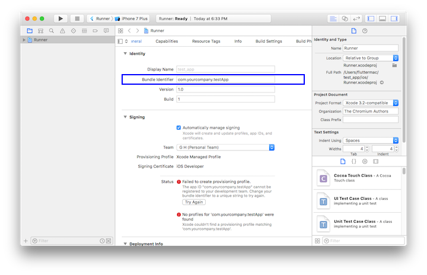
-
运行
flutter run启动flutter应用程序。
-
1.3.4 常见配置问题
1. Android Studio问题
1）缺少依赖库问题
上手安卓最常遇见的问题之一，错误如图1-7所示，此时点击超链接即可自动跳转到安装页面
安装之后重新运行即可，如图1-8：
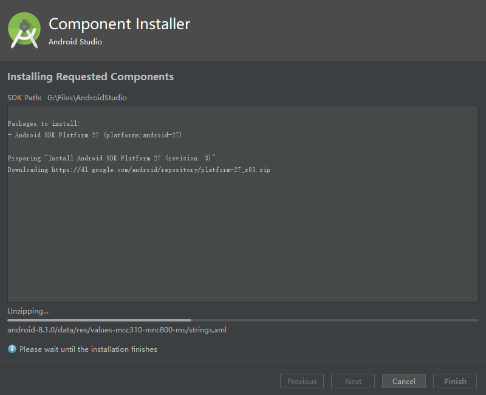
2）连接不上Android Repository
这也是最常见的问题之一，当你发现自己无法下载部分依赖的时候，请优先考虑这种情况。进入 File -> Settings -> Appearance & Behavior -> System Settings -> Android SDK -> SDK Update Sites 列表，可以看到此时的 Android Repository 无法连接，如图1-9所示：
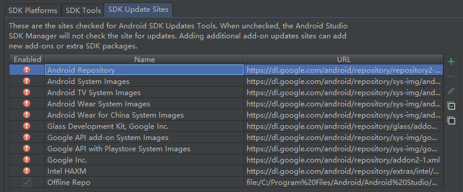
这是由于要去Google下载Android SDK，但在国内目前无法访问Google所致，因此，我们可以配置代理或使用vpn。
3）安卓包配置问题
一般格式为
Could not HEAD **
Could not Get **
如：Android Studio Could not GET gradle-3.2.0.pom
这一类问题是由于无法连接到 Maven 库造成的，解决方法如下：
-
进入
当前所在项目名/android -
打开
build.gradle -
找到下面这一部分，并加上
maven { url 'http://maven.aliyun.com/nexus/content/groups/public/' }allprojects { repositories { google() jcenter() maven { url 'http://maven.aliyun.com/nexus/content/groups/public/' } //添加这一句 } } -
进入 File/ Settings/ Build, Execution, Deployment/ BuildTools/ Gradle/ Android Studio 中，勾选上 Enable embedded Maven repository ，重启 Android Studio 即可解决。
**注意：**存在这样的一种情况，当你根据上述步骤设置了之后，依旧无法解决这个问题，并有类似于
Could not HEAD maven.aliyun.com的报错信息，请检查C:\Users\{user_name}\.gradle\gradle.properties是否有设置代理。删除后问题即可解决。
4）Hot Reload 热重载失效问题
在给 Terminal 之类的终端模拟器设置代理之后，会导致“Hot Reload”重载失效，此时调用 Save (cmd-s / ctrl-s)将不会进行热重载，热重载按钮 (带有闪电⚡️图标的按钮)也不会显示，将代理移除即可解决。
另外，有些情况下热重载是不生效的，比如修改了main函数、修改了全局静态方法等，读者可以认为“Hot Reload”只会重新构建整个widget树，如果变动不在构建widget树的过程中，“Hot Reload”就不会起作用，这时直接重启 App 就行。
1.4 Dart语言简介
在之前我们已经介绍过 Dart 语言的相关特性，读者可以翻看一下，如果读者已经熟悉 Dart 语法，可以跳过本节，如果你还不了解 Dart，也不用担心，按照笔者经验，如果你有过其他编程语言经验（尤其是 Java 或 JavaScript）的话会非常容易上手 Dart。当然，如果你是 iOS 开发者，也不用担心，Dart 中也有一些与 Swift 比较相似的特性，如命名参数等，笔者当时学习 Dart 时，也只是花了一个小时，看完 Dart 官网的 Language Tour，就开始动手写 Flutter 了，所以不用怕。
在笔者看来，Dart 在设计时应该是同时借鉴了 Java 和 JavaScript，同时又引入了一些现代编程语言的特性，如空安全，除此之外还有一些独创的语法，比如级联操作符。总之，熟悉之后，你会发现 Dart 是一门非常有意思的编程语言 ！
Dart 在静态语法方面和 Java 非常相似，如类型定义、函数声明、泛型等，而在动态特性方面又和 JavaScript 很像，如函数式特性、异步支持等。除了融合 Java 和 JavaScript 语言之所长之外，Dart 也具有一些其他很有表现力的语法，如可选命名参数、..（级联运算符）和?.（条件成员访问运算符）以及??（判空赋值运算符）。其实，对编程语言了解比较多的读者会发现，在 Dart 中其实看到的不仅有 Java 和 JavaScript 的影子，它还具有其他编程语言中的身影，如命名参数在 Objective-C 和 Swift 中早就很普遍，而??操作符在PHP 7.0 语法中就已经存在了，因此我们可以看到 Google 对 Dart 语言给予厚望，是想把 Dart 打造成一门集百家之所长的编程语言。
接下来，我们先对 Dart 语法做一个简单的介绍，然后再将 Dart 与 JavaScript 和 Java 做一个简要的对比，方便读者更好的理解。
注意：由于本书并非专门介绍 Dart 语言的书籍，所以本章主要会介绍一下在 Flutter 开发中常用的语法特性，如果想更多了解 Dart，读者可以去 Dart 官网学习，现在互联网上 Dart 相关资料已经很多了。另外 Dart 2. 14 已经正式发布，所以本书所有示例均采用 Dart 2.14 语法。
1.4.1 变量声明
1. var 关键字
类似于 JavaScript 中的var，它可以接收任何类型的变量，但最大的不同是 Dart 中 var 变量一旦赋值，类型便会确定，则不能再改变其类型，如：
var t = "hi world";
// 下面代码在dart中会报错，因为变量t的类型已经确定为String，
// 类型一旦确定后则不能再更改其类型。
t = 1000;
上面的代码在 JavaScript 是没有问题的，前端开发者需要注意一下，之所以有此差异是因为 Dart 本身是一个强类型语言，任何变量都是有确定类型的，在 Dart 中，当用var声明一个变量后，Dart 在编译时会根据第一次赋值数据的类型来推断其类型，编译结束后其类型就已经被确定，而 JavaScript 是纯粹的弱类型脚本语言，var 只是变量的声明方式而已。
2. dynamic 和 Object
Object 是 Dart 所有对象的根基类，也就是说在 Dart 中所有类型都是Object的子类(包括Function和Null)，所以任何类型的数据都可以赋值给Object声明的对象。
dynamic与Object 声明的变量都可以赋值任意对象，且后期可以改变赋值的类型，这和 var 是不同的，如：
dynamic t;
Object x;
t = "hi world";
x = 'Hello Object';
//下面代码没有问题
t = 1000;
x = 1000;
dynamic与Object不同的是dynamic声明的对象编译器会提供所有可能的组合，而Object声明的对象只能使用 Object 的属性与方法, 否则编译器会报错，如:
dynamic a;
Object b = "";
main() {
a = "";
printLengths();
}
printLengths() {
// 正常
print(a.length);
// 报错 The getter 'length' is not defined for the class 'Object'
print(b.length);
}
dynamic 的这个特点使得我们在使用它时需要格外注意，这很容易引入一个运行时错误，比如下面代码在编译时不会报错，而在运行时会报错：
print(a.xx); // a是字符串，没有"xx"属性，编译时不会报错，运行时会报错
3. final和const
如果您从未打算更改一个变量，那么使用 final 或 const，不是var，也不是一个类型。 一个 final 变量只能被设置一次，两者区别在于：const 变量是一个编译时常量（编译时直接替换为常量值），final变量在第一次使用时被初始化。被final或者const修饰的变量，变量类型可以省略，如：
//可以省略String这个类型声明
final str = "hi world";
//final String str = "hi world";
const str1 = "hi world";
//const String str1 = "hi world";
4. 空安全（null-safety）
Dart 中一切都是对象，这意味着如果我们定义一个数字，在初始化它之前如果我们使用了它，假如没有某种检查机制，则不会报错，比如：
test() {
int i;
print(i*8);
}
在 Dart 引入空安全之前，上面代码在执行前不会报错，但会触发一个运行时错误，原因是 i 的值为 null 。但现在有了空安全，则定义变量时我们可以指定变量是可空还是不可空。
int i = 8; //默认为不可空，必须在定义时初始化。
int? j; // 定义为可空类型，对于可空变量，我们在使用前必须判空。
// 如果我们预期变量不能为空，但在定义时不能确定其初始值，则可以加上late关键字，
// 表示会稍后初始化，但是在正式使用它之前必须得保证初始化过了，否则会报错
late int k;
k=9;
如果一个变量我们定义为可空类型，在某些情况下即使我们给它赋值过了，但是预处理器仍然有可能识别不出，这时我们就要显式（通过在变量后面加一个”!“符号）告诉预处理器它已经不是null了，比如：
class Test{
int? i;
Function? fun;
say(){
if(i!=null) {
print(i! * 8); //因为已经判过空，所以能走到这 i 必不为null，如果没有显式申明，则 IDE 会报错
}
if(fun!=null){
fun!(); // 同上
}
}
}
上面中如果函数变量可空时，调用的时候可以用语法糖：
fun?.call() // fun 不为空时则会被调用
1.4.2 函数
Dart是一种真正的面向对象的语言，所以即使是函数也是对象，并且有一个类型Function。这意味着函数可以赋值给变量或作为参数传递给其他函数，这是函数式编程的典型特征。
1. 函数声明
bool isNoble(int atomicNumber) {
return _nobleGases[atomicNumber] != null;
}
Dart函数声明如果没有显式声明返回值类型时会默认当做dynamic处理，注意，函数返回值没有类型推断：
typedef bool CALLBACK();
//不指定返回类型，此时默认为dynamic，不是bool
isNoble(int atomicNumber) {
return _nobleGases[atomicNumber] != null;
}
void test(CALLBACK cb){
print(cb());
}
//报错，isNoble不是bool类型
test(isNoble);
对于只包含一个表达式的函数，可以使用简写语法：
bool isNoble (int atomicNumber)=> true ;
2. 函数作为变量
var say = (str){
print(str);
};
say("hi world");
3. 函数作为参数传递
//定义函数execute，它的参数类型为函数
void execute(var callback) {
callback(); //执行传入的函数
}
//调用execute，将箭头函数作为参数传递
execute(() => print("xxx"))
1）可选的位置参数
包装一组函数参数，用[]标记为可选的位置参数，并放在参数列表的最后面：
String say(String from, String msg, [String? device]) {
var result = '$from says $msg';
if (device != null) {
result = '$result with a $device';
}
return result;
}
下面是一个不带可选参数调用这个函数的例子：
say('Bob', 'Howdy'); //结果是： Bob says Howdy
下面是用第三个参数调用这个函数的例子：
say('Bob', 'Howdy', 'smoke signal'); //结果是：Bob says Howdy with a smoke signal
2）可选的命名参数
定义函数时，使用{param1, param2, …}，放在参数列表的最后面，用于指定命名参数。例如：
//设置[bold]和[hidden]标志
void enableFlags({bool bold, bool hidden}) {
// ...
}
调用函数时，可以使用指定命名参数。例如：paramName: value
enableFlags(bold: true, hidden: false);
可选命名参数在Flutter中使用非常多。注意，不能同时使用可选的位置参数和可选的命名参数。
1.4.3 mixin
Dart 是不支持多继承的，但是它支持 mixin，简单来讲 mixin 可以 “组合” 多个类，我们通过一个例子来理解。
定义一个 Person 类，实现吃饭、说话、走路和写代码功能，同时定义一个 Dog 类，实现吃饭、和走路功能：
class Person {
say() {
print('say');
}
}
mixin Eat {
eat() {
print('eat');
}
}
mixin Walk {
walk() {
print('walk');
}
}
mixin Code {
code() {
print('key');
}
}
class Dog with Eat, Walk{}
class Man extends Person with Eat, Walk, Code{}
我们定义了几个 mixin，然后通过 with 关键字将它们组合成不同的类。有一点需要注意：如果多个mixin 中有同名方法，with 时，会默认使用最后面的 mixin 的，mixin 方法中可以通过 super 关键字调用之前 mixin 或类中的方法。我们这里只介绍 mixin 最基本的特性，关于 mixin 更详细的内容读者可以自行百度。
1.4.4 异步支持
Dart类库有非常多的返回Future或者Stream对象的函数。 这些函数被称为异步函数：它们只会在设置好一些耗时操作之后返回，比如像 IO操作。而不是等到这个操作完成。
async和await关键词支持了异步编程，允许您写出和同步代码很像的异步代码。
1. Future
Future与JavaScript中的Promise非常相似，表示一个异步操作的最终完成（或失败）及其结果值的表示。简单来说，它就是用于处理异步操作的，异步处理成功了就执行成功的操作，异步处理失败了就捕获错误或者停止后续操作。一个Future只会对应一个结果，要么成功，要么失败。
由于本身功能较多，这里我们只介绍其常用的API及特性。还有，请记住，Future 的所有API的返回值仍然是一个Future对象，所以可以很方便的进行链式调用。
1）Future.then
为了方便示例，在本例中我们使用Future.delayed 创建了一个延时任务（实际场景会是一个真正的耗时任务，比如一次网络请求），即2秒后返回结果字符串"hi world!"，然后我们在then中接收异步结果并打印结果，代码如下：
Future.delayed(Duration(seconds: 2),(){
return "hi world!";
}).then((data){
print(data);
});
2）Future.catchError
如果异步任务发生错误，我们可以在catchError中捕获错误，我们将上面示例改为：
Future.delayed(Duration(seconds: 2),(){
//return "hi world!";
throw AssertionError("Error");
}).then((data){
//执行成功会走到这里
print("success");
}).catchError((e){
//执行失败会走到这里
print(e);
});
在本示例中，我们在异步任务中抛出了一个异常，then 的回调函数将不会被执行，取而代之的是 catchError回调函数将被调用；但是，并不是只有 catchError回调才能捕获错误，then方法还有一个可选参数onError，我们也可以用它来捕获异常：
Future.delayed(Duration(seconds: 2), () {
//return "hi world!";
throw AssertionError("Error");
}).then((data) {
print("success");
}, onError: (e) {
print(e);
});
3）Future.whenComplete
有些时候，我们会遇到无论异步任务执行成功或失败都需要做一些事的场景，比如在网络请求前弹出加载对话框，在请求结束后关闭对话框。这种场景，有两种方法，第一种是分别在then或catch中关闭一下对话框，第二种就是使用Future的whenComplete回调，我们将上面示例改一下：
Future.delayed(Duration(seconds: 2),(){
//return "hi world!";
throw AssertionError("Error");
}).then((data){
//执行成功会走到这里
print(data);
}).catchError((e){
//执行失败会走到这里
print(e);
}).whenComplete((){
//无论成功或失败都会走到这里
});
4）Future.wait
有些时候，我们需要等待多个异步任务都执行结束后才进行一些操作，比如我们有一个界面，需要先分别从两个网络接口获取数据，获取成功后，我们需要将两个接口数据进行特定的处理后再显示到UI界面上，应该怎么做？答案是Future.wait，它接受一个Future数组参数，只有数组中所有Future都执行成功后，才会触发then的成功回调，只要有一个Future执行失败，就会触发错误回调。下面，我们通过模拟Future.delayed 来模拟两个数据获取的异步任务，等两个异步任务都执行成功时，将两个异步任务的结果拼接打印出来，代码如下：
Future.wait([
// 2秒后返回结果
Future.delayed(Duration(seconds: 2), () {
return "hello";
}),
// 4秒后返回结果
Future.delayed(Duration(seconds: 4), () {
return " world";
})
]).then((results){
print(results[0]+results[1]);
}).catchError((e){
print(e);
});
执行上面代码，4秒后你会在控制台中看到“hello world”。
2. async/await
Dart中的async/await 和JavaScript中的async/await功能是一样的：异步任务串行化。如果你已经了解JavaScript中的async/await的用法，可以直接跳过本节。
1）回调地狱(Callback Hell)
如果代码中有大量异步逻辑，并且出现大量异步任务依赖其他异步任务的结果时，必然会出现Future.then回调中套回调情况。举个例子，比如现在有个需求场景是用户先登录，登录成功后会获得用户ID，然后通过用户ID，再去请求用户个人信息，获取到用户个人信息后，为了使用方便，我们需要将其缓存在本地文件系统，代码如下：
//先分别定义各个异步任务
Future<String> login(String userName, String pwd){
...
//用户登录
};
Future<String> getUserInfo(String id){
...
//获取用户信息
};
Future saveUserInfo(String userInfo){
...
// 保存用户信息
};
接下来，执行整个任务流：
login("alice","******").then((id){
//登录成功后通过，id获取用户信息
getUserInfo(id).then((userInfo){
//获取用户信息后保存
saveUserInfo(userInfo).then((){
//保存用户信息，接下来执行其他操作
...
});
});
})
可以感受一下，如果业务逻辑中有大量异步依赖的情况，将会出现上面这种在回调里面套回调的情况，过多的嵌套会导致的代码可读性下降以及出错率提高，并且非常难维护，这个问题被形象的称为回调地狱（Callback Hell）。回调地狱问题在之前 JavaScript 中非常突出，也是 JavaScript 被吐槽最多的点，但随着 ECMAScript 标准发布后，这个问题得到了非常好的解决，而解决回调地狱的两大神器正是 ECMAScript6 引入了Promise，以及ECMAScript7 中引入的async/await。 而在 Dart 中几乎是完全平移了 JavaScript 中的这两者：Future 相当于Promise，而async/await连名字都没改。接下来我们看看通过Future和async/await如何消除上面示例中的嵌套问题。
2）消除回调地狱
消除回调地狱主要有两种方式：
一、使用Future消除Callback Hell
login("alice","******").then((id){
return getUserInfo(id);
}).then((userInfo){
return saveUserInfo(userInfo);
}).then((e){
//执行接下来的操作
}).catchError((e){
//错误处理
print(e);
});
正如上文所述， “Future 的所有API的返回值仍然是一个Future对象，所以可以很方便的进行链式调用” ，如果在then 中返回的是一个Future的话，该future会执行，执行结束后会触发后面的then回调，这样依次向下，就避免了层层嵌套。
二、使用 async/await 消除 callback hell
通过Future回调中再返回Future的方式虽然能避免层层嵌套，但是还是有一层回调，有没有一种方式能够让我们可以像写同步代码那样来执行异步任务而不使用回调的方式？答案是肯定的，这就要使用async/await了，下面我们先直接看代码，然后再解释，代码如下：
task() async {
try{
String id = await login("alice","******");
String userInfo = await getUserInfo(id);
await saveUserInfo(userInfo);
//执行接下来的操作
} catch(e){
//错误处理
print(e);
}
}
-
async用来表示函数是异步的，定义的函数会返回一个Future对象，可以使用 then 方法添加回调函数。 -
await后面是一个Future，表示等待该异步任务完成，异步完成后才会往下走；await必须出现在async函数内部。
可以看到，我们通过async/await将一个异步流用同步的代码表示出来了。
其实，无论是在 JavaScript 还是 Dart 中，
async/await都只是一个语法糖，编译器或解释器最终都会将其转化为一个 Promise（Future）的调用链。
1.4.5 Stream
Stream 也是用于接收异步事件数据，和 Future 不同的是，它可以接收多个异步操作的结果（成功或失败）。 也就是说，在执行异步任务时，可以通过多次触发成功或失败事件来传递结果数据或错误异常。 Stream 常用于会多次读取数据的异步任务场景，如网络内容下载、文件读写等。举个例子：
Stream.fromFutures([
// 1秒后返回结果
Future.delayed(Duration(seconds: 1), () {
return "hello 1";
}),
// 抛出一个异常
Future.delayed(Duration(seconds: 2),(){
throw AssertionError("Error");
}),
// 3秒后返回结果
Future.delayed(Duration(seconds: 3), () {
return "hello 3";
})
]).listen((data){
print(data);
}, onError: (e){
print(e.message);
},onDone: (){
});
上面的代码依次会输出：
I/flutter (17666): hello 1
I/flutter (17666): Error
I/flutter (17666): hello 3
代码很简单，就不赘述了。
思考题：既然 Stream 可以接收多次事件，那能不能用 Stream 来实现一个订阅者模式的事件总线？
1.4.6 Dart和Java及JavaScript对比
通过上面介绍，相信你对 Dart 应该有了一个初步的印象，由于笔者平时也使用 Java 和 JavaScript，下面笔者根据自己的经验，结合 Java 和 JavaScript，谈一下自己的看法。
之所以将 Dart 与 Java 和 JavaScript 对比，是因为，这两者分别是强类型语言和弱类型语言的典型代表，并且 Dart 语法中很多地方也都借鉴了 Java 和 JavaScript。
1. Dart vs Java
客观的来讲，Dart 在语法层面确实比 Java 更有表现力；在 VM 层面，Dart VM 在内存回收和吞吐量都进行了反复的优化，但具体的性能对比，笔者没有找到相关测试数据，但在笔者看来，只要 Dart 语言能流行，VM 的性能就不用担心，毕竟 Google 在 Go、JavaScript（v8）、Dalvik（ Android 上的 Java VM ）上已经有了很多技术积淀。值得注意的是 Dart 在 Flutter 中已经可以将 GC（内存垃圾回收）做到 10ms 以内，所以 Dart 和 Java 相比，决胜因素并不会是在性能方面。而在语法层面，Dart 要比 Java 更有表现力，最重要的是 Dart 对函数式编程支持要远强于 Java（目前只停留在 Lambda 表达式），而 Dart 目前真正的不足是生态，但笔者相信，随着 Flutter 的逐渐火热，会回过头来反推 Dart 生态加速发展，对于 Dart 来说，现在需要的是时间。
2. Dart vs JavaScript
JavaScript 的“弱类型”一直被诟病，所以 TypeScript （JavaScript语言的超集，语法兼容JavaScript，但添加了“类型”）才有市场。就笔者使用过的脚本语言中（笔者曾使用过 Python、PHP），JavaScript 无疑是动态化支持最好的脚本语言，比如在 JavaScript 中，可以给任何对象在任何时候动态扩展属性，对于精通 JavaScript 的高手来说，这无疑是一把利剑。但是，任何事物都有两面性，JavaScript 强大的动态化特性也是把双刃剑，你可经常听到另一个声音，认为 JavaScript 的这种动态性糟糕透了，太过灵活反而导致代码很难预期，无法限制不被期望的修改。毕竟有些人总是对自己或别人写的代码不放心，他们希望能够让代码变得可控，并期望有一套静态类型检查系统来帮助自己减少错误。正因如此，在 Flutter中，Dart 几乎放弃了脚本语言动态化的特性，如不支持反射、也不支持动态创建函数等。并且 Dart 从 2.0 开始强制开启了类型检查（Strong Mode），原先的检查模式（checked mode）和可选类型（optional type）将淡出，所以在类型安全这个层面来说，Dart 和 TypeScript、CoffeeScript 是差不多的，所以单从动态性来看，Dart 并不具备什么明显优势，但综合起来看，Dart 既能进行服务端脚本、App 开发、Web 开发，这就有优势了！
笔者在本书第一版的时候就表示过很看好 Dart 语言的将来，事实上，这几年，在 Github 上 Dart 语言开发的项目数量一直保持高速增长，所以 enjoy it !
简介
本章将通过一些简单的示例来一步步介绍Flutter的开发流程.
本章目录
2.1 计数器应用示例
用 Android Studio 和 VS Code 创建的 Flutter 应用模板默认是一个简单的计数器示例。本节先仔细讲解一下这个计数器 Demo 的源码，让读者对 Flutter 应用程序结构有个基本了解，然后在随后的小节中将会基于此示例，一步一步添加一些新的功能来介绍 Flutter 应用的其他概念与技术。
对于接下来的示例，希望读者可以跟着笔者一起亲自动手来写一下，这样不仅可以加深印象，而且也会对介绍的概念与技术有一个真切的体会。如果你还不是很熟悉 Dart 语言或者没有移动开发经验，不用担心，只要你熟悉面向对象和基本编程概念（如变量、循环和条件控制），则可以完成本示例。
2.1.1 创建Flutter应用模板
1. 创建应用
通过 Android Studio 或 VS Code 创建一个新的 Flutter 工程，命名为 "first_flutter_app"。创建好后，就会得到一个默认的计数器应用示例。
注意，默认计数器示例可能随着编辑器 Flutter 插件的版本变化而变化，本例中会介绍计数器示例的全部代码，所以不会对本示例产生影响。
我们先运行创建的工程，效果如图2-1所示：

该计数器示例中，每点击一次右下角带“+”号的悬浮按钮，屏幕中央的数字就会加1。
在这个示例中，主要Dart代码是在 lib/main.dart 文件中，下面是它的源码：
class MyApp extends StatelessWidget {
@override
Widget build(BuildContext context) {
return MaterialApp(
title: 'Flutter Demo',
theme: ThemeData(
primarySwatch: Colors.blue,
),
home: MyHomePage(title: 'Flutter Demo Home Page'),
);
}
}
class MyHomePage extends StatefulWidget {
MyHomePage({Key? key, required this.title}) : super(key: key);
final String title;
@override
_MyHomePageState createState() => _MyHomePageState();
}
class _MyHomePageState extends State<MyHomePage> {
int _counter = 0;
void _incrementCounter() {
setState(() {
_counter++;
});
}
@override
Widget build(BuildContext context) {
return Scaffold(
appBar: AppBar(
title: Text(widget.title),
),
body: Center(
child: Column(
mainAxisAlignment: MainAxisAlignment.center,
children: <Widget>[
Text('You have pushed the button this many times:'),
Text(
'$_counter',
style: Theme.of(context).textTheme.headline4,
),
],
),
),
floatingActionButton: FloatingActionButton(
onPressed: _incrementCounter,
tooltip: 'Increment',
child: Icon(Icons.add),
), // This trailing comma makes auto-formatting nicer for build methods.
);
}
}
2. 模板代码分析
下面我们分析一下生成的代码：
1）导入包
import 'package:flutter/material.dart';
此行代码作用是导入了 Material UI 组件库。Material 是一种标准的移动端和web端的视觉设计语言， Flutter 默认提供了一套丰富的 Material 风格的UI组件。
2）应用入口
void main() => runApp(MyApp());
-
与 C/C++、Java 类似，Flutter 应用中
main函数为应用程序的入口。main函数中调用了runApp方法，它的功能是启动Flutter应用。runApp它接受一个Widget参数，在本示例中它是一个MyApp对象，MyApp()是 Flutter 应用的根组件。读者现在只需知道 runApp 是 Flutter 应用的入口即可，关于 Flutter 应用的启动流程，我们会在本书后面原理篇中做详细介绍。
-
main函数使用了(=>)符号，这是 Dart 中单行函数或方法的简写。
3）应用结构
class MyApp extends StatelessWidget {
@override
Widget build(BuildContext context) {
return MaterialApp(
//应用名称
title: 'Flutter Demo',
theme: ThemeData(
//蓝色主题
primarySwatch: Colors.blue,
),
//应用首页路由
home: MyHomePage(title: 'Flutter Demo Home Page'),
);
}
}
-
MyApp类代表 Flutter 应用，它继承了StatelessWidget类，这也就意味着应用本身也是一个widget。 -
在 Flutter 中，大多数东西都是 widget（后同“组件”或“部件”），包括对齐（Align）、填充（Padding）、手势处理（GestureDetector）等，它们都是以 widget 的形式提供。
-
Flutter 在构建页面时，会调用组件的
build方法，widget 的主要工作是提供一个 build() 方法来描述如何构建 UI 界面（通常是通过组合、拼装其他基础 widget ）。 -
MaterialApp是Material 库中提供的 Flutter APP 框架，通过它可以设置应用的名称、主题、语言、首页及路由列表等。MaterialApp也是一个 widget。 -
home为 Flutter 应用的首页，它也是一个 widget。
2.1.2 首页
1. 初识Widget
class MyHomePage extends StatefulWidget {
MyHomePage({Key? key, required this.title}) : super(key: key);
final String title;
@override
_MyHomePageState createState() => _MyHomePageState();
}
class _MyHomePageState extends State<MyHomePage> {
...
}
MyHomePage 是应用的首页，它继承自StatefulWidget类，表示它是一个有状态的组件（Stateful widget）。关于 Stateful widget 我们将在 “2.2Widget简介” 一节仔细介绍，现在我们只需简单认为有状态的组件（Stateful widget） 和无状态的组件（Stateless widget）有两点不同：
-
Stateful widget 可以拥有状态，这些状态在 widget 生命周期中是可以变的，而 Stateless widget 是不可变的。
-
Stateful widget 至少由两个类组成：
- 一个
StatefulWidget类。 - 一个
State类；StatefulWidget类本身是不变的，但是State类中持有的状态在 widget 生命周期中可能会发生变化。
_MyHomePageState类是MyHomePage类对应的状态类。看到这里，读者可能已经发现：和MyApp类不同，MyHomePage类中并没有build方法，取而代之的是，build方法被挪到了_MyHomePageState方法中，至于为什么这么做，先留个疑问，在分析完完整代码后再来解答。 - 一个
3. State类
1) _MyHomePageState 类解析
接下来，我们看看_MyHomePageState中都包含哪些东西：
-
组件的状态。
由于我们只需要维护一个点击次数计数器，所以定义一个
_counter状态：int _counter = 0; //用于记录按钮点击的总次数_counter为保存屏幕右下角带“+”号按钮点击次数的状态。 -
设置状态的自增函数。
void _incrementCounter() { setState(() { _counter++; }); }当按钮点击时，会调用此函数，该函数的作用是先自增
_counter，然后调用setState方法。setState方法的作用是通知 Flutter 框架，有状态发生了改变，Flutter 框架收到通知后，会执行build方法来根据新的状态重新构建界面， Flutter 对此方法做了优化，使重新执行变的很快，所以你可以重新构建任何需要更新的东西，而无需分别去修改各个 widget。 -
构建UI界面的
build方法构建UI界面的逻辑在
build方法中，当MyHomePage第一次创建时，_MyHomePageState类会被创建，当初始化完成后，Flutter框架会调用 widget 的build方法来构建 widget 树，最终将 widget 树渲染到设备屏幕上。所以，我们看看_MyHomePageState的build方法中都干了什么事：Widget build(BuildContext context) { return Scaffold( appBar: AppBar( title: Text(widget.title), ), body: Center( child: Column( mainAxisAlignment: MainAxisAlignment.center, children: <Widget>[ Text('You have pushed the button this many times:'), Text( '$_counter', style: Theme.of(context).textTheme.headline4, ), ], ), ), floatingActionButton: FloatingActionButton( onPressed: _incrementCounter, tooltip: 'Increment', child: Icon(Icons.add), ), ); }Scaffold是 Material 库中提供的页面脚手架，它提供了默认的导航栏、标题和包含主屏幕 widget 树（后同“组件树”或“部件树”）的body属性，组件树可以很复杂。本书后面示例中，路由默认都是通过Scaffold创建。body的组件树中包含了一个Center组件，Center可以将其子组件树对齐到屏幕中心。此例中，Center子组件是一个Column组件，Column的作用是将其所有子组件沿屏幕垂直方向依次排列； 此例中Column子组件是两个Text，第一个Text显示固定文本 “You have pushed the button this many times:”，第二个Text显示_counter状态的数值。floatingActionButton是页面右下角的带“+”的悬浮按钮，它的onPressed属性接受一个回调函数，代表它被点击后的处理器，本例中直接将_incrementCounter方法作为其处理函数。
现在，我们将整个计数器执行流程串起来：当右下角的floatingActionButton按钮被点击之后，会调用_incrementCounter方法。在_incrementCounter方法中，首先会自增_counter计数器（状态），然后setState会通知 Flutter 框架状态发生变化，接着，Flutter 框架会调用build方法以新的状态重新构建UI，最终显示在设备屏幕上。
2）为什么要将 build 方法放在 State 中，而不是放在StatefulWidget中？
现在，我们回答之前提出的问题，为什么build()方法放在State（而不是StatefulWidget）中 ？这主要是为了提高开发的灵活性。如果将build()方法放在StatefulWidget中则会有两个问题：
- 状态访问不便。
试想一下，如果我们的StatefulWidget有很多状态，而每次状态改变都要调用build方法，由于状态是保存在 State 中的，如果build方法在StatefulWidget中，那么build方法和状态分别在两个类中，那么构建时读取状态将会很不方便！试想一下，如果真的将build方法放在 StatefulWidget 中的话，由于构建用户界面过程需要依赖 State，所以build方法将必须加一个State参数，大概是下面这样：
Widget build(BuildContext context, State state){
//state.counter
...
}
这样的话就只能将State的所有状态声明为公开的状态，这样才能在State类外部访问状态！但是，将状态设置为公开后，状态将不再具有私密性，这就会导致对状态的修改将会变的不可控。但如果将build()方法放在State中的话，构建过程不仅可以直接访问状态，而且也无需公开私有状态，这会非常方便。
- 继承
StatefulWidget不便。
例如，Flutter 中有一个动画 widget 的基类AnimatedWidget，它继承自StatefulWidget类。AnimatedWidget中引入了一个抽象方法build(BuildContext context)，继承自AnimatedWidget的动画 widget 都要实现这个build方法。现在设想一下，如果StatefulWidget 类中已经有了一个build方法，正如上面所述，此时build方法需要接收一个 State 对象，这就意味着AnimatedWidget必须将自己的 State 对象(记为_animatedWidgetState)提供给其子类，因为子类需要在其build方法中调用父类的build方法，代码可能如下：
class MyAnimationWidget extends AnimatedWidget{
@override
Widget build(BuildContext context, State state){
//由于子类要用到AnimatedWidget的状态对象_animatedWidgetState，
//所以AnimatedWidget必须通过某种方式将其状态对象_animatedWidgetState
//暴露给其子类
super.build(context, _animatedWidgetState)
}
}
这样很显然是不合理的，因为
-
AnimatedWidget的状态对象是AnimatedWidget内部实现细节，不应该暴露给外部。 -
如果要将父类状态暴露给子类，那么必须得有一种传递机制，而做这一套传递机制是无意义的，因为父子类之间状态的传递和子类本身逻辑是无关的。
综上所述，可以发现，对于StatefulWidget，将build方法放在 State 中，可以给开发带来很大的灵活性。
2.2 Widget 简介
2.2.1 Widget 概念
在前面的介绍中，我们知道在Flutter中几乎所有的对象都是一个 widget 。与原生开发中“控件”不同的是，Flutter 中的 widget 的概念更广泛，它不仅可以表示UI元素，也可以表示一些功能性的组件如：用于手势检测的 GestureDetector 、用于APP主题数据传递的 Theme 等等，而原生开发中的控件通常只是指UI元素。在后面的内容中，我们在描述UI元素时可能会用到“控件”、“组件”这样的概念，读者心里需要知道他们就是 widget ，只是在不同场景的不同表述而已。由于 Flutter 主要就是用于构建用户界面的，所以，在大多数时候，读者可以认为 widget 就是一个控件，不必纠结于概念。
Flutter 中是通过 Widget 嵌套 Widget 的方式来构建UI和进行事件处理的，所以记住，Flutter 中万物皆为Widget。
2.2.2 Widget 接口
在 Flutter 中， widget 的功能是“描述一个UI元素的配置信息”，它就是说， Widget 其实并不是表示最终绘制在设备屏幕上的显示元素，所谓的配置信息就是 Widget 接收的参数，比如对于 Text 来讲，文本的内容、对齐方式、文本样式都是它的配置信息。下面我们先来看一下 Widget 类的声明：
@immutable // 不可变的
abstract class Widget extends DiagnosticableTree {
const Widget({ this.key });
final Key? key;
@protected
@factory
Element createElement();
@override
String toStringShort() {
final String type = objectRuntimeType(this, 'Widget');
return key == null ? type : '$type-$key';
}
@override
void debugFillProperties(DiagnosticPropertiesBuilder properties) {
super.debugFillProperties(properties);
properties.defaultDiagnosticsTreeStyle = DiagnosticsTreeStyle.dense;
}
@override
@nonVirtual
bool operator ==(Object other) => super == other;
@override
@nonVirtual
int get hashCode => super.hashCode;
static bool canUpdate(Widget oldWidget, Widget newWidget) {
return oldWidget.runtimeType == newWidget.runtimeType
&& oldWidget.key == newWidget.key;
}
...
}
@immutable代表 Widget 是不可变的，这会限制 Widget 中定义的属性（即配置信息）必须是不可变的（final），为什么不允许 Widget 中定义的属性变化呢？这是因为，Flutter 中如果属性发生变化则会重新构建Widget树，即重新创建新的 Widget 实例来替换旧的 Widget 实例，所以允许 Widget 的属性变化是没有意义的，因为一旦 Widget 自己的属性变了自己就会被替换。这也是为什么 Widget 中定义的属性必须是 final 的原因。widget类继承自DiagnosticableTree，DiagnosticableTree即“诊断树”，主要作用是提供调试信息。Key: 这个key属性类似于 React/Vue 中的key，主要的作用是决定是否在下一次build时复用旧的 widget ，决定的条件在canUpdate()方法中。createElement()：正如前文所述“一个 widget 可以对应多个Element”；Flutter 框架在构建UI树时，会先调用此方法生成对应节点的Element对象。此方法是 Flutter 框架隐式调用的，在我们开发过程中基本不会调用到。debugFillProperties(...)复写父类的方法，主要是设置诊断树的一些特性。canUpdate(...)是一个静态方法，它主要用于在 widget 树重新build时复用旧的 widget ，其实具体来说，应该是：是否用新的 widget 对象去更新旧UI树上所对应的Element对象的配置；通过其源码我们可以看到，只要newWidget与oldWidget的runtimeType和key同时相等时就会用new widget去更新Element对象的配置，否则就会创建新的Element。
有关 Key 和 widget 复用的细节将会在本书后面高级部分深入讨论，读者现在只需知道，为 widget 显式添加 key 的话可能（但不一定）会使UI在重新构建时变的高效，读者目前可以先忽略此参数，本书后面在用到时会详细解释 。
另外Widget类本身是一个抽象类，其中最核心的就是定义了createElement()接口，在 Flutter 开发中，我们一般都不用直接继承Widget类来实现一个新组件，相反，我们通常会通过继承StatelessWidget 或StatefulWidget 来间接继承widget类来实现。StatelessWidget 和StatefulWidget 都是直接继承自Widget类，而这两个类也正是 Flutter 中非常重要的两个抽象类，它们引入了两种 widget 模型，接下来我们将重点介绍一下这两个类。
2.2.3 Flutter中的四棵树
既然 Widget 只是描述一个UI元素的配置信息，那么真正的布局、绘制是由谁来完成的呢？Flutter 框架的处理流程是这样的：
- 根据 Widget 树生成一个 Element 树，Element 树中的节点都继承自
Element类。 - 根据 Element 树生成 Render 树（渲染树），渲染树中的节点都继承自
RenderObject类。 - 根据渲染树生成 Layer 树，然后上屏显示，Layer 树中的节点都继承自
Layer类。
真正的布局和渲染逻辑在 Render 树中，Element 是 Widget 和 RenderObject 的粘合剂，可以理解为一个中间代理。我们通过一个例子来说明，假设有如下 Widget 树：
Container( // 一个容器 widget
color: Colors.blue, // 设置容器背景色
child: Row( // 可以将子widget沿水平方向排列
children: [
Image.network('https://www.example.com/1.png'), // 显示图片的 widget
const Text('A'),
],
),
);
注意，如果 Container 设置了背景色，Container 内部会创建一个新的 ColoredBox 来填充背景，相关逻辑如下：
if (color != null)
current = ColoredBox(color: color!, child: current);
而 Image 内部会通过 RawImage 来渲染图片、Text 内部会通过 RichText 来渲染文本，所以最终的 Widget树、Element 树、渲染树结构如图2-2所示：

这里需要注意：
- 三棵树中，Widget 和 Element 是一一对应的，但并不和 RenderObject 一一对应。比如
StatelessWidget和StatefulWidget都没有对应的 RenderObject。 - 渲染树在上屏前会生成一棵 Layer 树，这个我们将在后面原理篇介绍，在前面的章节中读者只需要记住以上三棵树就行。
2.2.4 StatelessWidget
1. 简介
在之前的章节中，我们已经简单介绍过StatelessWidget ，StatelessWidget 相对比较简单，它继承自widget类，重写了createElement() 方法：
@override
StatelessElement createElement() => StatelessElement(this);
StatelessElement 间接继承自Element类，与StatelessWidget 相对应（作为其配置数据）。
StatelessWidget 用于不需要维护状态的场景，它通常在build方法中通过嵌套其他 widget 来构建UI，在构建过程中会递归的构建其嵌套的 widget 。我们看一个简单的例子：
class Echo extends StatelessWidget {
const Echo({
Key? key,
required this.text,
this.backgroundColor = Colors.grey, //默认为灰色
}):super(key:key);
final String text;
final Color backgroundColor;
@override
Widget build(BuildContext context) {
return Center(
child: Container(
color: backgroundColor,
child: Text(text),
),
);
}
}
上面的代码，实现了一个回显字符串的Echo widget 。
按照惯例，widget 的构造函数参数应使用命名参数，命名参数中的必需要传的参数要添加
required关键字，这样有利于静态代码分析器进行检查；在继承 widget 时，第一个参数通常应该是Key。另外，如果 widget 需要接收子 widget ，那么child或children参数通常应被放在参数列表的最后。同样是按照惯例， widget 的属性应尽可能的被声明为final，防止被意外改变。
然后我们可以通过如下方式使用它：
Widget build(BuildContext context) {
return Echo(text: "hello world");
}
运行后效果如图2-3所示：

2. Context
build方法有一个context参数，它是BuildContext类的一个实例，表示当前 widget 在 widget 树中的上下文，每一个 widget 都会对应一个 context 对象（因为每一个 widget 都是 widget 树上的一个节点）。实际上，context是当前 widget 在 widget 树中位置中执行”相关操作“的一个句柄(handle)，比如它提供了从当前 widget 开始向上遍历 widget 树以及按照 widget 类型查找父级 widget 的方法。下面是在子树中获取父级 widget 的一个示例：
class ContextRoute extends StatelessWidget {
@override
Widget build(BuildContext context) {
return Scaffold(
appBar: AppBar(
title: Text("Context测试"),
),
body: Container(
child: Builder(builder: (context) {
// 在 widget 树中向上查找最近的父级`Scaffold` widget
Scaffold scaffold = context.findAncestorWidgetOfExactType<Scaffold>();
// 直接返回 AppBar的title， 此处实际上是Text("Context测试")
return (scaffold.appBar as AppBar).title;
}),
),
);
}
}
运行后效果如图2-4所示：
注意：对于
BuildContext读者现在可以先作了解，随着本书后面内容的展开，也会用到 Context 的一些方法，读者可以通过具体的场景对其有个直观的认识。关于BuildContext更多的内容，我们也将在后面高级部分再深入介绍。
2.2.5 StatefulWidget
和StatelessWidget 一样，StatefulWidget也是继承自widget类，并重写了createElement() 方法，不同的是返回的Element 对象并不相同；另外StatefulWidget类中添加了一个新的接口createState()。
下面我们看看StatefulWidget的类定义：
abstract class StatefulWidget extends Widget {
const StatefulWidget({ Key key }) : super(key: key);
@override
StatefulElement createElement() => StatefulElement(this);
@protected
State createState();
}
-
StatefulElement间接继承自Element类，与StatefulWidget相对应（作为其配置数据）。StatefulElement中可能会多次调用createState()来创建状态（State）对象。 -
createState()用于创建和 StatefulWidget 相关的状态，它在StatefulWidget 的生命周期中可能会被多次调用。例如，当一个 StatefulWidget 同时插入到 widget 树的多个位置时，Flutter 框架就会调用该方法为每一个位置生成一个独立的State实例，其实，本质上就是一个StatefulElement对应一个State实例。而在StatefulWidget 中，State 对象和
StatefulElement具有一一对应的关系，所以在Flutter的SDK文档中，可以经常看到“从树中移除 State 对象”或“插入 State 对象到树中”这样的描述，此时的树指通过 widget 树生成的 Element 树。Flutter 的 SDK 文档中经常会提到“树” ，我们可以根据语境来判断到底指的是哪棵树。其实，无论是哪棵树，最终的目标都是为了描述 UI 的结构和绘制信息，所以在 Flutter 中遇到“树”的概念时，若无特别说明，我们都可以理解为 “一棵构成用户界面的节点树”，读者不必纠结于这些概念，还是那句话“得其神，忘其形”。
2.2.6 State
1. 简介
一个 StatefulWidget 类会对应一个 State 类，State表示与其对应的 StatefulWidget 要维护的状态，State 中的保存的状态信息可以：
- 在 widget 构建时可以被同步读取。
- 在 widget 生命周期中可以被改变，当State被改变时，可以手动调用其
setState()方法通知Flutter 框架状态发生改变，Flutter 框架在收到消息后，会重新调用其build方法重新构建 widget 树，从而达到更新UI的目的。
State 中有两个常用属性：
-
widget，它表示与该 State 实例关联的 widget 实例，由Flutter 框架动态设置。注意，这种关联并非永久的，因为在应用生命周期中，UI树上的某一个节点的 widget 实例在重新构建时可能会变化，但State实例只会在第一次插入到树中时被创建，当在重新构建时，如果 widget 被修改了，Flutter 框架会动态设置State. widget 为新的 widget 实例。 -
context。StatefulWidget对应的 BuildContext，作用同StatelessWidget 的BuildContext。
2. State生命周期
理解State的生命周期对flutter开发非常重要，为了加深读者印象，本节我们通过一个实例来演示一下 State 的生命周期。在接下来的示例中，我们仍然以计数器功能为例，实现一个计数器 CounterWidget 组件 ，点击它可以使计数器加1，由于要保存计数器的数值状态，所以我们应继承StatefulWidget，代码如下：
class CounterWidget extends StatefulWidget {
const CounterWidget({Key? key, this.initValue = 0});
final int initValue;
@override
_CounterWidgetState createState() => _CounterWidgetState();
}
CounterWidget 接收一个initValue整型参数，它表示计数器的初始值。下面我们看一下State的代码：
class _CounterWidgetState extends State<CounterWidget> {
int _counter = 0;
@override
void initState() {
super.initState();
//初始化状态
_counter = widget.initValue;
print("initState");
}
@override
Widget build(BuildContext context) {
print("build");
return Scaffold(
body: Center(
child: TextButton(
child: Text('$_counter'),
//点击后计数器自增
onPressed: () => setState(
() => ++_counter,
),
),
),
);
}
@override
void didUpdateWidget(CounterWidget oldWidget) {
super.didUpdateWidget(oldWidget);
print("didUpdateWidget ");
}
@override
void deactivate() {
super.deactivate();
print("deactivate");
}
@override
void dispose() {
super.dispose();
print("dispose");
}
@override
void reassemble() {
super.reassemble();
print("reassemble");
}
@override
void didChangeDependencies() {
super.didChangeDependencies();
print("didChangeDependencies");
}
}
接下来，我们创建一个新路由，在新路由中，我们只显示一个CounterWidget ：
class StateLifecycleTest extends StatelessWidget {
const StateLifecycleTest({Key? key}) : super(key: key);
@override
Widget build(BuildContext context) {
return CounterWidget();
}
}
我们运行应用并打开该路由页面，在新路由页打开后，屏幕中央就会出现一个数字0，然后控制台日志输出：
I/flutter ( 5436): initState
I/flutter ( 5436): didChangeDependencies
I/flutter ( 5436): build
可以看到，在StatefulWidget插入到 widget 树时首先initState方法会被调用。
然后我们点击⚡️按钮热重载，控制台输出日志如下：
I/flutter ( 5436): reassemble
I/flutter ( 5436): didUpdateWidget
I/flutter ( 5436): build
可以看到此时 initState 和didChangeDependencies都没有被调用，而此时didUpdateWidget 被调用。
接下来，我们在 widget 树中移除CounterWidget ，将 StateLifecycleTest 的 build 方法改为：
Widget build(BuildContext context) {
//移除计数器
//return CounterWidget ();
//随便返回一个Text()
return Text("xxx");
}
然后热重载，日志如下：
I/flutter ( 5436): reassemble
I/flutter ( 5436): deactive
I/flutter ( 5436): dispose
我们可以看到，在CounterWidget 从 widget 树中移除时，deactive和dispose会依次被调用。
下面我们来看看各个回调函数：
-
initState：当 widget 第一次插入到 widget 树时会被调用，对于每一个State对象，Flutter 框架只会调用一次该回调，所以，通常在该回调中做一些一次性的操作，如状态初始化、订阅子树的事件通知等。不能在该回调中调用BuildContext.dependOnInheritedWidgetOfExactType（该方法用于在 widget 树上获取离当前 widget 最近的一个父级InheritedWidget，关于InheritedWidget我们将在后面章节介绍），原因是在初始化完成后， widget 树中的InheritFrom widget也可能会发生变化，所以正确的做法应该在在build（）方法或didChangeDependencies()中调用它。 -
didChangeDependencies()：当State对象的依赖发生变化时会被调用；例如：在之前build()中包含了一个InheritedWidget（第七章介绍），然后在之后的build()中Inherited widget发生了变化，那么此时InheritedWidget的子 widget 的didChangeDependencies()回调都会被调用。典型的场景是当系统语言 Locale 或应用主题改变时，Flutter 框架会通知 widget 调用此回调。需要注意，组件第一次被创建后挂载的时候（包括重创建）对应的didChangeDependencies也会被调用。 -
build()：此回调读者现在应该已经相当熟悉了，它主要是用于构建 widget 子树的，会在如下场景被调用：- 在调用
initState()之后。 - 在调用
didUpdateWidget()之后。 - 在调用
setState()之后。 - 在调用
didChangeDependencies()之后。 - 在State对象从树中一个位置移除后（会调用deactivate）又重新插入到树的其他位置之后。
- 在调用
-
reassemble()：此回调是专门为了开发调试而提供的，在热重载(hot reload)时会被调用，此回调在Release模式下永远不会被调用。 -
didUpdateWidget ()：在 widget 重新构建时，Flutter 框架会调用widget.canUpdate来检测 widget 树中同一位置的新旧节点，然后决定是否需要更新，如果widget.canUpdate返回true则会调用此回调。正如之前所述，widget.canUpdate会在新旧 widget 的key和runtimeType同时相等时会返回true，也就是说在在新旧 widget 的key和runtimeType同时相等时didUpdateWidget()就会被调用。 -
deactivate()：当 State 对象从树中被移除时，会调用此回调。在一些场景下，Flutter 框架会将 State 对象重新插到树中，如包含此 State 对象的子树在树的一个位置移动到另一个位置时（可以通过GlobalKey 来实现）。如果移除后没有重新插入到树中则紧接着会调用dispose()方法。 -
dispose()：当 State 对象从树中被永久移除时调用；通常在此回调中释放资源。
StatefulWidget 生命周期如图2-5所示：

注意：在继承
StatefulWidget重写其方法时，对于包含@mustCallSuper标注的父类方法，都要在子类方法中调用父类方法。
2.2.7 在 widget 树中获取State对象
由于 StatefulWidget 的具体逻辑都在其 State 中，所以很多时候，我们需要获取 StatefulWidget 对应的State 对象来调用一些方法，比如Scaffold组件对应的状态类ScaffoldState中就定义了打开 SnackBar（路由页底部提示条）的方法。我们有两种方法在子 widget 树中获取父级 StatefulWidget 的State 对象。
1. 通过Context获取
context对象有一个findAncestorStateOfType()方法，该方法可以从当前节点沿着 widget 树向上查找指定类型的 StatefulWidget 对应的 State 对象。下面是实现打开 SnackBar 的示例：
class GetStateObjectRoute extends StatefulWidget {
const GetStateObjectRoute({Key? key}) : super(key: key);
@override
State<GetStateObjectRoute> createState() => _GetStateObjectRouteState();
}
class _GetStateObjectRouteState extends State<GetStateObjectRoute> {
@override
Widget build(BuildContext context) {
return Scaffold(
appBar: AppBar(
title: Text("子树中获取State对象"),
),
body: Center(
child: Column(
children: [
Builder(builder: (context) {
return ElevatedButton(
onPressed: () {
// 查找父级最近的Scaffold对应的ScaffoldState对象
ScaffoldState _state = context.findAncestorStateOfType<ScaffoldState>()!;
// 打开抽屉菜单
_state.openDrawer();
},
child: Text('打开抽屉菜单1'),
);
}),
],
),
),
drawer: Drawer(),
);
}
}
一般来说，如果 StatefulWidget 的状态是私有的（不应该向外部暴露），那么我们代码中就不应该去直接获取其 State 对象；如果StatefulWidget的状态是希望暴露出的（通常还有一些组件的操作方法），我们则可以去直接获取其State对象。但是通过 context.findAncestorStateOfType 获取 StatefulWidget 的状态的方法是通用的，我们并不能在语法层面指定 StatefulWidget 的状态是否私有，所以在 Flutter 开发中便有了一个默认的约定：如果 StatefulWidget 的状态是希望暴露出的，应当在 StatefulWidget 中提供一个of 静态方法来获取其 State 对象，开发者便可直接通过该方法来获取；如果 State不希望暴露，则不提供of方法。这个约定在 Flutter SDK 里随处可见。所以，上面示例中的Scaffold也提供了一个of方法，我们其实是可以直接调用它的：
Builder(builder: (context) {
return ElevatedButton(
onPressed: () {
// 直接通过of静态方法来获取ScaffoldState
ScaffoldState _state=Scaffold.of(context);
// 打开抽屉菜单
_state.openDrawer();
},
child: Text('打开抽屉菜单2'),
);
}),
又比如我们想显示 snack bar 的话可以通过下面代码调用：
Builder(builder: (context) {
return ElevatedButton(
onPressed: () {
ScaffoldMessenger.of(context).showSnackBar(
SnackBar(content: Text("我是SnackBar")),
);
},
child: Text('显示SnackBar'),
);
}),
上面示例运行后，点击”显示SnackBar“，效果如图2-6所示：

2. 通过GlobalKey
Flutter还有一种通用的获取State对象的方法——通过GlobalKey来获取！ 步骤分两步：
-
给目标
StatefulWidget添加GlobalKey。//定义一个globalKey, 由于GlobalKey要保持全局唯一性，我们使用静态变量存储 static GlobalKey<ScaffoldState> _globalKey= GlobalKey(); ... Scaffold( key: _globalKey , //设置key ... ) -
通过
GlobalKey来获取State对象_globalKey.currentState.openDrawer()
GlobalKey 是 Flutter 提供的一种在整个 App 中引用 element 的机制。如果一个 widget 设置了GlobalKey，那么我们便可以通过globalKey.currentWidget 获得该 widget 对象、globalKey.currentElement来获得 widget 对应的element对象，如果当前 widget 是StatefulWidget，则可以通过globalKey.currentState来获得该 widget 对应的state对象。
注意：使用 GlobalKey 开销较大，如果有其他可选方案，应尽量避免使用它。另外，同一个 GlobalKey 在整个 widget 树中必须是唯一的，不能重复。
2.2.8 通过 RenderObject 自定义 Widget
StatelessWidget 和 StatefulWidget 都是用于组合其他组件的，它们本身没有对应的 RenderObject。Flutter 组件库中的很多基础组件都不是通过StatelessWidget 和 StatefulWidget 来实现的，比如 Text 、Column、Align等，就好比搭积木，StatelessWidget 和 StatefulWidget 可以将积木搭成不同的样子，但前提是得有积木，而这些积木都是通过自定义 RenderObject 来实现的。实际上Flutter 最原始的定义组件的方式就是通过定义RenderObject 来实现，而StatelessWidget 和 StatefulWidget 只是提供的两个帮助类。下面我们简单演示一下通过RenderObject定义组件的方式：
class CustomWidget extends LeafRenderObjectWidget{
@override
RenderObject createRenderObject(BuildContext context) {
// 创建 RenderObject
return RenderCustomObject();
}
@override
void updateRenderObject(BuildContext context, RenderCustomObject renderObject) {
// 更新 RenderObject
super.updateRenderObject(context, renderObject);
}
}
class RenderCustomObject extends RenderBox{
@override
void performLayout() {
// 实现布局逻辑
}
@override
void paint(PaintingContext context, Offset offset) {
// 实现绘制
}
}
如果组件不会包含子组件，则我们可以直接继承自 LeafRenderObjectWidget ，它是 RenderObjectWidget 的子类，而 RenderObjectWidget 继承自 Widget ，我们可以看一下它的实现：
abstract class LeafRenderObjectWidget extends RenderObjectWidget {
const LeafRenderObjectWidget({ Key? key }) : super(key: key);
@override
LeafRenderObjectElement createElement() => LeafRenderObjectElement(this);
}
很简单，就是帮 widget 实现了createElement 方法，它会为组件创建一个 类型为 LeafRenderObjectElement 的 Element对象。如果自定义的 widget 可以包含子组件，则可以根据子组件的数量来选择继承SingleChildRenderObjectWidget 或 MultiChildRenderObjectWidget，它们也实现了createElement() 方法，返回不同类型的 Element 对象。
然后我们重写了 createRenderObject 方法，它是 RenderObjectWidget 中定义方法，该方法被组件对应的 Element 调用（构建渲染树时）用于生成渲染对象。我们的主要任务就是来实现 createRenderObject 返回的渲染对象类，本例中是 RenderCustomObject 。updateRenderObject 方法是用于在组件树状态发生变化但不需要重新创建 RenderObject 时用于更新组件渲染对象的回调。
RenderCustomObject 类是继承自 RenderBox，而 RenderBox 继承自 RenderObject，我们需要在 RenderCustomObject 中实现布局、绘制、事件响应等逻辑，关于如何实现这些逻辑，涉及到的知识点会贯穿本书，现在先不要着急，我们会在后面的章节中逐步介绍。
2.2.9 Flutter SDK内置组件库介绍
Flutter 提供了一套丰富、强大的基础组件，在基础组件库之上 Flutter 又提供了一套 Material 风格（ Android 默认的视觉风格）和一套 Cupertino 风格（iOS视觉风格）的组件库。要使用基础组件库，需要先导入：
import 'package:flutter/widgets.dart';
下面我们介绍一下常用的组件。
1. 基础组件
Text：该组件可让您创建一个带格式的文本。Row、Column： 这些具有弹性空间的布局类 widget 可让您在水平（Row）和垂直（Column）方向上创建灵活的布局。其设计是基于 Web 开发中的 Flexbox 布局模型。Stack： 取代线性布局 (译者语：和 Android 中的FrameLayout相似)，[Stack](https://docs.flutter.dev/flutter/ widgets/Stack-class.html)允许子 widget 堆叠， 你可以使用Positioned来定位他们相对于Stack的上下左右四条边的位置。Stacks是基于Web开发中的绝对定位（absolute positioning )布局模型设计的。Container：Container可让您创建矩形视觉元素。Container 可以装饰一个BoxDecoration, 如 background、一个边框、或者一个阴影。Container也可以具有边距（margins）、填充(padding)和应用于其大小的约束(constraints)。另外，Container可以使用矩阵在三维空间中对其进行变换。
2. Material组件
Flutter 提供了一套丰富 的Material 组件，它可以帮助我们构建遵循 Material Design 设计规范的应用程序。Material 应用程序以MaterialApp 组件开始， 该组件在应用程序的根部创建了一些必要的组件，比如Theme组件，它用于配置应用的主题。 是否使用MaterialApp完全是可选的，但是使用它是一个很好的做法。在之前的示例中，我们已经使用过多个 Material 组件了，如：Scaffold、AppBar、TextButton等。要使用 Material 组件，需要先引入它：
import 'package:flutter/material.dart';
3. Cupertino组件
Flutter 也提供了一套丰富的 Cupertino 风格的组件，尽管目前还没有 Material 组件那么丰富，但是它仍在不断的完善中。值得一提的是在 Material 组件库中有一些组件可以根据实际运行平台来切换表现风格，比如MaterialPageRoute，在路由切换时，如果是 Android 系统，它将会使用 Android 系统默认的页面切换动画(从底向上)；如果是 iOS 系统，它会使用 iOS 系统默认的页面切换动画（从右向左）。由于在前面的示例中还没有Cupertino组件的示例，下面我们实现一个简单的 Cupertino 组件风格的页面：
//导入cupertino widget 库
import 'package:flutter/cupertino.dart';
class CupertinoTestRoute extends StatelessWidget {
const CupertinoTestRoute({Key? key}) : super(key: key);
@override
Widget build(BuildContext context) {
return CupertinoPageScaffold(
navigationBar: const CupertinoNavigationBar(
middle: Text("Cupertino Demo"),
),
child: Center(
child: CupertinoButton(
color: CupertinoColors.activeBlue,
child: const Text("Press"),
onPressed: () {}
),
),
);
}
}
下面（图2-7）是在iPhoneX上页面效果截图：
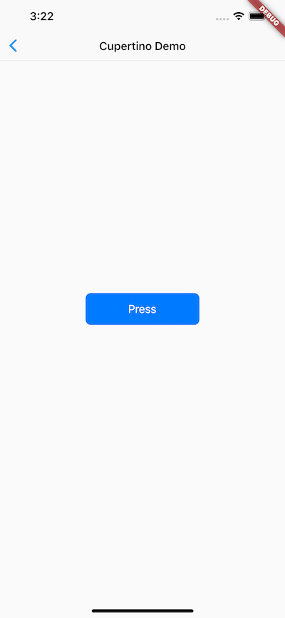
2.2.10 总结
Flutter 的 widget 类型分为StatefulWidget 和 StatelessWidget 两种，读者需要深入理解它们的区别，widget 将是我们构建Flutter应用的基石。
Flutter 提供了丰富的组件，在实际的开发中我们可以根据需要随意使用它们，而不必担心引入过多组件库会让你的应用安装包变大，这不是 web 开发，dart 在编译时只会编译你使用了的代码。由于 Material 和 Cupertino 都是在基础组件库之上的，所以如果我们的应用中引入了这两者之一，则不需要再引入flutter/ widgets.dart了，因为它们内部已经引入过了。
另外需要说明一点，本章后面章节的示例中会使用一些布局类组件，如Scaffold、Row、Column等，这些组件将在后面“布局类组件”一章中详细介绍，读者可以先不用关注。
2.3 状态管理
2.3.1 简介
响应式的编程框架中都会有一个永恒的主题——“状态(State)管理”，无论是在 React/Vue（两者都是支持响应式编程的 Web 开发框架）还是 Flutter 中，他们讨论的问题和解决的思想都是一致的。所以，如果你对React/Vue的状态管理有了解，可以跳过本节。言归正传，我们想一个问题，StatefulWidget的状态应该被谁管理？Widget本身？父 Widget ？都会？还是另一个对象？答案是取决于实际情况！以下是管理状态的最常见的方法：
- Widget 管理自己的状态。
- Widget 管理子 Widget 状态。
- 混合管理（父 Widget 和子 Widget 都管理状态）。
如何决定使用哪种管理方法？下面是官方给出的一些原则可以帮助你做决定：
- 如果状态是用户数据，如复选框的选中状态、滑块的位置，则该状态最好由父 Widget 管理。
- 如果状态是有关界面外观效果的，例如颜色、动画，那么状态最好由 Widget 本身来管理。
- 如果某一个状态是不同 Widget 共享的则最好由它们共同的父 Widget 管理。
在 Widget 内部管理状态封装性会好一些，而在父 Widget 中管理会比较灵活。有些时候，如果不确定到底该怎么管理状态，那么推荐的首选是在父 Widget 中管理（灵活会显得更重要一些）。
接下来，我们将通过创建三个简单示例TapboxA、TapboxB和TapboxC来说明管理状态的不同方式。 这些例子功能是相似的 ——创建一个盒子，当点击它时，盒子背景会在绿色与灰色之间切换。状态 _active确定颜色：绿色为true ，灰色为false，如图2-8所示：

下面的例子将使用GestureDetector来识别点击事件，关于该GestureDetector的详细内容我们将在后面“事件处理”一章中介绍。
2.3.2 Widget管理自身状态
我们实现一个TapboxA，在它对应的_TapboxAState 类:
- 管理TapboxA的状态。
- 定义
_active：确定盒子的当前颜色的布尔值。 - 定义
_handleTap()函数，该函数在点击该盒子时更新_active，并调用setState()更新UI。 - 实现widget的所有交互式行为。
// TapboxA 管理自身状态.
//------------------------- TapboxA ----------------------------------
class TapboxA extends StatefulWidget {
TapboxA({Key? key}) : super(key: key);
@override
_TapboxAState createState() => _TapboxAState();
}
class _TapboxAState extends State<TapboxA> {
bool _active = false;
void _handleTap() {
setState(() {
_active = !_active;
});
}
Widget build(BuildContext context) {
return GestureDetector(
onTap: _handleTap,
child: Container(
child: Center(
child: Text(
_active ? 'Active' : 'Inactive',
style: TextStyle(fontSize: 32.0, color: Colors.white),
),
),
width: 200.0,
height: 200.0,
decoration: BoxDecoration(
color: _active ? Colors.lightGreen[700] : Colors.grey[600],
),
),
);
}
}
2.3.3 父Widget管理子Widget的状态
对于父Widget来说，管理状态并告诉其子Widget何时更新通常是比较好的方式。 例如，IconButton是一个图标按钮，但它是一个无状态的Widget，因为我们认为父Widget需要知道该按钮是否被点击来采取相应的处理。
在以下示例中，TapboxB通过回调将其状态导出到其父组件，状态由父组件管理，因此它的父组件为StatefulWidget。但是由于TapboxB不管理任何状态，所以TapboxB为StatelessWidget。
ParentWidgetState 类:
- 为TapboxB 管理
_active状态。 - 实现
_handleTapboxChanged()，当盒子被点击时调用的方法。 - 当状态改变时，调用
setState()更新UI。
TapboxB 类:
- 继承
StatelessWidget类，因为所有状态都由其父组件处理。 - 当检测到点击时，它会通知父组件。
// ParentWidget 为 TapboxB 管理状态.
//------------------------ ParentWidget --------------------------------
class ParentWidget extends StatefulWidget {
@override
_ParentWidgetState createState() => _ParentWidgetState();
}
class _ParentWidgetState extends State<ParentWidget> {
bool _active = false;
void _handleTapboxChanged(bool newValue) {
setState(() {
_active = newValue;
});
}
@override
Widget build(BuildContext context) {
return Container(
child: TapboxB(
active: _active,
onChanged: _handleTapboxChanged,
),
);
}
}
//------------------------- TapboxB ----------------------------------
class TapboxB extends StatelessWidget {
TapboxB({Key? key, this.active: false, required this.onChanged})
: super(key: key);
final bool active;
final ValueChanged<bool> onChanged;
void _handleTap() {
onChanged(!active);
}
Widget build(BuildContext context) {
return GestureDetector(
onTap: _handleTap,
child: Container(
child: Center(
child: Text(
active ? 'Active' : 'Inactive',
style: TextStyle(fontSize: 32.0, color: Colors.white),
),
),
width: 200.0,
height: 200.0,
decoration: BoxDecoration(
color: active ? Colors.lightGreen[700] : Colors.grey[600],
),
),
);
}
}
2.3.4 混合状态管理
对于一些组件来说，混合管理的方式会非常有用。在这种情况下，组件自身管理一些内部状态，而父组件管理一些其他外部状态。
在下面 TapboxC 示例中，手指按下时，盒子的周围会出现一个深绿色的边框，抬起时，边框消失。点击完成后，盒子的颜色改变。 TapboxC 将其_active状态导出到其父组件中，但在内部管理其_highlight状态。这个例子有两个状态对象_ParentWidgetState和_TapboxCState。
_ParentWidgetStateC 类:
- 管理
_active状态。 - 实现
_handleTapboxChanged()，当盒子被点击时调用。 - 当点击盒子并且
_active状态改变时调用setState()更新UI。
_TapboxCState 对象:
- 管理
_highlight状态。 GestureDetector监听所有tap事件。当用户点下时，它添加高亮（深绿色边框）；当用户释放时，会移除高亮。- 当按下、抬起、或者取消点击时更新
_highlight状态，调用setState()更新UI。 - 当点击时，将状态的改变传递给父组件。
//---------------------------- ParentWidget ----------------------------
class ParentWidgetC extends StatefulWidget {
@override
_ParentWidgetCState createState() => _ParentWidgetCState();
}
class _ParentWidgetCState extends State<ParentWidgetC> {
bool _active = false;
void _handleTapboxChanged(bool newValue) {
setState(() {
_active = newValue;
});
}
@override
Widget build(BuildContext context) {
return Container(
child: TapboxC(
active: _active,
onChanged: _handleTapboxChanged,
),
);
}
}
//----------------------------- TapboxC ------------------------------
class TapboxC extends StatefulWidget {
TapboxC({Key? key, this.active: false, required this.onChanged})
: super(key: key);
final bool active;
final ValueChanged<bool> onChanged;
@override
_TapboxCState createState() => _TapboxCState();
}
class _TapboxCState extends State<TapboxC> {
bool _highlight = false;
void _handleTapDown(TapDownDetails details) {
setState(() {
_highlight = true;
});
}
void _handleTapUp(TapUpDetails details) {
setState(() {
_highlight = false;
});
}
void _handleTapCancel() {
setState(() {
_highlight = false;
});
}
void _handleTap() {
widget.onChanged(!widget.active);
}
@override
Widget build(BuildContext context) {
// 在按下时添加绿色边框，当抬起时，取消高亮
return GestureDetector(
onTapDown: _handleTapDown, // 处理按下事件
onTapUp: _handleTapUp, // 处理抬起事件
onTap: _handleTap,
onTapCancel: _handleTapCancel,
child: Container(
child: Center(
child: Text(
widget.active ? 'Active' : 'Inactive',
style: TextStyle(fontSize: 32.0, color: Colors.white),
),
),
width: 200.0,
height: 200.0,
decoration: BoxDecoration(
color: widget.active ? Colors.lightGreen[700] : Colors.grey[600],
border: _highlight
? Border.all(
color: Colors.teal[700],
width: 10.0,
)
: null,
),
),
);
}
}
另一种实现可能会将高亮状态导出到父组件，但同时保持_active状态为内部状态，但如果你要将该TapBox 给其他人使用，可能没有什么意义。 开发人员只会关心该框是否处于 Active 状态，而不在乎高亮显示是如何管理的，所以应该让 TapBox 内部处理这些细节。
2.3.5 全局状态管理
当应用中需要一些跨组件（包括跨路由）的状态需要同步时，上面介绍的方法便很难胜任了。比如，我们有一个设置页，里面可以设置应用的语言，我们为了让设置实时生效，我们期望在语言状态发生改变时，App中依赖应用语言的组件能够重新 build 一下，但这些依赖应用语言的组件和设置页并不在一起，所以这种情况用上面的方法很难管理。这时，正确的做法是通过一个全局状态管理器来处理这种相距较远的组件之间的通信。目前主要有两种办法：
- 实现一个全局的事件总线，将语言状态改变对应为一个事件，然后在APP中依赖应用语言的组件的
initState方法中订阅语言改变的事件。当用户在设置页切换语言后，我们发布语言改变事件，而订阅了此事件的组件就会收到通知，收到通知后调用setState(...)方法重新build一下自身即可。 - 使用一些专门用于状态管理的包，如 Provider、Redux，读者可以在 pub 上查看其详细信息。
本书将在"功能型组件"一章中介绍 Provider 包的实现原理及用法，同时也将会在"事件处理与通知"一章中实现一个全局事件总线，读者有需要可以直接翻看。
2.4 路由管理
路由（Route）在移动开发中通常指页面（Page），这跟 Web 开发中单页应用的 Route 概念意义是相同的，Route 在 Android中 通常指一个 Activity，在 iOS 中指一个 ViewController。所谓路由管理，就是管理页面之间如何跳转，通常也可被称为导航管理。Flutter 中的路由管理和原生开发类似，无论是 Android 还是 iOS，导航管理都会维护一个路由栈，路由入栈（push）操作对应打开一个新页面，路由出栈（pop）操作对应页面关闭操作，而路由管理主要是指如何来管理路由栈。
2.4.1 一个简单示例
我们在2.1节“计数器”示例的基础上，做如下修改：
-
创建一个新路由，命名“NewRoute”
class NewRoute extends StatelessWidget { @override Widget build(BuildContext context) { return Scaffold( appBar: AppBar( title: Text("New route"), ), body: Center( child: Text("This is new route"), ), ); } }新路由继承自
StatelessWidget，界面很简单，在页面中间显示一句"This is new route"。 -
在
_MyHomePageState.build方法中的Column的子widget中添加一个按钮（TextButton） :Column( mainAxisAlignment: MainAxisAlignment.center, children: <Widget>[ ... //省略无关代码 TextButton( child: Text("open new route"), onPressed: () { //导航到新路由 Navigator.push( context, MaterialPageRoute(builder: (context) { return NewRoute(); }), ); }, ), ], )我们添加了一个打开新路由的按钮，点击该按钮后就会打开新的路由页面，效果如图 2-9 和 2-10 所示。
 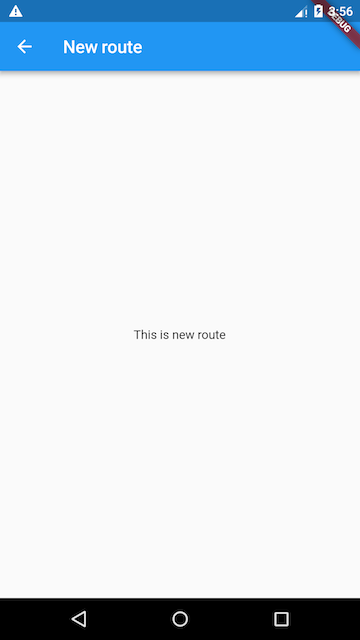
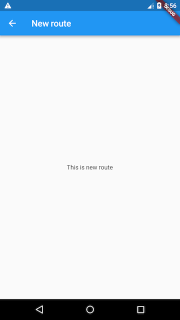
2.4.2 MaterialPageRoute
MaterialPageRoute继承自PageRoute类，PageRoute类是一个抽象类，表示占有整个屏幕空间的一个模态路由页面，它还定义了路由构建及切换时过渡动画的相关接口及属性。MaterialPageRoute 是 Material组件库提供的组件，它可以针对不同平台，实现与平台页面切换动画风格一致的路由切换动画：
- 对于 Android，当打开新页面时，新的页面会从屏幕底部滑动到屏幕顶部；当关闭页面时，当前页面会从屏幕顶部滑动到屏幕底部后消失，同时上一个页面会显示到屏幕上。
- 对于 iOS，当打开页面时，新的页面会从屏幕右侧边缘一直滑动到屏幕左边，直到新页面全部显示到屏幕上，而上一个页面则会从当前屏幕滑动到屏幕左侧而消失；当关闭页面时，正好相反，当前页面会从屏幕右侧滑出，同时上一个页面会从屏幕左侧滑入。
下面我们介绍一下MaterialPageRoute 构造函数的各个参数的意义：
MaterialPageRoute({
WidgetBuilder builder,
RouteSettings settings,
bool maintainState = true,
bool fullscreenDialog = false,
})
builder是一个WidgetBuilder类型的回调函数，它的作用是构建路由页面的具体内容，返回值是一个widget。我们通常要实现此回调，返回新路由的实例。settings包含路由的配置信息，如路由名称、是否初始路由（首页）。maintainState：默认情况下，当入栈一个新路由时，原来的路由仍然会被保存在内存中，如果想在路由没用的时候释放其所占用的所有资源，可以设置maintainState为false。fullscreenDialog表示新的路由页面是否是一个全屏的模态对话框，在 iOS 中，如果fullscreenDialog为true，新页面将会从屏幕底部滑入（而不是水平方向）。
如果想自定义路由切换动画，可以自己继承 PageRoute 来实现，我们将在后面介绍动画时，实现一个自定义的路由组件。
2.4.3 Navigator
Navigator是一个路由管理的组件，它提供了打开和退出路由页方法。Navigator通过一个栈来管理活动路由集合。通常当前屏幕显示的页面就是栈顶的路由。Navigator提供了一系列方法来管理路由栈，在此我们只介绍其最常用的两个方法：
1. Future push(BuildContext context, Route route)
将给定的路由入栈（即打开新的页面），返回值是一个Future对象，用以接收新路由出栈（即关闭）时的返回数据。
2. bool pop(BuildContext context, [ result ])
将栈顶路由出栈，result 为页面关闭时返回给上一个页面的数据。
Navigator 还有很多其他方法，如Navigator.replace、Navigator.popUntil等，详情请参考API文档或SDK 源码注释，在此不再赘述。下面我们还需要介绍一下路由相关的另一个概念“命名路由”。
3. 实例方法
Navigator类中第一个参数为context的静态方法都对应一个Navigator的实例方法， 比如Navigator.push(BuildContext context, Route route) 等价于Navigator.of(context).push(Route route) ，下面命名路由相关的方法也是一样的。
2.4.4 路由传值
很多时候，在路由跳转时我们需要带一些参数，比如打开商品详情页时，我们需要带一个商品id，这样商品详情页才知道展示哪个商品信息；又比如我们在填写订单时需要选择收货地址，打开地址选择页并选择地址后，可以将用户选择的地址返回到订单页等等。下面我们通过一个简单的示例来演示新旧路由如何传参。
下面我们通过一个例子来演示：创建一个TipRoute路由，它接受一个提示文本参数，负责将传入它的文本显示在页面上，另外TipRoute中我们添加一个“返回”按钮，点击后在返回上一个路由的同时会带上一个返回参数，下面我们看一下实现代码。
TipRoute实现代码：
class TipRoute extends StatelessWidget {
TipRoute({
Key key,
required this.text, // 接收一个text参数
}) : super(key: key);
final String text;
@override
Widget build(BuildContext context) {
return Scaffold(
appBar: AppBar(
title: Text("提示"),
),
body: Padding(
padding: EdgeInsets.all(18),
child: Center(
child: Column(
children: <Widget>[
Text(text),
ElevatedButton(
onPressed: () => Navigator.pop(context, "我是返回值"),
child: Text("返回"),
)
],
),
),
),
);
}
}
下面是打开新路由TipRoute的代码：
class RouterTestRoute extends StatelessWidget {
@override
Widget build(BuildContext context) {
return Center(
child: ElevatedButton(
onPressed: () async {
// 打开`TipRoute`，并等待返回结果
var result = await Navigator.push(
context,
MaterialPageRoute(
builder: (context) {
return TipRoute(
// 路由参数
text: "我是提示xxxx",
);
},
),
);
//输出`TipRoute`路由返回结果
print("路由返回值: $result");
},
child: Text("打开提示页"),
),
);
}
}
运行上面代码，点击RouterTestRoute页的“打开提示页”按钮，会打开TipRoute页，运行效果如图2-11所示下：

需要说明：
-
提示文案“我是提示xxxx”是通过
TipRoute的text参数传递给新路由页的。我们可以通过等待Navigator.push(…)返回的Future来获取新路由的返回数据。 -
在
TipRoute页中有两种方式可以返回到上一页；第一种方式是直接点击导航栏返回箭头，第二种方式是点击页面中的“返回”按钮。这两种返回方式的区别是前者不会返回数据给上一个路由，而后者会。下面是分别点击页面中的返回按钮和导航栏返回箭头后，RouterTestRoute页中print方法在控制台输出的内容：I/flutter (27896): 路由返回值: 我是返回值 I/flutter (27896): 路由返回值: null
上面介绍的是非命名路由的传值方式，命名路由的传值方式会有所不同，我们会在下面介绍命名路由时介绍。
2.4.5 命名路由
所谓“命名路由”（Named Route）即有名字的路由，我们可以先给路由起一个名字，然后就可以通过路由名字直接打开新的路由了，这为路由管理带来了一种直观、简单的方式。
1. 路由表
要想使用命名路由，我们必须先提供并注册一个路由表（routing table），这样应用程序才知道哪个名字与哪个路由组件相对应。其实注册路由表就是给路由起名字，路由表的定义如下：
Map<String, WidgetBuilder> routes;
它是一个Map，key为路由的名字，是个字符串；value是个builder回调函数，用于生成相应的路由widget。我们在通过路由名字打开新路由时，应用会根据路由名字在路由表中查找到对应的WidgetBuilder回调函数，然后调用该回调函数生成路由widget并返回。
2. 注册路由表
路由表的注册方式很简单，我们回到之前“计数器”的示例，然后在MyApp类的build方法中找到MaterialApp，添加routes属性，代码如下：
MaterialApp(
title: 'Flutter Demo',
theme: ThemeData(
primarySwatch: Colors.blue,
),
//注册路由表
routes:{
"new_page":(context) => NewRoute(),
... // 省略其他路由注册信息
} ,
home: MyHomePage(title: 'Flutter Demo Home Page'),
);
现在我们就完成了路由表的注册。上面的代码中home路由并没有使用命名路由，如果我们也想将home注册为命名路由应该怎么做呢？其实很简单，直接看代码：
MaterialApp(
title: 'Flutter Demo',
initialRoute:"/", //名为"/"的路由作为应用的home(首页)
theme: ThemeData(
primarySwatch: Colors.blue,
),
//注册路由表
routes:{
"new_page":(context) => NewRoute(),
"/":(context) => MyHomePage(title: 'Flutter Demo Home Page'), //注册首页路由
}
);
可以看到，我们只需在路由表中注册一下MyHomePage路由，然后将其名字作为MaterialApp的initialRoute属性值即可，该属性决定应用的初始路由页是哪一个命名路由。
3. 通过路由名打开新路由页
要通过路由名称来打开新路由，可以使用Navigator 的pushNamed方法：
Future pushNamed(BuildContext context, String routeName,{Object arguments})
Navigator 除了pushNamed方法，还有pushReplacementNamed等其他管理命名路由的方法，读者可以自行查看API文档。接下来我们通过路由名来打开新的路由页，修改TextButton的onPressed回调代码，改为：
onPressed: () {
Navigator.pushNamed(context, "new_page");
//Navigator.push(context,
// MaterialPageRoute(builder: (context) {
// return NewRoute();
//}));
},
热重载应用，再次点击“open new route”按钮，依然可以打开新的路由页。
4. 命名路由参数传递
在Flutter最初的版本中，命名路由是不能传递参数的，后来才支持了参数；下面展示命名路由如何传递并获取路由参数：
我们先注册一个路由：
routes:{
"new_page":(context) => EchoRoute(),
} ,
在路由页通过RouteSetting对象获取路由参数：
class EchoRoute extends StatelessWidget {
@override
Widget build(BuildContext context) {
//获取路由参数
var args=ModalRoute.of(context).settings.arguments;
//...省略无关代码
}
}
在打开路由时传递参数
Navigator.of(context).pushNamed("new_page", arguments: "hi");
5. 适配
假设我们也想将上面路由传参示例中的TipRoute路由页注册到路由表中，以便也可以通过路由名来打开它。但是，由于TipRoute接受一个text 参数，我们如何在不改变TipRoute源码的前提下适配这种情况？其实很简单：
MaterialApp(
... //省略无关代码
routes: {
"tip2": (context){
return TipRoute(text: ModalRoute.of(context)!.settings.arguments);
},
},
);
2.4.6 路由生成钩子
假设我们要开发一个电商App，当用户没有登录时可以看店铺、商品等信息，但交易记录、购物车、用户个人信息等页面需要登录后才能看。为了实现上述功能，我们需要在打开每一个路由页前判断用户登录状态！如果每次打开路由前我们都需要去判断一下将会非常麻烦，那有什么更好的办法吗？答案是有！
MaterialApp有一个onGenerateRoute属性，它在打开命名路由时可能会被调用，之所以说可能，是因为当调用Navigator.pushNamed(...)打开命名路由时，如果指定的路由名在路由表中已注册，则会调用路由表中的builder函数来生成路由组件；如果路由表中没有注册，才会调用onGenerateRoute来生成路由。onGenerateRoute回调签名如下：
Route<dynamic> Function(RouteSettings settings)
有了onGenerateRoute回调，要实现上面控制页面权限的功能就非常容易：我们放弃使用路由表，取而代之的是提供一个onGenerateRoute回调，然后在该回调中进行统一的权限控制，如：
MaterialApp(
... //省略无关代码
onGenerateRoute:(RouteSettings settings){
return MaterialPageRoute(builder: (context){
String routeName = settings.name;
// 如果访问的路由页需要登录，但当前未登录，则直接返回登录页路由，
// 引导用户登录；其他情况则正常打开路由。
}
);
}
);
注意，
onGenerateRoute只会对命名路由生效。
2.4.7 总结
本章先介绍了Flutter中路由管理、传参的方式，然后又着重介绍了命名路由相关内容。在此需要说明一点，由于命名路由只是一种可选的路由管理方式，在实际开发中，读者可能心中会犹豫到底使用哪种路由管理方式。在此，根据笔者经验，建议读者最好统一使用命名路由的管理方式，这将会带来如下好处：
- 语义化更明确。
- 代码更好维护；如果使用匿名路由，则必须在调用
Navigator.push的地方创建新路由页，这样不仅需要import新路由页的dart文件，而且这样的代码将会非常分散。 - 可以通过
onGenerateRoute做一些全局的路由跳转前置处理逻辑。
综上所述，笔者比较建议使用命名路由，当然这并不是什么金科玉律，读者可以根据自己偏好或实际情况来决定。
另外，还有一些关于路由管理的内容我们没有介绍，比如路由MaterialApp中还有navigatorObservers和onUnknownRoute两个回调属性，前者可以监听所有路由跳转动作，后者在打开一个不存在的命名路由时会被调用，由于这些功能并不常用，而且也比较简单，我们便不再花费篇幅来介绍了，读者可以自行查看API文档。
2.5 包管理
2.5.1 简介
在软件开发中，很多时候有一些公共的库或 SDK 可能会被很多项目用到，因此，将这些代码单独抽到一个独立模块，然后哪个项目需要使用时再直接集成这个模块，便可大大提高开发效率。很多编程语言或开发工具都支持这种“模块共享”机制，如 Java 语言中这种独立模块会被打成一个 jar 包，Android 中的 aar 包，Web开发中的 npm 包等。为了方便表述，我们将这种可共享的独立模块统一称为“包”（ Package）。
一个 App 在实际开发中往往会依赖很多包，而这些包通常都有交叉依赖关系、版本依赖等，如果由开发者手动来管理应用中的依赖包将会非常麻烦。因此，各种开发生态或编程语言官方通常都会提供一些包管理工具，比如在 Android 提供了 Gradle 来管理依赖，iOS 用 Cocoapods 或 Carthage 来管理依赖，Node 中通过 npm 等。而在 Flutter 开发中也有自己的包管理工具。本节我们主要介绍一下 Flutter 如何使用配置文件pubspec.yaml（位于项目根目录）来管理第三方依赖包。
YAML 是一种直观、可读性高并且容易被人类阅读的文件格式，和 xml 或 Json 相比它语法简单并非常容易解析，所以 YAML 常用于配置文件，Flutter 也是用 yaml 文件作为其配置文件。Flutter 项目默认的配置文件是pubspec.yaml，我们看一个简单的示例：
name: flutter_in_action
description: First Flutter Application.
version: 1.0.0+1
dependencies:
flutter:
sdk: flutter
cupertino_icons: ^0.1.2
dev_dependencies:
flutter_test:
sdk: flutter
flutter:
uses-material-design: true
下面，我们逐一解释一下各个字段的意义：
name：应用或包名称。description: 应用或包的描述、简介。version：应用或包的版本号。dependencies：应用或包依赖的其他包或插件。dev_dependencies：开发环境依赖的工具包（而不是flutter应用本身依赖的包）。flutter：flutter相关的配置选项。
如果我们的Flutter应用本身依赖某个包，我们需要将所依赖的包添加到dependencies 下，接下来我们通过一个例子来演示一下如何添加、下载并使用第三方包。
2.5.2 Pub仓库
Pub（https://pub.dev/ ）是 Google 官方的 Dart Packages 仓库，类似于 node 中的 npm仓库、Android中的 jcenter。我们可以在 Pub 上面查找我们需要的包和插件，也可以向 Pub 发布我们的包和插件。我们将在后面的章节中介绍如何向 Pub 发布我们的包和插件。
2.5.3 示例
接下来，我们实现一个显示随机字符串的 widget。有一个名为 “english_words” 的开源软件包，其中包含数千个常用的英文单词以及一些实用功能。我们首先在 pub 上找到 english_words 这个包（如图2-12所示），确定其最新的版本号和是否支持 Flutter。
我们看到“english_words”包最新的版本是4.0.0，并且支持flutter，接下来：
-
将“english_words” 添加到依赖项列表，如下：
dependencies: flutter: sdk: flutter # 新添加的依赖 english_words: ^4.0.0 -
下载包。在Android Studio的编辑器视图中查看pubspec.yaml时（图2-13），单击右上角的 Pub get 。
这会将依赖包安装到您的项目。我们可以在控制台中看到以下内容：
flutter packages get Running "flutter packages get" in flutter_in_action... Process finished with exit code 0我们也可以在控制台，定位到当前工程目录，然后手动运行
flutter packages get命令来下载依赖包。另外，需要注意dependencies和dev_dependencies的区别，前者的依赖包将作为App的源码的一部分参与编译，生成最终的安装包。而后者的依赖包只是作为开发阶段的一些工具包，主要是用于帮助我们提高开发、测试效率，比如 flutter 的自动化测试包等。 -
引入
english_words包。import 'package:english_words/english_words.dart';在输入时，Android Studio会自动提供有关库导入的建议选项。导入后该行代码将会显示为灰色，表示导入的库尚未使用。
-
使用
english_words包来生成随机字符串。class RandomWordsWidget extends StatelessWidget { @override Widget build(BuildContext context) { // 生成随机字符串 final wordPair = WordPair.random(); return Padding( padding: const EdgeInsets.all(8.0), child: Text(wordPair.toString()), ); } }我们将
RandomWordsWidget添加到_MyHomePageState.build的Column的子widget中。Column( mainAxisAlignment: MainAxisAlignment.center, children: <Widget>[ ... //省略无关代码 RandomWordsWidget(), ], ) -
如果应用程序正在运行，请使用热重载按钮（⚡️图标） 更新正在运行的应用程序。每次单击热重载或保存项目时，都会在正在运行的应用程序中随机选择不同的单词对。 这是因为单词对是在
build方法内部生成的。每次热更新时，build方法都会被执行，运行效果如图2-14所示。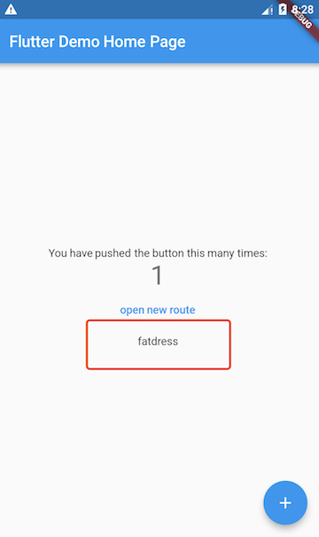
2.5.4 其他依赖方式
上文所述的依赖方式是依赖Pub仓库的。但我们还可以依赖本地包和git仓库。
-
依赖本地包
如果我们正在本地开发一个包，包名为pkg1，我们可以通过下面方式依赖：
dependencies: pkg1: path: ../../code/pkg1路径可以是相对的，也可以是绝对的。
-
依赖Git：你也可以依赖存储在Git仓库中的包。如果软件包位于仓库的根目录中，请使用以下语法
dependencies: pkg1: git: url: git://github.com/xxx/pkg1.git上面假定包位于Git存储库的根目录中。如果不是这种情况，可以使用path参数指定相对位置，例如：
dependencies: package1: git: url: git://github.com/flutter/packages.git path: packages/package1
上面介绍的这些依赖方式是Flutter开发中常用的，但还有一些其他依赖方式，完整的内容读者可以自行查看：https://www.dartlang.org/tools/pub/dependencies 。
2.5.5 总结
本节介绍了Flutter中包管理、引用、下载的整体流程，我们将在后面的章节中介绍如何开发并发布我们自己的包。
2.6 资源管理
Flutter APP 安装包中会包含代码和 assets（资源）两部分。Assets 是会打包到程序安装包中的，可在运行时访问。常见类型的 assets 包括静态数据（例如JSON文件）、配置文件、图标和图片等。
2.6.1 指定 assets
和包管理一样，Flutter 也使用pubspec.yaml文件来管理应用程序所需的资源，举个例子:
flutter:
assets:
- assets/my_icon.png
- assets/background.png
assets指定应包含在应用程序中的文件， 每个 asset 都通过相对于pubspec.yaml文件所在的文件系统路径来标识自身的路径。asset 的声明顺序是无关紧要的，asset的实际目录可以是任意文件夹（在本示例中是assets 文件夹）。
在构建期间，Flutter 将 asset 放置到称为 asset bundle 的特殊存档中，应用程序可以在运行时读取它们（但不能修改）。
2.6.2 Asset 变体（variant）
构建过程支持“asset变体”的概念：不同版本的 asset 可能会显示在不同的上下文中。 在pubspec.yaml的assets 部分中指定 asset 路径时，构建过程中，会在相邻子目录中查找具有相同名称的任何文件。这些文件随后会与指定的 asset 一起被包含在 asset bundle 中。
例如，如果应用程序目录中有以下文件:
- …/pubspec.yaml
- …/graphics/my_icon.png
- …/graphics/background.png
- …/graphics/dark/background.png
- ….
然后pubspec.yaml文件中只需包含:
flutter:
assets:
- graphics/background.png
那么这两个graphics/background.png和graphics/dark/background.png 都将包含在您的 asset bundle中。前者被认为是_main asset_ （主资源），后者被认为是一种变体（variant）。
在选择匹配当前设备分辨率的图片时，Flutter会使用到 asset 变体（见下文）。
2.6.3 加载 assets
您的应用可以通过AssetBundle对象访问其 asset 。有两种主要方法允许从 Asset bundle 中加载字符串或图片（二进制）文件。
1. 加载文本assets
- 通过
rootBundle对象加载：每个Flutter应用程序都有一个rootBundle对象， 通过它可以轻松访问主资源包，直接使用package:flutter/services.dart中全局静态的rootBundle对象来加载asset即可。 - 通过
DefaultAssetBundle加载：建议使用DefaultAssetBundle来获取当前 BuildContext 的AssetBundle。 这种方法不是使用应用程序构建的默认 asset bundle，而是使父级 widget 在运行时动态替换的不同的 AssetBundle，这对于本地化或测试场景很有用。
通常，可以使用DefaultAssetBundle.of()在应用运行时来间接加载 asset（例如JSON文件），而在widget 上下文之外，或其他AssetBundle句柄不可用时，可以使用rootBundle直接加载这些 asset，例如：
import 'dart:async' show Future;
import 'package:flutter/services.dart' show rootBundle;
Future<String> loadAsset() async {
return await rootBundle.loadString('assets/config.json');
}
2. 加载图片
类似于原生开发，Flutter也可以为当前设备加载适合其分辨率的图像。
1）声明分辨率相关的图片 assets
AssetImage 可以将asset的请求逻辑映射到最接近当前设备像素比例（dpi）的asset。为了使这种映射起作用，必须根据特定的目录结构来保存asset：
- …/image.png
- …/Mx/image.png
- …/Nx/image.png
- …
其中 M 和 N 是数字标识符，对应于其中包含的图像的分辨率，也就是说，它们指定不同设备像素比例的图片。
主资源默认对应于1.0倍的分辨率图片。看一个例子：
- …/my_icon.png
- …/2.0x/my_icon.png
- …/3.0x/my_icon.png
在设备像素比率为1.8的设备上，.../2.0x/my_icon.png 将被选择。对于2.7的设备像素比率，.../3.0x/my_icon.png将被选择。
如果未在Image widget上指定渲染图像的宽度和高度，那么Image widget将占用与主资源相同的屏幕空间大小。 也就是说，如果.../my_icon.png是72px乘72px，那么.../3.0x/my_icon.png应该是216px乘216px; 但如果未指定宽度和高度，它们都将渲染为72像素×72像素（以逻辑像素为单位）。
pubspec.yaml中asset部分中的每一项都应与实际文件相对应，但主资源项除外。当主资源缺少某个资源时，会按分辨率从低到高的顺序去选择 ，也就是说1x中没有的话会在2x中找，2x中还没有的话就在3x中找。
2）加载图片
要加载图片，可以使用 AssetImage类。例如，我们可以从上面的asset声明中加载背景图片：
Widget build(BuildContext context) {
return DecoratedBox(
decoration: BoxDecoration(
image: DecorationImage(
image: AssetImage('graphics/background.png'),
),
),
);
}
注意，AssetImage 并非是一个widget， 它实际上是一个ImageProvider，有些时候你可能期望直接得到一个显示图片的widget，那么你可以使用Image.asset()方法，如：
Widget build(BuildContext context) {
return Image.asset('graphics/background.png');
}
使用默认的 asset bundle 加载资源时，内部会自动处理分辨率等，这些处理对开发者来说是无感知的。 (如果使用一些更低级别的类，如 ImageStream或 ImageCache 时你会注意到有与缩放相关的参数)
3）依赖包中的资源图片
要加载依赖包中的图像，必须给AssetImage提供package参数。
例如，假设您的应用程序依赖于一个名为“my_icons”的包，它具有如下目录结构：
- …/pubspec.yaml
- …/icons/heart.png
- …/icons/1.5x/heart.png
- …/icons/2.0x/heart.png
- …
然后加载图像，使用:
AssetImage('icons/heart.png', package: 'my_icons')
或
Image.asset('icons/heart.png', package: 'my_icons')
注意：包在使用本身的资源时也应该加上
package参数来获取。
打包包中的 assets
如果在pubspec.yaml文件中声明了期望的资源，它将会打包到相应的package中。特别是，包本身使用的资源必须在pubspec.yaml中指定。
包也可以选择在其lib/文件夹中包含未在其pubspec.yaml文件中声明的资源。在这种情况下，对于要打包的图片，应用程序必须在pubspec.yaml中指定包含哪些图像。 例如，一个名为“fancy_backgrounds”的包，可能包含以下文件：
- …/lib/backgrounds/background1.png
- …/lib/backgrounds/background2.png
- …/lib/backgrounds/background3.png
要包含第一张图像，必须在pubspec.yaml的assets部分中声明它：
flutter:
assets:
- packages/fancy_backgrounds/backgrounds/background1.png
lib/是隐含的，所以它不应该包含在资产路径中。
3. 特定平台 assets
上面的资源都是flutter应用中的，这些资源只有在Flutter框架运行之后才能使用，如果要给我们的应用设置APP图标或者添加启动图，那我们必须使用特定平台的assets。
1）设置APP图标
更新Flutter应用程序启动图标的方式与在本机Android或iOS应用程序中更新启动图标的方式相同。
-
Android
在 Flutter 项目的根目录中，导航到
.../android/app/src/main/res目录，里面包含了各种资源文件夹（如mipmap-hdpi已包含占位符图像 “ic_launcher.png”，见图2-15）。 只需按照Android开发人员指南中的说明， 将其替换为所需的资源，并遵守每种屏幕密度（dpi）的建议图标大小标准。
注意: 如果您重命名.png文件，则还必须在您
AndroidManifest.xml的<application>标签的android:icon属性中更新名称。 -
iOS
在Flutter项目的根目录中，导航到
.../ios/Runner。该目录中Assets.xcassets/AppIcon.appiconset已经包含占位符图片（见图2-16）， 只需将它们替换为适当大小的图片，保留原始文件名称。
2）更新启动页

在 Flutter 框架加载时，Flutter 会使用本地平台机制绘制启动页。此启动页将持续到Flutter渲染应用程序的第一帧时。
注意: 这意味着如果您不在应用程序的
main()方法中调用runApp 函数 （或者更具体地说，如果您不调用window.render去响应window.onDrawFrame）的话， 启动屏幕将永远持续显示。
- Android
要将启动屏幕（splash screen）添加到您的Flutter应用程序， 请导航至.../android/app/src/main。在res/drawable/launch_background.xml，通过自定义drawable来实现自定义启动界面（你也可以直接换一张图片）。
- iOS
要将图片添加到启动屏幕（splash screen）的中心，请导航至.../ios/Runner。在Assets.xcassets/LaunchImage.imageset， 拖入图片，并命名为LaunchImage.png、LaunchImage@2x.png、LaunchImage@3x.png。 如果你使用不同的文件名，那您还必须更新同一目录中的Contents.json文件，图片的具体尺寸可以查看苹果官方的标准。
您也可以通过打开Xcode完全自定义storyboard。在Project Navigator中导航到Runner/Runner然后通过打开Assets.xcassets拖入图片，或者通过在LaunchScreen.storyboard中使用Interface Builder进行自定义，如图2-18所示。

2.6.4 平台共享 assets
如果我们采用的是Flutter+原生的开发模式，那么可能会存Flutter和原生需要共享资源的情况，比如Flutter项目中已经有了一张图片A，如果原生代码中也要使用A，我们可以将A拷贝一份到原生项目的特定目录，这样的话虽然功能可以实现，但是最终的应用程序包会变大，因为包含了重复的资源，为了解决这个问题，Flutter 提供了一种Flutter和原生之间共享资源的方式，由于实现上需要涉及平台相关的原生代码，故本书不做展开，读者有需要可以自行查阅官方文档。
2.7 调试Flutter应用
有各种各样的工具和功能来帮助调试Flutter应用程序。
2.7.1 日志与断点
1. debugger() 声明
当使用Dart Observatory（或另一个Dart调试器，例如IntelliJ IDE中的调试器）时，可以使用该debugger()语句插入编程式断点。要使用这个，你必须添加import 'dart:developer';到相关文件顶部。
debugger()语句采用一个可选when参数，我们可以指定该参数仅在特定条件为真时中断，如下所示：
void someFunction(double offset) {
debugger(when: offset > 30.0);
// ...
}
2. print、debugPrint、flutter logs
Dart print()功能将输出到系统控制台，我们可以使用flutter logs来查看它（基本上是一个包装adb logcat）。
如果你一次输出太多，那么Android有时会丢弃一些日志行。为了避免这种情况，我们可以使用Flutter的foundation库中的debugPrint() ，它封装了 print，将一次输出的内容长度限制在一个级别（内容过多时会分批输出），避免被Android内核丢弃。
Flutter框架中的许多类都有toString实现，按照惯例，输出信息通过包括对象的运行时类型 、类名以及关键字段等信息。 树中的一些类也具有toStringDeep实现，从该点返回整个子树的多行描述。一些具有详细信息toString的类会实现一个toStringShort，它只返回对象的类型或其他非常简短的（一个或两个单词）描述。
3. 调试模式断言
在Flutter应用调试过程中，Dart assert语句被启用，并且 Flutter 框架使用它来执行许多运行时检查来验证是否违反一些不可变的规则。当一个某个规则被违反时，就会在控制台打印错误日志，并带上一些上下文信息来帮助追踪问题的根源。
要关闭调试模式并使用发布模式，请使用flutter run --release运行我们的应用程序。 这也关闭了Observatory调试器。一个中间模式可以关闭除Observatory之外所有调试辅助工具的，称为“profile mode”，用--profile替代--release即可。
4. 断点
开发过程中，断点是最实用的调试工具之一，我们以 Android Studio 为例，如图2-19：

我们在 93 行打了一个断点，一旦代码执行到这一行就会暂停，这时我们可以看到当前上下文所有变量的值，然后可以选择一步一步的执行代码。关于如何通过 IDE 来打断点，网上教程很多，读者可以自行搜索。
2.7.2 调试应用程序层
Flutter框架的每一层都提供了将其当前状态或事件转储(dump)到控制台（使用debugPrint）的功能。
1. Widget 树
要转储Widgets树的状态，请调用debugDumpApp()。 只要应用程序已经构建了至少一次（即在调用build()之后的任何时间），我们可以在应用程序未处于构建阶段（即，不在build()方法内调用 ）的任何时间调用此方法（在调用runApp()之后）。
如, 这个应用程序:
import 'package:flutter/material.dart';
void main() {
runApp(
MaterialApp(
home: AppHome(),
),
);
}
class AppHome extends StatelessWidget {
@override
Widget build(BuildContext context) {
return Material(
child: Center(
child: TextButton(
onPressed: () {
debugDumpApp();
},
child: Text('Dump App'),
),
),
);
}
}
…会输出这样的内容（精确的细节会根据框架的版本、设备的大小等等而变化）：
I/flutter ( 6559): WidgetsFlutterBinding - CHECKED MODE
I/flutter ( 6559): RenderObjectToWidgetAdapter<RenderBox>([GlobalObjectKey RenderView(497039273)]; renderObject: RenderView)
I/flutter ( 6559): └MaterialApp(state: _MaterialAppState(1009803148))
I/flutter ( 6559): └ScrollConfiguration()
I/flutter ( 6559): └AnimatedTheme(duration: 200ms; state: _AnimatedThemeState(543295893; ticker inactive; ThemeDataTween(ThemeData(Brightness.light Color(0xff2196f3) etc...) → null)))
I/flutter ( 6559): └Theme(ThemeData(Brightness.light Color(0xff2196f3) etc...))
I/flutter ( 6559): └WidgetsApp([GlobalObjectKey _MaterialAppState(1009803148)]; state: _WidgetsAppState(552902158))
I/flutter ( 6559): └CheckedModeBanner()
I/flutter ( 6559): └Banner()
I/flutter ( 6559): └CustomPaint(renderObject: RenderCustomPaint)
I/flutter ( 6559): └DefaultTextStyle(inherit: true; color: Color(0xd0ff0000); family: "monospace"; size: 48.0; weight: 900; decoration: double Color(0xffffff00) TextDecoration.underline)
I/flutter ( 6559): └MediaQuery(MediaQueryData(size: Size(411.4, 683.4), devicePixelRatio: 2.625, textScaleFactor: 1.0, padding: EdgeInsets(0.0, 24.0, 0.0, 0.0)))
I/flutter ( 6559): └LocaleQuery(null)
I/flutter ( 6559): └Title(color: Color(0xff2196f3))
... #省略剩余内容
这是一个“扁平化”的树，显示了通过各种构建函数投影的所有widget（如果你在widget树的根中调用toStringDeepwidget，这是你获得的树）。 你会看到很多在你的应用源代码中没有出现的widget，因为它们是被框架中widget的build()函数插入的。例如，InkFeature是Material widget的一个实现细节 。
当按钮从被按下变为被释放时debugDumpApp()被调用，TextButton对象同时调用setState()，并将自己标记为"dirty"。我们还可以查看已注册了哪些手势监听器; 在这种情况下，一个单一的GestureDetector被列出，并且监听“tap”手势（“tap”是TapGestureDetector的toStringShort函数输出的）。
如果我们编写自己的widget，则可以通过覆盖debugFillProperties()来添加信息。 将DiagnosticsProperty对象作为方法参数，并调用父类方法。 该函数是该toString方法用来填充小部件描述信息的。
2. 渲染树
如果我们尝试调试布局问题，那么Widget树可能不够详细。在这种情况下，我们可以通过调用debugDumpRenderTree()转储渲染树。 正如debugDumpApp()，除布局或绘制阶段外，我们可以随时调用此函数。作为一般规则，从frame 回调 或事件处理器中调用它是最佳解决方案。
要调用debugDumpRenderTree()，我们需要添加import'package:flutter/rendering.dart';到我们的源文件。
上面这个小例子的输出结果如下所示：
I/flutter ( 6559): RenderView
I/flutter ( 6559): │ debug mode enabled - android
I/flutter ( 6559): │ window size: Size(1080.0, 1794.0) (in physical pixels)
I/flutter ( 6559): │ device pixel ratio: 2.625 (physical pixels per logical pixel)
I/flutter ( 6559): │ configuration: Size(411.4, 683.4) at 2.625x (in logical pixels)
I/flutter ( 6559): │
I/flutter ( 6559): └─child: RenderCustomPaint
I/flutter ( 6559): │ creator: CustomPaint ← Banner ← CheckedModeBanner ←
I/flutter ( 6559): │ WidgetsApp-[GlobalObjectKey _MaterialAppState(1009803148)] ←
I/flutter ( 6559): │ Theme ← AnimatedTheme ← ScrollConfiguration ← MaterialApp ←
I/flutter ( 6559): │ [root]
I/flutter ( 6559): │ parentData: <none>
I/flutter ( 6559): │ constraints: BoxConstraints(w=411.4, h=683.4)
I/flutter ( 6559): │ size: Size(411.4, 683.4)
... # 省略
这是根RenderObject对象的toStringDeep函数的输出。
当调试布局问题时，关键要看的是size和constraints字段。约束沿着树向下传递，尺寸向上传递。
如果我们编写自己的渲染对象，则可以通过覆盖debugFillProperties()将信息添加到转储。 将DiagnosticsProperty对象作为方法的参数，并调用父类方法。
3. Layer树
读者可以理解为渲染树是可以分层的，而最终绘制需要将不同的层合成起来，而Layer则是绘制时需要合成的层，如果我们尝试调试合成问题，则可以使用debugDumpLayerTree()。对于上面的例子，它会输出：
I/flutter : TransformLayer
I/flutter : │ creator: [root]
I/flutter : │ offset: Offset(0.0, 0.0)
I/flutter : │ transform:
I/flutter : │ [0] 3.5,0.0,0.0,0.0
I/flutter : │ [1] 0.0,3.5,0.0,0.0
I/flutter : │ [2] 0.0,0.0,1.0,0.0
I/flutter : │ [3] 0.0,0.0,0.0,1.0
I/flutter : │
I/flutter : ├─child 1: OffsetLayer
I/flutter : │ │ creator: RepaintBoundary ← _FocusScope ← Semantics ← Focus-[GlobalObjectKey MaterialPageRoute(560156430)] ← _ModalScope-[GlobalKey 328026813] ← _OverlayEntry-[GlobalKey 388965355] ← Stack ← Overlay-[GlobalKey 625702218] ← Navigator-[GlobalObjectKey _MaterialAppState(859106034)] ← Title ← ⋯
I/flutter : │ │ offset: Offset(0.0, 0.0)
I/flutter : │ │
I/flutter : │ └─child 1: PictureLayer
I/flutter : │
I/flutter : └─child 2: PictureLayer
这是根Layer的toStringDeep输出的。
根部的变换是应用设备像素比的变换; 在这种情况下，每个逻辑像素代表3.5个设备像素。
RepaintBoundary widget在渲染树的层中创建了一个RenderRepaintBoundary。这用于减少需要重绘的需求量。
4. 语义
我们还可以调用debugDumpSemanticsTree()获取语义树（呈现给系统可访问性API的树）的转储。 要使用此功能，必须首先启用辅助功能，例如启用系统辅助工具或SemanticsDebugger （下面讨论）。
对于上面的例子，它会输出:
I/flutter : SemanticsNode(0; Rect.fromLTRB(0.0, 0.0, 411.4, 683.4))
I/flutter : ├SemanticsNode(1; Rect.fromLTRB(0.0, 0.0, 411.4, 683.4))
I/flutter : │ └SemanticsNode(2; Rect.fromLTRB(0.0, 0.0, 411.4, 683.4); canBeTapped)
I/flutter : └SemanticsNode(3; Rect.fromLTRB(0.0, 0.0, 411.4, 683.4))
I/flutter : └SemanticsNode(4; Rect.fromLTRB(0.0, 0.0, 82.0, 36.0); canBeTapped; "Dump App")
5. 调度
要找出相对于帧的开始/结束事件发生的位置，可以切换debugPrintBeginFrameBanner和debugPrintEndFrameBanner布尔值以将帧的开始和结束打印到控制台。
例如:
I/flutter : ▄▄▄▄▄▄▄▄ Frame 12 30s 437.086ms ▄▄▄▄▄▄▄▄
I/flutter : Debug print: Am I performing this work more than once per frame?
I/flutter : Debug print: Am I performing this work more than once per frame?
I/flutter : ▀▀▀▀▀▀▀▀▀▀▀▀▀▀▀▀▀▀▀▀▀▀▀▀▀▀▀▀▀▀▀▀▀▀▀▀▀▀▀▀▀▀▀▀▀▀▀▀▀▀▀▀
debugPrintScheduleFrameStacks还可以用来打印导致当前帧被调度的调用堆栈。
6. 可视化调试
我们也可以通过设置debugPaintSizeEnabled为true以可视方式调试布局问题。 这是来自rendering库的布尔值。它可以在任何时候启用，并在为true时影响绘制。 设置它的最简单方法是在void main()的顶部设置。
当它被启用时，所有的盒子都会得到一个明亮的深青色边框，padding（来自widget如Padding）显示为浅蓝色，子widget周围有一个深蓝色框， 对齐方式（来自widget如Center和Align）显示为黄色箭头. 空白（如没有任何子节点的Container）以灰色显示。
debugPaintBaselinesEnabled做了类似的事情，但对于具有基线的对象，文字基线以绿色显示，表意(ideographic)基线以橙色显示。
debugPaintPointersEnabled标志打开一个特殊模式，任何正在点击的对象都会以深青色突出显示。 这可以帮助我们确定某个对象是否以某种不正确的方式进行hit测试（Flutter检测点击的位置是否有能响应用户操作的widget）,例如，如果它实际上超出了其父项的范围，首先不会考虑通过hit测试。
如果我们尝试调试合成图层，例如以确定是否以及在何处添加RepaintBoundary widget，则可以使用debugPaintLayerBordersEnabled 标志， 该标志用橙色或轮廓线标出每个层的边界，或者使用debugRepaintRainbowEnabled标志， 只要他们重绘时，这会使该层被一组旋转色所覆盖。
所有这些标志只能在调试模式下工作。通常，Flutter框架中以“debug...” 开头的任何内容都只能在调试模式下工作。
7. 调试动画
调试动画最简单的方法是减慢它们的速度。为此，请将timeDilation变量（在scheduler库中）设置为大于1.0的数字，例如50.0。 最好在应用程序启动时只设置一次。如果我们在运行中更改它，尤其是在动画运行时将其值改小，则在观察时可能会出现倒退，这可能会导致断言命中，并且这通常会干扰我们的开发工作。
8. 调试性能问题
要了解我们的应用程序导致重新布局或重新绘制的原因，我们可以分别设置debugPrintMarkNeedsLayoutStacks和 debugPrintMarkNeedsPaintStacks标志。 每当渲染盒被要求重新布局和重新绘制时，这些都会将堆栈跟踪记录到控制台。如果这种方法对我们有用，我们可以使用services库中的debugPrintStack()方法按需打印堆栈痕迹。
9. 统计应用启动时间
要收集有关Flutter应用程序启动所需时间的详细信息，可以在运行flutter run时使用trace-startup和profile选项。
$ flutter run --trace-startup --profile
跟踪输出保存为start_up_info.json，在Flutter工程目录在build目录下。输出列出了从应用程序启动到这些跟踪事件（以微秒捕获）所用的时间：
- 进入Flutter引擎时.
- 展示应用第一帧时.
- 初始化Flutter框架时.
- 完成Flutter框架初始化时.
如 :
{
"engineEnterTimestampMicros": 96025565262,
"timeToFirstFrameMicros": 2171978,
"timeToFrameworkInitMicros": 514585,
"timeAfterFrameworkInitMicros": 1657393
}
10. 跟踪Dart代码性能
要执行自定义性能跟踪和测量Dart任意代码段的wall/CPU时间（类似于在Android上使用systrace）。 使用dart:developer的Timeline工具来包含你想测试的代码块，例如：
Timeline.startSync('interesting function');
// iWonderHowLongThisTakes();
Timeline.finishSync();
然后打开你应用程序的Observatory timeline页面，在“Recorded Streams”中选择‘Dart’复选框，并执行你想测量的功能。
刷新页面将在Chrome的跟踪工具中显示应用按时间顺序排列的timeline记录。
请确保运行flutter run时带有--profile标志，以确保运行时性能特征与我们的最终产品差异最小。
2.7.3 DevTools
Flutter DevTools 是 Flutter 可视化调试工具，如图2-20。它将各种调试工具和能力集成在一起，并提供可视化调试界面，它的功能很强大，掌握它会对我们开发和优化 Flutter 应用有很大帮助。由于 Flutter DevTools 功能很多，短篇幅是讲不完的，本书不做专门介绍，Flutter 官网对 DevTools 有详细的介绍，读者可以去官网查看相关教程。
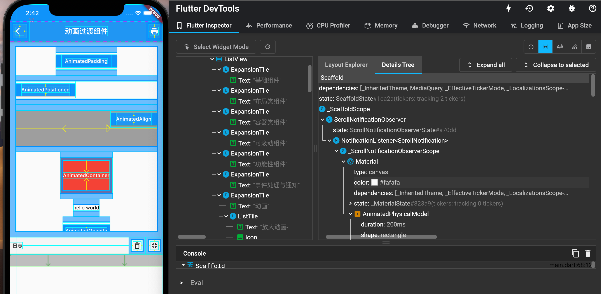
2.8 Flutter异常捕获
在介绍Flutter异常捕获之前必须先了解一下Dart单线程模型，只有了解了Dart的代码执行流程，我们才能知道该在什么地方去捕获异常。
2.8.1 Dart单线程模型
在 Java 和 Objective-C（以下简称“OC”）中，如果程序发生异常且没有被捕获，那么程序将会终止，但是这在Dart或JavaScript中则不会！究其原因，这和它们的运行机制有关系。Java 和 OC 都是多线程模型的编程语言，任意一个线程触发异常且该异常未被捕获时，就会导致整个进程退出。但 Dart 和 JavaScript 不会，它们都是单线程模型，运行机制很相似(但有区别)，下面我们通过Dart官方提供的一张图（2-21）来看看 Dart 大致运行原理：

Dart 在单线程中是以消息循环机制来运行的，其中包含两个任务队列，一个是“微任务队列” microtask queue，另一个叫做“事件队列” event queue。从图中可以发现，微任务队列的执行优先级高于事件队列。
现在我们来介绍一下Dart线程运行过程，如上图中所示，入口函数 main() 执行完后，消息循环机制便启动了。首先会按照先进先出的顺序逐个执行微任务队列中的任务，事件任务执行完毕后程序便会退出，但是，在事件任务执行的过程中也可以插入新的微任务和事件任务，在这种情况下，整个线程的执行过程便是一直在循环，不会退出，而Flutter中，主线程的执行过程正是如此，永不终止。
在Dart中，所有的外部事件任务都在事件队列中，如IO、计时器、点击、以及绘制事件等，而微任务通常来源于Dart内部，并且微任务非常少，之所以如此，是因为微任务队列优先级高，如果微任务太多，执行时间总和就越久，事件队列任务的延迟也就越久，对于GUI应用来说最直观的表现就是比较卡，所以必须得保证微任务队列不会太长。值得注意的是，我们可以通过Future.microtask(…)方法向微任务队列插入一个任务。
在事件循环中，当某个任务发生异常并没有被捕获时，程序并不会退出，而直接导致的结果是当前任务的后续代码就不会被执行了，也就是说一个任务中的异常是不会影响其他任务执行的。
2.8.2 Flutter异常捕获
Dart中可以通过try/catch/finally来捕获代码块异常，这个和其他编程语言类似，如果读者不清楚，可以查看Dart语言文档，不再赘述，下面我们看看Flutter中的异常捕获。
1. Flutter框架异常捕获
Flutter 框架为我们在很多关键的方法进行了异常捕获。这里举一个例子，当我们布局发生越界或不合规范时，Flutter就会自动弹出一个错误界面，这是因为Flutter已经在执行build方法时添加了异常捕获，最终的源码如下：
@override
void performRebuild() {
...
try {
//执行build方法
built = build();
} catch (e, stack) {
// 有异常时则弹出错误提示
built = ErrorWidget.builder(_debugReportException('building $this', e, stack));
}
...
}
可以看到，在发生异常时，Flutter默认的处理方式是弹一个ErrorWidget，但如果我们想自己捕获异常并上报到报警平台的话应该怎么做？我们进入_debugReportException()方法看看：
FlutterErrorDetails _debugReportException(
String context,
dynamic exception,
StackTrace stack, {
InformationCollector informationCollector
}) {
//构建错误详情对象
final FlutterErrorDetails details = FlutterErrorDetails(
exception: exception,
stack: stack,
library: 'widgets library',
context: context,
informationCollector: informationCollector,
);
//报告错误
FlutterError.reportError(details);
return details;
}
我们发现，错误是通过FlutterError.reportError方法上报的，继续跟踪：
static void reportError(FlutterErrorDetails details) {
...
if (onError != null)
onError(details); //调用了onError回调
}
我们发现onError是FlutterError的一个静态属性，它有一个默认的处理方法 dumpErrorToConsole，到这里就清晰了，如果我们想自己上报异常，只需要提供一个自定义的错误处理回调即可，如：
void main() {
FlutterError.onError = (FlutterErrorDetails details) {
reportError(details);
};
...
}
这样我们就可以处理那些Flutter为我们捕获的异常了，接下来我们看看如何捕获其他异常。
2. 其他异常捕获与日志收集
在Flutter中，还有一些Flutter没有为我们捕获的异常，如调用空对象方法异常、Future中的异常。在Dart中，异常分两类：同步异常和异步异常，同步异常可以通过try/catch捕获，而异步异常则比较麻烦，如下面的代码是捕获不了Future的异常的：
try{
Future.delayed(Duration(seconds: 1)).then((e) => Future.error("xxx"));
}catch (e){
print(e)
}
Dart中有一个runZoned(...) 方法，可以给执行对象指定一个Zone。Zone表示一个代码执行的环境范围，为了方便理解，读者可以将Zone类比为一个代码执行沙箱，不同沙箱的之间是隔离的，沙箱可以捕获、拦截或修改一些代码行为，如Zone中可以捕获日志输出、Timer创建、微任务调度的行为，同时Zone也可以捕获所有未处理的异常。下面我们看看runZoned(...)方法定义：
R runZoned<R>(R body(), {
Map zoneValues,
ZoneSpecification zoneSpecification,
})
-
zoneValues: Zone 的私有数据，可以通过实例zone[key]获取，可以理解为每个“沙箱”的私有数据。 -
zoneSpecification：Zone的一些配置，可以自定义一些代码行为，比如拦截日志输出和错误等，举个例子：runZoned( () => runApp(MyApp()), zoneSpecification: ZoneSpecification( // 拦截print 蜀西湖 print: (Zone self, ZoneDelegate parent, Zone zone, String line) { parent.print(zone, "Interceptor: $line"); }, // 拦截未处理的异步错误 handleUncaughtError: (Zone self, ZoneDelegate parent, Zone zone, Object error, StackTrace stackTrace) { parent.print(zone, '${error.toString()} $stackTrace'); }, ), );这样一来，我们 APP 中所有调用
print方法输出日志的行为都会被拦截，通过这种方式，我们也可以在应用中记录日志，等到应用触发未捕获的异常时，将异常信息和日志统一上报。另外我们还拦截了未被捕获的异步错误，这样一来，结合上面的
FlutterError.onError我们就可以捕获我们Flutter应用错误了并进行上报了！
3. 最终的错误上报代码
我们最终的异常捕获和上报代码大致如下：
void collectLog(String line){
... //收集日志
}
void reportErrorAndLog(FlutterErrorDetails details){
... //上报错误和日志逻辑
}
FlutterErrorDetails makeDetails(Object obj, StackTrace stack){
...// 构建错误信息
}
void main() {
var onError = FlutterError.onError; //先将 onerror 保存起来
FlutterError.onError = (FlutterErrorDetails details) {
onError?.call(details); //调用默认的onError
reportErrorAndLog(details); //上报
};
runZoned(
() => runApp(MyApp()),
zoneSpecification: ZoneSpecification(
// 拦截print
print: (Zone self, ZoneDelegate parent, Zone zone, String line) {
collectLog(line);
parent.print(zone, "Interceptor: $line");
},
// 拦截未处理的异步错误
handleUncaughtError: (Zone self, ZoneDelegate parent, Zone zone,
Object error, StackTrace stackTrace) {
reportErrorAndLog(details);
parent.print(zone, '${error.toString()} $stackTrace');
},
),
);
}
基础组件
本节介绍一下 Flutter 中常用的一些基础 widget，由于大多数 widget 的属性都比较多，我们在介绍widget时会着重介绍常用的属性，而不会像API文档一样所有属性都介绍，关于属性详细的信息请参考Flutter SDK文档。
本章目录
3.1 文本及样式
3.1.1 Text
Text 用于显示简单样式文本，它包含一些控制文本显示样式的一些属性，一个简单的例子如下：
Text("Hello world",
textAlign: TextAlign.left,
);
Text("Hello world! I'm Jack. "*4,
maxLines: 1,
overflow: TextOverflow.ellipsis,
);
Text("Hello world",
textScaleFactor: 1.5,
);
运行效果如图3-1所示：

-
textAlign：文本的对齐方式；可以选择左对齐、右对齐还是居中。注意，对齐的参考系是Text widget 本身。本例中虽然是指定了居中对齐，但因为 Text 文本内容宽度不足一行，Text 的宽度和文本内容长度相等，那么这时指定对齐方式是没有意义的，只有 Text 宽度大于文本内容长度时指定此属性才有意义。下面我们指定一个较长的字符串：Text("Hello world "*6, //字符串重复六次 textAlign: TextAlign.center, )；运行效果如图3-2所示：

字符串内容超过一行，Text 宽度等于屏幕宽度，第二行文本便会居中显示。
maxLines、overflow：指定文本显示的最大行数，默认情况下，文本是自动折行的，如果指定此参数，则文本最多不会超过指定的行。如果有多余的文本，可以通过overflow来指定截断方式，默认是直接截断，本例中指定的截断方式TextOverflow.ellipsis，它会将多余文本截断后以省略符“...”表示；TextOverflow 的其他截断方式请参考 SDK 文档。textScaleFactor：代表文本相对于当前字体大小的缩放因子，相对于去设置文本的样式style属性的fontSize，它是调整字体大小的一个快捷方式。该属性的默认值可以通过MediaQueryData.textScaleFactor获得，如果没有MediaQuery，那么会默认值将为1.0。
3.1.2 TextStyle
TextStyle用于指定文本显示的样式如颜色、字体、粗细、背景等。我们看一个示例：
Text("Hello world",
style: TextStyle(
color: Colors.blue,
fontSize: 18.0,
height: 1.2,
fontFamily: "Courier",
background: Paint()..color=Colors.yellow,
decoration:TextDecoration.underline,
decorationStyle: TextDecorationStyle.dashed
),
);
效果如图3-3所示：

此示例只展示了 TextStyle 的部分属性，它还有一些其他属性，属性名基本都是自解释的，在此不再赘述，读者可以查阅SDK文档。值得注意的是：
-
height：该属性用于指定行高，但它并不是一个绝对值，而是一个因子，具体的行高等于fontSize*height。 -
fontFamily：由于不同平台默认支持的字体集不同，所以在手动指定字体时一定要先在不同平台测试一下。 -
fontSize：该属性和 Text 的textScaleFactor都用于控制字体大小。但是有两个主要区别：fontSize可以精确指定字体大小，而textScaleFactor只能通过缩放比例来控制。textScaleFactor主要是用于系统字体大小设置改变时对 Flutter 应用字体进行全局调整，而fontSize通常用于单个文本，字体大小不会跟随系统字体大小变化。
3.1.3 TextSpan
在上面的例子中，Text 的所有文本内容只能按同一种样式，如果我们需要对一个 Text 内容的不同部分按照不同的样式显示，这时就可以使用TextSpan，它代表文本的一个“片段”。我们看看 TextSpan 的定义:
const TextSpan({
TextStyle style,
String text,
List<TextSpan> children,
GestureRecognizer recognizer,
});
其中style 和 text属性代表该文本片段的样式和内容。 children是一个TextSpan的数组，也就是说TextSpan可以包括其他TextSpan。而recognizer用于对该文本片段上用于手势进行识别处理。下面我们看一个效果（图3-4），然后用TextSpan实现它。
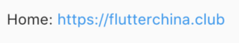
源码：
Text.rich(TextSpan(
children: [
TextSpan(
text: "Home: "
),
TextSpan(
text: "https://flutterchina.club",
style: TextStyle(
color: Colors.blue
),
recognizer: _tapRecognizer
),
]
))
- 上面代码中，我们通过 TextSpan 实现了一个基础文本片段和一个链接片段，然后通过
Text.rich方法将TextSpan添加到 Text 中，之所以可以这样做，是因为 Text 其实就是 RichText 的一个包装，而RichText 是可以显示多种样式(富文本)的 widget。 _tapRecognizer，它是点击链接后的一个处理器（代码已省略），关于手势识别的更多内容我们将在后面单独介绍。
3.1.4 DefaultTextStyle
在 Widget 树中，文本的样式默认是可以被继承的（子类文本类组件未指定具体样式时可以使用 Widget 树中父级设置的默认样式），因此，如果在 Widget 树的某一个节点处设置一个默认的文本样式，那么该节点的子树中所有文本都会默认使用这个样式，而DefaultTextStyle正是用于设置默认文本样式的。下面我们看一个例子：
DefaultTextStyle(
//1.设置文本默认样式
style: TextStyle(
color:Colors.red,
fontSize: 20.0,
),
textAlign: TextAlign.start,
child: Column(
crossAxisAlignment: CrossAxisAlignment.start,
children: <Widget>[
Text("hello world"),
Text("I am Jack"),
Text("I am Jack",
style: TextStyle(
inherit: false, //2.不继承默认样式
color: Colors.grey
),
),
],
),
);
上面代码中，我们首先设置了一个默认的文本样式，即字体为20像素(逻辑像素)、颜色为红色。然后通过DefaultTextStyle 设置给了子树 Column 节点处，这样一来 Column 的所有子孙 Text 默认都会继承该样式，除非 Text 显示指定不继承样式，如代码中注释2。示例运行效果如图3-5：

3.1.5 字体
可以在 Flutter 应用程序中使用不同的字体。例如，我们可能会使用设计人员创建的自定义字体，或者其他第三方的字体，如 Google Fonts 中的字体。本节将介绍如何为 Flutter 应用配置字体，并在渲染文本时使用它们。
在 Flutter 中使用字体分两步完成。首先在pubspec.yaml中声明它们，以确保它们会打包到应用程序中。然后通过TextStyle属性使用字体。
1. 在asset中声明
要将字体文件打包到应用中，和使用其他资源一样，要先在pubspec.yaml中声明它。然后将字体文件复制到在pubspec.yaml中指定的位置，如：
flutter:
fonts:
- family: Raleway
fonts:
- asset: assets/fonts/Raleway-Regular.ttf
- asset: assets/fonts/Raleway-Medium.ttf
weight: 500
- asset: assets/fonts/Raleway-SemiBold.ttf
weight: 600
- family: AbrilFatface
fonts:
- asset: assets/fonts/abrilfatface/AbrilFatface-Regular.ttf
2. 使用字体
// 声明文本样式
const textStyle = const TextStyle(
fontFamily: 'Raleway',
);
// 使用文本样式
var buttonText = const Text(
"Use the font for this text",
style: textStyle,
);
3. Package中的字体
要使用 Package 中定义的字体，必须提供package参数。例如，假设上面的字体声明位于my_package包中。然后创建 TextStyle 的过程如下：
const textStyle = const TextStyle(
fontFamily: 'Raleway',
package: 'my_package', //指定包名
);
如果在 package 包内部使用它自己定义的字体，也应该在创建文本样式时指定package参数，如上例所示。
一个包也可以只提供字体文件而不需要在 pubspec.yaml 中声明。 这些文件应该存放在包的lib/文件夹中。字体文件不会自动绑定到应用程序中，应用程序可以在声明字体时有选择地使用这些字体。假设一个名为my_package的包中有一个字体文件：
lib/fonts/Raleway-Medium.ttf
然后，应用程序可以声明一个字体，如下面的示例所示：
flutter:
fonts:
- family: Raleway
fonts:
- asset: assets/fonts/Raleway-Regular.ttf
- asset: packages/my_package/fonts/Raleway-Medium.ttf
weight: 500
lib/是隐含的，所以它不应该包含在 asset 路径中。
在这种情况下，由于应用程序本地定义了字体，所以在创建TextStyle时可以不指定package参数：
const textStyle = const TextStyle(
fontFamily: 'Raleway',
);
3.2 按钮
Material 组件库中提供了多种按钮组件如ElevatedButton、TextButton、OutlinedButton等，它们都是直接或间接对RawMaterialButton组件的包装定制，所以他们大多数属性都和RawMaterialButton一样。在介绍各个按钮时我们先介绍其默认外观，而按钮的外观大都可以通过属性来自定义，我们在后面统一介绍这些属性。另外，所有 Material 库中的按钮都有如下相同点：
- 按下时都会有“水波动画”（又称“涟漪动画”，就是点击时按钮上会出现水波扩散的动画）。
- 有一个
onPressed属性来设置点击回调，当按钮按下时会执行该回调，如果不提供该回调则按钮会处于禁用状态，禁用状态不响应用户点击。
3.2.1 ElevatedButton
ElevatedButton 即"漂浮"按钮，它默认带有阴影和灰色背景。按下后，阴影会变大，如图3-6所示：

使用ElevatedButton非常简单，如：
ElevatedButton(
child: Text("normal"),
onPressed: () {},
);
3.2.2 TextButton
TextButton即文本按钮，默认背景透明并不带阴影。按下后，会有背景色，如图3-7所示：
使用 TextButton 也很简单，代码如下：
TextButton(
child: Text("normal"),
onPressed: () {},
)
3.2.3 OutlinedButton
OutlinedButton默认有一个边框，不带阴影且背景透明。按下后，边框颜色会变亮、同时出现背景和阴影(较弱)，如图 3-8 所示：

使用OutlinedButton也很简单，代码如下：
OutlinedButton(
child: Text("normal"),
onPressed: () {},
)
3.2.4 IconButton
IconButton是一个可点击的Icon，不包括文字，默认没有背景，点击后会出现背景，如图3-9所示：
代码如下：
IconButton(
icon: Icon(Icons.thumb_up),
onPressed: () {},
)
3.2.5 带图标的按钮
ElevatedButton、TextButton、OutlinedButton都有一个icon 构造函数，通过它可以轻松创建带图标的按钮，如图3-10所示：
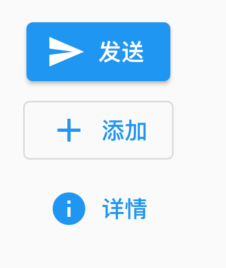
代码如下：
ElevatedButton.icon(
icon: Icon(Icons.send),
label: Text("发送"),
onPressed: _onPressed,
),
OutlinedButton.icon(
icon: Icon(Icons.add),
label: Text("添加"),
onPressed: _onPressed,
),
TextButton.icon(
icon: Icon(Icons.info),
label: Text("详情"),
onPressed: _onPressed,
),
3.3 图片及ICON
3.3.1 图片
Flutter 中，我们可以通过Image组件来加载并显示图片，Image的数据源可以是asset、文件、内存以及网络。
1. ImageProvider
ImageProvider 是一个抽象类，主要定义了图片数据获取的接口load()，从不同的数据源获取图片需要实现不同的ImageProvider ，如AssetImage是实现了从Asset中加载图片的 ImageProvider，而NetworkImage 实现了从网络加载图片的 ImageProvider。
2. Image
Image widget 有一个必选的image参数，它对应一个 ImageProvider。下面我们分别演示一下如何从 asset 和网络加载图片。
1）从asset中加载图片
-
在工程根目录下创建一个
images目录，并将图片 avatar.png 拷贝到该目录。 -
在
pubspec.yaml中的flutter部分添加如下内容：assets: - images/avatar.png
注意: 由于 yaml 文件对缩进严格，所以必须严格按照每一层两个空格的方式进行缩进，此处 assets 前面应有两个空格。
-
加载该图片
Image( image: AssetImage("images/avatar.png"), width: 100.0 );Image也提供了一个快捷的构造函数
Image.asset用于从asset中加载、显示图片：Image.asset("images/avatar.png", width: 100.0, )
2）从网络加载图片
NetworkImage 可以加载网络图片，例如：
Image(
image: NetworkImage(
"https://avatars2.githubusercontent.com/u/20411648?s=460&v=4"),
width: 100.0,
)
Image也提供了一个快捷的构造函数Image.network用于从网络加载、显示图片：
Image.network(
"https://avatars2.githubusercontent.com/u/20411648?s=460&v=4",
width: 100.0,
)
运行上面两个示例，图片加载成功后如图3-11所示：

3）参数
Image在显示图片时定义了一系列参数，通过这些参数我们可以控制图片的显示外观、大小、混合效果等。我们看一下 Image 的主要参数：
const Image({
...
this.width, //图片的宽
this.height, //图片高度
this.color, //图片的混合色值
this.colorBlendMode, //混合模式
this.fit,//缩放模式
this.alignment = Alignment.center, //对齐方式
this.repeat = ImageRepeat.noRepeat, //重复方式
...
})
-
width、height：用于设置图片的宽、高，当不指定宽高时，图片会根据当前父容器的限制，尽可能的显示其原始大小，如果只设置width、height的其中一个，那么另一个属性默认会按比例缩放，但可以通过下面介绍的fit属性来指定适应规则。 -
fit：该属性用于在图片的显示空间和图片本身大小不同时指定图片的适应模式。适应模式是在BoxFit中定义，它是一个枚举类型，有如下值：fill：会拉伸填充满显示空间，图片本身长宽比会发生变化，图片会变形。cover：会按图片的长宽比放大后居中填满显示空间，图片不会变形，超出显示空间部分会被剪裁。contain：这是图片的默认适应规则，图片会在保证图片本身长宽比不变的情况下缩放以适应当前显示空间，图片不会变形。fitWidth：图片的宽度会缩放到显示空间的宽度，高度会按比例缩放，然后居中显示，图片不会变形，超出显示空间部分会被剪裁。fitHeight：图片的高度会缩放到显示空间的高度，宽度会按比例缩放，然后居中显示，图片不会变形，超出显示空间部分会被剪裁。none：图片没有适应策略，会在显示空间内显示图片，如果图片比显示空间大，则显示空间只会显示图片中间部分。
一图胜万言！ 我们对一个宽高相同的头像图片应用不同的
fit值，效果如图3-12所示：
-
color和colorBlendMode：在图片绘制时可以对每一个像素进行颜色混合处理，color指定混合色，而colorBlendMode指定混合模式，下面是一个简单的示例：Image( image: AssetImage("images/avatar.png"), width: 100.0, color: Colors.blue, colorBlendMode: BlendMode.difference, );
运行效果如图3-13所示（彩色）:

-
repeat：当图片本身大小小于显示空间时，指定图片的重复规则。简单示例如下：Image( image: AssetImage("images/avatar.png"), width: 100.0, height: 200.0, repeat: ImageRepeat.repeatY , )运行后效果如图3-14所示：

完整的示例代码如下：
import 'package:flutter/material.dart';
class ImageAndIconRoute extends StatelessWidget {
@override
Widget build(BuildContext context) {
var img=AssetImage("imgs/avatar.png");
return SingleChildScrollView(
child: Column(
children: <Image>[
Image(
image: img,
height: 50.0,
width: 100.0,
fit: BoxFit.fill,
),
Image(
image: img,
height: 50,
width: 50.0,
fit: BoxFit.contain,
),
Image(
image: img,
width: 100.0,
height: 50.0,
fit: BoxFit.cover,
),
Image(
image: img,
width: 100.0,
height: 50.0,
fit: BoxFit.fitWidth,
),
Image(
image: img,
width: 100.0,
height: 50.0,
fit: BoxFit.fitHeight,
),
Image(
image: img,
width: 100.0,
height: 50.0,
fit: BoxFit.scaleDown,
),
Image(
image: img,
height: 50.0,
width: 100.0,
fit: BoxFit.none,
),
Image(
image: img,
width: 100.0,
color: Colors.blue,
colorBlendMode: BlendMode.difference,
fit: BoxFit.fill,
),
Image(
image: img,
width: 100.0,
height: 200.0,
repeat: ImageRepeat.repeatY ,
)
].map((e){
return Row(
children: <Widget>[
Padding(
padding: EdgeInsets.all(16.0),
child: SizedBox(
width: 100,
child: e,
),
),
Text(e.fit.toString())
],
);
}).toList()
),
);
}
}
3. Image缓存
Flutter框架对加载过的图片是有缓存的（内存），关于Image的详细内容及原理我们将会在后面进阶部分深入介绍。
3.3.2 ICON
Flutter 中，可以像Web开发一样使用 iconfont，iconfont 即“字体图标”，它是将图标做成字体文件，然后通过指定不同的字符而显示不同的图片。
在字体文件中，每一个字符都对应一个位码，而每一个位码对应一个显示字形，不同的字体就是指字形不同，即字符对应的字形是不同的。而在iconfont中，只是将位码对应的字形做成了图标，所以不同的字符最终就会渲染成不同的图标。
在Flutter开发中，iconfont和图片相比有如下优势：
- 体积小：可以减小安装包大小。
- 矢量的：iconfont都是矢量图标，放大不会影响其清晰度。
- 可以应用文本样式：可以像文本一样改变字体图标的颜色、大小对齐等。
- 可以通过TextSpan和文本混用。
1. 使用Material Design字体图标
Flutter默认包含了一套Material Design的字体图标，在pubspec.yaml文件中的配置如下
flutter:
uses-material-design: true
Material Design所有图标可以在其官网查看：https://material.io/tools/icons/
我们看一个简单的例子：
String icons = "";
// accessible: 0xe03e
icons += "\uE03e";
// error: 0xe237
icons += " \uE237";
// fingerprint: 0xe287
icons += " \uE287";
Text(
icons,
style: TextStyle(
fontFamily: "MaterialIcons",
fontSize: 24.0,
color: Colors.green,
),
);
运行效果如图3-15所示：

通过这个示例可以看到，使用图标就像使用文本一样，但是这种方式需要我们提供每个图标的码点，这对开发者并不友好，所以，Flutter封装了IconData和Icon来专门显示字体图标，上面的例子也可以用如下方式实现：
Row(
mainAxisAlignment: MainAxisAlignment.center,
children: <Widget>[
Icon(Icons.accessible,color: Colors.green),
Icon(Icons.error,color: Colors.green),
Icon(Icons.fingerprint,color: Colors.green),
],
)
Icons类中包含了所有Material Design图标的IconData静态变量定义。
2. 使用自定义字体图标
我们也可以使用自定义字体图标。iconfont.cn上有很多字体图标素材，我们可以选择自己需要的图标打包下载后，会生成一些不同格式的字体文件，在Flutter中，我们使用ttf格式即可。
假设我们项目中需要使用一个书籍图标和微信图标，我们打包下载后导入：
-
导入字体图标文件；这一步和导入字体文件相同，假设我们的字体图标文件保存在项目根目录下，路径为"fonts/iconfont.ttf"：
fonts: - family: myIcon #指定一个字体名 fonts: - asset: fonts/iconfont.ttf -
为了使用方便，我们定义一个
MyIcons类，功能和Icons类一样：将字体文件中的所有图标都定义成静态变量：class MyIcons{ // book 图标 static const IconData book = const IconData( 0xe614, fontFamily: 'myIcon', matchTextDirection: true ); // 微信图标 static const IconData wechat = const IconData( 0xec7d, fontFamily: 'myIcon', matchTextDirection: true ); } -
使用
Row( mainAxisAlignment: MainAxisAlignment.center, children: <Widget>[ Icon(MyIcons.book,color: Colors.purple), Icon(MyIcons.wechat,color: Colors.green), ], )运行后效果如图3-16所示：

3.4 单选开关和复选框
3.4.1.简介
Material 组件库中提供了 Material 风格的单选开关Switch和复选框Checkbox，虽然它们都是继承自StatefulWidget，但它们本身不会保存当前选中状态，选中状态都是由父组件来管理的。当Switch或Checkbox被点击时，会触发它们的onChanged回调，我们可以在此回调中处理选中状态改变逻辑。下面看一个简单的例子：
class SwitchAndCheckBoxTestRoute extends StatefulWidget {
@override
_SwitchAndCheckBoxTestRouteState createState() => _SwitchAndCheckBoxTestRouteState();
}
class _SwitchAndCheckBoxTestRouteState extends State<SwitchAndCheckBoxTestRoute> {
bool _switchSelected=true; //维护单选开关状态
bool _checkboxSelected=true;//维护复选框状态
@override
Widget build(BuildContext context) {
return Column(
children: <Widget>[
Switch(
value: _switchSelected,//当前状态
onChanged:(value){
//重新构建页面
setState(() {
_switchSelected=value;
});
},
),
Checkbox(
value: _checkboxSelected,
activeColor: Colors.red, //选中时的颜色
onChanged:(value){
setState(() {
_checkboxSelected=value;
});
} ,
)
],
);
}
}
上面代码中，由于需要维护Switch和Checkbox的选中状态，所以SwitchAndCheckBoxTestRoute继承自StatefulWidget 。在其build方法中分别构建了一个Switch和Checkbox，初始状态都为选中状态，当用户点击时，会将状态置反，然后回调用setState()通知 Flutter 框架重新构建UI，效果如图3-17所示：

3.4.2 属性及外观
Switch和Checkbox属性比较简单，读者可以查看API文档，它们都有一个activeColor属性，用于设置激活态的颜色。至于大小，到目前为止，Checkbox的大小是固定的，无法自定义，而Switch只能定义宽度，高度也是固定的。值得一提的是Checkbox有一个属性tristate ，表示是否为三态，其默认值为false ，这时 Checkbox 有两种状态即“选中”和“不选中”，对应的 value 值为true和false ；如果tristate值为true时，value 的值会增加一个状态null，读者可以自行测试。
3.4.3 注意
通过Switch和Checkbox我们可以看到，虽然它们本身是与状态（是否选中）关联的，但它们却不是自己来维护状态，而是需要父组件来管理状态，然后当用户点击时，再通过事件通知给父组件，这样是合理的，因为Switch和Checkbox是否选中本就和用户数据关联，而这些用户数据也不可能是它们的私有状态。我们在自定义组件时也应该思考一下哪种状态的管理方式最为合理。
3.5 输入框及表单
Material 组件库中提供了输入框组件TextField和表单组件Form。下面我们分别介绍一下。
3.5.1 TextField
TextField用于文本输入，它提供了很多属性，我们先简单介绍一下主要属性的作用，然后通过几个示例来演示一下关键属性的用法。
const TextField({
...
TextEditingController controller,
FocusNode focusNode,
InputDecoration decoration = const InputDecoration(),
TextInputType keyboardType,
TextInputAction textInputAction,
TextStyle style,
TextAlign textAlign = TextAlign.start,
bool autofocus = false,
bool obscureText = false,
int maxLines = 1,
int maxLength,
this.maxLengthEnforcement,
ToolbarOptions? toolbarOptions,
ValueChanged<String> onChanged,
VoidCallback onEditingComplete,
ValueChanged<String> onSubmitted,
List<TextInputFormatter> inputFormatters,
bool enabled,
this.cursorWidth = 2.0,
this.cursorRadius,
this.cursorColor,
this.onTap,
...
})
-
controller：编辑框的控制器，通过它可以设置/获取编辑框的内容、选择编辑内容、监听编辑文本改变事件。大多数情况下我们都需要显式提供一个controller来与文本框交互。如果没有提供controller，则TextField内部会自动创建一个。 -
focusNode：用于控制TextField是否占有当前键盘的输入焦点。它是我们和键盘交互的一个句柄（handle）。 -
InputDecoration：用于控制TextField的外观显示，如提示文本、背景颜色、边框等。 -
keyboardType：用于设置该输入框默认的键盘输入类型，取值如下：TextInputType枚举值 含义 text 文本输入键盘 multiline 多行文本，需和maxLines配合使用(设为null或大于1) number 数字；会弹出数字键盘 phone 优化后的电话号码输入键盘；会弹出数字键盘并显示“* #” datetime 优化后的日期输入键盘；Android上会显示“: -” emailAddress 优化后的电子邮件地址；会显示“@ .” url 优化后的url输入键盘； 会显示“/ .” -
textInputAction：键盘动作按钮图标(即回车键位图标)，它是一个枚举值，有多个可选值，全部的取值列表读者可以查看API文档，下面是当值为TextInputAction.search时，原生Android系统下键盘样式如图3-18所示：
-
style：正在编辑的文本样式。 -
textAlign: 输入框内编辑文本在水平方向的对齐方式。 -
autofocus: 是否自动获取焦点。 -
obscureText：是否隐藏正在编辑的文本，如用于输入密码的场景等，文本内容会用“•”替换。 -
maxLines：输入框的最大行数，默认为1；如果为null，则无行数限制。 -
maxLength和maxLengthEnforcement：maxLength代表输入框文本的最大长度，设置后输入框右下角会显示输入的文本计数。maxLengthEnforcement决定当输入文本长度超过maxLength时如何处理，如截断、超出等。 -
toolbarOptions：长按或鼠标右击时出现的菜单，包括 copy、cut、paste 以及 selectAll。 -
onChange：输入框内容改变时的回调函数；注：内容改变事件也可以通过controller来监听。 -
onEditingComplete和onSubmitted：这两个回调都是在输入框输入完成时触发，比如按了键盘的完成键（对号图标）或搜索键（🔍图标）。不同的是两个回调签名不同，onSubmitted回调是ValueChanged<String>类型，它接收当前输入内容做为参数，而onEditingComplete不接收参数。 -
inputFormatters：用于指定输入格式；当用户输入内容改变时，会根据指定的格式来校验。 -
enable：如果为false，则输入框会被禁用，禁用状态不能响应输入和事件，同时显示禁用态样式（在其decoration中定义）。 -
cursorWidth、cursorRadius和cursorColor：这三个属性是用于自定义输入框光标宽度、圆角和颜色的。
1. 示例：登录输入框
1）布局
我们实现一个登录表单：
Column(
children: <Widget>[
TextField(
autofocus: true,
decoration: InputDecoration(
labelText: "用户名",
hintText: "用户名或邮箱",
prefixIcon: Icon(Icons.person)
),
),
TextField(
decoration: InputDecoration(
labelText: "密码",
hintText: "您的登录密码",
prefixIcon: Icon(Icons.lock)
),
obscureText: true,
),
],
);
运行后，效果如图3-19所示：

2）获取输入内容
获取输入内容有两种方式：
- 定义两个变量，用于保存用户名和密码，然后在
onChange触发时，各自保存一下输入内容。 - 通过
controller直接获取。
第一种方式比较简单，不在举例，我们来重点看一下第二种方式，我们以用户名输入框举例：
定义一个controller：
//定义一个controller
TextEditingController _unameController = TextEditingController();
然后设置输入框controller：
TextField(
autofocus: true,
controller: _unameController, //设置controller
...
)
通过controller获取输入框内容
print(_unameController.text)
3）监听文本变化
监听文本变化也有两种方式：
-
设置
onChange回调，如：TextField( autofocus: true, onChanged: (v) { print("onChange: $v"); } ) -
通过
controller监听，如：@override void initState() { //监听输入改变 _unameController.addListener((){ print(_unameController.text); }); }
两种方式相比，onChanged是专门用于监听文本变化，而controller的功能却多一些，除了能监听文本变化外，它还可以设置默认值、选择文本，下面我们看一个例子：
创建一个controller:
TextEditingController _selectionController = TextEditingController();
设置默认值，并从第三个字符开始选中后面的字符
_selectionController.text="hello world!";
_selectionController.selection=TextSelection(
baseOffset: 2,
extentOffset: _selectionController.text.length
);
设置controller:
TextField(
controller: _selectionController,
)
运行效果如图3-20所示：

4）控制焦点
焦点可以通过FocusNode和FocusScopeNode来控制，默认情况下，焦点由FocusScope来管理，它代表焦点控制范围，可以在这个范围内可以通过FocusScopeNode在输入框之间移动焦点、设置默认焦点等。我们可以通过FocusScope.of(context) 来获取Widget树中默认的FocusScopeNode。下面看一个示例，在此示例中创建两个TextField，第一个自动获取焦点，然后创建两个按钮：
- 点击第一个按钮可以将焦点从第一个
TextField挪到第二个TextField。 - 点击第二个按钮可以关闭键盘。
我们要实现的效果如图3-21所示：
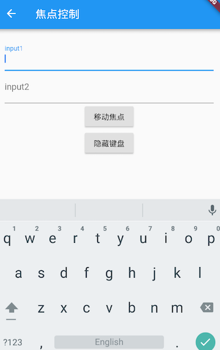
代码如下：
class FocusTestRoute extends StatefulWidget {
@override
_FocusTestRouteState createState() => _FocusTestRouteState();
}
class _FocusTestRouteState extends State<FocusTestRoute> {
FocusNode focusNode1 = FocusNode();
FocusNode focusNode2 = FocusNode();
FocusScopeNode? focusScopeNode;
@override
Widget build(BuildContext context) {
return Padding(
padding: EdgeInsets.all(16.0),
child: Column(
children: <Widget>[
TextField(
autofocus: true,
focusNode: focusNode1,//关联focusNode1
decoration: InputDecoration(
labelText: "input1"
),
),
TextField(
focusNode: focusNode2,//关联focusNode2
decoration: InputDecoration(
labelText: "input2"
),
),
Builder(builder: (ctx) {
return Column(
children: <Widget>[
ElevatedButton(
child: Text("移动焦点"),
onPressed: () {
//将焦点从第一个TextField移到第二个TextField
// 这是一种写法 FocusScope.of(context).requestFocus(focusNode2);
// 这是第二种写法
if(null == focusScopeNode){
focusScopeNode = FocusScope.of(context);
}
focusScopeNode.requestFocus(focusNode2);
},
),
ElevatedButton(
child: Text("隐藏键盘"),
onPressed: () {
// 当所有编辑框都失去焦点时键盘就会收起
focusNode1.unfocus();
focusNode2.unfocus();
},
),
],
);
},
),
],
),
);
}
}
FocusNode和FocusScopeNode还有一些其他的方法，详情可以查看API文档。
5）监听焦点状态改变事件
FocusNode继承自ChangeNotifier，通过FocusNode可以监听焦点的改变事件，如：
...
// 创建 focusNode
FocusNode focusNode = FocusNode();
...
// focusNode绑定输入框
TextField(focusNode: focusNode);
...
// 监听焦点变化
focusNode.addListener((){
print(focusNode.hasFocus);
});
获得焦点时focusNode.hasFocus值为true，失去焦点时为false。
6）自定义样式
虽然我们可以通过decoration属性来定义输入框样式，下面以自定义输入框下划线颜色为例来介绍一下：
TextField(
decoration: InputDecoration(
labelText: "请输入用户名",
prefixIcon: Icon(Icons.person),
// 未获得焦点下划线设为灰色
enabledBorder: UnderlineInputBorder(
borderSide: BorderSide(color: Colors.grey),
),
//获得焦点下划线设为蓝色
focusedBorder: UnderlineInputBorder(
borderSide: BorderSide(color: Colors.blue),
),
),
),
上面代码我们直接通过InputDecoration的enabledBorder和focusedBorder来分别设置了输入框在未获取焦点和获得焦点后的下划线颜色。另外，我们也可以通过主题来自定义输入框的样式，下面我们探索一下如何在不使用enabledBorder和focusedBorder的情况下来自定义下滑线颜色。
由于TextField在绘制下划线时使用的颜色是主题色里面的hintColor，但提示文本颜色也是用的hintColor， 如果我们直接修改hintColor，那么下划线和提示文本的颜色都会变。值得高兴的是decoration中可以设置hintStyle，它可以覆盖hintColor，并且主题中可以通过inputDecorationTheme来设置输入框默认的decoration。所以我们可以通过主题来自定义，代码如下：
Theme(
data: Theme.of(context).copyWith(
hintColor: Colors.grey[200], //定义下划线颜色
inputDecorationTheme: InputDecorationTheme(
labelStyle: TextStyle(color: Colors.grey),//定义label字体样式
hintStyle: TextStyle(color: Colors.grey, fontSize: 14.0)//定义提示文本样式
)
),
child: Column(
children: <Widget>[
TextField(
decoration: InputDecoration(
labelText: "用户名",
hintText: "用户名或邮箱",
prefixIcon: Icon(Icons.person)
),
),
TextField(
decoration: InputDecoration(
prefixIcon: Icon(Icons.lock),
labelText: "密码",
hintText: "您的登录密码",
hintStyle: TextStyle(color: Colors.grey, fontSize: 13.0)
),
obscureText: true,
)
],
)
)
运行效果如图3-22所示：

我们成功的自定义了下划线颜色和提问文字样式，细心的读者可能已经发现，通过这种方式自定义后，输入框在获取焦点时，labelText不会高亮显示了，正如上图中的"用户名"本应该显示蓝色，但现在却显示为灰色，并且我们还是无法定义下划线宽度。另一种灵活的方式是直接隐藏掉TextField本身的下划线，然后通过Container去嵌套定义样式，如:
Container(
child: TextField(
keyboardType: TextInputType.emailAddress,
decoration: InputDecoration(
labelText: "Email",
hintText: "电子邮件地址",
prefixIcon: Icon(Icons.email),
border: InputBorder.none //隐藏下划线
)
),
decoration: BoxDecoration(
// 下滑线浅灰色，宽度1像素
border: Border(bottom: BorderSide(color: Colors.grey[200], width: 1.0))
),
)
运行效果如图3-23：

通过这种组件组合的方式，也可以定义背景圆角等。一般来说，优先通过decoration来自定义样式，如果decoration实现不了，再用widget组合的方式。
思考题：在这个示例中，下划线颜色是固定的，所以获得焦点后颜色仍然为灰色，如何实现点击后下滑线也变色呢？
3.5.2 表单Form
实际业务中，在正式向服务器提交数据前，都会对各个输入框数据进行合法性校验，但是对每一个TextField都分别进行校验将会是一件很麻烦的事。还有，如果用户想清除一组TextField的内容，除了一个一个清除有没有什么更好的办法呢？为此，Flutter提供了一个Form 组件，它可以对输入框进行分组，然后进行一些统一操作，如输入内容校验、输入框重置以及输入内容保存。
1. Form
Form继承自StatefulWidget对象，它对应的状态类为FormState。我们先看看Form类的定义：
Form({
required Widget child,
bool autovalidate = false,
WillPopCallback onWillPop,
VoidCallback onChanged,
})
autovalidate：是否自动校验输入内容；当为true时，每一个子 FormField 内容发生变化时都会自动校验合法性，并直接显示错误信息。否则，需要通过调用FormState.validate()来手动校验。onWillPop：决定Form所在的路由是否可以直接返回（如点击返回按钮），该回调返回一个Future对象，如果 Future 的最终结果是false，则当前路由不会返回；如果为true，则会返回到上一个路由。此属性通常用于拦截返回按钮。onChanged：Form的任意一个子FormField内容发生变化时会触发此回调。
2. FormField
Form的子孙元素必须是FormField类型，FormField是一个抽象类，定义几个属性，FormState内部通过它们来完成操作，FormField部分定义如下：
const FormField({
...
FormFieldSetter<T> onSaved, //保存回调
FormFieldValidator<T> validator, //验证回调
T initialValue, //初始值
bool autovalidate = false, //是否自动校验。
})
为了方便使用，Flutter 提供了一个TextFormField组件，它继承自FormField类，也是TextField的一个包装类，所以除了FormField定义的属性之外，它还包括TextField的属性。
3. FormState
FormState为Form的State类，可以通过Form.of()或GlobalKey获得。我们可以通过它来对Form的子孙FormField进行统一操作。我们看看其常用的三个方法：
FormState.validate()：调用此方法后，会调用Form子孙FormField的validate回调，如果有一个校验失败，则返回false，所有校验失败项都会返回用户返回的错误提示。FormState.save()：调用此方法后，会调用Form子孙FormField的save回调，用于保存表单内容FormState.reset()：调用此方法后，会将子孙FormField的内容清空。
4. 示例
我们修改一下上面用户登录的示例，在提交之前校验：
- 用户名不能为空，如果为空则提示“用户名不能为空”。
- 密码不能少于 6 位，如果小于 6 为则提示“密码不能少于 6 位”。
完整代码：
import 'package:flutter/material.dart';
class FormTestRoute extends StatefulWidget {
@override
_FormTestRouteState createState() => _FormTestRouteState();
}
class _FormTestRouteState extends State<FormTestRoute> {
TextEditingController _unameController = TextEditingController();
TextEditingController _pwdController = TextEditingController();
GlobalKey _formKey = GlobalKey<FormState>();
@override
Widget build(BuildContext context) {
return Form(
key: _formKey, //设置globalKey，用于后面获取FormState
autovalidateMode: AutovalidateMode.onUserInteraction,
child: Column(
children: <Widget>[
TextFormField(
autofocus: true,
controller: _unameController,
decoration: InputDecoration(
labelText: "用户名",
hintText: "用户名或邮箱",
icon: Icon(Icons.person),
),
// 校验用户名
validator: (v) {
return v!.trim().isNotEmpty ? null : "用户名不能为空";
},
),
TextFormField(
controller: _pwdController,
decoration: InputDecoration(
labelText: "密码",
hintText: "您的登录密码",
icon: Icon(Icons.lock),
),
obscureText: true,
//校验密码
validator: (v) {
return v!.trim().length > 5 ? null : "密码不能少于6位";
},
),
// 登录按钮
Padding(
padding: const EdgeInsets.only(top: 28.0),
child: Row(
children: <Widget>[
Expanded(
child: ElevatedButton(
child: Padding(
padding: const EdgeInsets.all(16.0),
child: Text("登录"),
),
onPressed: () {
// 通过_formKey.currentState 获取FormState后，
// 调用validate()方法校验用户名密码是否合法，校验
// 通过后再提交数据。
if ((_formKey.currentState as FormState).validate()) {
//验证通过提交数据
}
},
),
),
],
),
)
],
),
);
}
}
运行后效果如图3-24所示：

注意，登录按钮的onPressed方法中不能通过Form.of(context)来获取FormState，原因是，此处的context为FormTestRoute的context，而Form.of(context)是根据所指定context向根去查找，而FormState是在FormTestRoute的子树中，所以不行。正确的做法是通过Builder来构建登录按钮，Builder会将widget节点的context作为回调参数：
Expanded(
// 通过Builder来获取ElevatedButton所在widget树的真正context(Element)
child:Builder(builder: (context){
return ElevatedButton(
...
onPressed: () {
//由于本widget也是Form的子代widget，所以可以通过下面方式获取FormState
if(Form.of(context).validate()){
//验证通过提交数据
}
},
);
})
)
其实context正是操作Widget所对应的Element的一个接口，由于Widget树对应的Element都是不同的，所以context也都是不同的，有关context的更多内容会在本书后面进阶篇中详细讨论。Flutter中有很多“of(context)”这种方法，读者在使用时一定要注意context是否正确。
3.6 进度指示器
Material 组件库中提供了两种进度指示器：LinearProgressIndicator和CircularProgressIndicator，它们都可以同时用于精确的进度指示和模糊的进度指示。精确进度通常用于任务进度可以计算和预估的情况，比如文件下载；而模糊进度则用户任务进度无法准确获得的情况，如下拉刷新，数据提交等。
3.6.1 LinearProgressIndicator
LinearProgressIndicator是一个线性、条状的进度条，定义如下：
LinearProgressIndicator({
double value,
Color backgroundColor,
Animation<Color> valueColor,
...
})
value：value表示当前的进度，取值范围为[0,1]；如果value为null时则指示器会执行一个循环动画（模糊进度）；当value不为null时，指示器为一个具体进度的进度条。backgroundColor：指示器的背景色。valueColor: 指示器的进度条颜色；值得注意的是，该值类型是Animation<Color>，这允许我们对进度条的颜色也可以指定动画。如果我们不需要对进度条颜色执行动画，换言之，我们想对进度条应用一种固定的颜色，此时我们可以通过AlwaysStoppedAnimation来指定。
示例
// 模糊进度条(会执行一个动画)
LinearProgressIndicator(
backgroundColor: Colors.grey[200],
valueColor: AlwaysStoppedAnimation(Colors.blue),
),
//进度条显示50%
LinearProgressIndicator(
backgroundColor: Colors.grey[200],
valueColor: AlwaysStoppedAnimation(Colors.blue),
value: .5,
)
运行效果如图3-25所示：

第一个进度条在执行循环动画：蓝色条一直在移动，而第二个进度条是静止的，停在50%的位置。
3.6.2 CircularProgressIndicator
CircularProgressIndicator是一个圆形进度条，定义如下：
CircularProgressIndicator({
double value,
Color backgroundColor,
Animation<Color> valueColor,
this.strokeWidth = 4.0,
...
})
前三个参数和LinearProgressIndicator相同，不再赘述。strokeWidth 表示圆形进度条的粗细。示例如下：
// 模糊进度条(会执行一个旋转动画)
CircularProgressIndicator(
backgroundColor: Colors.grey[200],
valueColor: AlwaysStoppedAnimation(Colors.blue),
),
//进度条显示50%，会显示一个半圆
CircularProgressIndicator(
backgroundColor: Colors.grey[200],
valueColor: AlwaysStoppedAnimation(Colors.blue),
value: .5,
),
运行效果如图3-26所示：

第一个进度条会执行旋转动画，而第二个进度条是静止的，它停在50%的位置。
3.6.3 自定义尺寸
我们可以发现LinearProgressIndicator和CircularProgressIndicator，并没有提供设置圆形进度条尺寸的参数；如果我们希望LinearProgressIndicator的线细一些，或者希望CircularProgressIndicator的圆大一些该怎么做？
其实LinearProgressIndicator和CircularProgressIndicator都是取父容器的尺寸作为绘制的边界的。知道了这点，我们便可以通过尺寸限制类Widget，如ConstrainedBox、SizedBox （我们将在后面容器类组件一章中介绍）来指定尺寸，如：
// 线性进度条高度指定为3
SizedBox(
height: 3,
child: LinearProgressIndicator(
backgroundColor: Colors.grey[200],
valueColor: AlwaysStoppedAnimation(Colors.blue),
value: .5,
),
),
// 圆形进度条直径指定为100
SizedBox(
height: 100,
width: 100,
child: CircularProgressIndicator(
backgroundColor: Colors.grey[200],
valueColor: AlwaysStoppedAnimation(Colors.blue),
value: .7,
),
),
运行效果如图3-27所示：

注意，如果CircularProgressIndicator显示空间的宽高不同，则会显示为椭圆。如：
// 宽高不等
SizedBox(
height: 100,
width: 130,
child: CircularProgressIndicator(
backgroundColor: Colors.grey[200],
valueColor: AlwaysStoppedAnimation(Colors.blue),
value: .7,
),
),
运行效果如图3-28所示：

3.6.3 进度色动画
前面说过可以通过valueColor对进度条颜色做动画，关于动画我们将在后面专门的章节详细介绍，这里先给出一个例子，读者在了解了Flutter动画一章后再回过头来看。
我们实现一个进度条在3秒内从灰色变成蓝色的动画：
import 'package:flutter/material.dart';
class ProgressRoute extends StatefulWidget {
@override
_ProgressRouteState createState() => _ProgressRouteState();
}
class _ProgressRouteState extends State<ProgressRoute>
with SingleTickerProviderStateMixin {
AnimationController _animationController;
@override
void initState() {
//动画执行时间3秒
_animationController = AnimationController(
vsync: this, //注意State类需要混入SingleTickerProviderStateMixin（提供动画帧计时/触发器）
duration: Duration(seconds: 3),
);
_animationController.forward();
_animationController.addListener(() => setState(() => {}));
super.initState();
}
@override
void dispose() {
_animationController.dispose();
super.dispose();
}
@override
Widget build(BuildContext context) {
return SingleChildScrollView(
child: Column(
children: <Widget>[
Padding(
padding: EdgeInsets.all(16),
child: LinearProgressIndicator(
backgroundColor: Colors.grey[200],
valueColor: ColorTween(begin: Colors.grey, end: Colors.blue)
.animate(_animationController), // 从灰色变成蓝色
value: _animationController.value,
),
);
],
),
);
}
}
3.6.4 自定义进度指示器样式
定制进度指示器风格样式，可以通过CustomPainter Widget 来自定义绘制逻辑，实际上LinearProgressIndicator和CircularProgressIndicator也正是通过CustomPainter来实现外观绘制的。关于CustomPainter，我们将在第十章“自定义组件”中详细介绍。
flutter_spinkit 包提供了多种风格的模糊进度指示器，读者若是感兴趣，可以参考。
本章目录
布局类组件
- 4.1：布局类组件简介
- 4.2：布局原理与约束（constraints）
- 4.3：线性布局（Row、Column）
- 4.4：弹性布局（Flex）
- 4.5：流式布局（Wrap、Flow）
- 4.6：层叠布局（Stack、Positioned）
- 4.7：对齐与相对定位（Align）
- 4.8：LayoutBuilder、AfterLayout
4.1 布局类组件简介
布局类组件都会包含一个或多个子组件，不同的布局类组件对子组件排列（layout）方式不同，如表4-1所示：
| Widget | 说明 | 用途 |
|---|---|---|
| LeafRenderObjectWidget | 非容器类组件基类 | Widget树的叶子节点，用于没有子节点的widget，通常基础组件都属于这一类，如Image。 |
| SingleChildRenderObjectWidget | 单子组件基类 | 包含一个子Widget，如：ConstrainedBox、DecoratedBox等 |
| MultiChildRenderObjectWidget | 多子组件基类 | 包含多个子Widget，一般都有一个children参数，接受一个Widget数组。如Row、Column、Stack等 |
表4-1
布局类组件就是指直接或间接继承(包含)SingleChildRenderObjectWidget 和MultiChildRenderObjectWidget的Widget，它们一般都会有一个child或children属性用于接收子 Widget。我们看一下继承关系 Widget > RenderObjectWidget > (Leaf/SingleChild/MultiChild)RenderObjectWidget 。
RenderObjectWidget类中定义了创建、更新RenderObject的方法，子类必须实现他们，关于RenderObject我们现在只需要知道它是最终布局、渲染UI界面的对象即可，也就是说，对于布局类组件来说，其布局算法都是通过对应的RenderObject对象来实现的，所以读者如果对接下来介绍的某个布局类组件的原理感兴趣，可以查看其对应的RenderObject的实现，比如Stack（层叠布局）对应的RenderObject对象就是RenderStack，而层叠布局的实现就在RenderStack中。
在本章中，为了让读者对布局类 Widget 有个快速的认识，所以我们并不会深入到RenderObject的细节中去。在学习本章时，读者的重点是掌握不同布局组件的布局特点，具体原理和细节等我们对 Flutter 整体入门后，感兴趣的话再去研究。
4.2 布局原理与约束（constraints）
尺寸限制类容器用于限制容器大小，Flutter中提供了多种这样的容器，如ConstrainedBox、SizedBox、UnconstrainedBox、AspectRatio 等，本节将介绍一些常用的。
4.2.1 Flutter布局模型
Flutter 中有两种布局模型：
- 基于 RenderBox 的盒模型布局。
- 基于 Sliver ( RenderSliver ) 按需加载列表布局。
两种布局方式在细节上略有差异，但大体流程相同，布局流程如下：
- 上层组件向下层组件传递约束（constraints）条件。
- 下层组件确定自己的大小，然后告诉上层组件。注意下层组件的大小必须符合父组件的约束。
- 上层组件确定下层组件相对于自身的偏移和确定自身的大小（大多数情况下会根据子组件的大小来确定自身的大小）。
比如，父组件传递给子组件的约束是“最大宽高不能超过100，最小宽高为0”，如果我们给子组件设置宽高都为200，则子组件最终的大小是100*100，因为任何时候子组件都必须先遵守父组件的约束，在此基础上再应用子组件约束（相当于父组件的约束和自身的大小求一个交集）。
本节我们主要看一下盒模型布局，然后会在可滚动组件一章中介绍 Sliver 布局模型。盒模型布局组件有两个特点：
- 组件对应的渲染对象都继承自 RenderBox 类。在本书后面文章中如果提到某个组件是 RenderBox，则指它是基于盒模型布局的，而不是说组件是 RenderBox 类的实例。
- 在布局过程中父级传递给子级的约束信息由 BoxConstraints 描述。
4.2.2 BoxConstraints
BoxConstraints 是盒模型布局过程中父渲染对象传递给子渲染对象的约束信息，包含最大宽高信息，子组件大小需要在约束的范围内，BoxConstraints 默认的构造函数如下：
const BoxConstraints({
this.minWidth = 0.0, //最小宽度
this.maxWidth = double.infinity, //最大宽度
this.minHeight = 0.0, //最小高度
this.maxHeight = double.infinity //最大高度
})
它包含 4 个属性，BoxConstraints还定义了一些便捷的构造函数，用于快速生成特定限制规则的BoxConstraints，如BoxConstraints.tight(Size size)，它可以生成固定宽高的限制；BoxConstraints.expand()可以生成一个尽可能大的用以填充另一个容器的BoxConstraints。除此之外还有一些其他的便捷函数，读者可以查看类定义。另外我们会在后面深入介绍布局原理时还会讨论 Constraints，在这里，读者只需知道父级组件是通过 BoxConstraints 来描述对子组件可用的空间范围即可。
约定：为了描述方便，如果我们说一个组件不约束其子组件或者取消对子组件约束时是指对子组件约束的最大宽高为无限大，而最小宽高为0，相当于子组件完全可以自己根据需要的空间来确定自己的大小。
下面我们介绍一些常用的通过约束限制子组件大小的组件。
4.2.3 ConstrainedBox
ConstrainedBox用于对子组件添加额外的约束。例如，如果你想让子组件的最小高度是80像素，你可以使用const BoxConstraints(minHeight: 80.0)作为子组件的约束。
示例
我们先定义一个redBox，它是一个背景颜色为红色的盒子，不指定它的宽度和高度：
Widget redBox = DecoratedBox(
decoration: BoxDecoration(color: Colors.red),
);
我们实现一个最小高度为50，宽度尽可能大的红色容器。
ConstrainedBox(
constraints: BoxConstraints(
minWidth: double.infinity, //宽度尽可能大
minHeight: 50.0 //最小高度为50像素
),
child: Container(
height: 5.0,
child: redBox ,
),
)
运行效果如图4-1所示：
可以看到，我们虽然将Container的高度设置为5像素，但是最终却是50像素，这正是ConstrainedBox的最小高度限制生效了。如果将Container的高度设置为80像素，那么最终红色区域的高度也会是80像素，因为在此示例中，ConstrainedBox只限制了最小高度，并未限制最大高度。
4.2.4 SizedBox
SizedBox用于给子元素指定固定的宽高，如：
SizedBox(
width: 80.0,
height: 80.0,
child: redBox
)
运行效果如图4-2所示：

实际上SizedBox只是ConstrainedBox的一个定制，上面代码等价于：
ConstrainedBox(
constraints: BoxConstraints.tightFor(width: 80.0,height: 80.0),
child: redBox,
)
而BoxConstraints.tightFor(width: 80.0,height: 80.0)等价于：
BoxConstraints(minHeight: 80.0,maxHeight: 80.0,minWidth: 80.0,maxWidth: 80.0)
而实际上ConstrainedBox和SizedBox都是通过RenderConstrainedBox来渲染的，我们可以看到ConstrainedBox和SizedBox的createRenderObject()方法都返回的是一个RenderConstrainedBox对象：
@override
RenderConstrainedBox createRenderObject(BuildContext context) {
return RenderConstrainedBox(
additionalConstraints: ...,
);
}
4.2.5 多重限制
如果某一个组件有多个父级ConstrainedBox限制，那么最终会是哪个生效？我们看一个例子：
ConstrainedBox(
constraints: BoxConstraints(minWidth: 60.0, minHeight: 60.0), //父
child: ConstrainedBox(
constraints: BoxConstraints(minWidth: 90.0, minHeight: 20.0),//子
child: redBox,
),
)
上面我们有父子两个ConstrainedBox，他们的约束条件不同，运行后效果如图4-3所示：

最终显示效果是宽90，高60，也就是说是子ConstrainedBox的minWidth生效，而minHeight是父ConstrainedBox生效。单凭这个例子，我们还总结不出什么规律，我们将上例中父子约束条件换一下：
ConstrainedBox(
constraints: BoxConstraints(minWidth: 90.0, minHeight: 20.0),
child: ConstrainedBox(
constraints: BoxConstraints(minWidth: 60.0, minHeight: 60.0),
child: redBox,
)
)
运行效果如图4-4所示：

最终的显示效果仍然是90，高60，效果相同，但意义不同，因为此时minWidth生效的是父ConstrainedBox，而minHeight是子ConstrainedBox生效。
通过上面示例，我们发现有多重限制时，对于minWidth和minHeight来说，是取父子中相应数值较大的。实际上，只有这样才能保证父限制与子限制不冲突。
思考题：对于
maxWidth和maxHeight，多重限制的策略是什么样的呢？
4.2.6 UnconstrainedBox
虽然任何时候子组件都必须遵守其父组件的约束，但前提条件是它们必须是父子关系，假如有一个组件 A，它的子组件是B，B 的子组件是 C，则 C 必须遵守 B 的约束，同时 B 必须遵守 A 的约束，但是 A 的约束不会直接约束到 C，除非B将A对它自己的约束透传给了C。 利用这个原理，就可以实现一个这样的 B 组件：
- B 组件中在布局 C 时不约束C（可以为无限大）。
- C 根据自身真实的空间占用来确定自身的大小。
- B 在遵守 A 的约束前提下结合子组件的大小确定自身大小。
而这个 B组件就是 UnconstrainedBox 组件，也就是说UnconstrainedBox 的子组件将不再受到约束，大小完全取决于自己。一般情况下，我们会很少直接使用此组件，但在"去除"多重限制的时候也许会有帮助，我们看下下面的代码：
ConstrainedBox(
constraints: BoxConstraints(minWidth: 60.0, minHeight: 100.0), //父
child: UnconstrainedBox( //“去除”父级限制
child: ConstrainedBox(
constraints: BoxConstraints(minWidth: 90.0, minHeight: 20.0),//子
child: redBox,
),
)
)
上面代码中，如果没有中间的UnconstrainedBox，那么根据上面所述的多重限制规则，那么最终将显示一个90×100的红色框。但是由于 UnconstrainedBox “去除”了父ConstrainedBox的限制，则最终会按照子ConstrainedBox的限制来绘制redBox，即90×20，如图4-5所示：

但是，读者请注意，UnconstrainedBox对父组件限制的“去除”并非是真正的去除：上面例子中虽然红色区域大小是90×20，但上方仍然有80的空白空间。也就是说父限制的minHeight(100.0)仍然是生效的，只不过它不影响最终子元素redBox的大小，但仍然还是占有相应的空间，可以认为此时的父ConstrainedBox是作用于子UnconstrainedBox上，而redBox只受子ConstrainedBox限制，这一点请读者务必注意。
那么有什么方法可以彻底去除父ConstrainedBox的限制吗？答案是否定的！请牢记，任何时候子组件都必须遵守其父组件的约束，所以在此提示读者，在定义一个通用的组件时，如果要对子组件指定约束，那么一定要注意，因为一旦指定约束条件，子组件自身就不能违反约束。
在实际开发中，当我们发现已经使用 SizedBox 或 ConstrainedBox 给子元素指定了固定宽高，但是仍然没有效果时，几乎可以断定：已经有父组件指定了约束！举个例子，如 Material 组件库中的AppBar（导航栏）的右侧菜单中，我们使用SizedBox指定了 loading 按钮的大小，代码如下：
AppBar(
title: Text(title),
actions: <Widget>[
SizedBox(
width: 20,
height: 20,
child: CircularProgressIndicator(
strokeWidth: 3,
valueColor: AlwaysStoppedAnimation(Colors.white70),
),
)
],
)
上面代码运行后，效果如图4-6所示：
我们会发现右侧loading按钮大小并没有发生变化！这正是因为AppBar中已经指定了actions按钮的约束条件，所以我们要自定义loading按钮大小，就必须通过UnconstrainedBox来 “去除” 父元素的限制，代码如下：
AppBar(
title: Text(title),
actions: <Widget>[
UnconstrainedBox(
child: SizedBox(
width: 20,
height: 20,
child: CircularProgressIndicator(
strokeWidth: 3,
valueColor: AlwaysStoppedAnimation(Colors.white70),
),
),
)
],
)
运行后效果如图4-7所示：

生效了！实际上将 UnconstrainedBox 换成 Center 或者 Align 也是可以的，至于为什么，我们会在本书后面布局原理相关的章节中解释。
另外，需要注意，UnconstrainedBox 虽然在其子组件布局时可以取消约束（子组件可以为无限大），但是 UnconstrainedBox 自身是受其父组件约束的，所以当 UnconstrainedBox 随着其子组件变大后，如果UnconstrainedBox 的大小超过它父组件约束时，也会导致溢出报错，比如：
Column(
children: <Widget>[
UnconstrainedBox(
alignment: Alignment.topLeft,
child: Padding(
padding: const EdgeInsets.all(16),
child: Row(children: [Text('xx' * 30)]),
),
),
]
运行效果如图4-8：

文本已经超过屏幕宽度，溢出了。
4.2.7 其他约束类容器
除了上面介绍的这些常用的尺寸限制类容器外，还有一些其他的尺寸限制类容器，比如AspectRatio，它可以指定子组件的长宽比、LimitedBox 用于指定最大宽高、FractionallySizedBox 可以根据父容器宽高的百分比来设置子组件宽高等，由于这些容器使用起来都比较简单，我们便不再赘述，读者可以自行了解。
4.3 线性布局（Row和Column）
所谓线性布局，即指沿水平或垂直方向排列子组件。Flutter 中通过Row和Column来实现线性布局，类似于Android 中的LinearLayout控件。Row和Column都继承自Flex，我们将在弹性布局一节中详细介绍Flex。
4.3.1 主轴和纵轴
对于线性布局，有主轴和纵轴之分，如果布局是沿水平方向，那么主轴就是指水平方向，而纵轴即垂直方向；如果布局沿垂直方向，那么主轴就是指垂直方向，而纵轴就是水平方向。在线性布局中，有两个定义对齐方式的枚举类MainAxisAlignment和CrossAxisAlignment，分别代表主轴对齐和纵轴对齐。
4.3.2 Row
Row可以沿水平方向排列其子widget。定义如下：
Row({
...
TextDirection textDirection,
MainAxisSize mainAxisSize = MainAxisSize.max,
MainAxisAlignment mainAxisAlignment = MainAxisAlignment.start,
VerticalDirection verticalDirection = VerticalDirection.down,
CrossAxisAlignment crossAxisAlignment = CrossAxisAlignment.center,
List<Widget> children = const <Widget>[],
})
textDirection：表示水平方向子组件的布局顺序(是从左往右还是从右往左)，默认为系统当前Locale环境的文本方向(如中文、英语都是从左往右，而阿拉伯语是从右往左)。mainAxisSize：表示Row在主轴(水平)方向占用的空间，默认是MainAxisSize.max，表示尽可能多的占用水平方向的空间，此时无论子 widgets 实际占用多少水平空间，Row的宽度始终等于水平方向的最大宽度；而MainAxisSize.min表示尽可能少的占用水平空间，当子组件没有占满水平剩余空间，则Row的实际宽度等于所有子组件占用的水平空间；mainAxisAlignment：表示子组件在Row所占用的水平空间内对齐方式，如果mainAxisSize值为MainAxisSize.min，则此属性无意义，因为子组件的宽度等于Row的宽度。只有当mainAxisSize的值为MainAxisSize.max时，此属性才有意义，MainAxisAlignment.start表示沿textDirection的初始方向对齐，如textDirection取值为TextDirection.ltr时，则MainAxisAlignment.start表示左对齐，textDirection取值为TextDirection.rtl时表示从右对齐。而MainAxisAlignment.end和MainAxisAlignment.start正好相反；MainAxisAlignment.center表示居中对齐。读者可以这么理解：textDirection是mainAxisAlignment的参考系。verticalDirection：表示Row纵轴（垂直）的对齐方向，默认是VerticalDirection.down，表示从上到下。crossAxisAlignment：表示子组件在纵轴方向的对齐方式，Row的高度等于子组件中最高的子元素高度，它的取值和MainAxisAlignment一样(包含start、end、center三个值)，不同的是crossAxisAlignment的参考系是verticalDirection，即verticalDirection值为VerticalDirection.down时crossAxisAlignment.start指顶部对齐，verticalDirection值为VerticalDirection.up时，crossAxisAlignment.start指底部对齐；而crossAxisAlignment.end和crossAxisAlignment.start正好相反；children：子组件数组。
示例
请阅读下面代码，先想象一下运行的结果：
Column(
//测试Row对齐方式，排除Column默认居中对齐的干扰
crossAxisAlignment: CrossAxisAlignment.start,
children: <Widget>[
Row(
mainAxisAlignment: MainAxisAlignment.center,
children: <Widget>[
Text(" hello world "),
Text(" I am Jack "),
],
),
Row(
mainAxisSize: MainAxisSize.min,
mainAxisAlignment: MainAxisAlignment.center,
children: <Widget>[
Text(" hello world "),
Text(" I am Jack "),
],
),
Row(
mainAxisAlignment: MainAxisAlignment.end,
textDirection: TextDirection.rtl,
children: <Widget>[
Text(" hello world "),
Text(" I am Jack "),
],
),
Row(
crossAxisAlignment: CrossAxisAlignment.start,
verticalDirection: VerticalDirection.up,
children: <Widget>[
Text(" hello world ", style: TextStyle(fontSize: 30.0),),
Text(" I am Jack "),
],
),
],
);
实际运行结果如图4-9所示：

解释：第一个Row很简单，默认为居中对齐；第二个Row，由于mainAxisSize值为MainAxisSize.min，Row的宽度等于两个Text的宽度和，所以对齐是无意义的，所以会从左往右显示；第三个Row设置textDirection值为TextDirection.rtl，所以子组件会从右向左的顺序排列，而此时MainAxisAlignment.end表示左对齐，所以最终显示结果就是图中第三行的样子；第四个 Row 测试的是纵轴的对齐方式，由于两个子 Text 字体不一样，所以其高度也不同，我们指定了verticalDirection值为VerticalDirection.up，即从低向顶排列，而此时crossAxisAlignment值为CrossAxisAlignment.start表示底对齐。
4.3.3 Column
Column可以在垂直方向排列其子组件。参数和Row一样，不同的是布局方向为垂直，主轴纵轴正好相反，读者可类比Row来理解，下面看一个例子：
import 'package:flutter/material.dart';
class CenterColumnRoute extends StatelessWidget {
@override
Widget build(BuildContext context) {
return Column(
crossAxisAlignment: CrossAxisAlignment.center,
children: <Widget>[
Text("hi"),
Text("world"),
],
);
}
}
运行效果如图4-10所示：

解释：
- 由于我们没有指定
Column的mainAxisSize，所以使用默认值MainAxisSize.max，则Column会在垂直方向占用尽可能多的空间，此例中会占满整个屏幕高度。 - 由于我们指定了
crossAxisAlignment属性为CrossAxisAlignment.center，那么子项在Column纵轴方向（此时为水平方向）会居中对齐。注意，在水平方向对齐是有边界的，总宽度为Column占用空间的实际宽度，而实际的宽度取决于子项中宽度最大的Widget。在本例中，Column有两个子Widget，而显示“world”的Text宽度最大，所以Column的实际宽度则为Text("world")的宽度，所以居中对齐后Text("hi")会显示在Text("world")的中间部分。
实际上，Row和Column都只会在主轴方向占用尽可能大的空间，而纵轴的长度则取决于他们最大子元素的长度。如果我们想让本例中的两个文本控件在整个手机屏幕中间对齐，我们有两种方法：
-
将
Column的宽度指定为屏幕宽度；这很简单，我们可以通过ConstrainedBox或SizedBox（我们将在后面章节中专门介绍这两个Widget）来强制更改宽度限制，例如：ConstrainedBox( constraints: BoxConstraints(minWidth: double.infinity), child: Column( crossAxisAlignment: CrossAxisAlignment.center, children: <Widget>[ Text("hi"), Text("world"), ], ), );将
minWidth设为double.infinity，可以使宽度占用尽可能多的空间。 -
使用
Center组件；我们将在后面章节中介绍。
4.3.4 特殊情况
如果Row里面嵌套Row，或者Column里面再嵌套Column，那么只有最外面的Row或Column会占用尽可能大的空间，里面Row或Column所占用的空间为实际大小，下面以Column为例说明：
Container(
color: Colors.green,
child: Padding(
padding: const EdgeInsets.all(16.0),
child: Column(
crossAxisAlignment: CrossAxisAlignment.start,
mainAxisSize: MainAxisSize.max, //有效，外层Colum高度为整个屏幕
children: <Widget>[
Container(
color: Colors.red,
child: Column(
mainAxisSize: MainAxisSize.max,//无效，内层Colum高度为实际高度
children: <Widget>[
Text("hello world "),
Text("I am Jack "),
],
),
)
],
),
),
);
运行效果如图4-11所示：

如果要让里面的Column占满外部Column，可以使用Expanded 组件：
Expanded(
child: Container(
color: Colors.red,
child: Column(
mainAxisAlignment: MainAxisAlignment.center, //垂直方向居中对齐
children: <Widget>[
Text("hello world "),
Text("I am Jack "),
],
),
),
)
运行效果如图4-12所示：
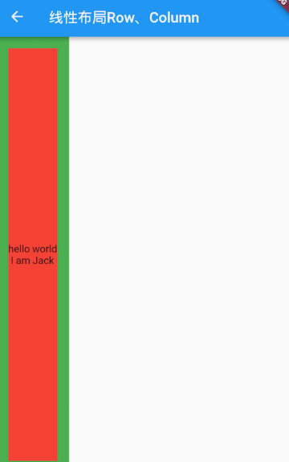
我们将在介绍弹性布局时详细介绍Expanded。
4.4 弹性布局（Flex）
弹性布局允许子组件按照一定比例来分配父容器空间。弹性布局的概念在其他UI系统中也都存在，如 H5 中的弹性盒子布局，Android中 的FlexboxLayout等。Flutter 中的弹性布局主要通过Flex和Expanded来配合实现。
4.4.1 Flex
Flex组件可以沿着水平或垂直方向排列子组件，如果你知道主轴方向，使用Row或Column会方便一些，因为Row和Column都继承自Flex，参数基本相同，所以能使用Flex的地方基本上都可以使用Row或Column。Flex本身功能是很强大的，它也可以和Expanded组件配合实现弹性布局。接下来我们只讨论Flex和弹性布局相关的属性(其他属性已经在介绍Row和Column时介绍过了)。
Flex({
...
required this.direction, //弹性布局的方向, Row默认为水平方向，Column默认为垂直方向
List<Widget> children = const <Widget>[],
})
Flex继承自MultiChildRenderObjectWidget，对应的RenderObject为RenderFlex，RenderFlex中实现了其布局算法。
4.4.2 Expanded
Expanded 只能作为 Flex 的孩子（否则会报错），它可以按比例“扩伸”Flex子组件所占用的空间。因为 Row和Column 都继承自 Flex，所以 Expanded 也可以作为它们的孩子。
const Expanded({
int flex = 1,
required Widget child,
})
flex参数为弹性系数，如果为 0 或null，则child是没有弹性的，即不会被扩伸占用的空间。如果大于0，所有的Expanded按照其 flex 的比例来分割主轴的全部空闲空间。下面我们看一个例子：
class FlexLayoutTestRoute extends StatelessWidget {
@override
Widget build(BuildContext context) {
return Column(
children: <Widget>[
//Flex的两个子widget按1：2来占据水平空间
Flex(
direction: Axis.horizontal,
children: <Widget>[
Expanded(
flex: 1,
child: Container(
height: 30.0,
color: Colors.red,
),
),
Expanded(
flex: 2,
child: Container(
height: 30.0,
color: Colors.green,
),
),
],
),
Padding(
padding: const EdgeInsets.only(top: 20.0),
child: SizedBox(
height: 100.0,
//Flex的三个子widget，在垂直方向按2：1：1来占用100像素的空间
child: Flex(
direction: Axis.vertical,
children: <Widget>[
Expanded(
flex: 2,
child: Container(
height: 30.0,
color: Colors.red,
),
),
Spacer(
flex: 1,
),
Expanded(
flex: 1,
child: Container(
height: 30.0,
color: Colors.green,
),
),
],
),
),
),
],
);
}
}
运行效果如图4-13所示：

示例中的Spacer的功能是占用指定比例的空间，实际上它只是Expanded的一个包装类，Spacer的源码如下：
class Spacer extends StatelessWidget {
const Spacer({Key? key, this.flex = 1})
: assert(flex != null),
assert(flex > 0),
super(key: key);
final int flex;
@override
Widget build(BuildContext context) {
return Expanded(
flex: flex,
child: const SizedBox.shrink(),
);
}
}
4.4.3 小结
弹性布局比较简单，唯一需要注意的就是Row、Column以及Flex的关系。
4.5 流式布局（Wrap、Flow）
在介绍 Row 和 Column 时，如果子 widget 超出屏幕范围，则会报溢出错误，如：
Row(
children: <Widget>[
Text("xxx"*100)
],
);
运行效果如图4-14所示：

可以看到，右边溢出部分报错。这是因为Row默认只有一行，如果超出屏幕不会折行。我们把超出屏幕显示范围会自动折行的布局称为流式布局。Flutter中通过Wrap和Flow来支持流式布局，将上例中的 Row 换成Wrap后溢出部分则会自动折行，下面我们分别介绍Wrap和Flow.
4.5.1 Wrap
下面是Wrap的定义:
Wrap({
...
this.direction = Axis.horizontal,
this.alignment = WrapAlignment.start,
this.spacing = 0.0,
this.runAlignment = WrapAlignment.start,
this.runSpacing = 0.0,
this.crossAxisAlignment = WrapCrossAlignment.start,
this.textDirection,
this.verticalDirection = VerticalDirection.down,
List<Widget> children = const <Widget>[],
})
我们可以看到Wrap的很多属性在Row（包括Flex和Column）中也有，如direction、crossAxisAlignment、textDirection、verticalDirection等，这些参数意义是相同的，我们不再重复介绍，读者可以查阅前面介绍Row的部分。读者可以认为Wrap和Flex（包括Row和Column）除了超出显示范围后Wrap会折行外，其他行为基本相同。下面我们看一下Wrap特有的几个属性：
spacing：主轴方向子widget的间距runSpacing：纵轴方向的间距runAlignment：纵轴方向的对齐方式
下面看一个示例子：
Wrap(
spacing: 8.0, // 主轴(水平)方向间距
runSpacing: 4.0, // 纵轴（垂直）方向间距
alignment: WrapAlignment.center, //沿主轴方向居中
children: <Widget>[
Chip(
avatar: CircleAvatar(backgroundColor: Colors.blue, child: Text('A')),
label: Text('Hamilton'),
),
Chip(
avatar: CircleAvatar(backgroundColor: Colors.blue, child: Text('M')),
label: Text('Lafayette'),
),
Chip(
avatar: CircleAvatar(backgroundColor: Colors.blue, child: Text('H')),
label: Text('Mulligan'),
),
Chip(
avatar: CircleAvatar(backgroundColor: Colors.blue, child: Text('J')),
label: Text('Laurens'),
),
],
)
运行效果如图4-15所示：

4.5.2 Flow
我们一般很少会使用Flow，因为其过于复杂，需要自己实现子 widget 的位置转换，在很多场景下首先要考虑的是Wrap是否满足需求。Flow主要用于一些需要自定义布局策略或性能要求较高(如动画中)的场景。Flow有如下优点：
- 性能好；
Flow是一个对子组件尺寸以及位置调整非常高效的控件，Flow用转换矩阵在对子组件进行位置调整的时候进行了优化：在Flow定位过后，如果子组件的尺寸或者位置发生了变化，在FlowDelegate中的paintChildren()方法中调用context.paintChild进行重绘，而context.paintChild在重绘时使用了转换矩阵，并没有实际调整组件位置。 - 灵活；由于我们需要自己实现
FlowDelegate的paintChildren()方法，所以我们需要自己计算每一个组件的位置，因此，可以自定义布局策略。
缺点：
- 使用复杂。
- Flow 不能自适应子组件大小，必须通过指定父容器大小或实现
TestFlowDelegate的getSize返回固定大小。
示例：
我们对六个色块进行自定义流式布局：
Flow(
delegate: TestFlowDelegate(margin: EdgeInsets.all(10.0)),
children: <Widget>[
Container(width: 80.0, height:80.0, color: Colors.red,),
Container(width: 80.0, height:80.0, color: Colors.green,),
Container(width: 80.0, height:80.0, color: Colors.blue,),
Container(width: 80.0, height:80.0, color: Colors.yellow,),
Container(width: 80.0, height:80.0, color: Colors.brown,),
Container(width: 80.0, height:80.0, color: Colors.purple,),
],
)
实现TestFlowDelegate:
class TestFlowDelegate extends FlowDelegate {
EdgeInsets margin;
TestFlowDelegate({this.margin = EdgeInsets.zero});
double width = 0;
double height = 0;
@override
void paintChildren(FlowPaintingContext context) {
var x = margin.left;
var y = margin.top;
//计算每一个子widget的位置
for (int i = 0; i < context.childCount; i++) {
var w = context.getChildSize(i)!.width + x + margin.right;
if (w < context.size.width) {
context.paintChild(i, transform: Matrix4.translationValues(x, y, 0.0));
x = w + margin.left;
} else {
x = margin.left;
y += context.getChildSize(i)!.height + margin.top + margin.bottom;
//绘制子widget(有优化)
context.paintChild(i, transform: Matrix4.translationValues(x, y, 0.0));
x += context.getChildSize(i)!.width + margin.left + margin.right;
}
}
}
@override
Size getSize(BoxConstraints constraints) {
// 指定Flow的大小，简单起见我们让宽度尽可能大，但高度指定为200，
// 实际开发中我们需要根据子元素所占用的具体宽高来设置Flow大小
return Size(double.infinity, 200.0);
}
@override
bool shouldRepaint(FlowDelegate oldDelegate) {
return oldDelegate != this;
}
}
运行效果见图4-16：

可以看到我们主要的任务就是实现paintChildren，它的主要任务是确定每个子widget位置。由于Flow不能自适应子widget的大小，我们通过在getSize返回一个固定大小来指定Flow的大小。
注意，如果我们需要自定义布局策略，一般首选的方式是通过直接继承RenderObject，然后通过重写 performLayout 的方式实现，具体方式我们会在本书后面14.4 布局（Layout）一节中举例说明。
4.6 层叠布局（Stack、Positioned）
层叠布局和 Web 中的绝对定位、Android 中的 Frame 布局是相似的，子组件可以根据距父容器四个角的位置来确定自身的位置。层叠布局允许子组件按照代码中声明的顺序堆叠起来。Flutter中使用Stack和Positioned这两个组件来配合实现绝对定位。Stack允许子组件堆叠，而Positioned用于根据Stack的四个角来确定子组件的位置。
4.6.1 Stack
Stack组件定义如下：
Stack({
this.alignment = AlignmentDirectional.topStart,
this.textDirection,
this.fit = StackFit.loose,
this.clipBehavior = Clip.hardEdge,
List<Widget> children = const <Widget>[],
})
alignment：此参数决定如何去对齐没有定位（没有使用Positioned）或部分定位的子组件。所谓部分定位，在这里特指没有在某一个轴上定位：left、right为横轴，top、bottom为纵轴，只要包含某个轴上的一个定位属性就算在该轴上有定位。textDirection：和Row、Wrap的textDirection功能一样，都用于确定alignment对齐的参考系，即：textDirection的值为TextDirection.ltr，则alignment的start代表左，end代表右，即从左往右的顺序；textDirection的值为TextDirection.rtl，则alignment的start代表右，end代表左，即从右往左的顺序。fit：此参数用于确定没有定位的子组件如何去适应Stack的大小。StackFit.loose表示使用子组件的大小，StackFit.expand表示扩伸到Stack的大小。clipBehavior：此属性决定对超出Stack显示空间的部分如何剪裁，Clip枚举类中定义了剪裁的方式，Clip.hardEdge 表示直接剪裁，不应用抗锯齿，更多信息可以查看源码注释。
4.6.2 Positioned
Positioned 的默认构造函数如下：
const Positioned({
Key? key,
this.left,
this.top,
this.right,
this.bottom,
this.width,
this.height,
required Widget child,
})
left、top 、right、 bottom分别代表离Stack左、上、右、底四边的距离。width和height用于指定需要定位元素的宽度和高度。注意，Positioned的width、height 和其他地方的意义稍微有点区别，此处用于配合left、top 、right、 bottom来定位组件，举个例子，在水平方向时，你只能指定left、right、width三个属性中的两个，如指定left和width后，right会自动算出(left+width)，如果同时指定三个属性则会报错，垂直方向同理。
4.6.3 示例
在下面的例子中，我们通过对几个Text组件的定位来演示Stack和Positioned的特性：
//通过ConstrainedBox来确保Stack占满屏幕
ConstrainedBox(
constraints: BoxConstraints.expand(),
child: Stack(
alignment:Alignment.center , //指定未定位或部分定位widget的对齐方式
children: <Widget>[
Container(
child: Text("Hello world",style: TextStyle(color: Colors.white)),
color: Colors.red,
),
Positioned(
left: 18.0,
child: Text("I am Jack"),
),
Positioned(
top: 18.0,
child: Text("Your friend"),
)
],
),
);
运行效果见图4-17：

由于第一个子文本组件Text("Hello world")没有指定定位，并且alignment值为Alignment.center，所以它会居中显示。第二个子文本组件Text("I am Jack")只指定了水平方向的定位(left)，所以属于部分定位，即垂直方向上没有定位，那么它在垂直方向的对齐方式则会按照alignment指定的对齐方式对齐，即垂直方向居中。对于第三个子文本组件Text("Your friend")，和第二个Text原理一样，只不过是水平方向没有定位，则水平方向居中。
我们给上例中的Stack指定一个fit属性，然后将三个子文本组件的顺序调整一下：
Stack(
alignment:Alignment.center ,
fit: StackFit.expand, //未定位widget占满Stack整个空间
children: <Widget>[
Positioned(
left: 18.0,
child: Text("I am Jack"),
),
Container(child: Text("Hello world",style: TextStyle(color: Colors.white)),
color: Colors.red,
),
Positioned(
top: 18.0,
child: Text("Your friend"),
)
],
),
显示效果如图4-18所示：

可以看到，由于第二个子文本组件没有定位，所以fit属性会对它起作用，就会占满Stack。由于Stack子元素是堆叠的，所以第一个子文本组件被第二个遮住了，而第三个在最上层，所以可以正常显示。
4.7 对齐与相对定位（Align）
在上一节中我们讲过通过Stack和Positioned，我们可以指定一个或多个子元素相对于父元素各个边的精确偏移，并且可以重叠。但如果我们只想简单的调整一个子元素在父元素中的位置的话，使用Align组件会更简单一些。
4.7.1 Align
Align 组件可以调整子组件的位置，定义如下：
Align({
Key key,
this.alignment = Alignment.center,
this.widthFactor,
this.heightFactor,
Widget child,
})
alignment: 需要一个AlignmentGeometry类型的值，表示子组件在父组件中的起始位置。AlignmentGeometry是一个抽象类，它有两个常用的子类：Alignment和FractionalOffset，我们将在下面的示例中详细介绍。widthFactor和heightFactor是用于确定Align组件本身宽高的属性；它们是两个缩放因子，会分别乘以子元素的宽、高，最终的结果就是Align组件的宽高。如果值为null，则组件的宽高将会占用尽可能多的空间。
1. 示例
我们先来看一个简单的例子：
Container(
height: 120.0,
width: 120.0,
color: Colors.blue.shade50,
child: Align(
alignment: Alignment.topRight,
child: FlutterLogo(
size: 60,
),
),
)
运行效果如图4-19所示：

FlutterLogo 是Flutter SDK 提供的一个组件，内容就是 Flutter 的 logo 。在上面的例子中，我们显式指定了Container的宽、高都为 120。如果我们不显式指定宽高，而通过同时指定widthFactor和heightFactor 为 2 也是可以达到同样的效果：
Align(
widthFactor: 2,
heightFactor: 2,
alignment: Alignment.topRight,
child: FlutterLogo(
size: 60,
),
),
因为FlutterLogo的宽高为 60，则Align的最终宽高都为2*60=120。
另外，我们通过Alignment.topRight将FlutterLogo定位在Container的右上角。那Alignment.topRight是什么呢？通过源码我们可以看到其定义如下：
//右上角
static const Alignment topRight = Alignment(1.0, -1.0);
可以看到它只是Alignment的一个实例，下面我们介绍一下Alignment。
2. Alignment
Alignment继承自AlignmentGeometry，表示矩形内的一个点，他有两个属性x、y，分别表示在水平和垂直方向的偏移，Alignment定义如下：
Alignment(this.x, this.y)
Alignment Widget会以矩形的中心点作为坐标原点，即Alignment(0.0, 0.0) 。x、y的值从-1到1分别代表矩形左边到右边的距离和顶部到底边的距离，因此2个水平（或垂直）单位则等于矩形的宽（或高），如Alignment(-1.0, -1.0) 代表矩形的左侧顶点，而Alignment(1.0, 1.0)代表右侧底部终点，而Alignment(1.0, -1.0) 则正是右侧顶点，即Alignment.topRight。为了使用方便，矩形的原点、四个顶点，以及四条边的终点在Alignment类中都已经定义为了静态常量。
Alignment可以通过其坐标转换公式将其坐标转为子元素的具体偏移坐标：
实际偏移 = (Alignment.x * (parentWidth - childWidth) / 2 + (parentWidth - childWidth) / 2,
Alignment.y * (parentHeight - childHeight) / 2 + (parentHeight - childHeight) / 2)
其中childWidth为子元素的宽度，childHeight为子元素高度。
现在我们再看看上面的示例，我们将Alignment(1.0, -1.0)带入上面公式，可得FlutterLogo的实际偏移坐标正是（60，0）。下面再看一个例子：
Align(
widthFactor: 2,
heightFactor: 2,
alignment: Alignment(2,0.0),
child: FlutterLogo(
size: 60,
),
)
我们可以先想象一下运行效果：将Alignment(2,0.0)带入上述坐标转换公式，可以得到FlutterLogo的实际偏移坐标为（90，30）。实际运行如图4-20所示：

3. FractionalOffset
FractionalOffset 继承自 Alignment ，它和 Alignment 唯一的区别就是坐标原点不同！FractionalOffset 的坐标原点为矩形的左侧顶点，这和布局系统的一致，所以理解起来会比较容易。FractionalOffset的坐标转换公式为：
实际偏移 = (FractionalOffse.x * (parentWidth - childWidth), FractionalOffse.y * (parentHeight - childHeight))
下面看一个例子：
Container(
height: 120.0,
width: 120.0,
color: Colors.blue[50],
child: Align(
alignment: FractionalOffset(0.2, 0.6),
child: FlutterLogo(
size: 60,
),
),
)
实际运行效果如图4-21所示下：
我们将FractionalOffset(0.2, 0.6)带入坐标转换公式得FlutterLogo实际偏移为（12，36），和实际运行效果吻合。
4.7.2 Align和Stack对比
可以看到，Align和Stack/Positioned都可以用于指定子元素相对于父元素的偏移，但它们还是有两个主要区别：
- 定位参考系统不同；
Stack/Positioned定位的参考系可以是父容器矩形的四个顶点；而Align则需要先通过alignment参数来确定坐标原点，不同的alignment会对应不同原点，最终的偏移是需要通过alignment的转换公式来计算出。 Stack可以有多个子元素，并且子元素可以堆叠，而Align只能有一个子元素，不存在堆叠。
4.7.3 Center组件
我们在前面章节的例子中已经使用过Center组件来居中子元素了，现在我们正式来介绍一下它。通过查找SDK源码，我们看到Center组件定义如下：
class Center extends Align {
const Center({ Key? key, double widthFactor, double heightFactor, Widget? child })
: super(key: key, widthFactor: widthFactor, heightFactor: heightFactor, child: child);
}
可以看到Center继承自Align，它比Align只少了一个alignment 参数；由于Align的构造函数中alignment 值为Alignment.center，所以，我们可以认为Center组件其实是对齐方式确定（Alignment.center）了的Align。
上面我们讲过当widthFactor或heightFactor为null时组件的宽高将会占用尽可能多的空间，这一点需要特别注意，我们通过一个示例说明：
...//省略无关代码
DecoratedBox(
decoration: BoxDecoration(color: Colors.red),
child: Center(
child: Text("xxx"),
),
),
DecoratedBox(
decoration: BoxDecoration(color: Colors.red),
child: Center(
widthFactor: 1,
heightFactor: 1,
child: Text("xxx"),
),
)
运行效果如图4-22所示：

4.7.4 总结
本节重点介绍了Align组件及两种偏移类Alignment 和FractionalOffset，读者需要理解这两种偏移类的区别及各自的坐标转化公式。另外，在此建议读者在需要制定一些精确的偏移时应优先使用FractionalOffset，因为它的坐标原点和布局系统相同，能更容易算出实际偏移。
在后面，我们又介绍了Align组件和Stack/Positioned、Center的关系，读者可以对比理解。
还有，熟悉Web开发的同学可能会发现Align组件的特性和Web开发中相对定位（position: relative）非常像，是的！在大多数时候，我们可以直接使用Align组件来实现Web中相对定位的效果，读者可以类比记忆。
4.8 LayoutBuilder、AfterLayout
4.8.1 LayoutBuilder
通过 LayoutBuilder，我们可以在布局过程中拿到父组件传递的约束信息，然后我们可以根据约束信息动态的构建不同的布局。
比如我们实现一个响应式的 Column 组件 ResponsiveColumn，它的功能是当当前可用的宽度小于 200 时，将子组件显示为一列，否则显示为两列。简单来实现一下：
class ResponsiveColumn extends StatelessWidget {
const ResponsiveColumn({Key? key, required this.children}) : super(key: key);
final List<Widget> children;
@override
Widget build(BuildContext context) {
// 通过 LayoutBuilder 拿到父组件传递的约束，然后判断 maxWidth 是否小于200
return LayoutBuilder(
builder: (BuildContext context, BoxConstraints constraints) {
if (constraints.maxWidth < 200) {
// 最大宽度小于200，显示单列
return Column(children: children, mainAxisSize: MainAxisSize.min);
} else {
// 大于200，显示双列
var _children = <Widget>[];
for (var i = 0; i < children.length; i += 2) {
if (i + 1 < children.length) {
_children.add(Row(
children: [children[i], children[i + 1]],
mainAxisSize: MainAxisSize.min,
));
} else {
_children.add(children[i]);
}
}
return Column(children: _children, mainAxisSize: MainAxisSize.min);
}
},
);
}
}
class LayoutBuilderRoute extends StatelessWidget {
const LayoutBuilderRoute({Key? key}) : super(key: key);
@override
Widget build(BuildContext context) {
var _children = List.filled(6, Text("A"));
// Column在本示例中在水平方向的最大宽度为屏幕的宽度
return Column(
children: [
// 限制宽度为190，小于 200
SizedBox(width: 190, child: ResponsiveColumn(children: _children)),
ResponsiveColumn(children: _children),
LayoutLogPrint(child:Text("xx")) // 下面介绍
],
);
}
}
可以发现 LayoutBuilder 的使用很简单，但是不要小看它，因为它非常实用且重要，它主要有两个使用场景：
- 可以使用 LayoutBuilder 来根据设备的尺寸来实现响应式布局。
- LayoutBuilder 可以帮我们高效排查问题。比如我们在遇到布局问题或者想调试组件树中某一个节点布局的约束时 LayoutBuilder 就很有用。
打印布局时的约束信息
为了便于排错，我们封装一个能打印父组件传递给子组件约束的组件：
class LayoutLogPrint<T> extends StatelessWidget {
const LayoutLogPrint({
Key? key,
this.tag,
required this.child,
}) : super(key: key);
final Widget child;
final T? tag; //指定日志tag
@override
Widget build(BuildContext context) {
return LayoutBuilder(builder: (_, constraints) {
// assert在编译release版本时会被去除
assert(() {
print('${tag ?? key ?? child}: $constraints');
return true;
}());
return child;
});
}
}
这样，我们就可以使用 LayoutLogPrint 组件树中任意位置的约束信息，比如：
LayoutLogPrint(child:Text("xx"))
控制台输出：
flutter: Text("xx"): BoxConstraints(0.0<=w<=428.0, 0.0<=h<=823.0)
可以看到 Text("xx") 的显示空间最大宽度为 428，最大高度为 823 。
注意！我们的大前提是盒模型布局，如果是Sliver 布局，可以使用 SliverLayoutBuiler 来打印。
完整的示例运行后效果如图4-23：

4.8.2 AfterLayout
1. 获取组件大小和相对于屏幕的坐标
Flutter 是响应式UI框架，而命令式UI框架最大的不同就是：大多数情况下开发者只需要关注数据的变化，数据变化后框架会自动重新构建UI而不需要开发者手动去操作每一个组件，所以我们会发现 Widget 会被定义为不可变的（immutable），并且没有提供任何操作组件的 API，因此如果我们想在 Flutter 中获取某个组件的大小和位置就会很困难，当然大多数情况下不会有这个需求，但总有一些场景会需要，而在命令式UI框架中是不会存在这个问题的。
我们知道，只有当布局完成时，每个组件的大小和位置才能确定，所以获取的时机肯定是布局完成后，那布局完成的时机如何获取呢？至少事件分发肯定是在布局完成之后的，比如：
Builder(
builder: (context) {
return GestureDetector(
child: Text('flutter@wendux'),
onTap: () => print(context.size), //打印 text 的大小
);
},
),
context.size 可以获取当前上下文 RenderObject 的大小，对于Builder、StatelessWidget 以及 StatefulWidget 这样没有对应 RenderObject 的组件（这些组件只是用于组合和代理组件，本身并没有布局和绘制逻辑），获取的是子代中第一个拥有 RenderObject 组件的 RenderObject 对象。
虽然事件点击时可以拿到组件大小，但有两个问题，第一是需要用户手动触发，第二是时机较晚，更多的时候我们更希望在布局一结束就去获取大小和位置信息，为了解决这个问题，笔者封装了一个 AfterLayout 组件，它可以在子组件布局完成后执行一个回调，并同时将 RenderObject 对象作为参数传递。
注意：AfterLayout 是笔者自定义的组件，并非 Flutter 组件库中自带组件，读者可以在随书源码中查看实现源码和示例，本节主要讲它的功能， AfterLayout 的实现原理我们将在本书后面布局原理相关章节中介绍。
示例：
AfterLayout(
callback: (RenderAfterLayout ral) {
print(ral.size); //子组件的大小
print(ral.offset);// 子组件在屏幕中坐标
},
child: Text('flutter@wendux'),
),
运行后控制台输出：
flutter: Size(105.0, 17.0)
flutter: Offset(42.5, 290.0)
可以看到 Text 文本的实际长度是 105，高度是 17，它的起始位置坐标是（42.5, 290.0）。
2. 获取组件相对于某个父组件的坐标
RenderAfterLayout 类继承自 RenderBox，RenderBox 有一个 localToGlobal 方法，它可以将坐标转化为相对与指定的祖先节点的坐标，比如下面代码可以打印出 Text('A') 在 父 Container 中的坐标
Builder(builder: (context) {
return Container(
color: Colors.grey.shade200,
alignment: Alignment.center,
width: 100,
height: 100,
child: AfterLayout(
callback: (RenderAfterLayout ral) {
Offset offset = ral.localToGlobal(
Offset.zero,
// 传一个父级元素
ancestor: context.findRenderObject(),
);
print('A 在 Container 中占用的空间范围为：${offset & ral.size}');
},
child: Text('A'),
),
);
}),
3. AfterLayout 实例
下面我们看一个 AfterLayout 的测试示例：
class AfterLayoutRoute extends StatefulWidget {
const AfterLayoutRoute({Key? key}) : super(key: key);
@override
_AfterLayoutRouteState createState() => _AfterLayoutRouteState();
}
class _AfterLayoutRouteState extends State<AfterLayoutRoute> {
String _text = 'flutter 实战 ';
Size _size = Size.zero;
@override
Widget build(BuildContext context) {
return Column(
mainAxisSize: MainAxisSize.min,
children: [
Padding(
padding: const EdgeInsets.all(8.0),
child: Builder(
builder: (context) {
return GestureDetector(
child: Text(
'Text1: 点我获取我的大小',
textAlign: TextAlign.center,
style: TextStyle(color: Colors.blue),
),
onTap: () => print('Text1: ${context.size}'),
);
},
),
),
AfterLayout(
callback: (RenderAfterLayout ral) {
print('Text2： ${ral.size}, ${ral.offset}');
},
child: Text('Text2：flutter@wendux'),
),
Builder(builder: (context) {
return Container(
color: Colors.grey.shade200,
alignment: Alignment.center,
width: 100,
height: 100,
child: AfterLayout(
callback: (RenderAfterLayout ral) {
Offset offset = ral.localToGlobal(
Offset.zero,
ancestor: context.findRenderObject(),
);
print('A 在 Container 中占用的空间范围为：${offset & ral.size}');
},
child: Text('A'),
),
);
}),
Divider(),
AfterLayout(
child: Text(_text),
callback: (RenderAfterLayout value) {
setState(() {
//更新尺寸信息
_size = value.size;
});
},
),
//显示上面 Text 的尺寸
Padding(
padding: const EdgeInsets.symmetric(vertical: 8.0),
child: Text(
'Text size: $_size ',
style: TextStyle(color: Colors.blue),
),
),
ElevatedButton(
onPressed: () {
setState(() {
_text += 'flutter 实战 ';
});
},
child: Text('追加字符串'),
),
],
);
}
}
运行后效果如图4-24所示：

运行后点击 Text1 就可以在日志面板看到它的大小。点击 “追加字符串” 按钮，字符串大小变化后，屏幕上上也会显示变化后的文本区域大小（按钮上方挨着）。
4.8.3 Flutter 的 build 和 layout
通过观察 LayoutBuilder 的示例，我们还可以发现一个关于 Flutter 构建（build）和 布局（layout）的结论：Flutter 的build 和 layout 是可以交错执行的，并不是严格的按照先 build 再 layout 的顺序。比如在上例中 ，在build过程中遇到了 LayoutBuilder 组件，而 LayoutBuilder的 builder 是在 layout 阶段执行的（layout阶段才能取到布局过程的约束信息），在 builder 中新建了一个 widget 后，Flutter 框架随后会调用该 widget 的 build 方法，又进入了build阶段。
容器类Widget
容器类Widget和布局类Widget都作用于其子Widget，不同的是：
- 布局类Widget一般都需要接收一个widget数组（children），他们直接或间接继承自（或包含）MultiChildRenderObjectWidget ；而容器类Widget一般只需要接收一个子Widget（child），他们直接或间接继承自（或包含）SingleChildRenderObjectWidget。
- 布局类Widget是按照一定的排列方式来对其子Widget进行排列；而容器类Widget一般只是包装其子Widget，对其添加一些修饰（补白或背景色等）、变换(旋转或剪裁等)、或限制(大小等)。
注意，Flutter官方并没有对Widget进行官方分类，我们对其分类主要是为了方便讨论和对Widget功能区分的记忆。
本章目录
- 5.1：填充（Padding）
- 5.2：装饰容器（DecoratedBox）
- 5.3：变换（Transform）
- 5.4：Container容器
- 5.5：剪裁（Clip）
- 5.6：空间适配FittedBox
- 5.7：页面骨架Scaffold
5.1 填充（Padding）
5.1.1 Padding
Padding可以给其子节点添加填充（留白），和边距效果类似。我们在前面很多示例中都已经使用过它了，现在来看看它的定义：
Padding({
...
EdgeInsetsGeometry padding,
Widget child,
})
EdgeInsetsGeometry是一个抽象类，开发中，我们一般都使用EdgeInsets类，它是EdgeInsetsGeometry的一个子类，定义了一些设置填充的便捷方法。
5.1.2 EdgeInsets
我们看看EdgeInsets提供的便捷方法：
fromLTRB(double left, double top, double right, double bottom)：分别指定四个方向的填充。all(double value): 所有方向均使用相同数值的填充。only({left, top, right ,bottom })：可以设置具体某个方向的填充(可以同时指定多个方向)。symmetric({ vertical, horizontal })：用于设置对称方向的填充，vertical指top和bottom，horizontal指left和right。
5.1.3 示例
下面的示例主要展示了EdgeInsets的不同用法，比较简单，源码如下：
class PaddingTestRoute extends StatelessWidget {
const PaddingTestRoute({Key? key}) : super(key: key);
@override
Widget build(BuildContext context) {
return Padding(
//上下左右各添加16像素补白
padding: const EdgeInsets.all(16),
child: Column(
//显式指定对齐方式为左对齐，排除对齐干扰
crossAxisAlignment: CrossAxisAlignment.start,
mainAxisSize: MainAxisSize.min,
children: const <Widget>[
Padding(
//左边添加8像素补白
padding: EdgeInsets.only(left: 8),
child: Text("Hello world"),
),
Padding(
//上下各添加8像素补白
padding: EdgeInsets.symmetric(vertical: 8),
child: Text("I am Jack"),
),
Padding(
// 分别指定四个方向的补白
padding: EdgeInsets.fromLTRB(20, 0, 20, 20),
child: Text("Your friend"),
)
],
),
);
}
}
运行效果如图5-1所示：

5.2 装饰容器（DecoratedBox）
5.2.1 DecoratedBox
DecoratedBox可以在其子组件绘制前(或后)绘制一些装饰（Decoration），如背景、边框、渐变等。DecoratedBox定义如下：
const DecoratedBox({
Decoration decoration,
DecorationPosition position = DecorationPosition.background,
Widget? child
})
decoration：代表将要绘制的装饰，它的类型为Decoration。Decoration是一个抽象类，它定义了一个接口createBoxPainter()，子类的主要职责是需要通过实现它来创建一个画笔，该画笔用于绘制装饰。position：此属性决定在哪里绘制Decoration，它接收DecorationPosition的枚举类型，该枚举类有两个值：background：在子组件之后绘制，即背景装饰。foreground：在子组件之上绘制，即前景。
5.2.2 BoxDecoration
我们通常会直接使用BoxDecoration类，它是一个Decoration的子类，实现了常用的装饰元素的绘制。
BoxDecoration({
Color color, //颜色
DecorationImage image,//图片
BoxBorder border, //边框
BorderRadiusGeometry borderRadius, //圆角
List<BoxShadow> boxShadow, //阴影,可以指定多个
Gradient gradient, //渐变
BlendMode backgroundBlendMode, //背景混合模式
BoxShape shape = BoxShape.rectangle, //形状
})
各个属性名都是自解释的，详情读者可以查看API文档。
5.2.3 实例
下面我们实现一个带阴影的背景色渐变的按钮：
DecoratedBox(
decoration: BoxDecoration(
gradient: LinearGradient(colors:[Colors.red,Colors.orange.shade700]), //背景渐变
borderRadius: BorderRadius.circular(3.0), //3像素圆角
boxShadow: [ //阴影
BoxShadow(
color:Colors.black54,
offset: Offset(2.0,2.0),
blurRadius: 4.0
)
]
),
child: Padding(
padding: EdgeInsets.symmetric(horizontal: 80.0, vertical: 18.0),
child: Text("Login", style: TextStyle(color: Colors.white),),
)
)
运行后效果如图5-2所示：

通过BoxDecoration我们实现了一个渐变按钮的外观，但此示例还不是一个标准的按钮，因为它还不能响应点击事件，我们将在10.2节中实现一个完整功能的GradientButton。另外，上面的例子中使用了LinearGradient类，它用于定义线性渐变的类，Flutter中还提供了其他渐变配置类，如RadialGradient、SweepGradient，读者若有需要可以自行查看API文档。
5.3 变换（Transform）
Transform可以在其子组件绘制时对其应用一些矩阵变换来实现一些特效。Matrix4是一个4D矩阵，通过它我们可以实现各种矩阵操作，下面是一个例子：
Container(
color: Colors.black,
child: Transform(
alignment: Alignment.topRight, //相对于坐标系原点的对齐方式
transform: Matrix4.skewY(0.3), //沿Y轴倾斜0.3弧度
child: Container(
padding: const EdgeInsets.all(8.0),
color: Colors.deepOrange,
child: const Text('Apartment for rent!'),
),
),
)
运行效果如图5-3所示：

关于矩阵变换的相关内容属于线性代数范畴，本书不做讨论，读者有兴趣可以自行了解。本书中，我们把焦点放在Flutter中一些常见的变换效果上。另外，由于矩阵变化时发生在绘制时，而无需重新布局和构建等过程，所以性能很好。
5.3.1 平移
Transform.translate接收一个offset参数，可以在绘制时沿x、y轴对子组件平移指定的距离。
DecoratedBox(
decoration:BoxDecoration(color: Colors.red),
//默认原点为左上角，左移20像素，向上平移5像素
child: Transform.translate(
offset: Offset(-20.0, -5.0),
child: Text("Hello world"),
),
)
效果如图5-4所示：

5.3.2 旋转
Transform.rotate可以对子组件进行旋转变换，如：
DecoratedBox(
decoration:BoxDecoration(color: Colors.red),
child: Transform.rotate(
//旋转90度
angle:math.pi/2 ,
child: Text("Hello world"),
),
)
注意：要使用math.pi需先进行如下导包。
import 'dart:math' as math;
效果如图5-5所示：

5.3.3 缩放
Transform.scale可以对子组件进行缩小或放大，如：
DecoratedBox(
decoration:BoxDecoration(color: Colors.red),
child: Transform.scale(
scale: 1.5, //放大到1.5倍
child: Text("Hello world")
)
);
效果如图5-6所示：

5.3.4 Transform 注意事项
-
Transform的变换是应用在绘制阶段，而并不是应用在布局(layout)阶段，所以无论对子组件应用何种变化，其占用空间的大小和在屏幕上的位置都是固定不变的，因为这些是在布局阶段就确定的。下面我们具体说明：Row( mainAxisAlignment: MainAxisAlignment.center, children: <Widget>[ DecoratedBox( decoration:BoxDecoration(color: Colors.red), child: Transform.scale(scale: 1.5, child: Text("Hello world") ) ), Text("你好", style: TextStyle(color: Colors.green, fontSize: 18.0),) ], )运行效果如图5-14所示：

由于第一个
Text应用变换(放大)后，其在绘制时会放大，但其占用的空间依然为红色部分，所以第二个Text会紧挨着红色部分，最终就会出现文字重合。 -
由于矩阵变化只会作用在绘制阶段，所以在某些场景下，在UI需要变化时，可以直接通过矩阵变化来达到视觉上的UI改变，而不需要去重新触发build流程，这样会节省layout的开销，所以性能会比较好。如之前介绍的
Flow组件，它内部就是用矩阵变换来更新UI，除此之外，Flutter的动画组件中也大量使用了Transform以提高性能。
思考题：使用
Transform对其子组件先进行平移然后再旋转和先旋转再平移，两者最终的效果一样吗？为什么？
5.3.5 RotatedBox
RotatedBox和Transform.rotate功能相似，它们都可以对子组件进行旋转变换，但是有一点不同：RotatedBox的变换是在layout阶段，会影响在子组件的位置和大小。我们将上面介绍Transform.rotate时的示例改一下：
Row(
mainAxisAlignment: MainAxisAlignment.center,
children: <Widget>[
DecoratedBox(
decoration: BoxDecoration(color: Colors.red),
//将Transform.rotate换成RotatedBox
child: RotatedBox(
quarterTurns: 1, //旋转90度(1/4圈)
child: Text("Hello world"),
),
),
Text("你好", style: TextStyle(color: Colors.green, fontSize: 18.0),)
],
),
效果如图5-8所示：

由于RotatedBox是作用于layout阶段，所以子组件会旋转90度（而不只是绘制的内容），decoration会作用到子组件所占用的实际空间上，所以最终就是上图的效果，读者可以和前面Transform.rotate示例对比理解。
5.4 容器组件（Container）
5.4.1 Container
我们在前面的章节示例中多次用到过Container组件，本节我们就详细介绍一下Container组件。Container是一个组合类容器，它本身不对应具体的RenderObject，它是DecoratedBox、ConstrainedBox、Transform、Padding、Align等组件组合的一个多功能容器，所以我们只需通过一个Container组件可以实现同时需要装饰、变换、限制的场景。下面是Container的定义：
Container({
this.alignment,
this.padding, //容器内补白，属于decoration的装饰范围
Color color, // 背景色
Decoration decoration, // 背景装饰
Decoration foregroundDecoration, //前景装饰
double width,//容器的宽度
double height, //容器的高度
BoxConstraints constraints, //容器大小的限制条件
this.margin,//容器外补白，不属于decoration的装饰范围
this.transform, //变换
this.child,
...
})
Container的大多数属性在介绍其他容器时都已经介绍过了，不再赘述，但有两点需要说明：
- 容器的大小可以通过
width、height属性来指定，也可以通过constraints来指定；如果它们同时存在时，width、height优先。实际上Container内部会根据width、height来生成一个constraints。 color和decoration是互斥的，如果同时设置它们则会报错！实际上，当指定color时，Container内会自动创建一个decoration。
5.4.2 实例
我们通过Container来实现如图5-9所示的卡片：
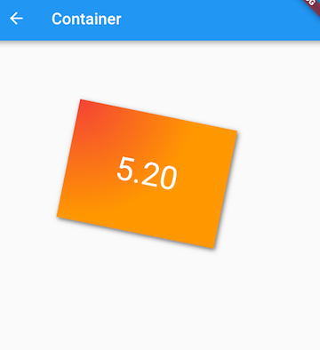
实现代码如下：
Container(
margin: EdgeInsets.only(top: 50.0, left: 120.0),
constraints: BoxConstraints.tightFor(width: 200.0, height: 150.0),//卡片大小
decoration: BoxDecoration( //背景装饰
gradient: RadialGradient( //背景径向渐变
colors: [Colors.red, Colors.orange],
center: Alignment.topLeft,
radius: .98,
),
boxShadow: [
//卡片阴影
BoxShadow(
color: Colors.black54,
offset: Offset(2.0, 2.0),
blurRadius: 4.0,
)
],
),
transform: Matrix4.rotationZ(.2),//卡片倾斜变换
alignment: Alignment.center, //卡片内文字居中
child: Text(
//卡片文字
"5.20", style: TextStyle(color: Colors.white, fontSize: 40.0),
),
)
可以看到Container具备多种组件的功能，通过查看Container源码，我们会很容易发现它正是前面我们介绍过的多种组件组合而成。在Flutter中，Container组件也正是组合优先于继承的实例。
5.4.3 Padding和Margin
接下来我们来研究一下Container组件margin和padding属性的区别:
...
Container(
margin: EdgeInsets.all(20.0), //容器外补白
color: Colors.orange,
child: Text("Hello world!"),
),
Container(
padding: EdgeInsets.all(20.0), //容器内补白
color: Colors.orange,
child: Text("Hello world!"),
),
...
效果如图 5-10 所示：
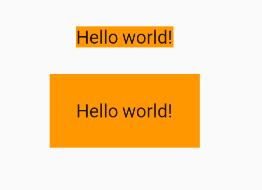
可以发现，直观的感觉就是margin的留白是在容器外部，而padding的留白是在容器内部，读者需要记住这个差异。事实上，Container内margin和padding都是通过Padding 组件来实现的，上面的示例代码实际上等价于：
...
Padding(
padding: EdgeInsets.all(20.0),
child: DecoratedBox(
decoration: BoxDecoration(color: Colors.orange),
child: Text("Hello world!"),
),
),
DecoratedBox(
decoration: BoxDecoration(color: Colors.orange),
child: Padding(
padding: const EdgeInsets.all(20.0),
child: Text("Hello world!"),
),
),
...
5.5 剪裁（Clip）
5.5.1 剪裁类组件
Flutter中提供了一些剪裁组件，用于对组件进行剪裁。
| 剪裁Widget | 默认行为 |
|---|---|
| ClipOval | 子组件为正方形时剪裁成内贴圆形；为矩形时，剪裁成内贴椭圆 |
| ClipRRect | 将子组件剪裁为圆角矩形 |
| ClipRect | 默认剪裁掉子组件布局空间之外的绘制内容（溢出部分剪裁） |
| ClipPath | 按照自定义的路径剪裁 |
下面看一个例子：
import 'package:flutter/material.dart';
class ClipTestRoute extends StatelessWidget {
@override
Widget build(BuildContext context) {
// 头像
Widget avatar = Image.asset("imgs/avatar.png", width: 60.0);
return Center(
child: Column(
children: <Widget>[
avatar, //不剪裁
ClipOval(child: avatar), //剪裁为圆形
ClipRRect( //剪裁为圆角矩形
borderRadius: BorderRadius.circular(5.0),
child: avatar,
),
Row(
mainAxisAlignment: MainAxisAlignment.center,
children: <Widget>[
Align(
alignment: Alignment.topLeft,
widthFactor: .5,//宽度设为原来宽度一半，另一半会溢出
child: avatar,
),
Text("你好世界", style: TextStyle(color: Colors.green),)
],
),
Row(
mainAxisAlignment: MainAxisAlignment.center,
children: <Widget>[
ClipRect(//将溢出部分剪裁
child: Align(
alignment: Alignment.topLeft,
widthFactor: .5,//宽度设为原来宽度一半
child: avatar,
),
),
Text("你好世界",style: TextStyle(color: Colors.green))
],
),
],
),
);
}
}
运行效果如图5-1所示：

上面示例代码注释比较详细，在此不再赘述。但值得一提的是最后的两个Row！它们通过Align设置widthFactor为0.5后，图片的实际宽度等于60×0.5，即原宽度一半，但此时图片溢出部分依然会显示，所以第一个“你好世界”会和图片的另一部分重合，为了剪裁掉溢出部分，我们在第二个Row中通过ClipRect将溢出部分剪裁掉了。
5.5.2 自定义裁剪（CustomClipper）
如果我们想剪裁子组件的特定区域，比如，在上面示例的图片中，如果我们只想截取图片中部40×30像素的范围应该怎么做？这时我们可以使用CustomClipper来自定义剪裁区域，实现代码如下：
首先，自定义一个CustomClipper：
class MyClipper extends CustomClipper<Rect> {
@override
Rect getClip(Size size) => Rect.fromLTWH(10.0, 15.0, 40.0, 30.0);
@override
bool shouldReclip(CustomClipper<Rect> oldClipper) => false;
}
getClip()是用于获取剪裁区域的接口，由于图片大小是60×60，我们返回剪裁区域为Rect.fromLTWH(10.0, 15.0, 40.0, 30.0)，即图片中部40×30像素的范围。shouldReclip()接口决定是否重新剪裁。如果在应用中，剪裁区域始终不会发生变化时应该返回false，这样就不会触发重新剪裁，避免不必要的性能开销。如果剪裁区域会发生变化（比如在对剪裁区域执行一个动画），那么变化后应该返回true来重新执行剪裁。
然后，我们通过ClipRect来执行剪裁，为了看清图片实际所占用的位置，我们设置一个红色背景：
DecoratedBox(
decoration: BoxDecoration(
color: Colors.red
),
child: ClipRect(
clipper: MyClipper(), //使用自定义的clipper
child: avatar
),
)
运行效果如图5-12所示：

可以看到我们的剪裁成功了，但是图片所占用的空间大小仍然是60×60（红色区域），这是因为组件大小是是在layout阶段确定的，而剪裁是在之后的绘制阶段进行的，所以不会影响组件的大小，这和Transform原理是相似的。
ClipPath 可以按照自定义的路径实现剪裁，它需要自定义一个CustomClipper<Path> 类型的 Clipper，定义方式和 MyClipper 类似，只不过 getClip 需要返回一个 Path，不再赘述。
5.6 空间适配（FittedBox）
5.6.1 FittedBox
子组件大小超出了父组件大小时，如果不经过处理的话 Flutter 中就会显示一个溢出警告并在控制台打印错误日志，比如下面代码会导致溢出：
Padding(
padding: const EdgeInsets.symmetric(vertical: 30.0),
child: Row(children: [Text('xx'*30)]), //文本长度超出 Row 的最大宽度会溢出
)
运行效果如图5-13所示：
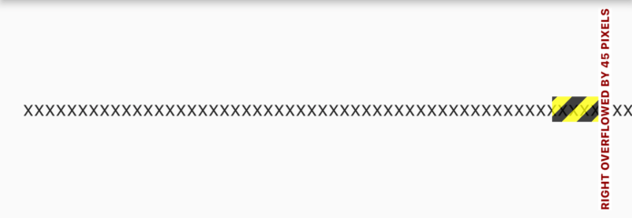
可以看到右边溢出了 45 像素。
上面只是一个例子，理论上我们经常会遇到子元素的大小超过他父容器的大小的情况，比如一张很大图片要在一个较小的空间显示，根据Flutter 的布局协议，父组件会将自身的最大显示空间作为约束传递给子组件，子组件应该遵守父组件的约束，如果子组件原始大小超过了父组件的约束区域，则需要进行一些缩小、裁剪或其他处理，而不同的组件的处理方式是特定的，比如 Text 组件，如果它的父组件宽度固定，高度不限的话，则默认情况下 Text 会在文本到达父组件宽度的时候换行。那如果我们想让 Text 文本在超过父组件的宽度时不要换行而是字体缩小呢？还有一种情况，比如父组件的宽高固定，而 Text 文本较少，这时候我们想让文本放大以填充整个父组件空间该怎么做呢？
实际上，上面这两个问题的本质就是：子组件如何适配父组件空间。而根据 Flutter 布局协议适配算法应该在容器或布局组件的 layout 中实现，为了方便开发者自定义适配规则，Flutter 提供了一个 FittedBox 组件，定义如下：
const FittedBox({
Key? key,
this.fit = BoxFit.contain, // 适配方式
this.alignment = Alignment.center, //对齐方式
this.clipBehavior = Clip.none, //是否剪裁
Widget? child,
})
适配原理
- FittedBox 在布局子组件时会忽略其父组件传递的约束，可以允许子组件无限大，即FittedBox 传递给子组件的约束为（0<=width<=double.infinity, 0<= height <=double.infinity）。
- FittedBox 对子组件布局结束后就可以获得子组件真实的大小。
- FittedBox 知道子组件的真实大小也知道他父组件的约束，那么FittedBox 就可以通过指定的适配方式（BoxFit 枚举中指定），让起子组件在 FittedBox 父组件的约束范围内按照指定的方式显示。
我们通过一个简单的例子说明：
Widget build(BuildContext context) {
return Center(
child: Column(
children: [
wContainer(BoxFit.none),
Text('Wendux'),
wContainer(BoxFit.contain),
Text('Flutter中国'),
],
),
);
}
Widget wContainer(BoxFit boxFit) {
return Container(
width: 50,
height: 50,
color: Colors.red,
child: FittedBox(
fit: boxFit,
// 子容器超过父容器大小
child: Container(width: 60, height: 70, color: Colors.blue),
),
);
}
运行后效果如图5-14所示：

因为父Container要比子Container 小，所以当没有指定任何适配方式时，子组件会按照其真实大小进行绘制，所以第一个蓝色区域会超出父组件的空间，因而看不到红色区域。第二个我们指定了适配方式为 BoxFit.contain，含义是按照子组件的比例缩放，尽可能多的占据父组件空间，因为子组件的长宽并不相同，所以按照比例缩放适配父组件后，父组件能显示一部分。
要注意一点，在未指定适配方式时，虽然 FittedBox 子组件的大小超过了 FittedBox 父 Container 的空间，但FittedBox 自身还是要遵守其父组件传递的约束，所以最终 FittedBox 的本身的大小是 50×50，这也是为什么蓝色会和下面文本重叠的原因，因为在布局空间内，父Container只占50×50的大小，接下来文本会紧挨着Container进行布局，而此时Container 中有子组件的大小超过了自己，所以最终的效果就是绘制范围超出了Container，但布局位置是正常的，所以就重叠了。如果我们不想让蓝色超出父组件布局范围，那么可以可以使用 ClipRect 对超出的部分剪裁掉即可：
ClipRect( // 将超出子组件布局范围的绘制内容剪裁掉
child: Container(
width: 50,
height: 50,
color: Colors.red,
child: FittedBox(
fit: boxFit,
child: Container(width: 60, height: 70, color: Colors.blue),
),
),
);
关于 BoxFit 的各种适配规则和 Image 的 fix 属性指定是一样的，读者可以查看我们在介绍 Image 组件时关于各种适配规则对应的效果。
5.6.2 实例：单行缩放布局
比如我们有三个数据指标，需要在一行显示，因为换行的话就会将我们的页面布局打乱，所以换行是不能接受的。因为不同设备的屏幕宽度不同，且不同人的数据也不同，所以就会出现数据太长或屏幕太窄时三个数据无法在一行显示，因此，我们希望当无法在一行显示时能够对组件进行适当的缩放以确保一行能够显示的下，为此我们写了一个测试 demo ：
@override
Widget build(BuildContext context) {
return Center(
child: Column(
children: [
wRow(' 90000000000000000 '),
FittedBox(child: wRow(' 90000000000000000 ')),
wRow(' 800 '),
FittedBox(child: wRow(' 800 ')),
]
.map((e) => Padding(
padding: EdgeInsets.symmetric(vertical: 20),
child: e,
))
.toList();,
),
);
}
// 直接使用Row
Widget wRow(String text) {
Widget child = Text(text);
child = Row(
mainAxisAlignment: MainAxisAlignment.spaceEvenly,
children: [child, child, child],
);
return child;
}
运行后效果如图5-15所示：
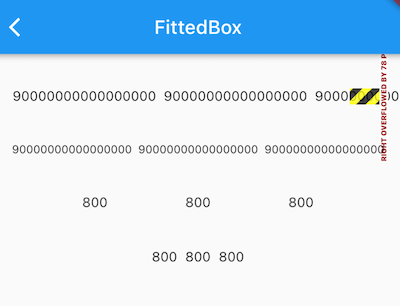
首先，因为我们给Row在主轴的对齐方式指定为MainAxisAlignment.spaceEvenly，这会将水平方向的剩余显示空间均分成多份穿插在每一个 child之间。
可以看到，当数字为' 90000000000000000 '时，三个数字的长度加起来已经超出了测试设备的屏幕宽度，所以直接使用 Row 会溢出，当给 Row 添加上如果加上 FittedBox时，就可以按比例缩放至一行显示，实现了我们预期的效果。但是当数字没有那么大时，比如下面的 ' 800 '，直接使用 Row 是可以的，但加上 FittedBox 后三个数字虽然也能正常显示，但是它们却挤在了一起，这不符合我们的期望。之所以会这样，原因其实很简单：在指定主轴对齐方式为 spaceEvenly 的情况下，Row 在进行布局时会拿到父组件的约束，如果约束的 maxWidth 不是无限大，则 Row 会根据子组件的数量和它们的大小在主轴方向来根据 spaceEvenly 填充算法来分割水平方向的长度，最终Row 的宽度为 maxWidth；但如果 maxWidth 为无限大时，就无法在进行分割了，所以此时 Row 就会将子组件的宽度之和作为自己的宽度。
回到示例中，当 Row 没有被 FittedBox 包裹时，此时父组件传给 Row 的约束的 maxWidth 为屏幕宽度，此时，Row 的宽度也就是屏幕宽度，而当被FittedBox 包裹时，FittedBox 传给 Row 的约束的 maxWidth 为无限大（double.infinity），因此Row 的最终宽度就是子组件的宽度之和。
父组件传递给子组件的约束可以用我们上一章中封装的 LayoutLogPrint 来打印出来：
LayoutLogPrint(tag: 1, child: wRow(' 800 ')),
FittedBox(child: LayoutLogPrint(tag: 2, child: wRow(' 800 '))),
运行后控制台日志如下：
flutter: 1: BoxConstraints(0.0<=w<=396.0, 0.0<=h<=Infinity)
flutter: 2: BoxConstraints(unconstrained)
问题原因找到了，那解决的思路就很简单了，我们只需要让FittedBox 子元素接收到的约束的 maxWidth 为屏幕宽度即可，为此我们封装了一个 SingleLineFittedBox 来替换 FittedBox 以达到我们预期的效果，实现如下：
class SingleLineFittedBox extends StatelessWidget {
const SingleLineFittedBox({Key? key,this.child}) : super(key: key);
final Widget? child;
@override
Widget build(BuildContext context) {
return LayoutBuilder(
builder: (_, constraints) {
return FittedBox(
child: ConstrainedBox(
constraints: constraints.copyWith(
//让 maxWidth 使用屏幕宽度
maxWidth: constraints.maxWidth
),
child: child,
),
);
},
);
}
}
测试代码改为:
wRow(' 90000000000000000 '),
SingleLineFittedBox(child: wRow(' 90000000000000000 ')),
wRow(' 800 '),
SingleLineFittedBox(child: wRow(' 800 ')),
运行后效果如图5-16所示:

返现 800 正常显示了，但用SingleLineFittedBox包裹的 ' 90000000000000000 ' 的那个 Row 却溢出了！溢出的原因其实也很简单，因为我们在 SingleLineFittedBox 中将传给 Row 的 maxWidth 置为屏幕宽度后，效果和不加SingleLineFittedBox 的效果是一样的，Row 收到父组件约束的 maxWidth 都是屏幕的宽度，所以搞了半天实现了个寂寞。但是，不要放弃，其实离胜利只有一步，只要我们稍加修改，就能实现我们的预期，话不多说，直接上代码：
class SingleLineFittedBox extends StatelessWidget {
const SingleLineFittedBox({Key? key,this.child}) : super(key: key);
final Widget? child;
@override
Widget build(BuildContext context) {
return LayoutBuilder(
builder: (_, constraints) {
return FittedBox(
child: ConstrainedBox(
constraints: constraints.copyWith(
minWidth: constraints.maxWidth,
maxWidth: double.infinity,
//maxWidth: constraints.maxWidth
),
child: child,
),
);
},
);
}
}
代码很简单，我们将最小宽度（minWidth）约束指定为屏幕宽度，因为Row必须得遵守父组件的约束，所以 Row 的宽度至少等于屏幕宽度，所以就不会出现缩在一起的情况；同时我们将 maxWidth 指定为无限大，则就可以处理数字总长度超出屏幕宽度的情况。
重新运行后如图5-17所示：

发现无论长数字还是短数字，我们的SingleLineFittedBox 都可以正常工作，大功告成！我们的组件库里面又多了一个组件 。
5.7 页面骨架（Scaffold）
Material 组件库提供了丰富多样的组件，本节介绍一下最常用的 Scaffold 组件，其余的读者可以自行查看文档或 Flutter Gallery 中 Material 组件部分的示例。
注意：Flutter Gallery是Flutter官方提供的Flutter Demo，源码位于flutter源码中的examples目录下，笔者强烈建议用户将Flutter Gallery示例跑起来，它是一个很全面的Flutter示例应用，是非常好的参考Demo，也是笔者学习Flutter的第一手资料。
5.7.1 Scaffold
一个完整的路由页可能会包含导航栏、抽屉菜单(Drawer)以及底部 Tab 导航菜单等。如果每个路由页面都需要开发者自己手动去实现这些，这会是一件非常麻烦且无聊的事。幸运的是，Flutter Material 组件库提供了一些现成的组件来减少我们的开发任务。Scaffold 是一个路由页的骨架，我们使用它可以很容易地拼装出一个完整的页面。
实例
我们实现一个页面，它包含：
- 一个导航栏
- 导航栏右边有一个分享按钮
- 有一个抽屉菜单
- 有一个底部导航
- 右下角有一个悬浮的动作按钮
最终效果如图5-18、图5-19所示：
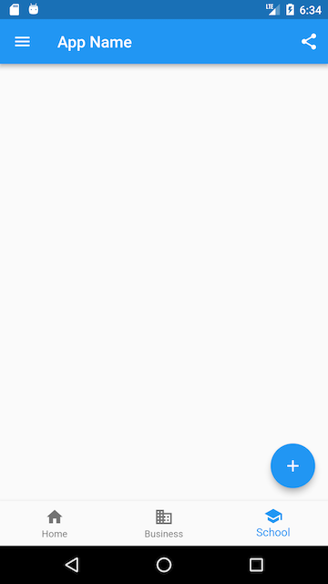 
实现代码如下：
class ScaffoldRoute extends StatefulWidget {
@override
_ScaffoldRouteState createState() => _ScaffoldRouteState();
}
class _ScaffoldRouteState extends State<ScaffoldRoute> {
int _selectedIndex = 1;
@override
Widget build(BuildContext context) {
return Scaffold(
appBar: AppBar( //导航栏
title: Text("App Name"),
actions: <Widget>[ //导航栏右侧菜单
IconButton(icon: Icon(Icons.share), onPressed: () {}),
],
),
drawer: MyDrawer(), //抽屉
bottomNavigationBar: BottomNavigationBar( // 底部导航
items: <BottomNavigationBarItem>[
BottomNavigationBarItem(icon: Icon(Icons.home), title: Text('Home')),
BottomNavigationBarItem(icon: Icon(Icons.business), title: Text('Business')),
BottomNavigationBarItem(icon: Icon(Icons.school), title: Text('School')),
],
currentIndex: _selectedIndex,
fixedColor: Colors.blue,
onTap: _onItemTapped,
),
floatingActionButton: FloatingActionButton( //悬浮按钮
child: Icon(Icons.add),
onPressed:_onAdd
),
);
}
void _onItemTapped(int index) {
setState(() {
_selectedIndex = index;
});
}
void _onAdd(){
}
}
上面代码中我们用到了如下组件：
| 组件名称 | 解释 |
|---|---|
| AppBar | 一个导航栏骨架 |
| MyDrawer | 抽屉菜单 |
| BottomNavigationBar | 底部导航栏 |
| FloatingActionButton | 漂浮按钮 |
下面我们来分别介绍一下它们。
5.7.2 AppBar
AppBar是一个Material风格的导航栏，通过它可以设置导航栏标题、导航栏菜单、导航栏底部的Tab标题等。下面我们看看AppBar的定义：
AppBar({
Key? key,
this.leading, //导航栏最左侧Widget，常见为抽屉菜单按钮或返回按钮。
this.automaticallyImplyLeading = true, //如果leading为null，是否自动实现默认的leading按钮
this.title,// 页面标题
this.actions, // 导航栏右侧菜单
this.bottom, // 导航栏底部菜单，通常为Tab按钮组
this.elevation = 4.0, // 导航栏阴影
this.centerTitle, //标题是否居中
this.backgroundColor,
... //其他属性见源码注释
})
如果给Scaffold添加了抽屉菜单，默认情况下Scaffold会自动将AppBar的leading设置为菜单按钮（如图5-8所示），点击它便可打开抽屉菜单。如果我们想自定义菜单图标，可以手动来设置leading，如：
Scaffold(
appBar: AppBar(
title: Text("App Name"),
leading: Builder(builder: (context) {
return IconButton(
icon: Icon(Icons.dashboard, color: Colors.white), //自定义图标
onPressed: () {
// 打开抽屉菜单
Scaffold.of(context).openDrawer();
},
);
}),
...
)
代码运行效果如图5-20所示：
可以看到左侧菜单已经替换成功。
代码中打开抽屉菜单的方法在ScaffoldState中，通过Scaffold.of(context)可以获取父级最近的Scaffold 组件的State对象。
5.7.3 抽屉菜单Drawer
Scaffold的drawer和endDrawer属性可以分别接受一个Widget来作为页面的左、右抽屉菜单。如果开发者提供了抽屉菜单，那么当用户手指从屏幕左（或右）侧向里滑动时便可打开抽屉菜单。本节开始部分的示例中实现了一个左抽屉菜单MyDrawer，它的源码如下：
class MyDrawer extends StatelessWidget {
const MyDrawer({
Key? key,
}) : super(key: key);
@override
Widget build(BuildContext context) {
return Drawer(
child: MediaQuery.removePadding(
context: context,
//移除抽屉菜单顶部默认留白
removeTop: true,
child: Column(
crossAxisAlignment: CrossAxisAlignment.start,
children: <Widget>[
Padding(
padding: const EdgeInsets.only(top: 38.0),
child: Row(
children: <Widget>[
Padding(
padding: const EdgeInsets.symmetric(horizontal: 16.0),
child: ClipOval(
child: Image.asset(
"imgs/avatar.png",
width: 80,
),
),
),
Text(
"Wendux",
style: TextStyle(fontWeight: FontWeight.bold),
)
],
),
),
Expanded(
child: ListView(
children: <Widget>[
ListTile(
leading: const Icon(Icons.add),
title: const Text('Add account'),
),
ListTile(
leading: const Icon(Icons.settings),
title: const Text('Manage accounts'),
),
],
),
),
],
),
),
);
}
}
抽屉菜单通常将Drawer组件作为根节点，它实现了Material风格的菜单面板，MediaQuery.removePadding可以移除Drawer默认的一些留白（比如Drawer默认顶部会留和手机状态栏等高的留白），读者可以尝试传递不同的参数来看看实际效果。抽屉菜单页由顶部和底部组成，顶部由用户头像和昵称组成，底部是一个菜单列表，用ListView实现，关于ListView我们将在6.3节中详细介绍。
5.7.4 FloatingActionButton
FloatingActionButton是Material设计规范中的一种特殊Button，通常悬浮在页面的某一个位置作为某种常用动作的快捷入口，如本节示例中页面右下角的"➕"号按钮。我们可以通过Scaffold的floatingActionButton属性来设置一个FloatingActionButton，同时通过floatingActionButtonLocation属性来指定其在页面中悬浮的位置，这个比较简单，不再赘述。
5.7.5 底部Tab导航栏
我们可以通过Scaffold的bottomNavigationBar属性来设置底部导航，如本节开始示例所示，我们通过Material组件库提供的BottomNavigationBar和BottomNavigationBarItem两种组件来实现Material风格的底部导航栏。可以看到上面的实现代码非常简单，所以不再赘述，但是如果我们想实现如图5-21所示效果的底部导航栏应该怎么做呢？
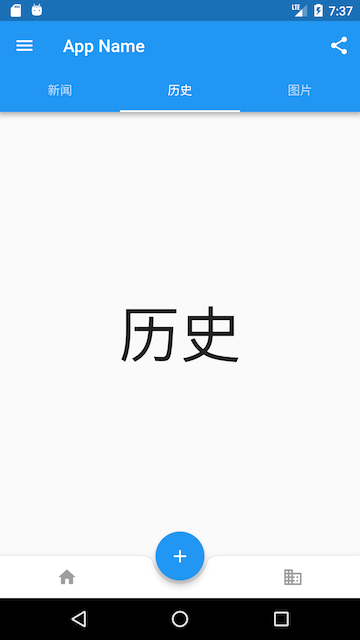
Material组件库中提供了一个BottomAppBar 组件，它可以和FloatingActionButton配合实现这种“打洞”效果，源码如下：
bottomNavigationBar: BottomAppBar(
color: Colors.white,
shape: CircularNotchedRectangle(), // 底部导航栏打一个圆形的洞
child: Row(
children: [
IconButton(icon: Icon(Icons.home)),
SizedBox(), //中间位置空出
IconButton(icon: Icon(Icons.business)),
],
mainAxisAlignment: MainAxisAlignment.spaceAround, //均分底部导航栏横向空间
),
)
可以看到，上面代码中没有控制打洞位置的属性，实际上，打洞的位置取决于FloatingActionButton的位置，上面FloatingActionButton的位置为：
floatingActionButtonLocation: FloatingActionButtonLocation.centerDocked,
所以打洞位置在底部导航栏的正中间。
BottomAppBar的shape属性决定洞的外形，CircularNotchedRectangle实现了一个圆形的外形，我们也可以自定义外形，比如，Flutter Gallery示例中就有一个“钻石”形状的示例，读者感兴趣可以自行查看。
5.7.6 页面 body
最后就是页面的 Body 部分了，Scaffold 有一个 body 属性，接收一个 Widget，我们可以传任意的 Widget ，在下一章中，我们会介绍 TabBarView，它是一个可以进行页面切换的组件，在多 Tab 的 App 中，一般都会将 TabBarView 作为 Scaffold 的 Body。
本章目录
可滚动组件是非常重要的一类组件，几乎所有的 App 都会用到，因此本书会将可滚动组件作为重点来介绍。 另外，从本章开始，进入本书的进阶篇，部分章节会讲的比较深，可能会略有难度，希望读者不要跳读，如果遇到问题时建议运行一下随书源码，通过代码加强理解。
可滚动组件
- 6.1：可滚动组件简介
- 6.2：SingleChildScrollView
- 6.3：ListView
- 6.4：滚动监听及控制（ScrollController）
- 6.5：AnimatedList
- 6.6：GridView
- 6.7：PageView与页面缓存
- 6.8：可滚动组件子项缓存
- 6.9：TabBarView
- 6.10：CustomScrollView与Slivers
- 6.11：自定义Sliver
- 6.12：NestedScrollView
6.1 可滚动组件简介
6.1.1 Sliver布局模型
我们在 4.2 节 介绍过Flutter 有两种布局模型：
- 基于 RenderBox 的盒模型布局。
- 基于 Sliver ( RenderSliver ) 按需加载列表布局。
之前我们主要介绍了盒模型布局组件，本章我们重点介绍基于Sliver的布局组件。
通常可滚动组件的子组件可能会非常多、占用的总高度也会非常大；如果要一次性将子组件全部构建出将会非常昂贵！为此，Flutter中提出一个Sliver（中文为“薄片”的意思）概念，Sliver 可以包含一个或多个子组件。Sliver 的主要作用是配合：加载子组件并确定每一个子组件的布局和绘制信息，如果 Sliver 可以包含多个子组件时，通常会实现按需加载模型。
只有当 Sliver 出现在视口中时才会去构建它，这种模型也称为“基于Sliver的列表按需加载模型”。可滚动组件中有很多都支持基于Sliver的按需加载模型，如ListView、GridView，但是也有不支持该模型的，如SingleChildScrollView。
约定：后面如果我们说一个组件是Sliver 则表示它是基于Sliver布局的组件，同理，说一个组件是 RenderBox，则代表它是基于盒模型布局的组件，并不是说它就是 RenderBox 类的实例。
Flutter 中的可滚动组件主要由三个角色组成：Scrollable、Viewport 和 Sliver：
- Scrollable ：用于处理滑动手势，确定滑动偏移，滑动偏移变化时构建 Viewport 。
- Viewport：显示的视窗，即列表的可视区域；
- Sliver：视窗里显示的元素。
具体布局过程：
- Scrollable 监听到用户滑动行为后，根据最新的滑动偏移构建 Viewport 。
- Viewport 将当前视口信息和配置信息通过 SliverConstraints 传递给 Sliver。
- Sliver 中对子组件（RenderBox）按需进行构建和布局，然后确认自身的位置、绘制等信息，保存在 geometry 中（一个 SliverGeometry 类型的对象）。
比如有一个 ListView，大小撑满屏幕，假设它有 100 个列表项（都是RenderBox）且每个列表项高度相同，结构如图6-1所示：
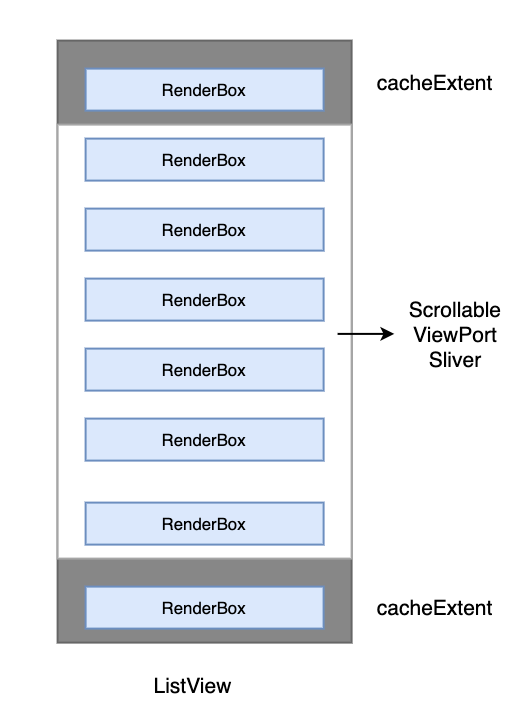
图中白色区域为设备屏幕，也是 Scrollable 、 Viewport 和 Sliver 所占用的空间，三者所占用的空间重合，父子关系为：Sliver 父组件为 Viewport，Viewport的 父组件为 Scrollable 。注意ListView 中只有一个 Sliver，在 Sliver 中实现了子组件（列表项）的按需加载和布局。
其中顶部和底部灰色的区域为 cacheExtent，它表示预渲染的高度，需要注意这是在可视区域之外，如果 RenderBox 进入这个区域内，即使它还未显示在屏幕上，也是要先进行构建的，预渲染是为了后面进入 Viewport 的时候更丝滑。cacheExtent 的默认值是 250，在构建可滚动列表时我们可以指定这个值，这个值最终会传给 Viewport。
6.1.2 Scrollable
用于处理滑动手势，确定滑动偏移，滑动偏移变化时构建 Viewport，我们看一下其关键的属性：
Scrollable({
...
this.axisDirection = AxisDirection.down,
this.controller,
this.physics,
required this.viewportBuilder, //后面介绍
})
axisDirection滚动方向。physics：此属性接受一个ScrollPhysics类型的对象，它决定可滚动组件如何响应用户操作，比如用户滑动完抬起手指后，继续执行动画；或者滑动到边界时，如何显示。默认情况下，Flutter会根据具体平台分别使用不同的ScrollPhysics对象，应用不同的显示效果，如当滑动到边界时，继续拖动的话，在 iOS 上会出现弹性效果，而在 Android 上会出现微光效果。如果你想在所有平台下使用同一种效果，可以显式指定一个固定的ScrollPhysics，Flutter SDK中包含了两个ScrollPhysics的子类，他们可以直接使用：ClampingScrollPhysics：列表滑动到边界时将不能继续滑动，通常在Android 中 配合GlowingOverscrollIndicator（实现微光效果的组件） 使用。BouncingScrollPhysics：iOS 下弹性效果。
controller：此属性接受一个ScrollController对象。ScrollController的主要作用是控制滚动位置和监听滚动事件。默认情况下，Widget树中会有一个默认的PrimaryScrollController，如果子树中的可滚动组件没有显式的指定controller，并且primary属性值为true时（默认就为true），可滚动组件会使用这个默认的PrimaryScrollController。这种机制带来的好处是父组件可以控制子树中可滚动组件的滚动行为，例如，Scaffold正是使用这种机制在iOS中实现了点击导航栏回到顶部的功能。我们将在6.4节详细介绍ScrollController。viewportBuilder：构建 Viewport 的回调。当用户滑动时，Scrollable 会调用此回调构建新的 Viewport，同时传递一个 ViewportOffset 类型的 offset 参数，该参数描述 Viewport 应该显示那一部分内容。注意重新构建 Viewport 并不是一个昂贵的操作，因为 Viewport 本身也是 Widget，只是配置信息，Viewport 变化时对应的 RenderViewport 会更新信息，并不会随着 Widget 进行重新构建。
主轴和纵轴
在可滚动组件的坐标描述中，通常将滚动方向称为主轴，非滚动方向称为纵轴。由于可滚动组件的默认方向一般都是沿垂直方向，所以默认情况下主轴就是指垂直方向，水平方向同理。
6.1.3 Viewport
Viewport 比较简单，用于渲染当前视口中需要显示 Sliver。
Viewport({
Key? key,
this.axisDirection = AxisDirection.down,
this.crossAxisDirection,
this.anchor = 0.0,
required ViewportOffset offset, // 用户的滚动偏移
// 类型为Key，表示从什么地方开始绘制，默认是第一个元素
this.center,
this.cacheExtent, // 预渲染区域
//该参数用于配合解释cacheExtent的含义，也可以为主轴长度的乘数
this.cacheExtentStyle = CacheExtentStyle.pixel,
this.clipBehavior = Clip.hardEdge,
List<Widget> slivers = const <Widget>[], // 需要显示的 Sliver 列表
})
需要注意的是：
- offset：该参数为Scrollabel 构建 Viewport 时传入，它描述了 Viewport 应该显示那一部分内容。
- cacheExtent 和 cacheExtentStyle：CacheExtentStyle 是一个枚举，有 pixel 和 viewport 两个取值。当 cacheExtentStyle 值为 pixel 时，cacheExtent 的值为预渲染区域的具体像素长度；当值为 viewport 时，cacheExtent 的值是一个乘数，表示有几个 viewport 的长度，最终的预渲染区域的像素长度为：cacheExtent * viewport 的积， 这在每一个列表项都占满整个 Viewport 时比较实用，这时 cacheExtent 的值就表示前后各缓存几个页面。
6.1.4 Sliver
Sliver 主要作用是对子组件进行构建和布局，比如 ListView 的 Sliver 需要实现子组件（列表项）按需加载功能，只有当列表项进入预渲染区域时才会去对它进行构建和布局、渲染。
Sliver 对应的渲染对象类型是 RenderSliver，RenderSliver 和 RenderBox 的相同点是都继承自 RenderObject 类，不同点是在布局的时候约束信息不同。RenderBox 在布局时父组件传递给它的约束信息对应的是 BoxConstraints，只包含最大宽高的约束；而 RenderSliver 在布局时父组件（列表）传递给它的约束是对应的是 SliverConstraints。关于 Sliver 的布局协议，我们将在本章最后一节中介绍。
6.1.5 可滚动组件的通用配置
几乎所有的可滚动组件在构造时都能指定 scrollDirection（滑动的主轴）、reverse（滑动方向是否反向）、controller、physics 、cacheExtent ，这些属性最终会透传给对应的 Scrollable 和 Viewport，这些属性我们可以认为是可滚动组件的通用属性，后续再介绍具体的可滚动组件时将不再赘述。
reverse表示是否按照阅读方向相反的方向滑动，如：scrollDirection值为Axis.horizontal时，即滑动方向为水平，如果阅读方向是从左到右（取决于语言环境，阿拉伯语就是从右到左）。reverse为true时，那么滑动方向就是从右往左。
6.1.6 ScrollController
可滚动组件都有一个 controller 属性，通过该属性我们可以指定一个 ScrollController 来控制可滚动组件的滚动，比如可以通过ScrollController来同步多个组件的滑动联动。由于 ScrollController 是需要结合可滚动组件一起工作，所以本章中，我们会在介绍完 ListView 后详细介绍 ScrollController。
6.1.7 子节点缓存
按需加载子组件在大多数场景中都能有正收益，但是有些时候也会有副作用。比如有一个页面，它由一个ListView 组成，我们希望在页面顶部显示一块内容， 这部分内容的数据需要在每次页面打开时通过网络来获取，为此我们通一个 Header 组件来实现，它是一个 StatefulWidget ，会在initState 中请求网络数据，然后将它作为 ListView 的第一个孩子。现在问题来了，因为 ListView 是按需加载子节点的，这意味着如果 Header 滑出 Viewport 的预渲染区域之外时就会被销毁，重新滑入后又会被重新构建，这样就会发起多次网络请求，不符合我们期望，我们预期是Header能够缓存不销毁。
综上，为了方便控制子组件在滑出可视区域后是否缓存，可滚动组件提供了一种缓存子节点的通用解决方案，它允许开发者对特定的子界限进行缓存，这个我们将在后面小节中详细介绍。
6.1.8 Scrollbar
Scrollbar是一个Material风格的滚动指示器（滚动条），如果要给可滚动组件添加滚动条，只需将Scrollbar作为可滚动组件的任意一个父级组件即可，如：
Scrollbar(
child: SingleChildScrollView(
...
),
);
Scrollbar和CupertinoScrollbar都是通过监听滚动通知来确定滚动条位置的。关于的滚动通知的详细内容我们将在本章最后一节中专门介绍。
CupertinoScrollbar
CupertinoScrollbar是 iOS 风格的滚动条，如果你使用的是Scrollbar，那么在iOS平台它会自动切换为CupertinoScrollbar。
6.1.9 总结
本节我们介绍了 Flutter 中基于 Sliver 按需加载列表布局，后面的小节中我们会先介绍一下常用的可滚动组件（如ListView、GridView、CustomScrollView等），然后介绍一下ScrollController，最后我们通过一个实例介绍一下如何自定义 Sliver 。
6.2 SingleChildScrollView
6.2.1 简介
SingleChildScrollView类似于Android中的ScrollView，它只能接收一个子组件，定义如下：
SingleChildScrollView({
this.scrollDirection = Axis.vertical, //滚动方向，默认是垂直方向
this.reverse = false,
this.padding,
bool primary,
this.physics,
this.controller,
this.child,
})
除了上一节我们介绍过的可滚动组件的通用属性外，我们重点primary属性：它表示是否使用 widget 树中默认的PrimaryScrollController（MaterialApp 组件树中已经默认包含一个 PrimaryScrollController 了）；当滑动方向为垂直方向（scrollDirection值为Axis.vertical）并且没有指定controller时，primary默认为true。
需要注意的是，通常SingleChildScrollView只应在期望的内容不会超过屏幕太多时使用，这是因为SingleChildScrollView不支持基于 Sliver 的延迟加载模型，所以如果预计视口可能包含超出屏幕尺寸太多的内容时，那么使用SingleChildScrollView将会非常昂贵（性能差），此时应该使用一些支持Sliver延迟加载的可滚动组件，如ListView。
6.2.2 实例
下面是一个将大写字母 A-Z 沿垂直方向显示的例子，由于垂直方向空间会超过屏幕视口高度，所以我们使用SingleChildScrollView：
class SingleChildScrollViewTestRoute extends StatelessWidget {
@override
Widget build(BuildContext context) {
String str = "ABCDEFGHIJKLMNOPQRSTUVWXYZ";
return Scrollbar( // 显示进度条
child: SingleChildScrollView(
padding: EdgeInsets.all(16.0),
child: Center(
child: Column(
//动态创建一个List<Widget>
children: str.split("")
//每一个字母都用一个Text显示,字体为原来的两倍
.map((c) => Text(c, textScaleFactor: 2.0,))
.toList(),
),
),
),
);
}
}
运行效果如图6-2所示：

6.3 ListView
ListView是最常用的可滚动组件之一，它可以沿一个方向线性排布所有子组件，并且它也支持列表项懒加载（在需要时才会创建）。
6.3.1 默认构造函数
我们看看ListView的默认构造函数定义：
ListView({
...
//可滚动widget公共参数
Axis scrollDirection = Axis.vertical,
bool reverse = false,
ScrollController? controller,
bool? primary,
ScrollPhysics? physics,
EdgeInsetsGeometry? padding,
//ListView各个构造函数的共同参数
double? itemExtent,
Widget? prototypeItem, //列表项原型，后面解释
bool shrinkWrap = false,
bool addAutomaticKeepAlives = true,
bool addRepaintBoundaries = true,
double? cacheExtent, // 预渲染区域长度
//子widget列表
List<Widget> children = const <Widget>[],
})
上面参数分为两组：第一组是可滚动组件的公共参数，本章第一节中已经介绍过，不再赘述；第二组是ListView各个构造函数（ListView有多个构造函数）的共同参数，我们重点来看看这些参数，：
itemExtent：该参数如果不为null，则会强制children的“长度”为itemExtent的值；这里的“长度”是指滚动方向上子组件的长度，也就是说如果滚动方向是垂直方向，则itemExtent代表子组件的高度；如果滚动方向为水平方向，则itemExtent就代表子组件的宽度。在ListView中，指定itemExtent比让子组件自己决定自身长度会有更好的性能，这是因为指定itemExtent后，滚动系统可以提前知道列表的长度，而无需每次构建子组件时都去再计算一下，尤其是在滚动位置频繁变化时（滚动系统需要频繁去计算列表高度）。prototypeItem：如果我们知道列表中的所有列表项长度都相同但不知道具体是多少，这时我们可以指定一个列表项，该列表项被称为prototypeItem（列表项原型）。指定prototypeItem后，可滚动组件会在 layout 时计算一次它延主轴方向的长度，这样也就预先知道了所有列表项的延主轴方向的长度，所以和指定itemExtent一样，指定prototypeItem会有更好的性能。注意，itemExtent和prototypeItem互斥，不能同时指定它们。shrinkWrap：该属性表示是否根据子组件的总长度来设置ListView的长度，默认值为false。默认情况下，ListView会在滚动方向尽可能多的占用空间。当ListView在一个无边界(滚动方向上)的容器中时，shrinkWrap必须为true。addAutomaticKeepAlives：该属性我们将在介绍 PageView 组件时详细解释。addRepaintBoundaries：该属性表示是否将列表项（子组件）包裹在RepaintBoundary组件中。RepaintBoundary读者可以先简单理解为它是一个”绘制边界“，将列表项包裹在RepaintBoundary中可以避免列表项不必要的重绘，但是当列表项重绘的开销非常小（如一个颜色块，或者一个较短的文本）时，不添加RepaintBoundary反而会更高效（具体原因会在本书后面 Flutter 绘制原理相关章节中介绍）。如果列表项自身来维护是否需要添加绘制边界组件，则此参数应该指定为 false。
注意：上面这些参数并非
ListView特有，在本章后面介绍的其他可滚动组件也可能会拥有这些参数，它们的含义是相同的。
默认构造函数有一个children参数，它接受一个Widget列表（List<Widget>）。这种方式适合只有少量的子组件数量已知且比较少的情况，反之则应该使用ListView.builder 按需动态构建列表项。
注意：虽然这种方式将所有
children一次性传递给 ListView，但子组件）仍然是在需要时才会加载（build（如有）、布局、绘制），也就是说通过默认构造函数构建的 ListView 也是基于 Sliver 的列表懒加载模型。
下面是一个例子：
ListView(
shrinkWrap: true,
padding: const EdgeInsets.all(20.0),
children: <Widget>[
const Text('I\'m dedicating every day to you'),
const Text('Domestic life was never quite my style'),
const Text('When you smile, you knock me out, I fall apart'),
const Text('And I thought I was so smart'),
],
);
可以看到，虽然使用默认构造函数创建的列表也是懒加载的，但我们还是需要提前将 Widget 创建好，等到真正需要加载的时候才会对 Widget 进行布局和绘制。
6.3.2 ListView.builder
ListView.builder适合列表项比较多或者列表项不确定的情况，下面看一下ListView.builder的核心参数列表：
ListView.builder({
// ListView公共参数已省略
...
required IndexedWidgetBuilder itemBuilder,
int itemCount,
...
})
itemBuilder：它是列表项的构建器，类型为IndexedWidgetBuilder，返回值为一个widget。当列表滚动到具体的index位置时，会调用该构建器构建列表项。itemCount：列表项的数量，如果为null，则为无限列表。
下面看一个例子：
ListView.builder(
itemCount: 100,
itemExtent: 50.0, //强制高度为50.0
itemBuilder: (BuildContext context, int index) {
return ListTile(title: Text("$index"));
}
);
运行效果如图6-3所示：

6.3.3 ListView.separated
ListView.separated可以在生成的列表项之间添加一个分割组件，它比ListView.builder多了一个separatorBuilder参数，该参数是一个分割组件生成器。
下面我们看一个例子：奇数行添加一条蓝色下划线，偶数行添加一条绿色下划线。
class ListView3 extends StatelessWidget {
@override
Widget build(BuildContext context) {
//下划线widget预定义以供复用。
Widget divider1=Divider(color: Colors.blue,);
Widget divider2=Divider(color: Colors.green);
return ListView.separated(
itemCount: 100,
//列表项构造器
itemBuilder: (BuildContext context, int index) {
return ListTile(title: Text("$index"));
},
//分割器构造器
separatorBuilder: (BuildContext context, int index) {
return index%2==0?divider1:divider2;
},
);
}
}
运行效果如图6-4所示：

6.3.4 固定高度列表
前面说过，给列表指定 itemExtent 或 prototypeItem 会有更高的性能，所以当我们知道列表项的高度都相同时，强烈建议指定 itemExtent 或 prototypeItem 。下面看一个示例：
class FixedExtentList extends StatelessWidget {
const FixedExtentList({Key? key}) : super(key: key);
@override
Widget build(BuildContext context) {
return ListView.builder(
prototypeItem: ListTile(title: Text("1")),
//itemExtent: 56,
itemBuilder: (context, index) {
//LayoutLogPrint是一个自定义组件，在布局时可以打印当前上下文中父组件给子组件的约束信息
return LayoutLogPrint(
tag: index,
child: ListTile(title: Text("$index")),
);
},
);
}
}
因为列表项都是一个 ListTile，高度相同，但是我们不知道 ListTile 的高度是多少，所以指定了prototypeItem ，运行后，控制台打印：
flutter: 0: BoxConstraints(w=428.0, h=56.0)
flutter: 1: BoxConstraints(w=428.0, h=56.0)
flutter: 2: BoxConstraints(w=428.0, h=56.0)
...
可见 ListTile 的高度是 56 ，所以我们指定 itemExtent 为 56也是可以的。但是笔者还是建议优先指定原型，这样的话在列表项布局修改后，仍然可以正常工作（前提是每个列表项的高度相同）。
如果本例中不指定 itemExtent 或 prototypeItem ，我们看看控制台日志信息：
flutter: 0: BoxConstraints(w=428.0, 0.0<=h<=Infinity)
flutter: 1: BoxConstraints(w=428.0, 0.0<=h<=Infinity)
flutter: 2: BoxConstraints(w=428.0, 0.0<=h<=Infinity)
...
可以发现，列表不知道列表项的具体高度，高度约束变为 0.0 到 Infinity。
6.3.5 ListView 原理
ListView 内部组合了 Scrollable、Viewport 和 Sliver，需要注意：
- ListView 中的列表项组件都是 RenderBox，并不是 Sliver， 这个一定要注意。
- 一个 ListView 中只有一个Sliver，对列表项进行按需加载的逻辑是 Sliver 中实现的。
- ListView 的 Sliver 默认是 SliverList，如果指定了
itemExtent，则会使用 SliverFixedExtentList；如果prototypeItem属性不为空，则会使用 SliverPrototypeExtentList，无论是是哪个，都实现了子组件的按需加载模型。
6.3.6 实例：无限加载列表
假设我们要从数据源异步分批拉取一些数据，然后用ListView展示，当我们滑动到列表末尾时，判断是否需要再去拉取数据，如果是，则去拉取，拉取过程中在表尾显示一个loading，拉取成功后将数据插入列表；如果不需要再去拉取，则在表尾提示"没有更多"。代码如下：
import 'package:flutter/material.dart';
import 'package:english_words/english_words.dart';
import 'package:flutter/rendering.dart';
class InfiniteListView extends StatefulWidget {
@override
_InfiniteListViewState createState() => _InfiniteListViewState();
}
class _InfiniteListViewState extends State<InfiniteListView> {
static const loadingTag = "##loading##"; //表尾标记
var _words = <String>[loadingTag];
@override
void initState() {
super.initState();
_retrieveData();
}
@override
Widget build(BuildContext context) {
return ListView.separated(
itemCount: _words.length,
itemBuilder: (context, index) {
//如果到了表尾
if (_words[index] == loadingTag) {
//不足100条，继续获取数据
if (_words.length - 1 < 100) {
//获取数据
_retrieveData();
//加载时显示loading
return Container(
padding: const EdgeInsets.all(16.0),
alignment: Alignment.center,
child: SizedBox(
width: 24.0,
height: 24.0,
child: CircularProgressIndicator(strokeWidth: 2.0),
),
);
} else {
//已经加载了100条数据，不再获取数据。
return Container(
alignment: Alignment.center,
padding: EdgeInsets.all(16.0),
child: Text(
"没有更多了",
style: TextStyle(color: Colors.grey),
),
);
}
}
//显示单词列表项
return ListTile(title: Text(_words[index]));
},
separatorBuilder: (context, index) => Divider(height: .0),
);
}
void _retrieveData() {
Future.delayed(Duration(seconds: 2)).then((e) {
setState(() {
//重新构建列表
_words.insertAll(
_words.length - 1,
//每次生成20个单词
generateWordPairs().take(20).map((e) => e.asPascalCase).toList(),
);
});
});
}
}
运行后效果如图6-5、6-6所示：


代码比较简单，读者可以参照代码中的注释理解，故不再赘述。需要说明的是，_retrieveData()的功能是模拟从数据源异步获取数据，我们使用english_words包的generateWordPairs()方法每次生成20个单词。
添加固定列表头
很多时候我们需要给列表添加一个固定表头，比如我们想实现一个商品列表，需要在列表顶部添加一个“商品列表”标题，期望的效果如图 6-7 所示：

我们按照之前经验，写出如下代码：
@override
Widget build(BuildContext context) {
return Column(children: <Widget>[
ListTile(title:Text("商品列表")),
ListView.builder(itemBuilder: (BuildContext context, int index) {
return ListTile(title: Text("$index"));
}),
]);
}
然后运行，发现并没有出现我们期望的效果，相反触发了一个异常；
Error caught by rendering library, thrown during performResize()。
Vertical viewport was given unbounded height ...
从异常信息中我们可以看到是因为ListView高度边界无法确定引起，所以解决的办法也很明显，我们需要给ListView指定边界，我们通过SizedBox指定一个列表高度看看是否生效：
... //省略无关代码
SizedBox(
height: 400, //指定列表高度为400
child: ListView.builder(
itemBuilder: (BuildContext context, int index) {
return ListTile(title: Text("$index"));
},
),
),
...
运行效果如图6-8所示：

可以看到，现在没有触发异常并且列表已经显示出来了，但是我们的手机屏幕高度要大于 400，所以底部会有一些空白。那如果我们要实现列表铺满除表头以外的屏幕空间应该怎么做？直观的方法是我们去动态计算，用屏幕高度减去状态栏、导航栏、表头的高度即为剩余屏幕高度，代码如下：
... //省略无关代码
SizedBox(
//Material设计规范中状态栏、导航栏、ListTile高度分别为24、56、56
height: MediaQuery.of(context).size.height-24-56-56,
child: ListView.builder(itemBuilder: (BuildContext context, int index) {
return ListTile(title: Text("$index"));
}),
)
...
运行效果如下图6-9所示：

可以看到，我们期望的效果实现了，但是这种方法并不优雅，如果页面布局发生变化，比如表头布局调整导致表头高度改变，那么剩余空间的高度就得重新计算。那么有什么方法可以自动拉伸ListView以填充屏幕剩余空间的方法吗？当然有！答案就是Flex。前面已经介绍过在弹性布局中，可以使用Expanded自动拉伸组件大小，并且我们也说过Column是继承自Flex的，所以我们可以直接使用Column + Expanded来实现，代码如下：
@override
Widget build(BuildContext context) {
return Column(children: <Widget>[
ListTile(title:Text("商品列表")),
Expanded(
child: ListView.builder(itemBuilder: (BuildContext context, int index) {
return ListTile(title: Text("$index"));
}),
),
]);
}
运行后，和图6-9一样，完美实现了！
6.3.7 总结
本节主要介绍了ListView 常用的使用方式和要点，但并没有介绍ListView.custom方法，它需要实现一个SliverChildDelegate 用来给 ListView 生成列表项组件，更多详情请参考 API 文档。
6.4 滚动监听及控制
在前几节中，我们介绍了Flutter中常用的可滚动组件，也说过可以用ScrollController来控制可滚动组件的滚动位置，本节先介绍一下ScrollController，然后以ListView为例，展示一下ScrollController的具体用法。最后，再介绍一下路由切换时如何来保存滚动位置。
6.4.1 ScrollController
ScrollController构造函数如下：
ScrollController({
double initialScrollOffset = 0.0, //初始滚动位置
this.keepScrollOffset = true,//是否保存滚动位置
...
})
我们介绍一下ScrollController常用的属性和方法：
offset：可滚动组件当前的滚动位置。jumpTo(double offset)、animateTo(double offset,...)：这两个方法用于跳转到指定的位置，它们不同之处在于，后者在跳转时会执行一个动画，而前者不会。
ScrollController还有一些属性和方法，我们将在后面原理部分解释。
1. 滚动监听
ScrollController间接继承自Listenable，我们可以根据ScrollController来监听滚动事件，如：
controller.addListener(()=>print(controller.offset))
2. 实例
我们创建一个ListView，当滚动位置发生变化时，我们先打印出当前滚动位置，然后判断当前位置是否超过1000像素，如果超过则在屏幕右下角显示一个“返回顶部”的按钮，该按钮点击后可以使ListView恢复到初始位置；如果没有超过1000像素，则隐藏“返回顶部”按钮。代码如下：
class ScrollControllerTestRoute extends StatefulWidget {
@override
ScrollControllerTestRouteState createState() {
return ScrollControllerTestRouteState();
}
}
class ScrollControllerTestRouteState extends State<ScrollControllerTestRoute> {
ScrollController _controller = ScrollController();
bool showToTopBtn = false; //是否显示“返回到顶部”按钮
@override
void initState() {
super.initState();
//监听滚动事件，打印滚动位置
_controller.addListener(() {
print(_controller.offset); //打印滚动位置
if (_controller.offset < 1000 && showToTopBtn) {
setState(() {
showToTopBtn = false;
});
} else if (_controller.offset >= 1000 && showToTopBtn == false) {
setState(() {
showToTopBtn = true;
});
}
});
}
@override
void dispose() {
//为了避免内存泄露，需要调用_controller.dispose
_controller.dispose();
super.dispose();
}
@override
Widget build(BuildContext context) {
return Scaffold(
appBar: AppBar(title: Text("滚动控制")),
body: Scrollbar(
child: ListView.builder(
itemCount: 100,
itemExtent: 50.0, //列表项高度固定时，显式指定高度是一个好习惯(性能消耗小)
controller: _controller,
itemBuilder: (context, index) {
return ListTile(title: Text("$index"),);
}
),
),
floatingActionButton: !showToTopBtn ? null : FloatingActionButton(
child: Icon(Icons.arrow_upward),
onPressed: () {
//返回到顶部时执行动画
_controller.animateTo(
.0,
duration: Duration(milliseconds: 200),
curve: Curves.ease,
);
}
),
);
}
}
代码说明已经包含在注释里，运行效果如图6-10、6-11所示：
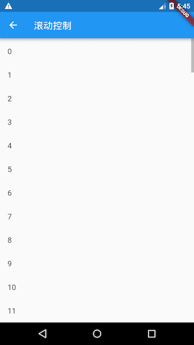
由于列表项高度为 50 像素，当滑动到第 20 个列表项后，右下角 “返回顶部” 按钮会显示，点击该按钮，ListView 会在返回顶部的过程中执行一个滚动动画，动画时间是 200 毫秒，动画曲线是 Curves.ease，关于动画的详细内容我们将在后面“动画”一章中详细介绍。
3. 滚动位置恢复
PageStorage是一个用于保存页面(路由)相关数据的组件，它并不会影响子树的UI外观，其实，PageStorage是一个功能型组件，它拥有一个存储桶（bucket），子树中的Widget可以通过指定不同的PageStorageKey来存储各自的数据或状态。
每次滚动结束，可滚动组件都会将滚动位置offset存储到PageStorage中，当可滚动组件重新创建时再恢复。如果ScrollController.keepScrollOffset为false，则滚动位置将不会被存储，可滚动组件重新创建时会使用ScrollController.initialScrollOffset；ScrollController.keepScrollOffset为true时，可滚动组件在第一次创建时，会滚动到initialScrollOffset处，因为这时还没有存储过滚动位置。在接下来的滚动中就会存储、恢复滚动位置，而initialScrollOffset会被忽略。
当一个路由中包含多个可滚动组件时，如果你发现在进行一些跳转或切换操作后，滚动位置不能正确恢复，这时你可以通过显式指定PageStorageKey来分别跟踪不同的可滚动组件的位置，如：
ListView(key: PageStorageKey(1), ... );
...
ListView(key: PageStorageKey(2), ... );
不同的PageStorageKey，需要不同的值，这样才可以为不同可滚动组件保存其滚动位置。
注意：一个路由中包含多个可滚动组件时，如果要分别跟踪它们的滚动位置，并非一定就得给他们分别提供
PageStorageKey。这是因为Scrollable本身是一个StatefulWidget，它的状态中也会保存当前滚动位置，所以，只要可滚动组件本身没有被从树上移除（detach），那么其State就不会销毁(dispose)，滚动位置就不会丢失。只有当Widget发生结构变化，导致可滚动组件的State销毁或重新构建时才会丢失状态，这种情况就需要显式指定PageStorageKey，通过PageStorage来存储滚动位置，一个典型的场景是在使用TabBarView时，在Tab发生切换时，Tab页中的可滚动组件的State就会销毁，这时如果想恢复滚动位置就需要指定PageStorageKey。
4. ScrollPosition
ScrollPosition是用来保存可滚动组件的滚动位置的。一个ScrollController对象可以同时被多个可滚动组件使用，ScrollController会为每一个可滚动组件创建一个ScrollPosition对象，这些ScrollPosition保存在ScrollController的positions属性中（List<ScrollPosition>）。ScrollPosition是真正保存滑动位置信息的对象，offset只是一个便捷属性：
double get offset => position.pixels;
一个ScrollController虽然可以对应多个可滚动组件，但是有一些操作，如读取滚动位置offset，则需要一对一！但是我们仍然可以在一对多的情况下，通过其他方法读取滚动位置，举个例子，假设一个ScrollController同时被两个可滚动组件使用，那么我们可以通过如下方式分别读取他们的滚动位置：
...
controller.positions.elementAt(0).pixels
controller.positions.elementAt(1).pixels
...
我们可以通过controller.positions.length来确定controller被几个可滚动组件使用。
ScrollPosition的方法
ScrollPosition有两个常用方法：animateTo() 和 jumpTo()，它们是真正来控制跳转滚动位置的方法，ScrollController的这两个同名方法，内部最终都会调用ScrollPosition的。
5. ScrollController控制原理
我们来介绍一下ScrollController的另外三个方法：
ScrollPosition createScrollPosition(
ScrollPhysics physics,
ScrollContext context,
ScrollPosition oldPosition);
void attach(ScrollPosition position) ;
void detach(ScrollPosition position) ;
当ScrollController和可滚动组件关联时，可滚动组件首先会调用ScrollController的createScrollPosition()方法来创建一个ScrollPosition来存储滚动位置信息，接着，可滚动组件会调用attach()方法，将创建的ScrollPosition添加到ScrollController的positions属性中，这一步称为“注册位置”，只有注册后animateTo() 和 jumpTo()才可以被调用。
当可滚动组件销毁时，会调用ScrollController的detach()方法，将其ScrollPosition对象从ScrollController的positions属性中移除，这一步称为“注销位置”，注销后animateTo() 和 jumpTo() 将不能再被调用。
需要注意的是，ScrollController的animateTo() 和 jumpTo()内部会调用所有ScrollPosition的animateTo() 和 jumpTo()，以实现所有和该ScrollController关联的可滚动组件都滚动到指定的位置。
6.4.2 滚动监听
1. 滚动通知
Flutter Widget树中子Widget可以通过发送通知（Notification）与父(包括祖先)Widget通信。父级组件可以通过NotificationListener组件来监听自己关注的通知，这种通信方式类似于Web开发中浏览器的事件冒泡，我们在Flutter中沿用“冒泡”这个术语，关于通知冒泡我们将在后面“事件处理与通知”一章中详细介绍。
可滚动组件在滚动时会发送ScrollNotification类型的通知，ScrollBar正是通过监听滚动通知来实现的。通过NotificationListener监听滚动事件和通过ScrollController有两个主要的不同：
- NotificationListener可以在可滚动组件到widget树根之间任意位置监听。而
ScrollController只能和具体的可滚动组件关联后才可以。 - 收到滚动事件后获得的信息不同；
NotificationListener在收到滚动事件时，通知中会携带当前滚动位置和ViewPort的一些信息，而ScrollController只能获取当前滚动位置。
2. 实例
下面，我们监听ListView的滚动通知，然后显示当前滚动进度百分比：
import 'package:flutter/material.dart';
class ScrollNotificationTestRoute extends StatefulWidget {
@override
_ScrollNotificationTestRouteState createState() =>
_ScrollNotificationTestRouteState();
}
class _ScrollNotificationTestRouteState
extends State<ScrollNotificationTestRoute> {
String _progress = "0%"; //保存进度百分比
@override
Widget build(BuildContext context) {
return Scrollbar(
//进度条
// 监听滚动通知
child: NotificationListener<ScrollNotification>(
onNotification: (ScrollNotification notification) {
double progress = notification.metrics.pixels /
notification.metrics.maxScrollExtent;
//重新构建
setState(() {
_progress = "${(progress * 100).toInt()}%";
});
print("BottomEdge: ${notification.metrics.extentAfter == 0}");
return false;
//return true; //放开此行注释后，进度条将失效
},
child: Stack(
alignment: Alignment.center,
children: <Widget>[
ListView.builder(
itemCount: 100,
itemExtent: 50.0,
itemBuilder: (context, index) => ListTile(title: Text("$index")),
),
CircleAvatar(
//显示进度百分比
radius: 30.0,
child: Text(_progress),
backgroundColor: Colors.black54,
)
],
),
),
);
}
}
运行结果如图6-12所示：

在接收到滚动事件时，参数类型为ScrollNotification，它包括一个metrics属性，它的类型是ScrollMetrics，该属性包含当前ViewPort及滚动位置等信息：
pixels：当前滚动位置。maxScrollExtent：最大可滚动长度。extentBefore：滑出ViewPort顶部的长度；此示例中相当于顶部滑出屏幕上方的列表长度。extentInside：ViewPort内部长度；此示例中屏幕显示的列表部分的长度。extentAfter：列表中未滑入ViewPort部分的长度；此示例中列表底部未显示到屏幕范围部分的长度。atEdge：是否滑到了可滚动组件的边界（此示例中相当于列表顶或底部）。
ScrollMetrics还有一些其他属性，读者可以自行查阅API文档。
6.5 AnimatedList
AnimatedList 和 ListView 的功能大体相似，不同的是， AnimatedList 可以在列表中插入或删除节点时执行一个动画，在需要添加或删除列表项的场景中会提高用户体验。
AnimatedList 是一个 StatefulWidget，它对应的 State 类型为 AnimatedListState，添加和删除元素的方法位于 AnimatedListState 中：
void insertItem(int index, { Duration duration = _kDuration });
void removeItem(int index, AnimatedListRemovedItemBuilder builder, { Duration duration = _kDuration }) ;
下面我们看一个示例：实现下面这样的一个列表，点击底部 + 按钮时向列表追加一个列表项；点击每个列表项后面的删除按钮时，删除该列表项，添加和删除时分别执行指定的动画，运行效果如图6-13所示：

初始的时候有5个列表项，先点击了 + 号按钮，会添加一个 6，添加过程执行渐显动画。然后点击了 4 后面的删除按钮，删除的时候执行了一个渐隐+收缩的合成动画。
下面是实现代码：
class AnimatedListRoute extends StatefulWidget {
const AnimatedListRoute({Key? key}) : super(key: key);
@override
_AnimatedListRouteState createState() => _AnimatedListRouteState();
}
class _AnimatedListRouteState extends State<AnimatedListRoute> {
var data = <String>[];
int counter = 5;
final globalKey = GlobalKey<AnimatedListState>();
@override
void initState() {
for (var i = 0; i < counter; i++) {
data.add('${i + 1}');
}
super.initState();
}
@override
Widget build(BuildContext context) {
return Stack(
children: [
AnimatedList(
key: globalKey,
initialItemCount: data.length,
itemBuilder: (
BuildContext context,
int index,
Animation<double> animation,
) {
//添加列表项时会执行渐显动画
return FadeTransition(
opacity: animation,
child: buildItem(context, index),
);
},
),
buildAddBtn(),
],
);
}
// 创建一个 “+” 按钮，点击后会向列表中插入一项
Widget buildAddBtn() {
return Positioned(
child: FloatingActionButton(
child: Icon(Icons.add),
onPressed: () {
// 添加一个列表项
data.add('${++counter}');
// 告诉列表项有新添加的列表项
globalKey.currentState!.insertItem(data.length - 1);
print('添加 $counter');
},
),
bottom: 30,
left: 0,
right: 0,
);
}
// 构建列表项
Widget buildItem(context, index) {
String char = data[index];
return ListTile(
//数字不会重复，所以作为Key
key: ValueKey(char),
title: Text(char),
trailing: IconButton(
icon: Icon(Icons.delete),
// 点击时删除
onPressed: () => onDelete(context, index),
),
);
}
void onDelete(context, index) {
// 待实现
}
}
删除的时候需要我们通过AnimatedListState 的 removeItem 方法来应用删除动画，具体逻辑在 onDelete 中：
setState(() {
globalKey.currentState!.removeItem(
index,
(context, animation) {
// 删除过程执行的是反向动画，animation.value 会从1变为0
var item = buildItem(context, index);
print('删除 ${data[index]}');
data.removeAt(index);
// 删除动画是一个合成动画：渐隐 + 收缩列表项
return FadeTransition(
opacity: CurvedAnimation(
parent: animation,
//让透明度变化的更快一些
curve: const Interval(0.5, 1.0),
),
// 不断缩小列表项的高度
child: SizeTransition(
sizeFactor: animation,
axisAlignment: 0.0,
child: item,
),
);
},
duration: Duration(milliseconds: 200), // 动画时间为 200 ms
);
});
代码很简单，但我们需要注意，我们的数据是单独在 data 中维护的，调用 AnimatedListState 的插入和移除方法知识相当于一个通知：在什么位置执行插入或移除动画，仍然是数据驱动的（响应式并非命令式）。
6.6 GridView
网格布局是一种常见的布局类型，GridView 组件正是实现了网格布局的组件，本节重点介绍一下它的用法。
6.6.1 默认构造函数
GridView可以构建一个二维网格列表，其默认构造函数定义如下：
GridView({
Key? key,
Axis scrollDirection = Axis.vertical,
bool reverse = false,
ScrollController? controller,
bool? primary,
ScrollPhysics? physics,
bool shrinkWrap = false,
EdgeInsetsGeometry? padding,
required this.gridDelegate, //下面解释
bool addAutomaticKeepAlives = true,
bool addRepaintBoundaries = true,
double? cacheExtent,
List<Widget> children = const <Widget>[],
...
})
我们可以看到，GridView和ListView的大多数参数都是相同的，它们的含义也都相同的，如有疑惑读者可以翻阅ListView一节，在此不再赘述。我们唯一需要关注的是gridDelegate参数，类型是SliverGridDelegate，它的作用是控制GridView子组件如何排列(layout)。
SliverGridDelegate是一个抽象类，定义了GridView Layout相关接口，子类需要通过实现它们来实现具体的布局算法。Flutter中提供了两个SliverGridDelegate的子类SliverGridDelegateWithFixedCrossAxisCount和SliverGridDelegateWithMaxCrossAxisExtent，我们可以直接使用，下面我们分别来介绍一下它们。
1. SliverGridDelegateWithFixedCrossAxisCount
该子类实现了一个横轴为固定数量子元素的layout算法，其构造函数为：
SliverGridDelegateWithFixedCrossAxisCount({
@required double crossAxisCount,
double mainAxisSpacing = 0.0,
double crossAxisSpacing = 0.0,
double childAspectRatio = 1.0,
})
crossAxisCount：横轴子元素的数量。此属性值确定后子元素在横轴的长度就确定了，即ViewPort横轴长度除以crossAxisCount的商。mainAxisSpacing：主轴方向的间距。crossAxisSpacing：横轴方向子元素的间距。childAspectRatio：子元素在横轴长度和主轴长度的比例。由于crossAxisCount指定后，子元素横轴长度就确定了，然后通过此参数值就可以确定子元素在主轴的长度。
可以发现，子元素的大小是通过crossAxisCount和childAspectRatio两个参数共同决定的。注意，这里的子元素指的是子组件的最大显示空间，注意确保子组件的实际大小不要超出子元素的空间。
下面看一个例子：
GridView(
gridDelegate: SliverGridDelegateWithFixedCrossAxisCount(
crossAxisCount: 3, //横轴三个子widget
childAspectRatio: 1.0 //宽高比为1时，子widget
),
children:<Widget>[
Icon(Icons.ac_unit),
Icon(Icons.airport_shuttle),
Icon(Icons.all_inclusive),
Icon(Icons.beach_access),
Icon(Icons.cake),
Icon(Icons.free_breakfast)
]
);
运行效果如图6-14所示：

2. SliverGridDelegateWithMaxCrossAxisExtent
该子类实现了一个横轴子元素为固定最大长度的layout算法，其构造函数为：
SliverGridDelegateWithMaxCrossAxisExtent({
double maxCrossAxisExtent,
double mainAxisSpacing = 0.0,
double crossAxisSpacing = 0.0,
double childAspectRatio = 1.0,
})
maxCrossAxisExtent为子元素在横轴上的最大长度，之所以是“最大”长度，是因为横轴方向每个子元素的长度仍然是等分的，举个例子，如果ViewPort的横轴长度是450，那么当maxCrossAxisExtent的值在区间[450/4，450/3)内的话，子元素最终实际长度都为112.5，而childAspectRatio所指的子元素横轴和主轴的长度比为最终的长度比。其他参数和SliverGridDelegateWithFixedCrossAxisCount相同。
下面我们看一个例子：
GridView(
padding: EdgeInsets.zero,
gridDelegate: SliverGridDelegateWithMaxCrossAxisExtent(
maxCrossAxisExtent: 120.0,
childAspectRatio: 2.0 //宽高比为2
),
children: <Widget>[
Icon(Icons.ac_unit),
Icon(Icons.airport_shuttle),
Icon(Icons.all_inclusive),
Icon(Icons.beach_access),
Icon(Icons.cake),
Icon(Icons.free_breakfast),
],
);
运行效果如图6-15所示：

6.6.2 GridView.count
GridView.count构造函数内部使用了SliverGridDelegateWithFixedCrossAxisCount，我们通过它可以快速的创建横轴固定数量子元素的GridView，我们可以通过以下代码实现和上面例子相同的效果等：
GridView.count(
crossAxisCount: 3,
childAspectRatio: 1.0,
children: <Widget>[
Icon(Icons.ac_unit),
Icon(Icons.airport_shuttle),
Icon(Icons.all_inclusive),
Icon(Icons.beach_access),
Icon(Icons.cake),
Icon(Icons.free_breakfast),
],
);
6.6.3 GridView.extent
GridView.extent构造函数内部使用了SliverGridDelegateWithMaxCrossAxisExtent，我们通过它可以快速的创建横轴子元素为固定最大长度的GridView，上面的示例代码等价于：
GridView.extent(
maxCrossAxisExtent: 120.0,
childAspectRatio: 2.0,
children: <Widget>[
Icon(Icons.ac_unit),
Icon(Icons.airport_shuttle),
Icon(Icons.all_inclusive),
Icon(Icons.beach_access),
Icon(Icons.cake),
Icon(Icons.free_breakfast),
],
);
6.6.4 GridView.builder
上面我们介绍的GridView都需要一个widget数组作为其子元素，这些方式都会提前将所有子widget都构建好，所以只适用于子widget数量比较少时，当子widget比较多时，我们可以通过GridView.builder来动态创建子widget。GridView.builder 必须指定的参数有两个：
GridView.builder(
...
required SliverGridDelegate gridDelegate,
required IndexedWidgetBuilder itemBuilder,
)
其中itemBuilder为子widget构建器。
示例
假设我们需要从一个异步数据源（如网络）分批获取一些Icon，然后用GridView来展示：
class InfiniteGridView extends StatefulWidget {
@override
_InfiniteGridViewState createState() => _InfiniteGridViewState();
}
class _InfiniteGridViewState extends State<InfiniteGridView> {
List<IconData> _icons = []; //保存Icon数据
@override
void initState() {
super.initState();
// 初始化数据
_retrieveIcons();
}
@override
Widget build(BuildContext context) {
return GridView.builder(
gridDelegate: SliverGridDelegateWithFixedCrossAxisCount(
crossAxisCount: 3, //每行三列
childAspectRatio: 1.0, //显示区域宽高相等
),
itemCount: _icons.length,
itemBuilder: (context, index) {
//如果显示到最后一个并且Icon总数小于200时继续获取数据
if (index == _icons.length - 1 && _icons.length < 200) {
_retrieveIcons();
}
return Icon(_icons[index]);
},
);
}
//模拟异步获取数据
void _retrieveIcons() {
Future.delayed(Duration(milliseconds: 200)).then((e) {
setState(() {
_icons.addAll([
Icons.ac_unit,
Icons.airport_shuttle,
Icons.all_inclusive,
Icons.beach_access,
Icons.cake,
Icons.free_breakfast,
]);
});
});
}
}
_retrieveIcons()：在此方法中我们通过Future.delayed来模拟从异步数据源获取数据，每次获取数据需要200毫秒，获取成功后将新数据添加到_icons，然后调用setState重新构建。- 在 itemBuilder 中，如果显示到最后一个时，判断是否需要继续获取数据，然后返回一个Icon。
6.7 PageView与页面缓存
6.7.1 PageView
如果要实现页面切换和 Tab 布局，我们可以使用 PageView 组件。需要注意，PageView 是一个非常重要的组件，因为在移动端开发中很常用，比如大多数 App 都包含 Tab 换页效果、图片轮动以及抖音上下滑页切换视频功能等等，这些都可以通过 PageView 轻松实现。
PageView({
Key? key,
this.scrollDirection = Axis.horizontal, // 滑动方向
this.reverse = false,
PageController? controller,
this.physics,
List<Widget> children = const <Widget>[],
this.onPageChanged,
//每次滑动是否强制切换整个页面，如果为false，则会根据实际的滑动距离显示页面
this.pageSnapping = true,
//主要是配合辅助功能用的，后面解释
this.allowImplicitScrolling = false,
//后面解释
this.padEnds = true,
})
我们看一个 Tab 切换的实例，为了突出重点，我们让每个 Tab 页都只显示一个数字。
// Tab 页面
class Page extends StatefulWidget {
const Page({
Key? key,
required this.text
}) : super(key: key);
final String text;
@override
_PageState createState() => _PageState();
}
class _PageState extends State<Page> {
@override
Widget build(BuildContext context) {
print("build ${widget.text}");
return Center(child: Text("${widget.text}", textScaleFactor: 5));
}
}
我们创建一个 PageView：
@override
Widget build(BuildContext context) {
var children = <Widget>[];
// 生成 6 个 Tab 页
for (int i = 0; i < 6; ++i) {
children.add( Page( text: '$i'));
}
return PageView(
// scrollDirection: Axis.vertical, // 滑动方向为垂直方向
children: children,
);
}
运行后就可以左右滑动来切换页面了，效果如图6-16所示：

如果将 PageView 的滑动方向指定为垂直方向（上面代码中注释部分），则会变为上下滑动切换页面。
6.7.2 页面缓存
我们在运行上面示例时，读者可能已经发现：每当页面切换时都会触发新 Page 页的 build，比如我们从第一页滑到第二页，然后再滑回第一页时，控制台打印如下：
flutter: build 0
flutter: build 1
flutter: build 0
可见 PageView 默认并没有缓存功能，一旦页面滑出屏幕它就会被销毁，这和我们前面讲过的 ListView/GridView 不一样，在创建 ListView/GridView 时我们可以手动指定 ViewPort 之外多大范围内的组件需要预渲染和缓存（通过 cacheExtent 指定），只有当组件滑出屏幕后又滑出预渲染区域，组件才会被销毁，但是不幸的是 PageView 并没有 cacheExtent 参数！但是在真实的业务场景中，对页面进行缓存是很常见的一个需求，比如一个新闻 App，下面有很多频道页，如果不支持页面缓存，则一旦滑到新的频道旧的频道页就会销毁，滑回去时又得重新请求数据和构建页面，这谁扛得住！
按道理 cacheExtent 是 Viewport 的一个配置属性，且 PageView 也是要构建 Viewport 的，那么为什么就不能透传一下这个参数呢？于是笔者带着这个疑问看了一下 PageView 的源码，发现在 PageView 创建Viewport 的代码中是这样的：
child: Scrollable(
...
viewportBuilder: (BuildContext context, ViewportOffset position) {
return Viewport(
// TODO(dnfield): we should provide a way to set cacheExtent
// independent of implicit scrolling:
// https://github.com/flutter/flutter/issues/45632
cacheExtent: widget.allowImplicitScrolling ? 1.0 : 0.0,
cacheExtentStyle: CacheExtentStyle.viewport,
...
);
},
)
我们发现 虽然 PageView 没有透传 cacheExtent，但是却在allowImplicitScrolling 为 true 时设置了预渲染区域，注意，此时的缓存类型为 CacheExtentStyle.viewport，则 cacheExtent 则表示缓存的长度是几个 Viewport 的宽度，cacheExtent 为 1.0，则代表前后各缓存一个页面宽度，即前后各一页。既然如此，那我们将 PageView 的 allowImplicitScrolling 置为 true 则不就可以缓存前后两页了？我们修改代码，然后运行示例，发现在第一页时，控制台打印信息如下：
flutter: build 0
flutter: build 1 // 预渲染第二页
滑到第二页时：
flutter: build 0
flutter: build 1
flutter: build 2 // 预渲染第三页
当再滑回第一页时，控制台信息不变，这也就意味着第一页缓存成功，它没有被重新构建。但是如果我们从第二页滑到第三页，然后再滑回第一页时，控制台又会输出 ”build 0“，这也符合预期，因为我们之前分析的就是设置 allowImplicitScrolling 置为 true 时就只会缓存前后各一页，所以滑到第三页时，第一页就会销毁。
OK，能缓存前后各一页也貌似比不能缓存好一点，但还是不能彻底解决不了我们的问题。为什么明明就是顺手的事， flutter 就不让开发者指定缓存策略呢？然后我们翻译一下源码中的注释：
Todo：我们应该提供一种独立于隐式滚动（implicit scrolling）的设置 cacheExtent 的机制。
放开 cacheExtent 透传是很简单的事情，为什么还要以后再做？是有什么难题么？要理解这个我们就需要看看 allowImplicitScrolling 到底是什么了，根据文档以及注释中 issue 的链接，发现PageView 中设置 cacheExtent 会和 iOS 中 辅助功能有冲突（读者可以先不用关注），所以暂时还没有什么好的办法。看到这可能国内的很多开发者要说我们的 App 不用考虑辅助功能，既然如此，那问题很好解决，将 PageView 的源码拷贝一份，然后透传 cacheExtent 即可。
拷源码的方式虽然很简单，但毕竟不是正统做法，那有没有更通用的方法吗？有！还记得我们在本章第一节中说过“可滚动组件提供了一种通用的缓存子项的解决方案” 吗，我们将在下一节重点介绍。
6.8 可滚动组件子项缓存
本节将介绍可滚动组件中缓存指定子项的通用方案。
首先回想一下，在介绍 ListView 时，有一个addAutomaticKeepAlives 属性我们并没有介绍，如果addAutomaticKeepAlives 为 true，则 ListView 会为每一个列表项添加一个 AutomaticKeepAlive 父组件。虽然 PageView 的默认构造函数和 PageView.builder 构造函数中没有该参数，但它们最终都会生成一个 SliverChildDelegate 来负责列表项的按需加载，而在 SliverChildDelegate 中每当列表项构建完成后，SliverChildDelegate 都会为其添加一个 AutomaticKeepAlive 父组件。下面我们就先介绍一下 AutomaticKeepAlive 组件。
6.8.1 AutomaticKeepAlive
AutomaticKeepAlive 的组件的主要作用是将列表项的根 RenderObject 的 keepAlive 按需自动标记 为 true 或 false。为了方便叙述，我们可以认为根 RenderObject 对应的组件就是列表项的根 Widget，代表整个列表项组件，同时我们将列表组件的 Viewport区域 + cacheExtent（预渲染区域）称为加载区域 ：
- 当 keepAlive 标记为 false 时，如果列表项滑出加载区域时，列表组件将会被销毁。
- 当 keepAlive 标记为 true 时，当列表项滑出加载区域后，Viewport 会将列表组件缓存起来；当列表项进入加载区域时，Viewport 从先从缓存中查找是否已经缓存，如果有则直接复用，如果没有则重新创建列表项。
那么 AutomaticKeepAlive 什么时候会将列表项的 keepAlive 标记为 true 或 false 呢？答案是开发者说了算！Flutter 中实现了一套类似 C/S 的机制，AutomaticKeepAlive 就类似一个 Server，它的子组件可以是 Client，这样子组件想改变是否需要缓存的状态时就向 AutomaticKeepAlive 发一个通知消息（KeepAliveNotification），AutomaticKeepAlive 收到消息后会去更改 keepAlive 的状态，如果有必要同时做一些资源清理的工作（比如 keepAlive 从 true 变为 false 时，要释放缓存）。
我们基于上一节 PageView 示例，实现页面缓存，根据上面的描述实现思路就很简单了：让Page 页变成一个 AutomaticKeepAlive Client 即可。为了便于开发者实现，Flutter 提供了一个 AutomaticKeepAliveClientMixin ，我们只需要让 PageState 混入这个 mixin，且同时添加一些必要操作即可：
class _PageState extends State<Page> with AutomaticKeepAliveClientMixin {
@override
Widget build(BuildContext context) {
super.build(context); // 必须调用
return Center(child: Text("${widget.text}", textScaleFactor: 5));
}
@override
bool get wantKeepAlive => true; // 是否需要缓存
}
代码很简单，我们只需要提供一个 wantKeepAlive ，它会表示 AutomaticKeepAlive 是否需要缓存当前列表项；另外我们必须在 build 方法中调用一下 super.build(context)，该方法实现在 AutomaticKeepAliveClientMixin 中，功能就是根据当前 wantKeepAlive 的值给 AutomaticKeepAlive 发送消息，AutomaticKeepAlive 收到消息后就会开始工作，如图6-17所示：

现在我们重新运行一下示例，发现每个 Page 页只会 build 一次，缓存成功了。
需要注意，如果我们采用 PageView.custom 构建页面时没有给列表项包装 AutomaticKeepAlive 父组件，则上述方案不能正常工作，因为此时Client 发出消息后，找不到 Server，404 了，😀。
6.8.2 KeepAliveWrapper
虽然我们可以通过 AutomaticKeepAliveClientMixin 快速的实现页面缓存功能，但是通过混入的方式实现不是很优雅，因为必须更改 Page 的代码，而修改Page代码具有侵入性且不是很灵活，比如一个Page组件需要同时在列表中和列表外使用，为了在列表中缓存它，则我们必须实现两份。为了解决这个问题，笔者封装了一个 KeepAliveWrapper 组件，如果哪个列表项需要缓存，只需要使用 KeepAliveWrapper 包裹一下它即可。
@override
Widget build(BuildContext context) {
var children = <Widget>[];
for (int i = 0; i < 6; ++i) {
//只需要用 KeepAliveWrapper 包装一下即可
children.add(KeepAliveWrapper(child:Page( text: '$i'));
}
return PageView(children: children);
}
下面是 KeepAliveWrapper 的实现源码：
class KeepAliveWrapper extends StatefulWidget {
const KeepAliveWrapper({
Key? key,
this.keepAlive = true,
required this.child,
}) : super(key: key);
final bool keepAlive;
final Widget child;
@override
_KeepAliveWrapperState createState() => _KeepAliveWrapperState();
}
class _KeepAliveWrapperState extends State<KeepAliveWrapper>
with AutomaticKeepAliveClientMixin {
@override
Widget build(BuildContext context) {
super.build(context);
return widget.child;
}
@override
void didUpdateWidget(covariant KeepAliveWrapper oldWidget) {
if(oldWidget.keepAlive != widget.keepAlive) {
// keepAlive 状态需要更新，实现在 AutomaticKeepAliveClientMixin 中
updateKeepAlive();
}
super.didUpdateWidget(oldWidget);
}
@override
bool get wantKeepAlive => widget.keepAlive;
}
下面我们再在 ListView 中测一下：
class KeepAliveTest extends StatelessWidget {
const KeepAliveTest({Key? key}) : super(key: key);
@override
Widget build(BuildContext context) {
return ListView.builder(itemBuilder: (_, index) {
return KeepAliveWrapper(
// 为 true 后会缓存所有的列表项，列表项将不会销毁。
// 为 false 时，列表项滑出预加载区域后将会别销毁。
// 使用时一定要注意是否必要，因为对所有列表项都缓存的会导致更多的内存消耗
keepAlive: true,
child: ListItem(index: index),
);
});
}
}
class ListItem extends StatefulWidget {
const ListItem({Key? key, required this.index}) : super(key: key);
final int index;
@override
_ListItemState createState() => _ListItemState();
}
class _ListItemState extends State<ListItem> {
@override
Widget build(BuildContext context) {
return ListTile(title: Text('${widget.index}'));
}
@override
void dispose() {
print('dispose ${widget.index}');
super.dispose();
}
}
因为每一个列表项都被缓存了，所以运行后滑动列表预期日志面板不会有任何日志，如图6-18所示：

好我们预期一致，日志面板没有日志。如果我们将 keepAlive 设为 false，则当列表项滑出预渲染区域后则会销毁，日志面板将有输出，如图6-19所示：
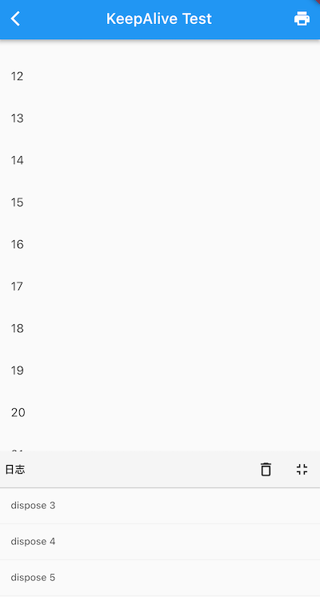
可见我们封装的 KeepAliveWrapper 能够正常工作，笔者将 KeepAliveWrapper 添加到了 flukit 组件库，如果读者需要可以在 flukit 组件库中找到它。
6.9 TabBarView
TabBarView 是 Material 组件库中提供了 Tab 布局组件，通常和 TabBar 配合使用。
6.9.1 TabBarView
TabBarView 封装了 PageView，它的构造方法很简单
TabBarView({
Key? key,
required this.children, // tab 页
this.controller, // TabController
this.physics,
this.dragStartBehavior = DragStartBehavior.start,
})
TabController 用于监听和控制 TabBarView 的页面切换，通常和 TabBar 联动。如果没有指定，则会在组件树中向上查找并使用最近的一个 DefaultTabController 。
6.9.2 TabBar
TabBar 为 TabBarView 的导航标题，如图6-20所示：

TabBar 有很多配置参数，通过这些参数我们可以定义 TabBar 的样式，很多属性都是在配置 indicator 和 label，拿上图来举例，Label 是每个Tab 的文本，indicator 指 “历史” 下面的白色下划线。
const TabBar({
Key? key,
required this.tabs, // 具体的 Tabs，需要我们创建
this.controller,
this.isScrollable = false, // 是否可以滑动
this.padding,
this.indicatorColor,// 指示器颜色，默认是高度为2的一条下划线
this.automaticIndicatorColorAdjustment = true,
this.indicatorWeight = 2.0,// 指示器高度
this.indicatorPadding = EdgeInsets.zero, //指示器padding
this.indicator, // 指示器
this.indicatorSize, // 指示器长度，有两个可选值，一个tab的长度，一个是label长度
this.labelColor,
this.labelStyle,
this.labelPadding,
this.unselectedLabelColor,
this.unselectedLabelStyle,
this.mouseCursor,
this.onTap,
...
})
TabBar 通常位于 AppBar 的底部，它也可以接收一个 TabController ，如果需要和 TabBarView 联动， TabBar 和 TabBarView 使用同一个 TabController 即可，注意，联动时 TabBar 和 TabBarView 的孩子数量需要一致。如果没有指定 controller，则会在组件树中向上查找并使用最近的一个 DefaultTabController 。另外我们需要创建需要的 tab 并通过 tabs 传给 TabBar， tab 可以是任何 Widget，不过Material 组件库中已经实现了一个 Tab 组件，我们一般都会直接使用它：
const Tab({
Key? key,
this.text, //文本
this.icon, // 图标
this.iconMargin = const EdgeInsets.only(bottom: 10.0),
this.height,
this.child, // 自定义 widget
})
注意，text 和 child 是互斥的，不能同时制定。
6.9.3 实例
下面我们看一个例子：
class TabViewRoute1 extends StatefulWidget {
@override
_TabViewRoute1State createState() => _TabViewRoute1State();
}
class _TabViewRoute1State extends State<TabViewRoute1>
with SingleTickerProviderStateMixin {
late TabController _tabController;
List tabs = ["新闻", "历史", "图片"];
@override
void initState() {
super.initState();
_tabController = TabController(length: tabs.length, vsync: this);
}
@override
Widget build(BuildContext context) {
return Scaffold(
appBar: AppBar(
title: Text("App Name"),
bottom: TabBar(
controller: _tabController,
tabs: tabs.map((e) => Tab(text: e)).toList(),
),
),
body: TabBarView( //构建
controller: _tabController,
children: tabs.map((e) {
return KeepAliveWrapper(
child: Container(
alignment: Alignment.center,
child: Text(e, textScaleFactor: 5),
),
);
}).toList(),
),
);
}
@override
void dispose() {
// 释放资源
_tabController.dispose();
super.dispose();
}
}
运行后效果如图6-21所示：

滑动页面时顶部的 Tab 也会跟着动，点击顶部 Tab 时页面也会跟着切换。为了实现 TabBar 和 TabBarView 的联动，我们显式创建了一个 TabController，由于 TabController 又需要一个 TickerProvider （vsync 参数）， 我们又混入了 SingleTickerProviderStateMixin；由于 TabController 中会执行动画，持有一些资源，所以我们在页面销毁时必须得释放资源（dispose）。综上，我们发现创建 TabController 的过程还是比较复杂，实战中，如果需要 TabBar 和 TabBarView 联动，通常会创建一个 DefaultTabController 作为它们共同的父级组件，这样它们在执行时就会从组件树向上查找，都会使用我们指定的这个 DefaultTabController。我们修改后的实现如下：
class TabViewRoute2 extends StatelessWidget {
@override
Widget build(BuildContext context) {
List tabs = ["新闻", "历史", "图片"];
return DefaultTabController(
length: tabs.length,
child: Scaffold(
appBar: AppBar(
title: Text("App Name"),
bottom: TabBar(
tabs: tabs.map((e) => Tab(text: e)).toList(),
),
),
body: TabBarView( //构建
children: tabs.map((e) {
return KeepAliveWrapper(
child: Container(
alignment: Alignment.center,
child: Text(e, textScaleFactor: 5),
),
);
}).toList(),
),
),
);
}
}
可以看到我们无需去手动管理 Controller 的生命周期，也不需要提供 SingleTickerProviderStateMixin，同时也没有其他的状态需要管理，也就不需要用 StatefulWidget 了，这样简单很多。
页面缓存
因为TabBarView 内部封装了 PageView，如果要缓存页面，可以参考 PageView 一节中关于页面缓存的介绍。
6.10 CustomScrollView 和 Slivers
6.10.1 CustomScrollView
前面介绍的 ListView、GridView、PageView 都是一个完整的可滚动组件，所谓完整是指它们都包括Scrollable 、 Viewport 和 Sliver。假如我们想要在一个页面中，同时包含多个可滚动组件，且使它们的滑动效果能统一起来，比如：我们想将已有的两个沿垂直方向滚动的 ListView 成一个 ListView ，这样在第一ListView 滑动到底部时能自动接上第二 ListView，如果尝试写一个 demo：
Widget buildTwoListView() {
var listView = ListView.builder(
itemCount: 20,
itemBuilder: (_, index) => ListTile(title: Text('$index')),
);
return Column(
children: [
Expanded(child: listView),
Divider(color: Colors.grey),
Expanded(child: listView),
],
);
}
}
运行效果如图6-22所示：

页面中有两个 ListView，各占可视区域一半高度，虽然能够显式出来，但每一个 ListView 只会响应自己可视区域中滑动，实现不了我们想要的效果。之所以会这样的原因是两个 ListView 都有自己独立的 Scrollable 、 Viewport 和 Sliver，既然如此，我们自己创建一个共用的 Scrollable 和 Viewport 对象，然后再将两个 ListView 对应的 Sliver 添加到这个共用的 Viewport 对象中就可以实现我们想要的效果了。如果这个工作让开发者自己来做无疑是比较麻烦的，因此 Flutter 提供了一个 CustomScrollView 组件来帮助我们创建一个公共的 Scrollable 和 Viewport ，然后它的 slivers 参数接受一个 Sliver 数组，这样我们就可以使用CustomScrollView 方面的实现我们期望的功能了：
Widget buildTwoSliverList() {
// SliverFixedExtentList 是一个 Sliver，它可以生成高度相同的列表项。
// 再次提醒，如果列表项高度相同，我们应该优先使用SliverFixedExtentList
// 和 SliverPrototypeExtentList，如果不同，使用 SliverList.
var listView = SliverFixedExtentList(
itemExtent: 56, //列表项高度固定
delegate: SliverChildBuilderDelegate(
(_, index) => ListTile(title: Text('$index')),
childCount: 10,
),
);
// 使用
return CustomScrollView(
slivers: [
listView,
listView,
],
);
}
运行后效果图6-23所示：

可以看到我们期望的效果实现了。
综上，CustomScrollView 的主要功能是提供一个公共的 Scrollable 和 Viewport，来组合多个 Sliver，CustomScrollView 的结构如图6-24：

6.10.2 Flutter 中常用的 Sliver
之前小节介绍过的可滚动组件都有对应的 Sliver：
| Sliver名称 | 功能 | 对应的可滚动组件 |
|---|---|---|
| SliverList | 列表 | ListView |
| SliverFixedExtentList | 高度固定的列表 | ListView，指定itemExtent时 |
| SliverAnimatedList | 添加/删除列表项可以执行动画 | AnimatedList |
| SliverGrid | 网格 | GridView |
| SliverPrototypeExtentList | 根据原型生成高度固定的列表 | ListView，指定prototypeItem 时 |
| SliverFillViewport | 包含多个子组件，每个都可以填满屏幕 | PageView |
除了和列表对应的 Sliver 之外还有一些用于对 Sliver 进行布局、装饰的组件，它们的子组件必须是 Sliver，我们列举几个常用的：
| Sliver名称 | 对应 RenderBox |
|---|---|
| SliverPadding | Padding |
| SliverVisibility、SliverOpacity | Visibility、Opacity |
| SliverFadeTransition | FadeTransition |
| SliverLayoutBuilder | LayoutBuilder |
还有一些其他常用的 Sliver：
| Sliver名称 | 说明 |
|---|---|
| SliverAppBar | 对应 AppBar，主要是为了在 CustomScrollView 中使用。 |
| SliverToBoxAdapter | 一个适配器，可以将 RenderBox 适配为 Sliver，后面介绍。 |
| SliverPersistentHeader | 滑动到顶部时可以固定住，后面介绍。 |
Sliver系列 Widget 比较多，我们不会一一介绍，读者只需记住它的特点，需要时再去查看文档即可。上面之所以说“大多数”Sliver都和可滚动组件对应，是由于还有一些如SliverPadding、SliverAppBar 等是和可滚动组件无关的，它们主要是为了结合CustomScrollView一起使用，这是因为CustomScrollView的子组件必须都是Sliver。
示例
// 因为本路由没有使用 Scaffold，为了让子级Widget(如Text)使用
// Material Design 默认的样式风格,我们使用 Material 作为本路由的根。
Material(
child: CustomScrollView(
slivers: <Widget>[
// AppBar，包含一个导航栏.
SliverAppBar(
pinned: true, // 滑动到顶端时会固定住
expandedHeight: 250.0,
flexibleSpace: FlexibleSpaceBar(
title: const Text('Demo'),
background: Image.asset(
"./imgs/sea.png",
fit: BoxFit.cover,
),
),
),
SliverPadding(
padding: const EdgeInsets.all(8.0),
sliver: SliverGrid(
//Grid
gridDelegate: SliverGridDelegateWithFixedCrossAxisCount(
crossAxisCount: 2, //Grid按两列显示
mainAxisSpacing: 10.0,
crossAxisSpacing: 10.0,
childAspectRatio: 4.0,
),
delegate: SliverChildBuilderDelegate(
(BuildContext context, int index) {
//创建子widget
return Container(
alignment: Alignment.center,
color: Colors.cyan[100 * (index % 9)],
child: Text('grid item $index'),
);
},
childCount: 20,
),
),
),
SliverFixedExtentList(
itemExtent: 50.0,
delegate: SliverChildBuilderDelegate(
(BuildContext context, int index) {
//创建列表项
return Container(
alignment: Alignment.center,
color: Colors.lightBlue[100 * (index % 9)],
child: Text('list item $index'),
);
},
childCount: 20,
),
),
],
),
);
代码分为三部分：
- 头部
SliverAppBar：SliverAppBar对应AppBar，两者不同之处在于SliverAppBar可以集成到CustomScrollView。SliverAppBar可以结合FlexibleSpaceBar实现Material Design中头部伸缩的模型，具体效果，读者可以运行该示例查看。 - 中间的
SliverGrid：它用SliverPadding包裹以给SliverGrid添加补白。SliverGrid是一个两列，宽高比为4的网格，它有20个子组件。 - 底部
SliverFixedExtentList：它是一个所有子元素高度都为50像素的列表。
运行效果如图6-25、6-26所示：


SliverToBoxAdapter
在实际布局中，我们通常需要往 CustomScrollView 中添加一些自定义的组件，而这些组件并非都有 Sliver 版本，为此 Flutter 提供了一个 SliverToBoxAdapter 组件，它是一个适配器：可以将 RenderBox 适配为 Sliver。比如我们想在列表顶部添加一个可以横向滑动的 PageView，可以使用 SliverToBoxAdapter 来配置：
CustomScrollView(
slivers: [
SliverToBoxAdapter(
child: SizedBox(
height: 300,
child: PageView(
children: [Text("1"), Text("2")],
),
),
),
buildSliverFixedList(),
],
);
注意，上面的代码是可以正常运行的，但是如果将 PageView 换成一个滑动方向和 CustomScrollView 一致的 ListView 则不会正常工作！原因是：CustomScrollView 组合 Sliver 的原理是为所有子 Sliver 提供一个共享的 Scrollable，然后统一处理指定滑动方向的滑动事件，如果 Sliver 中引入了其他的 Scrollable，则滑动事件便会冲突。上例中 PageView 之所以能正常工作，是因为 PageView 的 Scrollable 只处理水平方向的滑动，而 CustomScrollView 是处理垂直方向的，两者并未冲突，所以不会有问题，但是换一个也是垂直方向的 ListView 时则不能正常工作，最终的效果是，在ListView内滑动时只会对ListView 起作用，原因是滑动事件被 ListView 的 Scrollable 优先消费，CustomScrollView 的 Scrollable 便接收不到滑动事件了。
Flutter 中手势的冲突时，默认的策略是子元素生效，这个我们将在后面事件处理相关章节介绍。
所以我们可以得出一个结论：如果 CustomScrollView 有孩子也是一个完整的可滚动组件且它们的滑动方向一致，则 CustomScrollView 不能正常工作。要解决这个问题，可以使用 NestedScrollView，这个我们将在下一节介绍。
SliverPersistentHeader
SliverPersistentHeader 的功能是当滑动到 CustomScrollView 的顶部时，可以将组件固定在顶部。
需要注意， Flutter 中设计 SliverPersistentHeader 组件的初衷是为了实现 SliverAppBar，所以它的一些属性和回调在SliverAppBar 中才会用到。因此，如果我们要直接使用 SliverPersistentHeader，看到它的一些配置和参数会感到疑惑，使用起来会感觉有心智成本，为此，笔者会在下面介绍中指出哪些是需要我们重点关注的，哪些是可以忽略的，最后为了便于使用，我们会封装一个SliverHeaderDelegate ，通过它我们只需要配置我们关注的属性即可。
我们先看看 SliverPersistentHeader 的定义：
const SliverPersistentHeader({
Key? key,
// 构造 header 组件的委托
required SliverPersistentHeaderDelegate delegate,
this.pinned = false, // header 滑动到可视区域顶部时是否固定在顶部
this.floating = false, // 正文部分介绍
})
floating 的作用是：pinned 为 false 时 ，则 header 可以滑出可视区域（CustomScrollView 的 Viewport）（不会固定到顶部），当用户再次向下滑动时，此时不管 header 已经被滑出了多远，它都会立即出现在可视区域顶部并固定住，直到继续下滑到 header 在列表中原来的位置时，header 才会重新回到原来的位置（不再固定在顶部）。 具体效果，我们后面会有示例，读者可以实际运行起来看看效果。
delegate 是用于生成 header 的委托，类型为 SliverPersistentHeaderDelegate，它是一个抽象类，需要我们自己实现，定义如下：
abstract class SliverPersistentHeaderDelegate {
// header 最大高度；pined为 true 时，当 header 刚刚固定到顶部时高度为最大高度。
double get maxExtent;
// header 的最小高度；pined为true时，当header固定到顶部，用户继续往上滑动时，header
// 的高度会随着用户继续上滑从 maxExtent 逐渐减小到 minExtent
double get minExtent;
// 构建 header。
// shrinkOffset取值范围[0,maxExtent],当header刚刚到达顶部时，shrinkOffset 值为0，
// 如果用户继续向上滑动列表，shrinkOffset的值会随着用户滑动的偏移减小，直到减到0时。
//
// overlapsContent：一般不建议使用，在使用时一定要小心，后面会解释。
Widget build(BuildContext context, double shrinkOffset, bool overlapsContent);
// header 是否需要重新构建；通常当父级的 StatefulWidget 更新状态时会触发。
// 一般来说只有当 Delegate 的配置发生变化时，应该返回false，比如新旧的 minExtent、maxExtent
// 等其他配置不同时需要返回 true，其余情况返回 false 即可。
bool shouldRebuild(covariant SliverPersistentHeaderDelegate oldDelegate);
// 下面这几个属性是SliverPersistentHeader在SliverAppBar中时实现floating、snap
// 效果时会用到，平时开发过程很少使用到，读者可以先不用理会。
TickerProvider? get vsync => null;
FloatingHeaderSnapConfiguration? get snapConfiguration => null;
OverScrollHeaderStretchConfiguration? get stretchConfiguration => null;
PersistentHeaderShowOnScreenConfiguration? get showOnScreenConfiguration => null;
}
可以看到，我们最需要关注的就是maxExtent 和 minExtent；pined 为true 时，当 header 刚刚固定到顶部，此时会对它应用 maxExtent （最大高度）；当用户继续往上滑动时，header 的高度会随着用户继续上滑从 maxExtent 逐渐减小到 minExtent。如果我们想让 header 高度固定，则将 maxExtent 和 minExtent 指定为同样的值即可。
为了构建 header 我们必须要定义一个类，让它继承自 SliverPersistentHeaderDelegate，这无疑会增加使用成本！为此，我们封装一个通用的委托构造器 SliverHeaderDelegate，通过它可以快速构建 SliverPersistentHeaderDelegate，实现如下：
typedef SliverHeaderBuilder = Widget Function(
BuildContext context, double shrinkOffset, bool overlapsContent);
class SliverHeaderDelegate extends SliverPersistentHeaderDelegate {
// child 为 header
SliverHeaderDelegate({
required this.maxHeight,
this.minHeight = 0,
required Widget child,
}) : builder = ((a, b, c) => child),
assert(minHeight <= maxHeight && minHeight >= 0);
//最大和最小高度相同
SliverHeaderDelegate.fixedHeight({
required double height,
required Widget child,
}) : builder = ((a, b, c) => child),
maxHeight = height,
minHeight = height;
//需要自定义builder时使用
SliverHeaderDelegate.builder({
required this.maxHeight,
this.minHeight = 0,
required this.builder,
});
final double maxHeight;
final double minHeight;
final SliverHeaderBuilder builder;
@override
Widget build(
BuildContext context,
double shrinkOffset,
bool overlapsContent,
) {
Widget child = builder(context, shrinkOffset, overlapsContent);
//测试代码：如果在调试模式，且子组件设置了key，则打印日志
assert(() {
if (child.key != null) {
print('${child.key}: shrink: $shrinkOffset，overlaps:$overlapsContent');
}
return true;
}());
// 让 header 尽可能充满限制的空间；宽度为 Viewport 宽度，
// 高度随着用户滑动在[minHeight,maxHeight]之间变化。
return SizedBox.expand(child: child);
}
@override
double get maxExtent => maxHeight;
@override
double get minExtent => minHeight;
@override
bool shouldRebuild(SliverHeaderDelegate old) {
return old.maxExtent != maxExtent || old.minExtent != minExtent;
}
}
实现很简单，不再赘述，下面我们看看如何使用：
class PersistentHeaderRoute extends StatelessWidget {
@override
Widget build(BuildContext context) {
return CustomScrollView(
slivers: [
buildSliverList(),
SliverPersistentHeader(
pinned: true,
delegate: SliverHeaderDelegate(//有最大和最小高度
maxHeight: 80,
minHeight: 50,
child: buildHeader(1),
),
),
buildSliverList(),
SliverPersistentHeader(
pinned: true,
delegate: SliverHeaderDelegate.fixedHeight( //固定高度
height: 50,
child: buildHeader(2),
),
),
buildSliverList(20),
],
);
}
// 构建固定高度的SliverList，count为列表项属相
Widget buildSliverList([int count = 5]) {
return SliverFixedExtentList(
itemExtent: 50,
delegate: SliverChildBuilderDelegate(
(context, index) {
return ListTile(title: Text('$index'));
},
childCount: count,
),
);
}
// 构建 header
Widget buildHeader(int i) {
return Container(
color: Colors.lightBlue.shade200,
alignment: Alignment.centerLeft,
child: Text("PersistentHeader $i"),
);
}
}
运行后效果如图6-27所示:
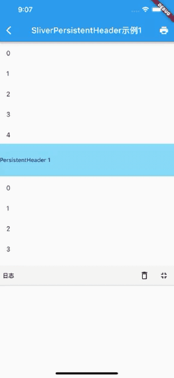
一些注意点
我们说过 SliverPersistentHeader 的 builder 参数 overlapsContent 一般不建议使用，使用时要当心。因为按照 overlapsContent 变量名的字面意思，只要有内容和 Sliver 重叠时就应该为 true，但是如果我们在上面示例的 builder 中打印一下 overlapsContent 的值就会发现第一个 PersistentHeader 1 的 overlapsContent 值一直都是 false，而 PersistentHeader 2 则是正常的，如果我们再添加几个 SliverPersistentHeader ，发现新添加的也都正常。总结一下：当有多个 SliverPersistentHeader时，需要注意第一个 SliverPersistentHeader 的 overlapsContent 值会一直为 false。
这可能是一个 bug，也可能就是这么设计的，因为 SliverPersistentHeader 的设计初衷主要是为了实现 SliverAppBar，可能并没有考虑到通用的场景，但是不管怎样，当前的 flutter 版本（2.5）中表现就是如此。为此，我们可以定一条约定：如果我们在使用 SliverPersistentHeader 构建子组件时需要依赖 overlapsContent 参数，则必须保证之前至少还有一个 SliverPersistentHeader 或 SliverAppBar（SliverAppBar 在当前 Flutter 版本的实现中内部包含了SliverPersistentHeader）。
6.10.3 总结
本节主要介绍了Flutter中常用的 Sliver，以及组合它们的 CustomScrollView。再次提醒读者：
- CustomScrollView 组合 Sliver 的原理是为所有子 Sliver 提供一个共享的 Scrollable，然后统一处理指定滑动方向的滑动事件。
- CustomScrollView 和 ListView、GridView、PageView 一样，都是完整的可滚动组件（同时拥有 Scrollable、Viewport、Sliver）。
- CustomScrollView 只能组合 Sliver，如果有孩子也是一个完整的可滚动组件（通过 SliverToBoxAdapter 嵌入）且它们的滑动方向一致时便不能正常工作。
下一节中我们将介绍如何通过 NestedScrollView 嵌套两个完整的可滚动组件。
6.11 自定义 Sliver
本节将通过自定义两个Sliver，来说明Sliver 布局协议和自定义 Sliver 的具体过程。
6.11.1 Sliver 布局协议
Sliver 的布局协议如下：
- Viewport 将当前布局和配置信息通过 SliverConstraints 传递给 Sliver。
- Sliver 确定自身的位置、绘制等信息，保存在 geometry 中（一个 SliverGeometry 类型的对象）。
- Viewport 读取 geometry 中的信息来对 Sliver 进行布局和绘制。
可以看到，这个过程有两个重要的对象 SliverConstraints 和 SliverGeometry ，我们先看看 SliverConstraints 的定义：
class SliverConstraints extends Constraints {
//主轴方向
AxisDirection? axisDirection;
//Sliver 沿着主轴从列表的哪个方向插入？枚举类型，正向或反向
GrowthDirection? growthDirection;
//用户滑动方向
ScrollDirection? userScrollDirection;
//当前Sliver理论上（可能会固定在顶部）已经滑出可视区域的总偏移
double? scrollOffset;
//当前Sliver之前的Sliver占据的总高度，因为列表是懒加载，如果不能预估时，该值为double.infinity
double? precedingScrollExtent;
//上一个 sliver 覆盖当前 sliver 的长度（重叠部分的长度），通常在 sliver 是 pinned/floating
//或者处于列表头尾时有效，我们在后面的小节中会有相关的例子。
double? overlap;
//当前Sliver在Viewport中的最大可以绘制的区域。
//绘制如果超过该区域会比较低效（因为不会显示）
double? remainingPaintExtent;
//纵轴的长度；如果列表滚动方向是垂直方向，则表示列表宽度。
double? crossAxisExtent;
//纵轴方向
AxisDirection? crossAxisDirection;
//Viewport在主轴方向的长度；如果列表滚动方向是垂直方向，则表示列表高度。
double? viewportMainAxisExtent;
//Viewport 预渲染区域的起点[-Viewport.cacheExtent, 0]
double? cacheOrigin;
//Viewport加载区域的长度，范围:
//[viewportMainAxisExtent,viewportMainAxisExtent + Viewport.cacheExtent*2]
double? remainingCacheExtent;
}
可以看见 SliverConstraints 中包含的信息非常多。当列表滑动时，如果某个 Sliver 已经进入了需要构建的区域，则列表会将 SliverConstraints 信息传递给该 Sliver，Sliver 就可以根据这些信息来确定自身的布局和绘制信息了。
Sliver 需要确定的是 SliverGeometry：
const SliverGeometry({
//Sliver在主轴方向预估长度，大多数情况是固定值，用于计算sliverConstraints.scrollOffset
this.scrollExtent = 0.0,
this.paintExtent = 0.0, // 可视区域中的绘制长度
this.paintOrigin = 0.0, // 绘制的坐标原点，相对于自身布局位置
//在 Viewport中占用的长度；如果列表滚动方向是垂直方向，则表示列表高度。
//范围[0,paintExtent]
double? layoutExtent,
this.maxPaintExtent = 0.0,//最大绘制长度
this.maxScrollObstructionExtent = 0.0,
double? hitTestExtent, // 点击测试的范围
bool? visible,// 是否显示
//是否会溢出Viewport，如果为true，Viewport便会裁剪
this.hasVisualOverflow = false,
//scrollExtent的修正值：layoutExtent变化后，为了防止sliver突然跳动（应用新的layoutExtent）
//可以先进行修正，具体的作用在后面 SliverFlexibleHeader 示例中会介绍。
this.scrollOffsetCorrection,
double? cacheExtent, // 在预渲染区域中占据的长度
})
Sliver布局模型和盒布局模型
两者布局流程基本相同：父组件告诉子组件约束信息 > 子组件根据父组件的约束确定自生大小 > 父组件获得子组件大小调整其位置。不同是：
- 父组件传递给子组件的约束信息不同。盒模型传递的是 BoxConstraints，而 Sliver 传递的是 SliverConstraints。
- 描述子组件布局信息的对象不同。盒模型的布局信息通过 Size 和 offset描述 ，而 Sliver的是通过 SliverGeometry 描述。
- 布局的起点不同。Sliver布局的起点一般是Viewport ，而盒模型布局的起点可以是任意的组件。
SliverConstraints 和 SliverGeometry 属性比较多，只看的话它们的含义并不好理解，下面我们将通过两个例子，通过实践来理解。
6.11.2 自定义 Sliver（一）SliverFlexibleHeader
1. SliverFlexibleHeader
我们实现一个类似旧版本微信朋友圈顶部头图的功能：即默认情况下顶部图片只显示一部分，当用户向下拽时图片的剩余部分会逐渐显示，如图6-28所示。
我们的思路是实现一个 Sliver，将它作为 CustomScrollView 的第一孩子，然后根据用户的滑动来动态调整 Sliver 的布局和显示。下面我们来实现一个 SliverFlexibleHeader，它会结合 CustomScrollView 实现上述效果。我们先看一下页面的整体实现代码：
@override
Widget build(BuildContext context) {
return CustomScrollView(
//为了能使CustomScrollView拉到顶部时还能继续往下拉，必须让 physics 支持弹性效果
physics: const BouncingScrollPhysics(parent: AlwaysScrollableScrollPhysics()),
slivers: [
//我们需要实现的 SliverFlexibleHeader 组件
SliverFlexibleHeader(
visibleExtent: 200,, // 初始状态在列表中占用的布局高度
// 为了能根据下拉状态变化来定制显示的布局，我们通过一个 builder 来动态构建布局。
builder: (context, availableHeight, direction) {
return GestureDetector(
onTap: () => print('tap'), //测试是否可以响应事件
child: Image(
image: AssetImage("imgs/avatar.png"),
width: 50.0,
height: availableHeight,
alignment: Alignment.bottomCenter,
fit: BoxFit.cover,
),
);
},
),
// 构建一个list
buildSliverList(30),
],
);
}
接下来，我们的重点是实现 SliverFlexibleHeader，由于涉及到 Sliver 布局，通过现有组件很难组合实现我们想要的功能，所以我们通过定制 RenderObject 的方式来实现它。为了能根据下拉位置的变化来动态调整，SliverFlexibleHeader 中我们通过一个 builder 来动态构建布局，当下拉位置发生变化时，builder 就会被回调。
为了清晰起见，我们先实现一个接收固定 widget 的 _SliverFlexibleHeader 组件，组件定义代码如下：
class _SliverFlexibleHeader extends SingleChildRenderObjectWidget {
const _SliverFlexibleHeader({
Key? key,
required Widget child,
this.visibleExtent = 0,
}) : super(key: key, child: child);
final double visibleExtent;
@override
RenderObject createRenderObject(BuildContext context) {
return _FlexibleHeaderRenderSliver(visibleExtent);
}
@override
void updateRenderObject(
BuildContext context, _FlexibleHeaderRenderSliver renderObject) {
renderObject..visibleExtent = visibleExtent;
}
}
这里我们继承的既不是 StatelessWidget，也不是 StatefulWidget，这是因为这两个组件主要的作用是组合 Widget，而我们要自定义 RenderObject，则需要继承 RenderObjectWidget，考虑到_SliverFlexibleHeader 有一个子节点，我们可以直接继承 SingleChildRenderObjectWidget 类，这样我们可以省去一些和布局无关的代码，比如绘制和事件的点击测试，这些功能 SingleChildRenderObjectWidget 中已经帮我们处理了。
下面我们实现 _FlexibleHeaderRenderSliver，核心代码就在 performLayout 中，读者可参考注释：
class _FlexibleHeaderRenderSliver extends RenderSliverSingleBoxAdapter {
_FlexibleHeaderRenderSliver(double visibleExtent)
: _visibleExtent = visibleExtent;
double _lastOverScroll = 0;
double _lastScrollOffset = 0;
late double _visibleExtent = 0;
set visibleExtent(double value) {
// 可视长度发生变化，更新状态并重新布局
if (_visibleExtent != value) {
_lastOverScroll = 0;
_visibleExtent = value;
markNeedsLayout();
}
}
@override
void performLayout() {
// 滑动距离大于_visibleExtent时则表示子节点已经在屏幕之外了
if (child == null || (constraints.scrollOffset > _visibleExtent)) {
geometry = SliverGeometry(scrollExtent: _visibleExtent);
return;
}
// 测试overlap,下拉过程中overlap会一直变化.
double overScroll = constraints.overlap < 0 ? constraints.overlap.abs() : 0;
var scrollOffset = constraints.scrollOffset;
// 在Viewport中顶部的可视空间为该 Sliver 可绘制的最大区域。
// 1. 如果Sliver已经滑出可视区域则 constraints.scrollOffset 会大于 _visibleExtent，
// 这种情况我们在一开始就判断过了。
// 2. 如果我们下拉超出了边界，此时 overScroll>0，scrollOffset 值为0，所以最终的绘制区域为
// _visibleExtent + overScroll.
double paintExtent = _visibleExtent + overScroll - constraints.scrollOffset;
// 绘制高度不超过最大可绘制空间
paintExtent = min(paintExtent, constraints.remainingPaintExtent);
//对子组件进行布局，关于 layout 详细过程我们将在本书后面布局原理相关章节详细介绍，现在只需知道
//子组件通过 LayoutBuilder可以拿到这里我们传递的约束对象（ExtraInfoBoxConstraints）
child!.layout(
constraints.asBoxConstraints(maxExtent: paintExtent),
parentUsesSize: false,
);
//最大为_visibleExtent，最小为 0
double layoutExtent = min(_visibleExtent, paintExtent);
//设置geometry，Viewport 在布局时会用到
geometry = SliverGeometry(
scrollExtent: layoutExtent,
paintOrigin: -overScroll,
paintExtent: paintExtent,
maxPaintExtent: paintExtent,
layoutExtent: layoutExtent,
);
}
}
在 performLayout 中我们通过 Viewport 传来的 SliverConstraints 结合子组件的高度，最终确定了 _SliverFlexibleHeader 的布局、绘制等相关信息，它们被保存在了 geometry 中，之后，Viewport 就可以读取 geometry 来确定 _SliverFlexibleHeader 在 Viewport 中的位置，然后进行绘制。读者可以手动修改一下 SliverGeometry 的各个属性，看看效果，这样可以加深理解。
现在还剩最后一个问题，_SliverFlexibleHeader 接收的是一个固定的 widget，我们如何在下拉位置发生变化时来重新构建 widget 呢？上面代码中，我们在 _SliverFlexibleHeader 的 performLayout 方法中，每当下拉位置发生变化，我们都会对其子组件重新进行 layout。那既然如此，我们可以创建一个 LayoutBuilder 用于在子组件重新布局时来动态构建 child。思路有了，那么实现很简单，我们看看最终的 SliverFlexibleHeader 实现：
typedef SliverFlexibleHeaderBuilder = Widget Function(
BuildContext context,
double maxExtent,
//ScrollDirection direction,
);
class SliverFlexibleHeader extends StatelessWidget {
const SliverFlexibleHeader({
Key? key,
this.visibleExtent = 0,
required this.builder,
}) : super(key: key);
final SliverFlexibleHeaderBuilder builder;
final double visibleExtent;
@override
Widget build(BuildContext context) {
return _SliverFlexibleHeader(
visibleExtent: visibleExtent,
child: LayoutBuilder(
builder: (BuildContext context, BoxConstraints constraints) {
return builder(
context,
constraints.maxHeight
);
},
),
);
}
}
当 _SliverFlexibleHeader 中每次对子组件进行布局时，都会触发 LayoutBuilder 来重新构建子 widget ，LayoutBuilder 中收到的 constraints 就是 _SliverFlexibleHeader 中对子组件进行布局时 传入的 constraints，即：
...
child!.layout(
//对子组件进行布局
constraints.asBoxConstraints(maxExtent: paintExtent),
parentUsesSize: true,
);
...
2. 传递额外的布局信息
在实际使用 SliverFlexibleHeader 时，我们有时在构建子 widget 时可能会依赖当前列表的滑动方向，当然我们可以在 SliverFlexibleHeader 的 builder 中记录前后的 availableHeight 的差来确定滑动方向，但是这样比较麻烦，需要使用者来手动处理。我们知道在滑动时，Sliver 的 SliverConstraints 中已经包含了 userScrollDirection，如果我们能将它经过统一的处理然后透传给 LayoutBuilder 的话就非常好好了，这样就不需要开发者在使用时自己维护滑动方向了！按照这个思路我们来实现一下。
首先我们遇到了第一个问题： LayoutBuilder 接收的参数我们没法指定。为此笔者想到了两种方案：
- 我们知道在上面的场景中，在对子组件进行布局时我们传给子组件的约束只使用了最大长度，最小长度是没有用到的，那么我们可以将滑动方向通过最小长度传递给 LayoutBuilder，然后再 LayoutBuilder 中取出即可。
- 定义一个新类，让它继承自
BoxConstraints，然后再添加一个可以保存 scrollDirection 的属性。
笔者试了一下，两种方案都能成功，那应该使用哪种方案呢？笔者建议使用方案 2 ，因为方案 1 有一个副作用就是会影响子组件布局。我们知道 LayoutBuilder 是在子组件 build 阶段执行的，当我们设置了最小长度后，我们虽然在 build 阶段没有用到它，但是在子组件在布局阶段仍然会应用此约束，所以最终还会影响子组件的布局。
下面我们按照方案 2 来实现：定义一个 ExtraInfoBoxConstraints 类，它可以携带约束之外的信息，为了尽可能通用，我们使用泛型：
class ExtraInfoBoxConstraints<T> extends BoxConstraints {
ExtraInfoBoxConstraints(
this.extra,
BoxConstraints constraints,
) : super(
minWidth: constraints.minWidth,
minHeight: constraints.minHeight,
maxWidth: constraints.maxWidth,
maxHeight: constraints.maxHeight,
);
// 额外的信息
final T extra;
@override
bool operator ==(Object other) {
if (identical(this, other)) return true;
return other is ExtraInfoBoxConstraints &&
super == other &&
other.extra == extra;
}
@override
int get hashCode {
return hashValues(super.hashCode, extra);
}
}
上面代码比较简单，要说明的是我们重载了“==”运算符，这是因为 Flutter 在布局期间在特定的情况下会检测前后两次 constraints 是否相等然后来决定是否需要重新布局，所以我们需要重载“==”运算符，否则可能会在最大/最小宽高不变但 extra 发生变化时不会触发 child 重新布局，这时也就不会触发 LayoutBuilder，这明显不符合预期，因为我们希望 extra 发生变化时，会触发 LayoutBuilder 重新构建 child。
首先我们修改 __FlexibleHeaderRenderSliver 的 performLayout 方法：
...
//对子组件进行布局，子组件通过 LayoutBuilder可以拿到这里我们传递的约束对象（ExtraInfoBoxConstraints）
child!.layout(
ExtraInfoBoxConstraints(
direction, //传递滑动方向
constraints.asBoxConstraints(maxExtent: paintExtent),
),
parentUsesSize: false,
);
...
然后修改 SliverFlexibleHeader 实现，在 LayoutBuilder 中就可以获取到滑动方向：
typedef SliverFlexibleHeaderBuilder = Widget Function(
BuildContext context,
double maxExtent,
ScrollDirection direction,
);
class SliverFlexibleHeader extends StatelessWidget {
const SliverFlexibleHeader({
Key? key,
this.visibleExtent = 0,
required this.builder,
}) : super(key: key);
final SliverFlexibleHeaderBuilder builder;
final double visibleExtent;
@override
Widget build(BuildContext context) {
return _SliverFlexibleHeader(
visibleExtent: visibleExtent,
child: LayoutBuilder(
builder: (BuildContext context, BoxConstraints constraints) {
return builder(
context,
constraints.maxHeight,
// 获取滑动方向
(constraints as ExtraInfoBoxConstraints<ScrollDirection>).extra,
);
},
),
);
}
}
最后我们看一下 SliverFlexibleHeader 中确定滑动方向的逻辑：
// 下拉过程中overlap会一直变化.
double overScroll = constraints.overlap < 0 ? constraints.overlap.abs() : 0;
var scrollOffset = constraints.scrollOffset;
_direction = ScrollDirection.idle;
// 根据前后的overScroll值之差确定列表滑动方向。注意，不能直接使用 constraints.userScrollDirection，
// 这是因为该参数只表示用户滑动操作的方向。比如当我们下拉超出边界时，然后松手，此时列表会弹回，即列表滚动
// 方向是向上，而此时用户操作已经结束，ScrollDirection 的方向是上一次的用户滑动方向(向下)，这是便有问题。
var distance = overScroll > 0
? overScroll - _lastOverScroll
: _lastScrollOffset - scrollOffset;
_lastOverScroll = overScroll;
_lastScrollOffset = scrollOffset;
if (constraints.userScrollDirection == ScrollDirection.idle) {
_direction = ScrollDirection.idle;
_lastOverScroll = 0;
} else if (distance > 0) {
_direction = ScrollDirection.forward;
} else if (distance < 0) {
_direction = ScrollDirection.reverse;
}
3. 高度修正 scrollOffsetCorrection
如果 visibleExtent 变化时，我们看看效果，如图6-29所示：

可以看到有一个突兀地跳动，这是因为 visibleExtent 变化时会导致 layoutExtent 发生变化，也就是说 SliverFlexibleHeader 在屏幕中所占的布局高度会发生变化，所以列表就出现跳动。但这个跳动效果太突兀了，我们知道每一个 Sliver 的高度是通过 scrollExtent 属性预估出来的，因此我们需要修正一下 scrollExtent，但是我们不能直接修改 scrollExtent 的值，直接修改不会有任何动画效果，仍然会跳动，为此，SliverGeometry 提供了一个 scrollOffsetCorrection 属性，它专门用于修正 scrollExtent ，我们只需要将要修正差值传给scrollOffsetCorrection，然后 Sliver 会自动执行一个动画效果过渡到我们期望的高度。
// 是否需要修正scrollOffset。当_visibleExtent值更新后，为了防止
// 视觉上突然地跳动，要先修正 scrollOffset。
double? _scrollOffsetCorrection;
set visibleExtent(double value) {
// 可视长度发生变化，更新状态并重新布局
if (_visibleExtent != value) {
_lastOverScroll = 0;
_reported = false;
// 计算修正值
_scrollOffsetCorrection = value - _visibleExtent;
_visibleExtent = value;
markNeedsLayout();
}
}
@override
void performLayout() {
// _visibleExtent 值更新后，为了防止突然的跳动，先修正 scrollOffset
if (_scrollOffsetCorrection != null) {
geometry = SliverGeometry(
//修正
scrollOffsetCorrection: _scrollOffsetCorrection,
);
_scrollOffsetCorrection = null;
return;
}
...
}
运行后效果如图6-30（动图可能太快，可以直接运行示例查看效果）：
4. 边界
在 SliverFlexibleHeader 构建子组件时开发者可能会依赖“当前的可用高度是否为0”来做一些特殊处理，比如记录是否子组件已经离开了屏幕。但是根据上面的实现，当用户滑动非常快时，子组件离开屏幕时的最后一次布局时传递的约束的 maxExtent 可能不为 0，而当 constraints.scrollOffset 大于 _visibleExtent 时我们在 performLayout 的一开始就返回了，因此 LayoutBuilder 的 builder 中就有可能收不到 maxExtent 为 0 时的回调。为了解决这个问题，我们只需要在每次 Sliver 离开屏幕时调用一次 child.layout 同时 将maxExtent 指定为 0 即可，为此我们修改一下：
void performLayout() {
if (child == null) {
geometry = SliverGeometry(scrollExtent: _visibleExtent);
return;
}
//当已经完全滑出屏幕时
if (constraints.scrollOffset > _visibleExtent) {
geometry = SliverGeometry(scrollExtent: _visibleExtent);
// 通知 child 重新布局，注意，通知一次即可，如果不通知，滑出屏幕后，child 在最后
// 一次构建时拿到的可用高度可能不为 0。因为使用者在构建子节点的时候，可能会依赖
// "当前的可用高度是否为0" 来做一些特殊处理，比如记录是否子节点已经离开了屏幕，
// 因此，我们需要在离开屏幕时确保LayoutBuilder的builder会被调用一次（构建子组件）。
if (!_reported) {
_reported = true;
child!.layout(
ExtraInfoBoxConstraints(
_direction, //传递滑动方向
constraints.asBoxConstraints(maxExtent: 0),
),
//我们不会使用自节点的 Size, 关于此参数更详细的内容见本书后面关于layout原理的介绍
parentUsesSize: false,
);
}
return;
}
//子组件回到了屏幕中，重置通知状态
_reported = false;
...
}
至此大功告成！
6.11.3 自定义 Sliver（二）SliverPersistentHeaderToBox
我们在上一节介绍了 SliverPersistentHeader，在使用时需要遵守两个规则 ：
-
必须显式指定高度。
-
如果我们在使用 SliverPersistentHeader 构建子组件时需要依赖 overlapsContent 参数，则必须保证之前至少还有一个 SliverPersistentHeader 或 SliverAppBar。
遵守上面这两条规则对于开发者来说心智负担还是较重的，比如对于规则 1，大多数时候我们是不知道 Header 具体的高度的，我们期望直接传一个 widget ，这个 widget 的实际高度 SliverPersistentHeader 能自动算出来。对于规则 2 就更不用说，不知道这个准是要踩坑的。综上，本节我们自定义一个 SliverPersistentHeaderToBox，它可以将任意 RenderBox 适配为可以固定到顶部的 Sliver 而不用显式指定高度，同时避免上面的问题 2。
第一步：我们先看一下定义 SliverPersistentHeaderToBox。
typedef SliverPersistentHeaderToBoxBuilder = Widget Function(
BuildContext context,
double maxExtent, //当前可用最大高度
bool fixed, // 是否已经固定
);
class SliverPersistentHeaderToBox extends StatelessWidget {
// 默认构造函数，直接接受一个 widget，不用显式指定高度
SliverPersistentHeaderToBox({
Key? key,
required Widget child,
}) : builder = ((a, b, c) => child),
super(key: key);
// builder 构造函数，需要传一个 builder，同样不需要显式指定高度
SliverPersistentHeaderToBox.builder({
Key? key,
required this.builder,
}) : super(key: key);
final SliverPersistentHeaderToBoxBuilder builder;
@override
Widget build(BuildContext context) {
return _SliverPersistentHeaderToBox(
// 通过 LayoutBuilder接收 Sliver 传递给子组件的布局约束信息
child: LayoutBuilder(
builder: (BuildContext context, BoxConstraints constraints) {
return builder(
context,
constraints.maxHeight,
//约束中需要传递的额外信息是一个bool类型，表示 Sliver 是否已经固定到顶部
(constraints as ExtraInfoBoxConstraints<bool>).extra,
);
},
),
);
}
}
和上面的 SliverFlexibleHeader 很像，不同的是SliverPersistentHeaderToBox传递给 child 的约束中的额外信息是一个 bool 类型，表示是否已经固定到顶部。
第二步：实现 _SliverPersistentHeaderToBox。
class _RenderSliverPersistentHeaderToBox extends RenderSliverSingleBoxAdapter {
@override
void performLayout() {
if (child == null) {
geometry = SliverGeometry.zero;
return;
}
child!.layout(
ExtraInfoBoxConstraints(
//只要 constraints.scrollOffset不为0，则表示已经有内容在当前Sliver下面了，即已经固定到顶部了
constraints.scrollOffset != 0,
constraints.asBoxConstraints(
// 我们将剩余的可绘制空间作为 header 的最大高度约束传递给 LayoutBuilder
maxExtent: constraints.remainingPaintExtent,
),
),
//我们要根据child大小来确定Sliver大小，所以后面需要用到child的大小（size）信息
parentUsesSize: true,
);
// 子节点 layout 后就能获取它的大小了
double childExtent;
switch (constraints.axis) {
case Axis.horizontal:
childExtent = child!.size.width;
break;
case Axis.vertical:
childExtent = child!.size.height;
break;
}
geometry = SliverGeometry(
scrollExtent: childExtent,
paintOrigin: 0, // 固定，如果不想固定应该传` - constraints.scrollOffset`
paintExtent: childExtent,
maxPaintExtent: childExtent,
);
}
// 重要，必须重写，下面介绍。
@override
double childMainAxisPosition(RenderBox child) => 0.0;
}
上面代码有四点需要注意：
- constraints.scrollOffset 不为 0 时，则表示已经固定到顶部了。
- 我们在布局阶段拿到子组件的 size 信息，然后通过通过子组件的大小来确定 Sliver 大小（设置geometry）。 这样就不再需要我们显式传高度值了。
- 我们通过给 paintOrigin 设为 0 来实现顶部固定效果；不固定到顶部时应该传
- constraints.scrollOffset，这个需要读者好好体会一下，也可以运行示例修改一下参数值来看看效果。 - 必须要重写
childMainAxisPosition，否则事件便会失效，该方法的返回值在“点击测试”中会用到。关于点击测试我们会在8.1节中介绍， 读者现在只需要知道该函数应该返回 paintOrigin 的位置即可。
大功告成！下面我们来测试一下！我们创建两个 header：
- 第一个 header：当没有滑动到顶部时，外观和正常列表项一样；当固定到顶部后，显示一个阴影。为了实现这个效果我们需要通过 SliverPersistentHeaderToBox.builder 来动态创建。
- 第二个 header: 一个普通的列表项，它接受一个 widget。
class SliverPersistentHeaderToBoxRoute extends StatelessWidget {
const SliverPersistentHeaderToBoxRoute({Key? key}) : super(key: key);
@override
Widget build(BuildContext context) {
return CustomScrollView(
slivers: [
buildSliverList(5),
SliverPersistentHeaderToBox.builder(builder: headerBuilder),
buildSliverList(5),
SliverPersistentHeaderToBox(child: wTitle('Title 2')),
buildSliverList(50),
],
);
}
// 当 header 固定后显示阴影
Widget headerBuilder(context, maxExtent, fixed) {
// 获取当前应用主题，关于主题相关内容将在后面章节介绍，现在
// 我们要从主题中获取一些颜色。
var theme = Theme.of(context);
return Material(
child: Container(
color: fixed ? Colors.white : theme.canvasColor,
child: wTitle('Title 1'),
),
elevation: fixed ? 4 : 0,
shadowColor: theme.appBarTheme.shadowColor,
);
}
// 我们约定小写字母 w 开头的函数代表是需要构建一个 Widget，这比 buildXX 会更简洁
Widget wTitle(String text) =>
ListTile(title: Text(text), onTap: () => print(text));
}
运行效果如图6-31：
我们实现的 SliverPersistentHeaderToBox 不仅不需要显式指定高度，而且它的 builder 函数的第三个参数值也正常了（和SliverPersistentHeaderToBox 数量无关）。
注意
如果我们要使用 SliverAppBar，则建议使用 SliverPersistentHeader ，因为 SliverPersistentHeader 设计的初衷就是为了实现 SliverAppBar，所以它们一起使用时会有更好的协同。如果将 SliverPersistentHeaderToBox 和 SliverAppBar 一起使用，则可能又会导致其他问题，所以建议就是：在没有使用 SliverAppBar 时，用 SliverPersistentHeaderToBox，如果使用了 SliverAppBar ，用SliverPersistentHeader。
6.11.4 总结
本节先介绍了 Sliver 布局模型，然后对比了和 盒布局模型的区别，至此 Flutter 中的两种布局模型就都介绍了。然后通过自定义 SliverFlexibleHeader 和 SliverPersistentHeaderToBox 两个 Sliver 来演示了自定义 Sliver 的步骤，同时加深了对 Sliver 布局的理解。
这里需要提醒读者，大多数应用的大多数页面都会涉及到滚动列表，因此理解并掌握可滚动组件和 Sliver 布局协议原理很有必要。
另外，笔者将SliverFlexibleHeader、ExtraInfoBoxConstraints 以及 SliverPersistentHeaderToBox 都收集到了flukit组件库 中，完整代码读者可以在flukit项目源码中找到。
6.12 嵌套可滚动组件 NestedScrollView
6.12.1 NestedScrollView
上一节中，我们知道 CustomScrollView 只能组合 Sliver，如果有孩子也是一个可滚动组件（通过 SliverToBoxAdapter 嵌入）且它们的滑动方向一致时便不能正常工作。为了解决这个问题，Flutter 中提供了一个NestedScrollView 组件，它的功能是组合（协调）两个可滚动组件，下面我们看看它的定义：
const NestedScrollView({
... //省略可滚动组件的通用属性
//header，sliver构造器
required this.headerSliverBuilder,
//可以接受任意的可滚动组件
required this.body,
this.floatHeaderSlivers = false,
})
我们先看一个简单的示例，需要实现的页面的最终效果如图6-32所示：

页面有三部分组成：
- 最上面是一个 AppBar，实现导航，要能固定在顶端
- AppBar 下面是一个 SliverList，可以有任意多个列表项，为了演示，我们指定5个列表项即可。
- 最下面是一个 ListView。
预期的效果是 SliverList 和 下面的 ListView 的滑动能够统一（而不是在下面ListView 上滑动时只有ListView响应滑动），整个页面在垂直方向是一个整体。实现代码如下：
Material(
child: NestedScrollView(
headerSliverBuilder: (BuildContext context, bool innerBoxIsScrolled) {
// 返回一个 Sliver 数组给外部可滚动组件。
return <Widget>[
SliverAppBar(
title: const Text('嵌套ListView'),
pinned: true, // 固定在顶部
forceElevated: innerBoxIsScrolled,
),
buildSliverList(5), //构建一个 sliverList
];
},
body: ListView.builder(
padding: const EdgeInsets.all(8),
physics: const ClampingScrollPhysics(), //重要
itemCount: 30,
itemBuilder: (BuildContext context, int index) {
return SizedBox(
height: 50,
child: Center(child: Text('Item $index')),
);
},
),
),
);
NestedScrollView 在逻辑上将可滚动组件分为了 header 和 body 两部分，header 部分我们可以认为是外部可滚动组件（outer scroll view），可以认为这个可滚动组件就是 CustomScrollView ，所以它只能接收 Sliver，我们通过headerSliverBuilder 来构建一个 Sliver 列表给外部的可滚动组件；而 body 部分可以接收任意的可滚动组件，该可滚动组件称为内部可滚动组件 （inner scroll view）。
Flutter 的源码注释中和文档中会有 outer 和 inner 两个概念，分别指代外部和内部可滚动组件。
6.12.2 NestedScrollView 原理
NestedScrollView 的结构图如图6-33所示：
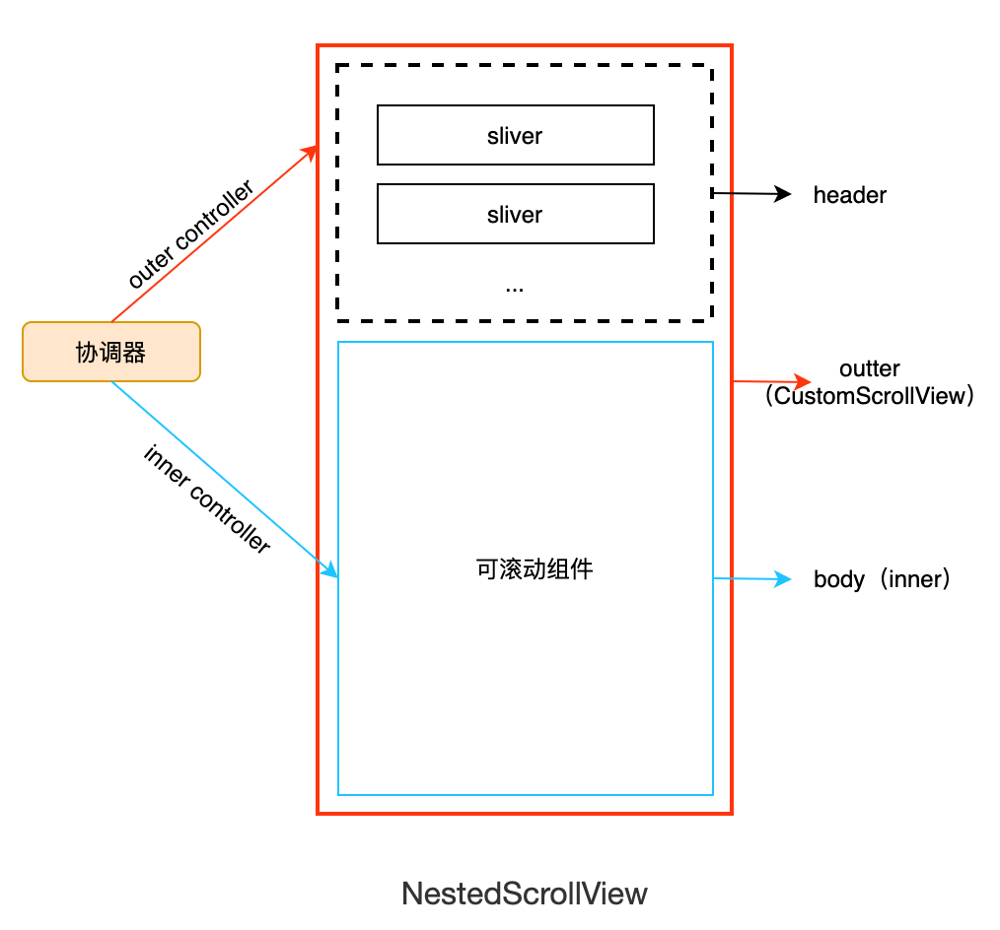
有几点解释：
- NestedScrollView 整体就是一个 CustomScrollView （实际上是 CustomScrollView 的一个子类）
- header 和 body 都是 CustomScrollView 的子 Sliver ，注意，虽然 body 是一个 RenderBox，但是它会被包装为 Sliver 。
- CustomScrollView 将其所有子 Sliver 在逻辑上分为 header 和 body 两部分：header 是前面部分、body 是后面部分。
- 当 body 是一个可滚动组件时， 它和 CustomScrollView 分别有一个 Scrollable ，由于 body 在 CustomScrollView 的内部，所以称其为内部可滚动组件，称 CustomScrollView 为外部可滚动组件；同时 因为 header 部分是 Sliver，所以没有独立的 Scrollable，滑动时是受 CustomScrollView 的 Scrollable 控制，所以为了区分，可以称 header 为外部可滚动组件（Flutter 文档中是这么约定的）。
- NestedScrollView 核心功能就是通过一个协调器来协调外部（outer）可滚动组件和内部（inner）可滚动组件的滚动，以使滑动效果连贯统一，协调器的实现原理就是分别给内外可滚动组件分别设置一个 controller，然后通过这两个controller 来协调控制它们的滚动。
综上，在使用 NestedScrollView 有两点需要注意：
- 要确认内部的可滚动组件（body）的
physics是否需要设置为ClampingScrollPhysics。比如上面的示例运行在 iOS 中时，ListView 如果没有设置为ClampingScrollPhysics，则用户快速滑动到顶部时，会执行一个弹性效果，此时 ListView 就会与 header 显得割裂（滑动效果不统一），所以需要设置。但是，如果 header 中只有一个 SliverAppBar 则不应该加，因为 SliverAppBar 是固定在顶部的，ListView 滑动到顶部时上面已经没有要继续往下滑动的元素了，所以此时出现弹性效果是符合预期的。 - 内部的可滚动组件（body的）不能设置
controller和primary，这是因为 NestedScrollView 的协调器中已经指定了它的 controller，如果重新设定则协调器将会失效。
6.12.3 SliverAppBar
上一节中我们已经使用过 SliverAppBar，但是并没有仔细介绍，因为它最常见的使用场景是在作为 NestedScrollView 的 header， 所以我们在本节介绍。
SliverAppBar 是 AppBar 的Sliver 版，大多数参数都相同，但 SliverAppBar 会有一些特有的功能，下面是 SliverAppBar 特有的一些配置：
const SliverAppBar({
this.collapsedHeight, // 收缩起来的高度
this.expandedHeight,// 展开时的高度
this.pinned = false, // 是否固定
this.floating = false, //是否漂浮
this.snap = false, // 当漂浮时，此参数才有效
bool forceElevated //导航栏下面是否一直显示阴影
...
})
- SliverAppBar 在 NestedScrollView 中随着用户的滑动是可以收缩和展开的，因此我们需要分别指定收缩和展开时的高度。
pinned为true时 SliverAppBar 会固定在 NestedScrollView 的顶部，行为 和 SliverPersistentHeader 的pinned功能一致。- floating 和 snap：floating 为 true 时，SliverAppBar 不会固定到顶部，当用户向上滑动到顶部时，SliverAppBar 也会滑出可视窗口。当用户反向滑动时，SliverAppBar 的 snap 为 true 时，此时无论 SliverAppBar 已经滑出屏幕多远，都会立即回到屏幕顶部；但如果 snap 为 false，则 SliverAppBar 只有当向下滑到边界时才会重新回到屏幕顶部。这一点和 SliverPersistentHeader 的
floating相似，但不同的是 SliverPersistentHeader 没有 snap 参数，当它的floating为 true 时，效果是等同于 SliverAppBar 的floating 和 snap 同时为 true 时的效果。
我们可以看到 SliverAppBar 的一些参数和 SliverPersistentHeader 很像，这是因为 SliverAppBar 内部就包含了一个 SliverPersistentHeader 组件，用于实现顶部固定和漂浮效果。
下面我们看一个示例：
class SnapAppBar extends StatelessWidget {
const SnapAppBar({Key? key}) : super(key: key);
@override
Widget build(BuildContext context) {
return Scaffold(
body: NestedScrollView(
headerSliverBuilder: (BuildContext context, bool innerBoxIsScrolled) {
return <Widget>[
// 实现 snap 效果
SliverAppBar(
floating: true,
snap: true,
expandedHeight: 200,
forceElevated: innerBoxIsScrolled,
flexibleSpace: FlexibleSpaceBar(
background: Image.asset(
"./imgs/sea.png",
fit: BoxFit.cover,
),
),
),
];
},
body: Builder(builder: (BuildContext context) {
return CustomScrollView(
slivers: <Widget>[
buildSliverList(100)
],
);
}),
),
);
}
}
运行后效果如图6-34：
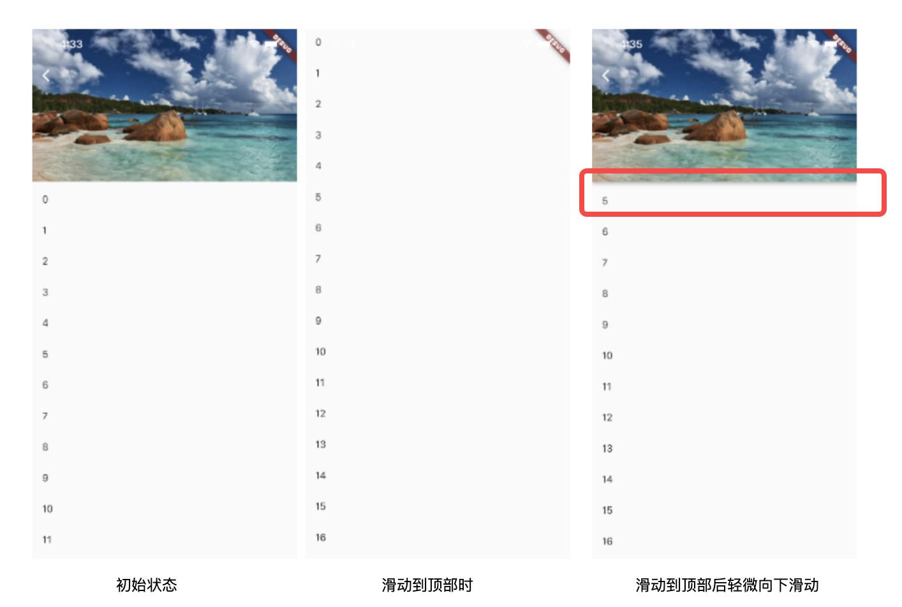
当我们滑动到顶部时，然后反向轻微滑动一点点，这时 SliverAppBar 就会整体回到屏幕顶部，但这时有一个问题，注意图中红色圈出来的部分，我们发现 SliverAppBar 返回到屏幕后将 0 - 4 这几个列表项遮住了！而按照正常的交互逻辑，预期是不能遮住的，因为往下滑时，用户就是为了看上面的内容，SliverAppBar 突然整体回到屏幕后正好遮住了上面的内容，这时，用户不得不继续往下再滑动一些距离，这个体验很不好。
为了解决这个问题，能立马想到的思路就是当 SliverAppBar 在回到屏幕的过程中，底下的列表项也同时往下滑相应的偏移就 OK 了。但是我们要动手时发现了问题，因为无论是想监听 header 的滑动信息和控制 body 的滑动都需要用到内外部可滚动组件的 controller ，而 controller 的持有者是 NestedScrollView 的协调器，我们很难获取取，就算能获取（通过context），那也是 NestedScrollView 的内部逻辑，我们不应在在外部去干涉，这样不符合职责分离模式，是有侵入性的 。 Flutter 的开发者也意识到了这点，于是提供了一个标准的解决方案，我们先看看如何解决，再解释，我们修改上面的代码：
class SnapAppBar extends StatelessWidget {
const SnapAppBar({Key? key}) : super(key: key);
@override
Widget build(BuildContext context) {
return Scaffold(
body: NestedScrollView(
headerSliverBuilder: (BuildContext context, bool innerBoxIsScrolled) {
return <Widget>[
SliverOverlapAbsorber(
handle: NestedScrollView.sliverOverlapAbsorberHandleFor(context),
sliver: SliverAppBar(
floating: true,
snap: true,
expandedHeight: 200,
flexibleSpace: FlexibleSpaceBar(
background: Image.asset(
"./imgs/sea.png",
fit: BoxFit.cover,
),
),
forceElevated: innerBoxIsScrolled,
),
),
];
},
body: Builder(builder: (BuildContext context) {
return CustomScrollView(
slivers: <Widget>[
SliverOverlapInjector(
handle: NestedScrollView.sliverOverlapAbsorberHandleFor(context),
),
buildSliverList(100)
],
);
}),
),
);
}
}
上面代码运行后问题解决，笔者就不贴图了。需要注意的是和之前的代码相比有两个部分发生了变化：
- SliverAppBar 用 SliverOverlapAbsorber 包裹了起来，它的作用就是获取 SliverAppBar 返回时遮住内部可滚动组件的部分的长度，这个长度就是 overlap（重叠） 的长度。
- 在 body 中往 CustomScrollView 的 Sliver列表的最前面插入了一个 SliverOverlapInjector，它会将 SliverOverlapAbsorber 中获取的 overlap 长度应用到内部可滚动组件中。这样在 SliverAppBar 返回时内部可滚动组件也会相应的同步滑动相应的距离。
SliverOverlapAbsorber 和 SliverOverlapInjector 都接收有一个 handle，给它传入的是NestedScrollView.sliverOverlapAbsorberHandleFor(context) 。好家伙，名字一个比一个长！但不要被吓到， handle 就是 SliverOverlapAbsorber 和 SliverOverlapInjector 的通信桥梁，即传递 overlap 长度。
以上便是 NestedScrollView 提供的标准解决方案，可能直观上看起来不是很优雅，但笔者站在NestedScrollView 开发者的角度暂时也没有想到更好的方式。不过，幸运的是，这是一个标准方案，有需要直接复制代码即可。
实际上，当 snap 为 true 时，只需要给 SliverAppBar 包裹一个 SliverOverlapAbsorber即可，而无需再给 CustomScrollView 添加 SliverOverlapInjector，因为这种情况 SliverOverlapAbsorber 会自动吸收 overlap，以调整自身的布局高度为 SliverAppBar 的实际高度，这样的话 header 的高度变化后就会自动将 body 向下撑（header 和 body 属于同一个 CustomScrollView），同时，handle 中的 overlap 长度始终 0。而只有当 SliverAppBar 被 SliverOverlapAbsorber 包裹且为固定模式时（pinned 为 true ），CustomScrollView 中添加SliverOverlapInjector 才有意义， handle 中的 overlap 长度不为 0。我们可以通过以下代码验证：
class SnapAppBar2 extends StatefulWidget {
const SnapAppBar2({Key? key}) : super(key: key);
@override
State<SnapAppBar2> createState() => _SnapAppBar2State();
}
class _SnapAppBar2State extends State<SnapAppBar2> {
// 将handle 缓存
late SliverOverlapAbsorberHandle handle;
void onOverlapChanged(){
// 打印 overlap length
print(handle.layoutExtent);
}
@override
Widget build(BuildContext context) {
return Scaffold(
body: NestedScrollView(
headerSliverBuilder: (BuildContext context, bool innerBoxIsScrolled) {
handle = NestedScrollView.sliverOverlapAbsorberHandleFor(context);
//添加监听前先移除旧的
handle.removeListener(onOverlapChanged);
//overlap长度发生变化时打印
handle.addListener(onOverlapChanged);
return <Widget>[
SliverOverlapAbsorber(
handle: handle,
sliver: SliverAppBar(
floating: true,
snap: true,
// pinned: true, // 放开注释，然后看日志
expandedHeight: 200,
flexibleSpace: FlexibleSpaceBar(
background: Image.asset(
"./imgs/sea.png",
fit: BoxFit.cover,
),
),
forceElevated: innerBoxIsScrolled,
),
),
];
},
body: LayoutBuilder(builder: (BuildContext context,cons) {
return CustomScrollView(
slivers: <Widget>[
SliverOverlapInjector(handle: handle),
buildSliverList(100)
],
);
}),
),
);
}
@override
void dispose() {
// 移除监听器
handle.removeListener(onOverlapChanged);
super.dispose();
}
}
我们可以分别查看 snap 模式下和 pinned 模式下控制台的输出即可验证。
综上，笔者还是建议 SliverOverlapAbsorber 和 SliverOverlapInjector 配对使用，这样可以避免我们日后将snap模式改为固定模式后忘记添加 SliverOverlapInjector 而导致bug。
6.12.4 嵌套 TabBarView
我们实现商城主页，它有三个Tab，为了获得更大的商品显示空间，我们希望用户向上滑动时 导航栏能够滑出屏幕，当用户向下滑动时，导航栏能迅速回到屏幕，因为向下滑动时可能是用户想看之前的商品，也可能是用户向找到导航栏返回。我们要实现的页面效果如下（初始状态）：
class NestedTabBarView1 extends StatelessWidget {
const NestedTabBarView1({Key? key}) : super(key: key);
@override
Widget build(BuildContext context) {
final _tabs = <String>['猜你喜欢', '今日特价', '发现更多'];
// 构建 tabBar
return DefaultTabController(
length: _tabs.length, // tab的数量.
child: Scaffold(
body: NestedScrollView(
headerSliverBuilder: (BuildContext context, bool innerBoxIsScrolled) {
return <Widget>[
SliverOverlapAbsorber(
handle: NestedScrollView.sliverOverlapAbsorberHandleFor(context),
sliver: SliverAppBar(
title: const Text('商城'),
floating: true,
snap: true,
forceElevated: innerBoxIsScrolled,
bottom: TabBar(
tabs: _tabs.map((String name) => Tab(text: name)).toList(),
),
),
),
];
},
body: TabBarView(
children: _tabs.map((String name) {
return Builder(
builder: (BuildContext context) {
return CustomScrollView(
key: PageStorageKey<String>(name),
slivers: <Widget>[
SliverOverlapInjector(
handle: NestedScrollView.sliverOverlapAbsorberHandleFor(context),
),
SliverPadding(
padding: const EdgeInsets.all(8.0),
sliver: buildSliverList(50),
),
],
);
},
);
}).toList(),
),
),
),
);
}
}
功能型Widget简介
功能型Widget指的是不会影响UI布局及外观的Widget，它们通常具有一定的功能，如事件监听、数据存储等，我们之前介绍过的FocusScope（焦点控制）、PageStorage（数据存储）、NotificationListener（事件监听）都属于功能型Widget。由于Widget是Flutter的一等公民，功能型Widget非常多，我们不会去一一介绍，本章中主要介绍几种常用的功能型Widget。
本章目录
- 7.1：导航返回拦截（WillPopScope）
- 7.2：数据共享（InheritedWidget）
- 7.3：跨组件状态共享（Provider）
- 7.4：颜色和主题（Theme）
- 7.5：ValueListenableBuilder
- 7.6：异步UI更新（FutureBuilder、StreamBuilder）
- 7.7：对话框详解
7.1 导航返回拦截（WillPopScope）
为了避免用户误触返回按钮而导致 App 退出，在很多 App 中都拦截了用户点击返回键的按钮，然后进行一些防误触判断，比如当用户在某一个时间段内点击两次时，才会认为用户是要退出（而非误触）。Flutter中可以通过WillPopScope来实现返回按钮拦截，我们看看WillPopScope的默认构造函数：
const WillPopScope({
...
required WillPopCallback onWillPop,
required Widget child
})
onWillPop是一个回调函数，当用户点击返回按钮时被调用（包括导航返回按钮及Android物理返回按钮）。该回调需要返回一个Future对象，如果返回的Future最终值为false时，则当前路由不出栈(不会返回)；最终值为true时，当前路由出栈退出。我们需要提供这个回调来决定是否退出。
示例
为了防止用户误触返回键退出，我们拦截返回事件。当用户在1秒内点击两次返回按钮时，则退出；如果间隔超过1秒则不退出，并重新记时。代码如下：
import 'package:flutter/material.dart';
class WillPopScopeTestRoute extends StatefulWidget {
@override
WillPopScopeTestRouteState createState() {
return WillPopScopeTestRouteState();
}
}
class WillPopScopeTestRouteState extends State<WillPopScopeTestRoute> {
DateTime? _lastPressedAt; //上次点击时间
@override
Widget build(BuildContext context) {
return WillPopScope(
onWillPop: () async {
if (_lastPressedAt == null ||
DateTime.now().difference(_lastPressedAt!) > Duration(seconds: 1)) {
//两次点击间隔超过1秒则重新计时
_lastPressedAt = DateTime.now();
return false;
}
return true;
},
child: Container(
alignment: Alignment.center,
child: Text("1秒内连续按两次返回键退出"),
),
);
}
}
读者可以运行示例看看效果。
7.2 数据共享（InheritedWidget）
7.2.1 InheritedWidget
我们先介绍一下InheritedWidget组件，然后重点探讨一下State类中didChangeDependencies 回调与InheritedWidget组件的关系。
1. 简介
InheritedWidget 是 Flutter 中非常重要的一个功能型组件，它提供了一种在 widget 树中从上到下共享数据的方式，比如我们在应用的根 widget 中通过InheritedWidget共享了一个数据，那么我们便可以在任意子widget 中来获取该共享的数据！这个特性在一些需要在整个 widget 树中共享数据的场景中非常方便！如Flutter SDK中正是通过 InheritedWidget 来共享应用主题（Theme）和 Locale (当前语言环境)信息的。
InheritedWidget和 React 中的 context 功能类似，和逐级传递数据相比，它们能实现组件跨级传递数据。InheritedWidget的在 widget 树中数据传递方向是从上到下的，这和通知Notification（将在下一章中介绍）的传递方向正好相反。
下面我们看一下之前“计数器”示例应用程序的InheritedWidget版本。需要说明的是，本示例主要是为了演示InheritedWidget的功能特性，并不是计数器的推荐实现方式。
首先，我们通过继承InheritedWidget，将当前计数器点击次数保存在ShareDataWidget的data属性中：
class ShareDataWidget extends InheritedWidget {
ShareDataWidget({
Key? key,
required this.data,
required Widget child,
}) : super(key: key, child: child);
final int data; //需要在子树中共享的数据，保存点击次数
//定义一个便捷方法，方便子树中的widget获取共享数据
static ShareDataWidget? of(BuildContext context) {
return context.dependOnInheritedWidgetOfExactType<ShareDataWidget>();
}
//该回调决定当data发生变化时，是否通知子树中依赖data的Widget重新build
@override
bool updateShouldNotify(ShareDataWidget old) {
return old.data != data;
}
}
然后我们实现一个子组件 _TestWidget，在其build方法中引用ShareDataWidget中的数据。同时，在其didChangeDependencies() 回调中打印日志：
class _TestWidget extends StatefulWidget {
@override
__TestWidgetState createState() => __TestWidgetState();
}
class __TestWidgetState extends State<_TestWidget> {
@override
Widget build(BuildContext context) {
//使用InheritedWidget中的共享数据
return Text(ShareDataWidget.of(context)!.data.toString());
}
@override //下文会详细介绍。
void didChangeDependencies() {
super.didChangeDependencies();
//父或祖先widget中的InheritedWidget改变(updateShouldNotify返回true)时会被调用。
//如果build中没有依赖InheritedWidget，则此回调不会被调用。
print("Dependencies change");
}
}
2. didChangeDependencies
在之前介绍StatefulWidget时，我们提到State对象有一个didChangeDependencies回调，它会在“依赖”发生变化时被Flutter 框架调用。而这个“依赖”指的就是子 widget 是否使用了父 widget 中InheritedWidget的数据！如果使用了，则代表子 widget 有依赖；如果没有使用则代表没有依赖。这种机制可以使子组件在所依赖的InheritedWidget变化时来更新自身！比如当主题、locale(语言)等发生变化时，依赖其的子 widget 的didChangeDependencies方法将会被调用。
最后，我们创建一个按钮，每点击一次，就将ShareDataWidget的值自增：
class InheritedWidgetTestRoute extends StatefulWidget {
@override
_InheritedWidgetTestRouteState createState() => _InheritedWidgetTestRouteState();
}
class _InheritedWidgetTestRouteState extends State<InheritedWidgetTestRoute> {
int count = 0;
@override
Widget build(BuildContext context) {
return Center(
child: ShareDataWidget( //使用ShareDataWidget
data: count,
child: Column(
mainAxisAlignment: MainAxisAlignment.center,
children: <Widget>[
Padding(
padding: const EdgeInsets.only(bottom: 20.0),
child: _TestWidget(),//子widget中依赖ShareDataWidget
),
ElevatedButton(
child: Text("Increment"),
//每点击一次，将count自增，然后重新build,ShareDataWidget的data将被更新
onPressed: () => setState(() => ++count),
)
],
),
),
);
}
}
运行后界面如图7-1所示：

每点击一次按钮，计数器就会自增，控制台就会打印一句日志：
I/flutter ( 8513): Dependencies change
可见依赖发生变化后，其didChangeDependencies()会被调用。但是读者要注意，如果_TestWidget的build方法中没有使用ShareDataWidget的数据，那么它的didChangeDependencies()将不会被调用，因为它并没有依赖ShareDataWidget。例如，我们将__TestWidgetState代码改为下面这样，didChangeDependencies()将不会被调用:
class __TestWidgetState extends State<_TestWidget> {
@override
Widget build(BuildContext context) {
// 使用InheritedWidget中的共享数据
// return Text(ShareDataWidget.of(context)!.data.toString());
return Text("text");
}
@override
void didChangeDependencies() {
super.didChangeDependencies();
// build方法中没有依赖InheritedWidget，此回调不会被调用。
print("Dependencies change");
}
}
上面的代码中，我们将build()方法中依赖ShareDataWidget的代码注释掉了，然后返回一个固定Text，这样一来，当点击Increment按钮后，ShareDataWidget的data虽然发生变化，但由于__TestWidgetState并未依赖ShareDataWidget，所以__TestWidgetState的didChangeDependencies方法不会被调用。其实，这个机制很好理解，因为在数据发生变化时只对使用该数据的Widget更新是合理并且性能友好的。
思考题：Flutter 框架是怎么知道子 widget 有没有依赖父级 InheritedWidget 的？
应该在didChangeDependencies()中做什么？
一般来说，子 widget 很少会重写此方法，因为在依赖改变后 Flutter 框架也都会调用build()方法重新构建组件树。但是，如果你需要在依赖改变后执行一些昂贵的操作，比如网络请求，这时最好的方式就是在此方法中执行，这样可以避免每次build()都执行这些昂贵操作。
7.2.2 深入了解InheritedWidget
现在来思考一下，在上面的例子中，如果我们只想在__TestWidgetState中引用ShareDataWidget数据，但却不希望在ShareDataWidget发生变化时调用__TestWidgetState的didChangeDependencies()方法应该怎么办？其实答案很简单，我们只需要将ShareDataWidget.of()的实现改一下即可：
//定义一个便捷方法，方便子树中的widget获取共享数据
static ShareDataWidget of(BuildContext context) {
//return context.dependOnInheritedWidgetOfExactType<ShareDataWidget>();
return context.getElementForInheritedWidgetOfExactType<ShareDataWidget>()!.widget as ShareDataWidget;
}
唯一的改动就是获取ShareDataWidget对象的方式，把dependOnInheritedWidgetOfExactType()方法换成了context.getElementForInheritedWidgetOfExactType<ShareDataWidget>().widget，那么他们到底有什么区别呢，我们看一下这两个方法的源码（实现代码在Element类中，Context和Element的关系我们将在后面专门介绍）：
@override
InheritedElement getElementForInheritedWidgetOfExactType<T extends InheritedWidget>() {
final InheritedElement ancestor = _inheritedWidgets == null ? null : _inheritedWidgets[T];
return ancestor;
}
@override
InheritedWidget dependOnInheritedWidgetOfExactType({ Object aspect }) {
assert(_debugCheckStateIsActiveForAncestorLookup());
final InheritedElement ancestor = _inheritedWidgets == null ? null : _inheritedWidgets[T];
//多出的部分
if (ancestor != null) {
return dependOnInheritedElement(ancestor, aspect: aspect) as T;
}
_hadUnsatisfiedDependencies = true;
return null;
}
我们可以看到，dependOnInheritedWidgetOfExactType() 比 getElementForInheritedWidgetOfExactType()多调了dependOnInheritedElement方法，dependOnInheritedElement源码如下：
@override
InheritedWidget dependOnInheritedElement(InheritedElement ancestor, { Object aspect }) {
assert(ancestor != null);
_dependencies ??= HashSet<InheritedElement>();
_dependencies.add(ancestor);
ancestor.updateDependencies(this, aspect);
return ancestor.widget;
}
可以看到dependOnInheritedElement方法中主要是注册了依赖关系！看到这里也就清晰了，调用dependOnInheritedWidgetOfExactType() 和 getElementForInheritedWidgetOfExactType()的区别就是前者会注册依赖关系，而后者不会，所以在调用dependOnInheritedWidgetOfExactType()时，InheritedWidget和依赖它的子孙组件关系便完成了注册，之后当InheritedWidget发生变化时，就会更新依赖它的子孙组件，也就是会调这些子孙组件的didChangeDependencies()方法和build()方法。而当调用的是 getElementForInheritedWidgetOfExactType()时，由于没有注册依赖关系，所以之后当InheritedWidget发生变化时，就不会更新相应的子孙Widget。
注意，如果将上面示例中ShareDataWidget.of()方法实现改成调用getElementForInheritedWidgetOfExactType()，运行示例后，点击"Increment"按钮，会发现__TestWidgetState 的didChangeDependencies()方法确实不会再被调用，但是其build()仍然会被调用！造成这个的原因其实是，点击"Increment"按钮后，会调用_InheritedWidgetTestRouteState的setState()方法，此时会重新构建整个页面，由于示例中，__TestWidget 并没有任何缓存，所以它也都会被重新构建，所以也会调用build()方法。
那么，现在就带来了一个问题：实际上，我们只想更新子树中依赖了ShareDataWidget的组件，而现在只要调用_InheritedWidgetTestRouteState的setState()方法，所有子节点都会被重新build，这很没必要，那么有什么办法可以避免呢？答案是缓存！一个简单的做法就是通过封装一个StatefulWidget，将子Widget树缓存起来，具体做法下一节我们将通过实现一个Provider Widget 来演示如何缓存，以及如何利用InheritedWidget 来实现 Flutter 全局状态共享。
7.3 跨组件状态共享
7.3.1 通过事件同步状态
在 Flutter 开发中，状态管理是一个永恒的话题。一般的原则是：如果状态是组件私有的，则应该由组件自己管理；如果状态要跨组件共享，则该状态应该由各个组件共同的父元素来管理。对于组件私有的状态管理很好理解，但对于跨组件共享的状态，管理的方式就比较多了，如使用全局事件总线EventBus（将在下一章中介绍），它是一个观察者模式的实现，通过它就可以实现跨组件状态同步：状态持有方（发布者）负责更新、发布状态，状态使用方（观察者）监听状态改变事件来执行一些操作。下面我们看一个登录状态同步的简单示例：
定义事件：
enum Event{
login,
... //省略其他事件
}
登录页代码大致如下：
// 登录状态改变后发布状态改变事件
bus.emit(Event.login);
依赖登录状态的页面：
void onLoginChanged(e){
//登录状态变化处理逻辑
}
@override
void initState() {
//订阅登录状态改变事件
bus.on(Event.login,onLogin);
super.initState();
}
@override
void dispose() {
//取消订阅
bus.off(Event.login,onLogin);
super.dispose();
}
我们可以发现，通过观察者模式来实现跨组件状态共享有一些明显的缺点：
- 必须显式定义各种事件，不好管理。
- 订阅者必须需显式注册状态改变回调，也必须在组件销毁时手动去解绑回调以避免内存泄露。
在Flutter当中有没有更好的跨组件状态管理方式了呢？答案是肯定的，那怎么做的？我们想想前面介绍的InheritedWidget，它的天生特性就是能绑定InheritedWidget与依赖它的子孙组件的依赖关系，并且当InheritedWidget数据发生变化时，可以自动更新依赖的子孙组件！利用这个特性，我们可以将需要跨组件共享的状态保存在InheritedWidget中，然后在子组件中引用InheritedWidget即可，Flutter社区著名的Provider包正是基于这个思想实现的一套跨组件状态共享解决方案，接下来我们便详细介绍一下Provider的用法及原理。
7.3.2 Provider
Provider是Flutter官方出的状态管理包，为了加强读者对其原理的理解，我们不直接去看Provider包的源代码，相反，我会带着你根据上面描述的通过InheritedWidget实现的思路来一步一步地实现一个最小功能的Provider。
1. 自实现Provider
首先，我们需要一个能够保存共享数据的InheritedWidget，由于具体业务数据类型不可预期，为了通用性，我们使用泛型，定义一个通用的InheritedProvider类，它继承自InheritedWidget：
// 一个通用的InheritedWidget，保存需要跨组件共享的状态
class InheritedProvider<T> extends InheritedWidget {
InheritedProvider({
required this.data,
required Widget child,
}) : super(child: child);
final T data;
@override
bool updateShouldNotify(InheritedProvider<T> old) {
//在此简单返回true，则每次更新都会调用依赖其的子孙节点的`didChangeDependencies`。
return true;
}
}
数据保存的地方有了，那么接下来我们需要做的就是在数据发生变化的时候来重新构建InheritedProvider，那么现在就面临两个问题：
- 数据发生变化怎么通知？
- 谁来重新构建
InheritedProvider？
第一个问题其实很好解决，我们当然可以使用之前介绍的eventBus来进行事件通知，但是为了更贴近Flutter开发，我们使用Flutter SDK中提供的ChangeNotifier类 ，它继承自Listenable，也实现了一个Flutter风格的发布者-订阅者模式，ChangeNotifier定义大致如下：
class ChangeNotifier implements Listenable {
List listeners=[];
@override
void addListener(VoidCallback listener) {
//添加监听器
listeners.add(listener);
}
@override
void removeListener(VoidCallback listener) {
//移除监听器
listeners.remove(listener);
}
void notifyListeners() {
//通知所有监听器，触发监听器回调
listeners.forEach((item)=>item());
}
... //省略无关代码
}
我们可以通过调用addListener()和removeListener()来添加、移除监听器（订阅者）；通过调用notifyListeners() 可以触发所有监听器回调。
现在，我们将要共享的状态放到一个Model类中，然后让它继承自ChangeNotifier，这样当共享的状态改变时，我们只需要调用notifyListeners() 来通知订阅者，然后由订阅者来重新构建InheritedProvider，这也是第二个问题的答案！接下来我们便实现这个订阅者类：
class ChangeNotifierProvider<T extends ChangeNotifier> extends StatefulWidget {
ChangeNotifierProvider({
Key? key,
this.data,
this.child,
});
final Widget child;
final T data;
//定义一个便捷方法，方便子树中的widget获取共享数据
static T of<T>(BuildContext context) {
final type = _typeOf<InheritedProvider<T>>();
final provider = context.dependOnInheritedWidgetOfExactType<InheritedProvider<T>>();
return provider.data;
}
@override
_ChangeNotifierProviderState<T> createState() => _ChangeNotifierProviderState<T>();
}
该类继承StatefulWidget，然后定义了一个of()静态方法供子类方便获取Widget树中的InheritedProvider中保存的共享状态(model)，下面我们实现该类对应的_ChangeNotifierProviderState类：
class _ChangeNotifierProviderState<T extends ChangeNotifier> extends State<ChangeNotifierProvider<T>> {
void update() {
//如果数据发生变化（model类调用了notifyListeners），重新构建InheritedProvider
setState(() => {});
}
@override
void didUpdateWidget(ChangeNotifierProvider<T> oldWidget) {
//当Provider更新时，如果新旧数据不"=="，则解绑旧数据监听，同时添加新数据监听
if (widget.data != oldWidget.data) {
oldWidget.data.removeListener(update);
widget.data.addListener(update);
}
super.didUpdateWidget(oldWidget);
}
@override
void initState() {
// 给model添加监听器
widget.data.addListener(update);
super.initState();
}
@override
void dispose() {
// 移除model的监听器
widget.data.removeListener(update);
super.dispose();
}
@override
Widget build(BuildContext context) {
return InheritedProvider<T>(
data: widget.data,
child: widget.child,
);
}
}
可以看到_ChangeNotifierProviderState类的主要作用就是监听到共享状态（model）改变时重新构建Widget树。注意，在_ChangeNotifierProviderState类中调用setState()方法，widget.child始终是同一个，所以执行build时，InheritedProvider的child引用的始终是同一个子widget，所以widget.child并不会重新build，这也就相当于对child进行了缓存！当然如果ChangeNotifierProvider父级Widget重新build时，则其传入的child便有可能会发生变化。
现在我们所需要的各个工具类都已完成，下面我们通过一个购物车的例子来看看怎么使用上面的这些类。
2. 购物车示例
我们需要实现一个显示购物车中所有商品总价的功能：
- 向购物车中添加新商品时总价更新
定义一个Item类，用于表示商品信息：
class Item {
Item(this.price, this.count);
double price; //商品单价
int count; // 商品份数
//... 省略其他属性
}
定义一个保存购物车内商品数据的CartModel类:
class CartModel extends ChangeNotifier {
// 用于保存购物车中商品列表
final List<Item> _items = [];
// 禁止改变购物车里的商品信息
UnmodifiableListView<Item> get items => UnmodifiableListView(_items);
// 购物车中商品的总价
double get totalPrice =>
_items.fold(0, (value, item) => value + item.count * item.price);
// 将 [item] 添加到购物车。这是唯一一种能从外部改变购物车的方法。
void add(Item item) {
_items.add(item);
// 通知监听器（订阅者），重新构建InheritedProvider， 更新状态。
notifyListeners();
}
}
CartModel 即要跨组件共享的model类。最后我们构建示例页面：
class ProviderRoute extends StatefulWidget {
@override
_ProviderRouteState createState() => _ProviderRouteState();
}
class _ProviderRouteState extends State<ProviderRoute> {
@override
Widget build(BuildContext context) {
return Center(
child: ChangeNotifierProvider<CartModel>(
data: CartModel(),
child: Builder(builder: (context) {
return Column(
children: <Widget>[
Builder(builder: (context){
var cart=ChangeNotifierProvider.of<CartModel>(context);
return Text("总价: ${cart.totalPrice}");
}),
Builder(builder: (context){
print("ElevatedButton build"); //在后面优化部分会用到
return ElevatedButton(
child: Text("添加商品"),
onPressed: () {
//给购物车中添加商品，添加后总价会更新
ChangeNotifierProvider.of<CartModel>(context).add(Item(20.0, 1));
},
);
}),
],
);
}),
),
);
}
}
运行示例后效果如图7-2所示：

每次点击”添加商品“按钮，总价就会增加20，我们期望的功能实现了！可能有些读者会疑惑，我们饶了一大圈实现这么简单的功能有意义么？其实，就这个例子来看，只是更新同一个路由页中的一个状态，我们使用ChangeNotifierProvider的优势并不明显，但是如果我们是做一个购物APP呢？由于购物车数据是通常是会在整个APP中共享的，比如会跨路由共享。如果我们将ChangeNotifierProvider放在整个应用的Widget树的根上，那么整个APP就可以共享购物车的数据了，这时ChangeNotifierProvider的优势将会非常明显。
虽然上面的例子比较简单，但它却将Provider的原理和流程体现的很清楚，图7-3是Provider的原理图：

Model变化后会自动通知ChangeNotifierProvider（订阅者），ChangeNotifierProvider内部会重新构建InheritedWidget，而依赖该InheritedWidget的子孙Widget就会更新。
我们可以发现使用Provider，将会带来如下收益：
- 我们的业务代码更关注数据了，只要更新Model，则UI会自动更新，而不用在状态改变后再去手动调用
setState()来显式更新页面。 - 数据改变的消息传递被屏蔽了，我们无需手动去处理状态改变事件的发布和订阅了，这一切都被封装在Provider中了。这真的很棒，帮我们省掉了大量的工作！
- 在大型复杂应用中，尤其是需要全局共享的状态非常多时，使用Provider将会大大简化我们的代码逻辑，降低出错的概率，提高开发效率。
7.3.3 优化
我们上面实现的ChangeNotifierProvider是有两个明显缺点：代码组织问题和性能问题，下面我们一一讨论。
1. 代码组织问题
我们先看一下构建显示总价Text的代码：
Builder(builder: (context){
var cart=ChangeNotifierProvider.of<CartModel>(context);
return Text("总价: ${cart.totalPrice}");
})
这段代码有两点可以优化：
- 需要显式调用
ChangeNotifierProvider.of，当APP内部依赖CartModel很多时，这样的代码将很冗余。 - 语义不明确；由于
ChangeNotifierProvider是订阅者，那么依赖CartModel的Widget自然就是订阅者，其实也就是状态的消费者，如果我们用Builder来构建，语义就不是很明确；如果我们能使用一个具有明确语义的Widget，比如就叫Consumer，这样最终的代码语义将会很明确，只要看到Consumer，我们就知道它是依赖某个跨组件或全局的状态。
为了优化这两个问题，我们可以封装一个Consumer Widget，实现如下：
// 这是一个便捷类，会获得当前context和指定数据类型的Provider
class Consumer<T> extends StatelessWidget {
Consumer({
Key? key,
required this.builder,
}) : super(key: key);
final Widget Function(BuildContext context, T? value) builder;
@override
Widget build(BuildContext context) {
return builder(
context,
ChangeNotifierProvider.of<T>(context),
);
}
}
Consumer实现非常简单，它通过指定模板参数，然后再内部自动调用ChangeNotifierProvider.of获取相应的Model，并且Consumer这个名字本身也是具有确切语义（消费者）。现在上面的代码块可以优化为如下这样：
Consumer<CartModel>(
builder: (context, cart)=> Text("总价: ${cart.totalPrice}");
)
是不是很优雅！
2. 性能问题
上面的代码还有一个性能问题，就在构建”添加按钮“的代码处：
Builder(builder: (context) {
print("ElevatedButton build"); // 构建时输出日志
return ElevatedButton(
child: Text("添加商品"),
onPressed: () {
ChangeNotifierProvider.of<CartModel>(context).add(Item(20.0, 1));
},
);
}
我们点击”添加商品“按钮后，由于购物车商品总价会变化，所以显示总价的Text更新是符合预期的，但是”添加商品“按钮本身没有变化，是不应该被重新build的。但是我们运行示例，每次点击”添加商品“按钮，控制台都会输出"ElevatedButton build"日志，也就是说”添加商品“按钮在每次点击时其自身都会重新build！这是为什么呢？如果你已经理解了InheritedWidget的更新机制，那么答案一眼就能看出：这是因为构建ElevatedButton的Builder中调用了ChangeNotifierProvider.of，也就是说依赖了Widget树上面的InheritedWidget（即InheritedProvider ）Widget，所以当添加完商品后，CartModel发生变化，会通知ChangeNotifierProvider, 而ChangeNotifierProvider则会重新构建子树，所以InheritedProvider将会更新，此时依赖它的子孙Widget就会被重新构建。
问题的原因搞清楚了，那么我们如何避免这不必要重构呢？既然按钮重新被build是因为按钮和InheritedWidget建立了依赖关系，那么我们只要打破或解除这种依赖关系就可以了。那么如何解除按钮和InheritedWidget的依赖关系呢？我们上一节介绍InheritedWidget时已经讲过了：调用dependOnInheritedWidgetOfExactType() 和 getElementForInheritedWidgetOfExactType()的区别就是前者会注册依赖关系，而后者不会。所以我们只需要将ChangeNotifierProvider.of的实现改为下面这样即可：
//添加一个listen参数，表示是否建立依赖关系
static T of<T>(BuildContext context, {bool listen = true}) {
final type = _typeOf<InheritedProvider<T>>();
final provider = listen
? context.dependOnInheritedWidgetOfExactType<InheritedProvider<T>>()
: context.getElementForInheritedWidgetOfExactType<InheritedProvider<T>>()?.widget
as InheritedProvider<T>;
return provider.data;
}
然后我们将调用部分代码改为：
Column(
children: <Widget>[
Consumer<CartModel>(
builder: (BuildContext context, cart) =>Text("总价: ${cart.totalPrice}"),
),
Builder(builder: (context) {
print("ElevatedButton build");
return ElevatedButton(
child: Text("添加商品"),
onPressed: () {
// listen 设为false，不建立依赖关系
ChangeNotifierProvider.of<CartModel>(context, listen: false)
.add(Item(20.0, 1));
},
);
})
],
)
修改后再次运行上面的示例，我们会发现点击”添加商品“按钮后，控制台不会再输出"ElevatedButton build"了，即按钮不会被重新构建了。而总价仍然会更新，这是因为Consumer中调用ChangeNotifierProvider.of时listen值为默认值true，所以还是会建立依赖关系。
至此我们便实现了一个迷你的Provider，它具备Pub上Provider Package中的核心功能；但是我们的迷你版功能并不全面，如只实现了一个可监听的ChangeNotifierProvider，并没有实现只用于数据共享的Provider；另外，我们的实现有些边界也没有考虑的到，比如如何保证在Widget树重新build时Model始终是单例等。所以建议读者在实战中还是使用Provider Package，而本节实现这个迷你Provider的主要目的主要是为了帮助读者了解Provider Package底层的原理。
7.3.4 其他状态管理包
现在Flutter社区已经有很多专门用于状态管理的包了，在此我们列出几个相对评分比较高的：
| 包名 | 介绍 |
|---|---|
| Provider & Scoped Model | 这两个包都是基于InheritedWidget的，原理相似 |
| Redux | 是Web开发中React生态链中Redux包的Flutter实现 |
| MobX | 是Web开发中React生态链中MobX包的Flutter实现 |
| BLoC | 是BLoC模式的Flutter实现 |
在此笔者不对这些包做推荐，读者有兴趣都可以研究一下，了解它们各自的思想。
7.3.5 总结
本节通过介绍事件总线在跨组件共享中的一些缺点引出了通过InheritedWidget来实现状态的共享的思想，然后基于该思想实现了一个简单的 Provider，在实现的过程中也更深入的探索了InheritedWidget与其依赖项的注册机制和更新机制。通过本节的学习，读者应该达到两个目标，首先是对InheritedWidget彻底吃透，其次是 Provider 的设计思想。
InheritedWidget是Flutter中非常重要的一个Widget，像国际化、主题等都是通过它来实现，所以我们也不惜篇幅，通过好几节来介绍它的，在下一节中，我们将介绍另一个基于InheritedWidget的组件Theme(主题)。
7.4 颜色和主题
7.4.1 颜色
在介绍主题前我们先了解一些Flutter中的 Color 类。Color 类中颜色以一个 int 值保存，我们知道显示器颜色是由红、绿、蓝三基色组成，每种颜色占8比特，存储结构如下：
| Bit（位） | 颜色 |
|---|---|
| 0-7 | 蓝色 |
| 8-15 | 绿色 |
| 16-23 | 红色 |
| 24-31 | Alpha (不透明度) |
上面表格中的字段在 Color 类中都有对应的属性，而Color中的众多方法也就是操作这些属性的，由于大多比较简单，读者可以查看类定义了解。在此我们主要讨论一下色值如何转换为Color对象、颜色亮度以及MaterialColor。
1. 如何将颜色字符串转成 Color 对象
如 Web 开发中的色值通常是一个字符串如"#dc380d"，它是一个 RGB 值，我们可以通过下面这些方法将其转为Color类：
Color(0xffdc380d); //如果颜色固定可以直接使用整数值
//颜色是一个字符串变量
var c = "dc380d";
Color(int.parse(c,radix:16)|0xFF000000) //通过位运算符将Alpha设置为FF
Color(int.parse(c,radix:16)).withAlpha(255) //通过方法将Alpha设置为FF
2. 颜色亮度
假如，我们要实现一个背景颜色和Title可以自定义的导航栏，并且背景色为深色时我们应该让Title显示为浅色；背景色为浅色时，Title 显示为深色。要实现这个功能，我们就需要来计算背景色的亮度，然后动态来确定Title的颜色。Color 类中提供了一个computeLuminance()方法，它可以返回一个[0-1]的一个值，数字越大颜色就越浅，我们可以根据它来动态确定Title的颜色，下面是导航栏NavBar的简单实现：
class NavBar extends StatelessWidget {
final String title;
final Color color; //背景颜色
NavBar({
Key? key,
required this.color,
required this.title,
});
@override
Widget build(BuildContext context) {
return Container(
constraints: BoxConstraints(
minHeight: 52,
minWidth: double.infinity,
),
decoration: BoxDecoration(
color: color,
boxShadow: [
//阴影
BoxShadow(
color: Colors.black26,
offset: Offset(0, 3),
blurRadius: 3,
),
],
),
child: Text(
title,
style: TextStyle(
fontWeight: FontWeight.bold,
//根据背景色亮度来确定Title颜色
color: color.computeLuminance() < 0.5 ? Colors.white : Colors.black,
),
),
alignment: Alignment.center,
);
}
}
测试代码如下：
Column(
children: <Widget>[
//背景为蓝色，则title自动为白色
NavBar(color: Colors.blue, title: "标题"),
//背景为白色，则title自动为黑色
NavBar(color: Colors.white, title: "标题"),
]
)
运行效果如图7-4所示：

3. MaterialColor
MaterialColor是实现Material Design中的颜色的类，它包含一种颜色的10个级别的渐变色。MaterialColor通过"[]"运算符的索引值来代表颜色的深度，有效的索引有：50，100，200，…，900，数字越大，颜色越深。MaterialColor的默认值为索引等于500的颜色。举个例子，Colors.blue是预定义的一个MaterialColor类对象，定义如下：
static const MaterialColor blue = MaterialColor(
_bluePrimaryValue,
<int, Color>{
50: Color(0xFFE3F2FD),
100: Color(0xFFBBDEFB),
200: Color(0xFF90CAF9),
300: Color(0xFF64B5F6),
400: Color(0xFF42A5F5),
500: Color(_bluePrimaryValue),
600: Color(0xFF1E88E5),
700: Color(0xFF1976D2),
800: Color(0xFF1565C0),
900: Color(0xFF0D47A1),
},
);
static const int _bluePrimaryValue = 0xFF2196F3;
我们可以根据 shadeXX 来获取具体索引的颜色。Colors.blue.shade50到Colors.blue.shade900的色值从浅蓝到深蓝渐变，效果如图7-5所示：

7.4.2 主题（Theme）
Theme组件可以为Material APP定义主题数据（ThemeData）。Material组件库里很多组件都使用了主题数据，如导航栏颜色、标题字体、Icon样式等。Theme内会使用InheritedWidget来为其子树共享样式数据。
1. ThemeData
ThemeData用于保存是Material 组件库的主题数据，Material组件需要遵守相应的设计规范，而这些规范可自定义部分都定义在ThemeData中了，所以我们可以通过ThemeData来自定义应用主题。在子组件中，我们可以通过Theme.of方法来获取当前的ThemeData。
注意：Material Design 设计规范中有些是不能自定义的，如导航栏高度，ThemeData只包含了可自定义部分。
我们看看ThemeData部分数据定义：
ThemeData({
Brightness? brightness, //深色还是浅色
MaterialColor? primarySwatch, //主题颜色样本，见下面介绍
Color? primaryColor, //主色，决定导航栏颜色
Color? cardColor, //卡片颜色
Color? dividerColor, //分割线颜色
ButtonThemeData buttonTheme, //按钮主题
Color dialogBackgroundColor,//对话框背景颜色
String fontFamily, //文字字体
TextTheme textTheme,// 字体主题，包括标题、body等文字样式
IconThemeData iconTheme, // Icon的默认样式
TargetPlatform platform, //指定平台，应用特定平台控件风格
ColorScheme? colorScheme,
...
})
上面只是ThemeData的一小部分属性，完整的数据定义读者可以查看SDK。上面属性中需要说明的是primarySwatch，它是主题颜色的一个"样本色"，通过这个样本色可以在一些条件下生成一些其他的属性，例如，如果没有指定primaryColor，并且当前主题不是深色主题，那么primaryColor就会默认为primarySwatch指定的颜色，还有一些相似的属性如indicatorColor也会受primarySwatch影响。
2. 实例
我们实现一个路由换肤功能：
class ThemeTestRoute extends StatefulWidget {
@override
_ThemeTestRouteState createState() => _ThemeTestRouteState();
}
class _ThemeTestRouteState extends State<ThemeTestRoute> {
var _themeColor = Colors.teal; //当前路由主题色
@override
Widget build(BuildContext context) {
ThemeData themeData = Theme.of(context);
return Theme(
data: ThemeData(
primarySwatch: _themeColor, //用于导航栏、FloatingActionButton的背景色等
iconTheme: IconThemeData(color: _themeColor) //用于Icon颜色
),
child: Scaffold(
appBar: AppBar(title: Text("主题测试")),
body: Column(
mainAxisAlignment: MainAxisAlignment.center,
children: <Widget>[
//第一行Icon使用主题中的iconTheme
Row(
mainAxisAlignment: MainAxisAlignment.center,
children: <Widget>[
Icon(Icons.favorite),
Icon(Icons.airport_shuttle),
Text(" 颜色跟随主题")
]
),
//为第二行Icon自定义颜色（固定为黑色)
Theme(
data: themeData.copyWith(
iconTheme: themeData.iconTheme.copyWith(
color: Colors.black
),
),
child: Row(
mainAxisAlignment: MainAxisAlignment.center,
children: <Widget>[
Icon(Icons.favorite),
Icon(Icons.airport_shuttle),
Text(" 颜色固定黑色")
]
),
),
],
),
floatingActionButton: FloatingActionButton(
onPressed: () => //切换主题
setState(() =>
_themeColor =
_themeColor == Colors.teal ? Colors.blue : Colors.teal
),
child: Icon(Icons.palette)
),
),
);
}
}
运行后点击右下角悬浮按钮则可以切换主题，如图7-6、7-7所示：

需要注意的有三点：
-
可以通过局部主题覆盖全局主题，正如代码中通过 Theme 为第二行图标指定固定颜色（黑色）一样，这是一种常用的技巧，Flutter 中会经常使用这种方法来自定义子树主题。那么为什么局部主题可以覆盖全局主题？这主要是因为 widget 中使用主题样式时是通过
Theme.of(BuildContext context)来获取的，我们看看其简化后的代码： -
static ThemeData of(BuildContext context, { bool shadowThemeOnly = false }) { // 简化代码，并非源码 return context.dependOnInheritedWidgetOfExactType<_InheritedTheme>().theme.data }context.dependOnInheritedWidgetOfExactType会在 widget 树中从当前位置向上查找第一个类型为_InheritedTheme的 widget。所以当局部指定Theme后，其子树中通过Theme.of()向上查找到的第一个_InheritedTheme便是我们指定的Theme。 -
本示例是对单个路由换肤，如果想要对整个应用换肤，则可以去修改
MaterialApp的theme属性。
7.5 按需rebuild（ValueListenableBuilder）
7.5.1 ValueListenableBuilder
InheritedWidget 提供一种在 widget 树中从上到下共享数据的方式，但是也有很多场景数据流向并非从上到下，比如从下到上或者横向等。为了解决这个问题，Flutter 提供了一个 ValueListenableBuilder 组件，它的功能是监听一个数据源，如果数据源发生变化，则会重新执行其 builder，定义如下：
const ValueListenableBuilder({
Key? key,
required this.valueListenable, // 数据源，类型为ValueListenable<T>
required this.builder, // builder
this.child,
}
- valueListenable：类型为
ValueListenable<T>，表示一个可监听的数据源。 - builder：数据源发生变化通知时，会重新调用 builder 重新 build 子组件树。
- child: builder 中每次都会重新构建整个子组件树，如果子组件树中有一些不变的部分，可以传递给child，child 会作为builder的第三个参数传递给 builder，通过这种方式就可以实现组件缓存，原理和AnimatedBuilder 第三个 child 相同。
可以发现 ValueListenableBuilder 和数据流向是无关的，只要数据源发生变化它就会重新构建子组件树，因此可以实现任意流向的数据共享。
7.5.2 实例
我们依然实现一个计数器，点击
class ValueListenableRoute extends StatefulWidget {
const ValueListenableRoute({Key? key}) : super(key: key);
@override
State<ValueListenableRoute> createState() => _ValueListenableState();
}
class _ValueListenableState extends State<ValueListenableRoute> {
// 定义一个ValueNotifier，当数字变化时会通知 ValueListenableBuilder
final ValueNotifier<int> _counter = ValueNotifier<int>(0);
static const double textScaleFactor = 1.5;
@override
Widget build(BuildContext context) {
// 添加 + 按钮不会触发整个 ValueListenableRoute 组件的 build
print('build');
return Scaffold(
appBar: AppBar(title: Text('ValueListenableBuilder 测试')),
body: Center(
child: ValueListenableBuilder<int>(
builder: (BuildContext context, int value, Widget? child) {
// builder 方法只会在 _counter 变化时被调用
return Row(
mainAxisAlignment: MainAxisAlignment.center,
children: <Widget>[
child!,
Text('$value 次',textScaleFactor: textScaleFactor),
],
);
},
valueListenable: _counter,
// 当子组件不依赖变化的数据，且子组件收件开销比较大时，指定 child 属性来缓存子组件非常有用
child: const Text('点击了 ', textScaleFactor: textScaleFactor),
),
),
floatingActionButton: FloatingActionButton(
child: const Icon(Icons.add),
// 点击后值 +1，触发 ValueListenableBuilder 重新构建
onPressed: () => _counter.value += 1,
),
);
}
}
运行后连续点击两次 + 按钮效果如图7-8所示：
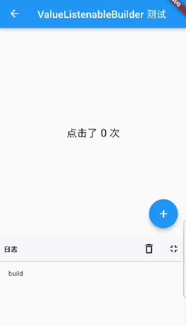
可以看见，功能正常实现了，同时控制台只在页面打开时 build 了一次，点击 + 按钮的时候只是ValueListenableBuilder 重新构建了子组件树，而整个页面并没有重新 build ，因此日志面板只打印了一次 "build" 。因此我们有一个建议就是：尽可能让 ValueListenableBuilder 只构建依赖数据源的widget，这样的话可以缩小重新构建的范围，也就是说 ValueListenableBuilder 的拆分粒度应该尽可能细。
7.5.3 总结
关于 ValueListenableBuilder 有两点需要牢记：
- 和数据流向无关，可以实现任意流向的数据共享。
- 实践中，ValueListenableBuilder 的拆分粒度应该尽可能细，可以提高性能。
7.6 异步UI更新（FutureBuilder、StreamBuilder）
很多时候我们会依赖一些异步数据来动态更新UI，比如在打开一个页面时我们需要先从互联网上获取数据，在获取数据的过程中我们显示一个加载框，等获取到数据时我们再渲染页面；又比如我们想展示Stream（比如文件流、互联网数据接收流）的进度。当然，通过 StatefulWidget 我们完全可以实现上述这些功能。但由于在实际开发中依赖异步数据更新UI的这种场景非常常见，因此Flutter专门提供了FutureBuilder和StreamBuilder两个组件来快速实现这种功能。
7.6.1 FutureBuilder
FutureBuilder会依赖一个Future，它会根据所依赖的Future的状态来动态构建自身。我们看一下FutureBuilder构造函数：
FutureBuilder({
this.future,
this.initialData,
required this.builder,
})
-
future：FutureBuilder依赖的Future，通常是一个异步耗时任务。 -
initialData：初始数据，用户设置默认数据。 -
builder：Widget构建器；该构建器会在Future执行的不同阶段被多次调用，构建器签名如下：Function (BuildContext context, AsyncSnapshot snapshot)snapshot会包含当前异步任务的状态信息及结果信息 ，比如我们可以通过snapshot.connectionState获取异步任务的状态信息、通过snapshot.hasError判断异步任务是否有错误等等，完整的定义读者可以查看AsyncSnapshot类定义。另外，
FutureBuilder的builder函数签名和StreamBuilder的builder是相同的。
示例
我们实现一个路由，当该路由打开时我们从网上获取数据，获取数据时弹一个加载框；获取结束时，如果成功则显示获取到的数据，如果失败则显示错误。由于我们还没有介绍在flutter中如何发起网络请求，所以在这里我们不真正去网络请求数据，而是模拟一下这个过程，隔3秒后返回一个字符串：
Future<String> mockNetworkData() async {
return Future.delayed(Duration(seconds: 2), () => "我是从互联网上获取的数据");
}
FutureBuilder使用代码如下：
...
Widget build(BuildContext context) {
return Center(
child: FutureBuilder<String>(
future: mockNetworkData(),
builder: (BuildContext context, AsyncSnapshot snapshot) {
// 请求已结束
if (snapshot.connectionState == ConnectionState.done) {
if (snapshot.hasError) {
// 请求失败，显示错误
return Text("Error: ${snapshot.error}");
} else {
// 请求成功，显示数据
return Text("Contents: ${snapshot.data}");
}
} else {
// 请求未结束，显示loading
return CircularProgressIndicator();
}
},
),
);
}
运行结果如图7-9、7-10所示：


注意：示例的代码中，每次组件重新build 都会重新发起请求，因为每次的 future 都是新的，实践中我们通常会有一些缓存策略，常见的处理方式是在 future 成功后将 future 缓存，这样下次build时，就不会再重新发起异步任务。
上面代码中我们在builder中根据当前异步任务状态ConnectionState来返回不同的widget。ConnectionState是一个枚举类，定义如下：
enum ConnectionState {
/// 当前没有异步任务，比如[FutureBuilder]的[future]为null时
none,
/// 异步任务处于等待状态
waiting,
/// Stream处于激活状态（流上已经有数据传递了），对于FutureBuilder没有该状态。
active,
/// 异步任务已经终止.
done,
}
注意，ConnectionState.active只在StreamBuilder中才会出现。
7.6.2 StreamBuilder
我们知道，在Dart中Stream 也是用于接收异步事件数据，和Future 不同的是，它可以接收多个异步操作的结果，它常用于会多次读取数据的异步任务场景，如网络内容下载、文件读写等。StreamBuilder正是用于配合Stream来展示流上事件（数据）变化的UI组件。下面看一下StreamBuilder的默认构造函数：
StreamBuilder({
this.initialData,
Stream<T> stream,
required this.builder,
})
可以看到和FutureBuilder的构造函数只有一点不同：前者需要一个future，而后者需要一个stream。
示例
我们创建一个计时器的示例：每隔1秒，计数加1。这里，我们使用Stream来实现每隔一秒生成一个数字:
Stream<int> counter() {
return Stream.periodic(Duration(seconds: 1), (i) {
return i;
});
}
StreamBuilder使用代码如下：
Widget build(BuildContext context) {
return StreamBuilder<int>(
stream: counter(), //
//initialData: ,// a Stream<int> or null
builder: (BuildContext context, AsyncSnapshot<int> snapshot) {
if (snapshot.hasError)
return Text('Error: ${snapshot.error}');
switch (snapshot.connectionState) {
case ConnectionState.none:
return Text('没有Stream');
case ConnectionState.waiting:
return Text('等待数据...');
case ConnectionState.active:
return Text('active: ${snapshot.data}');
case ConnectionState.done:
return Text('Stream 已关闭');
}
return null; // unreachable
},
);
}
读者可以自己运行本示例查看运行结果。注意，本示例只是为了演示StreamBuilder的使用，在实战中，凡是UI会依赖多个异步数据而发生变化的场景都可以使用StreamBuilder。
7.7 对话框详解
本节将详细介绍一下Flutter中对话框的使用方式、实现原理、样式定制及状态管理。
7.7.1 使用对话框
对话框本质上也是UI布局，通常一个对话框会包含标题、内容，以及一些操作按钮，为此，Material库中提供了一些现成的对话框组件来用于快速的构建出一个完整的对话框。
1. AlertDialog
下面我们主要介绍一下Material库中的AlertDialog组件，它的构造函数定义如下：
const AlertDialog({
Key? key,
this.title, //对话框标题组件
this.titlePadding, // 标题填充
this.titleTextStyle, //标题文本样式
this.content, // 对话框内容组件
this.contentPadding = const EdgeInsets.fromLTRB(24.0, 20.0, 24.0, 24.0), //内容的填充
this.contentTextStyle,// 内容文本样式
this.actions, // 对话框操作按钮组
this.backgroundColor, // 对话框背景色
this.elevation,// 对话框的阴影
this.semanticLabel, //对话框语义化标签(用于读屏软件)
this.shape, // 对话框外形
})
参数都比较简单，不在赘述。下面我们看一个例子，假如我们要在删除文件时弹出一个确认对话框，该对话框如图7-11所示：

该对话框样式代码如下：
AlertDialog(
title: Text("提示"),
content: Text("您确定要删除当前文件吗?"),
actions: <Widget>[
TextButton(
child: Text("取消"),
onPressed: () => Navigator.of(context).pop(), //关闭对话框
),
TextButton(
child: Text("删除"),
onPressed: () {
// ... 执行删除操作
Navigator.of(context).pop(true); //关闭对话框
},
),
],
);
实现代码很简单，不在赘述。唯一需要注意的是我们是通过Navigator.of(context).pop(…)方法来关闭对话框的，这和路由返回的方式是一致的，并且都可以返回一个结果数据。现在，对话框我们已经构建好了，那么如何将它弹出来呢？还有对话框返回的数据应如何被接收呢？这些问题的答案都在showDialog()方法中。
showDialog()是Material组件库提供的一个用于弹出Material风格对话框的方法，签名如下：
Future<T?> showDialog<T>({
required BuildContext context,
required WidgetBuilder builder, // 对话框UI的builder
bool barrierDismissible = true, //点击对话框barrier(遮罩)时是否关闭它
})
该方法只有两个参数，含义见注释。该方法返回一个Future，它正是用于接收对话框的返回值：如果我们是通过点击对话框遮罩关闭的，则Future的值为null，否则为我们通过Navigator.of(context).pop(result)返回的result值，下面我们看一下整个示例：
//点击该按钮后弹出对话框
ElevatedButton(
child: Text("对话框1"),
onPressed: () async {
//弹出对话框并等待其关闭
bool? delete = await showDeleteConfirmDialog1();
if (delete == null) {
print("取消删除");
} else {
print("已确认删除");
//... 删除文件
}
},
),
// 弹出对话框
Future<bool?> showDeleteConfirmDialog1() {
return showDialog<bool>(
context: context,
builder: (context) {
return AlertDialog(
title: Text("提示"),
content: Text("您确定要删除当前文件吗?"),
actions: <Widget>[
TextButton(
child: Text("取消"),
onPressed: () => Navigator.of(context).pop(), // 关闭对话框
),
TextButton(
child: Text("删除"),
onPressed: () {
//关闭对话框并返回true
Navigator.of(context).pop(true);
},
),
],
);
},
);
}
示例运行后，我们点击对话框“取消”按钮或遮罩，控制台就会输出"取消删除"，如果点击“删除”按钮，控制台就会输出"已确认删除"。
注意：如果
AlertDialog的内容过长，内容将会溢出，这在很多时候可能不是我们期望的，所以如果对话框内容过长时，可以用SingleChildScrollView将内容包裹起来。
2. SimpleDialog
SimpleDialog也是Material组件库提供的对话框，它会展示一个列表，用于列表选择的场景。下面是一个选择APP语言的示例，运行结果如图7-12。

实现代码如下：
Future<void> changeLanguage() async {
int? i = await showDialog<int>(
context: context,
builder: (BuildContext context) {
return SimpleDialog(
title: const Text('请选择语言'),
children: <Widget>[
SimpleDialogOption(
onPressed: () {
// 返回1
Navigator.pop(context, 1);
},
child: Padding(
padding: const EdgeInsets.symmetric(vertical: 6),
child: const Text('中文简体'),
),
),
SimpleDialogOption(
onPressed: () {
// 返回2
Navigator.pop(context, 2);
},
child: Padding(
padding: const EdgeInsets.symmetric(vertical: 6),
child: const Text('美国英语'),
),
),
],
);
});
if (i != null) {
print("选择了：${i == 1 ? "中文简体" : "美国英语"}");
}
}
列表项组件我们使用了SimpleDialogOption组件来包装了一下，它相当于一个TextButton，只不过按钮文案是左对齐的，并且padding较小。上面示例运行后，用户选择一种语言后，控制台就会打印出它。
3. Dialog
实际上AlertDialog和SimpleDialog都使用了Dialog类。由于AlertDialog和SimpleDialog中使用了IntrinsicWidth来尝试通过子组件的实际尺寸来调整自身尺寸，这就导致他们的子组件不能是延迟加载模型的组件（如ListView、GridView 、 CustomScrollView等），如下面的代码运行后会报错。
AlertDialog(
content: ListView(
children: ...//省略
),
);
如果我们就是需要嵌套一个ListView应该怎么做？这时，我们可以直接使用Dialog类，如：
Dialog(
child: ListView(
children: ...//省略
),
);
下面我们看一个弹出一个有30个列表项的对话框示例，运行效果如图7-12所示：

实现代码如下：
Future<void> showListDialog() async {
int? index = await showDialog<int>(
context: context,
builder: (BuildContext context) {
var child = Column(
children: <Widget>[
ListTile(title: Text("请选择")),
Expanded(
child: ListView.builder(
itemCount: 30,
itemBuilder: (BuildContext context, int index) {
return ListTile(
title: Text("$index"),
onTap: () => Navigator.of(context).pop(index),
);
},
)),
],
);
//使用AlertDialog会报错
//return AlertDialog(content: child);
return Dialog(child: child);
},
);
if (index != null) {
print("点击了：$index");
}
}
现在，我们己经介绍完了AlertDialog、SimpleDialog以及Dialog。上面的示例中，我们在调用showDialog时，在builder中都是构建了这三个对话框组件的一种，可能有些读者会惯性的以为在builder中只能返回这三者之一，其实这不是必须的！就拿Dialog的示例来举例，我们完全可以用下面的代码来替代Dialog：
// return Dialog(child: child)
return UnconstrainedBox(
constrainedAxis: Axis.vertical,
child: ConstrainedBox(
constraints: BoxConstraints(maxWidth: 280),
child: Material(
child: child,
type: MaterialType.card,
),
),
);
上面代码运行后可以实现一样的效果。现在我们总结一下：AlertDialog、SimpleDialog以及Dialog是Material组件库提供的三种对话框，旨在帮助开发者快速构建出符合Material设计规范的对话框，但读者完全可以自定义对话框样式，因此，我们仍然可以实现各种样式的对话框，这样即带来了易用性，又有很强的扩展性。
7.7.2 对话框打开动画及遮罩
我们可以把对话框分为内部样式和外部样式两部分。内部样式指对话框中显示的具体内容，这部分内容我们已经在上面介绍过了；外部样式包含对话框遮罩样式、打开动画等，本节主要介绍如何自定义这些外部样式。
关于动画相关内容我们将在本书第九章中详细介绍，下面内容读者可以先了解一下（不必深究），读者可以在学习完动画相关内容后再回头来看。
我们已经介绍过了showDialog方法，它是Material组件库中提供的一个打开Material风格对话框的方法。那如何打开一个普通风格的对话框呢（非Material风格）？ Flutter 提供了一个showGeneralDialog方法，签名如下：
Future<T?> showGeneralDialog<T>({
required BuildContext context,
required RoutePageBuilder pageBuilder, //构建对话框内部UI
bool barrierDismissible = false, //点击遮罩是否关闭对话框
String? barrierLabel, // 语义化标签(用于读屏软件)
Color barrierColor = const Color(0x80000000), // 遮罩颜色
Duration transitionDuration = const Duration(milliseconds: 200), // 对话框打开/关闭的动画时长
RouteTransitionsBuilder? transitionBuilder, // 对话框打开/关闭的动画
...
})
实际上，showDialog方法正是showGeneralDialog的一个封装，定制了Material风格对话框的遮罩颜色和动画。Material风格对话框打开/关闭动画是一个Fade（渐隐渐显）动画，如果我们想使用一个缩放动画就可以通过transitionBuilder来自定义。下面我们自己封装一个showCustomDialog方法，它定制的对话框动画为缩放动画，并同时制定遮罩颜色为Colors.black87：
Future<T?> showCustomDialog<T>({
required BuildContext context,
bool barrierDismissible = true,
required WidgetBuilder builder,
ThemeData? theme,
}) {
final ThemeData theme = Theme.of(context, shadowThemeOnly: true);
return showGeneralDialog(
context: context,
pageBuilder: (BuildContext buildContext, Animation<double> animation,
Animation<double> secondaryAnimation) {
final Widget pageChild = Builder(builder: builder);
return SafeArea(
child: Builder(builder: (BuildContext context) {
return theme != null
? Theme(data: theme, child: pageChild)
: pageChild;
}),
);
},
barrierDismissible: barrierDismissible,
barrierLabel: MaterialLocalizations.of(context).modalBarrierDismissLabel,
barrierColor: Colors.black87, // 自定义遮罩颜色
transitionDuration: const Duration(milliseconds: 150),
transitionBuilder: _buildMaterialDialogTransitions,
);
}
Widget _buildMaterialDialogTransitions(
BuildContext context,
Animation<double> animation,
Animation<double> secondaryAnimation,
Widget child) {
// 使用缩放动画
return ScaleTransition(
scale: CurvedAnimation(
parent: animation,
curve: Curves.easeOut,
),
child: child,
);
}
现在，我们使用showCustomDialog打开文件删除确认对话框，代码如下：
... //省略无关代码
showCustomDialog<bool>(
context: context,
builder: (context) {
return AlertDialog(
title: Text("提示"),
content: Text("您确定要删除当前文件吗?"),
actions: <Widget>[
TextButton(
child: Text("取消"),
onPressed: () => Navigator.of(context).pop(),
),
TextButton(
child: Text("删除"),
onPressed: () {
// 执行删除操作
Navigator.of(context).pop(true);
},
),
],
);
},
);
运行效果如图7-14所示：

可以发现，遮罩颜色比通过showDialog方法打开的对话框更深。另外对话框打开/关闭的动画已变为缩放动画了，读者可以亲自运行示例查看效果。
7.7.3 对话框实现原理
我们以showGeneralDialog方法为例来看看它的具体实现：
Future<T?> showGeneralDialog<T extends Object?>({
required BuildContext context,
required RoutePageBuilder pageBuilder,
bool barrierDismissible = false,
String? barrierLabel,
Color barrierColor = const Color(0x80000000),
Duration transitionDuration = const Duration(milliseconds: 200),
RouteTransitionsBuilder? transitionBuilder,
bool useRootNavigator = true,
RouteSettings? routeSettings,
}) {
return Navigator.of(context, rootNavigator: useRootNavigator).push<T>(RawDialogRoute<T>(
pageBuilder: pageBuilder,
barrierDismissible: barrierDismissible,
barrierLabel: barrierLabel,
barrierColor: barrierColor,
transitionDuration: transitionDuration,
transitionBuilder: transitionBuilder,
settings: routeSettings,
));
}
实现很简单，直接调用Navigator的push方法打开了一个新的对话框路由RawDialogRoute，然后返回了push的返回值。可见对话框实际上正是通过路由的形式实现的，这也是为什么我们可以使用Navigator的pop 方法来退出对话框的原因。关于对话框的样式定制在RawDialogRoute中，没有什么新的东西，读者可以自行查看。
7.7.4 对话框状态管理
我们在用户选择删除一个文件时，会询问是否删除此文件；在用户选择一个文件夹是，应该再让用户确认是否删除子文件夹。为了在用户选择了文件夹时避免二次弹窗确认是否删除子目录，我们在确认对话框底部添加一个“同时删除子目录？”的复选框，如图7-15所示：

现在就有一个问题：如何管理复选框的选中状态？习惯上，我们会在路由页的State中来管理选中状态，我们可能会写出如下这样的代码：
class _DialogRouteState extends State<DialogRoute> {
bool withTree = false; // 复选框选中状态
@override
Widget build(BuildContext context) {
return Column(
children: <Widget>[
ElevatedButton(
child: Text("对话框2"),
onPressed: () async {
bool? delete = await showDeleteConfirmDialog2();
if (delete == null) {
print("取消删除");
} else {
print("同时删除子目录: $delete");
}
},
),
],
);
}
Future<bool?> showDeleteConfirmDialog2() {
withTree = false; // 默认复选框不选中
return showDialog<bool>(
context: context,
builder: (context) {
return AlertDialog(
title: Text("提示"),
content: Column(
crossAxisAlignment: CrossAxisAlignment.start,
mainAxisSize: MainAxisSize.min,
children: <Widget>[
Text("您确定要删除当前文件吗?"),
Row(
children: <Widget>[
Text("同时删除子目录？"),
Checkbox(
value: withTree,
onChanged: (bool value) {
//复选框选中状态发生变化时重新构建UI
setState(() {
//更新复选框状态
withTree = !withTree;
});
},
),
],
),
],
),
actions: <Widget>[
TextButton(
child: Text("取消"),
onPressed: () => Navigator.of(context).pop(),
),
TextButton(
child: Text("删除"),
onPressed: () {
//执行删除操作
Navigator.of(context).pop(withTree);
},
),
],
);
},
);
}
}
然后，当我们运行上面的代码时我们会发现复选框根本选不中！为什么会这样呢？其实原因很简单，我们知道setState方法只会针对当前context的子树重新build，但是我们的对话框并不是在_DialogRouteState的build 方法中构建的，而是通过showDialog单独构建的，所以在_DialogRouteState的context中调用setState是无法影响通过showDialog构建的UI的。另外，我们可以从另外一个角度来理解这个现象，前面说过对话框也是通过路由的方式来实现的，那么上面的代码实际上就等同于企图在父路由中调用setState来让子路由更新，这显然是不行的！简尔言之，根本原因就是context不对。那如何让复选框可点击呢？通常有如下三种方法：
1. 单独抽离出StatefulWidget
既然是context不对，那么直接的思路就是将复选框的选中逻辑单独封装成一个StatefulWidget，然后在其内部管理复选状态。我们先来看看这种方法，下面是实现代码：
// 单独封装一个内部管理选中状态的复选框组件
class DialogCheckbox extends StatefulWidget {
DialogCheckbox({
Key? key,
this.value,
required this.onChanged,
});
final ValueChanged<bool?> onChanged;
final bool? value;
@override
_DialogCheckboxState createState() => _DialogCheckboxState();
}
class _DialogCheckboxState extends State<DialogCheckbox> {
bool? value;
@override
void initState() {
value = widget.value;
super.initState();
}
@override
Widget build(BuildContext context) {
return Checkbox(
value: value,
onChanged: (v) {
//将选中状态通过事件的形式抛出
widget.onChanged(v);
setState(() {
//更新自身选中状态
value = v;
});
},
);
}
}
下面是弹出对话框的代码：
Future<bool?> showDeleteConfirmDialog3() {
bool _withTree = false; //记录复选框是否选中
return showDialog<bool>(
context: context,
builder: (context) {
return AlertDialog(
title: Text("提示"),
content: Column(
crossAxisAlignment: CrossAxisAlignment.start,
mainAxisSize: MainAxisSize.min,
children: <Widget>[
Text("您确定要删除当前文件吗?"),
Row(
children: <Widget>[
Text("同时删除子目录？"),
DialogCheckbox(
value: _withTree, //默认不选中
onChanged: (bool value) {
//更新选中状态
_withTree = !_withTree;
},
),
],
),
],
),
actions: <Widget>[
TextButton(
child: Text("取消"),
onPressed: () => Navigator.of(context).pop(),
),
TextButton(
child: Text("删除"),
onPressed: () {
// 将选中状态返回
Navigator.of(context).pop(_withTree);
},
),
],
);
},
);
}
最后，就是使用：
ElevatedButton(
child: Text("话框3（复选框可点击）"),
onPressed: () async {
//弹出删除确认对话框，等待用户确认
bool? deleteTree = await showDeleteConfirmDialog3();
if (deleteTree == null) {
print("取消删除");
} else {
print("同时删除子目录: $deleteTree");
}
},
),
运行后效果如图7-16所示：

可见复选框能选中了，点击“取消”或“删除”后，控制台就会打印出最终的确认状态。
2. 使用StatefulBuilder方法
上面的方法虽然能解决对话框状态更新的问题，但是有一个明显的缺点——对话框上所有可能会改变状态的组件都得单独封装在一个在内部管理状态的StatefulWidget中，这样不仅麻烦，而且复用性不大。因此，我们来想想能不能找到一种更简单的方法？上面的方法本质上就是将对话框的状态置于一个StatefulWidget的上下文中，由StatefulWidget在内部管理，那么我们有没有办法在不需要单独抽离组件的情况下创建一个StatefulWidget的上下文呢？想到这里，我们可以从Builder组件的实现获得灵感。在前面介绍过Builder组件可以获得组件所在位置的真正的Context，那它是怎么实现的呢，我们看看它的源码：
class Builder extends StatelessWidget {
const Builder({
Key? key,
required this.builder,
}) : assert(builder != null),
super(key: key);
final WidgetBuilder builder;
@override
Widget build(BuildContext context) => builder(context);
}
可以看到，Builder实际上只是继承了StatelessWidget，然后在build方法中获取当前context后将构建方法代理到了builder回调，可见，Builder实际上是获取了StatelessWidget 的上下文（context）。那么我们能否用相同的方法获取StatefulWidget 的上下文，并代理其build方法呢？下面我们照猫画虎，来封装一个StatefulBuilder方法：
class StatefulBuilder extends StatefulWidget {
const StatefulBuilder({
Key? key,
required this.builder,
}) : assert(builder != null),
super(key: key);
final StatefulWidgetBuilder builder;
@override
_StatefulBuilderState createState() => _StatefulBuilderState();
}
class _StatefulBuilderState extends State<StatefulBuilder> {
@override
Widget build(BuildContext context) => widget.builder(context, setState);
}
代码很简单，StatefulBuilder获取了StatefulWidget的上下文，并代理了其构建过程。下面我们就可以通过StatefulBuilder来重构上面的代码了（变动只在DialogCheckbox部分）：
... //省略无关代码
Row(
children: <Widget>[
Text("同时删除子目录？"),
//使用StatefulBuilder来构建StatefulWidget上下文
StatefulBuilder(
builder: (context, _setState) {
return Checkbox(
value: _withTree, //默认不选中
onChanged: (bool value) {
//_setState方法实际就是该StatefulWidget的setState方法，
//调用后builder方法会重新被调用
_setState(() {
//更新选中状态
_withTree = !_withTree;
});
},
);
},
),
],
),
实际上，这种方法本质上就是子组件通知父组件（StatefulWidget）重新build子组件本身来实现UI更新的，读者可以对比代码理解。实际上StatefulBuilder正是Flutter SDK中提供的一个类，它和Builder的原理是一样的，在此，提醒读者一定要将StatefulBuilder和Builder理解透彻，因为它们在Flutter中是非常实用的。
3. 精妙的解法
是否还有更简单的解决方案呢？要确认这个问题，我们就得先搞清楚UI是怎么更新的，我们知道在调用setState方法后StatefulWidget就会重新build，那setState方法做了什么呢？我们能不能从中找到方法？顺着这个思路，我们就得看一下setState的核心源码：
void setState(VoidCallback fn) {
... //省略无关代码
_element.markNeedsBuild();
}
可以发现，setState中调用了Element的markNeedsBuild()方法，我们前面说过，Flutter是一个响应式框架，要更新UI只需改变状态后通知框架页面需要重构即可，而Element的markNeedsBuild()方法正是来实现这个功能的！markNeedsBuild()方法会将当前的Element对象标记为“dirty”（脏的），在每一个Frame，Flutter都会重新构建被标记为“dirty”Element对象。既然如此，我们有没有办法获取到对话框内部UI的Element对象，然后将其标示为为“dirty”呢？答案是肯定的！我们可以通过Context来得到Element对象，至于Element与Context的关系我们将会在后面“Flutter核心原理”一章中再深入介绍，现在只需要简单的认为：在组件树中，context实际上就是Element对象的引用。知道这个后，那么解决的方案就呼之欲出了，我们可以通过如下方式来让复选框可以更新：
Future<bool?> showDeleteConfirmDialog4() {
bool _withTree = false;
return showDialog<bool>(
context: context,
builder: (context) {
return AlertDialog(
title: Text("提示"),
content: Column(
crossAxisAlignment: CrossAxisAlignment.start,
mainAxisSize: MainAxisSize.min,
children: <Widget>[
Text("您确定要删除当前文件吗?"),
Row(
children: <Widget>[
Text("同时删除子目录？"),
Checkbox( // 依然使用Checkbox组件
value: _withTree,
onChanged: (bool value) {
// 此时context为对话框UI的根Element，我们
// 直接将对话框UI对应的Element标记为dirty
(context as Element).markNeedsBuild();
_withTree = !_withTree;
},
),
],
),
],
),
actions: <Widget>[
TextButton(
child: Text("取消"),
onPressed: () => Navigator.of(context).pop(),
),
TextButton(
child: Text("删除"),
onPressed: () {
// 执行删除操作
Navigator.of(context).pop(_withTree);
},
),
],
);
},
);
}
上面的代码运行后复选框也可以正常选中。可以看到，我们只用了一行代码便解决了这个问题！当然上面的代码并不是最优，因为我们只需要更新复选框的状态，而此时的context我们用的是对话框的根context，所以会导致整个对话框UI组件全部rebuild，因此最好的做法是将context的“范围”缩小，也就是说只将Checkbox的Element标记为dirty，优化后的代码为：
... //省略无关代码
Row(
children: <Widget>[
Text("同时删除子目录？"),
// 通过Builder来获得构建Checkbox的`context`，
// 这是一种常用的缩小`context`范围的方式
Builder(
builder: (BuildContext context) {
return Checkbox(
value: _withTree,
onChanged: (bool value) {
(context as Element).markNeedsBuild();
_withTree = !_withTree;
},
);
},
),
],
),
7.7.5 其他类型的对话框
1. 底部菜单列表
showModalBottomSheet方法可以弹出一个Material风格的底部菜单列表模态对话框，示例如下：
// 弹出底部菜单列表模态对话框
Future<int?> _showModalBottomSheet() {
return showModalBottomSheet<int>(
context: context,
builder: (BuildContext context) {
return ListView.builder(
itemCount: 30,
itemBuilder: (BuildContext context, int index) {
return ListTile(
title: Text("$index"),
onTap: () => Navigator.of(context).pop(index),
);
},
);
},
);
}
点击按钮，弹出该对话框：
ElevatedButton(
child: Text("显示底部菜单列表"),
onPressed: () async {
int type = await _showModalBottomSheet();
print(type);
},
),
运行后效果如图7-17所示：
2. Loading框
其实Loading框可以直接通过showDialog+AlertDialog来自定义：
showLoadingDialog() {
showDialog(
context: context,
barrierDismissible: false, //点击遮罩不关闭对话框
builder: (context) {
return AlertDialog(
content: Column(
mainAxisSize: MainAxisSize.min,
children: <Widget>[
CircularProgressIndicator(),
Padding(
padding: const EdgeInsets.only(top: 26.0),
child: Text("正在加载，请稍后..."),
)
],
),
);
},
);
}
显示效果如图7-18所示：
如果我们嫌Loading框太宽，想自定义对话框宽度，这时只使用SizedBox或ConstrainedBox是不行的，原因是showDialog中已经给对话框设置了最小宽度约束，根据我们在第五章“尺寸限制类容器”一节中所述，我们可以使用UnconstrainedBox先抵消showDialog对宽度的约束，然后再使用SizedBox指定宽度，代码如下：
... //省略无关代码
UnconstrainedBox(
constrainedAxis: Axis.vertical,
child: SizedBox(
width: 280,
child: AlertDialog(
content: Column(
mainAxisSize: MainAxisSize.min,
children: <Widget>[
CircularProgressIndicator(value: .8,),
Padding(
padding: const EdgeInsets.only(top: 26.0),
child: Text("正在加载，请稍后..."),
)
],
),
),
),
);
代码运行后，效果如图7-19所示：

3. 日历选择器
我们先看一下Material风格的日历选择器，如图7-20所示：
实现代码：
Future<DateTime?> _showDatePicker1() {
var date = DateTime.now();
return showDatePicker(
context: context,
initialDate: date,
firstDate: date,
lastDate: date.add( //未来30天可选
Duration(days: 30),
),
);
}
iOS风格的日历选择器需要使用showCupertinoModalPopup方法和CupertinoDatePicker组件来实现：
Future<DateTime?> _showDatePicker2() {
var date = DateTime.now();
return showCupertinoModalPopup(
context: context,
builder: (ctx) {
return SizedBox(
height: 200,
child: CupertinoDatePicker(
mode: CupertinoDatePickerMode.dateAndTime,
minimumDate: date,
maximumDate: date.add(
Duration(days: 30),
),
maximumYear: date.year + 1,
onDateTimeChanged: (DateTime value) {
print(value);
},
),
);
},
);
}
运行效果如图7-21所示：

事件处理与通知
Flutter中的手势系统有两个独立的层。第一层为原始指针(pointer)事件，它描述了屏幕上指针（例如，触摸、鼠标和触控笔）的位置和移动。 第二层为手势，描述由一个或多个指针移动组成的语义动作，如拖动、缩放、双击等。本章将先分别介绍如何处理这两种事件，最后再介绍一下Flutter中重要的Notification机制。
本章目录
8.1 原始指针事件处理
本节先来介绍一下原始指针事件(Pointer Event，在移动设备上通常为触摸事件)，下一节再介绍手势处理。
8.1.1 命中测试简介
在移动端，各个平台或UI系统的原始指针事件模型基本都是一致，即：一次完整的事件分为三个阶段：手指按下、手指移动、和手指抬起，而更高级别的手势（如点击、双击、拖动等）都是基于这些原始事件的。
当指针按下时，Flutter会对应用程序执行命中测试(Hit Test)，以确定指针与屏幕接触的位置存在哪些组件（widget）， 指针按下事件（以及该指针的后续事件）然后被分发到由命中测试发现的最内部的组件，然后从那里开始，事件会在组件树中向上冒泡，这些事件会从最内部的组件被分发到组件树根的路径上的所有组件，这和Web开发中浏览器的事件冒泡机制相似， 但是Flutter中没有机制取消或停止“冒泡”过程，而浏览器的冒泡是可以停止的。注意，只有通过命中测试的组件才能触发事件，我们会在下一节中深入介绍命中测试过程。
注意：术语“Hit Test ”的中文翻译比较多，如 “命中测试”、“点击测试” ，对于名字我们不用较真，知道它们代表的是 “Hit Test ” 即可。
8.1.2 Listener 组件
Flutter中可以使用Listener来监听原始触摸事件，按照本书对组件的分类，则Listener也是一个功能性组件。下面是Listener的构造函数定义：
Listener({
Key key,
this.onPointerDown, //手指按下回调
this.onPointerMove, //手指移动回调
this.onPointerUp,//手指抬起回调
this.onPointerCancel,//触摸事件取消回调
this.behavior = HitTestBehavior.deferToChild, //先忽略此参数，后面小节会专门介绍
Widget child
})
我们先看一个示例，下面代码功能是： 手指在一个容器上移动时查看手指相对于容器的位置。
class _PointerMoveIndicatorState extends State<PointerMoveIndicator> {
PointerEvent? _event;
@override
Widget build(BuildContext context) {
return Listener(
child: Container(
alignment: Alignment.center,
color: Colors.blue,
width: 300.0,
height: 150.0,
child: Text(
'${_event?.localPosition ?? ''}',
style: TextStyle(color: Colors.white),
),
),
onPointerDown: (PointerDownEvent event) => setState(() => _event = event),
onPointerMove: (PointerMoveEvent event) => setState(() => _event = event),
onPointerUp: (PointerUpEvent event) => setState(() => _event = event),
);
}
}
运行后效果如图8-1所示：

手指在蓝色矩形区域内移动即可看到当前指针偏移，当触发指针事件时，参数 PointerDownEvent、 PointerMoveEvent、 PointerUpEvent 都是PointerEvent的子类，PointerEvent类中包括当前指针的一些信息，注意 Pointer，即“指针”， 指事件的触发者，可以是鼠标、触摸板、手指。
如：
position：它是指针相对于当对于全局坐标的偏移。localPosition: 它是指针相对于当对于本身布局坐标的偏移。delta：两次指针移动事件（PointerMoveEvent）的距离。pressure：按压力度，如果手机屏幕支持压力传感器(如iPhone的3D Touch)，此属性会更有意义，如果手机不支持，则始终为1。orientation：指针移动方向，是一个角度值。
上面只是PointerEvent一些常用属性，除了这些它还有很多属性，读者可以查看API文档。
还有一个behavior属性，它决定子组件如何响应命中测试，关于该属性我们将在8.3节中详细介绍。
8.1.3 忽略指针事件
假如我们不想让某个子树响应PointerEvent的话，我们可以使用IgnorePointer和AbsorbPointer，这两个组件都能阻止子树接收指针事件，不同之处在于AbsorbPointer本身会参与命中测试，而IgnorePointer本身不会参与，这就意味着AbsorbPointer本身是可以接收指针事件的(但其子树不行)，而IgnorePointer不可以。一个简单的例子如下：
Listener(
child: AbsorbPointer(
child: Listener(
child: Container(
color: Colors.red,
width: 200.0,
height: 100.0,
),
onPointerDown: (event)=>print("in"),
),
),
onPointerDown: (event)=>print("up"),
)
点击Container时，由于它在AbsorbPointer的子树上，所以不会响应指针事件，所以日志不会输出"in"，但AbsorbPointer本身是可以接收指针事件的，所以会输出"up"。如果将AbsorbPointer换成IgnorePointer，那么两个都不会输出。
8.2 手势识别
本节先介绍一些Flutter中用于处理手势的GestureDetector和GestureRecognizer，然后再仔细讨论一下手势竞争与冲突问题。
8.2.1 GestureDetector
GestureDetector是一个用于手势识别的功能性组件，我们通过它可以来识别各种手势。GestureDetector 内部封装了 Listener，用以识别语义化的手势，接下来我们详细介绍一下各种手势的识别。
1. 点击、双击、长按
我们通过GestureDetector对Container进行手势识别，触发相应事件后，在Container上显示事件名，为了增大点击区域，将Container设置为200×100，代码如下：
class _GestureTestState extends State<GestureTest> {
String _operation = "No Gesture detected!"; //保存事件名
@override
Widget build(BuildContext context) {
return Center(
child: GestureDetector(
child: Container(
alignment: Alignment.center,
color: Colors.blue,
width: 200.0,
height: 100.0,
child: Text(
_operation,
style: TextStyle(color: Colors.white),
),
),
onTap: () => updateText("Tap"), //点击
onDoubleTap: () => updateText("DoubleTap"), //双击
onLongPress: () => updateText("LongPress"), //长按
),
);
}
void updateText(String text) {
//更新显示的事件名
setState(() {
_operation = text;
});
}
}
运行效果如图8-2所示：

注意： 当同时监听
onTap和onDoubleTap事件时，当用户触发tap事件时，会有200毫秒左右的延时，这是因为当用户点击完之后很可能会再次点击以触发双击事件，所以GestureDetector会等一段时间来确定是否为双击事件。如果用户只监听了onTap（没有监听onDoubleTap）事件时，则没有延时。
2. 拖动、滑动
一次完整的手势过程是指用户手指按下到抬起的整个过程，期间，用户按下手指后可能会移动，也可能不会移动。GestureDetector对于拖动和滑动事件是没有区分的，他们本质上是一样的。GestureDetector会将要监听的组件的原点（左上角）作为本次手势的原点，当用户在监听的组件上按下手指时，手势识别就会开始。下面我们看一个拖动圆形字母A的示例：
class _Drag extends StatefulWidget {
@override
_DragState createState() => _DragState();
}
class _DragState extends State<_Drag> with SingleTickerProviderStateMixin {
double _top = 0.0; //距顶部的偏移
double _left = 0.0;//距左边的偏移
@override
Widget build(BuildContext context) {
return Stack(
children: <Widget>[
Positioned(
top: _top,
left: _left,
child: GestureDetector(
child: CircleAvatar(child: Text("A")),
//手指按下时会触发此回调
onPanDown: (DragDownDetails e) {
//打印手指按下的位置(相对于屏幕)
print("用户手指按下：${e.globalPosition}");
},
//手指滑动时会触发此回调
onPanUpdate: (DragUpdateDetails e) {
//用户手指滑动时，更新偏移，重新构建
setState(() {
_left += e.delta.dx;
_top += e.delta.dy;
});
},
onPanEnd: (DragEndDetails e){
//打印滑动结束时在x、y轴上的速度
print(e.velocity);
},
),
)
],
);
}
}
运行后，就可以在任意方向拖动了，运行效果如图8-3所示：

日志：
I/flutter ( 8513): 用户手指按下：Offset(26.3, 101.8)
I/flutter ( 8513): Velocity(235.5, 125.8)
代码解释：
DragDownDetails.globalPosition：当用户按下时，此属性为用户按下的位置相对于屏幕（而非父组件）原点(左上角)的偏移。DragUpdateDetails.delta：当用户在屏幕上滑动时，会触发多次Update事件，delta指一次Update事件的滑动的偏移量。DragEndDetails.velocity：该属性代表用户抬起手指时的滑动速度(包含x、y两个轴的），示例中并没有处理手指抬起时的速度，常见的效果是根据用户抬起手指时的速度做一个减速动画。
单一方向拖动
在上例中，是可以朝任意方向拖动的，但是在很多场景，我们只需要沿一个方向来拖动，如一个垂直方向的列表，GestureDetector可以只识别特定方向的手势事件，我们将上面的例子改为只能沿垂直方向拖动：
class _DragVertical extends StatefulWidget {
@override
_DragVerticalState createState() => _DragVerticalState();
}
class _DragVerticalState extends State<_DragVertical> {
double _top = 0.0;
@override
Widget build(BuildContext context) {
return Stack(
children: <Widget>[
Positioned(
top: _top,
child: GestureDetector(
child: CircleAvatar(child: Text("A")),
//垂直方向拖动事件
onVerticalDragUpdate: (DragUpdateDetails details) {
setState(() {
_top += details.delta.dy;
});
},
),
)
],
);
}
}
这样就只能在垂直方向拖动了，如果只想在水平方向滑动同理。
3. 缩放
GestureDetector可以监听缩放事件，下面示例演示了一个简单的图片缩放效果：
class _Scale extends StatefulWidget {
const _Scale({Key? key}) : super(key: key);
@override
_ScaleState createState() => _ScaleState();
}
class _ScaleState extends State<_Scale> {
double _width = 200.0; //通过修改图片宽度来达到缩放效果
@override
Widget build(BuildContext context) {
return Center(
child: GestureDetector(
//指定宽度，高度自适应
child: Image.asset("./images/sea.png", width: _width),
onScaleUpdate: (ScaleUpdateDetails details) {
setState(() {
//缩放倍数在0.8到10倍之间
_width=200*details.scale.clamp(.8, 10.0);
});
},
),
);
}
}
运行效果如图8-4所示：

现在在图片上双指张开、收缩就可以放大、缩小图片。本示例比较简单，实际中我们通常还需要一些其他功能，如双击放大或缩小一定倍数、双指张开离开屏幕时执行一个减速放大动画等，读者可以在学习完后面“动画”一章中的内容后自己来尝试实现一下。
8.2.2 GestureRecognizer
GestureDetector内部是使用一个或多个GestureRecognizer来识别各种手势的，而GestureRecognizer的作用就是通过Listener来将原始指针事件转换为语义手势，GestureDetector直接可以接收一个子widget。GestureRecognizer是一个抽象类，一种手势的识别器对应一个GestureRecognizer的子类，Flutter实现了丰富的手势识别器，我们可以直接使用。
示例
假设我们要给一段富文本（RichText）的不同部分分别添加点击事件处理器，但是TextSpan并不是一个widget，这时我们不能用GestureDetector，但TextSpan有一个recognizer属性，它可以接收一个GestureRecognizer。
假设我们需要在点击时给文本变色:
import 'package:flutter/gestures.dart';
class _GestureRecognizer extends StatefulWidget {
const _GestureRecognizer({Key? key}) : super(key: key);
@override
_GestureRecognizerState createState() => _GestureRecognizerState();
}
class _GestureRecognizerState extends State<_GestureRecognizer> {
TapGestureRecognizer _tapGestureRecognizer = TapGestureRecognizer();
bool _toggle = false; //变色开关
@override
void dispose() {
//用到GestureRecognizer的话一定要调用其dispose方法释放资源
_tapGestureRecognizer.dispose();
super.dispose();
}
@override
Widget build(BuildContext context) {
return Center(
child: Text.rich(
TextSpan(
children: [
TextSpan(text: "你好世界"),
TextSpan(
text: "点我变色",
style: TextStyle(
fontSize: 30.0,
color: _toggle ? Colors.blue : Colors.red,
),
recognizer: _tapGestureRecognizer
..onTap = () {
setState(() {
_toggle = !_toggle;
});
},
),
TextSpan(text: "你好世界"),
],
),
),
);
}
}
运行效果如图8-5所示：

注意：使用
GestureRecognizer后一定要调用其dispose()方法来释放资源（主要是取消内部的计时器）。
8.3 Flutter事件机制
8.3.1 Flutter 事件处理流程
Flutter 事件处理流程主要分两步，为了聚焦核心流程，我们以用户触摸事件为例来说明：
- 命中测试：当手指按下时，触发 PointerDownEvent 事件，按照深度优先遍历当前渲染（render object）树，对每一个渲染对象进行“命中测试”（hit test），如果命中测试通过，则该渲染对象会被添加到一个 HitTestResult 列表当中。
- 事件分发：命中测试完毕后，会遍历 HitTestResult 列表，调用每一个渲染对象的事件处理方法（handleEvent）来处理 PointerDownEvent 事件，该过程称为“事件分发”（event dispatch）。随后当手指移动时，便会分发 PointerMoveEvent 事件。
- 事件清理：当手指抬（ PointerUpEvent ）起或事件取消时（PointerCancelEvent），会先对相应的事件进行分发，分发完毕后会清空 HitTestResult 列表。
需要注意：
- 命中测试是在 PointerDownEvent 事件触发时进行的，一个完成的事件流是 down > move > up (cancle)。
- 如果父子组件都监听了同一个事件，则子组件会比父组件先响应事件。这是因为命中测试过程是按照深度优先规则遍历的，所以子渲染对象会比父渲染对象先加入 HitTestResult 列表，又因为在事件分发时是从前到后遍历 HitTestResult 列表的，所以子组件比父组件会更先被调用 handleEvent 。
下面我们从代码层面看一些整个事件处理流程：
// 触发新事件时，flutter 会调用此方法
void _handlePointerEventImmediately(PointerEvent event) {
HitTestResult? hitTestResult;
if (event is PointerDownEvent ) {
hitTestResult = HitTestResult();
// 发起命中测试
hitTest(hitTestResult, event.position);
if (event is PointerDownEvent) {
_hitTests[event.pointer] = hitTestResult;
}
} else if (event is PointerUpEvent || event is PointerCancelEvent) {
//获取命中测试的结果，然后移除它
hitTestResult = _hitTests.remove(event.pointer);
} else if (event.down) { // PointerMoveEvent
//直接获取命中测试的结果
hitTestResult = _hitTests[event.pointer];
}
// 事件分发
if (hitTestResult != null) {
dispatchEvent(event, hitTestResult);
}
}
上面代码只是核心代码，完整的代码位于GestureBinding 实现中。下面我们分别来介绍一些命中测试和事件分发过程。
8.3.2 命中测试详解
1. 命中测试的起点
一个对象是否可以响应事件，取决于在其对命中测试过程中是否被添加到了 HitTestResult 列表 ，如果没有被添加进去，则后续的事件分发将不会分发给自己。下面我们看一下命中测试的过程：当发生用户事件时，Flutter 会从根节点（RenderView）开始调用它hitTest() 。
@override
void hitTest(HitTestResult result, Offset position) {
//从根节点开始进行命中测试
renderView.hitTest(result, position: position);
// 会调用 GestureBinding 中的 hitTest()方法，我们将在下一节中介绍。
super.hitTest(result, position);
}
上面代码位于 RenderBinding 中，核心代码只有两行，整体是命中测试分两步，我们来解释一下：
第一步： renderView 是 RenderView 对应的 RenderObject 对象， RenderObject 对象的 hitTest 方法主要功能是：从该节点出发，按照深度优先的顺序递归遍历子树（渲染树）上的每一个节点并对它们进行命中测试。这个过程称为“渲染树命中测试”。
注意，为了表述方便，“渲染树命中测试”，也可以表述为组件树或节点树命中测试，只是我们需要知道，命中测试的逻辑都在 RenderObject 中，而并非在 Widget或 Element 中。
第二步：渲染树命中测试完毕后，会调用 GestureBinding 的 hitTest 方法，该方法主要用于处理手势，我们会在后面介绍。
2. 渲染树命中测试过程
渲染树的命中测试流程就是父节点 hitTest 方法中不断调用子节点 hitTest 方法的递归过程。下面是RenderView的hitTest()源码：
// 发起命中测试，position 为事件触发的坐标（如果有的话）。
bool hitTest(HitTestResult result, { Offset position }) {
if (child != null)
child.hitTest(result, position: position); //递归对子树进行命中测试
//根节点会始终被添加到HitTestResult列表中
result.add(HitTestEntry(this));
return true;
}
因为 RenderView 只有一个孩子，所以直接调用child.hitTest 即可。如果一个渲染对象有多个子节点，则命中测试逻辑为：如果任意一个子节点通过了命中测试或者当前节点“强行声明”自己通过了命中测试，则当前节点会通过命中测试。我们以RenderBox为例，看看它的hitTest()实现：
bool hitTest(HitTestResult result, { @required Offset position }) {
...
if (_size.contains(position)) { // 判断事件的触发位置是否位于组件范围内
if (hitTestChildren(result, position: position) || hitTestSelf(position)) {
result.add(BoxHitTestEntry(this, position));
return true;
}
}
return false;
}
上面代码中:
hitTestChildren()功能是判断是否有子节点通过了命中测试，如果有，则会将子组件添加到 HitTestResult 中同时返回 true；如果没有则直接返回false。该方法中会递归调用子组件的 hitTest 方法。hitTestSelf()决定自身是否通过命中测试，如果节点需要确保自身一定能响应事件可以重写此函数并返回true ，相当于“强行声明”自己通过了命中测试。
需要注意，节点通过命中测试的标志是它被添加到 HitTestResult 列表中，而不是它 hitTest 的返回值，虽然大所数情况下节点通过命中测试就会返回 true，但是由于开发者在自定义组件时是可以重写 hitTest 的，所以有可能会在在通过命中测试时返回 false，或者未通过命中测试时返回 true，当然这样做并不好，我们在自定义组件时应该尽可能避免，但是在有些需要自定义命中测试流程的场景下可能就需要打破这种默契，比如我们将在本节后面实现的 HitTestBlocker 组件。
所以整体逻辑就是：
- 先判断事件的触发位置是否位于组件范围内，如果不是则不会通过命中测试，此时 hitTest 返回 false，如果是则到第二步。
- 会先调用
hitTestChildren()判断是否有子节点通过命中测试，如果是，则将当前节点添加到 HitTestResult 列表，此时 hitTest 返回 true。即只要有子节点通过了命中测试，那么它的父节点（当前节点）也会通过命中测试。 - 如果没有子节点通过命中测试，则会取 hitTestSelf 方法的返回值，如果返回值为 true，则当前节点通过命中测试，反之则否。
如果当前节点有子节点通过了命中测试或者当前节点自己通过了命中测试，则将当前节点添加到 HitTestResult 中。又因为 hitTestChildren() 中会递归调用子组件的 hitTest 方法，所以组件树的命中测试顺序深度优先的，即如果通过命中测试，子组件会比父组件会先被加入HitTestResult 中。
我们看看这两个方法默认实现如下：
@protected
bool hitTestChildren(HitTestResult result, { Offset position }) => false;
@protected
bool hitTestSelf(Offset position) => false;
如果组件包含多个子组件，就必须重写 hitTestChildren() 方法，该方法中应该调用每一个子组件的 hitTest 方法，比如我们看看 RenderBoxContainerDefaultsMixin 中的实现：
// 子类的 hitTestChildren() 中会直接调用此方法
bool defaultHitTestChildren(BoxHitTestResult result, { required Offset position }) {
// 遍历所有子组件(子节点从后向前遍历)
ChildType? child = lastChild;
while (child != null) {
final ParentDataType childParentData = child.parentData! as ParentDataType;
// isHit 为当前子节点调用hitTest() 的返回值
final bool isHit = result.addWithPaintOffset(
offset: childParentData.offset,
position: position,
//调用子组件的 hitTest方法，
hitTest: (BoxHitTestResult result, Offset? transformed) {
return child!.hitTest(result, position: transformed!);
},
);
// 一旦有一个子节点的 hitTest() 方法返回 true，则终止遍历，直接返回true
if (isHit) return true;
child = childParentData.previousSibling;
}
return false;
}
bool addWithPaintOffset({
required Offset? offset,
required Offset position,
required BoxHitTest hitTest,
}) {
...// 省略无关代码
final bool isHit = hitTest(this, transformedPosition);
return isHit; // 返回 hitTest 的执行结果
}
我们可以看到上面代码的主要逻辑是遍历调用子组件的 hitTest() 方法，同时提供了一种中断机制：即遍历过程中只要有子节点的 hitTest() 返回了 true 时：
- 会终止子节点遍历，这意味着该子节点前面的兄弟节点将没有机会通过命中测试。注意，兄弟节点的遍历倒序的。
- 父节点也会通过命中测试。因为子节点 hitTest() 返回了 true 导父节点 hitTestChildren 也会返回 true，最终会导致 父节点的 hitTest 返回 true，父节点被添加到 HitTestResult 中。
当子节点的 hitTest() 返回了 false 时，继续遍历该子节点前面的兄弟节点，对它们进行命中测试，如果所有子节点都返回 false 时，则父节点会调用自身的 hitTestSelf 方法，如果该方法也返回 false，则父节点就会被认为没有通过命中测试。
下面思考两个问题：
- 为什么要制定这个中断呢？因为一般情况下兄弟节点占用的布局空间是不重合的，因此当用户点击的坐标位置只会有一个节点，所以一旦找到它后（通过了命中测试，hitTest 返回true），就没有必要再判断其他兄弟节点了。但是也有例外情况，比如在 Stack 布局中，兄弟组件的布局空间会重叠，如果我们想让位于底部的组件也能响应事件，就得有一种机制，能让我们确保：即使找到了一个节点，也不应该终止遍历，也就是说所有的子组件的 hitTest 方法都必须返回 false！为此，Flutter 中通过 HitTestBehavior 来定制这个过程，这个我们会在本节后面介绍。
- 为什么兄弟节点的遍历要倒序？同 1 中所述，兄弟节点一般不会重叠，而一旦发生重叠的话，往往是后面的组件会在前面组件之上，点击时应该是后面的组件会响应事件，而前面被遮住的组件不能响应，所以命中测试应该优先对后面的节点进行测试，因为一旦通过测试，就不会再继续遍历了。如果我们按照正向遍历，则会出现被遮住的组件能响应事件，而位于上面的组件反而不能，这明显不符合预期。
我们回到 hitTestChildren 上，如果不重写 hitTestChildren，则默认直接返回 false，这也就意味着后代节点将无法参与命中测试，相当于事件被拦截了，这也正是 IgnorePointer 和 AbsorbPointer 可以拦截事件下发的原理。
如果 hitTestSelf 返回 true，则无论子节点中是否有通过命中测试的节点，当前节点自身都会被添加到 HitTestResult 中。而 IgnorePointer 和 AbsorbPointer 的区别就是，前者的 hitTestSelf 返回了 false，而后者返回了 true。
命中测试完成后，所有通过命中测试的节点都被添加到了 HitTestResult 中。
8.3.4 事件分发
事件分发过程很简单，即遍历HitTestResult，调用每一个节点的 handleEvent 方法：
// 事件分发
void dispatchEvent(PointerEvent event, HitTestResult? hitTestResult) {
...
for (final HitTestEntry entry in hitTestResult.path) {
entry.target.handleEvent(event.transformed(entry.transform), entry);
}
}
所以组件只需要重写 handleEvent 方法就可以处理事件了。
8.3.5 HitTestBehavior
1. HitTestBehavior简介
我们先来实现一个能够监听 PointerDownEvent 的组件：
class PointerDownListener extends SingleChildRenderObjectWidget {
PointerDownListener({Key? key, this.onPointerDown, Widget? child})
: super(key: key, child: child);
final PointerDownEventListener? onPointerDown;
@override
RenderObject createRenderObject(BuildContext context) =>
RenderPointerDownListener()..onPointerDown = onPointerDown;
@override
void updateRenderObject(
BuildContext context, RenderPointerDownListener renderObject) {
renderObject.onPointerDown = onPointerDown;
}
}
class RenderPointerDownListener extends RenderProxyBox {
PointerDownEventListener? onPointerDown;
@override
bool hitTestSelf(Offset position) => true; //始终通过命中测试
@override
void handleEvent(PointerEvent event, covariant HitTestEntry entry) {
//事件分发时处理事件
if (event is PointerDownEvent) onPointerDown?.call(event);
}
}
因为我们让 hitTestSelf 的返回值始终为 true，所以无论子节点是否通过命中测试，PointerDownListener 都会通过，所以后续分发事件时 handleEvent 就会被调用，我们在里面判断事件类型为 PointerDownEvent 时触发回调即可，测试代码如下：
class PointerDownListenerRoute extends StatelessWidget {
const PointerDownListenerRoute({Key? key}) : super(key: key);
@override
Widget build(BuildContext context) {
return PointerDownListener(
child: Text('Click me'),
onPointerDown: (e) => print('down'),
);
}
}
点击文本后控制台就会打印 'down'。
Listener 的实现和 PointerDownListener 的实现原理差不多，有两点不同：
- Listener 监听的事件类型更多一些。
- Listener的 hitTestSelf 并不是一直返回 true。
这里需要重点说一下第二点。 Listener 组件有一个 behavior 参数，我们之前并没有介绍，下面我们仔细介绍一下。通过查看 Listener 源码，发现它的渲染对象 RenderPointerListener 继承了 RenderProxyBoxWithHitTestBehavior 类：
abstract class RenderProxyBoxWithHitTestBehavior extends RenderProxyBox {
//[behavior] 的默认值为 [HitTestBehavior.deferToChild].
RenderProxyBoxWithHitTestBehavior({
this.behavior = HitTestBehavior.deferToChild,
RenderBox? child,
}) : super(child);
HitTestBehavior behavior;
@override
bool hitTest(BoxHitTestResult result, { required Offset position }) {
bool hitTarget = false;
if (size.contains(position)) {
hitTarget = hitTestChildren(result, position: position) || hitTestSelf(position);
if (hitTarget || behavior == HitTestBehavior.translucent) //1
result.add(BoxHitTestEntry(this, position)); // 通过命中测试
}
return hitTarget;
}
@override
bool hitTestSelf(Offset position) => behavior == HitTestBehavior.opaque; //2
}
我们看到 behavior 在 hitTest 和 hitTestSelf 中会使用，它的取值会影响 Listener 的命中测试结果。我们先看看 behavior 都有哪些取值：
//在命中测试过程中 Listener 组件如何表现。
enum HitTestBehavior {
// 组件是否通过命中测试取决于子组件是否通过命中测试
deferToChild,
// 组件必然会通过命中测试，同时其 hitTest 返回值始终为 true
opaque,
// 组件必然会通过命中测试，但其 hitTest 返回值可能为 true 也可能为 false
translucent,
}
它有三个取值，我们结合 hitTest 实现来分析一下不同取值的作用：
- behavior 为 deferToChild 时，hitTestSelf 返回 false，当前组件是否能通过命中测试完全取决于 hitTestChildren 的返回值。也就是说只要有一个子节点通过命中测试，则当前组件便会通过命中测试。
- behavior 为 opaque 时，hitTestSelf 返回 true，hitTarget 值始终为 true，当前组件通过命中测试。
- behavior 为 translucent 时，hitTestSelf 返回 false，hitTarget 值此时取决于 hitTestChildren 的返回值，但是无论 hitTarget 值是什么，当前节点都会被添加到 HitTestResult 中。
注意，behavior 为 opaque 和 translucent 时当前组件都会通过命中测试，它们的区别是 hitTest() 的返回值（hitTarget ）可能不同，所以它们的区别就看 hitTest() 的返回值会影响什么，这个我们已经在上面详细介绍过了，下面我们通过一个实例来理解一下。
2. 实例：实现 App 水印
效果如图8-6所示：

实现思路是，在页面的最顶层覆盖一个水印遮罩，我们可以通过 Stack 来实现，将水印组件作为最后一个孩子传给Stack：
class WaterMaskTest extends StatelessWidget {
const WaterMaskTest({Key? key}) : super(key: key);
@override
Widget build(BuildContext context) {
return Stack(
children: [
wChild(1, Colors.white, 200),
WaterMark(
painter: TextWaterMarkPainter(text: 'wendux', rotate: -20),
),
],
);
}
Widget wChild(int index, color, double size) {
return Listener(
onPointerDown: (e) => print(index),
child: Container(
width: size,
height: size,
color: Colors.grey,
),
);
}
}
WaterMark 是实现水印的组件，具体逻辑我们将在后面自定义组件一章中介绍，现在只需知道 WaterMark 中使用了 DecoratedBox。效果是实现了，但是我们点击 Stack 的第一个子组件（灰色矩形区域）时发现控制台没有任何输出，这是不符合预期的，原因是水印组件在最顶层，事件被它 “拦住了”，我们分析一下这个过程：
- 点击时，Stack 有两个子组件，这是会先对第二个子组件（水印组件）进行点击测试，由于水印组件中使用了 DecoratedBox，查看源码后发现如果用户点击位置在 DecoratedBox上，它的 hitTestSelf 就会返回 true，所以水印组件通过命中测试。
- 水印组件通过命中测试后就会导致 Stack 的 hitTestChildren() 直接返回（终止遍历其他子节点），所以 Stack 的第一个子组件将不会参与命中测试，因此也就不会响应事件。
原因找到了，解决的方法就是想办法让第一个子组件也能参与命中测试，这样的话，我们就得想办法让第二个子组件的 hitTest 返回 false 即可。因此我们可以用 IgnorePointer 包裹一下 WaterMask即可。
IgnorePointer(child: WaterMark(...))
修改后，重新运行，发现第一个子组件可以响应事件了。
如果我们想让 Stack 的所有子组件都响应事件，应该如何实现呢？当然，这很可能是一个伪需求，现实的场景中几乎不会遇到，但考虑这个问题可以加深我们对 Flutter 事件处理流程的理解。
class StackEventTest extends StatelessWidget {
const StackEventTest({Key? key}) : super(key: key);
@override
Widget build(BuildContext context) {
return Stack(
children: [
wChild(1),
wChild(2),
],
);
}
Widget wChild(int index) {
return Listener(
onPointerDown: (e) => print(index),
child: Container(
width: 100,
height: 100,
color: Colors.grey,
),
);
}
}
运行后，点击灰色框，读者猜猜控制台会打印什么？
答案是只会打印一个 '2'，原因是，Stack 先遍历第二个子节点 Listener ，因为 Container 的 hitTest 会返回 true（ 实际上 Container 是一个组合组件，本示例中，Container最终会生成一个ColoredBox，而参与命中测试的是ColoredBox对应的 RenderObject），所以 Listener 的 hitTestChildren 会返回 true，最终 Listener 的hitTest 也会返回true，所以第一个子节点将不会收到事件。
那如果我们将 Listener 的 behavior 属性指定为 opaque 或 translucent 呢？其实结果还是一样的，因为只要 Container 的 hitTest 会返回 true， 最终Listener 的 hitTestChildren 就会返回 true，第一个节点就不会再进行命中测试。 那 opaque 和 translucent 能体现出差异的具体场景有什么呢？理论上只有 Listener 的子节点 hitTest 返回 false 时两者才有区别，但是 Flutter 中有UI 的组件都会在用户点击到它之上时，它的hitTest基本都会返回 true ，因此很难找到具体场景，但是为了测试它们的区别，我们可以强行制造一个场景，比如下面代码：
class HitTestBehaviorTest extends StatelessWidget {
const HitTestBehaviorTest({Key? key}) : super(key: key);
@override
Widget build(BuildContext context) {
return Stack(
children: [
wChild(1),
wChild(2),
],
);
}
Widget wChild(int index) {
return Listener(
//behavior: HitTestBehavior.opaque, // 放开此行，点击只会输出 2
behavior: HitTestBehavior.translucent, // 放开此行，点击会同时输出 2 和 1
onPointerDown: (e) => print(index),
child: SizedBox.expand(),
);
}
}
SizedBox 没有子元素，当它被点击时，它的 hitTest 就会返回 false，此时 Listener 的 behavior 设置为 opaque 和translucent 就会有区别（见注释）。
因为实际场景中几乎不会出现上面这样的类似的 case，所以如果想让 Stack 的所有子组件都响应事件就必须保证 Stack 的所有孩子的 hitTest 返回 false ，虽然用 IgnorePointer 包裹所有子组件就可以做到这一点，但是 IgnorePointer 也同时不会再对子组件进行命中测试，这意味着它的子组件树也将不能响应事件，比如下面的代码运行后，点击灰色区域将不会有任何输出：
class AllChildrenCanResponseEvent extends StatelessWidget {
const AllChildrenCanResponseEvent({Key? key}) : super(key: key);
@override
Widget build(BuildContext context) {
return Stack(
children: [
IgnorePointer(child: wChild(1, 200)),
IgnorePointer(child: wChild(2, 200)),
],
);
}
Widget wChild(int index, double size) {
return Listener(
onPointerDown: (e) => print(index),
child: Container(
width: size,
height: size,
color: Colors.grey,
),
);
}
}
虽然我们在子节点中通过监听了 Container 的事件，但是子节点是在 IgnorePointer 中的，所以子节点是没有机会参与命中测试的，所以不会响应任何事件。看来没有现成的组件可以满足要求，那我们就自己动手实现一个组件然后来定制它的 hitTest 来满足我们的要求即可。
3. HitTestBlocker
下面我们定义一个可以拦截 hitTest 各个过程的 HitTestBlocker 组件。
class HitTestBlocker extends SingleChildRenderObjectWidget {
HitTestBlocker({
Key? key,
this.up = true,
this.down = false,
this.self = false,
Widget? child,
}) : super(key: key, child: child);
/// up 为 true 时 , `hitTest()` 将会一直返回 false.
final bool up;
/// down 为 true 时, 将不会调用 `hitTestChildren()`.
final bool down;
/// `hitTestSelf` 的返回值
final bool self;
@override
RenderObject createRenderObject(BuildContext context) {
return RenderHitTestBlocker(up: up, down: down, self: self);
}
@override
void updateRenderObject(
BuildContext context, RenderHitTestBlocker renderObject) {
renderObject
..up = up
..down = down
..self = self;
}
}
class RenderHitTestBlocker extends RenderProxyBox {
RenderHitTestBlocker({this.up = true, this.down = true, this.self = true});
bool up;
bool down;
bool self;
@override
bool hitTest(BoxHitTestResult result, {required Offset position}) {
bool hitTestDownResult = false;
if (!down) {
hitTestDownResult = hitTestChildren(result, position: position);
}
bool pass =
hitTestSelf(position) || (hitTestDownResult && size.contains(position));
if (pass) {
result.add(BoxHitTestEntry(this, position));
}
return !up && pass;
}
@override
bool hitTestSelf(Offset position) => self;
}
代码很简单，但需要读者好好根据事先理解一下。我们用 HitTestBlocker 直接替换 IgnorePointer 就可以实现所有子组件都可以响应事件了，代码如下：
@override
Widget build(BuildContext context) {
return Stack(
children: [
// IgnorePointer(child: wChild(1, 200)),
// IgnorePointer(child: wChild(2, 200)),
HitTestBlocker(child: wChild(1, 200)),
HitTestBlocker(child: wChild(2, 200)),
],
);
}
点击后，控制台会同时输出 2 和 1，原理也很简单 ：
- HitTestBlocker 的 hitTest 会返回 false，这可以保证 Stack 的所有的子节点都能参与命中测试；
- HitTestBlocker 的 hitTest 中又会调用 hitTestChildren，所以 HitTestBlocker 的后代节点是有机会参与命中测试，所以Container上的事件会被正常触发。
HitTestBlocker 是一个非常灵活的类，它可以拦截命中测试的各个阶段，通过 HitTestBlocker 完全可以实现IgnorePointer 和 AbsorbPointer 的功能， 比如当 HitTestBlocker 的 up 和 down 都为 true 时，功能和 IgnorePointer 相同。
4. 手势存在的情况
我们稍微修改一下上面的代码， 将 Listener 换为 GestureDetector， 代码如下：
class GestureHitTestBlockerTest extends StatelessWidget {
const GestureHitTestBlockerTest({Key? key}) : super(key: key);
@override
Widget build(BuildContext context) {
return Stack(
children: [
HitTestBlocker(child: wChild(1, 200)),
HitTestBlocker(child: wChild(2, 200)),
],
);
}
Widget wChild(int index, double size) {
return GestureDetector( // 将 Listener 换为 GestureDetector
onTap: () => print('$index'),
child: Container(
width: size,
height: size,
color: Colors.grey,
),
);
}
}
可以猜一下点击后会输出什么？答案是只会输出 2 ！这是因为虽然 Stack 的两个子组件都会参与且通过命中测试，但是 GestureDetector 会在事件分发阶段来决定是否响应事件（而不是命中测试阶段），GestureDetector 有一套单独的处理手势冲突的机制，这个我们将在下一节中介绍。
8.3.6 总结
- 组件只有通过命中测试才能响应事件。
- 一个组件是否通过命中测试取决于 hitTestChildren(...) || hitTestSelf(...) 的值。
- 组件树中组件的命中测试顺序是深度优先的。
- 组件子节点命中测试的循序是倒序的，并且一旦有一个子节点的 hitTest 返回了 true，就会终止遍历，后续子节点将没有机会参与命中测试。这个原则可以结合 Stack 组件来理解。
- 大多数情况下 Listener 的 HitTestBehavior 为 opaque 或 translucent 效果是相同的，只有当其子节点的 hitTest 返回为 false 时才会有区别。
- HitTestBlocker 是一个很灵活的组件，我们可以通过它干涉命中测试的各个阶段。
8.4 手势原理与手势冲突
8.4.1 手势识别原理
手势的识别和处理都是在事件分发阶段的，GestureDetector 是一个 StatelessWidget， 包含了 RawGestureDetector，我们看一下它的 build 方法实现：
@override
Widget build(BuildContext context) {
final gestures = <Type, GestureRecognizerFactory>{};
// 构建 TapGestureRecognizer
if (onTapDown != null ||
onTapUp != null ||
onTap != null ||
... //省略
) {
gestures[TapGestureRecognizer] = GestureRecognizerFactoryWithHandlers<TapGestureRecognizer>(
() => TapGestureRecognizer(debugOwner: this),
(TapGestureRecognizer instance) {
instance
..onTapDown = onTapDown
..onTapUp = onTapUp
..onTap = onTap
//省略
},
);
}
return RawGestureDetector(
gestures: gestures, // 传入手势识别器
behavior: behavior, // 同 Listener 中的 HitTestBehavior
child: child,
);
}
注意，上面我们删除了很多代码，只保留了 TapGestureRecognizer（点击手势识别器） 相关代码，我们以点击手势识别为例讲一下整个过程。RawGestureDetector 中会通过 Listener 组件监听 PointerDownEvent 事件，相关源码如下：
@override
Widget build(BuildContext context) {
... // 省略无关代码
Widget result = Listener(
onPointerDown: _handlePointerDown,
behavior: widget.behavior ?? _defaultBehavior,
child: widget.child,
);
}
void _handlePointerDown(PointerDownEvent event) {
for (final GestureRecognizer recognizer in _recognizers!.values)
recognizer.addPointer(event);
}
下面我们看一下 TapGestureRecognizer 的几个相关方法，由于 TapGestureRecognizer 有多层继承关系，笔者合并了一个简化版：
class CustomTapGestureRecognizer1 extends TapGestureRecognizer {
void addPointer(PointerDownEvent event) {
//会将 handleEvent 回调添加到 pointerRouter 中
GestureBinding.instance!.pointerRouter.addRoute(event.pointer, handleEvent);
}
@override
void handleEvent(PointerEvent event) {
//会进行手势识别，并决定是是调用 acceptGesture 还是 rejectGesture，
}
@override
void acceptGesture(int pointer) {
// 竞争胜出会调用
}
@override
void rejectGesture(int pointer) {
// 竞争失败会调用
}
}
可以看到当 PointerDownEvent 事件触发时，会调用 TapGestureRecognizer 的 addPointer，在 addPointer 中会将 handleEvent 方法添加到 pointerRouter 中保存起来。这样一来当手势发生变化时只需要在 pointerRouter中取出 GestureRecognizer 的 handleEvent 方法进行手势识别即可。
正常情况下应该是手势直接作用的对象应该来处理手势，所以一个简单的原则就是同一个手势应该只有一个手势识别器生效，为此，手势识别才映入了手势竞技场（Arena）的概念，简单来讲：
- 每一个手势识别器（GestureRecognizer）都是一个“竞争者”（GestureArenaMember），当发生指针事件时，他们都要在“竞技场”去竞争本次事件的处理权，默认情况最终只有一个“竞争者”会胜出(win)。
- GestureRecognizer 的 handleEvent 中会识别手势，如果手势发生了某个手势，竞争者可以宣布自己是否胜出，一旦有一个竞争者胜出，竞技场管理者（GestureArenaManager）就会通知其他竞争者失败。
- 胜出者的 acceptGesture 会被调用，其余的 rejectGesture 将会被调用。
上一节我们说过命中测试是从 RenderBinding 的 hitTest 开始的：
@override
void hitTest(HitTestResult result, Offset position) {
// 从根节点开始进行命中测试
renderView.hitTest(result, position: position);
// 会调用 GestureBinding 中的 hitTest()方法，我们将在下一节中介绍。
super.hitTest(result, position);
}
渲染树命中测试完成后会调用 GestureBinding 中的 hitTest() 方法：
@override // from HitTestable
void hitTest(HitTestResult result, Offset position) {
result.add(HitTestEntry(this));
}
很简单， GestureBinding 也通过命中测试了，这样的话在事件分发阶段，GestureBinding 的 handleEvent 便也会被调用，由于它是最后被添加到 HitTestResult 中的，所以在事件分发阶段 GestureBinding 的 handleEvent会在最后被调用：
@override
void handleEvent(PointerEvent event, HitTestEntry entry) {
// 会调用在 pointerRouter 中添加的 GestureRecognizer 的 handleEvent
pointerRouter.route(event);
if (event is PointerDownEvent) {
// 分发完毕后，关闭竞技场
gestureArena.close(event.pointer);
} else if (event is PointerUpEvent) {
gestureArena.sweep(event.pointer);
} else if (event is PointerSignalEvent) {
pointerSignalResolver.resolve(event);
}
}
gestureArena 是 GestureArenaManager 类实例，负责管理竞技场。
上面关键的代码就是第一行，功能是会调用之前在 pointerRouter 中添加的 GestureRecognizer 的 handleEvent，不同 GestureRecognizer 的 handleEvent 会识别不同的手势，然后它会和 gestureArena 交互（如果当前的 GestureRecognizer 胜出，需要 gestureArena 去通知其他竞争者它们失败了），最终，如果当前GestureRecognizer 胜出，则最终它的 acceptGesture 会被调用，如果失败则其 rejectGesture 将会被调用，因为这部分代码不同的 GestureRecognizer 会不同，知道做了什么就行，读者有兴趣可以自行查看源码。
8.4.2 手势竞争
如果对一个组件同时监听水平和垂直方向的拖动手势，当我们斜着拖动时哪个方向的拖动手势回调会被触发？实际上取决于第一次移动时两个轴上的位移分量，哪个轴的大，哪个轴在本次滑动事件竞争中就胜出。上面已经说过，每一个手势识别器（GestureRecognizer）都是一个“竞争者”（GestureArenaMember），当发生指针事件时，他们都要在“竞技场”去竞争本次事件的处理权，默认情况最终只有一个“竞争者”会胜出(win)。例如，假设有一个ListView，它的第一个子组件也是ListView，如果现在滑动这个子ListView，父ListView会动吗？答案是否定的，这时只有子ListView会动，因为这时子ListView会胜出而获得滑动事件的处理权。
下面我们看一个简单的例子：
GestureDetector( //GestureDetector2
onTapUp: (x)=>print("2"), // 监听父组件 tapUp 手势
child: Container(
width:200,
height: 200,
color: Colors.red,
alignment: Alignment.center,
child: GestureDetector( //GestureDetector1
onTapUp: (x)=>print("1"), // 监听子组件 tapUp 手势
child: Container(
width: 50,
height: 50,
color: Colors.grey,
),
),
),
);
当我们点击子组件（灰色区域）时，控制台只会打印 “1”, 并不会打印 “2”，这是因为手指抬起后，GestureDetector1 和 GestureDetector 2 会发生竞争，判定获胜的规则是“子组件优先”，所以 GestureDetector1 获胜，因为只能有一个“竞争者”胜出，所以 GestureDetector 2 将被忽略。这个例子中想要解决冲突的方法很简单，将 GestureDetector 换为 Listener 即可，具体原因我们在后面解释。
我们再看一个例子，我们以拖动手势为例，同时识别水平和垂直方向的拖动手势，当用户按下手指时就会触发竞争（水平方向和垂直方向），一旦某个方向“获胜”，则直到当次拖动手势结束都会沿着该方向移动。代码如下：
class _BothDirectionTest extends StatefulWidget {
@override
_BothDirectionTestState createState() => _BothDirectionTestState();
}
class _BothDirectionTestState extends State<_BothDirectionTest> {
double _top = 0.0;
double _left = 0.0;
@override
Widget build(BuildContext context) {
return Stack(
children: <Widget>[
Positioned(
top: _top,
left: _left,
child: GestureDetector(
child: CircleAvatar(child: Text("A")),
//垂直方向拖动事件
onVerticalDragUpdate: (DragUpdateDetails details) {
setState(() {
_top += details.delta.dy;
});
},
onHorizontalDragUpdate: (DragUpdateDetails details) {
setState(() {
_left += details.delta.dx;
});
},
),
)
],
);
}
}
此示例运行后，每次拖动只会沿一个方向移动（水平或垂直），而竞争发生在手指按下后首次移动（move）时，此例中具体的“获胜”条件是：首次移动时的位移在水平和垂直方向上的分量大的一个获胜。
8.4.3 多手势冲突
由于手势竞争最终只有一个胜出者，所以，当我们通过一个 GestureDetector 监听多种手势时，也可能会产生冲突。假设有一个widget，它可以左右拖动，现在我们也想检测在它上面手指按下和抬起的事件，代码如下：
class GestureConflictTestRouteState extends State<GestureConflictTestRoute> {
double _left = 0.0;
@override
Widget build(BuildContext context) {
return Stack(
children: <Widget>[
Positioned(
left: _left,
child: GestureDetector(
child: CircleAvatar(child: Text("A")), //要拖动和点击的widget
onHorizontalDragUpdate: (DragUpdateDetails details) {
setState(() {
_left += details.delta.dx;
});
},
onHorizontalDragEnd: (details){
print("onHorizontalDragEnd");
},
onTapDown: (details){
print("down");
},
onTapUp: (details){
print("up");
},
),
)
],
);
}
}
现在我们按住圆形“A”拖动然后抬起手指，控制台日志如下:
I/flutter (17539): down
I/flutter (17539): onHorizontalDragEnd
我们发现没有打印"up"，这是因为在拖动时，刚开始按下手指且没有移动时，拖动手势还没有完整的语义，此时TapDown手势胜出(win)，此时打印"down"，而拖动时，拖动手势会胜出，当手指抬起时，onHorizontalDragEnd 和 onTapUp发生了冲突，但是因为是在拖动的语义中，所以onHorizontalDragEnd胜出，所以就会打印 “onHorizontalDragEnd”。
如果我们的代码逻辑中，对于手指按下和抬起是强依赖的，比如在一个轮播图组件中，我们希望手指按下时，暂停轮播，而抬起时恢复轮播，但是由于轮播图组件中本身可能已经处理了拖动手势（支持手动滑动切换），甚至可能也支持了缩放手势，这时我们如果在外部再用onTapDown、onTapUp来监听的话是不行的。这时我们应该怎么做？其实很简单，通过Listener监听原始指针事件就行：
Positioned(
top:80.0,
left: _leftB,
child: Listener(
onPointerDown: (details) {
print("down");
},
onPointerUp: (details) {
//会触发
print("up");
},
child: GestureDetector(
child: CircleAvatar(child: Text("B")),
onHorizontalDragUpdate: (DragUpdateDetails details) {
setState(() {
_leftB += details.delta.dx;
});
},
onHorizontalDragEnd: (details) {
print("onHorizontalDragEnd");
},
),
),
)
8.4.5 解决手势冲突
手势是对原始指针的语义化的识别，手势冲突只是手势级别的，也就是说只会在组件树中的多个 GestureDetector 之间才有冲突的场景，如果压根就没有使用 GestureDetector 则不存在所谓的冲突，因为每一个节点都能收到事件，只是在 GestureDetector 中为了识别语义，它会去决定哪些子节点应该忽略事件，哪些节点应该生效。
解决手势冲突的方法有两种：
- 使用 Listener。这相当于跳出了手势识别那套规则。
- 自定义手势手势识别器（ Recognizer）。
1. 通过 Listener 解决手势冲突
通过 Listener 解决手势冲突的原因是竞争只是针对手势的，而 Listener 是监听原始指针事件，原始指针事件并非语义话的手势，所以根本不会走手势竞争的逻辑，所以也就不会相互影响。拿上面两个 Container 嵌套的例子来说，通过Listener的解决方式为：
Listener( // 将 GestureDetector 换位 Listener 即可
onPointerUp: (x) => print("2"),
child: Container(
width: 200,
height: 200,
color: Colors.red,
alignment: Alignment.center,
child: GestureDetector(
onTap: () => print("1"),
child: Container(
width: 50,
height: 50,
color: Colors.grey,
),
),
),
);
代码很简单，只需将 GestureDetector 换位 Listener 即可，可以两个都换，也可以只换一个。可以看见，通过Listener直接识别原始指针事件来解决冲突的方法很简单，因此，当遇到手势冲突时，我们应该优先考虑 Listener 。
2. 通过自定义 Recognizer 解决手势冲突
自定义手势识别器的方式比较麻烦，原理时当确定手势竞争胜出者时，会调用胜出者的acceptGesture 方法，表示“宣布成功”，然后会调用其他手势识别其的 rejectGesture 方法，表示“宣布失败”。既然如此，我们可以自定义手势识别器（Recognizer），然后去重写它的 rejectGesture 方法：在里面调用acceptGesture 方法，这就相当于它失败是强制将它也变成竞争的成功者了，这样它的回调也就会执行。
我们先自定义tap手势识别器（Recognizer）：
class CustomTapGestureRecognizer extends TapGestureRecognizer {
@override
void rejectGesture(int pointer) {
//不，我不要失败，我要成功
//super.rejectGesture(pointer);
//宣布成功
super.acceptGesture(pointer);
}
}
//创建一个新的GestureDetector，用我们自定义的 CustomTapGestureRecognizer 替换默认的
RawGestureDetector customGestureDetector({
GestureTapCallback? onTap,
GestureTapDownCallback? onTapDown,
Widget? child,
}) {
return RawGestureDetector(
child: child,
gestures: {
CustomTapGestureRecognizer:
GestureRecognizerFactoryWithHandlers<CustomTapGestureRecognizer>(
() => CustomTapGestureRecognizer(),
(detector) {
detector.onTap = onTap;
},
)
},
);
}
我们通过 RawGestureDetector 来自定义 customGestureDetector，GestureDetector 中也是通过 RawGestureDetector 来包装各种Recognizer 来实现的，我们需要自定义哪个 Recognizer，就添加哪个即可。
现在我们看看修改调用代码：
customGestureDetector( // 替换 GestureDetector
onTap: () => print("2"),
child: Container(
width: 200,
height: 200,
color: Colors.red,
alignment: Alignment.center,
child: GestureDetector(
onTap: () => print("1"),
child: Container(
width: 50,
height: 50,
color: Colors.grey,
),
),
),
);
这样就 OK 了，需要注意，这个例子同时说明了一次手势处理过程也是可以有多个胜出者的。
8.5 事件总线
在 App 中，我们经常会需要一个广播机制，用以跨页面事件通知，比如一个需要登录的 App 中，页面会关注用户登录或注销事件，来进行一些状态更新。这时候，一个事件总线便会非常有用，事件总线通常实现了订阅者模式，订阅者模式包含发布者和订阅者两种角色，可以通过事件总线来触发事件和监听事件，本节我们实现一个简单的全局事件总线，我们使用单例模式，代码如下：
//订阅者回调签名
typedef void EventCallback(arg);
class EventBus {
//私有构造函数
EventBus._internal();
//保存单例
static EventBus _singleton = EventBus._internal();
//工厂构造函数
factory EventBus()=> _singleton;
//保存事件订阅者队列，key:事件名(id)，value: 对应事件的订阅者队列
final _emap = Map<Object, List<EventCallback>?>();
//添加订阅者
void on(eventName, EventCallback f) {
_emap[eventName] ??= <EventCallback>[];
_emap[eventName]!.add(f);
}
//移除订阅者
void off(eventName, [EventCallback? f]) {
var list = _emap[eventName];
if (eventName == null || list == null) return;
if (f == null) {
_emap[eventName] = null;
} else {
list.remove(f);
}
}
//触发事件，事件触发后该事件所有订阅者会被调用
void emit(eventName, [arg]) {
var list = _emap[eventName];
if (list == null) return;
int len = list.length - 1;
//反向遍历，防止订阅者在回调中移除自身带来的下标错位
for (var i = len; i > -1; --i) {
list[i](arg);
}
}
}
//定义一个top-level（全局）变量，页面引入该文件后可以直接使用bus
var bus = EventBus();
使用示例：
//页面A中
...
//监听登录事件
bus.on("login", (arg) {
// do something
});
//登录页B中
...
//登录成功后触发登录事件，页面A中订阅者会被调用
bus.emit("login", userInfo);
注意：Dart中实现单例模式的标准做法就是使用static变量+工厂构造函数的方式，这样就可以保证
EventBus()始终返回都是同一个实例，读者应该理解并掌握这种方法。
事件总线通常用于组件之间状态共享，但关于组件之间状态共享也有一些专门的包如redux、mobx以及前面介绍过的Provider。对于一些简单的应用，事件总线是足以满足业务需求的，如果你决定使用状态管理包的话，一定要想清楚您的 App 是否真的有必要使用它，防止“化简为繁”、过度设计。
8.6 通知 Notification
通知（Notification）是Flutter中一个重要的机制，在widget树中，每一个节点都可以分发通知，通知会沿着当前节点向上传递，所有父节点都可以通过NotificationListener来监听通知。Flutter中将这种由子向父的传递通知的机制称为通知冒泡（Notification Bubbling）。通知冒泡和用户触摸事件冒泡是相似的，但有一点不同：通知冒泡可以中止，但用户触摸事件不行。
注意：通知冒泡和Web开发中浏览器事件冒泡原理是相似的，都是事件从出发源逐层向上传递，我们可以在上层节点任意位置来监听通知/事件，也可以终止冒泡过程，终止冒泡后，通知将不会再向上传递。
8.6.1 监听通知
Flutter中很多地方使用了通知，如前面介绍的 Scrollable 组件，它在滑动时就会分发滚动通知（ScrollNotification），而 Scrollbar 正是通过监听 ScrollNotification 来确定滚动条位置的。
下面是一个监听可滚动组件滚动通知的例子：
NotificationListener(
onNotification: (notification){
switch (notification.runtimeType){
case ScrollStartNotification: print("开始滚动"); break;
case ScrollUpdateNotification: print("正在滚动"); break;
case ScrollEndNotification: print("滚动停止"); break;
case OverscrollNotification: print("滚动到边界"); break;
}
},
child: ListView.builder(
itemCount: 100,
itemBuilder: (context, index) {
return ListTile(title: Text("$index"),);
}
),
);
上例中的滚动通知如ScrollStartNotification、ScrollUpdateNotification等都是继承自ScrollNotification类，不同类型的通知子类会包含不同的信息，比如ScrollUpdateNotification有一个scrollDelta属性，它记录了移动的位移，其他通知属性读者可以自己查看SDK文档。
上例中，我们通过NotificationListener来监听子ListView的滚动通知的，NotificationListener定义如下：
class NotificationListener<T extends Notification> extends StatelessWidget {
const NotificationListener({
Key key,
required this.child,
this.onNotification,
}) : super(key: key);
...//省略无关代码
}
我们可以看到：
-
NotificationListener继承自StatelessWidget类，所以它可以直接嵌套到 Widget 树中。 -
NotificationListener可以指定一个模板参数，该模板参数类型必须是继承自Notification；当显式指定模板参数时，NotificationListener便只会接收该参数类型的通知。举个例子，如果我们将上例子代码改为：//指定监听通知的类型为滚动结束通知(ScrollEndNotification) NotificationListener<ScrollEndNotification>( onNotification: (notification){ //只会在滚动结束时才会触发此回调 print(notification); }, child: ListView.builder( itemCount: 100, itemBuilder: (context, index) { return ListTile(title: Text("$index"),); } ), );上面代码运行后便只会在滚动结束时在控制台打印出通知的信息。
-
onNotification回调为通知处理回调，其函数签名如下：typedef NotificationListenerCallback<T extends Notification> = bool Function(T notification);它的返回值类型为布尔值，当返回值为
true时，阻止冒泡，其父级Widget将再也收不到该通知；当返回值为false时继续向上冒泡通知。
Flutter的UI框架实现中，除了在可滚动组件在滚动过程中会发出ScrollNotification之外，还有一些其他的通知，如SizeChangedLayoutNotification、KeepAliveNotification 、LayoutChangedNotification等，Flutter正是通过这种通知机制来使父元素可以在一些特定时机来做一些事情。
8.6.2 自定义通知
除了 Flutter 内部通知，我们也可以自定义通知，下面我们看看如何实现自定义通知：
-
定义一个通知类，要继承自Notification类；
class MyNotification extends Notification { MyNotification(this.msg); final String msg; } -
分发通知。
Notification有一个dispatch(context)方法，它是用于分发通知的，我们说过context实际上就是操作Element的一个接口，它与Element树上的节点是对应的，通知会从context对应的Element节点向上冒泡。
下面我们看一个完整的例子：
class NotificationRoute extends StatefulWidget {
@override
NotificationRouteState createState() {
return NotificationRouteState();
}
}
class NotificationRouteState extends State<NotificationRoute> {
String _msg="";
@override
Widget build(BuildContext context) {
//监听通知
return NotificationListener<MyNotification>(
onNotification: (notification) {
setState(() {
_msg+=notification.msg+" ";
});
return true;
},
child: Center(
child: Column(
mainAxisSize: MainAxisSize.min,
children: <Widget>[
// ElevatedButton(
// onPressed: () => MyNotification("Hi").dispatch(context),
// child: Text("Send Notification"),
// ),
Builder(
builder: (context) {
return ElevatedButton(
//按钮点击时分发通知
onPressed: () => MyNotification("Hi").dispatch(context),
child: Text("Send Notification"),
);
},
),
Text(_msg)
],
),
),
);
}
}
class MyNotification extends Notification {
MyNotification(this.msg);
final String msg;
}
上面代码中，我们每点一次按钮就会分发一个MyNotification类型的通知，我们在Widget根上监听通知，收到通知后我们将通知通过Text显示在屏幕上。
注意：代码中注释的部分是不能正常工作的，因为这个
context是根Context，而NotificationListener是监听的子树，所以我们通过Builder来构建ElevatedButton，来获得按钮位置的context。
运行效果如图8-7所示：

8.6.3 阻止通知冒泡
我们将上面的例子改为：
class NotificationRouteState extends State<NotificationRoute> {
String _msg="";
@override
Widget build(BuildContext context) {
//监听通知
return NotificationListener<MyNotification>(
onNotification: (notification){
print(notification.msg); //打印通知
return false;
},
child: NotificationListener<MyNotification>(
onNotification: (notification) {
setState(() {
_msg+=notification.msg+" ";
});
return false;
},
child: ...//省略重复代码
),
);
}
}
上列中两个NotificationListener进行了嵌套，子NotificationListener的onNotification回调返回了false，表示不阻止冒泡，所以父NotificationListener仍然会受到通知，所以控制台会打印出通知信息；如果将子NotificationListener的onNotification回调的返回值改为true，则父NotificationListener便不会再打印通知了，因为子NotificationListener已经终止通知冒泡了。
8.6.4 冒泡原理
我们在上面介绍了通知冒泡的现象及使用，现在我们更深入一些，介绍一下Flutter框架中是如何实现通知冒泡的。为了搞清楚这个问题，就必须看一下源码，我们从通知分发的源头出发，然后再顺藤摸瓜。由于通知是通过Notification的dispatch(context)方法发出的，那我们先看看dispatch(context)方法中做了什么，下面是相关源码：
void dispatch(BuildContext target) {
target?.visitAncestorElements(visitAncestor);
}
dispatch(context)中调用了当前context的visitAncestorElements方法，该方法会从当前Element开始向上遍历父级元素；visitAncestorElements有一个遍历回调参数，在遍历过程中对遍历到的父级元素都会执行该回调。遍历的终止条件是：已经遍历到根Element或某个遍历回调返回false。源码中传给visitAncestorElements方法的遍历回调为visitAncestor方法，我们看看visitAncestor方法的实现：
//遍历回调，会对每一个父级Element执行此回调
bool visitAncestor(Element element) {
//判断当前element对应的Widget是否是NotificationListener。
//由于NotificationListener是继承自StatelessWidget，
//故先判断是否是StatelessElement
if (element is StatelessElement) {
//是StatelessElement，则获取element对应的Widget，判断
//是否是NotificationListener 。
final StatelessWidget widget = element.widget;
if (widget is NotificationListener<Notification>) {
//是NotificationListener，则调用该NotificationListener的_dispatch方法
if (widget._dispatch(this, element))
return false;
}
}
return true;
}
visitAncestor 会判断每一个遍历到的父级Widget是否是NotificationListener，如果不是，则返回true继续向上遍历，如果是，则调用NotificationListener的_dispatch方法，我们看看_dispatch方法的源码：
bool _dispatch(Notification notification, Element element) {
// 如果通知监听器不为空，并且当前通知类型是该NotificationListener
// 监听的通知类型，则调用当前NotificationListener的onNotification
if (onNotification != null && notification is T) {
final bool result = onNotification(notification);
// 返回值决定是否继续向上遍历
return result == true;
}
return false;
}
我们可以看到NotificationListener的onNotification回调最终是在_dispatch方法中执行的，然后会根据返回值来确定是否继续向上冒泡。上面的源码实现其实并不复杂，通过阅读这些源码，一些额外的点读者可以注意一下：
Context上也提供了遍历Element树的方法。- 我们可以通过
Element.widget得到element节点对应的widget；我们已经反复讲过 Widget 和Element的对应关系，读者通过这些源码来加深理解。
8.6.5 总结
Flutter 中通过通知冒泡实现了一套自低向上的消息传递机制，这个和 Web 开发中浏览器的事件冒泡原理类似，Web 开发者可以类比学习。另外我们通过源码了解了 Flutter 通知冒泡的流程和原理，便于读者加深理解和学习 Flutter 的框架设计思想，在此，再次建议读者在平时学习中能多看看源码，定会受益匪浅。
简介
精心设计的动画会让用户界面感觉更直观、流畅，能改善用户体验。 Flutter可以轻松实现各种动画类型，对于许多widget，特别是Material Design widgets，都带有在其设计规范中定义的标准动画效果(但也可以自定义这些效果)。本章将详细介绍Flutter的动画系统，并会通过几个小实例来演示，以帮助开发者迅速理解并掌握动画的开发流程与原理。
本章目录
- 9.1：Flutter动画简介
- 9.2：动画结构
- 9.3：自定义路由过渡动画
- 9.4：Hero动画
- 9.5：交织动画
- 9.6：通用“动画切换”组件（AnimatedSwitcher）
- 9.7：动画过渡组件
9.1 Flutter动画简介
9.1.1 动画基本原理
在任何系统的UI框架中，动画实现的原理都是相同的，即：在一段时间内，快速地多次改变UI外观；由于人眼会产生视觉暂留，所以最终看到的就是一个“连续”的动画，这和电影的原理是一样的。我们将UI的一次改变称为一个动画帧，对应一次屏幕刷新，而决定动画流畅度的一个重要指标就是帧率FPS（Frame Per Second），即每秒的动画帧数。很明显，帧率越高则动画就会越流畅！一般情况下，对于人眼来说，动画帧率超过16 FPS，就基本能看了，超过 32 FPS就会感觉相对平滑，而超过 32 FPS，大多数人基本上就感受不到差别了。由于动画的每一帧都是要改变UI输出，所以在一个时间段内连续的改变UI输出是比较耗资源的，对设备的软硬件系统要求都较高，所以在UI系统中，动画的平均帧率是重要的性能指标，而在Flutter中，理想情况下是可以实现 60FPS 的，这和原生应用能达到的帧率是基本是持平的。
9.1.2 Flutter中动画抽象
为了方便开发者创建动画，不同的UI系统对动画都进行了一些抽象，比如在 Android 中可以通过XML来描述一个动画然后设置给View。Flutter中也对动画进行了抽象，主要涉及 Animation、Curve、Controller、Tween这四个角色，它们一起配合来完成一个完整动画，下面我们一一来介绍它们。
1. Animation
Animation是一个抽象类，它本身和UI渲染没有任何关系，而它主要的功能是保存动画的插值和状态；其中一个比较常用的Animation类是Animation<double>。Animation对象是一个在一段时间内依次生成一个区间(Tween)之间值的类。Animation对象在整个动画执行过程中输出的值可以是线性的、曲线的、一个步进函数或者任何其他曲线函数等等，这由Curve来决定。 根据Animation对象的控制方式，动画可以正向运行（从起始状态开始，到终止状态结束），也可以反向运行，甚至可以在中间切换方向。Animation还可以生成除double之外的其他类型值，如：Animation<Color> 或 Animation<Size>。在动画的每一帧中，我们可以通过Animation对象的value属性获取动画的当前状态值。
动画通知
我们可以通过Animation来监听动画每一帧以及执行状态的变化，Animation有如下两个方法：
addListener()；它可以用于给Animation添加帧监听器，在每一帧都会被调用。帧监听器中最常见的行为是改变状态后调用setState()来触发UI重建。addStatusListener()；它可以给Animation添加“动画状态改变”监听器；动画开始、结束、正向或反向（见AnimationStatus定义）时会调用状态改变的监听器。
读者在此只需要知道帧监听器和状态监听器的区别，在后面的章节中我们将会举例说明。
2. Curve
动画过程可以是匀速的、匀加速的或者先加速后减速等。Flutter中通过Curve（曲线）来描述动画过程，我们把匀速动画称为线性的(Curves.linear)，而非匀速动画称为非线性的。
我们可以通过CurvedAnimation来指定动画的曲线，如：
final CurvedAnimation curve =
CurvedAnimation(parent: controller, curve: Curves.easeIn);
CurvedAnimation和AnimationController（下面介绍）都是Animation<double>类型。CurvedAnimation可以通过包装AnimationController和Curve生成一个新的动画对象 ，我们正是通过这种方式来将动画和动画执行的曲线关联起来的。我们指定动画的曲线为 Curves.easeIn，它表示动画开始时比较慢，结束时比较快。 Curves 类是一个预置的枚举类，定义了许多常用的曲线，下面列几种常用的：
| Curves曲线 | 动画过程 |
|---|---|
| linear | 匀速的 |
| decelerate | 匀减速 |
| ease | 开始加速，后面减速 |
| easeIn | 开始慢，后面快 |
| easeOut | 开始快，后面慢 |
| easeInOut | 开始慢，然后加速，最后再减速 |
除了上面列举的， Curves 类中还定义了许多其他的曲线，在此便不一一介绍，读者可以自行查看Curves类定义。
当然我们也可以创建自己Curve，例如我们定义一个正弦曲线：
class ShakeCurve extends Curve {
@override
double transform(double t) {
return math.sin(t * math.PI * 2);
}
}
3. AnimationController
AnimationController用于控制动画，它包含动画的启动forward()、停止stop() 、反向播放 reverse()等方法。AnimationController会在动画的每一帧，就会生成一个新的值。默认情况下，AnimationController在给定的时间段内线性的生成从 0.0 到1.0（默认区间）的数字。 例如，下面代码创建一个Animation对象（但不会启动动画）：
final AnimationController controller = AnimationController(
duration: const Duration(milliseconds: 2000),
vsync: this,
);
AnimationController生成数字的区间可以通过lowerBound和upperBound来指定，如：
final AnimationController controller = AnimationController(
duration: const Duration(milliseconds: 2000),
lowerBound: 10.0,
upperBound: 20.0,
vsync: this
);
AnimationController派生自Animation<double>，因此可以在需要Animation对象的任何地方使用。 但是，AnimationController具有控制动画的其他方法，例如forward()方法可以启动正向动画，reverse()可以启动反向动画。在动画开始执行后开始生成动画帧，屏幕每刷新一次就是一个动画帧，在动画的每一帧，会随着根据动画的曲线来生成当前的动画值（Animation.value），然后根据当前的动画值去构建UI，当所有动画帧依次触发时，动画值会依次改变，所以构建的UI也会依次变化，所以最终我们可以看到一个完成的动画。 另外在动画的每一帧，Animation对象会调用其帧监听器，等动画状态发生改变时（如动画结束）会调用状态改变监听器。
duration表示动画执行的时长，通过它我们可以控制动画的速度。
注意： 在某些情况下，动画值可能会超出
AnimationController的[0.0，1.0]的范围，这取决于具体的曲线。例如，fling()函数可以根据我们手指滑动（甩出）的速度(velocity)、力量(force)等来模拟一个手指甩出动画，因此它的动画值可以在[0.0，1.0]范围之外 。也就是说，根据选择的曲线，CurvedAnimation的输出可以具有比输入更大的范围。例如，Curves.elasticIn等弹性曲线会生成大于或小于默认范围的值。
Ticker
当创建一个AnimationController时，需要传递一个vsync参数，它接收一个TickerProvider类型的对象，它的主要职责是创建Ticker，定义如下：
abstract class TickerProvider {
//通过一个回调创建一个Ticker
Ticker createTicker(TickerCallback onTick);
}
Flutter 应用在启动时都会绑定一个SchedulerBinding，通过SchedulerBinding可以给每一次屏幕刷新添加回调，而Ticker就是通过SchedulerBinding来添加屏幕刷新回调，这样一来，每次屏幕刷新都会调用TickerCallback。使用Ticker(而不是Timer)来驱动动画会防止屏幕外动画（动画的UI不在当前屏幕时，如锁屏时）消耗不必要的资源，因为Flutter中屏幕刷新时会通知到绑定的SchedulerBinding，而Ticker是受SchedulerBinding驱动的，由于锁屏后屏幕会停止刷新，所以Ticker就不会再触发。
通常我们会将SingleTickerProviderStateMixin添加到State的定义中，然后将State对象作为vsync的值，这在后面的例子中可以见到。
4. Tween
1）简介
默认情况下，AnimationController对象值的范围是[0.0，1.0]。如果我们需要构建UI的动画值在不同的范围或不同的数据类型，则可以使用Tween来添加映射以生成不同的范围或数据类型的值。例如，像下面示例，Tween生成[-200.0，0.0]的值：
final Tween doubleTween = Tween<double>(begin: -200.0, end: 0.0);
Tween构造函数需要begin和end两个参数。Tween的唯一职责就是定义从输入范围到输出范围的映射。输入范围通常为[0.0，1.0]，但这不是必须的，我们可以自定义需要的范围。
Tween继承自Animatable<T>，而不是继承自Animation<T>，Animatable中主要定义动画值的映射规则。
下面我们看一个ColorTween将动画输入范围映射为两种颜色值之间过渡输出的例子：
final Tween colorTween =
ColorTween(begin: Colors.transparent, end: Colors.black54);
Tween对象不存储任何状态，相反，它提供了evaluate(Animation<double> animation)方法，它可以获取动画当前映射值。 Animation对象的当前值可以通过value()方法取到。evaluate函数还执行一些其他处理，例如分别确保在动画值为0.0和1.0时返回开始和结束状态。
2）Tween.animate
要使用 Tween 对象，需要调用其animate()方法，然后传入一个控制器对象。例如，以下代码在 500 毫秒内生成从 0 到 255 的整数值。
final AnimationController controller = AnimationController(
duration: const Duration(milliseconds: 500),
vsync: this,
);
Animation<int> alpha = IntTween(begin: 0, end: 255).animate(controller);
注意animate()返回的是一个Animation，而不是一个Animatable。
以下示例构建了一个控制器、一条曲线和一个 Tween：
final AnimationController controller = AnimationController(
duration: const Duration(milliseconds: 500),
vsync: this,
);
final Animation curve = CurvedAnimation(parent: controller, curve: Curves.easeOut);
Animation<int> alpha = IntTween(begin: 0, end: 255).animate(curve);
9.1.3 线性插值lerp函数
动画的原理其实就是每一帧绘制不同的内容，一般都是指定起始和结束状态，然后在一段时间内从起始状态逐渐变为结束状态，而具体某一帧的状态值会根据动画的进度来算出，因此，Flutter 中给有可能会做动画的一些状态属性都定义了静态的 lerp 方法（线性插值），比如：
//a 为起始颜色，b为终止颜色，t为当前动画的进度[0,1]
Color.lerp(a, b, t);
lerp 的计算一般遵循： 返回值 = a + (b - a) * t，其他拥有 lerp 方法的类：
// Size.lerp(a, b, t)
// Rect.lerp(a, b, t)
// Offset.lerp(a, b, t)
// Decoration.lerp(a, b, t)
// Tween.lerp(t) //起始状态和终止状态在构建 Tween 的时候已经指定了
...
需要注意，lerp 是线性插值，意思是返回值和动画进度t是成一次函数（y = kx + b）关系，因为一次函数的图像是一条直线，所以叫线性插值。如果我们想让动画按照一个曲线来执行，我们可以对 t 进行映射，比如要实现匀加速效果，则 t' = at²+bt+c，然后指定加速度 a 和 b 即可（大多数情况下需保证 t' 的取值范围在[0,1]，当然也有一些情况可能会超出该取值范围，比如弹簧（bounce）效果），而不同 Curve 可以按照不同曲线执行动画的原理本质上就是对 t 按照不同映射公式进行映射实现的。
9.2 动画基本结构及状态监听
9.2.1 动画基本结构
在Flutter中我们可以通过多种方式来实现动画，下面通过一个图片逐渐放大示例的不同实现来演示Flutter中动画的不同实现方式的区别。
1. 基础版本
下面我们演示一下最基础的动画实现方式：
class ScaleAnimationRoute extends StatefulWidget {
const ScaleAnimationRoute({Key? key}) : super(key: key);
@override
_ScaleAnimationRouteState createState() => _ScaleAnimationRouteState();
}
//需要继承TickerProvider，如果有多个AnimationController，则应该使用TickerProviderStateMixin。
class _ScaleAnimationRouteState extends State<ScaleAnimationRoute>
with SingleTickerProviderStateMixin {
late Animation<double> animation;
late AnimationController controller;
@override
initState() {
super.initState();
controller = AnimationController(
duration: const Duration(seconds: 2),
vsync: this,
);
//匀速
//图片宽高从0变到300
animation = Tween(begin: 0.0, end: 300.0).animate(controller)
..addListener(() {
setState(() => {});
});
//启动动画(正向执行)
controller.forward();
}
@override
Widget build(BuildContext context) {
return Center(
child: Image.asset(
"imgs/avatar.png",
width: animation.value,
height: animation.value,
),
);
}
@override
dispose() {
//路由销毁时需要释放动画资源
controller.dispose();
super.dispose();
}
}
上面代码中addListener()函数调用了setState()，所以每次动画生成一个新的数字时，当前帧被标记为脏(dirty)，这会导致widget的build()方法再次被调用，而在build()中，改变Image的宽高，因为它的高度和宽度现在使用的是animation.value ，所以就会逐渐放大。值得注意的是动画完成时要释放控制器(调用dispose()方法)以防止内存泄漏。
上面的例子中并没有指定Curve，所以放大的过程是线性的（匀速），下面我们指定一个Curve，来实现一个类似于弹簧效果的动画过程，我们只需要将initState中的代码改为下面这样即可：
@override
initState() {
super.initState();
controller = AnimationController(
duration: const Duration(seconds: 3), vsync: this);
//使用弹性曲线
animation=CurvedAnimation(parent: controller, curve: Curves.bounceIn);
//图片宽高从0变到300
animation = Tween(begin: 0.0, end: 300.0).animate(animation)
..addListener(() {
setState(() => {});
});
//启动动画
controller.forward();
}
运行后效果如图9-1所示：

2. 使用AnimatedWidget简化
细心的读者可能已经发现上面示例中通过addListener()和setState() 来更新UI这一步其实是通用的，如果每个动画中都加这么一句是比较繁琐的。AnimatedWidget类封装了调用setState()的细节，并允许我们将 widget 分离出来，重构后的代码如下：
import 'package:flutter/material.dart';
class AnimatedImage extends AnimatedWidget {
const AnimatedImage({
Key? key,
required Animation<double> animation,
}) : super(key: key, listenable: animation);
@override
Widget build(BuildContext context) {
final animation = listenable as Animation<double>;
return Center(
child: Image.asset(
"imgs/avatar.png",
width: animation.value,
height: animation.value,
),
);
}
}
class ScaleAnimationRoute1 extends StatefulWidget {
const ScaleAnimationRoute1({Key? key}) : super(key: key);
@override
_ScaleAnimationRouteState createState() => _ScaleAnimationRouteState();
}
class _ScaleAnimationRouteState extends State<ScaleAnimationRoute1>
with SingleTickerProviderStateMixin {
late Animation<double> animation;
late AnimationController controller;
@override
initState() {
super.initState();
controller = AnimationController(
duration: const Duration(seconds: 2), vsync: this);
//图片宽高从0变到300
animation = Tween(begin: 0.0, end: 300.0).animate(controller);
//启动动画
controller.forward();
}
@override
Widget build(BuildContext context) {
return AnimatedImage(
animation: animation,
);
}
@override
dispose() {
//路由销毁时需要释放动画资源
controller.dispose();
super.dispose();
}
}
3. 用AnimatedBuilder重构
用AnimatedWidget 可以从动画中分离出 widget，而动画的渲染过程（即设置宽高）仍然在AnimatedWidget 中，假设如果我们再添加一个 widget 透明度变化的动画，那么我们需要再实现一个AnimatedWidget，这样不是很优雅，如果我们能把渲染过程也抽象出来，那就会好很多，而AnimatedBuilder正是将渲染逻辑分离出来, 上面的 build 方法中的代码可以改为：
@override
Widget build(BuildContext context) {
//return AnimatedImage(animation: animation,);
return AnimatedBuilder(
animation: animation,
child: Image.asset("imgs/avatar.png"),
builder: (BuildContext ctx, child) {
return Center(
child: SizedBox(
height: animation.value,
width: animation.value,
child: child,
),
);
},
);
}
上面的代码中有一个迷惑的问题是，child看起来像被指定了两次。但实际发生的事情是：将外部引用child传递给AnimatedBuilder后，AnimatedBuilder再将其传递给匿名构造器， 然后将该对象用作其子对象。最终的结果是AnimatedBuilder返回的对象插入到 widget 树中。
也许你会说这和我们刚开始的示例差不了多少，其实它会带来三个好处：
-
不用显式的去添加帧监听器，然后再调用
setState()了，这个好处和AnimatedWidget是一样的。 -
更好的性能：因为动画每一帧需要构建的 widget 的范围缩小了，如果没有
builder，setState()将会在父组件上下文中调用，这将会导致父组件的build方法重新调用；而有了builder之后，只会导致动画widget自身的build重新调用，避免不必要的rebuild。 -
通过
AnimatedBuilder可以封装常见的过渡效果来复用动画。下面我们通过封装一个GrowTransition来说明，它可以对子widget实现放大动画：class GrowTransition extends StatelessWidget { const GrowTransition({Key? key, required this.animation, this.child, }) : super(key: key); final Widget? child; final Animation<double> animation; @override Widget build(BuildContext context) { return Center( child: AnimatedBuilder( animation: animation, builder: (BuildContext context, child) { return SizedBox( height: animation.value, width: animation.value, child: child, ); }, child: child, ), ); } }这样，最初的示例就可以改为：
... Widget build(BuildContext context) { return GrowTransition( child: Image.asset("images/avatar.png"), animation: animation, ); }Flutter中正是通过这种方式封装了很多动画，如：FadeTransition、ScaleTransition、SizeTransition等，很多时候都可以复用这些预置的过渡类。
9.2.2 动画状态监听
上面说过，我们可以通过Animation的addStatusListener()方法来添加动画状态改变监听器。Flutter中，有四种动画状态，在AnimationStatus枚举类中定义，下面我们逐个说明：
| 枚举值 | 含义 |
|---|---|
dismissed | 动画在起始点停止 |
forward | 动画正在正向执行 |
reverse | 动画正在反向执行 |
completed | 动画在终点停止 |
示例
我们将上面图片放大的示例改为先放大再缩小再放大……这样的循环动画。要实现这种效果，我们只需要监听动画状态的改变即可，即：在动画正向执行结束时反转动画，在动画反向执行结束时再正向执行动画。代码如下：
initState() {
super.initState();
controller = AnimationController(
duration: const Duration(seconds: 1),
vsync: this,
);
//图片宽高从0变到300
animation = Tween(begin: 0.0, end: 300.0).animate(controller);
animation.addStatusListener((status) {
if (status == AnimationStatus.completed) {
//动画执行结束时反向执行动画
controller.reverse();
} else if (status == AnimationStatus.dismissed) {
//动画恢复到初始状态时执行动画（正向）
controller.forward();
}
});
//启动动画（正向）
controller.forward();
}
9.3 自定义路由切换动画
我们在第二章“路由管理”一节中讲过：Material组件库中提供了一个MaterialPageRoute组件，它可以使用和平台风格一致的路由切换动画，如在iOS上会左右滑动切换，而在Android上会上下滑动切换。现在，我们如果在Android上也想使用左右切换风格，该怎么做？一个简单的作法是可以直接使用CupertinoPageRoute，如：
Navigator.push(context, CupertinoPageRoute(
builder: (context)=>PageB(),
));
CupertinoPageRoute是Cupertino组件库提供的iOS风格的路由切换组件，它实现的就是左右滑动切换。那么我们如何来自定义路由切换动画呢？答案就是PageRouteBuilder。下面我们来看看如何使用PageRouteBuilder来自定义路由切换动画。例如我们想以渐隐渐入动画来实现路由过渡，实现代码如下：
Navigator.push(
context,
PageRouteBuilder(
transitionDuration: Duration(milliseconds: 500), //动画时间为500毫秒
pageBuilder: (BuildContext context, Animation animation,
Animation secondaryAnimation) {
return FadeTransition(
//使用渐隐渐入过渡,
opacity: animation,
child: PageB(), //路由B
);
},
),
);
我们可以看到 pageBuilder 有一个animation参数，这是Flutter路由管理器提供的，在路由切换时 pageBuilder在每个动画帧都会被回调，因此我们可以通过animation对象来自定义过渡动画。
无论是MaterialPageRoute、CupertinoPageRoute，还是PageRouteBuilder，它们都继承自PageRoute类，而PageRouteBuilder其实只是PageRoute的一个包装，我们可以直接继承PageRoute类来实现自定义路由，上面的例子可以通过如下方式实现：
-
定义一个路由类
FadeRouteclass FadeRoute extends PageRoute { FadeRoute({ required this.builder, this.transitionDuration = const Duration(milliseconds: 300), this.opaque = true, this.barrierDismissible = false, this.barrierColor, this.barrierLabel, this.maintainState = true, }); final WidgetBuilder builder; @override final Duration transitionDuration; @override final bool opaque; @override final bool barrierDismissible; @override final Color barrierColor; @override final String barrierLabel; @override final bool maintainState; @override Widget buildPage(BuildContext context, Animation<double> animation, Animation<double> secondaryAnimation) => builder(context); @override Widget buildTransitions(BuildContext context, Animation<double> animation, Animation<double> secondaryAnimation, Widget child) { return FadeTransition( opacity: animation, child: builder(context), ); } } -
使用
FadeRouteNavigator.push(context, FadeRoute(builder: (context) { return PageB(); }));
虽然上面的两种方法都可以实现自定义切换动画，但实际使用时应优先考虑使用PageRouteBuilder，这样无需定义一个新的路由类，使用起来会比较方便。但是有些时候PageRouteBuilder是不能满足需求的，例如在应用过渡动画时我们需要读取当前路由的一些属性，这时就只能通过继承PageRoute的方式了，举个例子，假如我们只想在打开新路由时应用动画，而在返回时不使用动画，那么我们在构建过渡动画时就必须判断当前路由isActive属性是否为true，代码如下：
@override
Widget buildTransitions(BuildContext context, Animation<double> animation,
Animation<double> secondaryAnimation, Widget child) {
//当前路由被激活，是打开新路由
if(isActive) {
return FadeTransition(
opacity: animation,
child: builder(context),
);
}else{
//是返回，则不应用过渡动画
return Padding(padding: EdgeInsets.zero);
}
}
关于路由参数的详细信息读者可以自行查阅API文档，比较简单，不再赘述。
9.4 Hero动画
9.4.1 自实现Hero动画
比如现在有一个头像组件，初始的时候是一个圆形的小图，我们想实现点击后查看大图的功能，为了有较好的体验，小图变成大图和大图变回小图时我们分别执行一个“飞行”过渡动画，效果如图9-2所示：

要实现上面的动画效果，最简单的方式就是使用 Flutter 的 Hero 动画，但是为了让读者理解 Hero 动画原理，我先不使用Hero 动画，而是通过之前章节所学的知识来实现一下这个效果。
简单分析后有一个思路：首先我们先确定小图和大图的位置和大小，动画的话用一个Stack，然后通过 Positioned 来设置每一帧的组件位置和大小，实现如下：
class CustomHeroAnimation extends StatefulWidget {
const CustomHeroAnimation({Key? key}) : super(key: key);
@override
_CustomHeroAnimationState createState() => _CustomHeroAnimationState();
}
class _CustomHeroAnimationState extends State<CustomHeroAnimation>
with SingleTickerProviderStateMixin {
late AnimationController _controller;
bool _animating = false;
AnimationStatus? _lastAnimationStatus;
late Animation _animation;
//两个组件在Stack中所占的区域
Rect? child1Rect;
Rect? child2Rect;
@override
void initState() {
_controller =
AnimationController(vsync: this, duration: Duration(milliseconds: 200));
//应用curve
_animation = CurvedAnimation(
parent: _controller,
curve: Curves.easeIn,
);
_controller.addListener(() {
if (_controller.isCompleted || _controller.isDismissed) {
if (_animating) {
setState(() {
_animating = false;
});
}
} else {
_lastAnimationStatus = _controller.status;
}
});
super.initState();
}
@override
void dispose() {
_controller.dispose();
super.dispose();
}
@override
Widget build(BuildContext context) {
//小头像
final Widget child1 = wChild1();
//大头像
final Widget child2 = wChild2();
//是否展示小头像；只有在动画执行时、初始状态或者刚从大图变为小图时才应该显示小头像
bool showChild1 =
!_animating && _lastAnimationStatus != AnimationStatus.forward;
// 执行动画时的目标组件；如果是从小图变为大图，则目标组件是大图；反之则是小图
Widget targetWidget;
if (showChild1 || _controller.status == AnimationStatus.reverse) {
targetWidget = child1;
} else {
targetWidget = child2;
}
return LayoutBuilder(builder: (context, constraints) {
return SizedBox(
//我们让Stack 填满屏幕剩余空间
width: constraints.maxWidth,
height: constraints.maxHeight,
child: Stack(
alignment: AlignmentDirectional.topCenter,
children: [
if (showChild1)
AfterLayout(
//获取小图在Stack中占用的Rect信息
callback: (value) => child1Rect = _getRect(value),
child: child1,
),
if (!showChild1)
AnimatedBuilder(
animation: _animation,
builder: (context, child) {
//求出 rect 插值
final rect = Rect.lerp(
child1Rect,
child2Rect,
_animation.value,
);
// 通过 Positioned 设置组件大小和位置
return Positioned.fromRect(rect: rect!, child: child!);
},
child: targetWidget,
),
// 用于测量 child2 的大小，设置为全透明并且不能响应事件
IgnorePointer(
child: Center(
child: Opacity(
opacity: 0,
child: AfterLayout(
//获取大图在Stack中占用的Rect信息
callback: (value) => child2Rect = _getRect(value),
child: child2,
),
),
),
),
],
),
);
});
}
Widget wChild1() {
//点击后执行正向动画
return GestureDetector(
onTap: () {
setState(() {
_animating = true;
_controller.forward();
});
},
child: SizedBox(
width: 50,
child: ClipOval(child: Image.asset("imgs/avatar.png")),
),
);
}
Widget wChild2() {
// 点击后执行反向动画
return GestureDetector(
onTap: () {
setState(() {
_animating = true;
_controller.reverse();
});
},
child: Image.asset("imgs/avatar.png", width: 400),
);
}
Rect _getRect(RenderAfterLayout renderAfterLayout) {
//我们需要获取的是AfterLayout子组件相对于Stack的Rect
return renderAfterLayout.localToGlobal(
Offset.zero,
//找到Stack对应的 RenderObject 对象
ancestor: context.findRenderObject(),
) &
renderAfterLayout.size;
}
}
运行后点击头像就可以实现上图中的动画效果，注意，我们是通过自定义的 AfterLayout 组件来获取组件的 Rect 信息的，该组件在第四章介绍过，我们将在14.4节中详细介绍该组件原理。
可以看到，整个飞行动画的实现还是比较复杂的，但由于这种飞行动画在交互上会经常被用到，因此 Flutter 在框架层抽象了上述实现飞行动画的逻辑，提供了一种通用且简单的实现 Hero 动画的方式。
9.4.2 Flutter Hero动画
Hero 指的是可以在路由(页面)之间“飞行”的 widget，简单来说 Hero 动画就是在路由切换时，有一个共享的widget 可以在新旧路由间切换。由于共享的 widget 在新旧路由页面上的位置、外观可能有所差异，所以在路由切换时会从旧路逐渐过渡到新路由中的指定位置，这样就会产生一个 Hero 动画。
你可能多次看到过 hero 动画。例如，一个路由中显示待售商品的缩略图列表，选择一个条目会将其跳转到一个新路由，新路由中包含该商品的详细信息和“购买”按钮。 在Flutter中将图片从一个路由“飞”到另一个路由称为hero动画，尽管相同的动作有时也称为 共享元素转换。下面我们通过一个示例来体验一下 hero 动画。
为什么要将这种可飞行的共享组件称为hero（英雄），有一种说法是说美国文化中的超人是可以飞的，那是美国人心中的大英雄，还有漫威中的超级英雄基本上都是会飞的，所以Flutter开发人员就对这种“会飞的widget”就起了一个富有浪漫主义的名字hero。当然这种说法并非官方解释，但却很有意思。
示例
假设有两个路由A和B，他们的内容交互如下：
A：包含一个用户头像，圆形，点击后跳到B路由，可以查看大图。
B：显示用户头像原图，矩形。
在AB两个路由之间跳转的时候，用户头像会逐渐过渡到目标路由页的头像上，接下来我们先看看代码，然后再解析。
路由A：
class HeroAnimationRouteA extends StatelessWidget {
const HeroAnimationRouteA({Key? key}) : super(key: key);
@override
Widget build(BuildContext context) {
return Container(
alignment: Alignment.topCenter,
child: Column(
children: <Widget>[
InkWell(
child: Hero(
tag: "avatar", //唯一标记，前后两个路由页Hero的tag必须相同
child: ClipOval(
child: Image.asset(
"imgs/avatar.png",
width: 50.0,
),
),
),
onTap: () {
//打开B路由
Navigator.push(context, PageRouteBuilder(
pageBuilder: (
BuildContext context,
animation,
secondaryAnimation,
) {
return FadeTransition(
opacity: animation,
child: Scaffold(
appBar: AppBar(
title: const Text("原图"),
),
body: const HeroAnimationRouteB(),
),
);
},
));
},
),
const Padding(
padding: EdgeInsets.only(top: 8.0),
child: Text("点击头像"),
)
],
),
);
}
}
路由B：
class HeroAnimationRouteB extends StatelessWidget {
@override
Widget build(BuildContext context) {
return Center(
child: Hero(
tag: "avatar", //唯一标记，前后两个路由页Hero的tag必须相同
child: Image.asset("imgs/avatar.png"),
),
);
}
}
我们可以看到，实现 Hero 动画只需要用Hero组件将要共享的 widget 包装起来，并提供一个相同的 tag 即可，中间的过渡帧都是 Flutter 框架自动完成的。必须要注意， 前后路由页的共享Hero的 tag 必须是相同的，Flutter 框架内部正是通过 tag 来确定新旧路由页widget的对应关系的。
Hero 动画的原理比较简单，Flutter 框架知道新旧路由页中共享元素的位置和大小，所以根据这两个端点，在动画执行过程中求出过渡时的插值（中间态）即可，而感到幸运的是，这些事情不需要我们自己动手，Flutter 已经帮我们做了，实际上，Flutter Hero 动画的实现原理和我们在本章开始自实现的原理是差不多的，读者有兴趣可以去看 Hero 动画相关的源码。
9.5 交织动画
9.5.1 简介
有些时候我们可能会需要一些复杂的动画，这些动画可能由一个动画序列或重叠的动画组成，比如：有一个柱状图，需要在高度增长的同时改变颜色，等到增长到最大高度后，我们需要在X轴上平移一段距离。可以发现上述场景在不同阶段包含了多种动画，要实现这种效果，使用交织动画（Stagger Animation）会非常简单。交织动画需要注意以下几点：
- 要创建交织动画，需要使用多个动画对象（
Animation）。 - 一个
AnimationController控制所有的动画对象。 - 给每一个动画对象指定时间间隔（Interval）
所有动画都由同一个AnimationController驱动，无论动画需要持续多长时间，控制器的值必须在0.0到1.0之间，而每个动画的间隔（Interval）也必须介于0.0和1.0之间。对于在间隔中设置动画的每个属性，需要分别创建一个Tween 用于指定该属性的开始值和结束值。也就是说0.0到1.0代表整个动画过程，我们可以给不同动画指定不同的起始点和终止点来决定它们的开始时间和终止时间。
9.5.2 示例
下面我们看一个例子，实现一个柱状图增长的动画：
- 开始时高度从0增长到300像素，同时颜色由绿色渐变为红色；这个过程占据整个动画时间的60%。
- 高度增长到300后，开始沿X轴向右平移100像素；这个过程占用整个动画时间的40%。
我们将执行动画的Widget分离出来：
class StaggerAnimation extends StatelessWidget {
StaggerAnimation({
Key? key,
required this.controller,
}) : super(key: key) {
//高度动画
height = Tween<double>(
begin: .0,
end: 300.0,
).animate(
CurvedAnimation(
parent: controller,
curve: const Interval(
0.0, 0.6, //间隔，前60%的动画时间
curve: Curves.ease,
),
),
);
color = ColorTween(
begin: Colors.green,
end: Colors.red,
).animate(
CurvedAnimation(
parent: controller,
curve: const Interval(
0.0, 0.6, //间隔，前60%的动画时间
curve: Curves.ease,
),
),
);
padding = Tween<EdgeInsets>(
begin: const EdgeInsets.only(left: .0),
end: const EdgeInsets.only(left: 100.0),
).animate(
CurvedAnimation(
parent: controller,
curve: const Interval(
0.6, 1.0, //间隔，后40%的动画时间
curve: Curves.ease,
),
),
);
}
late final Animation<double> controller;
late final Animation<double> height;
late final Animation<EdgeInsets> padding;
late final Animation<Color?> color;
Widget _buildAnimation(BuildContext context, child) {
return Container(
alignment: Alignment.bottomCenter,
padding: padding.value,
child: Container(
color: color.value,
width: 50.0,
height: height.value,
),
);
}
@override
Widget build(BuildContext context) {
return AnimatedBuilder(
builder: _buildAnimation,
animation: controller,
);
}
}
StaggerAnimation中定义了三个动画，分别是对Container的height、color、padding属性设置的动画，然后通过Interval来为每个动画指定在整个动画过程中的起始点和终点。下面我们来实现启动动画的路由：
class StaggerRoute extends StatefulWidget {
@override
_StaggerRouteState createState() => _StaggerRouteState();
}
class _StaggerRouteState extends State<StaggerRoute>
with TickerProviderStateMixin {
late AnimationController _controller;
@override
void initState() {
super.initState();
_controller = AnimationController(
duration: const Duration(milliseconds: 2000),
vsync: this,
);
}
_playAnimation() async {
try {
//先正向执行动画
await _controller.forward().orCancel;
//再反向执行动画
await _controller.reverse().orCancel;
} on TickerCanceled {
//捕获异常。可能发生在组件销毁时，计时器会被取消。
}
}
@override
Widget build(BuildContext context) {
return Center(
child: Column(
children: [
ElevatedButton(
onPressed: () => _playAnimation(),
child: Text("start animation"),
),
Container(
width: 300.0,
height: 300.0,
decoration: BoxDecoration(
color: Colors.black.withOpacity(0.1),
border: Border.all(
color: Colors.black.withOpacity(0.5),
),
),
//调用我们定义的交错动画Widget
child: StaggerAnimation(controller: _controller),
),
],
),
);
}
}
执行效果如图9-3所示：

9.6 动画切换组件（AnimatedSwitcher）
实际开发中，我们经常会遇到切换UI元素的场景，比如Tab切换、路由切换。为了增强用户体验，通常在切换时都会指定一个动画，以使切换过程显得平滑。Flutter SDK组件库中已经提供了一些常用的切换组件，如PageView、TabView等，但是，这些组件并不能覆盖全部的需求场景，为此，Flutter SDK中提供了一个AnimatedSwitcher组件，它定义了一种通用的UI切换抽象。
9.6.1 AnimatedSwitcher
1. 简介
AnimatedSwitcher 可以同时对其新、旧子元素添加显示、隐藏动画。也就是说在AnimatedSwitcher的子元素发生变化时，会对其旧元素和新元素做动画，我们先看看AnimatedSwitcher 的定义：
const AnimatedSwitcher({
Key? key,
this.child,
required this.duration, // 新child显示动画时长
this.reverseDuration,// 旧child隐藏的动画时长
this.switchInCurve = Curves.linear, // 新child显示的动画曲线
this.switchOutCurve = Curves.linear,// 旧child隐藏的动画曲线
this.transitionBuilder = AnimatedSwitcher.defaultTransitionBuilder, // 动画构建器
this.layoutBuilder = AnimatedSwitcher.defaultLayoutBuilder, //布局构建器
})
当AnimatedSwitcher的 child 发生变化时（类型或 Key 不同），旧 child 会执行隐藏动画，新 child 会执行执行显示动画。究竟执行何种动画效果则由transitionBuilder 参数决定，该参数接受一个AnimatedSwitcherTransitionBuilder 类型的 builder，定义如下：
typedef AnimatedSwitcherTransitionBuilder =
Widget Function(Widget child, Animation<double> animation);
该builder在AnimatedSwitcher的child切换时会分别对新、旧child绑定动画：
- 对旧child，绑定的动画会反向执行（reverse）
- 对新child，绑定的动画会正向指向（forward）
这样一下，便实现了对新、旧child的动画绑定。AnimatedSwitcher的默认值是AnimatedSwitcher.defaultTransitionBuilder ：
Widget defaultTransitionBuilder(Widget child, Animation<double> animation) {
return FadeTransition(
opacity: animation,
child: child,
);
}
可以看到，返回了FadeTransition对象，也就是说默认情况，AnimatedSwitcher会对新旧child执行“渐隐”和“渐显”动画。
2. 示例
下面我们看一个例子：实现一个计数器，然后在每一次自增的过程中，旧数字执行缩小动画隐藏，新数字执行放大动画显示，代码如下：
import 'package:flutter/material.dart';
class AnimatedSwitcherCounterRoute extends StatefulWidget {
const AnimatedSwitcherCounterRoute({Key key}) : super(key: key);
@override
_AnimatedSwitcherCounterRouteState createState() => _AnimatedSwitcherCounterRouteState();
}
class _AnimatedSwitcherCounterRouteState extends State<AnimatedSwitcherCounterRoute> {
int _count = 0;
@override
Widget build(BuildContext context) {
return Center(
child: Column(
mainAxisAlignment: MainAxisAlignment.center,
children: <Widget>[
AnimatedSwitcher(
duration: const Duration(milliseconds: 500),
transitionBuilder: (Widget child, Animation<double> animation) {
//执行缩放动画
return ScaleTransition(child: child, scale: animation);
},
child: Text(
'$_count',
//显示指定key，不同的key会被认为是不同的Text，这样才能执行动画
key: ValueKey<int>(_count),
style: Theme.of(context).textTheme.headline4,
),
),
ElevatedButton(
child: const Text('+1',),
onPressed: () {
setState(() {
_count += 1;
});
},
),
],
),
);
}
}
运行示例代码，当点击“+1”按钮时，原先的数字会逐渐缩小直至隐藏，而新数字会逐渐放大，如图9-4所示：
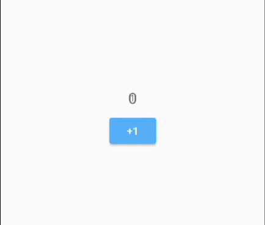
上图是第一次点击“+1”按钮后，“0”正在逐渐缩小，而“1”逐渐放大。
注意：AnimatedSwitcher的新旧child，如果类型相同，则Key必须不相等。
3. AnimatedSwitcher实现原理
实际上，AnimatedSwitcher的实现原理是比较简单的，我们根据AnimatedSwitcher的使用方式也可以猜个大概。要想实现新旧 child 切换动画，只需要明确两个问题：
- 动画执行的时机是什么时候？
- 如何对新旧child执行动画？
从AnimatedSwitcher的使用方式我们可以看到：当child发生变化时（子 widget 的 key 或类型不同时则认为发生变化），则重新会重新执行build，然后动画开始执行。
我们可以通过继承 StatefulWidget 来实现AnimatedSwitcher，具体做法是在didUpdateWidget 回调中判断其新旧 child 是否发生变化，如果发生变化，则对旧 child 执行反向退场（reverse）动画，对新child执行正向（forward）入场动画即可。下面是AnimatedSwitcher实现的部分核心伪代码：
Widget _widget;
void didUpdateWidget(AnimatedSwitcher oldWidget) {
super.didUpdateWidget(oldWidget);
// 检查新旧child是否发生变化(key和类型同时相等则返回true，认为没变化)
if (Widget.canUpdate(widget.child, oldWidget.child)) {
// child没变化，...
} else {
//child发生了变化，构建一个Stack来分别给新旧child执行动画
_widget= Stack(
alignment: Alignment.center,
children:[
//旧child应用FadeTransition
FadeTransition(
opacity: _controllerOldAnimation,
child : oldWidget.child,
),
//新child应用FadeTransition
FadeTransition(
opacity: _controllerNewAnimation,
child : widget.child,
),
]
);
// 给旧child执行反向退场动画
_controllerOldAnimation.reverse();
//给新child执行正向入场动画
_controllerNewAnimation.forward();
}
}
//build方法
Widget build(BuildContext context){
return _widget;
}
上面伪代码展示了AnimatedSwitcher实现的核心逻辑，当然AnimatedSwitcher真正的实现比这个复杂，它可以自定义进退场过渡动画以及执行动画时的布局等。在此，我们删繁就简，通过伪代码形式让读者能够清楚看到主要的实现思路，具体的实现读者可以参考AnimatedSwitcher源码。
另外，Flutter SDK中还提供了一个AnimatedCrossFade组件，它也可以切换两个子元素，切换过程执行渐隐渐显的动画，和AnimatedSwitcher不同的是AnimatedCrossFade是针对两个子元素，而AnimatedSwitcher是在一个子元素的新旧值之间切换。AnimatedCrossFade实现原理也比较简单，和AnimatedSwitcher类似，因此不再赘述，读者有兴趣可以查看其源码。
9.6.2 AnimatedSwitcher高级用法
假设现在我们想实现一个类似路由平移切换的动画：旧页面屏幕中向左侧平移退出，新页面从屏幕右侧平移进入。如果要用AnimatedSwitcher的话，我们很快就会发现一个问题：做不到！我们可能会写出下面的代码：
AnimatedSwitcher(
duration: Duration(milliseconds: 200),
transitionBuilder: (Widget child, Animation<double> animation) {
var tween = Tween<Offset>(begin: Offset(1, 0), end: Offset(0, 0))
return SlideTransition(
child: child,
position: tween.animate(animation),
);
},
...//省略
)
上面的代码有什么问题呢？我们前面说过在AnimatedSwitcher的 child 切换时会对新child执行正向动画（forward），而对旧child执行反向动画（reverse），所以真正的效果便是：新 child 确实从屏幕右侧平移进入了，但旧child却会从屏幕右侧（而不是左侧）退出。其实也很容易理解，因为在没有特殊处理的情况下，同一个动画的正向和逆向正好是相反（对称）的。
那么问题来了，难道就不能使用AnimatedSwitcher了？答案当然是否定的！仔细想想这个问题，究其原因，就是因为同一个Animation正向（forward）和反向（reverse）是对称的。所以如果我们可以打破这种对称性，那么便可以实现这个功能了，下面我们来封装一个MySlideTransition，它与SlideTransition唯一的不同就是对动画的反向执行进行了定制（从左边滑出隐藏），代码如下：
class MySlideTransition extends AnimatedWidget {
const MySlideTransition({
Key? key,
required Animation<Offset> position,
this.transformHitTests = true,
required this.child,
}) : super(key: key, listenable: position);
final bool transformHitTests;
final Widget child;
@override
Widget build(BuildContext context) {
final position = listenable as Animation<Offset>;
Offset offset = position.value;
if (position.status == AnimationStatus.reverse) {
offset = Offset(-offset.dx, offset.dy);
}
return FractionalTranslation(
translation: offset,
transformHitTests: transformHitTests,
child: child,
);
}
}
调用时，将SlideTransition替换成MySlideTransition 即可：
AnimatedSwitcher(
duration: Duration(milliseconds: 200),
transitionBuilder: (Widget child, Animation<double> animation) {
var tween=Tween<Offset>(begin: Offset(1, 0), end: Offset(0, 0))
return MySlideTransition(
child: child,
position: tween.animate(animation),
);
},
...//省略
)
运行后，我截取动画执行过程中的一帧，如图9-5所示：
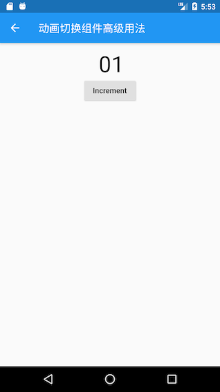
上图中“0”从左侧滑出，而“1”从右侧滑入。可以看到，我们通过这种巧妙的方式实现了类似路由进场切换的动画，实际上Flutter路由切换也正是通过AnimatedSwitcher来实现的。
9.6.3 SlideTransitionX
上面的示例我们实现了“左出右入”的动画，那如果要实现“左入右出”、“上入下出”或者 “下入上出”怎么办？当然，我们可以分别修改上面的代码，但是这样每种动画都得单独定义一个“Transition”，这很麻烦。本节将封装一个通用的SlideTransitionX 来实现这种“出入动画”，代码如下：
class SlideTransitionX extends AnimatedWidget {
SlideTransitionX({
Key? key,
required Animation<double> position,
this.transformHitTests = true,
this.direction = AxisDirection.down,
required this.child,
}) : super(key: key, listenable: position) {
switch (direction) {
case AxisDirection.up:
_tween = Tween(begin: const Offset(0, 1), end: const Offset(0, 0));
break;
case AxisDirection.right:
_tween = Tween(begin: const Offset(-1, 0), end: const Offset(0, 0));
break;
case AxisDirection.down:
_tween = Tween(begin: const Offset(0, -1), end: const Offset(0, 0));
break;
case AxisDirection.left:
_tween = Tween(begin: const Offset(1, 0), end: const Offset(0, 0));
break;
}
}
final bool transformHitTests;
final Widget child;
final AxisDirection direction;
late final Tween<Offset> _tween;
@override
Widget build(BuildContext context) {
final position = listenable as Animation<double>;
Offset offset = _tween.evaluate(position);
if (position.status == AnimationStatus.reverse) {
switch (direction) {
case AxisDirection.up:
offset = Offset(offset.dx, -offset.dy);
break;
case AxisDirection.right:
offset = Offset(-offset.dx, offset.dy);
break;
case AxisDirection.down:
offset = Offset(offset.dx, -offset.dy);
break;
case AxisDirection.left:
offset = Offset(-offset.dx, offset.dy);
break;
}
}
return FractionalTranslation(
translation: offset,
transformHitTests: transformHitTests,
child: child,
);
}
}
现在如果我们想实现各种“滑动出入动画”便非常容易，只需给direction 传递不同的方向值即可，比如要实现“上入下出”，则：
AnimatedSwitcher(
duration: Duration(milliseconds: 200),
transitionBuilder: (Widget child, Animation<double> animation) {
var tween=Tween<Offset>(begin: Offset(1, 0), end: Offset(0, 0))
return SlideTransitionX(
child: child,
direction: AxisDirection.down, //上入下出
position: animation,
);
},
...//省略其余代码
)
运行后如图9-6所示：

上图中“0”从底部滑出，而“1”从顶部滑入。读者可以尝试给SlideTransitionX的direction取不同的值来查看运行效果。
9.6.4 总结
本节我们学习了AnimatedSwitcher的详细用法，同时也介绍了打破AnimatedSwitcher动画对称性的方法。我们可以发现：在需要切换新旧UI元素的场景，AnimatedSwitcher将十分实用。
9.7 动画过渡组件
为了表述方便，本书约定，将在Widget属性发生变化时会执行过渡动画的组件统称为”动画过渡组件“，而动画过渡组件最明显的一个特征就是它会在内部自管理AnimationController。我们知道，为了方便使用者可以自定义动画的曲线、执行时长、方向等，在前面介绍过的动画封装方法中，通常都需要使用者自己提供一个AnimationController对象来自定义这些属性值。但是，如此一来，使用者就必须得手动管理AnimationController，这又会增加使用的复杂性。因此，如果也能将AnimationController进行封装，则会大大提高动画组件的易用性。
9.7.1 自定义动画过渡组件
我们要实现一个AnimatedDecoratedBox，它可以在decoration属性发生变化时，从旧状态变成新状态的过程可以执行一个过渡动画。根据前面所学的知识，我们实现了一个AnimatedDecoratedBox1组件：
class AnimatedDecoratedBox1 extends StatefulWidget {
const AnimatedDecoratedBox1({
Key? key,
required this.decoration,
required this.child,
this.curve = Curves.linear,
required this.duration,
this.reverseDuration,
}) : super(key: key);
final BoxDecoration decoration;
final Widget child;
final Duration duration;
final Curve curve;
final Duration? reverseDuration;
@override
_AnimatedDecoratedBox1State createState() => _AnimatedDecoratedBox1State();
}
class _AnimatedDecoratedBox1State extends State<AnimatedDecoratedBox1>
with SingleTickerProviderStateMixin {
@protected
AnimationController get controller => _controller;
late AnimationController _controller;
Animation<double> get animation => _animation;
late Animation<double> _animation;
late DecorationTween _tween;
@override
Widget build(BuildContext context) {
return AnimatedBuilder(
animation: _animation,
builder: (context, child) {
return DecoratedBox(
decoration: _tween.animate(_animation).value,
child: child,
);
},
child: widget.child,
);
}
@override
void initState() {
super.initState();
_controller = AnimationController(
duration: widget.duration,
reverseDuration: widget.reverseDuration,
vsync: this,
);
_tween = DecorationTween(begin: widget.decoration);
_updateCurve();
}
void _updateCurve() {
_animation = CurvedAnimation(parent: _controller, curve: widget.curve);
}
@override
void didUpdateWidget(AnimatedDecoratedBox1 oldWidget) {
super.didUpdateWidget(oldWidget);
if (widget.curve != oldWidget.curve) _updateCurve();
_controller.duration = widget.duration;
_controller.reverseDuration = widget.reverseDuration;
//正在执行过渡动画
if (widget.decoration != (_tween.end ?? _tween.begin)) {
_tween
..begin = _tween.evaluate(_animation)
..end = widget.decoration;
_controller
..value = 0.0
..forward();
}
}
@override
void dispose() {
_controller.dispose();
super.dispose();
}
}
下面我们来使用AnimatedDecoratedBox1来实现按钮点击后背景色从蓝色过渡到红色的效果：
Color _decorationColor = Colors.blue;
var duration = Duration(seconds: 1);
...//省略无关代码
AnimatedDecoratedBox1(
duration: duration,
decoration: BoxDecoration(color: _decorationColor),
child: TextButton(
onPressed: () {
setState(() {
_decorationColor = Colors.red;
});
},
child: const Text(
"AnimatedDecoratedBox",
style: TextStyle(color: Colors.white),
),
),
)
点击前效果如图9-7所示，点击后截取了过渡过程的一帧如图9-8所示：
点击后，按钮背景色会从蓝色向红色过渡，图9-9是过渡过程中的一帧，有点偏紫色，整个过渡动画结束后背景会变为红色。
上面的代码虽然实现了我们期望的功能，但是代码却比较复杂。稍加思考后，我们就可以发现，AnimationController的管理以及Tween更新部分的代码都是可以抽象出来的，如果我们这些通用逻辑封装成基类，那么要实现动画过渡组件只需要继承这些基类，然后定制自身不同的代码（比如动画每一帧的构建方法）即可，这样将会简化代码。
为了方便开发者来实现动画过渡组件的封装，Flutter提供了一个ImplicitlyAnimatedWidget抽象类，它继承自StatefulWidget，同时提供了一个对应的ImplicitlyAnimatedWidgetState类，AnimationController的管理就在ImplicitlyAnimatedWidgetState类中。开发者如果要封装动画，只需要分别继承ImplicitlyAnimatedWidget和ImplicitlyAnimatedWidgetState类即可，下面我们演示一下具体如何实现。
我们需要分两步实现：
-
继承
ImplicitlyAnimatedWidget类。class AnimatedDecoratedBox extends ImplicitlyAnimatedWidget { const AnimatedDecoratedBox({ Key? key, required this.decoration, required this.child, Curve curve = Curves.linear, required Duration duration, }) : super( key: key, curve: curve, duration: duration, ); final BoxDecoration decoration; final Widget child; @override _AnimatedDecoratedBoxState createState() { return _AnimatedDecoratedBoxState(); } }其中
curve、duration、reverseDuration三个属性在ImplicitlyAnimatedWidget中已定义。 可以看到AnimatedDecoratedBox类和普通继承自StatefulWidget的类没有什么不同。 -
State类继承自
AnimatedWidgetBaseState（该类继承自ImplicitlyAnimatedWidgetState类）。class _AnimatedDecoratedBoxState extends AnimatedWidgetBaseState<AnimatedDecoratedBox> { late DecorationTween _decoration; @override Widget build(BuildContext context) { return DecoratedBox( decoration: _decoration.evaluate(animation), child: widget.child, ); } @override void forEachTween(TweenVisitor<dynamic> visitor) { _decoration = visitor( _decoration, widget.decoration, (value) => DecorationTween(begin: value), ) as DecorationTween; } }可以看到我们实现了
build和forEachTween两个方法。在动画执行过程中，每一帧都会调用build方法（调用逻辑在ImplicitlyAnimatedWidgetState中），所以在build方法中我们需要构建每一帧的DecoratedBox状态，因此得算出每一帧的decoration状态，这个我们可以通过_decoration.evaluate(animation)来算出，其中animation是ImplicitlyAnimatedWidgetState基类中定义的对象，_decoration是我们自定义的一个DecorationTween类型的对象，那么现在的问题就是它是在什么时候被赋值的呢？要回答这个问题，我们就得搞清楚什么时候需要对_decoration赋值。我们知道_decoration是一个Tween，而Tween的主要职责就是定义动画的起始状态（begin）和终止状态(end)。对于AnimatedDecoratedBox来说，decoration的终止状态就是用户传给它的值，而起始状态是不确定的，有以下两种情况：AnimatedDecoratedBox首次build，此时直接将其decoration值置为起始状态，即_decoration值为DecorationTween(begin: decoration)。AnimatedDecoratedBox的decoration更新时，则起始状态为_decoration.animate(animation)，即_decoration值为DecorationTween(begin: _decoration.animate(animation)，end:decoration)。
现在forEachTween的作用就很明显了，它正是用于来更新Tween的初始值的，在上述两种情况下会被调用，而开发者只需重写此方法，并在此方法中更新Tween的起始状态值即可。而一些更新的逻辑被屏蔽在了visitor回调，我们只需要调用它并给它传递正确的参数即可，visitor方法签名如下：
Tween<T> visitor(
Tween<T> tween, //当前的tween，第一次调用为null
T targetValue, // 终止状态
TweenConstructor<T> constructor，//Tween构造器，在上述三种情况下会被调用以更新tween
);
可以看到，通过继承ImplicitlyAnimatedWidget和ImplicitlyAnimatedWidgetState类可以快速的实现动画过渡组件的封装，这和我们纯手工实现相比，代码简化了很多。
如果读者还有疑惑，建议查看
ImplicitlyAnimatedWidgetState的源码并结合本示例代码对比理解。
9.7.2 Flutter预置的动画过渡组件
Flutter SDK中也预置了很多动画过渡组件，实现方式和大都和AnimatedDecoratedBox差不多，如表9-1所示：
| 组件名 | 功能 |
|---|---|
| AnimatedPadding | 在padding发生变化时会执行过渡动画到新状态 |
| AnimatedPositioned | 配合Stack一起使用，当定位状态发生变化时会执行过渡动画到新的状态。 |
| AnimatedOpacity | 在透明度opacity发生变化时执行过渡动画到新状态 |
| AnimatedAlign | 当alignment发生变化时会执行过渡动画到新的状态。 |
| AnimatedContainer | 当Container属性发生变化时会执行过渡动画到新的状态。 |
| AnimatedDefaultTextStyle | 当字体样式发生变化时，子组件中继承了该样式的文本组件会动态过渡到新样式。 |
import 'package:flutter/material.dart';
class AnimatedWidgetsTest extends StatefulWidget {
const AnimatedWidgetsTest({Key? key}) : super(key: key);
@override
_AnimatedWidgetsTestState createState() => _AnimatedWidgetsTestState();
}
class _AnimatedWidgetsTestState extends State<AnimatedWidgetsTest> {
double _padding = 10;
var _align = Alignment.topRight;
double _height = 100;
double _left = 0;
Color _color = Colors.red;
TextStyle _style = const TextStyle(color: Colors.black);
Color _decorationColor = Colors.blue;
double _opacity = 1;
@override
Widget build(BuildContext context) {
var duration = const Duration(milliseconds: 400);
return SingleChildScrollView(
child: Column(
children: <Widget>[
ElevatedButton(
onPressed: () {
setState(() {
_padding = 20;
});
},
child: AnimatedPadding(
duration: duration,
padding: EdgeInsets.all(_padding),
child: const Text("AnimatedPadding"),
),
),
SizedBox(
height: 50,
child: Stack(
children: <Widget>[
AnimatedPositioned(
duration: duration,
left: _left,
child: ElevatedButton(
onPressed: () {
setState(() {
_left = 100;
});
},
child: const Text("AnimatedPositioned"),
),
)
],
),
),
Container(
height: 100,
color: Colors.grey,
child: AnimatedAlign(
duration: duration,
alignment: _align,
child: ElevatedButton(
onPressed: () {
setState(() {
_align = Alignment.center;
});
},
child: const Text("AnimatedAlign"),
),
),
),
AnimatedContainer(
duration: duration,
height: _height,
color: _color,
child: TextButton(
onPressed: () {
setState(() {
_height = 150;
_color = Colors.blue;
});
},
child: const Text(
"AnimatedContainer",
style: TextStyle(color: Colors.white),
),
),
),
AnimatedDefaultTextStyle(
child: GestureDetector(
child: const Text("hello world"),
onTap: () {
setState(() {
_style = const TextStyle(
color: Colors.blue,
decorationStyle: TextDecorationStyle.solid,
decorationColor: Colors.blue,
);
});
},
),
style: _style,
duration: duration,
),
AnimatedOpacity(
opacity: _opacity,
duration: duration,
child: TextButton(
style: ButtonStyle(
backgroundColor: MaterialStateProperty.all(Colors.blue)),
onPressed: () {
setState(() {
_opacity = 0.2;
});
},
child: const Text(
"AnimatedOpacity",
style: TextStyle(color: Colors.white),
),
),
),
AnimatedDecoratedBox1(
duration: Duration(
milliseconds: _decorationColor == Colors.red ? 400 : 2000),
decoration: BoxDecoration(color: _decorationColor),
child: Builder(builder: (context) {
return TextButton(
onPressed: () {
setState(() {
_decorationColor = _decorationColor == Colors.blue
? Colors.red
: Colors.blue;
});
},
child: const Text(
"AnimatedDecoratedBox toggle",
style: TextStyle(color: Colors.white),
),
);
}),
)
].map((e) {
return Padding(
padding: const EdgeInsets.symmetric(vertical: 16),
child: e,
);
}).toList(),
),
);
}
}
运行后效果如图9-9所示：

读者可以点击一下相应组件来查看一下实际的运行效果。
本章目录
- 10.1：自定义组件方法简介
- 10.2：组合现有组件
- 10.3：组合实例：TurnBox
- 10.4：CustomPaint与Canvas
- 10.5：自绘实例：圆形渐变进度条
- 10.6：自绘组件：CustomCheckbox
- 10.7：自绘组件：DoneWidget
- 10.8：水印组件实例：文本绘制与离屏渲染
10.1 自定义组件方法简介
当Flutter提供的现有组件无法满足我们的需求，或者我们为了共享代码需要封装一些通用组件，这时我们就需要自定义组件。在Flutter中自定义组件有三种方式：通过组合其他组件、自绘和实现RenderObject。本节我们先分别介绍一下这三种方式的特点，后面章节中则详细介绍它们的细节。
10.1.1 组合多个Widget
这种方式是通过拼装多个组件来组合成一个新的组件。例如我们之前介绍的Container就是一个组合组件，它是由DecoratedBox、ConstrainedBox、Transform、Padding、Align等组件组成。
在Flutter中，组合的思想非常重要，Flutter提供了非常多的基础组件，而我们的界面开发其实就是按照需要组合这些组件来实现各种不同的布局而已。
10.1.2 通过CustomPaint自绘
如果遇到无法通过现有的组件来实现需要的UI时，我们可以通过自绘组件的方式来实现，例如我们需要一个颜色渐变的圆形进度条，而Flutter提供的CircularProgressIndicator并不支持在显示精确进度时对进度条应用渐变色（其valueColor 属性只支持执行旋转动画时变化Indicator的颜色），这时最好的方法就是通过自定义组件来绘制出我们期望的外观。我们可以通过Flutter中提供的CustomPaint和Canvas来实现UI自绘。
10.1.3 通过RenderObject自绘
Flutter提供的自身具有UI外观的组件，如文本Text、Image都是通过相应的RenderObject（我们将在“Flutter核心原理”一章中详细介绍RenderObject）渲染出来的，如Text是由RenderParagraph渲染；而Image是由RenderImage渲染。RenderObject是一个抽象类，它定义了一个抽象方法paint(...)：
void paint(PaintingContext context, Offset offset)
PaintingContext代表组件的绘制上下文，通过PaintingContext.canvas可以获得Canvas，而绘制逻辑主要是通过Canvas API来实现。子类需要重写此方法以实现自身的绘制逻辑，如RenderParagraph需要实现文本绘制逻辑，而RenderImage需要实现图片绘制逻辑。
可以发现，RenderObject中最终也是通过Canvas API来绘制的，那么通过实现RenderObject的方式和上面介绍的通过CustomPaint和Canvas自绘的方式有什么区别？其实答案很简单，CustomPaint只是为了方便开发者封装的一个代理类，它直接继承自SingleChildRenderObjectWidget，通过RenderCustomPaint的paint方法将Canvas和画笔Painter(需要开发者实现，后面章节介绍)连接起来实现了最终的绘制（绘制逻辑在Painter中）。
10.1.4 总结
“组合”是自定义组件最简单的方法，在任何需要自定义组件的场景下，我们都应该优先考虑是否能够通过组合来实现。而通过CustomPaint和RenderObject自绘的方式本质上是一样的，都需要开发者调用Canvas API手动去绘制UI，优点是强大灵活，理论上可以实现任何外观的UI，而缺点是必须了解Canvas API细节，并且得自己去实现绘制逻辑。在本章接下来的小节中，我们将通过一些实例来详细介绍自定义UI的方法。
10.2 组合现有组件
在Flutter中页面UI通常都是由一些低级别组件组合而成，当我们需要封装一些通用组件时，应该首先考虑是否可以通过组合其他组件来实现，如果可以，则应优先使用组合，因为直接通过现有组件拼装会非常简单、灵活、高效。
10.2.1 实例：自定义渐变按钮
1. 实现GradientButton
Flutter Material组件库中的按钮默认不支持渐变背景，为了实现渐变背景按钮，我们自定义一个GradientButton 组件，它需要支持一下功能：
- 背景支持渐变色
- 手指按下时有涟漪效果
- 可以支持圆角
我们先来看看最终要实现的效果（图10-1）：

我们DecoratedBox可以支持背景色渐变和圆角，InkWell在手指按下有涟漪效果，所以我们可以通过组合DecoratedBox和InkWell来实现GradientButton，代码如下：
import 'package:flutter/material.dart';
class GradientButton extends StatelessWidget {
const GradientButton({Key? key,
this.colors,
this.width,
this.height,
this.onPressed,
this.borderRadius,
required this.child,
}) : super(key: key);
// 渐变色数组
final List<Color>? colors;
// 按钮宽高
final double? width;
final double? height;
final BorderRadius? borderRadius;
//点击回调
final GestureTapCallback? onPressed;
final Widget child;
@override
Widget build(BuildContext context) {
ThemeData theme = Theme.of(context);
//确保colors数组不空
List<Color> _colors =
colors ?? [theme.primaryColor, theme.primaryColorDark];
return DecoratedBox(
decoration: BoxDecoration(
gradient: LinearGradient(colors: _colors),
borderRadius: borderRadius,
//border: RoundedRectangleBorder(borderRadius: BorderRadius.circular(20.0)),
),
child: Material(
type: MaterialType.transparency,
child: InkWell(
splashColor: _colors.last,
highlightColor: Colors.transparent,
borderRadius: borderRadius,
onTap: onPressed,
child: ConstrainedBox(
constraints: BoxConstraints.tightFor(height: height, width: width),
child: Center(
child: Padding(
padding: const EdgeInsets.all(8.0),
child: DefaultTextStyle(
style: const TextStyle(fontWeight: FontWeight.bold),
child: child,
),
),
),
),
),
),
);
}
}
可以看到GradientButton是由DecoratedBox、Padding、Center、InkWell等组件组合而成。当然上面的代码只是一个示例，作为一个按钮它还并不完整，比如没有禁用状态，读者可以根据实际需要来完善，为了使用方便，笔者封装了一个功能更加完整的GradientButton，并将它添加到了flukit组件库中，读者可以引入flukit库后就可以直接使用了。
2. 使用GradientButton
import 'package:flutter/material.dart';
import '../widgets/index.dart';
class GradientButtonRoute extends StatefulWidget {
const GradientButtonRoute({Key? key}) : super(key: key);
@override
_GradientButtonRouteState createState() => _GradientButtonRouteState();
}
class _GradientButtonRouteState extends State<GradientButtonRoute> {
@override
Widget build(BuildContext context) {
return Column(
mainAxisSize: MainAxisSize.min,
children: <Widget>[
GradientButton(
colors: const [Colors.orange, Colors.red],
height: 50.0,
child: const Text("Submit"),
onPressed: onTap,
),
GradientButton(
height: 50.0,
colors: [Colors.lightGreen, Colors.green.shade700],
child: const Text("Submit"),
onPressed: onTap,
),
GradientButton(
height: 50.0,
//borderRadius: const BorderRadius.all(Radius.circular(5)),
colors: [Colors.lightBlue.shade300, Colors.blueAccent],
child: const Text("Submit"),
onPressed: onTap,
),
],
);
}
onTap() {
print("button click");
}
}
10.2.2 总结
通过组合的方式定义组件和我们之前写界面并无差异，不过在抽离出单独的组件时我们要考虑代码规范性，如必要参数要用required关键词标注，对于可选参数在特定场景需要判空或设置默认值等。这是由于使用者大多时候可能不了解组件的内部细节，所以为了保证代码健壮性，我们需要在用户错误地使用组件时能够兼容或报错提示（使用assert断言函数）。
10.3 组合实例：TurnBox
我们之前已经介绍过RotatedBox，它可以旋转子组件，但是它有两个缺点：一是只能将其子节点以90度的倍数旋转；二是当旋转的角度发生变化时，旋转角度更新过程没有动画。
本节我们将实现一个TurnBox组件，它不仅可以以任意角度来旋转其子节点，而且可以在角度发生变化时执行一个动画以过渡到新状态，同时，我们可以手动指定动画速度。
TurnBox的完整代码如下：
import 'package:flutter/widgets.dart';
class TurnBox extends StatefulWidget {
const TurnBox({
Key key,
this.turns = .0, //旋转的“圈”数,一圈为360度，如0.25圈即90度
this.speed = 200, //过渡动画执行的总时长
this.child
}) :super(key: key);
final double turns;
final int speed;
final Widget child;
@override
_TurnBoxState createState() => _TurnBoxState();
}
class _TurnBoxState extends State<TurnBox>
with SingleTickerProviderStateMixin {
AnimationController _controller;
@override
void initState() {
super.initState();
_controller = AnimationController(
vsync: this,
lowerBound: -double.infinity,
upperBound: double.infinity
);
_controller.value = widget.turns;
}
@override
void dispose() {
_controller.dispose();
super.dispose();
}
@override
Widget build(BuildContext context) {
return RotationTransition(
turns: _controller,
child: widget.child,
);
}
@override
void didUpdateWidget(TurnBox oldWidget) {
super.didUpdateWidget(oldWidget);
//旋转角度发生变化时执行过渡动画
if (oldWidget.turns != widget.turns) {
_controller.animateTo(
widget.turns,
duration: Duration(milliseconds: widget.speed??200),
curve: Curves.easeOut,
);
}
}
}
上面代码中：
- 我们是通过组合
RotationTransition和child来实现的旋转效果。 - 在
didUpdateWidget中，我们判断要旋转的角度是否发生了变化，如果变了，则执行一个过渡动画。
下面我们测试一下TurnBox的功能，测试代码如下：
import 'package:flutter/material.dart';
import '../widgets/index.dart';
class TurnBoxRoute extends StatefulWidget {
const TurnBoxRoute({Key? key}) : super(key: key);
@override
_TurnBoxRouteState createState() => _TurnBoxRouteState();
}
class _TurnBoxRouteState extends State<TurnBoxRoute> {
double _turns = .0;
@override
Widget build(BuildContext context) {
return Center(
child: Column(
mainAxisSize: MainAxisSize.min,
children: <Widget>[
TurnBox(
turns: _turns,
speed: 500,
child: const Icon(
Icons.refresh,
size: 50,
),
),
TurnBox(
turns: _turns,
speed: 1000,
child: const Icon(
Icons.refresh,
size: 150.0,
),
),
ElevatedButton(
child: const Text("顺时针旋转1/5圈"),
onPressed: () {
setState(() {
_turns += .2;
});
},
),
ElevatedButton(
child: const Text("逆时针旋转1/5圈"),
onPressed: () {
setState(() {
_turns -= .2;
});
},
)
],
),
);
}
}
测试代码运行后效果如图10-2所示：

当我们点击旋转按钮时，两个图标的旋转都会旋转1/5圈，但旋转的速度是不同的，读者可以自己运行一下示例看看效果。
实际上本示例只组合了RotationTransition一个组件，它是一个最简的组合类组件示例。另外，如果我们封装的是StatefulWidget，那么一定要注意在组件更新时是否需要同步状态。比如我们要封装一个富文本展示组件MyRichText ，它可以自动处理url链接，定义如下：
class MyRichText extends StatefulWidget {
MyRichText({
Key key,
this.text, // 文本字符串
this.linkStyle, // url链接样式
}) : super(key: key);
final String text;
final TextStyle linkStyle;
@override
_MyRichTextState createState() => _MyRichTextState();
}
接下来我们在_MyRichTextState中要实现的功能有两个：
- 解析文本字符串“text”，生成
TextSpan缓存起来； - 在
build中返回最终的富文本样式；
_MyRichTextState 实现的代码大致如下：
class _MyRichTextState extends State<MyRichText> {
TextSpan _textSpan;
@override
Widget build(BuildContext context) {
return RichText(
text: _textSpan,
);
}
TextSpan parseText(String text) {
// 耗时操作：解析文本字符串，构建出TextSpan。
// 省略具体实现。
}
@override
void initState() {
_textSpan = parseText(widget.text)
super.initState();
}
}
由于解析文本字符串，构建出TextSpan是一个耗时操作，为了不在每次build的时候都解析一次，所以我们在initState中对解析的结果进行了缓存，然后再build中直接使用解析的结果_textSpan。这看起来很不错，但是上面的代码有一个严重的问题，就是父组件传入的text发生变化时（组件树结构不变），那么MyRichText显示的内容不会更新，原因就是initState只会在State创建时被调用，所以在text发生变化时，parseText没有重新执行，导致_textSpan任然是旧的解析值。要解决这个问题也很简单，我们只需添加一个didUpdateWidget回调，然后再里面重新调用parseText即可：
@override
void didUpdateWidget(MyRichText oldWidget) {
if (widget.text != oldWidget.text) {
_textSpan = parseText(widget.text);
}
super.didUpdateWidget(oldWidget);
}
有些读者可能会觉得这个点也很简单，是的，的确很简单，之所以要在这里反复强调是因为这个点在实际开发中很容易被忽略，它虽然简单，但却很重要。总之，当我们在State中会缓存某些依赖Widget参数的数据时，一定要注意在组件更新时是否需要同步状态。
10.4 CustomPaint 与 Canvas
对于一些复杂或不规则的UI，我们可能无法通过组合其他组件的方式来实现，比如我们需要一个正六边形、一个渐变的圆形进度条、一个棋盘等。当然，有时候我们可以使用图片来实现，但在一些需要动态交互的场景静态图片也是实现不了的，比如要实现一个手写输入面板，这时，我们就需要来自己绘制UI外观。
几乎所有的UI系统都会提供一个自绘UI的接口，这个接口通常会提供一块2D画布Canvas，Canvas内部封装了一些基本绘制的API，开发者可以通过Canvas绘制各种自定义图形。在Flutter中，提供了一个CustomPaint 组件，它可以结合画笔CustomPainter来实现自定义图形绘制。
10.4.1 CustomPaint
我们看看CustomPaint构造函数：
CustomPaint({
Key key,
this.painter,
this.foregroundPainter,
this.size = Size.zero,
this.isComplex = false,
this.willChange = false,
Widget child, //子节点，可以为空
})
painter: 背景画笔，会显示在子节点后面;foregroundPainter: 前景画笔，会显示在子节点前面size：当child为null时，代表默认绘制区域大小，如果有child则忽略此参数，画布尺寸则为child尺寸。如果有child但是想指定画布为特定大小，可以使用SizeBox包裹CustomPaint实现。isComplex：是否复杂的绘制，如果是，Flutter会应用一些缓存策略来减少重复渲染的开销。willChange：和isComplex配合使用，当启用缓存时，该属性代表在下一帧中绘制是否会改变。
可以看到，绘制时我们需要提供前景或背景画笔，两者也可以同时提供。我们的画笔需要继承CustomPainter类，我们在画笔类中实现真正的绘制逻辑。
1. 绘制边界 RepaintBoundary
如果CustomPaint有子节点，为了避免子节点不必要的重绘并提高性能，通常情况下都会将子节点包裹在RepaintBoundary 组件中，这样会在绘制时就会创建一个新的绘制层（Layer），其子组件将在新的Layer上绘制，而父组件将在原来Layer上绘制，也就是说RepaintBoundary 子组件的绘制将独立于父组件的绘制，RepaintBoundary会隔离其子节点和CustomPaint本身的绘制边界。示例如下：
CustomPaint(
size: Size(300, 300), //指定画布大小
painter: MyPainter(),
child: RepaintBoundary(child:...)),
)
2. CustomPainter与Canvas
CustomPainter中提定义了一个虚函数paint：
void paint(Canvas canvas, Size size);
paint有两个参数:
-
Canvas：一个画布，包括各种绘制方法，我们列出一下常用的方法：API名称 功能 drawLine 画线 drawPoint 画点 drawPath 画路径 drawImage 画图像 drawRect 画矩形 drawCircle 画圆 drawOval 画椭圆 drawArc 画圆弧 -
Size：当前绘制区域大小。
3. 画笔Paint
现在画布有了，我们最后还缺一个画笔，Flutter提供了Paint类来实现画笔。在Paint中，我们可以配置画笔的各种属性如粗细、颜色、样式等。如：
var paint = Paint() //创建一个画笔并配置其属性
..isAntiAlias = true //是否抗锯齿
..style = PaintingStyle.fill //画笔样式：填充
..color=Color(0x77cdb175);//画笔颜色
更多的配置属性读者可以参考Paint类定义。
10.4.2 实例：五子棋/盘
1. 绘制棋盘、棋子
下面我们通过一个五子棋游戏中棋盘和棋子的绘制来演示自绘UI的过程，首先我们看一下我们的目标效果，如图10-3所示：
代码：
import 'package:flutter/material.dart';
import 'dart:math';
class CustomPaintRoute extends StatelessWidget {
const CustomPaintRoute({Key? key}) : super(key: key);
@override
Widget build(BuildContext context) {
return Center(
child: CustomPaint(
size: Size(300, 300), //指定画布大小
painter: MyPainter(),
),
);
}
}
class MyPainter extends CustomPainter {
@override
void paint(Canvas canvas, Size size) {
print('paint');
var rect = Offset.zero & size;
//画棋盘
drawChessboard(canvas, rect);
//画棋子
drawPieces(canvas, rect);
}
// 返回false, 后面介绍
@override
bool shouldRepaint(CustomPainter oldDelegate) => false;
}
我们先实现棋盘绘制：
void drawChessboard(Canvas canvas, Rect rect) {
//棋盘背景
var paint = Paint()
..isAntiAlias = true
..style = PaintingStyle.fill //填充
..color = Color(0xFFDCC48C);
canvas.drawRect(rect, paint);
//画棋盘网格
paint
..style = PaintingStyle.stroke //线
..color = Colors.black38
..strokeWidth = 1.0;
//画横线
for (int i = 0; i <= 15; ++i) {
double dy = rect.top + rect.height / 15 * i;
canvas.drawLine(Offset(rect.left, dy), Offset(rect.right, dy), paint);
}
for (int i = 0; i <= 15; ++i) {
double dx = rect.left + rect.width / 15 * i;
canvas.drawLine(Offset(dx, rect.top), Offset(dx, rect.bottom), paint);
}
}
再实现棋子绘制：
//画棋子
void drawPieces(Canvas canvas, Rect rect) {
double eWidth = rect.width / 15;
double eHeight = rect.height / 15;
//画一个黑子
var paint = Paint()
..style = PaintingStyle.fill
..color = Colors.black;
//画一个黑子
canvas.drawCircle(
Offset(rect.center.dx - eWidth / 2, rect.center.dy - eHeight / 2),
min(eWidth / 2, eHeight / 2) - 2,
paint,
);
//画一个白子
paint.color = Colors.white;
canvas.drawCircle(
Offset(rect.center.dx + eWidth / 2, rect.center.dy - eHeight / 2),
min(eWidth / 2, eHeight / 2) - 2,
paint,
);
}
2. 绘制性能
绘制是比较昂贵的操作，所以我们在实现自绘控件时应该考虑到性能开销，下面是两条关于性能优化的建议：
-
尽可能的利用好
shouldRepaint返回值；在UI树重新build时，控件在绘制前都会先调用该方法以确定是否有必要重绘；假如我们绘制的UI不依赖外部状态，即外部状态改变不会影响我们的UI外观，那么就应该返回false；如果绘制依赖外部状态，那么我们就应该在shouldRepaint中判断依赖的状态是否改变，如果已改变则应返回true来重绘，反之则应返回false不需要重绘。 -
绘制尽可能多的分层；在上面五子棋的示例中，我们将棋盘和棋子的绘制放在了一起，这样会有一个问题：由于棋盘始终是不变的，用户每次落子时变的只是棋子，但是如果按照上面的代码来实现，每次绘制棋子时都要重新绘制一次棋盘，这是没必要的。优化的方法就是将棋盘单独抽为一个组件，并设置其
shouldRepaint回调值为false，然后将棋盘组件作为背景。然后将棋子的绘制放到另一个组件中，这样每次落子时只需要绘制棋子。
3. 防止意外重绘
我们在上例的基础上添加一个 ElevatedButton，点击后什么也不做：
class CustomPaintRoute extends StatelessWidget {
const CustomPaintRoute({Key? key}) : super(key: key);
@override
Widget build(BuildContext context) {
return Center(
child: Column(
mainAxisSize: MainAxisSize.min,
children: [
CustomPaint(
size: Size(300, 300), //指定画布大小
painter: MyPainter(),
),
//添加一个刷新button
ElevatedButton(onPressed: () {}, child: Text("刷新"))
],
),
);
}
}
运行后我们点击“刷新”按钮，运行后如图10-4所示：

发现日志面板输出了很多 “paint”，也就是说在点击按钮的时候发生了多次重绘。奇怪，shouldRepaint 我们返回的是false，并且点击刷新按钮也不会触发页面重新构建，那是什么导致的重绘呢？要彻底弄清楚这个问题得等到第十四章中介绍 Flutter 绘制原理时才行，现在读者可以简单认为，刷新按钮的画布和CustomPaint的画布是同一个，刷新按钮点击时会执行一个水波动画，水波动画执行过程中画布会不停的刷新，所以就导致了CustomPaint 不停的重绘。要解决这个问题的方案很简单，给刷新按钮 或 CustomPaint 任意一个添加一个 RepaintBoundary 父组件即可，现在可以先简单认为这样做可以生成一个新的画布:
RepaintBoundary(
child: CustomPaint(
size: Size(300, 300), //指定画布大小
painter: MyPainter(),
),
),
// 或者给刷新按钮添加RepaintBoundary
// RepaintBoundary(child: ElevatedButton(onPressed: () {}, child: Text("刷新")))
注意：RepaintBoundary 的具体原理我们将在第十四章中详细介绍。
10.4.3 总结
自绘控件非常强大，理论上可以实现任何2D图形外观，实际上Flutter提供的所有组件最终都是通过调用Canvas绘制出来的，只不过绘制的逻辑被封装起来了，读者有兴趣可以查看具有外观样式的组件源码，找到其对应的RenderObject对象，如Text对应的RenderParagraph对象最终会通过Canvas实现文本绘制逻辑。下一节我们会再通过一个自绘的圆形背景渐变进度条的实例来帮助读者加深印象。
10.5 自绘实例：圆形背景渐变进度条
本节我们实现一个圆形背景渐变进度条，它支持：
- 支持多种背景渐变色。
- 任意弧度；进度条可以不是整圆。
- 可以自定义粗细、两端是否圆角等样式。
可以发现要实现这样的一个进度条是无法通过现有组件组合而成的，所以我们通过自绘方式实现，代码如下：
import 'dart:math';
import 'package:flutter/material.dart';
class GradientCircularProgressIndicator extends StatelessWidget {
const GradientCircularProgressIndicator({
Key? key,
this.stokeWidth = 2.0,
required this.radius,
required this.colors,
this.stops,
this.strokeCapRound = false,
this.backgroundColor = const Color(0xFFEEEEEE),
this.totalAngle = 2 * pi,
this.value,
}) : super(key: key);
///粗细
final double strokeWidth;
/// 圆的半径
final double radius;
///两端是否为圆角
final bool strokeCapRound;
/// 当前进度，取值范围 [0.0-1.0]
final double value;
/// 进度条背景色
final Color backgroundColor;
/// 进度条的总弧度，2*PI为整圆，小于2*PI则不是整圆
final double totalAngle;
/// 渐变色数组
final List<Color> colors;
/// 渐变色的终止点，对应colors属性
final List<double> stops;
@override
Widget build(BuildContext context) {
double _offset = .0;
// 如果两端为圆角，则需要对起始位置进行调整，否则圆角部分会偏离起始位置
// 下面调整的角度的计算公式是通过数学几何知识得出，读者有兴趣可以研究一下为什么是这样
if (strokeCapRound) {
_offset = asin(strokeWidth / (radius * 2 - strokeWidth));
}
var _colors = colors;
if (_colors == null) {
Color color = Theme.of(context).colorScheme.secondary;
_colors = [color, color];
}
return Transform.rotate(
angle: -pi / 2.0 - _offset,
child: CustomPaint(
size: Size.fromRadius(radius),
painter: _GradientCircularProgressPainter(
strokeWidth: strokeWidth,
strokeCapRound: strokeCapRound,
backgroundColor: backgroundColor,
value: value,
total: totalAngle,
radius: radius,
colors: _colors,
)
),
);
}
}
//实现画笔
class _GradientCircularProgressPainter extends CustomPainter {
_GradientCircularProgressPainter({
this.strokeWidth = 10.0,
this.strokeCapRound = false,
this.backgroundColor = const Color(0xFFEEEEEE),
this.radius,
this.total = 2 * pi,
@required this.colors,
this.stops,
this.value
});
final double strokeWidth;
final bool strokeCapRound;
final double value;
final Color backgroundColor;
final List<Color> colors;
final double total;
final double radius;
final List<double> stops;
@override
void paint(Canvas canvas, Size size) {
if (radius != null) {
size = Size.fromRadius(radius);
}
double _offset = strokeWidth / 2.0;
double _value = (value ?? .0);
_value = _value.clamp(.0, 1.0) * total;
double _start = .0;
if (strokeCapRound) {
_start = asin(strokeWidth/ (size.width - strokeWidth));
}
Rect rect = Offset(_offset, _offset) & Size(
size.width - strokeWidth,
size.height - strokeWidth
);
var paint = Paint()
..strokeCap = strokeCapRound ? StrokeCap.round : StrokeCap.butt
..style = PaintingStyle.stroke
..isAntiAlias = true
..strokeWidth = strokeWidth;
// 先画背景
if (backgroundColor != Colors.transparent) {
paint.color = backgroundColor;
canvas.drawArc(
rect,
_start,
total,
false,
paint
);
}
// 再画前景，应用渐变
if (_value > 0) {
paint.shader = SweepGradient(
startAngle: 0.0,
endAngle: _value,
colors: colors,
stops: stops,
).createShader(rect);
canvas.drawArc(
rect,
_start,
_value,
false,
paint
);
}
}
//简单返回true，实践中应该根据画笔属性是否变化来确定返回true还是false
@override
bool shouldRepaint(CustomPainter oldDelegate) => true;
}
下面我们来测试一下，为了尽可能多的展示GradientCircularProgressIndicator的不同外观和用途，这个示例代码会比较长，并且添加了动画，建议读者将此示例运行起来观看实际效果，我们先看看其中一帧动画的截图（图10-5）：

示例代码：
import 'dart:math';
import 'package:flutter/material.dart';
import '../widgets/index.dart';
class GradientCircularProgressRoute extends StatefulWidget {
const GradientCircularProgressRoute({Key? key}) : super(key: key);
@override
GradientCircularProgressRouteState createState() {
return GradientCircularProgressRouteState();
}
}
class GradientCircularProgressRouteState
extends State<GradientCircularProgressRoute> with TickerProviderStateMixin {
late AnimationController _animationController;
@override
void initState() {
super.initState();
_animationController = AnimationController(
vsync: this,
duration: const Duration(seconds: 3),
);
bool isForward = true;
_animationController.addStatusListener((status) {
if (status == AnimationStatus.forward) {
isForward = true;
} else if (status == AnimationStatus.completed ||
status == AnimationStatus.dismissed) {
if (isForward) {
_animationController.reverse();
} else {
_animationController.forward();
}
} else if (status == AnimationStatus.reverse) {
isForward = false;
}
});
_animationController.forward();
}
@override
void dispose() {
_animationController.dispose();
super.dispose();
}
@override
Widget build(BuildContext context) {
return SingleChildScrollView(
child: Center(
child: Column(
crossAxisAlignment: CrossAxisAlignment.center,
children: <Widget>[
AnimatedBuilder(
animation: _animationController,
builder: (BuildContext context, child) {
return Padding(
padding: const EdgeInsets.symmetric(vertical: 16.0),
child: Column(
children: <Widget>[
Wrap(
spacing: 10.0,
runSpacing: 16.0,
children: <Widget>[
GradientCircularProgressIndicator(
// No gradient
colors: const [Colors.blue, Colors.blue],
radius: 50.0,
stokeWidth: 3.0,
value: _animationController.value,
),
GradientCircularProgressIndicator(
colors: const [Colors.red, Colors.orange],
radius: 50.0,
stokeWidth: 3.0,
value: _animationController.value,
),
GradientCircularProgressIndicator(
colors: const [Colors.red, Colors.orange, Colors.red],
radius: 50.0,
stokeWidth: 5.0,
value: _animationController.value,
),
GradientCircularProgressIndicator(
colors: const [Colors.teal, Colors.cyan],
radius: 50.0,
stokeWidth: 5.0,
strokeCapRound: true,
value: CurvedAnimation(
parent: _animationController,
curve: Curves.decelerate,
).value,
),
TurnBox(
turns: 1 / 8,
child: GradientCircularProgressIndicator(
colors: const [Colors.red, Colors.orange, Colors.red],
radius: 50.0,
stokeWidth: 5.0,
strokeCapRound: true,
backgroundColor: Colors.red.shade50,
totalAngle: 1.5 * pi,
value: CurvedAnimation(
parent: _animationController,
curve: Curves.ease,
).value,
),
),
RotatedBox(
quarterTurns: 1,
child: GradientCircularProgressIndicator(
colors: [
Colors.blue.shade700,
Colors.blue.shade200
],
radius: 50.0,
stokeWidth: 3.0,
strokeCapRound: true,
backgroundColor: Colors.transparent,
value: _animationController.value,
),
),
GradientCircularProgressIndicator(
colors: [
Colors.red,
Colors.amber,
Colors.cyan,
Colors.green.shade200,
Colors.blue,
Colors.red
],
radius: 50.0,
stokeWidth: 5.0,
strokeCapRound: true,
value: _animationController.value,
),
],
),
GradientCircularProgressIndicator(
colors: [Colors.blue.shade700, Colors.blue.shade200],
radius: 100.0,
stokeWidth: 20.0,
value: _animationController.value,
),
Padding(
padding: const EdgeInsets.symmetric(vertical: 16.0),
child: GradientCircularProgressIndicator(
colors: [Colors.blue.shade700, Colors.blue.shade300],
radius: 100.0,
stokeWidth: 20.0,
value: _animationController.value,
strokeCapRound: true,
),
),
//剪裁半圆
ClipRect(
child: Align(
alignment: Alignment.topCenter,
heightFactor: .5,
child: Padding(
padding: const EdgeInsets.only(bottom: 8.0),
child: SizedBox(
//width: 100.0,
child: TurnBox(
turns: .75,
child: GradientCircularProgressIndicator(
colors: [Colors.teal, Colors.cyan.shade500],
radius: 100.0,
stokeWidth: 8.0,
value: _animationController.value,
totalAngle: pi,
strokeCapRound: true,
),
),
),
),
),
),
SizedBox(
height: 104.0,
width: 200.0,
child: Stack(
alignment: Alignment.center,
children: <Widget>[
Positioned(
height: 200.0,
top: .0,
child: TurnBox(
turns: .75,
child: GradientCircularProgressIndicator(
colors: [Colors.teal, Colors.cyan.shade500],
radius: 100.0,
stokeWidth: 8.0,
value: _animationController.value,
totalAngle: pi,
strokeCapRound: true,
),
),
),
Padding(
padding: const EdgeInsets.only(top: 10.0),
child: Text(
"${(_animationController.value * 100).toInt()}%",
style: const TextStyle(
fontSize: 25.0,
color: Colors.blueGrey,
),
),
)
],
),
),
],
),
);
},
),
],
),
),
);
}
}
怎么样，很炫酷吧！GradientCircularProgressIndicator已经被添加进了笔者维护的flukit组件库中了，读者如果有需要，可以直接依赖flukit包。
10.6 自绘组件：CustomCheckbox
10.6.1 CustomCheckbox
Flutter 自带的 Checkbox 组件是不能自由指定大小的，本节我们通过自定义一个可以自由指定大小的 CustomCheckbox 组件来演示如何通过定义 RenderObject 的方式来自定义组件（而不是通过组合）。我们要实现的 CustomCheckbox 组件效果如图10-6所示：
- 有选中和未选中两种状态。
- 状态切换时要执行动画。
- 可以自定义外观。
CustomCheckbox 定义如下：
import 'dart:math';
import 'package:flutter/material.dart';
import 'package:flutter/rendering.dart';
import 'package:flutter/scheduler.dart';
class CustomCheckbox extends LeafRenderObjectWidget {
const CustomCheckbox({
Key? key,
this.strokeWidth = 2.0,
this.value = false,
this.strokeColor = Colors.white,
this.fillColor = Colors.blue,
this.radius = 2.0,
this.onChanged,
}) : super(key: key);
final double strokeWidth; // “勾”的线条宽度
final Color strokeColor; // “勾”的线条宽度
final Color? fillColor; // 填充颜色
final bool value; //选中状态
final double radius; // 圆角
final ValueChanged<bool>? onChanged; // 选中状态发生改变后的回调
@override
RenderObject createRenderObject(BuildContext context) {
return RenderCustomCheckbox(
strokeWidth,
strokeColor,
fillColor ?? Theme.of(context).primaryColor,
value,
radius,
onChanged,
);
}
@override
void updateRenderObject(context, RenderCustomCheckbox renderObject) {
if (renderObject.value != value) {
renderObject.animationStatus =
value ? AnimationStatus.forward : AnimationStatus.reverse;
}
renderObject
..strokeWidth = strokeWidth
..strokeColor = strokeColor
..fillColor = fillColor ?? Theme.of(context).primaryColor
..radius = radius
..value = value
..onChanged = onChanged;
}
}
上面代码中唯一需要注意的就是 updateRenderObject 方法中当选中状态发生变化时，我们要更新RenderObject中的动画状态，具体逻辑是：当从未选中切换为选中状态时，执行正向动画；当从选中状态切换为未选中状态时执行反向动画。
接下来需要实现 RenderCustomCheckbox：
class RenderCustomCheckbox extends RenderBox {
bool value;
int pointerId = -1;
double strokeWidth;
Color strokeColor;
Color fillColor;
double radius;
ValueChanged<bool>? onChanged;
// 下面的属性用于调度动画
double progress = 0; // 动画当前进度
int? _lastTimeStamp;//上一次绘制的时间
//动画执行时长
Duration get duration => const Duration(milliseconds: 150);
//动画当前状态
AnimationStatus _animationStatus = AnimationStatus.completed;
set animationStatus(AnimationStatus v) {
if (_animationStatus != v) {
markNeedsPaint();
}
_animationStatus = v;
}
//背景动画时长占比（背景动画要在前40%的时间内执行完毕，之后执行打勾动画）
final double bgAnimationInterval = .4;
RenderCustomCheckbox(this.strokeWidth, this.strokeColor, this.fillColor,
this.value, this.radius, this.onChanged)
: progress = value ? 1 : 0;
@override
void performLayout() {} //布局
@override
void paint(PaintingContext context, Offset offset) {
Rect rect = offset & size;
// 将绘制分为背景（矩形）和 前景（打勾）两部分，先画背景，再绘制'勾'
_drawBackground(context, rect);
_drawCheckMark(context, rect);
// 调度动画
_scheduleAnimation();
}
// 画背景
void _drawBackground(PaintingContext context, Rect rect) {}
//画 "勾"
void _drawCheckMark(PaintingContext context, Rect rect) { }
//调度动画
void _scheduleAnimation() {}
... //响应点击事件
}
1. 实现布局算法
为了使用户可以自定义宽高，我们的布局策略是：如果父组件指定了固定宽高，则使用父组件指定的，否则宽高默认置为 25：
@override
void performLayout() {
size = constraints.constrain(
constraints.isTight ? Size.infinite : Size(25, 25),
);
}
2. 绘制 CustomCheckbox
记下来重点就是绘制 CustomCheckbox 了，为了清洗起见，我们将绘制分为背景（矩形）和 前景（打勾）两部分，先画背景，再绘制'勾'，这里需要注意两点：
- 我们绘制的是动画执行过程中的一帧，所以需要通过动画执行的进度（progress）来计算每一帧要绘制的样子。
- 当 CustomCheckbox 从未选中变为选中时，我们执行正向动画，progress 的值会从 0 逐渐变为 1，因为 CustomCheckbox 的背景和前景（'勾'）的颜色要有对比，所以我们在背景绘制完之后再绘制前景。因此，我们将动画分割为两端，前 40% 的时间画背景，后 60%的时间画'勾'。
1）绘制背景
下面结合图10-7，我们先看看如何绘制背景：
- 当状态切换为选中状态时，将矩形逐渐从边缘向中心收缩填充，直到填满 Checkbox 区域。
- 当状态切换为未选中状态时，填充从中间逐渐向边缘消散，直到只剩一个边框为止。
实现的思路是先将整个背景矩形区域全部填充满蓝色，然后在上面绘制一个白色背景的矩形，根据动画进度来动态改变白色矩形区域大小即可。幸运的是 Canvas API 中已经帮助我们实现了我们期望的功能，drawDRRect 他可以指定内外两个矩形，然后画出不相交的部分，并且可以指定圆角，下面是具体实现：
void _drawBackground(PaintingContext context, Rect rect) {
Color color = value ? fillColor : Colors.grey;
var paint = Paint()
..isAntiAlias = true
..style = PaintingStyle.fill //填充
..strokeWidth
..color = color;
// 我们需要算出每一帧里面矩形的大小，为此我们可以直接根据矩形插值方法来确定里面矩形
final outer = RRect.fromRectXY(rect, radius, radius);
var rects = [
rect.inflate(-strokeWidth),
Rect.fromCenter(center: rect.center, width: 0, height: 0)
];
// 根据动画执行进度调整来确定里面矩形在每一帧的大小
var rectProgress = Rect.lerp(
rects[0],
rects[1],
// 背景动画的执行时长是前 40% 的时间
min(progress, bgAnimationInterval) / bgAnimationInterval,
)!;
final inner = RRect.fromRectXY(rectProgress, 0, 0);
// 绘制
context.canvas.drawDRRect(outer, inner, paint);
}
2）绘制前景
前景是一个"勾"，它有三个点的连线构成，为了简单起见，我们将起始点和中点拐点的位置根据 Checkbox 的大小算出固定的坐标，然后我们在每一帧中动态调整第三个点的位置就可以实现打勾动画：
//画 "勾"
void _drawCheckMark(PaintingContext context, Rect rect) {
// 在画好背景后再画前景
if (progress > bgAnimationInterval) {
//确定中间拐点位置
final secondOffset = Offset(
rect.left + rect.width / 2.5,
rect.bottom - rect.height / 4,
);
// 第三个点的位置
final lastOffset = Offset(
rect.right - rect.width / 6,
rect.top + rect.height / 4,
);
// 我们只对第三个点的位置做插值
final _lastOffset = Offset.lerp(
secondOffset,
lastOffset,
(progress - bgAnimationInterval) / (1 - bgAnimationInterval),
)!;
// 将三个点连起来
final path = Path()
..moveTo(rect.left + rect.width / 7, rect.top + rect.height / 2)
..lineTo(secondOffset.dx, secondOffset.dy)
..lineTo(_lastOffset.dx, _lastOffset.dy);
final paint = Paint()
..isAntiAlias = true
..style = PaintingStyle.stroke
..color = strokeColor
..strokeWidth = strokeWidth;
context.canvas.drawPath(path, paint..style = PaintingStyle.stroke);
}
}
3. 实现动画
最后，我们需要让UI动起来，这时我们回想一下前面动画一章中的内容，会意识到 Flutter 的动画框架是依赖于 StatefulWidget 的，即当状态改变时显式或隐式的去调用 setState 触发更新。但是我们直接通过定义 RenderObject 的方式来实现的 CustomCheckbox，并不是基于 StatefulWidget ，那该怎么来调度动画呢？有两种办法：
- 将 CustomCheckbox 用一个 StatefulWidget 包装起来，这样就可以复用之前介绍的执行动画的方法。
- 自定义动画调度。
第一种方法相信读者已经很熟悉了，不再赘述，下面我们演示一下第二种方法，我们的思路是：在一帧绘制结束后判断动画是否结束，如果动画未结束，则将将当前组件标记为”需要重绘“，然后等待下一帧即可：
void _scheduleAnimation() {
if (_animationStatus != AnimationStatus.completed) {
// 需要在Flutter 当前frame 结束之前再执行，因为不能在绘制过程中又将组件标记为需要重绘
SchedulerBinding.instance.addPostFrameCallback((Duration timeStamp) {
if (_lastTimeStamp != null) {
double delta = (timeStamp.inMilliseconds - _lastTimeStamp!) /
duration.inMilliseconds;
// 如果是反向动画，则 progress值要逐渐减小
if (_animationStatus == AnimationStatus.reverse) {
delta = -delta;
}
//更新动画进度
progress = progress + delta;
if (progress >= 1 || progress <= 0) {
//动画执行结束
_animationStatus = AnimationStatus.completed;
progress = progress.clamp(0, 1);
}
}
//标记为需要重绘
markNeedsPaint();
_lastTimeStamp = timeStamp.inMilliseconds;
});
} else {
_lastTimeStamp = null;
}
}
4. 响应点击事件
根据之前事件处理相关章节的介绍，如果我们要让渲染对象能处理事件，则它必须能通过命中测试，之后才能在 handleEvent 方法中处理事件，所以我们需要添加如下代码：
// 必须置为true，确保能通过命中测试
@override
bool hitTestSelf(Offset position) => true;
// 只有通过命中测试，才会调用本方法，我们在手指抬起时触发事件即可
@override
void handleEvent(PointerEvent event, covariant BoxHitTestEntry entry) {
if (event.down) {
pointerId = event.pointer;
} else if (pointerId == event.pointer) {
// 手指抬起时触发回调
onChanged?.call(!value);
}
}
10.6.2 动画调度抽象 RenderObjectAnimationMixin
我们可以看到，在RenderObject 中调度动画还是比较复杂的，为此我们抽象了一个 RenderObjectAnimationMixin，如果还有其他 RenderObject 中需要执行动画，可以直接复用。
mixin RenderObjectAnimationMixin on RenderObject {
double _progress = 0;
int? _lastTimeStamp;
// 动画时长，子类可以重写
Duration get duration => const Duration(milliseconds: 200);
AnimationStatus _animationStatus = AnimationStatus.completed;
// 设置动画状态
set animationStatus(AnimationStatus v) {
if (_animationStatus != v) {
markNeedsPaint();
}
_animationStatus = v;
}
double get progress => _progress;
set progress(double v) {
_progress = v.clamp(0, 1);
}
@override
void paint(PaintingContext context, Offset offset) {
doPaint(context, offset); // 调用子类绘制逻辑
_scheduleAnimation();
}
void _scheduleAnimation() {
if (_animationStatus != AnimationStatus.completed) {
SchedulerBinding.instance.addPostFrameCallback((Duration timeStamp) {
if (_lastTimeStamp != null) {
double delta = (timeStamp.inMilliseconds - _lastTimeStamp!) /
duration.inMilliseconds;
//在特定情况下，可能在一帧中连续的往frameCallback中添加了多次，导致两次回调时间间隔为0，
//这种情况下应该继续请求重绘。
if (delta == 0) {
markNeedsPaint();
return;
}
if (_animationStatus == AnimationStatus.reverse) {
delta = -delta;
}
_progress = _progress + delta;
if (_progress >= 1 || _progress <= 0) {
_animationStatus = AnimationStatus.completed;
_progress = _progress.clamp(0, 1);
}
}
markNeedsPaint();
_lastTimeStamp = timeStamp.inMilliseconds;
});
} else {
_lastTimeStamp = null;
}
}
// 子类实现绘制逻辑的地方
void doPaint(PaintingContext context, Offset offset);
}
10.6.3 CustomCheckbox 的完整源码
则最终 CustomCheckbox 的完整源码为
class CustomCheckbox extends LeafRenderObjectWidget {
const CustomCheckbox({
Key? key,
this.strokeWidth = 2.0,
this.value = false,
this.strokeColor = Colors.white,
this.fillColor = Colors.blue,
this.radius = 2.0,
this.onChanged,
}) : super(key: key);
final double strokeWidth; // “勾”的线条宽度
final Color strokeColor; // “勾”的线条宽度
final Color? fillColor; // 填充颜色
final bool value; //选中状态
final double radius; // 圆角
final ValueChanged<bool>? onChanged; // 选中状态发生改变后的回调
@override
RenderObject createRenderObject(BuildContext context) {
return RenderCustomCheckbox(
strokeWidth,
strokeColor,
fillColor ?? Theme.of(context).primaryColor,
value,
radius,
onChanged,
);
}
@override
void updateRenderObject(context, RenderCustomCheckbox renderObject) {
if (renderObject.value != value) {
renderObject.animationStatus =
value ? AnimationStatus.forward : AnimationStatus.reverse;
}
renderObject
..strokeWidth = strokeWidth
..strokeColor = strokeColor
..fillColor = fillColor ?? Theme.of(context).primaryColor
..radius = radius
..value = value
..onChanged = onChanged;
}
}
class RenderCustomCheckbox extends RenderBox with RenderObjectAnimationMixin {
bool value;
int pointerId = -1;
double strokeWidth;
Color strokeColor;
Color fillColor;
double radius;
ValueChanged<bool>? onChanged;
RenderCustomCheckbox(this.strokeWidth, this.strokeColor, this.fillColor,
this.value, this.radius, this.onChanged) {
progress = value ? 1 : 0;
}
@override
bool get isRepaintBoundary => true;
//背景动画时长占比（背景动画要在前40%的时间内执行完毕，之后执行打勾动画）
final double bgAnimationInterval = .4;
@override
void doPaint(PaintingContext context, Offset offset) {
Rect rect = offset & size;
_drawBackground(context, rect);
_drawCheckMark(context, rect);
}
void _drawBackground(PaintingContext context, Rect rect) {
Color color = value ? fillColor : Colors.grey;
var paint = Paint()
..isAntiAlias = true
..style = PaintingStyle.fill //填充
..strokeWidth
..color = color;
// 我们对矩形做插值
final outer = RRect.fromRectXY(rect, radius, radius);
var rects = [
rect.inflate(-strokeWidth),
Rect.fromCenter(center: rect.center, width: 0, height: 0)
];
var rectProgress = Rect.lerp(
rects[0],
rects[1],
min(progress, bgAnimationInterval) / bgAnimationInterval,
)!;
final inner = RRect.fromRectXY(rectProgress, 0, 0);
// 画背景
context.canvas.drawDRRect(outer, inner, paint);
}
//画 "勾"
void _drawCheckMark(PaintingContext context, Rect rect) {
// 在画好背景后再画前景
if (progress > bgAnimationInterval) {
//确定中间拐点位置
final secondOffset = Offset(
rect.left + rect.width / 2.5,
rect.bottom - rect.height / 4,
);
// 第三个点的位置
final lastOffset = Offset(
rect.right - rect.width / 6,
rect.top + rect.height / 4,
);
// 我们只对第三个点的位置做插值
final _lastOffset = Offset.lerp(
secondOffset,
lastOffset,
(progress - bgAnimationInterval) / (1 - bgAnimationInterval),
)!;
// 将三个点连起来
final path = Path()
..moveTo(rect.left + rect.width / 7, rect.top + rect.height / 2)
..lineTo(secondOffset.dx, secondOffset.dy)
..lineTo(_lastOffset.dx, _lastOffset.dy);
final paint = Paint()
..isAntiAlias = true
..style = PaintingStyle.stroke
..color = strokeColor
..strokeWidth = strokeWidth;
context.canvas.drawPath(path, paint..style = PaintingStyle.stroke);
}
}
@override
void performLayout() {
// 如果父组件指定了固定宽高，则使用父组件指定的，否则宽高默认置为 25
size = constraints.constrain(
constraints.isTight ? Size.infinite : const Size(25, 25),
);
}
// 必须置为true，否则不可以响应事件
@override
bool hitTestSelf(Offset position) => true;
// 只有通过点击测试的组件才会调用本方法
@override
void handleEvent(PointerEvent event, covariant BoxHitTestEntry entry) {
if (event.down) {
pointerId = event.pointer;
} else if (pointerId == event.pointer) {
// 判断手指抬起时是在组件范围内的话才触发onChange
if(size.contains(event.localPosition)) {
onChanged?.call(!value);
}
}
}
}
测试代码如下：我们创建三个大小不同的复选框，点击其中任意一个，另外两个复选框的状态也会跟着联动：
class CustomCheckboxTest extends StatefulWidget {
const CustomCheckboxTest({Key? key}) : super(key: key);
@override
State<CustomCheckboxTest> createState() => _CustomCheckboxTestState();
}
class _CustomCheckboxTestState extends State<CustomCheckboxTest> {
bool _checked = false;
@override
Widget build(BuildContext context) {
return Center(
child: Column(mainAxisAlignment: MainAxisAlignment.center,
children: [
CustomCheckbox2(
value: _checked,
onChanged: _onChange,
),
Padding(
padding: const EdgeInsets.all(18.0),
child: SizedBox(
width: 16,
height: 16,
child: CustomCheckbox(
strokeWidth: 1,
radius: 1,
value: _checked,
onChanged: _onChange,
),
),
),
SizedBox(
width: 30,
height: 30,
child: CustomCheckbox(
strokeWidth: 3,
radius: 3,
value: _checked,
onChanged: _onChange,
),
),
],
),
);
}
void _onChange(value) {
setState(() => _checked = value);
}
}
10.6.4 总结
本节演示了如何通过自定义 RenderObject 的方式来进行UI绘制、动画调度和事件处理，可以看到通过 RenderObject 来自定义组件会比组合的方式更复杂一些，但这种方式会更接近 Flutter 组件的本质。
10.7 自绘组件: DoneWidget
上一节中我们通过 CustomCheckbox 演示了如何通过自定义 RenderObject 的方式来进行UI绘制、动画调度和事件处理。本节再通过一个实例来巩固换一下。
本节的我们将实现一个 DoneWidget，它可以在创建时执行一个打勾动画，效果如图10-8：

实现代码如下：
class DoneWidget extends LeafRenderObjectWidget {
const DoneWidget({
Key? key,
this.strokeWidth = 2.0,
this.color = Colors.green,
this.outline = false,
}) : super(key: key);
//线条宽度
final double strokeWidth;
//轮廓颜色或填充色
final Color color;
//如果为true，则没有填充色，color代表轮廓的颜色；如果为false，则color为填充色
final bool outline;
@override
RenderObject createRenderObject(BuildContext context) {
return RenderDoneObject(
strokeWidth,
color,
outline,
)..animationStatus = AnimationStatus.forward; // 创建时执行正向动画
}
@override
void updateRenderObject(context, RenderDoneObject renderObject) {
renderObject
..strokeWidth = strokeWidth
..outline = outline
..color = color;
}
}
DoneWidget 有两种模式，一种是 outline 模式，该模式背景没有填充色，此时 color 表示的是轮廓线条的颜色；如果是非 outline 模式，则 color 表示填充的背景色，此时 “勾” 的颜色简单设置为白色。
接下来需要实现 RenderDoneObject，由于组件不需要响应事件，所以我们可以不用添加事件相关的处理代码；但是组件需要执行动画，因此我们可以直接使用上一节中封装的 RenderObjectAnimationMixin，具体实现代码如下：
class RenderDoneObject extends RenderBox with RenderObjectAnimationMixin {
double strokeWidth;
Color color;
bool outline;
ValueChanged<bool>? onChanged;
RenderDoneObject(
this.strokeWidth,
this.color,
this.outline,
);
// 动画执行时间为 300ms
@override
Duration get duration => const Duration(milliseconds: 300);
@override
void doPaint(PaintingContext context, Offset offset) {
// 可以对动画运用曲线
Curve curve = Curves.easeIn;
final _progress = curve.transform(progress);
Rect rect = offset & size;
final paint = Paint()
..isAntiAlias = true
..style = outline ? PaintingStyle.stroke : PaintingStyle.fill //填充
..color = color;
if (outline) {
paint.strokeWidth = strokeWidth;
rect = rect.deflate(strokeWidth / 2);
}
// 画背景圆
context.canvas.drawCircle(rect.center, rect.shortestSide / 2, paint);
paint
..style = PaintingStyle.stroke
..color = outline ? color : Colors.white
..strokeWidth = strokeWidth;
final path = Path();
Offset firstOffset =
Offset(rect.left + rect.width / 6, rect.top + rect.height / 2.1);
final secondOffset = Offset(
rect.left + rect.width / 2.5,
rect.bottom - rect.height / 3.3,
);
path.moveTo(firstOffset.dx, firstOffset.dy);
const adjustProgress = .6;
//画 "勾"
if (_progress < adjustProgress) {
//第一个点到第二个点的连线做动画(第二个点不停的变)
Offset _secondOffset = Offset.lerp(
firstOffset,
secondOffset,
_progress / adjustProgress,
)!;
path.lineTo(_secondOffset.dx, _secondOffset.dy);
} else {
//链接第一个点和第二个点
path.lineTo(secondOffset.dx, secondOffset.dy);
//第三个点位置随着动画变，做动画
final lastOffset = Offset(
rect.right - rect.width / 5,
rect.top + rect.height / 3.5,
);
Offset _lastOffset = Offset.lerp(
secondOffset,
lastOffset,
(progress - adjustProgress) / (1 - adjustProgress),
)!;
path.lineTo(_lastOffset.dx, _lastOffset.dy);
}
context.canvas.drawPath(path, paint..style = PaintingStyle.stroke);
}
@override
void performLayout() {
// 如果父组件指定了固定宽高，则使用父组件指定的，否则宽高默认置为 25
size = constraints.constrain(
constraints.isTight ? Size.infinite : const Size(25, 25),
);
}
}
上面代码很简单，但需要注意三点：
- 我们对动画应用了easeIn 曲线，可以看到如果在 RenderObject 中对动画应用曲线，另外读者应该也能发现，曲线的本质就是对动画的进度加了一层映射，通过不同的映射规则就可以控制动画在不同阶段的快慢。
- 我们重写了 RenderObjectAnimationMixin 中的 duration，该参数用于指定动画时长。
- adjustProgress 的作用主要是将“打勾”动画氛围两部分，第一部分是第一个点和第二个点的连线动画，这部分动画站总动画时长的 前 60%； 第二部分是第二点和第三个点的连线动画，该部分动画占总时长的后 40%。
10.8 水印实例: 文本绘制与离屏渲染
本节将通过实现一个水印组件来介绍一下如何绘制文本以及如何进行离屏渲染。
在实际场景中，大多数情况下水印是要铺满整个屏幕的，如果不需要铺满屏幕，通常直接用组件组合即可实现，本节我们主要讨论的是需要铺满屏幕的水印。
10.8.1 水印组件WaterMark
我们可以通过绘制一个“单元水印”，然后让它在整个水印组件的背景中重复即可实现我们期望的功能，因此我们可以直接使用 DecoratedBox ，它拥有背景图重复功能。重复的问题解决后，那么主要的问题便是如何绘制单元水印，为了灵活好扩展，我们定义一个水印画笔接口，这样一来我们可以预置一些常用的画笔实现来满足大多数场景，同时如果开发者有自定义需求的话也可以通过自定义画笔来实现。
下面是水印组件 WaterMark 的定义：
class WaterMark extends StatefulWidget {
WaterMark({
Key? key,
this.repeat = ImageRepeat.repeat,
required this.painter,
}) : super(key: key);
/// 单元水印画笔
final WaterMarkPainter painter;
/// 单元水印的重复方式
final ImageRepeat repeat;
@override
State<WaterMark> createState() => _WaterMarkState();
}
下面看一下 State 实现：
class _WaterMarkState extends State<WaterMark> {
late Future<MemoryImage> _memoryImageFuture;
@override
void initState() {
// 缓存的是promise
_memoryImageFuture = _getWaterMarkImage();
super.initState();
}
@override
Widget build(BuildContext context) {
return SizedBox.expand( // 水印尽可能大
child: FutureBuilder(
future: _memoryImageFuture,
builder: (BuildContext context, AsyncSnapshot snapshot) {
if (snapshot.connectionState != ConnectionState.done) {
// 如果单元水印还没有绘制好先返回一个空的Container
return Container();
} else {
// 如果单元水印已经绘制好，则渲染水印
return DecoratedBox(
decoration: BoxDecoration(
image: DecorationImage(
image: snapshot.data, // 背景图，即我们绘制的单元水印图片
repeat: widget.repeat, // 指定重复方式
alignment: Alignment.topLeft,
),
),
);
}
},
),
);
}
@override
void didUpdateWidget(WaterMark oldWidget) {
... //待实现
}
// 离屏绘制单元水印并将绘制结果转为图片缓存起来
Future<MemoryImage> _getWaterMarkImage() async {
... //待实现
}
@override
void dispose() {
...// 待实现
}
}
我们通过 DecoratedBox 来实现背景图重复，同时我们在组件初始化时开始进行离屏绘制单元水印，并将结果缓存在 MemoryImage 中，因为离屏绘制是一个异步任务，所以直接缓存 Future 即可。这里需要注意，当组件重新build时，如果画笔配置发生变化，则我们需要重新绘制单元水印并缓存新的绘制结果：
@override
void didUpdateWidget(WaterMark oldWidget) {
// 如果画笔发生了变化（类型或者配置）则重新绘制水印
if (widget.painter.runtimeType != oldWidget.painter.runtimeType ||
widget.painter.shouldRepaint(oldWidget.painter)) {
//先释放之前的缓存
_memoryImageFuture.then((value) => value.evict());
//重新绘制并缓存
_memoryImageFuture = _getWaterMarkImage();
}
super.didUpdateWidget(oldWidget);
}
注意，在重新绘制单元水印之前要先将旧单元水印的缓存清理掉，清理缓存可以通过调用 MemoryImage 的 evict 方法。同时，当组件卸载时，我们也要释放缓存：
@override
void dispose() {
//释放图片缓存
_memoryImageFuture.then((value) => value.evict());
super.dispose();
}
接下来就需要重新绘制单元水印了，调用 _getWaterMarkImage() 方法即可，该方法的功能是离屏绘制单元水印并将绘制结果转为图片缓存起来，下面我们看一下它的实现。
离屏绘制
离屏绘制的代码如下：
// 离屏绘制单元水印并将绘制结果保存为图片缓存起来
Future<MemoryImage> _getWaterMarkImage() async {
// 创建一个 Canvas 进行离屏绘制，细节和原理请查看本书后面14.5节。
final recorder = ui.PictureRecorder();
final canvas = Canvas(recorder);
// 绘制单元水印并获取其大小
final size = widget.painter.paintUnit(
canvas,
MediaQueryData.fromWindow(ui.window).devicePixelRatio,
);
final picture = recorder.endRecording();
//将单元水印导为图片并缓存起来
final img = await picture.toImage(size.width.ceil(), size.height.ceil());
final byteData = await img.toByteData(format: ui.ImageByteFormat.png);
final pngBytes = byteData!.buffer.asUint8List();
return MemoryImage(pngBytes);
}
我们通过手动创建了一个 Canvas 和一个 PictureRecorder 来实现离屏绘制，PictureRecorder 的功能先简单介绍一下，我们会在本书后面绘制原理相关章节详细介绍，简单来说：调用 Canvas API 后，实际上产生的是一系列绘制指令，这些绘制指令执行后才能获取绘制结果，而PictureRecorder 就是一个绘制指令记录器，它可以记录一段时间内所有绘制指令，我们可以通过调用 recorder.endRecording() 方法来获取记录的绘制指令，该方法返回一个 Picture 对象，它是绘制指令的载体，它有一个 toImage 方法，调用后会执行绘制指令获得绘制的像素结果（ui.Image 对象），之后我们就可以将像素结果转为 png 格式的数据并缓存在MemoryImage 中。
10.8.2 单元水印画笔
现在我们看一下如何绘制单元水印，我们先看一下水印画笔接口的定义：
/// 定义水印画笔
abstract class WaterMarkPainter {
/// 绘制"单元水印"，完整的水印是由单元水印重复平铺组成,返回值为"单元水印"占用空间的大小。
/// [devicePixelRatio]: 因为最终要将绘制内容保存为图片，所以在绘制时需要根据屏幕的
/// DPR来放大，以防止失真
Size paintUnit(Canvas canvas, double devicePixelRatio);
/// 是否需要重绘
bool shouldRepaint(covariant WaterMarkPainter oldPainter) => true;
}
定义很简单，就两个函数：
- paintUnit 用于绘制单元水印，这里需要注意一点，因为很多 UI 元素的大小只能在绘制时获取，无法提前知道大小，所以
paintUnit在完成绘制单元水印任务的同时，最后得返回单元水印的大小信息，它在导为图片时要用到。 - shouldRepaint：当画笔状态发生变化且会影响单元水印的外观时返回 true，否则返回 false，返回 true 后重绘单元水印。它是在 _WaterMarkState 的 didUpdateWidget 方法中调用，读者可以结合源码理解。
10.8.3 文本水印画笔
下面我们实现一个文本水印画笔，它可以绘制一段文本，我们可以指定文本的样式和旋转角度。
/// 文本水印画笔
class TextWaterMarkPainter extends WaterMarkPainter {
TextWaterMarkPainter({
Key? key,
double? rotate,
EdgeInsets? padding,
TextStyle? textStyle,
required this.text,
}) : assert(rotate == null || rotate >= -90 && rotate <= 90),
rotate = rotate ?? 0,
padding = padding ?? const EdgeInsets.all(10.0),
textStyle = textStyle ??
TextStyle(
color: Color.fromARGB(20, 0, 0, 0),
fontSize: 14,
);
double rotate; // 文本旋转的度数，是角度不是弧度
TextStyle textStyle; // 文本样式
EdgeInsets padding; // 文本的 padding
String text; // 文本
@override
Size paintUnit(Canvas canvas,double devicePixelRatio) {
// 1. 先绘制文本
// 2. 应用旋转和padding
}
@override
bool shouldRepaint(TextWaterMarkPainter oldPainter) {
...// 待实现
}
}
paintUnit 的绘制分两步：
- 绘制文本
- 应用旋转和padding
绘制文本
文本的绘制三步：
- 创建一个 ParagraphBuilder，记为 builder。
- 调用 builder.add 添加要绘制的字符串。
- 构建文本并进行 layout，因为在 layout 后才能知道文本所占用的空间。
- 调用 canvas.drawParagraph 绘制。
具体代码如下：
import 'dart:ui' as ui;
...
@override
Size paintUnit(Canvas canvas,double devicePixelRatio) {
//根据屏幕 devicePixelRatio 对文本样式中长度相关的一些值乘以devicePixelRatio
final _textStyle = _handleTextStyle(textStyle, devicePixelRatio);
final _padding = padding * devicePixelRatio;
//构建文本段落
final builder = ui.ParagraphBuilder(_textStyle.getParagraphStyle(
textDirection: textDirection,
textAlign: TextAlign.start,
textScaleFactor: devicePixelRatio,
));
//添加要绘制的文本及样式
builder
..pushStyle(_textStyle.getTextStyle()) // textStyle 为 ui.TextStyle
..addText(text);
//layout 后我们才能知道文本占用的空间
ui.Paragraph paragraph = builder.build()
..layout(ui.ParagraphConstraints(width: double.infinity));
//文本占用的真实宽度
final textWidth = paragraph.longestLine.ceilToDouble();
//文本占用的真实高度
final fontSize = paragraph.height;
...//省略应用旋转和 padding 的相关代码
//绘制文本
canvas.drawParagraph(paragraph, Offset.zero);
}
TextStyle _handleTextStyle(double devicePixelRatio) {
var style = textStyle;
double _scale(attr) => attr == null ? 1.0 : devicePixelRatio;
return style.apply(
decorationThicknessFactor: _scale(style.decorationThickness),
letterSpacingFactor: _scale(style.letterSpacing),
wordSpacingFactor: _scale(style.wordSpacing),
heightFactor: _scale(style.height),
);
}
可以看到绘制文本的过程还是比较复杂的，为此 Flutter 提供了一个专门用于绘制文本的画笔 TextPainter，我们用 TextPainter 改造上面代码：
//构建文本画笔
TextPainter painter = TextPainter(
textDirection: TextDirection.ltr,
textScaleFactor: devicePixelRatio,
);
//添加文本和样式
painter.text = TextSpan(text: text, style: _textStyle);
//对文本进行布局
painter.layout();
//文本占用的真实宽度
final textWidth = painter.width;
//文本占用的真实高度
final textHeight = painter.height;
...//省略应用旋转和 padding 的相关代码
// 绘制文本
painter.paint(canvas, Offset.zero);
可以看到，代码实际上少不了多少，但是清晰了一些。
另外 TextPainter 在实战中还有一个用处就是我们想提前知道 Text 组件的宽高时，可以通过 TextPainter 来提前测量，比如：
Widget wTextPainterTest() {
// 我们想提前知道 Text 组件的大小
Text text = Text('flutter@wendux', style: TextStyle(fontSize: 18));
// 使用 TextPainter 来测量
TextPainter painter = TextPainter(textDirection: TextDirection.ltr);
// 将 Text 组件文本和样式透传给TextPainter
painter.text = TextSpan(text: text.data,style:text.style);
// 开始布局测量，调用 layout 后就能获取文本大小了
painter.layout();
// 自定义组件 AfterLayout 可以在布局结束后获取子组件的大小，我们用它来验证一下
// TextPainter 测量的宽高是否正确
return AfterLayout(
callback: (RenderAfterLayout value) {
// 输出日志
print('text size(painter): ${painter.size}');
print('text size(after layout): ${value.size}');
},
child: text,
);
}
运行后如图10-9：

从日志可以看到通过 TextPainter 测量的文本大小和实际占用是
应用旋转和 padding
应用旋转效果本身比较简单，但难的是文本旋转后它占用的空间大小会发生变化，所以我们得动态计算旋转后文本所占用空间的大小，假设沿顺时针方向旋转了了 rotate 角度，画出布局图10-10：
我们可以根据上面公式求出最终的宽度和高度，是不是感觉高中学的三角函数终于派上用场了！注意，上面的公式中并没有考虑padding，padding 的处理比较简单，不赘述，看代码：
@override
Size paintUnit(Canvas canvas, double devicePixelRatio) {
... // 省略
//文本占用的真实宽度
final textWidth = painter.width;
//文本占用的真实高度
final textHeight = painter.height;
// 将弧度转化为度数
final radians = math.pi * rotate / 180;
//通过三角函数计算旋转后的位置和size
final orgSin = math.sin(radians);
final sin = orgSin.abs();
final cos = math.cos(radians).abs();
final width = textWidth * cos;
final height = textWidth * sin;
final adjustWidth = fontSize * sin;
final adjustHeight = fontSize * cos;
// 为什么要平移？下面解释
if (orgSin >= 0) { // 旋转角度为正
canvas.translate(
adjustWidth + padding.left,
padding.top,
);
} else { // 旋转角度为负
canvas.translate(
padding.left,
height + padding.top,
);
}
canvas.rotate(radians);
// 绘制文本
painter.paint(canvas, Offset.zero);
// 返回水印单元所占的真实空间大小（需要加上padding）
return Size(
width + adjustWidth + padding.horizontal,
height + adjustHeight + padding.vertical,
);
}
注意，在旋转前我们对 canvas 进行了平移操作，如果不限平移，就会导致旋转之后一部分内容的位置跑在画布之外了，如图10-11：

接下来实现 shouldRepaint 方法：
@override
bool shouldRepaint(TextWaterMarkPainter oldPainter) {
return oldPainter.rotate != rotate ||
oldPainter.text != text ||
oldPainter.padding != padding ||
oldPainter.textDirection != textDirection ||
oldPainter.textStyle != textStyle;
}
上面这些属性发生变化时都会导致水印 UI 发生变化，所以需要重绘。
测试
@override
Widget build(BuildContext context) {
return wTextWaterMark();
}
Widget wTextWaterMark() {
return Stack(
children: [
wPage(),
IgnorePointer(
child: WaterMark(
painter: TextWaterMarkPainter(
text: 'Flutter 中国 @wendux',
textStyle: TextStyle(
fontSize: 15,
fontWeight: FontWeight.w200,
color: Colors.black38, //为了水印能更清晰一些，颜色深一点
),
rotate: -20, // 旋转 -20 度
),
),
),
],
);
}
Widget wPage() {
return Center(
child: ElevatedButton(
child: const Text('按钮'),
onPressed: () => print('tab'),
),
);
}
... //省略无关代码
运行后效果如图10-12：

10.8.4 单元水印画笔—交错文本水印
拥有交错效果的文本水印比较常见，效果如图10-13：
要实现这样的效果按照之前思路，我们只需要将单元水印绘制为图中红色框圈出来的部分即可，可以看到这个单元水印和之前TextWaterMarkPainter 有一点不同，即 TextWaterMarkPainter 只能绘制单个文本，而现在我们需要绘制两个问文本，且两个文本沿竖直方向排列，且两个文本左边起始位置有偏移。
我们想想如何实现？直接能想到的是继续在 TextWaterMarkPainter 的 paintUnit 方法后面加逻辑，但这样会带来两个问题：
- TextWaterMarkPainter 的配置参数会变多。
- TextWaterMarkPainter 的 paintUnit 已经很复杂了，如果再往里面加代码，后期的理解成本和维护成本会比较大，心智负担重。
不能直接修改 TextWaterMarkPainter 实现，但我们有想复用 TextWaterMarkPainter 的逻辑，这时可以使用代理模式，即我们新建一个WaterMarkPainter，在里面来调用 TextWaterMarkPainter 方法即可。
/// 交错文本水印画笔，可以在水平或垂直方向上组合两个文本水印，
/// 通过给第二个文本水印指定不同的 padding 来实现交错效果。
class StaggerTextWaterMarkPainter extends WaterMarkPainter {
StaggerTextWaterMarkPainter({
required this.text,
this.padding1,
this.padding2 = const EdgeInsets.all(30),
this.rotate,
this.textStyle,
this.staggerAxis = Axis.vertical,
String? text2,
}) : text2 = text2 ?? text;
//第一个文本
String text;
//第二个文本，如果不指定则和第二个文本相同
String text2;
//我们限制两个文本的旋转角度和文本样式必须相同，否则显得太乱了
double? rotate;
ui.TextStyle? textStyle;
//第一个文本的padding
EdgeInsets? padding1;
//第二个文本的padding
EdgeInsets padding2;
// 两个文本沿哪个方向排列
Axis staggerAxis;
@override
Size paintUnit(Canvas canvas, double devicePixelRatio) {
final TextWaterMarkPainter painter = TextWaterMarkPainter(
text: text,
padding: padding1,
rotate: rotate ?? 0,
textStyle: textStyle,
);
// 绘制第一个文本水印前保存画布状态，因为在绘制过程中可能会平移或旋转画布
canvas.save();
// 绘制第一个文本水印
final size1 = painter.paintUnit(canvas, devicePixelRatio);
// 绘制完毕后恢复画布状态。
canvas.restore();
// 确定交错方向
bool vertical = staggerAxis == Axis.vertical;
// 将 Canvas平移至第二个文本水印的起始绘制点
canvas.translate(vertical ? 0 : size1.width, vertical ? size1.height : 0);
// 设置第二个文本水印的 padding 和 text2
painter
..padding = padding2
..text = text2;
// 绘制第二个文本水印
final size2 = painter.paintUnit(canvas, devicePixelRatio);
// 返回两个文本水印所占用的总大小
return Size(
vertical ? math.max(size1.width, size2.width) : size1.width + size2.width,
vertical
? size1.height + size2.height
: math.max(size1.height, size2.height),
);
}
@override
bool shouldRepaint(StaggerTextWaterMarkPainter oldPainter) {
return oldPainter.rotate != rotate ||
oldPainter.text != text ||
oldPainter.text2 != text2 ||
oldPainter.staggerAxis != staggerAxis ||
oldPainter.padding1 != padding1 ||
oldPainter.padding2 != padding2 ||
oldPainter.textDirection != textDirection ||
oldPainter.textStyle != textStyle;
}
}
上面代码有三点需要注意：
- 在绘制第一个文本之前需要调用 canvas.save 保存画布状态，因为在绘制过程中可能会平移或旋转画布，在绘制第二个文本之前恢复画布状态，并需要将 Canvas平移至第二个文本水印的起始绘制点。
- 两个文本可以沿水平方向排列，也可以沿竖直方向排列，不同的排列规则会影响最终水印单元的大小。
- 交错的偏移通过 padding2 来指定。
测试
下面代码运行后就可以看到图10-13的效果了：
Widget wStaggerTextWaterMark() {
return Stack(
children: [
wPage(),
IgnorePointer(
child: WaterMark(
painter: StaggerTextWaterMarkPainter(
text: '《Flutter实战》',
text2: 'wendux',
textStyle: TextStyle(
color: Colors.black38,
),
padding2: EdgeInsets.only(left: 40), // 第二个文本左边向右偏移 40
rotate: -10,
),
),
),
],
);
}
10.8.5 对水印应用偏移
我们实现的两个文本水印画笔能对单元水印指定padding，但是如果我们需要对整个水印组件应用偏移效果呢？比如期望如图10-14所示的效果：让 WaterMark 的整个背景向左平移了30像素，可以看到第一列的水印文本只显示了一部分。
首先，我们不能在文本水印画笔中应用偏移，因为水印画笔画的是单元水印，如果我们绘制的单元水印只显示了部分文本，则单元水印重复时每个重复区域也都只显示部分文本。所以我们得对 WaterMark 的背景整体做一个偏移，这时想必读者应该想到了 Transform 组件，OK，那我们先用 Transform 组件来试试。
Transform.translate(
offset: Offset(-30,0), //向做偏移30像素
child: WaterMark(
painter: TextWaterMarkPainter(
text: 'Flutter 中国 @wendux',
textStyle: TextStyle(
color: Colors.black38,
),
rotate: -20,
),
),
),
运行后效果如图10-15：

可以发现虽然整体向做偏移了，但是右边出现了空白，这时因为 WaterMark 占用的空间本来就是和屏幕等宽的，所以它绘制时的区域也就和屏幕一样大，而Transform.translate 的作用相当于是在绘制时将绘制的原点向做平移了 30 像素，所以右边就出现了空白。
既然如此，那如果能让 WaterMark 的绘制区域超过屏幕宽度 30 像素，这样平移后不就可以了么？这个思路是对的，我们知道 WaterMark 中是通过 DecoratedBox 去绘制的背景，但我们不能去修改 DecoratedBox 的绘制逻辑，如果将 DecoratedBox 相关代码拷贝一份出来修改，这样后期的维护成本就很大，所以直接修改 DecoratedBox 的方法不可取。
1. 方案一：使用可滚动组件来应用偏移
我们知道大多数组件的绘制区域是和自身布局大小是相同的，那么我们能不能强制让 WaterMark 的宽度超出屏幕宽度30 像素呢？当然可以，可滚动组件不都是这个原理么！那么肯定有一个方法能行的通，即强制指定WaterMark的宽度比屏幕宽度大30，然后用一个 SingleChildScrollView包裹：
Widget wTextWaterMarkWithOffset() {
return Stack(
children: [
wPage(),
IgnorePointer(
child: LayoutBuilder(builder: (context, constraints) {
print(constraints);
return SingleChildScrollView(
scrollDirection: Axis.horizontal,
child: Transform.translate(
offset: Offset(-30, 0),
child: SizedBox(
// constraints.maxWidth 为屏幕宽度，+30 像素
width: constraints.maxWidth + 30,
height: constraints.maxHeight,
child: WaterMark(
painter: TextWaterMarkPainter(
text: 'Flutter 中国 @wendux',
textStyle: TextStyle(
color: Colors.black38,
),
rotate: -20,
),
),
),
),
);
}),
),
],
);
}
上面的代码可以实现我们期望的效果（见图10-14）。
需要说明的是因为 SingleChildScrollView 被 IgnorePointer 包裹着，所以它是接收不到事件的，所以不会受用户滑动的干扰。
我们知道 SingleChildScrollView 内部要创建Scrollable 和 Viewport 对象，而在这个场景下 SingleChildScrollView 是不会响应事件的，所以创建 Scrollable 就属于多余的开销，我们需要探索一种更优的方案。
2. 方案二：使用 FittedBox 来应用偏移
我们能否先通过 UnconstrainedBox 取消父组件对子组件大小的约束，然后通过 SizedBox 指定 WaterMark 宽度比屏幕长 30 像素 来实现，比如：
LayoutBuilder(
builder: (_, constraints) {
return UnconstrainedBox( // 取消父组件对子组件大小的约束
alignment: Alignment.topRight,
child: SizedBox(
//指定 WaterMark 宽度比屏幕长 30 像素
width: constraints.maxWidth + 30,
height: constraints.maxHeight,
child: WaterMark(...),
),
);
},
),
运行后效果如图10-16：
我们看到，左边出现了一个溢出提示条，这是因为 UnconstrainedBox 虽然在其子组件布局时可以取消约束（子组件可以为无限大），但是 UnconstrainedBox 自身是受其父组件约束的，所以当 UnconstrainedBox 随着其子组件变大后，如果 UnconstrainedBox 的大小超过它父组件大小时，就导致了溢出。
如果没有这个溢出提示条，则我们想要的偏移效果实际上已经实现了！偏移的实现原理是我们指定了屏幕右对齐，因为子组件的右边界和父组件右边界对齐时，超出的 30 像素宽度就会在父组件的左边界之外，从而就实现了我们期望的效果。我们知道在 Release 模式下是不会绘制溢出提示条的，因为溢出条的绘制逻辑是在 assert 函数中，比如：
// Display the overflow indicator.
assert(() {
paintOverflowIndicator(context, offset, _overflowContainerRect, _overflowChildRect);
return true;
}());
所以在 Release 模式下上面代码也不会有问题，但是我们还是不应该使用这种方法，因为既然有提示，则这就代表 UnconstrainedBox 子元素溢出是不被预期的行为。
原因搞清楚后，我们解决思路就是：在取消约束的同时不要让组件大小超出父组件的空间即可。而我们之前章节介绍的 FittedBox 组件，它可以取消父组件对子组件的约束并同时可以让其子组件适配 FittedBox 父组件的大小，正好符合我们的要求，下面我们修改一下代码：
LayoutBuilder(
builder: (_, constraints) {
return FittedBox( //FittedBox会取消父组件对子组件的约束
alignment: Alignment.topRight, // 通过对齐方式来实现平移效果
fit: BoxFit.none,//不进行任何适配处理
child: SizedBox(
//指定 WaterMark 宽度比屏幕长 30 像素
width: constraints.maxWidth + 30,
height: constraints.maxHeight,
child: WaterMark(
painter: TextWaterMarkPainter(
text: 'Flutter 中国 @wendux',
textStyle: TextStyle(
color: Colors.black38,
),
rotate: -20,
),
),
),
);
},
),
运行后，能实现我们预期的效果（见图10-14）。
FittedBox 主要的使用场景是对子组件进行一些缩放、拉升等以适配父组件的空间，而在本例的场景中我们并没有用到这个功能（适配方式制定了 BoxFit.none ），还是有点杀鸡用牛刀的感觉，那还有其他更合适的组件来解决这个问题吗？答案是有，OverflowBox ！
3. 方案三：使用 OverflowBox 来应用偏移
OverflowBox 和 UnconstrainedBox 相同的是可以取消父组件对子组件的约束，但不同的是 OverflowBox 自身大小不会随着子组件大小而变化，它的大小只取决于其父组件的约束（约束为 constraints.biggest），即在满足父组件约束的前提下会尽可能大。我们封装一个 TranslateWithExpandedPaintingArea 组件来包裹 WaterMark 组件：
class TranslateWithExpandedPaintingArea extends StatelessWidget {
const TranslateWithExpandedPaintingArea({
Key? key,
required this.offset,
this.clipBehavior = Clip.none,
this.child,
}) : super(key: key);
final Widget? child;
final Offset offset;
final Clip clipBehavior;
@override
Widget build(BuildContext context) {
return LayoutBuilder(
builder: (context, constraints) {
final dx = offset.dx.abs();
final dy = offset.dy.abs();
Widget widget = OverflowBox(
//平移多少，则子组件相应轴的长度增加多少
minWidth: constraints.minWidth + dx,
maxWidth: constraints.maxWidth + dx,
minHeight: constraints.minHeight + dy,
maxHeight: constraints.maxHeight + dy,
alignment: Alignment(
// 不同方向的平移，要指定不同的对齐方式
offset.dx <= 0 ? 1 : -1,
offset.dy <= 0 ? 1 : -1,
),
child: child,
);
//超出组件布局空间的部分要剪裁掉
if (clipBehavior != Clip.none) {
widget = ClipRect(clipBehavior: clipBehavior, child: widget);
}
return widget;
},
);
}
}
上面代码有三点需要说明：
- 会根据用户指定的偏移来动态给子组件宽高增加相应的值。
- 我们需要根据用户指定的偏移来动态调整 OverflowBox 的对齐方式，比如要向左平移时，OverflowBox 就必须右对齐，因为右对齐后超出父容器的部分会在左边界之外，这就是我们想要的效果，如果我们没有右对齐而是左对齐，则超出屏幕的部分本来就在右边界之外，这不符合预期。
- 超出边界的内容默认会显示，当然本例中水印组件大小和屏幕剩余显示空间一样大，所以超出后就不会显示，但如果我们给水印组件指定一个较小的大小，就可以看到超出之后的内容了，因此，我们定义了一个剪裁的配置参数，使用者可以根据实际情况决定是否进行剪裁。
所以最终的代码就是：
Widget wTextWaterMarkWithOffset2() {
return Stack(
children: [
wPage(),
IgnorePointer(
child: TranslateWithExpandedPaintingArea(
offset: Offset(-30, 0),
child: WaterMark(
painter: TextWaterMarkPainter(
text: 'Flutter 中国 @wendux',
textStyle: TextStyle(
color: Colors.black38,
),
rotate: -20,
),
),
),
),
],
);
}
运行后，能实现我们预期的效果（见图10-14）。
10.8.6 总结
本节主要内容总结：
- 水印组件的实现思路以及如何定义单元水印画笔。
- 如何绘制文本以及如何进行离屏渲染。
- 如何对水印整体应用偏移。
- 笔者已经将本章封装的水印组件和水印画笔添加到了 flukit 组件库，完整代码可在 flukit 库中找到。
本章目录
- 11.1：文件操作
- 11.2：Http请求-HttpClient
- 11.3：Http请求-Dio package
- 11.4：实例：Http分块下载
- 11.5：WebSocket
- 11.6：使用Socket API
- 11.7：Json转Dart Model类
11.1 文件操作
Dart的 IO 库包含了文件读写的相关类，它属于 Dart 语法标准的一部分，所以通过 Dart IO 库，无论是 Dart VM 下的脚本还是 Flutter，都是通过 Dart IO 库来操作文件的，不过和 Dart VM 相比，Flutter 有一个重要差异是文件系统路径不同，这是因为Dart VM 是运行在 PC 或服务器操作系统下，而 Flutter 是运行在移动操作系统中，他们的文件系统会有一些差异。
APP目录
Android 和 iOS 的应用存储目录不同，PathProvider 插件提供了一种平台透明的方式来访问设备文件系统上的常用位置。该类当前支持访问两个文件系统位置：
- 临时目录: 可以使用
getTemporaryDirectory()来获取临时目录； 系统可随时清除临时目录的文件。在 iOS 上，这对应于NSTemporaryDirectory()返回的值。在 Android上，这是getCacheDir()返回的值。 - 文档目录: 可以使用
getApplicationDocumentsDirectory()来获取应用程序的文档目录，该目录用于存储只有自己可以访问的文件。只有当应用程序被卸载时，系统才会清除该目录。在 iOS 上，这对应于NSDocumentDirectory。在 Android 上，这是AppData目录。 - 外部存储目录：可以使用
getExternalStorageDirectory()来获取外部存储目录，如 SD 卡；由于 iOS不支持外部目录，所以在 iOS 下调用该方法会抛出UnsupportedError异常，而在 Android 下结果是Android SDK 中getExternalStorageDirectory的返回值。
一旦你的 Flutter 应用程序有一个文件位置的引用，你可以使用 dart:ioAPI来执行对文件系统的读/写操作。有关使用 Dart 处理文件和目录的详细内容可以参考 Dart 语言文档，下面我们看一个简单的例子。
示例
我们还是以计数器为例，实现在应用退出重启后可以恢复点击次数。 这里，我们使用文件来保存数据：
-
引入PathProvider插件；在
pubspec.yaml文件中添加如下声明：path_provider: ^2.0.2添加后，执行
flutter packages get获取一下, 版本号可能随着时间推移会发生变化，读者可以使用最新版。 -
实现：
import 'dart:io'; import 'dart:async'; import 'package:flutter/material.dart'; import 'package:path_provider/path_provider.dart'; class FileOperationRoute extends StatefulWidget { FileOperationRoute({Key? key}) : super(key: key); @override _FileOperationRouteState createState() => _FileOperationRouteState(); } class _FileOperationRouteState extends State<FileOperationRoute> { int _counter = 0; @override void initState() { super.initState(); //从文件读取点击次数 _readCounter().then((int value) { setState(() { _counter = value; }); }); } Future<File> _getLocalFile() async { // 获取应用目录 String dir = (await getApplicationDocumentsDirectory()).path; return File('$dir/counter.txt'); } Future<int> _readCounter() async { try { File file = await _getLocalFile(); // 读取点击次数（以字符串） String contents = await file.readAsString(); return int.parse(contents); } on FileSystemException { return 0; } } _incrementCounter() async { setState(() { _counter++; }); // 将点击次数以字符串类型写到文件中 await (await _getLocalFile()).writeAsString('$_counter'); } @override Widget build(BuildContext context) { return Scaffold( appBar: AppBar(title: Text('文件操作')), body: Center( child: Text('点击了 $_counter 次'), ), floatingActionButton: FloatingActionButton( onPressed: _incrementCounter, tooltip: 'Increment', child: Icon(Icons.add), ), ); } }上面代码比较简单，不再赘述，需要说明的是，本示例只是为了演示文件读写，而在实际开发中，如果要存储一些简单的数据，使用shared_preferences插件会比较简单。
注意，Dart IO库操作文件的API非常丰富，但本书不是介绍Dart语言的，故不详细说明，读者需要的话可以自行学习。
11.2 通过HttpClient发起HTTP请求
Dart IO库中提供了用于发起Http请求的一些类，我们可以直接使用HttpClient来发起请求。使用HttpClient发起请求分为五步：
-
创建一个
HttpClient：HttpClient httpClient = HttpClient(); -
打开Http连接，设置请求头：
HttpClientRequest request = await httpClient.getUrl(uri);这一步可以使用任意Http Method，如
httpClient.post(...)、httpClient.delete(...)等。如果包含Query参数，可以在构建uri时添加，如：Uri uri = Uri(scheme: "https", host: "flutterchina.club", queryParameters: { "xx":"xx", "yy":"dd" });通过
HttpClientRequest可以设置请求header，如：request.headers.add("user-agent", "test");如果是post或put等可以携带请求体方法，可以通过HttpClientRequest对象发送请求体，如：
String payload="..."; request.add(utf8.encode(payload)); //request.addStream(_inputStream); //可以直接添加输入流 -
等待连接服务器：
HttpClientResponse response = await request.close();这一步完成后，请求信息就已经发送给服务器了，返回一个
HttpClientResponse对象，它包含响应头（header）和响应流(响应体的Stream)，接下来就可以通过读取响应流来获取响应内容。 -
读取响应内容：
String responseBody = await response.transform(utf8.decoder).join();我们通过读取响应流来获取服务器返回的数据，在读取时我们可以设置编码格式，这里是utf8。
-
请求结束，关闭
HttpClient：httpClient.close();关闭client后，通过该client发起的所有请求都会终止。
11.2.1 示例
我们实现一个获取百度首页html的例子，示例效果如图11-1所示：

点击“获取百度首页”按钮后，会请求百度首页，请求成功后，我们将返回内容显示出来并在控制台打印响应header，代码如下：
import 'dart:convert';
import 'dart:io';
import 'package:flutter/material.dart';
class HttpTestRoute extends StatefulWidget {
@override
_HttpTestRouteState createState() => _HttpTestRouteState();
}
class _HttpTestRouteState extends State<HttpTestRoute> {
bool _loading = false;
String _text = "";
@override
Widget build(BuildContext context) {
return SingleChildScrollView(
child: Column(
children: <Widget>[
ElevatedButton(
child: Text("获取百度首页"),
onPressed: _loading ? null : request,
),
Container(
width: MediaQuery.of(context).size.width - 50.0,
child: Text(_text.replaceAll(RegExp(r"\s"), "")),
)
],
),
);
}
request() async {
setState(() {
_loading = true;
_text = "正在请求...";
});
try {
//创建一个HttpClient
HttpClient httpClient = HttpClient();
//打开Http连接
HttpClientRequest request =
await httpClient.getUrl(Uri.parse("https://www.baidu.com"));
//使用iPhone的UA
request.headers.add(
"user-agent",
"Mozilla/5.0 (iPhone; CPU iPhone OS 10_3_1 like Mac OS X) AppleWebKit/603.1.30 (KHTML, like Gecko) Version/10.0 Mobile/14E304 Safari/602.1",
);
//等待连接服务器（会将请求信息发送给服务器）
HttpClientResponse response = await request.close();
//读取响应内容
_text = await response.transform(utf8.decoder).join();
//输出响应头
print(response.headers);
//关闭client后，通过该client发起的所有请求都会终止。
httpClient.close();
} catch (e) {
_text = "请求失败：$e";
} finally {
setState(() {
_loading = false;
});
}
}
}
控制台输出：
I/flutter (18545): connection: Keep-Alive
I/flutter (18545): cache-control: no-cache
I/flutter (18545): set-cookie: .... //有多个，省略...
I/flutter (18545): transfer-encoding: chunked
I/flutter (18545): date: Tue, 30 Oct 2018 10:00:52 GMT
I/flutter (18545): content-encoding: gzip
I/flutter (18545): vary: Accept-Encoding
I/flutter (18545): strict-transport-security: max-age=172800
I/flutter (18545): content-type: text/html;charset=utf-8
I/flutter (18545): tracecode: 00525262401065761290103018, 00522983
11.2.2 HttpClient配置
HttpClient有很多属性可以配置，常用的属性列表如下：
| 属性 | 含义 |
|---|---|
| idleTimeout | 对应请求头中的keep-alive字段值，为了避免频繁建立连接，httpClient在请求结束后会保持连接一段时间，超过这个阈值后才会关闭连接。 |
| connectionTimeout | 和服务器建立连接的超时，如果超过这个值则会抛出SocketException异常。 |
| maxConnectionsPerHost | 同一个host，同时允许建立连接的最大数量。 |
| autoUncompress | 对应请求头中的Content-Encoding，如果设置为true，则请求头中Content-Encoding的值为当前HttpClient支持的压缩算法列表，目前只有"gzip" |
| userAgent | 对应请求头中的User-Agent字段。 |
可以发现，有些属性只是为了更方便的设置请求头，对于这些属性，你完全可以通过HttpClientRequest直接设置header，不同的是通过HttpClient设置的对整个httpClient都生效，而通过HttpClientRequest设置的只对当前请求生效。
11.2.3 HTTP请求认证
Http协议的认证（Authentication）机制可以用于保护非公开资源。如果Http服务器开启了认证，那么用户在发起请求时就需要携带用户凭据，如果你在浏览器中访问了启用Basic认证的资源时，浏览就会弹出一个登录框，如图11-2：

我们先看看Basic认证的基本过程：
-
客户端发送http请求给服务器，服务器验证该用户是否已经登录验证过了，如果没有的话， 服务器会返回一个401 Unauthozied给客户端，并且在响应header中添加一个 “WWW-Authenticate” 字段，例如：
WWW-Authenticate: Basic realm="admin"其中"Basic"为认证方式，realm为用户角色的分组，可以在后台添加分组。
-
客户端得到响应码后，将用户名和密码进行base64编码（格式为用户名:密码），设置请求头Authorization，继续访问 :
Authorization: Basic YXXFISDJFISJFGIJIJG服务器验证用户凭据，如果通过就返回资源内容。
注意，Http 的方式除了 Basic 认证之外还有：Digest 认证、Client 认证、Form Based 认证等，目前Flutter 的 HttpClient 只支持 Basic 和 Digest 两种认证方式，这两种认证方式最大的区别是发送用户凭据时，对于用户凭据的内容，前者只是简单的通过 Base64 编码（可逆），而后者会进行哈希运算，相对来说安全一点点，但是为了安全起见，无论是采用Basic认证还是Digest认证，都应该在Https协议下，这样可以防止抓包和中间人攻击。
HttpClient关于Http认证的方法和属性：
-
addCredentials(Uri url, String realm, HttpClientCredentials credentials)该方法用于添加用户凭据,如：
httpClient.addCredentials(_uri, "admin", HttpClientBasicCredentials("username","password"), //Basic认证凭据 );如果是Digest认证，可以创建Digest认证凭据：
HttpClientDigestCredentials("username","password") -
authenticate(Future<bool> f(Uri url, String scheme, String realm))这是一个setter，类型是一个回调，当服务器需要用户凭据且该用户凭据未被添加时，httpClient会调用此回调，在这个回调当中，一般会调用
addCredential()来动态添加用户凭证，例如：httpClient.authenticate=(Uri url, String scheme, String realm) async{ if(url.host=="xx.com" && realm=="admin"){ httpClient.addCredentials(url, "admin", HttpClientBasicCredentials("username","pwd"), ); return true; } return false; };一个建议是，如果所有请求都需要认证，那么应该在HttpClient初始化时就调用
addCredentials()来添加全局凭证，而不是去动态添加。
11.2.4 代理
可以通过findProxy来设置代理策略，例如，我们要将所有请求通过代理服务器（192.168.1.2:8888）发送出去：
client.findProxy = (uri) {
// 如果需要过滤uri，可以手动判断
return "PROXY 192.168.1.2:8888";
};
findProxy 回调返回值是一个遵循浏览器PAC脚本格式的字符串，详情可以查看API文档，如果不需要代理，返回"DIRECT"即可。
在APP开发中，很多时候我们需要抓包来调试，而抓包软件(如charles)就是一个代理，这时我们就可以将请求发送到我们的抓包软件，我们就可以在抓包软件中看到请求的数据了。
有时代理服务器也启用了身份验证，这和http协议的认证是相似的，HttpClient提供了对应的Proxy认证方法和属性：
set authenticateProxy(
Future<bool> f(String host, int port, String scheme, String realm));
void addProxyCredentials(
String host, int port, String realm, HttpClientCredentials credentials);
他们的使用方法和上面“HTTP请求认证”一节中介绍的addCredentials和authenticate 相同，故不再赘述。
11.2.5 证书校验
Https中为了防止通过伪造证书而发起的中间人攻击，客户端应该对自签名或非CA颁发的证书进行校验。HttpClient对证书校验的逻辑如下：
- 如果请求的Https证书是可信CA颁发的，并且访问host包含在证书的domain列表中(或者符合通配规则)并且证书未过期，则验证通过。
- 如果第一步验证失败，但在创建HttpClient时，已经通过 SecurityContext 将证书添加到证书信任链中，那么当服务器返回的证书在信任链中的话，则验证通过。
- 如果1、2验证都失败了，如果用户提供了
badCertificateCallback回调，则会调用它，如果回调返回true，则允许继续链接，如果返回false，则终止链接。
综上所述，我们的证书校验其实就是提供一个badCertificateCallback回调，下面通过一个示例来说明。
示例
假设我们的后台服务使用的是自签名证书，证书格式是PEM格式，我们将证书的内容保存在本地字符串中，那么我们的校验逻辑如下：
String PEM="XXXXX";//可以从文件读取
...
httpClient.badCertificateCallback=(X509Certificate cert, String host, int port){
if(cert.pem==PEM){
return true; //证书一致，则允许发送数据
}
return false;
};
X509Certificate是证书的标准格式，包含了证书除私钥外所有信息，读者可以自行查阅文档。另外，上面的示例没有校验host，是因为只要服务器返回的证书内容和本地的保存一致就已经能证明是我们的服务器了（而不是中间人），host 验证通常是为了防止证书和域名不匹配。
对于自签名的证书，我们也可以将其添加到本地证书信任链中，这样证书验证时就会自动通过，而不会再走到badCertificateCallback回调中：
SecurityContext sc = SecurityContext();
//file为证书路径
sc.setTrustedCertificates(file);
//创建一个HttpClient
HttpClient httpClient = HttpClient(context: sc);
注意，通过setTrustedCertificates()设置的证书格式必须为 PEM 或 PKCS12，如果证书格式为PKCS12，则需将证书密码传入，这样则会在代码中暴露证书密码，所以客户端证书校验不建议使用 PKCS12 格式的证书。
11.2.6 总结
本节介绍了如果使用 Dart:io 库的 HttpClient来发起Http请求，以及相关的请求配置、代理设置以及证书校验等，可以发现直接通过HttpClient发起网络请求还是比较麻烦的，下一节我们将会介绍一下dio网络库，通过它。值得注意的是，HttpClient提供的大所数属性和方法最终会作用在请求的header里，我们完全可以通过手动去设置header来实现，之所以提供这些方法，只是为了方便开发者而已。另外，Http协议是一个非常重要的、使用最多的网络协议，每一个开发者都应该对 http 协议非常熟悉。
11.3 Http请求库-dio
通过上一节介绍，我们可以发现直接使用HttpClient发起网络请求是比较麻烦的，很多事情得我们手动处理，如果再涉及到文件上传/下载、Cookie管理等就会非常繁琐。幸运的是，Dart社区有一些第三方http请求库，用它们来发起http请求将会简单的多，本节我们介绍一下目前人气较高的dio库。
dio是笔者维护的一个强大的Dart Http请求库，支持Restful API、FormData、拦截器、请求取消、Cookie管理、文件上传/下载、超时等。dio的使用方式随着其版本升级可能会发生变化，如果本节所述内容和最新dio功能有差异，请以最新的dio文档为准。
11.3.1 引入dio
引入dio:
dependencies:
dio: ^x.x.x #请使用pub上的最新版本
导入并创建dio实例：
import 'package:dio/dio.dart';
Dio dio = Dio();
接下来就可以通过 dio实例来发起网络请求了，注意，一个dio实例可以发起多个http请求，一般来说，APP只有一个http数据源时，dio应该使用单例模式。
11.3.2 通过dio发起请求
发起 GET 请求 :
Response response;
response=await dio.get("/test?id=12&name=wendu")
print(response.data.toString());
对于GET请求我们可以将query参数通过对象来传递，上面的代码等同于：
response=await dio.get("/test",queryParameters:{"id":12,"name":"wendu"})
print(response);
发起一个 POST 请求:
response=await dio.post("/test",data:{"id":12,"name":"wendu"})
发起多个并发请求:
response= await Future.wait([dio.post("/info"),dio.get("/token")]);
下载文件:
response=await dio.download("https://www.google.com/",_savePath);
发送 FormData:
FormData formData = FormData.from({
"name": "wendux",
"age": 25,
});
response = await dio.post("/info", data: formData)
如果发送的数据是FormData，则dio会将请求header的contentType设为“multipart/form-data”。
通过FormData上传多个文件:
FormData formData = FormData.from({
"name": "wendux",
"age": 25,
"file1": UploadFileInfo(File("./upload.txt"), "upload1.txt"),
"file2": UploadFileInfo(File("./upload.txt"), "upload2.txt"),
// 支持文件数组上传
"files": [
UploadFileInfo(File("./example/upload.txt"), "upload.txt"),
UploadFileInfo(File("./example/upload.txt"), "upload.txt")
]
});
response = await dio.post("/info", data: formData)
值得一提的是，dio内部仍然使用HttpClient发起的请求，所以代理、请求认证、证书校验等和HttpClient是相同的，我们可以在onHttpClientCreate 回调中设置，例如：
(dio.httpClientAdapter as DefaultHttpClientAdapter).onHttpClientCreate = (client) {
//设置代理
client.findProxy = (uri) {
return "PROXY 192.168.1.2:8888";
};
//校验证书
httpClient.badCertificateCallback=(X509Certificate cert, String host, int port){
if(cert.pem==PEM){
return true; //证书一致，则允许发送数据
}
return false;
};
};
注意，onHttpClientCreate 会在当前dio实例内部需要创建HttpClient时调用，所以通过此回调配置HttpClient会对整个dio实例生效，如果应用需要多种代理或证书校验策略，可以创建不同的dio实例来分别实现。
怎么样，是不是很简单，除了这些基本的用法，dio还支持请求配置、拦截器等，官方资料比较详细，故本书不再赘述，详情可以参考dio主页：https://github.com/flutterchina/dio 。 下一节我们将使用dio实现一个分块下载器。
11.3.3 实例
我们通过Github开放的API来请求flutterchina组织下的所有公开的开源项目，实现：
- 在请求阶段弹出loading
- 请求结束后，如果请求失败，则展示错误信息；如果成功，则将项目名称列表展示出来。
代码如下：
class _FutureBuilderRouteState extends State<FutureBuilderRoute> {
Dio _dio = Dio();
@override
Widget build(BuildContext context) {
return Container(
alignment: Alignment.center,
child: FutureBuilder(
future: _dio.get("https://api.github.com/orgs/flutterchina/repos"),
builder: (BuildContext context, AsyncSnapshot snapshot) {
//请求完成
if (snapshot.connectionState == ConnectionState.done) {
Response response = snapshot.data;
//发生错误
if (snapshot.hasError) {
return Text(snapshot.error.toString());
}
//请求成功，通过项目信息构建用于显示项目名称的ListView
return ListView(
children: response.data.map<Widget>((e) =>
ListTile(title: Text(e["full_name"]))
).toList(),
);
}
//请求未完成时弹出loading
return CircularProgressIndicator();
}
),
);
}
}
11.4 实例：Http分块下载
本节将通过一个“Http分块下载”的示例演示一下dio的具体用法。
11.4.1 http分块下载原理
Http协议定义了分块传输的响应header字段，但具体是否支持取决于Server的实现，我们可以指定请求头的"range"字段来验证服务器是否支持分块传输。例如，我们可以利用curl命令来验证：
bogon:~ duwen$ curl -H "Range: bytes=0-10" http://download.dcloud.net.cn/HBuilder.9.0.2.macosx_64.dmg -v
# 请求头
> GET /HBuilder.9.0.2.macosx_64.dmg HTTP/1.1
> Host: download.dcloud.net.cn
> User-Agent: curl/7.54.0
> Accept: */*
> Range: bytes=0-10
# 响应头
< HTTP/1.1 206 Partial Content
< Content-Type: application/octet-stream
< Content-Length: 11
< Connection: keep-alive
< Date: Thu, 21 Feb 2019 06:25:15 GMT
< Content-Range: bytes 0-10/233295878
我们在请求头中添加"Range: bytes=0-10"的作用是，告诉服务器本次请求我们只想获取文件0-10(包括10，共11字节)这块内容。如果服务器支持分块传输，则响应状态码为206，表示“部分内容”，并且同时响应头中包含“Content-Range”字段，如果不支持则不会包含。我们看看上面“Content-Range”的内容：
Content-Range: bytes 0-10/233295878
0-10表示本次返回的区块，233295878代表文件的总长度，单位都是byte, 也就是该文件大概233M多一点。
基于此，我们可以设计一个简单的多线程的文件分块下载器，实现的思路是：
- 先检测是否支持分块传输，如果不支持，则直接下载；若支持，则将剩余内容分块下载。
- 各个分块下载时保存到各自临时文件，等到所有分块下载完后合并临时文件。
- 删除临时文件。
11.4.2 实现
下面是整体的流程：
// 通过第一个分块请求检测服务器是否支持分块传输
Response response = await downloadChunk(url, 0, firstChunkSize, 0);
if (response.statusCode == 206) { //如果支持
//解析文件总长度，进而算出剩余长度
total = int.parse(
response.headers.value(HttpHeaders.contentRangeHeader).split("/").last);
int reserved = total -
int.parse(response.headers.value(HttpHeaders.contentLengthHeader));
//文件的总块数(包括第一块)
int chunk = (reserved / firstChunkSize).ceil() + 1;
if (chunk > 1) {
int chunkSize = firstChunkSize;
if (chunk > maxChunk + 1) {
chunk = maxChunk + 1;
chunkSize = (reserved / maxChunk).ceil();
}
var futures = <Future>[];
for (int i = 0; i < maxChunk; ++i) {
int start = firstChunkSize + i * chunkSize;
//分块下载剩余文件
futures.add(downloadChunk(url, start, start + chunkSize, i + 1));
}
//等待所有分块全部下载完成
await Future.wait(futures);
}
//合并文件文件
await mergeTempFiles(chunk);
}
下面我们使用dio的download API 实现downloadChunk：
//start 代表当前块的起始位置，end代表结束位置
//no 代表当前是第几块
Future<Response> downloadChunk(url, start, end, no) async {
progress.add(0); //progress记录每一块已接收数据的长度
--end;
return dio.download(
url,
savePath + "temp$no", //临时文件按照块的序号命名，方便最后合并
onReceiveProgress: createCallback(no), // 创建进度回调，后面实现
options: Options(
headers: {"range": "bytes=$start-$end"}, //指定请求的内容区间
),
);
}
接下来实现mergeTempFiles:
Future mergeTempFiles(chunk) async {
File f = File(savePath + "temp0");
IOSink ioSink= f.openWrite(mode: FileMode.writeOnlyAppend);
//合并临时文件
for (int i = 1; i < chunk; ++i) {
File _f = File(savePath + "temp$i");
await ioSink.addStream(_f.openRead());
await _f.delete(); //删除临时文件
}
await ioSink.close();
await f.rename(savePath); //合并后的文件重命名为真正的名称
}
下面我们看一下完整实现：
Future downloadWithChunks(
url,
savePath, {
ProgressCallback onReceiveProgress,
}) async {
const firstChunkSize = 102;
const maxChunk = 3;
int total = 0;
var dio = Dio();
var progress = <int>[];
createCallback(no) {
return (int received, _) {
progress[no] = received;
if (onReceiveProgress != null && total != 0) {
onReceiveProgress(progress.reduce((a, b) => a + b), total);
}
};
}
Future<Response> downloadChunk(url, start, end, no) async {
progress.add(0);
--end;
return dio.download(
url,
savePath + "temp$no",
onReceiveProgress: createCallback(no),
options: Options(
headers: {"range": "bytes=$start-$end"},
),
);
}
Future mergeTempFiles(chunk) async {
File f = File(savePath + "temp0");
IOSink ioSink= f.openWrite(mode: FileMode.writeOnlyAppend);
for (int i = 1; i < chunk; ++i) {
File _f = File(savePath + "temp$i");
await ioSink.addStream(_f.openRead());
await _f.delete();
}
await ioSink.close();
await f.rename(savePath);
}
Response response = await downloadChunk(url, 0, firstChunkSize, 0);
if (response.statusCode == 206) {
total = int.parse(
response.headers.value(HttpHeaders.contentRangeHeader).split("/").last);
int reserved = total -
int.parse(response.headers.value(HttpHeaders.contentLengthHeader));
int chunk = (reserved / firstChunkSize).ceil() + 1;
if (chunk > 1) {
int chunkSize = firstChunkSize;
if (chunk > maxChunk + 1) {
chunk = maxChunk + 1;
chunkSize = (reserved / maxChunk).ceil();
}
var futures = <Future>[];
for (int i = 0; i < maxChunk; ++i) {
int start = firstChunkSize + i * chunkSize;
futures.add(downloadChunk(url, start, start + chunkSize, i + 1));
}
await Future.wait(futures);
}
await mergeTempFiles(chunk);
}
}
现在可以进行分块下载了：
main() async {
var url = "http://download.dcloud.net.cn/HBuilder.9.0.2.macosx_64.dmg";
var savePath = "./example/HBuilder.9.0.2.macosx_64.dmg";
await downloadWithChunks(url, savePath, onReceiveProgress: (received, total) {
if (total != -1) {
print("${(received / total * 100).floor()}%");
}
});
}
11.4.3 思考
-
分块下载真的能提高下载速度吗？
其实下载速度的主要瓶颈是取决于网络速度和服务器的出口速度，如果是同一个数据源，分块下载的意义并不大，因为服务器是同一个，出口速度确定的，主要取决于网速，而上面的例子正式同源分块下载，读者可以自己对比一下分块和不分块的下载速度。如果有多个下载源，并且每个下载源的出口带宽都是有限制的，这时分块下载可能会更快一下，之所以说“可能”，是由于这并不是一定的，比如有三个源，三个源的出口带宽都为1Gb/s，而我们设备所连网络的峰值假设只有800Mb/s，那么瓶颈就在我们的网络。即使我们设备的带宽大于任意一个源，下载速度依然不一定就比单源单线下载快，试想一下，假设有两个源A和B，速度A源是B源的3倍，如果采用分块下载，两个源各下载一半的话，读者可以算一下所需的下载时间，然后再算一下只从A源下载所需的时间，看看哪个更快。
分块下载的最终速度受设备所在网络带宽、源出口速度、每个块大小、以及分块的数量等诸多因素影响，实际过程中很难保证速度最优。在实际开发中，读者可可以先测试对比后再决定是否使用。
-
分块下载有什么实际的用处吗？
分块下载还有一个比较使用的场景是断点续传，可以将文件分为若干个块，然后维护一个下载状态文件用以记录每一个块的状态，这样即使在网络中断后，也可以恢复中断前的状态，具体实现读者可以自己尝试一下，还是有一些细节需要特别注意的，比如分块大小多少合适？下载到一半的块如何处理？要不要维护一个任务队列？
11.5 使用WebSockets
Http协议是无状态的，只能由客户端主动发起，服务端再被动响应，服务端无法向客户端主动推送内容，并且一旦服务器响应结束，链接就会断开(见注解部分)，所以无法进行实时通信。WebSocket协议正是为解决客户端与服务端实时通信而产生的技术，现在已经被主流浏览器支持，所以对于Web开发者来说应该比较熟悉了，Flutter也提供了专门的包来支持WebSocket协议。
注意：Http协议中虽然可以通过keep-alive机制使服务器在响应结束后链接会保持一段时间，但最终还是会断开，keep-alive机制主要是用于避免在同一台服务器请求多个资源时频繁创建链接，它本质上是支持链接复用的技术，而并非用于实时通信，读者需要知道这两者的区别。
WebSocket协议本质上是一个基于tcp的协议，它是先通过HTTP协议发起一条特殊的http请求进行握手后，如果服务端支持WebSocket协议，则会进行协议升级。WebSocket会使用http协议握手后创建的tcp链接，和http协议不同的是，WebSocket的tcp链接是个长链接（不会断开），所以服务端与客户端就可以通过此TCP连接进行实时通信。有关WebSocket协议细节，读者可以看RFC文档，下面我们重点看看Flutter中如何使用WebSocket。
在接下来例子中，我们将连接到由websocket.org提供的测试服务器，服务器将简单地返回我们发送给它的相同消息！
注意：由于 websocket.org 提供的测试服务器可能不能保证一直可用，如果读者在运行实例时发现连接不上，可以自己在本地编写并启动一个websocket服务去链接测试，关于如何编写websocket服务会涉及到服务端开发技术，读者可以自行在网上寻找相关教程，本书不做展开。
11.5.1 通信步骤
使用 WebSocket 通信分为五个步骤：
- 连接到WebSocket服务器。
- 监听来自服务器的消息。
- 将数据发送到服务器。
- 关闭WebSocket连接。
1. 连接到WebSocket服务器
web_socket_channel package 提供了我们需要连接到WebSocket服务器的工具。该package提供了一个WebSocketChannel允许我们既可以监听来自服务器的消息，又可以将消息发送到服务器的方法。
在Flutter中，我们可以创建一个WebSocketChannel连接到一台服务器：
final channel = IOWebSocketChannel.connect('wss://echo.websocket.events');
注意：wss://echo.websocket.events 为 flutter.cn 提供的测试服务地址。
2. 监听来自服务器的消息
现在我们建立了连接，我们可以监听来自服务器的消息，在我们发送消息给测试服务器之后，它会返回相同的消息。
我们如何收取消息并显示它们？在这个例子中，我们将使用一个StreamBuilder 来监听新消息， 并用一个Text来显示它们。
StreamBuilder(
stream: widget.channel.stream,
builder: (context, snapshot) {
return Text(snapshot.hasData ? '${snapshot.data}' : '');
},
);
WebSocketChannel提供了一个来自服务器的消息Stream 。该Stream类是dart:async包中的一个基础类。它提供了一种方法来监听来自数据源的异步事件。与Future返回单个异步响应不同，Stream类可以随着时间推移传递很多事件。该StreamBuilder 组件将连接到一个Stream， 并在每次收到消息时通知Flutter重新构建界面。
3. 将数据发送到服务器
为了将数据发送到服务器，我们会add消息给WebSocketChannel提供的sink。
channel.sink.add('Hello!');
WebSocketChannel提供了一个StreamSink，它将消息发给服务器。
StreamSink类提供了给数据源同步或异步添加事件的一般方法。
4. 关闭WebSocket连接
在我们使用WebSocket后，要关闭连接：
channel.sink.close();
11.5.2 实例
下面我们通过一个完整的实例了演示WebSocket通信过程。
import 'package:flutter/material.dart';
import 'package:web_socket_channel/io.dart';
class WebSocketRoute extends StatefulWidget {
@override
_WebSocketRouteState createState() => _WebSocketRouteState();
}
class _WebSocketRouteState extends State<WebSocketRoute> {
TextEditingController _controller = TextEditingController();
IOWebSocketChannel channel;
String _text = "";
@override
void initState() {
//创建websocket连接
channel = IOWebSocketChannel.connect('wss://echo.websocket.events');
}
@override
Widget build(BuildContext context) {
return Scaffold(
appBar: AppBar(
title: Text("WebSocket(内容回显)"),
),
body: Padding(
padding: const EdgeInsets.all(20.0),
child: Column(
crossAxisAlignment: CrossAxisAlignment.start,
children: <Widget>[
Form(
child: TextFormField(
controller: _controller,
decoration: InputDecoration(labelText: 'Send a message'),
),
),
StreamBuilder(
stream: channel.stream,
builder: (context, snapshot) {
//网络不通会走到这
if (snapshot.hasError) {
_text = "网络不通...";
} else if (snapshot.hasData) {
_text = "echo: "+snapshot.data;
}
return Padding(
padding: const EdgeInsets.symmetric(vertical: 24.0),
child: Text(_text),
);
},
)
],
),
),
floatingActionButton: FloatingActionButton(
onPressed: _sendMessage,
tooltip: 'Send message',
child: Icon(Icons.send),
),
);
}
void _sendMessage() {
if (_controller.text.isNotEmpty) {
channel.sink.add(_controller.text);
}
}
@override
void dispose() {
channel.sink.close();
super.dispose();
}
}
上面的例子比较简单，不再赘述。我们现在思考一个问题，假如我们想通过WebSocket传输二进制数据应该怎么做（比如要从服务器接收一张图片）？我们发现StreamBuilder和Stream都没有指定接收类型的参数，并且在创建WebSocket链接时也没有相应的配置，貌似没有什么办法……其实很简单，要接收二进制数据仍然使用StreamBuilder，因为WebSocket中所有发送的数据使用帧的形式发送，而帧是有固定格式，每一个帧的数据类型都可以通过Opcode字段指定，它可以指定当前帧是文本类型还是二进制类型（还有其他类型），所以客户端在收到帧时就已经知道了其数据类型，所以flutter完全可以在收到数据后解析出正确的类型，所以就无需开发者去关心，当服务器传输的数据是指定为二进制时，StreamBuilder的snapshot.data的类型就是List<int>，是文本时，则为String。
11.6 使用Socket API
11.6.1 Socket 简介
Socket API 是操作系统为实现应用层网络协议提供的一套基础的、标准的API，它是对传输层网络协议（主要是TCP/UDP）的一个封装。Socket API 实现了端到端建立链接和发送/接收数据的基础API，而高级编程语言中的 Socket API 其实都是对操作系统 Socket API 的一个封装。
我们之前介绍的 Http 协议和 WebSocket 协议都属于应用层协议，除了它们，应用层协议还有很多如：SMTP、FTP 等，这些应用层协议都是通过 Socket API 来实现的。
综上，如果我们需要自定义协议或者想直接来控制管理网络链接、又或者我们觉得自带的 HttpClient 不好用想重新实现一个，这时我们就需要使用Socket。Flutter 的 Socket API 在 dart:io 包中，下面我们看一个使用 Socket 实现简单 http 请求的示例。
11.6.2 使用 Socket 实现Http Get请求
以请求百度首页为例：
class SocketRoute extends StatelessWidget {
const SocketRoute({Key? key}) : super(key: key);
@override
Widget build(BuildContext context) {
return FutureBuilder(
future: _request(),
builder: (context, snapShot) {
return Text(snapShot.data.toString());
},
);
}
_request() async {
//建立连接
var socket = await Socket.connect("baidu.com", 80);
//根据http协议，发起 Get请求头
socket.writeln("GET / HTTP/1.1");
socket.writeln("Host:baidu.com");
socket.writeln("Connection:close");
socket.writeln();
await socket.flush(); //发送
//读取返回内容，按照utf8解码为字符串
String _response = await utf8.decoder.bind(socket).join();
await socket.close();
return _response;
}
}
可以看到，使用Socket需要我们自己实现Http协议（需要自己实现和服务器的通信过程），本例只是一个简单示例，没有处理重定向、cookie等。本示例完整代码参考示例demo，运行后效果如图11-3所示：
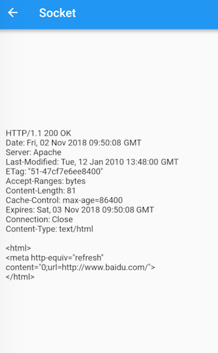
可以看到响应内容分两个部分，第一部分是响应头，第二部分是响应体，服务端可以根据请求信息动态来输出响应体。由于本示例请求头比较简单，所以响应体和浏览器中访问的会有差别，读者可以补充一些请求头(如user-agent)来看看输出的变化。
11.7 JSON转Dart Model类
11.7.1 JSON转Dart类
1. 简介
在实战中，后台接口往往会返回一些结构化数据，如 JSON、XML 等，如之前我们请求 Github API 的示例，它返回的数据就是 JSON 格式的字符串，为了方便我们在代码中操作 JSON，我们先将 JSON 格式的字符串转为 Dart 对象，这个可以通过 dart:convert 中内置的 JSON 解码器json.decode()来实现，该方法可以根据 JSON 字符串具体内容将其转为 List 或 Map，这样我们就可以通过他们来查找所需的值，如：
//一个JSON格式的用户列表字符串
String jsonStr='[{"name":"Jack"},{"name":"Rose"}]';`
//将JSON字符串转为Dart对象(此处是List)
List items=json.decode(jsonStr);
//输出第一个用户的姓名
print(items[0]["name"]);
通过json.decode() 将 JSON 字符串转为 List/Map 的方法比较简单，它没有外部依赖或其他的设置，对于小项目很方便。但当项目变大时，这种手动编写序列化逻辑可能变得难以管理且容易出错，例如有如下JSON：
{
"name": "John Smith",
"email": "john@example.com"
}
我们可以通过调用json.decode方法来解码 JSON ，使用 JSON 字符串作为参数:
Map<String, dynamic> user = json.decode(json);
print('Howdy, ${user['name']}!');
print('We sent the verification link to ${user['email']}.');
由于json.decode()仅返回一个Map<String, dynamic>，这意味着直到运行时我们才知道值的类型。 通过这种方法，我们失去了大部分静态类型语言特性：类型安全、自动补全和最重要的编译时异常。这样一来，我们的代码可能会变得非常容易出错。例如，当我们访问name或email字段时，我们输入的很快，导致字段名打错了。但由于这个 JSON 在 map 结构中，所以编译器不知道这个错误的字段名，所以编译时不会报错。
其实，这个问题在很多平台上都会遇到，而也早就有了好的解决方法即“Json Model化”，具体做法就是，通过预定义一些与 Json 结构对应的 Model 类，然后在请求到数据后再动态根据数据创建出 Model 类的实例。这样一来，在开发阶段我们使用的是 Model 类的实例，而不再是 Map/List，这样访问内部属性时就不会发生拼写错误。例如，我们可以通过引入一个简单的模型类（Model class）来解决前面提到的问题，我们称之为User。在User类内部，我们有：
- 一个
User.fromJson构造函数, 用于从一个 map 构造出一个User实例 map 结构。 - 一个
toJson方法, 将User实例转化为一个 map。
这样，调用代码现在可以具有类型安全、自动补全字段（name和email）以及编译时异常。如果我们将拼写错误字段视为int类型而不是String， 那么我们的代码就不会通过编译，而不是在运行时崩溃。
user.dart
class User {
final String name;
final String email;
User(this.name, this.email);
User.fromJson(Map<String, dynamic> json)
: name = json['name'],
email = json['email'];
Map<String, dynamic> toJson() =>
<String, dynamic>{
'name': name,
'email': email,
};
}
现在，序列化逻辑移到了模型本身内部。采用这种新方法，我们可以非常容易地反序列化user.
Map userMap = json.decode(json);
var user = User.fromJson(userMap);
print('Howdy, ${user.name}!');
print('We sent the verification link to ${user.email}.');
要序列化一个user，我们只是将该User对象传递给该json.encode方法。我们不需要手动调用toJson这个方法，因为`JSON.encode内部会自动调用。
String json = json.encode(user);
这样，调用代码就不用担心JSON序列化了，但是，Model类还是必须的。在实践中，User.fromJson和User.toJson方法都需要单元测试到位，以验证正确的行为。
另外，实际场景中，JSON对象很少会这么简单，嵌套的JSON对象并不罕见，如果有什么能为我们自动处理JSON序列化，那将会非常好。幸运的是，有！
2. 自动生成Model
尽管还有其他库可用，但在本书中，我们介绍一下官方推荐的json_serializable package包。 它是一个自动化的源代码生成器，可以在开发阶段为我们生成 JSON 序列化模板，这样一来，由于序列化代码不再由我们手写和维护，我们将运行时产生 JSON 序列化异常的风险降至最低。
1）在项目中设置 json_serializable
要包含json_serializable到我们的项目中，我们需要一个常规和两个开发依赖项。简而言之，开发依赖项是不包含在我们的应用程序源代码中的依赖项，它是开发过程中的一些辅助工具、脚本，和 node 中的开发依赖项相似。
pubspec.yaml
dependencies:
json_annotation: <最新版本>
dev_dependencies:
build_runner: <最新版本>
json_serializable: <最新版本>
在您的项目根文件夹中运行 flutter packages get (或者在编辑器中点击 “Packages Get”) 以在项目中使用这些新的依赖项.
2）以json_serializable的方式创建model类
让我们看看如何将我们的User类转换为一个json_serializable。为了简单起见，我们使用前面示例中的简化JSON model。
user.dart
import 'package:json_annotation/json_annotation.dart';
// user.g.dart 将在我们运行生成命令后自动生成
part 'user.g.dart';
///这个标注是告诉生成器，这个类是需要生成Model类的
@JsonSerializable()
class User{
User(this.name, this.email);
String name;
String email;
//不同的类使用不同的mixin即可
factory User.fromJson(Map<String, dynamic> json) => _$UserFromJson(json);
Map<String, dynamic> toJson() => _$UserToJson(this);
}
有了上面的设置，源码生成器将生成用于序列化name和email字段的JSON代码。
如果需要，自定义命名策略也很容易。例如，如果我们正在使用的API返回带有_snake_case_的对象，但我们想在我们的模型中使用_lowerCamelCase_， 那么我们可以使用@JsonKey标注：
//显式关联JSON字段名与Model属性的对应关系
@JsonKey(name: 'registration_date_millis')
final int registrationDateMillis;
3）运行代码生成程序
json_serializable第一次创建类时，您会看到与图11-4类似的错误。

这些错误是完全正常的，这是因为Model类的生成代码还不存在。为了解决这个问题，我们必须运行代码生成器来为我们生成序列化模板。有两种运行代码生成器的方法：
- 一次性生成
通过在我们的项目根目录下运行:
flutter packages pub run build_runner build
这触发了一次性构建，我们可以在需要时为我们的 Model 生成 json 序列化代码，它通过我们的源文件，找出需要生成 Model 类的源文件（包含@JsonSerializable 标注的）来生成对应的 .g.dart 文件。一个好的建议是将所有 Model 类放在一个单独的目录下，然后在该目录下执行命令。
虽然这非常方便，但如果我们不需要每次在Model类中进行更改时都要手动运行构建命令的话会更好。
- 持续生成
使用_watcher_可以使我们的源代码生成的过程更加方便。它会监视我们项目中文件的变化，并在需要时自动构建必要的文件，我们可以通过flutter packages pub run build_runner watch在项目根目录下运行来启动_watcher_。只需启动一次观察器，然后它就会在后台运行，这是安全的。
11.7.2 一句命令实现JSON转dart类
1. 实现
上面的方法有一个最大的问题就是要为每一个json写模板，这是比较枯燥的。如果有一个工具可以直接根据JSON文本生成模板，那我们就能彻底解放双手了。笔者自己用dart实现了一个脚本，它可以自动生成模板，并直接将JSON转为Model类，下面我们看看怎么做：
-
定义一个"模板的模板"，名为"template.dart"：
import 'package:json_annotation/json_annotation.dart'; %t part '%s.g.dart'; @JsonSerializable() class %s { %s(); %s factory %s.fromJson(Map<String,dynamic> json) => _$%sFromJson(json); Map<String, dynamic> toJson() => _$%sToJson(this); }模板中的“%t”、“%s”为占位符，将在脚本运行时动态被替换为合适的导入头和类名。
-
写一个自动生成模板的脚本(mo.dart)，它可以根据指定的JSON目录，遍历生成模板，在生成时我们定义一些规则：
- 如果JSON文件名以下划线“_”开始，则忽略此JSON文件。
- 复杂的JSON对象往往会出现嵌套，我们可以通过一个特殊标志来手动指定嵌套的对象（后面举例）。
脚本我们通过Dart来写，源码如下：
import 'dart:convert'; import 'dart:io'; import 'package:path/path.dart' as path; const TAG = "\$"; const SRC = "./json"; //JSON 目录 const DIST = "lib/models/"; //输出model目录 void walk() { //遍历JSON目录生成模板 var src = Directory(SRC); var list = src.listSync(); var template = File("./template.dart").readAsStringSync(); File file; list.forEach((f) { if (FileSystemEntity.isFileSync(f.path)) { file = File(f.path); var paths = path.basename(f.path).split("."); String name = paths.first; if (paths.last.toLowerCase() != "json" || name.startsWith("_")) return; if (name.startsWith("_")) return; //下面生成模板 var map = json.decode(file.readAsStringSync()); //为了避免重复导入相同的包，我们用Set来保存生成的import语句。 var set = Set<String>(); StringBuffer attrs = StringBuffer(); (map as Map<String, dynamic>).forEach((key, v) { if (key.startsWith("_")) return; //所有字段都定义为可空 attrs.write(getType(v, set, name)+"?"); attrs.write(" "); attrs.write(key); attrs.writeln(";"); attrs.write(" "); }); String className = name[0].toUpperCase() + name.substring(1); var dist = format(template, [ name, className, className, attrs.toString(), className, className, className ]); var _import = set.join(";\r\n"); _import += _import.isEmpty ? "" : ";"; dist = dist.replaceFirst("%t", _import); //将生成的模板输出 File("$DIST$name.dart").writeAsStringSync(dist); } }); } String changeFirstChar(String str, [bool upper = true]) { return (upper ? str[0].toUpperCase() : str[0].toLowerCase()) + str.substring(1); } //将JSON类型转为对应的dart类型 String getType(v, Set<String> set, String current) { current = current.toLowerCase(); if (v is bool) { return "bool"; } else if (v is num) { return "num"; } else if (v is Map) { return "Map<String,dynamic>"; } else if (v is List) { return "List"; } else if (v is String) { //处理特殊标志 if (v.startsWith("$TAG[]")) { var className = changeFirstChar(v.substring(3), false); if (className.toLowerCase() != current) { set.add('import "$className.dart"'); } return "List<${changeFirstChar(className)}>"; } else if (v.startsWith(TAG)) { var fileName = changeFirstChar(v.substring(1), false); if (fileName.toLowerCase() != current) { set.add('import "$fileName.dart"'); } return changeFirstChar(fileName); } return "String"; } else { return "String"; } } //替换模板占位符 String format(String fmt, List<Object> params) { int matchIndex = 0; String replace(Match m) { if (matchIndex < params.length) { switch (m[0]) { case "%s": return params[matchIndex++].toString(); } } else { throw Exception("Missing parameter for string format"); } throw Exception("Invalid format string: " + m[0].toString()); } return fmt.replaceAllMapped("%s", replace); } void main() { walk(); } -
写一个shell(mo.sh)，将生成模板和生成model串起来：
dart mo.dart flutter packages pub run build_runner build --delete-conflicting-outputs
至此，我们的脚本写好了，我们在根目录下新建一个json目录，然后把user.json移进去，然后在lib目录下创建一个models目录，用于保存最终生成的Model类。现在我们只需要一句命令即可生成Model类了:
./mo.sh
运行后，一切都将自动执行，现在好多了。但是上面脚本只是处理简单 JSON 的情况，还不能很好处理 JSON 嵌套和数组。
2. 嵌套JSON处理
我们创建一个person.json文件，内容如下：
{
"name": "John Smith",
"email": "john@example.com",
"mother":{
"name": "Alice",
"email":"alice@example.com"
},
"friends":[
{
"name": "Jack",
"email":"Jack@example.com"
},
{
"name": "Nancy",
"email":"Nancy@example.com"
}
]
}
每个Person都有name 、email 、 mother和friends四个字段，由于mother也是一个Person，朋友是多个Person(数组)，所以我们期望生成的Model是下面这样：
import 'package:json_annotation/json_annotation.dart';
part 'person.g.dart';
@JsonSerializable()
class Person {
Person();
String? name;
String? email;
Person? mother;
List<Person>? friends;
factory Person.fromJson(Map<String,dynamic> json) => _$PersonFromJson(json);
Map<String, dynamic> toJson() => _$PersonToJson(this);
}
这时，我们只需要简单修改一下JSON，添加一些特殊标志，重新运行mo.sh即可：
{
"name": "John Smith",
"email": "john@example.com",
"mother":"$person",
"friends":"$[]person"
}
我们使用美元符“$”作为特殊标志符(如果与内容冲突，可以修改mo.dart中的TAG常量，自定义标志符)，脚本在遇到特殊标志符后会先把相应字段转为相应的对象或对象数组，对象数组需要在标志符后面添加数组符“[]”，符号后面接具体的类型名，此例中是person。其他类型同理，加入我们给User添加一个Person类型的 boss字段：
{
"name": "John Smith",
"email": "john@example.com",
"boss":"$person"
}
重新运行mo.sh，生成的user.dart如下：
import 'package:json_annotation/json_annotation.dart';
import "person.dart";
part 'user.g.dart';
@JsonSerializable()
class User {
User();
String? name;
String? email;
Person? boss;
factory User.fromJson(Map<String,dynamic> json) => _$UserFromJson(json);
Map<String, dynamic> toJson() => _$UserToJson(this);
}
可以看到，boss字段已自动添加，并自动导入了“person.dart”。
3. Json_model 包
我们上面实现的脚本只是一个乞丐版，还有很多功能不支持，比如默认生成的变量都是可空类型、不支持导入其他的dart文件、不支持生成注释等等，为此，笔者专门发布了一个功能完成的 Json_model包，具备灵活的配置和自定义功能，开发者把该包加入开发依赖后，便可以用一条命令，根据Json文件生成Dart类，下面是一个简单的功能演示：
JSON 文件如下：
{
"@meta": { // @meta 可以定制单个 json 的生成规则，默认使用全局配置
"import": [
"test_dir/profile.dart" // 导入其他文件
],
"comments": {
"name": "名字" // 给 "name" 字段添加注释
},
"nullable": false, // 字段默认非可空，会生成 late
"ignore": false // 是否跳过当前 JSON 的 model 类生成
},
"@JsonKey(ignore: true) Profile?": "profile",
"@JsonKey(name: '+1') int?": "loved",
"name": "wendux",
"father": "$user",
"friends": "$[]user",
"keywords": "$[]String",
"age?": 20 // 指定 age 字段可空
}
生成的 Model 类如下：
import 'package:json_annotation/json_annotation.dart';
import 'test_dir/profile.dart';
part 'user.g.dart';
@JsonSerializable()
class User {
User();
@JsonKey(ignore: true) Profile? profile;
@JsonKey(name: '+1') int? loved;
//名字
late String name;
late User father;
late List<User> friends;
late List<String> keywords;
num? age;
factory User.fromJson(Map<String,dynamic> json) => _$UserFromJson(json);
Map<String, dynamic> toJson() => _$UserToJson(this);
}
11.7.3 使用IDE插件生成model
目前Android Studio(或IntelliJ)有几个插件，可以将json文件转成Model类，但插件质量参差不齐，甚至还有一些沾染上了抄袭风波，故笔者在此不做优先推荐，读者有兴趣可以自行了解。但是，我们还是要了解一下IDE插件和Json_model的优劣：
- Json_model需要单独维护一个存放Json文件的文件夹，如果有改动，只需修改Json文件便可重新生成Model类；而IDE插件一般需要用户手动将Json内容拷贝复制到一个输入框中，这样生成之后Json文件没有存档的化，之后要改动就需要手动。
- Json_model可以手动指定某个字段引用的其他Model类，可以避免生成重复的类；而IDE插件一般会为每一个Json文件中所有嵌套对象都单独生成一个Model类，即使这些嵌套对象可能在其他Model类中已经生成过。
- Json_model 提供了命令行转化方式，可以方便集成到CI等非UI环境的场景。
11.7.4 FAQ
很多人可能会问 Flutter 中有没有像 Java 开发中的 Gson/Jackson 一样的Json序列化类库？答案是没有！因为这样的库需要使用运行时反射，这在 Flutter 中是禁用的。运行时反射会干扰 Dart 的 tree shaking，使用_tree shaking_，可以在 release 版中“去除”未使用的代码，这可以显著优化应用程序的大小。由于反射会默认应用到所有代码，因此_tree shaking_ 会很难工作，因为在启用反射时很难知道哪些代码未被使用，因此冗余代码很难剥离，所以 Flutter 中禁用了 Dart 的反射功能，而正因如此也就无法实现动态转化 Model 的功能。
Flutter 扩展
12.1 包和插件
本节将会介绍 Flutter 中包和插件，然后介绍一些常用的包，但本节不会介绍具体的
12.1.1 包
第二章中已经讲过如何使用包（Package），我们知道通过包可以复用模块化代码，一个最小的Package包括：
- 一个
pubspec.yaml文件：声明了Package的名称、版本、作者等的元数据文件。 - 一个
lib文件夹：包括包中公开的(public)代码，最少应有一个<package-name>.dart文件
Flutter 包分为两类：
- Dart包：其中一些可能包含Flutter的特定功能，因此对Flutter框架具有依赖性，这种包仅用于Flutter，例如
fluro包。 - 插件包：一种专用的Dart包，其中包含用Dart代码编写的API，以及针对Android（使用Java或Kotlin）和针对iOS（使用OC或Swift）平台的特定实现，也就是说插件包括原生代码，一个具体的例子是
battery插件包。
12.1.2 插件
Flutter 本质上只是一个 UI 框架，运行在宿主平台之上，Flutter 本身是无法提供一些系统能力，比如使用蓝牙、相机、GPS等，因此要在 Flutter 中调用这些能力就必须和原生平台进行通信。目前Flutter 已经支持 iOS、Android、Web、macOS、Windows、Linux等众多平台，要调用特定平台 API 就需要写插件。插件是一种特殊的包，和纯 dart 包主要区别是插件中除了dart代码，还包括特定平台的代码，比如 image_picker 插件可以在 iOS 和 Android 设备上访问相册和摄像头。
1. 插件实现原理
我们知道一个完整的Flutter应用程序实际上包括原生代码和Flutter代码两部分。Flutter 中提供了平台通道（platform channel）用于Flutter和原生平台的通信，平台通道正是Flutter和原生之间通信的桥梁，它也是Flutter插件的底层基础设施。
Flutter与原生之间的通信本质上是一个远程调用（RPC），通过消息传递实现：
- 应用的Flutter部分通过平台通道（platform channel）将调用消息发送到宿主应用。
- 宿主监听平台通道，并接收该消息。然后它会调用该平台的API，并将响应发送回Flutter。
由于插件编写涉及具体平台的开发知识，比如 image_picker 插件需要开发者在 iOS 和 Android 平台上分别实现图片选取和拍摄的功能，因此需要开发者熟悉原生开发，而本书主要聚焦 Flutter ，因此不做过多介绍，不过插件的开发也并不复杂，感兴趣的读者可以查看官方的插件开发示例。
2. 如何获取平台信息
有时，在 Flutter 中我们想根据宿主平台添加一些差异化的功能，因此 Flutter 中提供了一个全局变量 defaultTargetPlatform 来获取当前应用的平台信息，defaultTargetPlatform定义在"platform.dart"中，它的类型是TargetPlatform，这是一个枚举类，定义如下：
enum TargetPlatform {
android,
fuchsia,
iOS,
...
}
可以看到目前Flutter只支持这三个平台。我们可以通过如下代码判断平台：
if(defaultTargetPlatform == TargetPlatform.android){
// 是安卓系统，do something
...
}
...
由于不同平台有它们各自的交互规范，Flutter Material库中的一些组件都针对相应的平台做了一些适配，比如路由组件MaterialPageRoute，它在android和ios中会应用各自平台规范的切换动画。那如果我们想让我们的APP在所有平台都表现一致，比如希望在所有平台路由切换动画都按照ios平台一致的左右滑动切换风格该怎么做？Flutter中提供了一种覆盖默认平台的机制，我们可以通过显式指定debugDefaultTargetPlatformOverride全局变量的值来指定应用平台。比如：
debugDefaultTargetPlatformOverride=TargetPlatform.iOS;
print(defaultTargetPlatform); // 会输出TargetPlatform.iOS
上面代码即使在Android中运行后，Flutter APP也会认为是当前系统是iOS，Material组件库中所有组件交互方式都会和iOS平台对齐，defaultTargetPlatform的值也会变为TargetPlatform.iOS。
3. 常用的插件
Flutter 官方提供了一系列常用的插件，如访问相机/相册、本地存储、播放视频等，完整列表见：https://github.com/flutter/plugins/tree/master/packages 读者可以自行查看。除了官方维护的插件，Flutter 社区也有不少现成插件，具体读者可以在 https://pub.dev/ 上查找。
12.2 Flutter Web
12.2.1 简介
Flutter 目前已经支持macOS、Windows、Linux、Android、iOS、Web等多个平台这些平台中除了Web平台会比较特殊一些，因为除了它其余的“平台”都是操作系统，而 Web 并不是操作系统，Web应用程序是运行在浏览器中的，而浏览器是运行在操作系统之上，因此 “平台”一词，指的是某种“运行环境”，并不等同于“操作系统”，浏览器和操作系统都是应用程序运行的环境而已。
传统的 Web 应用都是基于 Javascript+html+css 开发的，运行在浏览器之上，因此天然具备跨平台优势，而 Flutter 的目标是高性能的跨端 UI 框架，所以支持 Web 平台将有助于 Flutter 技术扩大应用场景，实现 write once, run anywhere（一次编码，到处运行）。为此，Flutter 团队从 1.0 开始一直在尝试让 Flutter 支持 Web 平台，第一个支持 Web 平台的稳定版是 2.0 ，在 2.0 之后 Flutter 对 Web 平台的支持也一直在优化，现在也有一些公司将Flutter应用应用到生产环境。
12.2.2 Web 应用的特殊性
因为 Web 应用是在浏览器中运行的，而浏览器是运行在操作系统之上，因此Web应用不能直接调用操作系统 API， Web 应用能调用哪些操作系统能力取决于它的宿主-浏览器是否暴露相关的操作系统 API。而浏览器出于安全考虑，会提供一个沙箱环境——开放一些安全、可控的系统能力，同时限制一部分敏感的操作，具体表现在：
- 浏览器允许Web应用访问网络，但有严格的“同源策略”限制。
- 浏览器允许 JavaScript 读取用户手动选择本地文件（文件上传场景），但不允许 JavaScript 主动访问本地文件系统，同时在任何情况下，浏览器都不允许 JavaScript 直接往本地文件系统写文件，因此
dart:io包在 Web 应用是不能用的。 - 浏览器对Web应用访问系统硬件权限有自身策略，比如访问 wifi、gps、摄像头等。
因此，如果用 Flutter 开发 Web 应用，以上这些限制将会生效，所以会出现和其他平台不一致的情况，常见的两个场景是：不能在 Web 应用中发起非同源请求、不能在Web应用中直接读取文件。
“同源策略” 是浏览器处于安全考虑对 Web 应用访问网络的一套限制策略， “同源”表示一个网页中 JavaScript 发起网络请求的地址和当前网页地址中协议、域名、端口全部相同，如果有其中之一不同，则为“非同源”，如果不进行特殊处理，浏览器会禁止非同源请求。关于“同源策略”的详细内容以及如何访问非同源请求读者可以自己上网搜索，这在 Web 开发中是一个非常基础的知识点，网上资料很多，不再赘述。
12.2.3 Web 渲染器
Flutter 中提供了两种不同的渲染器来运行和构建 Web 应用，分别是 html 渲染器和 CanvasKit 渲染器。
1. Html渲染器
由于浏览器有一套自身的布局标准（ html+css ），Flutter在生成Web应用时可以编译为符合浏览器标准的文件，包括使用 HTML，CSS，Canvas 和 SVG 元素来渲染。
使用Html渲染器的优点是应用体积相对较小，缺点是使用Html渲染器时大多数 UI 并不是 Flutter 引擎绘制的，所以可能会存在跨浏览器跨时UI出现不一致的情况。
2. CanvasKit 渲染器
我们知道 Flutter 的优势是提供一套自绘的UI框架，可以保证多端UI的一致性。Flutter 在支持其他平台时，都是将引擎的C++代码编译为相应平台的代码来实现移植的（运行在操作系统之上）。但是在 Web 平台，Web 应用是运行在浏览器之上，而现代浏览器都实现了对 WebAssembly 的支持，简单来讲，在之前W3C规范中只要求浏览器能够支持 JavaScript 语言，这样的话很多其他语言的代码想在浏览器中运行就必须改写为 JavaScript，而 WebAssembly 是一种标准的、可移植的二进制文件格式规范，文件扩展名为 .wasm，现在浏览器都支持 WebAssembly ，这也就意味着其他语言按照 WebAssembly 规范编译的应用可以在浏览器中运行！因此，Flutter 将引擎编译成 WebAssembly 格式，并使用 WebGL 渲染，这种渲染方式的渲染器官方称为 CanvasKit 渲染器。
CanvasKit 渲染器的优点是可以保证跨端UI绘制的一致性，有更好的性能，以及降低不同浏览器渲染效果不一致的风险。但缺点是应用的大小会增加大约 2MB。
12.2.4 在浏览器中运行
命令行参数
--web-renderer 可选参数值为 auto、html 或 canvaskit。
auto（默认）- 自动选择渲染器。移动端浏览器选择 HTML，桌面端浏览器选择 CanvasKit。html- 强制使用 HTML 渲染器。canvaskit- 强制使用 CanvasKit 渲染器。
此选项适用于 run 和 build 命令。例如：
flutter run -d chrome --web-renderer html
flutter build web --web-renderer canvaskit
如果运行/构建目标是非浏览器设备（即移动设备或桌面设备），这个选项会被忽略。
12.2.5 Flutter Web 使用场景
Web 开发已有完整且强大的开发及生态体系，Flutter Web并不适用Web开发的所有场景，目前Flutter Web 主要关注以下三个应用场景：
- 渐进式 Web 应用 (Progressive web apps, PWA)。
- 单页应用 (Single page apps, SPA)，• 一般一个应用只有一个html文件，只需一次加载，后续与服务端动态互传数据。
- 将现有 Flutter 移动应用拓展到 Web，在两个平台共享代码。
注意：PWA 和 SPA 应用在 Web开发中是两种基本的应用类型，Web开发者会比较熟悉，如果读者不了解可以自行百度，不再赘述。
现在阶段，Flutter 对于富文本和瀑布流类型的 Web 页面并不是很适合，例如博客，它是典型的“以文档为中心”的模式，而不是像 Flutter 这样的 UI 框架可以提供的“以应用为中心”的服务。以文档为中心的应用通常各个页面之间相互独立，很少有关联，也就不需要跨页面的状态共享，而以应用为中心的服务，通常各个页面之间是有状态关联，不同页面组成一个完整的功能。
最后，有关如何在 Web 上使用 Flutter 的更多信息请参考 Flutter官方文档。
本章目录
13.1 让App支持多语言
13.1.1 简介
如果我们的应用要支持多种语言，那么我们需要“国际化”它。这意味着我们在开发时需要为应用程序支持的每种语言环境设置“本地化”的一些值，如文本和布局。Flutter SDK已经提供了一些组件和类来帮助我们实现国际化，下面我们来介绍一下Flutter中实现国际化的步骤。
接下来我们以MaterialApp类为入口的应用来说明如何支持国际化。
大多数应用程序都是通过
MaterialApp为入口，但根据低级别的WidgetsApp类为入口编写的应用程序也可以使用相同的类和逻辑进行国际化。MaterialApp实际上也是WidgetsApp的一个包装。
注意，“本地化的值和资源”是指我们针对不同语言准备的不同资源，这些资源一般是指文案（字符串），当然也会有一些其他的资源会根据不同语言地区而不同，比如我们需要显示一个APP上架地的国旗图片，那么不同Locale区域我们就需要提供不同的国旗图片。
13.1.2 支持国际化
默认情况下，Flutter SDK中的组件仅提供美国英语本地化资源（主要是文本）。要添加对其他语言的支持，应用程序须添加一个名为“flutter_localizations”的包依赖，然后还需要在MaterialApp中进行一些配置。 要使用flutter_localizations包，首先需要添加依赖到pubspec.yaml文件中：
dependencies:
flutter:
sdk: flutter
flutter_localizations:
sdk: flutter
接下来，下载flutter_localizations库，然后指定MaterialApp的localizationsDelegates和supportedLocales：
import 'package:flutter_localizations/flutter_localizations.dart';
MaterialApp(
localizationsDelegates: [
// 本地化的代理类
GlobalMaterialLocalizations.delegate,
GlobalWidgetsLocalizations.delegate,
],
supportedLocales: [
const Locale('en', 'US'), // 美国英语
const Locale('zh', 'CN'), // 中文简体
//其他Locales
],
// ...
)
与
MaterialApp类为入口的应用不同, 对基于WidgetsApp类为入口的应用程序进行国际化时,不需要GlobalMaterialLocalizations.delegate。
localizationsDelegates列表中的元素是生成本地化值集合的工厂类。GlobalMaterialLocalizations.delegate 为Material 组件库提供的本地化的字符串和其他值，它可以使Material 组件支持多语言。 GlobalWidgetsLocalizations.delegate定义组件默认的文本方向，从左到右或从右到左，这是因为有些语言的阅读习惯并不是从左到右，比如如阿拉伯语就是从右向左的。
supportedLocales也接收一个Locale数组，表示我们的应用支持的语言列表，在本例中我们的应用只支持美国英语和中文简体两种语言。
13.1.3 获取当前区域Locale
Locale类是用来标识用户的语言环境的，它包括语言和国家两个标志如：
const Locale('zh', 'CN') // 中文简体
我们始终可以通过以下方式来获取应用的当前区域Locale：
Locale myLocale = Localizations.localeOf(context);
Localizations 组件一般位于widget树中其他业务组件的顶部，它的作用是定义区域Locale以及设置子树依赖的本地化资源。 如果系统的语言环境发生变化，则会使用对应语言的本地化资源。
13.1.4 监听系统语言切换
当我们更改系统语言设置时，APP中的Localizations组件会重新构建，Localizations.localeOf(context) 获取的Locale就会更新，最终界面会重新build达到切换语言的效果。但是这个过程是隐式完成的，我们并没有主动去监听系统语言切换，但是有时我们需要在系统语言发生改变时做一些事，比如系统语言切换为一种我们APP不支持的语言时，我们需要设置一个默认的语言，这时我们就需要监听locale改变事件。
我们可以通过localeResolutionCallback或localeListResolutionCallback回调来监听locale改变的事件，我们先看看localeResolutionCallback的回调函数签名：
Locale Function(Locale locale, Iterable<Locale> supportedLocales)
-
参数
locale的值为当前的当前的系统语言设置，当应用启动时或用户动态改变系统语言设置时此locale即为系统的当前locale。当开发者手动指定APP的locale时，那么此locale参数代表开发者指定的locale，此时将忽略系统locale如：MaterialApp( ... locale: const Locale('en', 'US'), //手动指定locale ... )上面的例子中手动指定了应用locale为美国英语，指定后即使设备当前语言是中文简体，应用中的locale也依然是美国英语。如果
locale为null，则表示Flutter未能获取到设备的Locale信息，所以我们在使用locale之前一定要先判空。 -
supportedLocales为当前应用支持的locale列表，是开发者在MaterialApp中通过supportedLocales属性注册的。 -
返回值是一个
Locale，此Locale为Flutter APP最终使用的Locale。通常在不支持的语言区域时返回一个默认的Locale。
localeListResolutionCallback和localeResolutionCallback唯一的不同就在第一个参数类型，前者接收的是一个Locale列表，而后者接收的是单个Locale。
Locale Function(List<Locale> locales, Iterable<Locale> supportedLocales)
在较新的Android系统中，用户可以设置一个语言列表，这样一来，支持多语言的应用就会得到这个列表，应用通常的处理方式就是按照列表的顺序依次尝试加载相应的Locale，如果某一种语言加载成功则会停止。图13-1是Android系统中设置语言列表的截图：

在Flutter中，应该优先使用localeListResolutionCallback，当然你不必担心Android系统的差异性，如果在低版本的Android系统中，Flutter会自动处理这种情况，这时Locale列表只会包含一项。
13.1.5 Localization 组件
Localizations组件用于加载和查找应用当前语言下的本地化值或资源。应用程序通过Localizations.of(context,type)来引用这些对象。 如果设备的Locale区域设置发生更改，则Localizations 组件会自动加载新区域的Locale值，然后重新build使用（依赖）了它们的组件，之所以会这样，是因为Localizations内部使用了InheritedWidget ，我们在介绍该组件时讲过：当子组件的build函数引用了InheritedWidget时，会创建对InheritedWidget的隐式依赖关系。因此，当InheritedWidget发生更改时，即Localizations的Locale设置发生更改时，将重建所有依赖它的子组件。
本地化值由Localizations的 LocalizationsDelegates 列表加载 。 每个委托必须定义一个异步load() 方法，以生成封装了一系列本地化值的对象。通常这些对象为每个本地化值定义一个方法。
在大型应用程序中，不同模块或Package可能会与自己的本地化值捆绑在一起。 这就是为什么要用Localizations 管理对象表的原因。 要使用由LocalizationsDelegate 的load方法之一产生的对象，可以指定一个BuildContext和对象的类型来找到它。例如，Material 组件库的本地化字符串由MaterialLocalizations类定义，此类的实例由MaterialApp类提供的LocalizationDelegate创建， 它们可以如下方式获取到：
Localizations.of<MaterialLocalizations>(context, MaterialLocalizations);
这个特殊的Localizations.of()表达式会经常使用，所以MaterialLocalizations类提供了一个便捷方法：
static MaterialLocalizations of(BuildContext context) {
return Localizations.of<MaterialLocalizations>(context, MaterialLocalizations);
}
// 可以直接调用便捷方法
tooltip: MaterialLocalizations.of(context).backButtonTooltip,
13.1.6 使用打包好的LocalizationsDelegates
为了尽可能小而且简单，flutter软件包中仅提供美国英语值的MaterialLocalizations和WidgetsLocalizations接口的实现。 这些实现类分别称为DefaultMaterialLocalizations和DefaultWidgetsLocalizations。flutter_localizations 包包含GlobalMaterialLocalizations和GlobalWidgetsLocalizations的本地化接口的多语言实现， 国际化的应用程序必须按照本节开头说明的那样为这些类指定本地化的代理类。
上述的GlobalMaterialLocalizations和GlobalWidgetsLocalizations只是Material组件库的本地化实现，如果我们要让自己的布局支持多语言，那么就需要实现在即的Localizations，我们将在下一节介绍其具体的实现方式。
13.2 实现Localizations
前面讲了Material组件库如何支持国际化，本节我们将介绍一下我们自己的UI中如何支持多语言。根据上节所述，我们需要实现两个类：一个Delegate类一个Localizations类，下面我们通过一个实例说明。
13.2.1 实现Localizations类
我们已经知道Localizations类中主要实现提供了本地化值，如文本：
//Locale资源类
class DemoLocalizations {
DemoLocalizations(this.isZh);
//是否为中文
bool isZh = false;
//为了使用方便，我们定义一个静态方法
static DemoLocalizations of(BuildContext context) {
return Localizations.of<DemoLocalizations>(context, DemoLocalizations);
}
//Locale相关值，title为应用标题
String get title {
return isZh ? "Flutter应用" : "Flutter APP";
}
//... 其他的值
}
DemoLocalizations中会根据当前的语言来返回不同的文本，如title，我们可以将所有需要支持多语言的文本都在此类中定义。DemoLocalizations的实例将会在Delegate类的load方法中创建。
13.2.2 实现Delegate类
Delegate类的职责是在Locale改变时加载新的Locale资源，所以它有一个load方法，Delegate类需要继承自LocalizationsDelegate类，实现相应的接口，示例如下：
//Locale代理类
class DemoLocalizationsDelegate extends LocalizationsDelegate<DemoLocalizations> {
const DemoLocalizationsDelegate();
//是否支持某个Local
@override
bool isSupported(Locale locale) => ['en', 'zh'].contains(locale.languageCode);
// Flutter会调用此类加载相应的Locale资源类
@override
Future<DemoLocalizations> load(Locale locale) {
print("$locale");
return SynchronousFuture<DemoLocalizations>(
DemoLocalizations(locale.languageCode == "zh")
);
}
@override
bool shouldReload(DemoLocalizationsDelegate old) => false;
}
shouldReload的返回值决定当Localizations组件重新build时，是否调用load方法重新加载Locale资源。一般情况下，Locale资源只应该在Locale切换时加载一次，不需要每次在Localizations重新build时都加载，所以返回false即可。可能有些人会担心返回false的话在APP启动后用户再改变系统语言时load方法将不会被调用，所以Locale资源将不会被加载。事实上，每当Locale改变时Flutter都会再调用load方法加载新的Locale，无论shouldReload返回true还是false。
13.2.3 添加多语言支持
和上一节中介绍的相同，我们现在需要先注册DemoLocalizationsDelegate类，然后再通过DemoLocalizations.of(context)来动态获取当前Locale文本。
只需要在MaterialApp或WidgetsApp的localizationsDelegates列表中添加我们的Delegate实例即可完成注册：
localizationsDelegates: [
// 本地化的代理类
GlobalMaterialLocalizations.delegate,
GlobalWidgetsLocalizations.delegate,
// 注册我们的Delegate
DemoLocalizationsDelegate()
],
接下来我们可以在Widget中使用Locale值：
return Scaffold(
appBar: AppBar(
//使用Locale title
title: Text(DemoLocalizations.of(context).title),
),
... //省略无关代码
）
这样，当在美国英语和中文简体之间切换系统语言时，APP的标题将会分别为“Flutter APP”和“Flutter应用”。
13.2.4 总结
本节我们通过一个简单的示例说明了Flutter应用国际化的基本过程及原理。但是上面的实例还有一个严重的不足就是我们需要在DemoLocalizations类中获取title时手动的判断当前语言Locale，然后返回合适的文本。试想一下，当我们要支持的语言不是两种而是8种甚至20几种时，如果为每个文本属性都要分别去判断到底是哪种Locale从而获取相应语言的文本将会是一件非常复杂的事。还有，通常情况下翻译人员并不是开发人员，能不能像i18n或l10n标准那样可以将翻译单独保存为一个arb文件交由翻译人员去翻译，翻译好之后开发人员再通过工具将arb文件转为代码。答案是肯定的！我们将在下一节介绍如何通过Dart intl包来实现这些。
13.3 使用Intl包
13.3.1 添加依赖
使用Intl包我们不仅可以非常轻松的实现国际化，而且也可以将字符串文本分离成单独的文件，方便开发人员和翻译人员分工协作。为了使用Intl包我们需要添加两个依赖：
dependencies:
#...省略无关项
intl: ^0.17.0
dev_dependencies:
#...省略无关项
intl_generator: 0.2.1
intl_generator 包主要包含了一些工具，它在开发阶段主要主要的作用是从代码中提取要国际化的字符串到单独的arb文件和根据arb文件生成对应语言的dart代码，而intl包主要是引用和加载intl_generator生成后的dart代码。下面我们将一步步来说明如何使用：
13.3.2 第一步：创建必要目录
首先，在项目根目录下创建一个l10n-arb目录，该目录保存我们接下来通过intl_generator命令生成的arb文件。一个简单的arb文件内容如下：
{
"@@last_modified": "2018-12-10T15:46:20.897228",
"@@locale":"zh_CH",
"title": "Flutter应用",
"@title": {
"description": "Title for the Demo application",
"type": "text",
"placeholders": {}
}
}
我们根据"@@locale"字段可以看出这个arb对应的是中文简体的翻译，里面的title字段对应的正是我们应用标题的中文简体翻译。@title字段是对title的一些描述信息。
接下来，我们在lib目录下创建一个l10n的目录，该目录用于保存从arb文件生成的dart代码文件。
13.3.3 第二步：实现Localizations和Delegate类
和上一节中的步骤类似，我们仍然要实现Localizations和Delegate类，不同的是，现在我们在实现时要使用intl包的一些方法（有些是动态生成的）。
下面我们在lib/l10n目录下新建一个“localization_intl.dart”的文件，文件内容如下：
import 'package:flutter/material.dart';
import 'package:intl/intl.dart';
import 'messages_all.dart'; //1
class DemoLocalizations {
static Future<DemoLocalizations> load(Locale locale) {
final String name = locale.countryCode.isEmpty ? locale.languageCode : locale.toString();
final String localeName = Intl.canonicalizedLocale(name);
//2
return initializeMessages(localeName).then((b) {
Intl.defaultLocale = localeName;
return DemoLocalizations();
});
}
static DemoLocalizations of(BuildContext context) {
return Localizations.of<DemoLocalizations>(context, DemoLocalizations);
}
String get title {
return Intl.message(
'Flutter APP',
name: 'title',
desc: 'Title for the Demo application',
);
}
}
//Locale代理类
class DemoLocalizationsDelegate extends LocalizationsDelegate<DemoLocalizations> {
const DemoLocalizationsDelegate();
//是否支持某个Local
@override
bool isSupported(Locale locale) => ['en', 'zh'].contains(locale.languageCode);
// Flutter会调用此类加载相应的Locale资源类
@override
Future<DemoLocalizations> load(Locale locale) {
//3
return DemoLocalizations.load(locale);
}
// 当Localizations Widget重新build时，是否调用load重新加载Locale资源.
@override
bool shouldReload(DemoLocalizationsDelegate old) => false;
}
注意：
- 注释1的"messages_all.dart"文件是通过intl_generator工具从arb文件生成的代码，所以在第一次运行生成命令之前，此文件不存在。注释2处的
initializeMessages()方法和"messages_all.dart"文件一样，是同时生成的。 - 注释3处和上一节示例代码不同，这里我们直接调用
DemoLocalizations.load()即可。
13.3.4 第三步：添加需要国际化的属性
现在我们可以在DemoLocalizations类中添加需要国际化的属性或方法，如上面示例代码中的title属性，这时我们就要用到Intl库提供的一些方法，这些方法可以帮我们轻松实现不同语言的一些语法特性，如复数语境，举个例子，比如我们有一个电子邮件列表页，我们需要在顶部显示未读邮件的数量，在未读数量不同事，我们展示的文本可能会不同：
| 未读邮件数 | 提示语 |
|---|---|
| 0 | There are no emails left |
| 1 | There is 1 email left |
| n(n>1) | There are n emails left |
我们可以通过Intl.plural(...)来实现：
remainingEmailsMessage(int howMany) => Intl.plural(howMany,
zero: 'There are no emails left',
one: 'There is $howMany email left',
other: 'There are $howMany emails left',
name: "remainingEmailsMessage",
args: [howMany],
desc: "How many emails remain after archiving.",
examples: const {'howMany': 42, 'userName': 'Fred'});
可以看到通过Intl.plural方法可以在howMany值不同时输出不同的提示信息。
Intl包还有一些其他的方法，读者可以自行查看其文档，本书不在赘述。
13.3.5 第四步：生成arb文件
现在我们可以通intl_generator包的工具来提取代码中的字符串到一个arb文件，运行如下命名：
flutter pub pub run intl_generator:extract_to_arb --output-dir=l10n-arb \ lib/l10n/localization_intl.dart
运行此命令后，会将我们之前通过Intl API标识的属性和字符串提取到“l10n-arb/intl_messages.arb”文件中，我们看看其内容：
{
"@@last_modified": "2018-12-10T17:37:28.505088",
"title": "Flutter APP",
"@title": {
"description": "Title for the Demo application",
"type": "text",
"placeholders": {}
},
"remainingEmailsMessage": "{howMany,plural, =0{There are no emails left}=1{There is {howMany} email left}other{There are {howMany} emails left}}",
"@remainingEmailsMessage": {
"description": "How many emails remain after archiving.",
"type": "text",
"placeholders": {
"howMany": {
"example": 42
}
}
}
}
这个是默认的Locale资源文件，如果我们现在要支持中文简体，只需要在该文件同级目录创建一个"intl_zh_CN.arb"文件，然后将"intl_messages.arb"的内容拷贝到"intl_zh_CN.arb"文件，接下来将英文翻译为中文即可，翻译后的"intl_zh_CN.arb"文件内容如下：
{
"@@last_modified": "2018-12-10T15:46:20.897228",
"@@locale":"zh_CN",
"title": "Flutter应用",
"@title": {
"description": "Title for the Demo application",
"type": "text",
"placeholders": {}
},
"remainingEmailsMessage": "{howMany,plural, =0{没有未读邮件}=1{有{howMany}封未读邮件}other{有{howMany}封未读邮件}}",
"@remainingEmailsMessage": {
"description": "How many emails remain after archiving.",
"type": "text",
"placeholders": {
"howMany": {
"example": 42
}
}
}
}
我们必须要翻译title和remainingEmailsMessage字段，description是该字段的说明，通常给翻译人员看，代码中不会用到。
有两点需要说明：
- 如果某个特定的arb中缺失某个属性，那么应用将会加载默认的arb文件(intl_messages.arb)中的相应属性，这是Intl的托底策略。
- 每次运行提取命令时，intl_messages.arb都会根据代码重新生成，但其他arb文件不会，所以当要添加新的字段或方法时，其他arb文件是增量的，不用担心会覆盖。
- arb文件是标准的，其格式规范可以自行了解。通常会将arb文件交给翻译人员，当他们完成翻译后，我们再通过下面的步骤根据arb文件生成最终的dart代码。
13.3.6 第五步：生成dart代码
最后一步就是根据arb生成dart文件：
flutter pub pub run intl_generator:generate_from_arb --output-dir=lib/l10n --no-use-deferred-loading lib/l10n/localization_intl.dart l10n-arb/intl_*.arb
这句命令在首次运行时会在"lib/l10n"目录下生成多个文件，对应多种Locale，这些代码便是最终要使用的dart代码。
13.3.7 总结
至此，我们将使用Intl包对APP进行国际化的流程介绍完了，我们可以发现，其中第一步和第二步只在第一次需要，而我们开发时的主要的工作都是在第三步。由于最后两步在第三步完成后每次也都需要，所以我们可以将最后两步放在一个shell脚本里，当我们完成第三步或完成arb文件翻译后只需要分别执行该脚本即可。我们在根目录下创建一个intl.sh的脚本，内容为：
flutter pub run intl_generator:extract_to_arb --output-dir=l10n-arb lib/l10n/localization_intl.dart
flutter pub run intl_generator:generate_from_arb --output-dir=lib/l10n --no-use-deferred-loading lib/l10n/localization_intl.dart l10n-arb/intl_*.arb
然后授予执行权限：
chmod +x intl.sh
执行intl.sh
./intl.sh
13.4 国际化常见问题
本节主要解答一下在国际化中常见的问题。
13.4.1 默认语言区域不对
在一些非大陆行货渠道买的一些Android和iOS设备，会出现默认的Locale不是中文简体的情况。这属于正常现象，但是为了防止设备获取的Locale与实际的地区不一致，所有的支持多语言的APP都必须提供一个手动选择语言的入口。
13.4.2 如何对应用标题进行国际化
MaterialApp有一个title属性，用于指定APP的标题。在Android系统中，APP的标题会出现在任务管理器中。所以也需要对title进行国际化。但是问题是很多国际化的配置都是在MaterialApp上设置的，我们无法在构建MaterialApp时通过Localizations.of来获取本地化资源，如：
MaterialApp(
title: DemoLocalizations.of(context).title, //不能正常工作！
localizationsDelegates: [
// 本地化的代理类
GlobalMaterialLocalizations.delegate,
GlobalWidgetsLocalizations.delegate,
DemoLocalizationsDelegate() // 设置Delegate
],
);
上面代码运行后，DemoLocalizations.of(context).title 是会报错的，原因是Localizations.of会从当前的context沿着widget树向顶部查找DemoLocalizations，但是我们在MaterialApp中设置完DemoLocalizationsDelegate后，实际上DemoLocalizations是在当前context的子树中的，所以DemoLocalizations.of(context)会返回null，报错。那么我们该如何处理这种情况呢？其实很简单，我们只需要设置一个onGenerateTitle回调即可：
MaterialApp(
onGenerateTitle: (context){
// 此时context在Localizations的子树中
return DemoLocalizations.of(context).title;
},
localizationsDelegates: [
DemoLocalizationsDelegate(),
...
],
);
13.4.3 如何为英语系的国家指定同一个locale
英语系的国家非常多，如美国、英国、澳大利亚等，这些英语系国家虽然说的都是英语，但也会有一些区别。如果我们的APP只想提供一种英语（如美国英语）供所有英语系国家使用，我们可以在前面介绍的localeListResolutionCallback中来做兼容：
localeListResolutionCallback:
(List<Locale> locales, Iterable<Locale> supportedLocales) {
// 判断当前locale是否为英语系国家，如果是直接返回Locale('en', 'US')
}
本章目录
- 14.1：Flutter UI框架（Framework）
- 14.2：Element、BuildContext和RenderObject
- 14.3：Flutter启动流程和渲染管线
- 14.4：Flutter 布局（Layout）过程
- 14.5：Flutter 绘制（一）绘制原理及Layer
- 14.6：Flutter 绘制（二）组件树绘制流程
- 14.7：Flutter 绘制（三）Layer实例
- 14.8：Flutter 绘制（四）Compositing
14.1 Flutter UI 框架（Framework）
14.1.1 什么是UI 框架
在本书的开始，我们讲过 Flutter 从上到下分为框架层、引擎层和嵌入层三层。也说过开发者基本上都是与框架层打交道，本章将深入介绍一下 Flutter 框架层的原理，在此之前，我们先看看更广义的UI框架指的是什么？解决了什么问题？
术语 UI 框架（UI Framework）特指：基于一个平台，在此平台上实现一个能快速开发GUI（图形用户接口）的框架，这里的平台主要指操作系统和浏览器。通常来讲平台只提供非常基础的图形 API，比如画线、画几何图形等，在大多数平台中，这些基础的图形 API 通常会被封装在一个 Canvas 对象中来集中管理。可以想象一下，如果没有UI 框架的封装而直接用 Canvas 来构建用户界面将会是怎样的一个体验和效率！ 所以，简单来讲， UI 框架解决的主要问题就是：如何基于基础的图形API（Canvas）来封装一套可以高效创建UI的框架。
我们说过各个平台 UI 框架的实现原理基本是相通的，也就是说无论是 Android 还是 iOS，他们将一个用户界面展示到屏幕的流程是相似的，所以，在介绍Flutter UI框架之前，我们先看看平台图形处理的基本原理，这样可以帮助读者对操作系统和系统底层UI逻辑有一个清晰的认识。
14.1.2 硬件绘图基本原理
提到原理，我们要从屏幕显示图像的基本原理谈起。我们知道显示器（屏幕）是由一个个物理显示单元组成，每一个单元我们可以称之为一个物理像素点，而每一个像素点可以发出多种颜色，显示器成相的原理就是在不同的物理像素点上显示不同的颜色，最终构成完整的图像。
一个像素点能发出的所有颜色总数是显示器的一个重要指标，比如我们所说的1600万色的屏幕就是指一个像素点可以显示出1600万种颜色，而显示器颜色是有RGB三基色组成，所以1600万即2的24次方，即每个基本色（R、G、B）深度扩展至8 bit(位)，颜色深度越深，所能显示的色彩更加丰富靓丽。
为了更新显示画面，显示器是以固定的频率刷新（从GPU取数据），比如有一部手机屏幕的刷新频率是 60Hz。当一帧（frame）图像绘制完毕后准备绘制下一帧时，显示器会发出一个垂直同步信号（如vsync）， 60Hz的屏幕就会一秒内发出 60次这样的信号。而这个信号主要是用于同步CPU、GPU和显示器的。一般地来说，计算机系统中，CPU、GPU和显示器以一种特定的方式协作：CPU将计算好的显示内容提交给 GPU，GPU渲染后放入帧缓冲区，然后视频控制器按照同步信号从帧缓冲区取帧数据传递给显示器显示。
CPU和GPU的任务是各有偏重的，CPU主要用于基本数学和逻辑计算，而GPU主要执行和图形处理相关的复杂的数学，如矩阵变化和几何计算，GPU的主要作用就是确定最终输送给显示器的各个像素点的色值。
14.1.3 操作系统绘制API的封装
由于最终的图形计算和绘制都是由相应的硬件来完成，而直接操作硬件的指令通常都会有操作系统屏蔽，应用开发者通常不会直接面对硬件，操作系统屏蔽了这些底层硬件操作后会提供一些封装后的API供操作系统之上的应用调用，但是对于应用开发者来说，直接调用这些操作系统提供的API是比较复杂和低效的，因为操作系统提供的API往往比较基础，直接调用需要了解API的很多细节。正是因为这个原因，几乎所有用于开发GUI程序的编程语言都会在操作系统之上再封装一层，将操作系统原生API封装在一个编程框架和模型中，然后定义一种简单的开发规则来开发GUI应用程序，而这一层抽象，正是我们所说的“UI框架”，如Android SDK正是封装了Android操作系统API，提供了一个“UI描述文件 XML+Java/Kotlin 操作 DOM”的UI 框架，而iOS的 UIKit 对 View 的抽象也是一样的，他们都将操作系统API抽象成一个基础对象（如用于2D图形绘制的Canvas），然后再定义一套规则来描述UI，如UI树结构，UI 操作的单线程原则等。
14.1.4 Flutter UI框架
我们可以看到，无论是 Android SDK 还是 iOS 的 UIKit 的职责都是相同的，它们只是语言载体和底层的系统不同而已。那么可不可以实现这么一个UI 框架：可以使用同一种编程语言开发，然后针对不同操作系统API抽象一个对上接口一致，对下适配不同操作系统的中间层，然后在打包编译时再使用相应的中间层代码？如果可以做到，那么我们就可以使用同一套代码编写跨平台的应用了。而Flutter的原理正是如此，它提供了一套Dart API，然后在底层通过OpenGL这种跨平台的绘制库（内部会调用操作系统API）实现了一套代码跨多端。由于Dart API也是调用操作系统API，所以它的性能接近原生。这里有两点需要注意：
- 虽然Dart是先调用了OpenGL，OpenGL才会调用操作系统API，但是这仍然是原生渲染，因为OpenGL只是操作系统API的一个封装库，它并不像WebView渲染那样需要 JavaScript 运行环境和CSS渲染器，所以不会有性能损失。
- Flutter 早期版本底层会调用 OpenGL 这样的跨平台库，但在 iOS 设备上苹果提供了专门的图形库Metal，使用 Metal可以在iOS上获得比OpenGL更好的绘图性能，因此Flutter后来在 iOS 上会优先调用 Metal ，只有当 Metal 不可用时才会降级到OpenGL。不过 Flutter 底层到底是调用的哪个库，作为应用开发者是不需要关注的，我们只需要知道调用的是原生的绘图接口，可以保证高性能即可。
至此，我们已经介绍了Flutter UI 框架和操作系统交互的这一部分原理，现在需要说一些它对应用开发者定义的开发标准。其实在前面的章节中，我们已经对这个标准非常熟悉了, 简单概括就是：组合和响应式。我们要开发一个UI界面，需要通过组合其他Widget来实现，Flutter中，一切都是Widget，当UI要发生变化时，我们不去直接修改DOM，而是通过更新状态，让Flutter UI 框架来根据新的状态来重新构建UI。
讲到这里，读者可能发现Flutter UI 框架和Flutter Framework的概念是差不多的，的确如此，之所以用“UI 框架”，是因为其他平台中可能不这么叫，我们只是为了概念统一，便于描述，读者不必纠结于概念本身。
在接下来的小节中，我们先详细介绍一下Element、RenderObject，它们是组成Flutter UI 框架的基石。最后我们再分析一下Flutter应用启动、更新流程。
14.2 Element、BuildContext和RenderObject
14.2.1 Element
在“2.2 Widget简介”一节，我们介绍了Widget和Element的关系，我们知道最终的UI树其实是由一个个独立的Element节点构成。我们也说过组件最终的Layout、渲染都是通过RenderObject来完成的，从创建到渲染的大体流程是：根据Widget生成Element，然后创建相应的RenderObject并关联到Element.renderObject属性上，最后再通过RenderObject来完成布局排列和绘制。
Element就是Widget在UI树具体位置的一个实例化对象，大多数Element只有唯一的renderObject，但还有一些Element会有多个子节点，如继承自RenderObjectElement的一些类，比如MultiChildRenderObjectElement。最终所有Element的RenderObject构成一棵树，我们称之为”Render Tree“即”渲染树“。总结一下，我们可以认为Flutter的UI系统包含三棵树：Widget树、Element树、渲染树。他们的依赖关系是：Element树根据Widget树生成，而渲染树又依赖于Element树，如图14-1 所示。
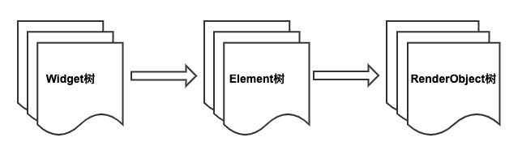
现在我们重点看一下Element，Element的生命周期如下：
- Framework 调用
Widget.createElement创建一个Element实例，记为element - Framework 调用
element.mount(parentElement,newSlot)，mount方法中首先调用element所对应Widget的createRenderObject方法创建与element相关联的RenderObject对象，然后调用element.attachRenderObject方法将element.renderObject添加到渲染树中插槽指定的位置（这一步不是必须的，一般发生在Element树结构发生变化时才需要重新添加）。插入到渲染树后的element就处于“active”状态，处于“active”状态后就可以显示在屏幕上了（可以隐藏）。 - 当有父Widget的配置数据改变时，同时其
State.build返回的Widget结构与之前不同，此时就需要重新构建对应的Element树。为了进行Element复用，在Element重新构建前会先尝试是否可以复用旧树上相同位置的element，element节点在更新前都会调用其对应Widget的canUpdate方法，如果返回true，则复用旧Element，旧的Element会使用新Widget配置数据更新，反之则会创建一个新的Element。Widget.canUpdate主要是判断newWidget与oldWidget的runtimeType和key是否同时相等，如果同时相等就返回true，否则就会返回false。根据这个原理，当我们需要强制更新一个Widget时，可以通过指定不同的Key来避免复用。 - 当有祖先Element决定要移除
element时（如Widget树结构发生了变化，导致element对应的Widget被移除），这时该祖先Element就会调用deactivateChild方法来移除它，移除后element.renderObject也会被从渲染树中移除，然后Framework会调用element.deactivate方法，这时element状态变为“inactive”状态。 - “inactive”态的element将不会再显示到屏幕。为了避免在一次动画执行过程中反复创建、移除某个特定element，“inactive”态的element在当前动画最后一帧结束前都会保留，如果在动画执行结束后它还未能重新变成“active”状态，Framework就会调用其
unmount方法将其彻底移除，这时element的状态为defunct,它将永远不会再被插入到树中。 - 如果
element要重新插入到Element树的其他位置，如element或element的祖先拥有一个GlobalKey（用于全局复用元素），那么Framework会先将element从现有位置移除，然后再调用其activate方法，并将其renderObject重新attach到渲染树。
看完Element的生命周期，可能有些读者会有疑问，开发者会直接操作Element树吗？其实对于开发者来说，大多数情况下只需要关注Widget树就行，Flutter框架已经将对Widget树的操作映射到了Element树上，这可以极大的降低复杂度，提高开发效率。但是了解Element对理解整个Flutter UI框架是至关重要的，Flutter正是通过Element这个纽带将Widget和RenderObject关联起来，了解Element层不仅会帮助读者对Flutter UI框架有个清晰的认识，而且也会提高自己的抽象能力和设计能力。另外在有些时候，我们必须得直接使用Element对象来完成一些操作，比如获取主题Theme数据，具体细节将在下文介绍。
14.2.2 BuildContext
我们已经知道，StatelessWidget和StatefulWidget的build方法都会传一个BuildContext对象：
Widget build(BuildContext context) {}
我们也知道，在很多时候我们都需要使用这个context 做一些事，比如：
Theme.of(context) //获取主题
Navigator.push(context, route) //入栈新路由
Localizations.of(context, type) //获取Local
context.size //获取上下文大小
context.findRenderObject() //查找当前或最近的一个祖先RenderObject
那么BuildContext到底是什么呢，查看其定义，发现其是一个抽象接口类：
abstract class BuildContext {
...
}
那这个context对象对应的实现类到底是谁呢？我们顺藤摸瓜，发现build调用是发生在StatelessWidget和StatefulWidget对应的StatelessElement和StatefulElement的build方法中，以StatelessElement为例：
class StatelessElement extends ComponentElement {
...
@override
Widget build() => widget.build(this);
...
}
发现build传递的参数是this，很明显！这个BuildContext就是StatelessElement。同样，我们同样发现StatefulWidget的context是StatefulElement。但StatelessElement和StatefulElement本身并没有实现BuildContext接口，继续跟踪代码，发现它们间接继承自Element类，然后查看Element类定义，发现Element类果然实现了BuildContext接口:
class Element extends DiagnosticableTree implements BuildContext {
...
}
至此真相大白，BuildContext就是widget对应的Element，所以我们可以通过context在StatelessWidget和StatefulWidget的build方法中直接访问Element对象。我们获取主题数据的代码Theme.of(context)内部正是调用了Element的dependOnInheritedWidgetOfExactType()方法。
思考题：为什么build方法的参数不定义成Element对象，而要定义成BuildContext ?
进阶
我们可以看到Element是Flutter UI框架内部连接widget和RenderObject的纽带，大多数时候开发者只需要关注widget层即可，但是widget层有时候并不能完全屏蔽Element细节，所以Framework在StatelessWidget和StatefulWidget中通过build方法参数又将Element对象也传递给了开发者，这样一来，开发者便可以在需要时直接操作Element对象。那么现在笔者提两个问题：
- 如果没有widget层，单靠
Element层是否可以搭建起一个可用的UI框架？如果可以应该是什么样子？ - Flutter UI框架能不做成响应式吗？
对于问题1，答案当然是肯定的，因为我们之前说过widget树只是Element树的映射，我们完全可以直接通过Element来搭建一个UI框架。下面举一个例子：
我们通过纯粹的Element来模拟一个StatefulWidget的功能，假设有一个页面，该页面有一个按钮，按钮的文本是一个9位数，点击一次按钮，则对9个数随机排一次序，代码如下：
class HomeView extends ComponentElement{
HomeView(Widget widget) : super(widget);
String text = "123456789";
@override
Widget build() {
Color primary=Theme.of(this).primaryColor; //1
return GestureDetector(
child: Center(
child: TextButton(
child: Text(text, style: TextStyle(color: primary),),
onPressed: () {
var t = text.split("")..shuffle();
text = t.join();
markNeedsBuild(); //点击后将该Element标记为dirty，Element将会rebuild
},
),
),
);
}
}
-
上面
build方法不接收参数，这一点和在StatelessWidget和StatefulWidget中build(BuildContext)方法不同。代码中需要用到BuildContext的地方直接用this代替即可，如代码注释1处Theme.of(this)参数直接传this即可，因为当前对象本身就是Element实例。 -
当
text发生改变时，我们调用markNeedsBuild()方法将当前Element标记为dirty即可，标记为dirty的Element会在下一帧中重建。实际上，State.setState()在内部也是调用的markNeedsBuild()方法。 -
上面代码中build方法返回的仍然是一个widget，这是由于Flutter框架中已经有了widget这一层，并且组件库都已经是以widget的形式提供了，如果在Flutter框架中所有组件都像示例的
HomeView一样以Element形式提供，那么就可以用纯Element来构建UI了HomeView的build方法返回值类型就可以是Element了。
如果我们需要将上面代码在现有Flutter框架中跑起来，那么还是得提供一个“适配器”widget将HomeView结合到现有框架中，下面CustomHome就相当于“适配器”：
class CustomHome extends Widget {
@override
Element createElement() {
return HomeView(this);
}
}
现在就可以将CustomHome添加到widget树了，我们在一个新路由页创建它，最终效果如下如图14-2 和14-3（点击后）所示：
 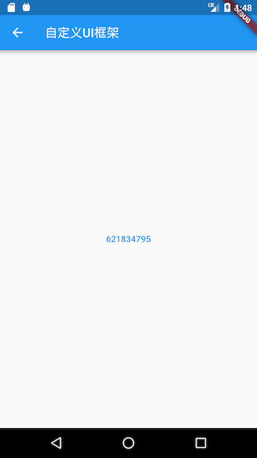
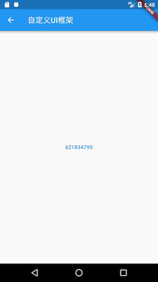
点击按钮则按钮文本会随机排序。
对于问题2，答案当然也是肯定的，Flutter 引擎提供的 API是原始且独立的，这个与操作系统提供的API类似，上层UI框架设计成什么样完全取决于设计者，完全可以将UI框架设计成 Android 风格或 iOS 风格，但这些事Google不会再去做，我们也没必要再去搞这一套，这是因为响应式的思想本身是很棒的，之所以提出这个问题，是因为笔者认为做与不做是一回事，但知道能不能做是另一回事，这能反映出我们对知识的理解程度。
14.2.3 RenderObject
在上一节我们说过每个Element都对应一个RenderObject，我们可以通过Element.renderObject 来获取。并且我们也说过RenderObject的主要职责是Layout和绘制，所有的RenderObject会组成一棵渲染树Render Tree。本节我们将重点介绍一下RenderObject的作用。
RenderObject就是渲染树中的一个对象，它主要的作用是实现事件响应以及渲染管线中除过 build 的执行过程（build 过程由 element 实现），即包括：布局、绘制、层合成以及上屏，这些我们将在后面章节介绍。
RenderObject拥有一个parent和一个parentData 属性，parent指向渲染树中自己的父节点，而parentData是一个预留变量，在父组件的布局过程，会确定其所有子组件布局信息（如位置信息，即相对于父组件的偏移），而这些布局信息需要在布局阶段保存起来，因为布局信息在后续的绘制阶段还需要被使用（用于确定组件的绘制位置），而parentData属性的主要作用就是保存布局信息，比如在 Stack 布局中，RenderStack就会将子元素的偏移数据存储在子元素的parentData中（具体可以查看Positioned实现）。
RenderObject类本身实现了一套基础的布局和绘制协议，但是并没有定义子节点模型（如一个节点可以有几个子节点，没有子节点？一个？两个？或者更多？）。 它也没有定义坐标系统（如子节点定位是在笛卡尔坐标中还是极坐标？）和具体的布局协议（是通过宽高还是通过constraint和size?，或者是否由父节点在子节点布局之前或之后设置子节点的大小和位置等）。
为此，Flutter框架提供了一个RenderBox和一个 RenderSliver类，它们都是继承自RenderObject，布局坐标系统采用笛卡尔坐标系，屏幕的(top, left)是原点。而 Flutter 基于这两个类分别实现了基于 RenderBox 的盒模型布局和基于 Sliver 的按需加载模型，这个我们已经在前面章节介绍过。
14.2.4 总结
本节详细的介绍了Element的生命周期，以及它Widget、BuildContext的关系，最后介绍了 Flutter UI框架中另一个重要的角色RenderObject，下一节我们将重点介绍一下 Flutter 渲染管线中的布局流程。
14.3 Flutter启动流程和渲染管线
本节我们会先介绍一下Flutter的启动流程，然后再介绍一下 Flutter 的 rendering pipeline (渲染管线)。
14.3.1 应用启动
Flutter的入口在"lib/main.dart"的main()函数中，它是Dart应用程序的起点。在Flutter应用中，main()函数最简单的实现如下：
void main() => runApp(MyApp());
可以看main()函数只调用了一个runApp()方法，我们看看runApp()方法中都做了什么：
void runApp(Widget app) {
WidgetsFlutterBinding.ensureInitialized()
..attachRootWidget(app)
..scheduleWarmUpFrame();
}
参数app是一个 widget，它是 Flutter 应用启动后要展示的第一个组件。而WidgetsFlutterBinding正是绑定widget 框架和Flutter 引擎的桥梁，定义如下：
class WidgetsFlutterBinding extends BindingBase with GestureBinding, ServicesBinding, SchedulerBinding, PaintingBinding, SemanticsBinding, RendererBinding, WidgetsBinding {
static WidgetsBinding ensureInitialized() {
if (WidgetsBinding.instance == null)
WidgetsFlutterBinding();
return WidgetsBinding.instance;
}
}
可以看到WidgetsFlutterBinding继承自BindingBase 并混入了很多Binding，在介绍这些Binding之前我们先介绍一下Window，下面是Window的官方解释：
The most basic interface to the host operating system's user interface.
很明显，Window 正是 Flutter Framework 连接宿主操作系统的接口。我们看一下 Window 类的部分定义：
class Window {
// 当前设备的DPI，即一个逻辑像素显示多少物理像素，数字越大，显示效果就越精细保真。
// DPI是设备屏幕的固件属性，如Nexus 6的屏幕DPI为3.5
double get devicePixelRatio => _devicePixelRatio;
// Flutter UI绘制区域的大小
Size get physicalSize => _physicalSize;
// 当前系统默认的语言Locale
Locale get locale;
// 当前系统字体缩放比例。
double get textScaleFactor => _textScaleFactor;
// 当绘制区域大小改变回调
VoidCallback get onMetricsChanged => _onMetricsChanged;
// Locale发生变化回调
VoidCallback get onLocaleChanged => _onLocaleChanged;
// 系统字体缩放变化回调
VoidCallback get onTextScaleFactorChanged => _onTextScaleFactorChanged;
// 绘制前回调，一般会受显示器的垂直同步信号VSync驱动，当屏幕刷新时就会被调用
FrameCallback get onBeginFrame => _onBeginFrame;
// 绘制回调
VoidCallback get onDrawFrame => _onDrawFrame;
// 点击或指针事件回调
PointerDataPacketCallback get onPointerDataPacket => _onPointerDataPacket;
// 调度Frame，该方法执行后，onBeginFrame和onDrawFrame将紧接着会在合适时机被调用，
// 此方法会直接调用Flutter engine的Window_scheduleFrame方法
void scheduleFrame() native 'Window_scheduleFrame';
// 更新应用在GPU上的渲染,此方法会直接调用Flutter engine的Window_render方法
void render(Scene scene) native 'Window_render';
// 发送平台消息
void sendPlatformMessage(String name,
ByteData data,
PlatformMessageResponseCallback callback) ;
// 平台通道消息处理回调
PlatformMessageCallback get onPlatformMessage => _onPlatformMessage;
... //其他属性及回调
}
可以看到Window类包含了当前设备和系统的一些信息以及Flutter Engine的一些回调。现在我们再回来看看WidgetsFlutterBinding混入的各种Binding。通过查看这些 Binding的源码，我们可以发现这些Binding中基本都是监听并处理Window对象的一些事件，然后将这些事件按照Framework的模型包装、抽象然后分发。可以看到WidgetsFlutterBinding正是粘连Flutter engine与上层Framework的“胶水”。
GestureBinding：提供了window.onPointerDataPacket回调，绑定Framework手势子系统，是Framework事件模型与底层事件的绑定入口。ServicesBinding：提供了window.onPlatformMessage回调， 用于绑定平台消息通道（message channel），主要处理原生和Flutter通信。SchedulerBinding：提供了window.onBeginFrame和window.onDrawFrame回调，监听刷新事件，绑定Framework绘制调度子系统。PaintingBinding：绑定绘制库，主要用于处理图片缓存。SemanticsBinding：语义化层与Flutter engine的桥梁，主要是辅助功能的底层支持。RendererBinding: 提供了window.onMetricsChanged、window.onTextScaleFactorChanged等回调。它是渲染树与Flutter engine的桥梁。WidgetsBinding：提供了window.onLocaleChanged、onBuildScheduled等回调。它是Flutter widget层与engine的桥梁。
WidgetsFlutterBinding.ensureInitialized()负责初始化一个WidgetsBinding的全局单例，紧接着会调用WidgetsBinding的attachRootWidget方法，该方法负责将根Widget添加到RenderView上，代码如下：
void attachRootWidget(Widget rootWidget) {
_renderViewElement = RenderObjectToWidgetAdapter<RenderBox>(
container: renderView,
debugShortDescription: '[root]',
child: rootWidget
).attachToRenderTree(buildOwner, renderViewElement);
}
注意，代码中的有renderView和renderViewElement两个变量，renderView是一个RenderObject，它是渲染树的根，而renderViewElement是renderView对应的Element对象，可见该方法主要完成了根widget到根 RenderObject再到根Element的整个关联过程。我们看看attachToRenderTree的源码实现：
RenderObjectToWidgetElement<T> attachToRenderTree(BuildOwner owner, [RenderObjectToWidgetElement<T> element]) {
if (element == null) {
owner.lockState(() {
element = createElement();
assert(element != null);
element.assignOwner(owner);
});
owner.buildScope(element, () {
element.mount(null, null);
});
} else {
element._newWidget = this;
element.markNeedsBuild();
}
return element;
}
该方法负责创建根element，即 RenderObjectToWidgetElement，并且将element与widget 进行关联，即创建出 widget树对应的element树。如果element 已经创建过了，则将根element 中关联的widget 设为新的，由此可以看出element 只会创建一次，后面会进行复用。那么BuildOwner是什么呢？其实它就是widget framework的管理类，它跟踪哪些 widget 需要重新构建。
组件树在构建（build）完毕后，回到runApp的实现中，当调用完attachRootWidget后，最后一行会调用 WidgetsFlutterBinding 实例的 scheduleWarmUpFrame() 方法，该方法的实现在SchedulerBinding 中，它被调用后会立即进行一次绘制，在此次绘制结束前，该方法会锁定事件分发，也就是说在本次绘制结束完成之前 Flutter 将不会响应各种事件，这可以保证在绘制过程中不会再触发新的重绘。
14.3.2 渲染管线
1. Frame
一次绘制过程，我们称其为一帧（frame）。我们之前说的 Flutter 可以实现60fps（Frame Per-Second）就是指一秒钟最多可以触发 60 次重绘，FPS 值越大，界面就越流畅。这里需要说明的是 Flutter中 的 frame 概念并不等同于屏幕刷新帧（frame），因为Flutter UI 框架的 frame 并不是每次屏幕刷新都会触发，这是因为，如果 UI 在一段时间不变，那么每次屏幕刷新都重新走一遍渲染流程是不必要的，因此，Flutter 在第一帧渲染结束后会采取一种主动请求 frame 的方式来实现只有当UI可能会改变时才会重新走渲染流程。
- Flutter 在
window上注册一个onBeginFrame和一个onDrawFrame回调，在onDrawFrame回调中最终会调用drawFrame。 - 当我们调用
window.scheduleFrame()方法之后，Flutter引擎会在合适的时机（可以认为是在屏幕下一次刷新之前，具体取决于Flutter引擎的实现）来调用onBeginFrame和onDrawFrame。
可以看见，只有主动调用scheduleFrame() ，才会执行 drawFrame。所以，我们在Flutter 中的提到 frame 时，如无特别说明，则是和 drawFrame() 的调用对应，而不是和屏幕的刷新频率对应。
2. Flutter 调度过程 SchedulerPhase
Flutter 应用执行过程简单来讲分为 idle 和 frame 两种状态，idle 状态代表没有 frame 处理，如果应用状态改变需要刷新 UI，则需要通过scheduleFrame()去请求新的 frame，当 frame 到来时，就进入了frame状态，整个Flutter应用生命周期就是在 idle 和 frame 两种状态间切换。
frame 处理流程
当有新的 frame 到来时，具体处理过程就是依次执行四个任务队列：transientCallbacks、midFrameMicrotasks、persistentCallbacks、postFrameCallbacks，当四个任务队列执行完毕后当前 frame 结束。综上，Flutter 将整个生命周期分为五种状态，通过 SchedulerPhase 枚举类来表示它们：
enum SchedulerPhase {
/// 空闲状态，并没有 frame 在处理。这种状态代表页面未发生变化，并不需要重新渲染。
/// 如果页面发生变化，需要调用`scheduleFrame()`来请求 frame。
/// 注意，空闲状态只是指没有 frame 在处理，通常微任务、定时器回调或者用户事件回调都
/// 可能被执行，比如监听了tap事件，用户点击后我们 onTap 回调就是在idle阶段被执行的。
idle,
/// 执行”临时“回调任务，”临时“回调任务只能被执行一次，执行后会被移出”临时“任务队列。
/// 典型的代表就是动画回调会在该阶段执行。
transientCallbacks,
/// 在执行临时任务时可能会产生一些新的微任务，比如在执行第一个临时任务时创建了一个
/// Future，且这个 Future 在所有临时任务执行完毕前就已经 resolve 了，这中情况
/// Future 的回调将在[midFrameMicrotasks]阶段执行
midFrameMicrotasks,
/// 执行一些持久的任务（每一个frame都要执行的任务），比如渲染管线（构建、布局、绘制）
/// 就是在该任务队列中执行的.
persistentCallbacks,
/// 在当前 frame 在结束之前将会执行 postFrameCallbacks，通常进行一些清理工作和
/// 请求新的 frame。
postFrameCallbacks,
}
需要注意，我们接下来要重点介绍的渲染管线就是在 persistentCallbacks 中执行的。
3. 渲染管线（rendering pipeline）
当新的 frame 到来时，调用到 WidgetsBinding 的 drawFrame() 方法，我们来看看它的实现：
@override
void drawFrame() {
...//省略无关代码
try {
buildOwner.buildScope(renderViewElement); // 先执行构建
super.drawFrame(); //然后调用父类的 drawFrame 方法
}
}
实际上关键的代码就两行：先重新构建（build），然后再调用父类的 drawFrame 方法，我们将父类的 drawFrame方法展开后：
void drawFrame() {
buildOwner!.buildScope(renderViewElement!); // 1.重新构建widget树
//下面是 展开 super.drawFrame() 方法
pipelineOwner.flushLayout(); // 2.更新布局
pipelineOwner.flushCompositingBits(); //3.更新“层合成”信息
pipelineOwner.flushPaint(); // 4.重绘
if (sendFramesToEngine) {
renderView.compositeFrame(); // 5. 上屏，会将绘制出的bit数据发送给GPU
...
}
}
可以看到主要做了5件事：
-
重新构建widget树。
-
更新布局。
-
更新“层合成”信息。
-
重绘。
-
上屏：将绘制的产物显示在屏幕上
我们称上面的5步为 rendering pipeline，中文翻译为 “渲染流水线” 或 “渲染管线”。而渲染管线的这 5 个步骤的具体过程便是本章重点要介绍的。下面我们以 setState 的执行更新的流程为例先对整个更新流程有一个大概的影响
4. setState 执行流
setState 调用后：
- 首先调用当前 element 的 markNeedsBuild 方法，将当前 element标记为 dirty 。
- 接着调用 scheduleBuildFor，将当前 element 添加到pipelineOwner的 dirtyElements 列表。
- 最后请求一个新的 frame，随后会绘制新的 frame：onBuildScheduled->ensureVisualUpdate->scheduleFrame() 。当新的 frame 到来时执行渲染管线
void drawFrame() {
buildOwner!.buildScope(renderViewElement!); //重新构建widget树
pipelineOwner.flushLayout(); // 更新布局
pipelineOwner.flushCompositingBits(); //更新合成信息
pipelineOwner.flushPaint(); // 更新绘制
if (sendFramesToEngine) {
renderView.compositeFrame(); // 上屏，会将绘制出的bit数据发送给GPU
pipelineOwner.flushSemantics(); // this also sends the semantics to the OS.
_firstFrameSent = true;
}
}
- 重新构建 widget 树：如果 dirtyElements 列表不为空，则遍历该列表，调用每一个element的rebuild方法重新构建新的widget（树），由于新的widget(树)使用新的状态构建，所以可能导致widget布局信息（占用的空间和位置）发生变化，如果发生变化，则会调用其renderObject的markNeedsLayout方法，该方法会从当前节点向父级查找，直到找到一个relayoutBoundary的节点，然后会将它添加到一个全局的nodesNeedingLayout列表中；如果直到根节点也没有找到relayoutBoundary，则将根节点添加到nodesNeedingLayout列表中。
- 更新布局：遍历nodesNeedingLayout数组，对每一个renderObject重新布局（调用其layout方法），确定新的大小和偏移。layout方法中会调用markNeedsPaint()，该方法和 markNeedsLayout 方法功能类似，也会从当前节点向父级查找，直到找到一个isRepaintBoundary属性为true的父节点，然后将它添加到一个全局的nodesNeedingPaint列表中；由于根节点（RenderView）的 isRepaintBoundary 为 true，所以必会找到一个。查找过程结束后会调用 buildOwner.requestVisualUpdate 方法，该方法最终会调用scheduleFrame()，该方法中会先判断是否已经请求过新的frame，如果没有则请求一个新的frame。
- 更新合成信息：先忽略，我们在14.8节专门介绍。
- 更新绘制：遍历nodesNeedingPaint列表，调用每一个节点的paint方法进行重绘，绘制过程会生成Layer。需要说明一下，flutter中绘制结果是保存在Layer中的，也就是说只要Layer不释放，那么绘制的结果就会被缓存，因此，Layer可以跨frame来缓存绘制结果，避免不必要的重绘开销。Flutter框架绘制过程中，遇到isRepaintBoundary 为 true 的节点时，才会生成一个新的Layer。可见Layer和 renderObject 不是一一对应关系，父子节点可以共享，这个我们会在随后的一个试验中来验证。当然，如果是自定义组件，我们可以在renderObject中手动添加任意多个 Layer，这通常用于只需一次绘制而随后不会发生变化的绘制元素的缓存场景，这个随后我们也会通过一个例子来演示。
- 上屏：绘制完成后，我们得到的是一棵Layer树，最后我们需要将Layer树中的绘制信息在屏幕上显示。我们知道Flutter是自实现的渲染引擎，因此，我们需要将绘制信息提交给Flutter engine，而
renderView.compositeFrame正是完成了这个使命。
以上，便是setState被调用到UI更的大概更新过程，实际的流程会更复杂一些，比如在build过程中是不允许再调用setState的，框架需要做一些检查。又比如在frame中会涉及到动画的调度、在上屏时会将所有的Layer添加到场景（Scene）对象后，再渲染Scene。上面的流程读者先有个印象即可，我们将在后面的小节中详细介绍。
5. setState 执行时机问题
setState 会触发 build，而 build 是在执行 persistentCallbacks 阶段执行的，因此只要不是在该阶段执行 setState 就绝对安全，但是这样的粒度太粗，比如在transientCallbacks 和 midFrameMicrotasks 阶段，如果应用状态发生变化，最好的方式是只将组件标记为 dirty，而不用再去请求新的 frame ，因为当前frame 还没有执行到 persistentCallbacks，因此后面执行到后就会在当前帧渲染管线中刷新UI。因此，setState 在标记完 dirty 后会先判断一下调度状态，如果是 idle 或 执行 postFrameCallbacks 阶段才会去请求新的 frame :
void ensureVisualUpdate() {
switch (schedulerPhase) {
case SchedulerPhase.idle:
case SchedulerPhase.postFrameCallbacks:
scheduleFrame(); // 请求新的frame
return;
case SchedulerPhase.transientCallbacks:
case SchedulerPhase.midFrameMicrotasks:
case SchedulerPhase.persistentCallbacks: // 注意这一行
return;
}
}
上面的代码在大多数情况下是没有问题的，但是如果我们在 build 阶段又调用 setState 的话还是会有问题，因为如果我们在 build 阶段又调用 setState 的话就又会导致 build....这样将将导致循环调用，因此 flutter 框架发现在 build 阶段调用 setState 的话就会报错，如：
@override
Widget build(BuildContext context) {
return LayoutBuilder(
builder: (context, c) {
// build 阶段不能调用 setState, 会报错
setState(() {
++index;
});
return Text('xx');
},
);
}
运行后会报错，控制台会打印：
==== Exception caught by widgets library ====
The following assertion was thrown building LayoutBuilder:
setState() or markNeedsBuild() called during build.
需要注意，如果我们直接在 build 中调用setState ，代码如下：
@override
Widget build(BuildContext context) {
setState(() {
++index;
});
return Text('$index');
}
运行后是不会报错的，原因是在执行 build 时当前组件的 dirty 状态（对应的element中）为 true，只有 build 执行完后才会被置为 false。而 setState 执行的时候会会先判断当前 dirty 值，如果为 true 则会直接返回，因此就不会报错。
上面我们只讨论了在 build 阶段调用 setState 会导致错误，实际上在整个构建、布局和绘制阶段都不能同步调用 setState，这是因为，在这些阶段调用 setState 都有可能请求新的 frame，都可能会导致循环调用，因此如果要在这些阶段更新应用状态时，都不能直接调用 setState。
安全更新
现在我们知道在 build 阶段不能调用 setState了，实际上在组件的布局阶段和绘制阶段也都不能直接再同步请求重新布局或重绘，道理是相同的，那在这些阶段正确的更新方式是什么呢，我们以 setState 为例，可以通过如下方式：
// 在build、布局、绘制阶段安全更新
void update(VoidCallback fn) {
SchedulerBinding.instance.addPostFrameCallback((_) {
setState(fn);
});
}
注意，update 函数只应该在 frame 执行 persistentCallbacks 时执行，其他阶段直接调用 setState 即可。因为 idle 状态会是一个特例，如果 在idle 状态调用 update 的话，需要手动调用 scheduleFrame() 请求新的 frame，否则 postFrameCallbacks 在下一个frame （其他组件请求的 frame ）到来之前不会被执行，因此我们可以将 update 修改一下：
void update(VoidCallback fn) {
final schedulerPhase = SchedulerBinding.instance.schedulerPhase;
if (schedulerPhase == SchedulerPhase.persistentCallbacks) {
SchedulerBinding.instance.addPostFrameCallback((_) {
setState(fn);
});
} else {
setState(fn);
}
}
至此，我们封装了一个可以安全更新状态的 update 函数。
现在我们回想一下，在第十章 “自绘组件：CustomCheckbox” 一节中，为了执行动画，我们在绘制完成之后通过如下代码请求重绘：
SchedulerBinding.instance.addPostFrameCallback((_) {
...
markNeedsPaint();
});
我们并没有直接调用 markNeedsPaint()，而原因正如上面所述。
14.3.3 总结
本节介绍了Flutter App 从启动到显示到屏幕上的主流程，重点是 Flutter 的渲染流程，如图14-4：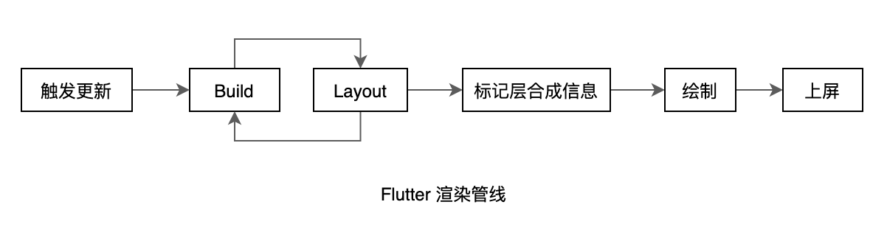
需要说明的是 build 过程和 layout 过程是可以交替执行的，这个我们在介绍 LayoutBuilder 一节时已经解释过了。读者需要对整个渲染流程有个大概印象，后面我们会详细介绍，不过在深入介绍渲染管线之前，我们得仔细的了解一下 Element 、BuildContext 和 RenderObject 三个类。
14.4 布局（Layout）过程
Layout（布局）过程主要是确定每一个组件的布局信息（大小和位置），Flutter 的布局过程如下：
- 父节点向子节点传递约束（constraints）信息，限制子节点的最大和最小宽高。
- 子节点根据约束信息确定自己的大小（size）。
- 父节点根据特定布局规则（不同布局组件会有不同的布局算法）确定每一个子节点在父节点布局空间中的位置，用偏移 offset 表示。
- 递归整个过程，确定出每一个节点的大小和位置。
可以看到，组件的大小是由自身决定的，而组件的位置是由父组件决定的。
Flutter 中的布局类组件很多，根据孩子数量可以分为单子组件和多子组件，下面我们先通过分别自定义一个单子组件和多子组件来直观理解一下Flutter的布局过程，之后会介绍一下布局更新过程和 Flutter 中的 Constraints（约束）。
14.4.1 单子组件布局示例（CustomCenter）
我们实现一个单子组件 CustomCenter，功能基本和 Center 组件对齐，通过这个实例我们演示一下布局的主要流程。
首先，我们定义组件，为了介绍布局原理，我们不采用组合的方式来实现组件，而是直接通过定制 RenderObject 的方式来实现。因为居中组件需要包含一个子节点，所以我们直接继承 SingleChildRenderObjectWidget。
class CustomCenter extends SingleChildRenderObjectWidget {
const CustomCenter2({Key? key, required Widget child})
: super(key: key, child: child);
@override
RenderObject createRenderObject(BuildContext context) {
return RenderCustomCenter();
}
}
接着实现 RenderCustomCenter。这里直接继承 RenderObject 会更接近底层一点，但这需要我们自己手动实现一些和布局无关的东西，比如事件分发等逻辑。为了更聚焦布局本身，我们选择继承自RenderShiftedBox，它会帮我们实现布局之外的一些功能，这样我们只需要重写performLayout，在该函数中实现子节点居中算法即可。
class RenderCustomCenter extends RenderShiftedBox {
RenderCustomCenter({RenderBox? child}) : super(child);
@override
void performLayout() {
//1. 先对子组件进行layout，随后获取它的size
child!.layout(
constraints.loosen(), //将约束传递给子节点
parentUsesSize: true, // 因为我们接下来要使用child的size,所以不能为false
);
//2.根据子组件的大小确定自身的大小
size = constraints.constrain(Size(
constraints.maxWidth == double.infinity
? child!.size.width
: double.infinity,
constraints.maxHeight == double.infinity
? child!.size.height
: double.infinity,
));
// 3. 根据父节点子节点的大小，算出子节点在父节点中居中之后的偏移，然后将这个偏移保存在
// 子节点的parentData中，在后续的绘制阶段，会用到。
BoxParentData parentData = child!.parentData as BoxParentData;
parentData.offset = ((size - child!.size) as Offset) / 2;
}
}
布局过程请参考注释，在此需要额外说明有3点：
-
在对子节点进行布局时，
constraints是 CustomCenter 的父组件传递给自己的约束信息，我们传递给子节点的约束信息是constraints.loosen()，下面看一下loosen的实现源码：BoxConstraints loosen() { return BoxConstraints( minWidth: 0.0, maxWidth: maxWidth, minHeight: 0.0, maxHeight: maxHeight, ); }很明显，CustomCenter 约束子节点最大宽高不超过自身的最大宽高。
-
子节点在父节点（CustomCenter）的约束下，确定自己的宽高；此时CustomCenter会根据子节点的宽高确定自己的宽高，上面代码的逻辑是，如果CustomCenter父节点传递给它最大宽高约束是无限大时，它的宽高会设置为它子节点的宽高。注意，如果这时将CustomCenter的宽高也设置为无限大就会有问题，因为在一个无限大的范围内自己的宽高也是无限大的话，那么实际上的宽高到底是多大，它的父节点会懵逼的！屏幕的大小是固定的，这显然不合理。如果CustomCenter父节点传递给它的最大宽高约束不是无限大，那么是可以指定自己的宽高为无限大的，因为在一个有限的空间内，子节点如果说自己无限大，那么最大也就是父节点的大小。所以，简而言之，CustomCenter 会尽可能让自己填满父元素的空间。
-
CustomCenter 确定了自己的大小和子节点大小之后就可以确定子节点的位置了，根据居中算法，将子节点的原点坐标算出后保存在子节点的 parentData 中，在后续的绘制阶段会用到，具体怎么用，我们看一下RenderShiftedBox中默认的 paint 实现：
@override void paint(PaintingContext context, Offset offset) { if (child != null) { final BoxParentData childParentData = child!.parentData! as BoxParentData; //从child.parentData中取出子节点相对当前节点的偏移，加上当前节点在屏幕中的偏移， //便是子节点在屏幕中的偏移。 context.paintChild(child!, childParentData.offset + offset); } }
performLayout 流程
可以看到，布局的逻辑是在 performLayout 方法中实现的。我们梳理一下 performLayout 中具体做的事：
- 如果有子组件，则对子组件进行递归布局。
- 确定当前组件的大小（size），通常会依赖子组件的大小。
- 确定子组件在当前组件中的起始偏移。
在Flutter组件库中，有一些常用的单子组件比如Align、SizedBox、DecoratedBox等，都可以打开源码去看看其实现。
下面我们看一个多子组件的例子。
14.4.2 多子组件布局示例（LeftRightBox）
实际开发中我们会经常用到贴边左-右布局，现在我们就来实现一个 LeftRightBox 组件来实现左-右布局，因为LeftRightBox 有两个孩子，用一个 Widget 数组来保存子组件。
首先我们定义组件，与单子组件不同的是多子组件需要继承自 MultiChildRenderObjectWidget：
class LeftRightBox extends MultiChildRenderObjectWidget {
LeftRightBox({
Key? key,
required List<Widget> children,
}) : assert(children.length == 2, "只能传两个children"),
super(key: key, children: children);
@override
RenderObject createRenderObject(BuildContext context) {
return RenderLeftRight();
}
}
接下来需要实现 RenderLeftRight，在其 performLayout 中我们实现实现左-右布局算法：
class LeftRightParentData extends ContainerBoxParentData<RenderBox> {}
class RenderLeftRight extends RenderBox
with
ContainerRenderObjectMixin<RenderBox, LeftRightParentData>,
RenderBoxContainerDefaultsMixin<RenderBox, LeftRightParentData> {
// 初始化每一个child的parentData
@override
void setupParentData(RenderBox child) {
if (child.parentData is! LeftRightParentData)
child.parentData = LeftRightParentData();
}
@override
void performLayout() {
final BoxConstraints constraints = this.constraints;
RenderBox leftChild = firstChild!;
LeftRightParentData childParentData =
leftChild.parentData! as LeftRightParentData;
RenderBox rightChild = childParentData.nextSibling!;
//我们限制右孩子宽度不超过总宽度一半
rightChild.layout(
constraints.copyWith(maxWidth: constraints.maxWidth / 2),
parentUsesSize: true,
);
//调整右子节点的offset
childParentData = rightChild.parentData! as LeftRightParentData;
childParentData.offset = Offset(
constraints.maxWidth - rightChild.size.width,
0,
);
// layout left child
// 左子节点的offset默认为（0，0），为了确保左子节点始终能显示，我们不修改它的offset
leftChild.layout(
//左侧剩余的最大宽度
constraints.copyWith(
maxWidth: constraints.maxWidth - rightChild.size.width,
),
parentUsesSize: true,
);
//设置LeftRight自身的size
size = Size(
constraints.maxWidth,
max(leftChild.size.height, rightChild.size.height),
);
}
@override
void paint(PaintingContext context, Offset offset) {
defaultPaint(context, offset);
}
@override
bool hitTestChildren(BoxHitTestResult result, {required Offset position}) {
return defaultHitTestChildren(result, position: position);
}
}
可以看到，实际布局流程和单子节点并没有太大区别，只不过多子组件需要同时对多个子节点进行布局。另外和RenderCustomCenter 不同的是，RenderLeftRight是直接继承自 RenderBox，同时混入了ContainerRenderObjectMixin 和 RenderBoxContainerDefaultsMixin 两个 mixin，这两个 mixin 实现了通用的绘制和事件处理相关逻辑（现在先不用关注，后面章节会讲）。
14.4.3 关于ParentData
上面两个例子中我们在实现相应的 RenderObject 时都用到了子节点的 parentData 对象(将子节点的offset信息保存其中)，可以看到 parentData 虽然属于child的属性，但它从设置（包括初始化）到使用都在父节点中，这也是为什么起名叫“parentData”。实际上Flutter框架中，parentData 这个属性主要就是为了在 layout 阶段保存组件布局信息而设计的。
需要注意：“parentData 用于保存节点的布局信息” 只是一个约定，我们定义组件时完全可以将子节点的布局信息保存在任意地方，也可以保存非布局信息。但是，还是强烈建议大家遵循Flutter的规范，这样我们的代码会更容易被他人看懂，也会更容易维护。
14.4.4 布局更新
理论上，某个组件的布局变化后，就可能会影响其他组件的布局，所以当有组件布局发生变化后，最笨的办法是对整棵组件树 relayout（重新布局）！但是对所有组件进行 relayout 的成本还是太大，所以我们需要探索一下降低 relayout 成本的方案。实际上，在一些特定场景下，组件发生变化后我们只需要对部分组件进行重新布局即可（而无需对整棵树 relayout ）。
1. 布局边界（relayoutBoundary）
假如有一个页面的组件树结构如图14-5所示：
假如 Text3 的文本长度发生变化，则会导致 Text4 的位置和 Column2 的大小也会变化；又因为 Column2 的父组件 SizedBox 已经限定了大小，所以 SizedBox 的大小和位置都不会变化。所以最终我们需要进行 relayout 的组件是：Text3、Column2，这里需要注意：
- Text4 是不需要重新布局的，因为 Text4 的大小没有发生变化，只是位置发生变化，而它的位置是在父组件 Column2 布局时确定的。
- 很容易发现：假如 Text3 和 Column2 之间还有其他组件，则这些组件也都是需要 relayout 的。
在本例中，Column2 就是 Text3 的 relayoutBoundary （重新布局的边界节点）。每个组件的 renderObject 中都有一个 _relayoutBoundary 属性指向自身的布局边界节点，如果当前节点布局发生变化后，自身到其布局边界节点路径上的所有的节点都需要 relayout。
那么，一个组件是否是 relayoutBoundary 的条件是什么呢？这里有一个原则和四个场景，原则是“组件自身的大小变化不会影响父组件”，如果一个组件满足以下四种情况之一，则它便是 relayoutBoundary ：
-
当前组件父组件的大小不依赖当前组件大小时；这种情况下父组件在布局时会调用子组件布局函数时并会给子组件传递一个 parentUsesSize 参数，该参数为 false 时表示父组件的布局算法不会依赖子组件的大小。
-
组件的大小只取决于父组件传递的约束，而不会依赖后代组件的大小。这样的话后代组件的大小变化就不会影响自身的大小了，这种情况组件的 sizedByParent 属性必须为 true（具体我们后面会讲）。
-
父组件传递给自身的约束是一个严格约束（固定宽高，下面会讲）；这种情况下即使自身的大小依赖后代元素，但也不会影响父组件。
-
组件为根组件；Flutter 应用的根组件是 RenderView，它的默认大小是当前设备屏幕大小。
对应的代码实现是：
// parent is! RenderObject 为 true 时则表示当前组件是根组件，因为只有根组件没有父组件。
if (!parentUsesSize || sizedByParent || constraints.isTight || parent is! RenderObject) {
_relayoutBoundary = this;
} else {
_relayoutBoundary = (parent! as RenderObject)._relayoutBoundary;
}
代码中 if 里的判断条件和上面的 4 条 一一对应，其中除了第二个条件之外（ sizedByParent 为 true ），其他的都很直观，我们会在后面专门介绍一下第二个条件。
2. markNeedsLayout
当组件布局发生变化时，它需要调用 markNeedsLayout 方法来更新布局，它的功能主要有两个：
- 将自身到其 relayoutBoundary 路径上的所有节点标记为 “需要布局” 。
- 请求新的 frame；在新的 frame 中会对标记为“需要布局”的节点重新布局。
我们看看其核心源码：
void markNeedsLayout() {
_needsLayout = true;
if (_relayoutBoundary != this) { // 如果不是布局边界节点
markParentNeedsLayout(); // 递归调用前节点到其布局边界节点路径上所有节点的方法 markNeedsLayout
} else {// 如果是布局边界节点
if (owner != null) {
// 将布局边界节点加入到 pipelineOwner._nodesNeedingLayout 列表中
owner!._nodesNeedingLayout.add(this);
owner!.requestVisualUpdate();//该函数最终会请求新的 frame
}
}
}
3. flushLayout()
markNeedsLayout 执行完毕后，就会将其 relayoutBoundary 节点添加到 pipelineOwner._nodesNeedingLayout 列表中，然后请求新的 frame，新的 frame 到来时就会执行 drawFrame 方法（可以参考上一节）：
void drawFrame() {
pipelineOwner.flushLayout(); //重新布局
pipelineOwner.flushCompositingBits();
pipelineOwner.flushPaint();
...
}
flushLayout() 中会对之前添加到 _nodesNeedingLayout 中的节点重新布局，我们看一下其核心源码：
void flushLayout() {
while (_nodesNeedingLayout.isNotEmpty) {
final List<RenderObject> dirtyNodes = _nodesNeedingLayout;
_nodesNeedingLayout = <RenderObject>[];
//按照节点在树中的深度从小到大排序后再重新layout
for (final RenderObject node in dirtyNodes..sort((a,b) => a.depth - b.depth)) {
if (node._needsLayout && node.owner == this)
node._layoutWithoutResize(); //重新布局
}
}
}
看一下 _layoutWithoutResize 实现
void _layoutWithoutResize() {
performLayout(); // 重新布局；会递归布局后代节点
_needsLayout = false;
markNeedsPaint(); //布局更新后，UI也是需要更新的
}
代码很简单，不再赘述。
思考题：为什么 flushLayout() 中刷新布局时要先对dirtyNodes 根据在树中的深度按照从小到大排序？从大到小不行吗？
4. Layout流程
如果组件有子组件，则在 performLayout 中需要调用子组件的 layout 方法先对子组件进行布局，我们看一下 layout 的核心流程：
void layout(Constraints constraints, { bool parentUsesSize = false }) {
RenderObject? relayoutBoundary;
// 先确定当前组件的布局边界
if (!parentUsesSize || sizedByParent || constraints.isTight || parent is! RenderObject) {
relayoutBoundary = this;
} else {
relayoutBoundary = (parent! as RenderObject)._relayoutBoundary;
}
// _needsLayout 表示当前组件是否被标记为需要布局
// _constraints 是上次布局时父组件传递给当前组件的约束
// _relayoutBoundary 为上次布局时当前组件的布局边界
// 所以，当当前组件没有被标记为需要重新布局，且父组件传递的约束没有发生变化，
// 且布局边界也没有发生变化时则不需要重新布局，直接返回即可。
if (!_needsLayout && constraints == _constraints && relayoutBoundary == _relayoutBoundary) {
return;
}
// 如果需要布局，缓存约束和布局边界
_constraints = constraints;
_relayoutBoundary = relayoutBoundary;
// 后面解释
if (sizedByParent) {
performResize();
}
// 执行布局
performLayout();
// 布局结束后将 _needsLayout 置为 false
_needsLayout = false;
// 将当前组件标记为需要重绘（因为布局发生变化后，需要重新绘制）
markNeedsPaint();
}
简单来讲布局过程分以下几步：
-
确定当前组件的布局边界。
-
判断是否需要重新布局，如果没必要会直接返回，反之才需要重新布局。不需要布局时需要同时满足三个条件：
-
当前组件没有被标记为需要重新布局。
-
父组件传递的约束没有发生变化。
-
当前组件的布局边界也没有发生变化时。
-
-
调用 performLayout() 进行布局，因为 performLayout() 中又会调用子组件的 layout 方法，所以这时一个递归的过程，递归结束后整个组件树的布局也就完成了。
-
请求重绘。
14.4.5 sizedByParent
在 layout 方法中，有如下逻辑：
if (sizedByParent) {
performResize(); //重新确定组件大小
}
上面我们说过 sizedByParent 为 true 时表示：当前组件的大小只取决于父组件传递的约束，而不会依赖后代组件的大小。前面我们说过，performLayout 中确定当前组件的大小时通常会依赖子组件的大小，如果 sizedByParent 为 true，则当前组件的大小就不依赖子组件大小了，为了逻辑清晰，Flutter 框架中约定，当sizedByParent 为 true 时，确定当前组件大小的逻辑应抽离到 performResize() 中，这种情况下 performLayout 主要的任务便只有两个：对子组件进行布局和确定子组件在当前组件中的布局起始位置偏移。
下面我们通过一个 AccurateSizedBox 示例来演示一下 sizedByParent 为 true 时我们应该如何布局：
AccurateSizedBox
Flutter 中的 SizedBox 组件会将其父组件的约束传递给其子组件，这也就意味着，如果父组件限制了最小宽度为100，即使我们通过 SizedBox 指定宽度为50，那也是没用的，因为 SizedBox的实现中会让 SizedBox 的子组件先满足 SizedBox 父组件的约束。还记得之前我们想在 AppBar 中限制 loading 组件大小的例子吗：
AppBar(
title: Text(title),
actions: <Widget>[
SizedBox( // 尝试使用SizedBox定制loading 宽高
width: 20,
height: 20,
child: CircularProgressIndicator(
strokeWidth: 3,
valueColor: AlwaysStoppedAnimation(Colors.white70),
),
)
],
)
实际结果如图14-6：

之所以不生效，是因为父组件限制了最小高度，当然我们也可以使用 UnconstrainedBox + SizedBox 来实现我们想要的效果，但是这里我们希望通过一个组件就能搞定，为此我们自定义一个 AccurateSizedBox 组件，它和 SizedBox 的主要区别是 AccurateSizedBox 自身会遵守其父组件传递的约束而不是让其子组件去满足AccurateSizedBox 父组件的约束，具体：
- AccurateSizedBox 自身大小只取决于父组件的约束和用户指定的宽高。
- AccurateSizedBox 确定自身大小后，限制其子组件大小。
class AccurateSizedBox extends SingleChildRenderObjectWidget {
const AccurateSizedBox({
Key? key,
this.width = 0,
this.height = 0,
required Widget child,
}) : super(key: key, child: child);
final double width;
final double height;
@override
RenderObject createRenderObject(BuildContext context) {
return RenderAccurateSizedBox(width, height);
}
@override
void updateRenderObject(context, RenderAccurateSizedBox renderObject) {
renderObject
..width = width
..height = height;
}
}
class RenderAccurateSizedBox extends RenderProxyBoxWithHitTestBehavior {
RenderAccurateSizedBox(this.width, this.height);
double width;
double height;
// 当前组件的大小只取决于父组件传递的约束
@override
bool get sizedByParent => true;
// performResize 中会调用
@override
Size computeDryLayout(BoxConstraints constraints) {
//设置当前元素宽高，遵守父组件的约束
return constraints.constrain(Size(width, height));
}
// @override
// void performResize() {
// // default behavior for subclasses that have sizedByParent = true
// size = computeDryLayout(constraints);
// assert(size.isFinite);
// }
@override
void performLayout() {
child!.layout(
BoxConstraints.tight(
Size(min(size.width, width), min(size.height, height))),
// 父容器是固定大小，子元素大小改变时不影响父元素
// parentUseSize为false时，子组件的布局边界会是它自身，子组件布局发生变化后不会影响当前组件
parentUsesSize: false,
);
}
}
上面代码有三点需要注意：
- 我们的 RenderAccurateSizedBox 不再直接继承自 RenderBox，而是继承自 RenderProxyBoxWithHitTestBehavior，RenderProxyBoxWithHitTestBehavior 是间接继承自 RenderBox的，它里面包含了默认的命中测试和绘制相关逻辑，继承自它后就不用我们再手动实现了。
- 我们将确定当前组件大小的逻辑挪到了computeDryLayout 方法中，因为RenderBox 的 performResize 方法会调用 computeDryLayout ，并将返回结果作为当前组件的大小。按照Flutter 框架约定，我们应该重写computeDryLayout 方法而不是 performResize 方法，就像在布局时我们应该重写 performLayout 方法而不是 layout 方法；不过，这只是一个约定，并非强制，但我们应该尽可能遵守这个约定，除非你清楚的知道自己在干什么并且能确保之后维护你代码的人也清楚。
- RenderAccurateSizedBox 在调用子组件 layout 时，将
parentUsesSize置为false，这样的话子组件就会变成一个布局边界。
下面我们测试一下：
class AccurateSizedBoxRoute extends StatelessWidget {
const AccurateSizedBoxRoute({Key? key}) : super(key: key);
@override
Widget build(BuildContext context) {
final child = GestureDetector(
onTap: () => print("tap"),
child: Container(width: 300, height: 300, color: Colors.red),
);
return Row(
children: [
ConstrainedBox(
constraints: BoxConstraints.tight(Size(100, 100)),
child: SizedBox(
width: 50,
height: 50,
child: child,
),
),
Padding(
padding: const EdgeInsets.only(left: 8),
child: ConstrainedBox(
constraints: BoxConstraints.tight(Size(100, 100)),
child: AccurateSizedBox(
width: 50,
height: 50,
child: child,
),
),
),
],
);
}
}
运行效果如图14-7：
可以发现，当父组件约束子组件大小宽高是100时，我们通过 SizedBox 指定 Container 大小是为 50×50 是不能成功的， 而通过 AccurateSized 时成功了。
这里需要提醒一下读者，如果一个组件的 sizedByParent 为 true，那它在布局子组件时也是能将 parentUsesSize 置为 true 的，sizedByParent 为 true 表示自己是布局边界，而将 parentUsesSize 置为 true 或 false 决定的是子组件是否是布局边界，两者并不矛盾，这个不要混淆了。顺便提一点 Flutter 自带的 OverflowBox 组件的实现中，它的 sizedByParent 为 true，在调用子组件layout 方法时，parentUsesSize 传的是 true，详情读者可以查看 OverflowBox 的实现源码。
14.4.6 AfterLayout
我们在第四章中介绍过 AfterLayout （在 9.4节 - Hero 动画 一节中也使用过它），现在我们就来看看它的实现原理。
AfterLayout 可以在布局结束后拿到子组件的代理渲染对象 （RenderAfterLayout）， RenderAfterLayout 对象会代理子组件渲染对象 ，因此，通过RenderAfterLayout 对象也就可以获取到子组件渲染对象上的属性，比如件大小、位置等。
AfterLayout 的实现代码如下：
class AfterLayout extends SingleChildRenderObjectWidget {
AfterLayout({
Key? key,
required this.callback,
Widget? child,
}) : super(key: key, child: child);
@override
RenderObject createRenderObject(BuildContext context) {
return RenderAfterLayout(callback);
}
@override
void updateRenderObject(
BuildContext context, RenderAfterLayout renderObject) {
renderObject..callback = callback;
}
///组件树布局结束后会被触发，注意，并不是当前组件布局结束后触发
final ValueSetter<RenderAfterLayout> callback;
}
class RenderAfterLayout extends RenderProxyBox {
RenderAfterLayout(this.callback);
ValueSetter<RenderAfterLayout> callback;
@override
void performLayout() {
super.performLayout();
// 不能直接回调callback，原因是当前组件布局完成后可能还有其他组件未完成布局
// 如果callback中又触发了UI更新（比如调用了 setState）则会报错。因此，我们
// 在 frame 结束的时候再去触发回调。
SchedulerBinding.instance
.addPostFrameCallback((timeStamp) => callback(this));
}
/// 组件在屏幕坐标中的起始点坐标（偏移）
Offset get offset => localToGlobal(Offset.zero);
/// 组件在屏幕上占有的矩形空间区域
Rect get rect => offset & size;
}
上面代码有三点需要注意：
-
callback 调用时机不是在子组件完成布局后就立即调用，原因是子组件布局完成后可能还有其他组件未完成布局，如果此时调用callback，一旦 callback 中存在触发更新的代码（比如调用了 setState）则会报错。因此我们在 frame 结束的时候再去触发回调。
-
RenderAfterLayout 的 performLayout方法中直接调用了父类 RenderProxyBox 的 performLayout方法：
void performLayout() { if (child != null) { child!.layout(constraints, parentUsesSize: true); size = child!.size; } else { size = computeSizeForNoChild(constraints); } }可以看到是直接将父组件传给自身的约束传递给子组件，并将子组件的大小设置为自身大小。也就是说 RenderAfterLayout 的大小和其子组件大小是相同的
-
我们定义了 offset 和 rect 两个属性，它们是组件相对于屏幕的位置偏移和占用的矩形空间范围。但是实战中，我们经常需要获取的是子组件相对于某个父级组件的坐标和矩形空间范围，这时候我们可以调用 RenderObject 的
localToGlobal方法，比如下面的代码展示了Stack中某个子组件获取相对于Stack 的矩形空间范围：... Widget build(context){ return Stack( alignment: AlignmentDirectional.topCenter, children: [ AfterLayout( callback: (renderAfterLayout){ //我们需要获取的是AfterLayout子组件相对于Stack的Rect _rect = renderAfterLayout.localToGlobal( Offset.zero, //找到 Stack 对应的 RenderObject 对象 ancestor: context.findRenderObject(), ) & renderAfterLayout.size; }, child: Text('Flutter@wendux'), ), ] ); }
14.4.7 再论 Constraints
Constraints（约束）主要描述了最小和最大宽高的限制，理解组件在布局过程中如何根据约束确定自身或子节点的大小对我们理解组件的布局行为有很大帮助，现在我们就通过一个实现 200*200 的红色 Container 的例子来说明。为了排除干扰，我们让根节点（RenderView）作为 Container 的父组件，我们的代码是：
Container(width: 200, height: 200, color: Colors.red)
但实际运行之后，你会发现整个屏幕都变成了红色！为什么呢？我们看看 RenderView 的布局实现：
@override
void performLayout() {
//configuration.size 为当前设备屏幕
_size = configuration.size;
if (child != null)
child!.layout(BoxConstraints.tight(_size)); //强制子组件和屏幕一样大
}
这里需要介绍一下两种常用的约束：
- 宽松约束：不限制最小宽高（为0），只限制最大宽高，可以通过
BoxConstraints.loose(Size size)来快速创建。 - 严格约束：限制为固定大小；即最小宽度等于最大宽度，最小高度等于最大高度，可以通过
BoxConstraints.tight(Size size)来快速创建。
可以发现，RenderView 中给子组件传递的是一个严格约束，即强制子组件大小等于屏幕大小，所以 Container 便撑满了屏幕。那我们怎么才能让指定的大小生效呢？标准答案就是引入一个中间组件，让这个中间组件遵守父组件的约束，然后对子组件传递新的约束。对于这个例子来讲，最简单的方式是用一个 Align 组件来包裹 Container：
@override
Widget build(BuildContext context) {
var container = Container(width: 200, height: 200, color: Colors.red);
return Align(
child: container,
alignment: Alignment.topLeft,
);
}
Align 会遵守 RenderView 的约束，让自身撑满屏幕，然后会给子组件传递一个宽松约束（最小宽高为0，最大宽高为200），这样 Container 就可以变成 200 * 200 了。
当然我们还可以使用其他组件来代替 Align，比如 UnconstrainedBox，但原理是相同的，读者可以查看源码验证。
14.4.8 总结
通过本节，相信你已经对 flutter 的布局流程熟悉了，现在我们看一张 flutter 官网的图（图14-8）：
现在我们再来看一下官网关于Flutter布局的解释：
“ 在进行布局的时候，Flutter 会以 DFS（深度优先遍历）方式遍历渲染树，并 将限制以自上而下的方式 从父节点传递给子节点。子节点若要确定自己的大小，则 必须 遵循父节点传递的限制。子节点的响应方式是在父节点建立的约束内 将大小以自下而上的方式 传递给父节点。”
是不是理解的更透彻了一些！
14.5 绘制（一）绘制原理及Layer
14.5.1 Flutter 绘制原理
Flutter中和绘制相关的对象有三个，分别是Canvas、Layer 和 Scene：
- Canvas：封装了Flutter Skia各种绘制指令，比如画线、画圆、画矩形等指令。
- Layer：分为容器类和绘制类两种；暂时可以理解为是绘制产物的载体，比如调用 Canvas 的绘制 API 后，相应的绘制产物被保存在 PictureLayer.picture 对象中。
- Scene：屏幕上将要要显示的元素。在上屏前，我们需要将Layer中保存的绘制产物关联到 Scene 上。
Flutter 绘制流程：
- 构建一个 Canvas，用于绘制；同时还需要创建一个绘制指令记录器，因为绘制指令最终是要传递给 Skia 的，而 Canvas 可能会连续发起多条绘制指令，指令记录器用于收集 Canvas 在一段时间内所有的绘制指令，因此Canvas 构造函数第一个参数必须传递一个 PictureRecorder 实例。
- Canvas 绘制完成后，通过 PictureRecorder 获取绘制产物，然后将其保存在 Layer 中。
- 构建 Scene 对象，将 layer 的绘制产物和 Scene 关联起来。
- 上屏；调用window.render API 将Scene上的绘制产物发送给GPU。
下面我们通过一个实例来演示整个绘制流程：
还记得之前绘制棋盘的例子吗，之前无论是通过CustomPaint还是自定义RenderObject，都是在Flutter的Widget框架模型下进行的绘制，实际上，最终到底层Flutter都会按照上述的流程去完成绘制，既然如此，那么我们也可以直接在main函数中调用这些底层API来完成，下面我们演示一下直接在main函数中在屏幕中绘制棋盘。
void main() {
//1.创建绘制记录器和Canvas
PictureRecorder recorder = PictureRecorder();
Canvas canvas = Canvas(recorder);
//2.在指定位置区域绘制。
var rect = Rect.fromLTWH(30, 200, 300,300 );
drawChessboard(canvas,rect); //画棋盘
drawPieces(canvas,rect);//画棋子
//3.创建layer，将绘制的产物保存在layer中
var pictureLayer = PictureLayer(rect);
//recorder.endRecording()获取绘制产物。
pictureLayer.picture = recorder.endRecording();
var rootLayer = OffsetLayer();
rootLayer.append(pictureLayer);
//4.上屏，将绘制的内容显示在屏幕上。
final SceneBuilder builder = SceneBuilder();
final Scene scene = rootLayer.buildScene(builder);
window.render(scene);
}
运行效果如图14-9：
14.5.2 Picture
上面我们说过 PictureLayer 的绘制产物是 Picture，关于 Picture 有两点需要阐明：
- Picture 实际上是一系列的图形绘制操作指令，这一点可以参考 Picture 类源码的注释。
- Picture 要显示在屏幕上，必然会经过光栅化，随后Flutter会将光栅化后的位图信息缓存起来，也就是说同一个 Picture 对象，其绘制指令只会执行一次，执行完成后绘制的位图就会被缓存起来。
综合以上两点，我们可以看到 PictureLayer 的“绘制产物”一开始是一些列“绘图指令”，当第一次绘制完成后，位图信息就会被缓存，绘制指令也就不会再被执行了，所以这时“绘制产物”就是位图了。为了便于理解，后续我们可以认为指的就是绘制好的位图。
Canvas绘制的位图转图片
既然 Picture 中保存的是绘制产物，那么它也应该能提供一个方法能将绘制产物导出，实际上，Picture有一个toImage方法，可以根据指定的大小导出Image。
//将图片导出为Uint8List
final Image image = await pictureLayer.picture.toImage();
final ByteData? byteData = await image.toByteData(format: ImageByteFormat.png);
final Uint8List pngBytes = byteData!.buffer.asUint8List();
print(pngBytes);
14.5.3 Layer
现在我们思考一个问题：Layer作为绘制产物的持有者有什么作用？ 答案就是：
- 可以在不同的frame之间复用绘制产物（如果没有发生变化）。
- 划分绘制边界，缩小重绘范围。
下面我们来研究一下Flutter中Layer具体是怎么工作的，不过在此之前，我们先要补充一些前置知识。
1. Layer类型
本节开始的示例中，我们定义了两个Layer对象：
- OffsetLayer：根 Layer，它继承自ContainerLayer，而ContainerLayer继承自 Layer 类，我们将直接继承自ContainerLayer 类的 Layer 称为容器类Layer，容器类 Layer 可以添加任意多个子Layer。
- PictureLayer：保存绘制产物的 Layer，它直接继承自 Layer 类。我们将可以直接承载（或关联）绘制结果的 Layer 称为绘制类 Layer。
2. 容器类 Layer
上面介绍的容器类 Layer 的概念，那么它的作用和具体使用场景是什么呢？
-
将组件树的绘制结构组成一棵树。
因为 Flutter 中的 Widget 是树状结构，那么相应的 RenderObject 对应的绘制结构也应该是树状结构，Flutter 会根据一些“特定的规则”（后面解释）为组件树生成一棵 Layer 树，而容器类Layer就可以组成树状结构（父 Layer 可以包含任意多个子 Layer，子Layer又可以包含任意多个子Layer）。
-
可以对多个 layer 整体应用一些变换效果。
容器类 Layer 可以对其子 Layer 整体做一些变换效果，比如剪裁效果（ClipRectLayer、ClipRRectLayer、ClipPathLayer）、过滤效果（ColorFilterLayer、ImageFilterLayer）、矩阵变换（TransformLayer）、透明变换（OpacityLayer）等。
虽然 ContainerLayer 并非抽象类，开发者可以直接创建 ContainerLayer 类的示例，但实际上很少会这么做，相反，在需要使用使用 ContainerLayer 时直接使用其子类即可，比如在当前的 Flutter 源码中，笔者没有搜到有直接创建 ContainerLayer 类的地方。如果我们确实不需要任何变换效果，那么就使用 OffsetLayer，不用担心会有额外性能开销，它的底层（Skia 中）实现是非常高效的。
约定：后续我们提到 ContainerLayer 时，如无特别说明，它可以代指任意容器类组件。因为我们基本不会直接创建 ContainerLayer 实例，所以基本不会有歧义。
3. 绘制类 Layer
下面我们重点介绍一下 PictureLayer 类，它是 Flutter 中最常用的一种绘制类Layer。
我们知道最终显示在屏幕上的是位图信息，而位图信息正是由 Canvas API 绘制的。实际上，Canvas 的绘制产物是 Picture 对象表示，而当前版本的 Flutter 中只有 PictureLayer 才拥有 picture 对象，换句话说，Flutter 中通过Canvas 绘制自身及其子节点的组件的绘制结果最终会落在 PictureLayer 中。
探索题：Flutter中还有两个Layer类：TextureLayer 和 PlatformViewLayer，读者可以自己研究一下它们的功能及适用场景。
4. 变换效果实现方式的选择
上面说过 ContainerLayer 可以对其子 layer 整体进行一些变换，实际上，在大多数UI系统的 Canvas API 中也都有一些变换相关的 API ，那么也就意味着一些变换效果我们既可以通过 ContainerLayer 来实现，也可以通过 Canvas 来实现。比如，要实现平移变换，我们既可以使用 OffsetLayer ，也可以直接使用 Canva.translate API。既然如此，那我们选择实现方式的原则是什么呢？
现在，我们先了解一下容器类 Layer 实现变换效果的原理。容器类 Layer的变换在底层是通过 Skia 来实现的，不需要 Canvas 来处理。具体的原理是，有变换功能的容器类 Layer 会对应一个 Skia 引擎中的 Layer，为了和Flutter framework中 Layer 区分，flutter 中将 Skia 的Layer 称为 engine layer。而有变换功能的容器类 Layer 在添加到 Scene 之前就会构建一个 engine layer，我们以 OffsetLayer 为例，看看其相关实现：
@override
void addToScene(ui.SceneBuilder builder, [ Offset layerOffset = Offset.zero ]) {
// 构建 engine layer
engineLayer = builder.pushOffset(
layerOffset.dx + offset.dx,
layerOffset.dy + offset.dy,
oldLayer: _engineLayer as ui.OffsetEngineLayer?,
);
addChildrenToScene(builder);
builder.pop();
}
OffsetLayer 对其子节点整体做偏移变换的功能是 Skia 中实现支持的。Skia 可以支持多层渲染，但并不是层越多越好，engineLayer 是会占用一定的资源，Flutter 自带组件库中涉及到变换效果的都是优先使用 Canvas 来实现，如果 Canvas 实现起来非常困难或实现不了时才会用 ContainerLayer 来实现。
那么有什么场景下变换效果通过 Canvas 实现起来会非常困难，需要用 ContainerLayer 来实现 ？一个典型的场景是，我们需要对组件树中的某个子树整体做变换，且子树中有多个 PictureLayer 时。这是因为一个 Canvas 往往对应一个 PictureLayer，不同 Canvas 之间相互隔离的，只有子树中所有组件都通过同一个 Canvas 绘制时才能通过该 Canvas 对所有子节点进行整体变换，否则就只能通过 ContainerLayer 。那什么时候子节点会复用同一个 PictureLayer，什么时候又会创建新的 PictureLayer，这个我们在下一节介绍。
注意：Canvas对象中也有名为 ...layer 相关的 API，如 Canvas.saveLayer，它和本节介绍的Layer 含义不同。Canvas对象中的 layer 主要是提供一种在绘制过程中缓存中间绘制结果的手段，为了在绘制复杂对象时方便多个绘制元素之间分离绘制而设计的，更多关于Canvas layer相关API读者可以查阅相关文档，我们可以简单认为不管 Canvas 对创建多少个 layer，这些 layer 都是在同一个 PictureLayer 上（当然具体Canvas API底层实现方式还是 Flutter团队说了算，但作为应用开发者，理解到这里就够了）。
好了，有了这些前置知识，下一节我们就可以研究Flutter框架中组件树的绘制流程了。
14.6 绘制（二）组件树绘制流程
绘制相关实现在渲染对象 RenderObject 中，RenderObject 中和绘制相关的主要属性有：
- layer
- isRepaintBoundary（类型bool）
- needsCompositing (类型bool，后面章节介绍)
为了便于描述，我们先定义一下“绘制边界节点”的概念：
我们将 isRepaintBoundary 属性值为 true 的 RenderObject 节点称为绘制边界节点（本节中可以省略“绘制”二字，没有歧义，即本节中的“边界节点”指的就是绘制边界节点）。
14.6.1 RepaintBoundary
Flutter 自带了一个 RepaintBoundary 组件，它的功能其实就是向组件树中插入一个绘制边界节点。
14.6.2 组件树绘制流程
我们先讲一下Flutter绘制组件树的一般流程，注意，并非完整流程，因为我们暂时会忽略子树中需要“层合成”（Compositing）的情况，这部分我们会在后面讲到。下面是大致流程：
Flutter第一次绘制时，会从上到下开始递归的绘制子节点，每当遇到一个边界节点，则判断如果该边界节点的 layer 属性为空（类型为ContainerLayer），就会创建一个新的 OffsetLayer 并赋值给它；如果不为空，则直接使用它。然后会将边界节点的 layer 传递给子节点，接下来有两种情况：
- 如果子节点是非边界节点，且需要绘制，则会在第一次绘制时：
- 创建一个Canvas 对象和一个 PictureLayer，然后将它们绑定，后续调用Canvas 绘制都会落到和其绑定的PictureLayer 上。
- 接着将这个 PictureLayer 加入到边界节点的 layer 中。
- 如果不是第一次绘制，则复用已有的 PictureLayer 和 Canvas 对象 。
- 如果子节点是边界节点，则对子节点递归上述过程。当子树的递归完成后，就要将子节点的layer 添加到父级 Layer中。
整个流程执行完后就生成了一棵Layer树。下面我们通过一个例子来理解整个过程：图14-10 左边是 widget 树，右边是最终生成的Layer树，我们看一下生成过程：
- RenderView 是 Flutter 应用的根节点，绘制会从它开始，因为他是一个绘制边界节点，在第一次绘制时，会为他创建一个 OffsetLayer，我们记为 OffsetLayer1，接下来 OffsetLayer1会传递给Row.
- 由于 Row 是一个容器类组件且不需要绘制自身，那么接下来他会绘制自己的孩子，它有两个孩子，先绘制第一个孩子Column1，将 OffsetLayer1 传给 Column1，而 Column1 也不需要绘制自身，那么它又会将 OffsetLayer1 传递给第一个子节点Text1。
- Text1 需要绘制文本，他会使用 OffsetLayer1进行绘制，由于 OffsetLayer1 是第一次绘制，所以会新建一个PictureLayer1和一个 Canvas1 ，然后将 Canvas1 和PictureLayer1 绑定，接下来文本内容通过 Canvas1 对象绘制，Text1 绘制完成后，Column1 又会将 OffsetLayer1 传给 Text2 。
- Text2 也需要使用 OffsetLayer1 绘制文本，但是此时 OffsetLayer1 已经不是第一次绘制，所以会复用之前的 Canvas1 和 PictureLayer1，调用 Canvas1来绘制文本。
- Column1 的子节点绘制完成后，PictureLayer1 上承载的是Text1 和 Text2 的绘制产物。
- 接下来 Row 完成了 Column1 的绘制后，开始绘制第二个子节点 RepaintBoundary，Row 会将 OffsetLayer1 传递给 RepaintBoundary，由于它是一个绘制边界节点，且是第一次绘制，则会为它创建一个 OffsetLayer2，接下来 RepaintBoundary 会将 OffsetLayer2 传递给Column2，和 Column1 不同的是，Column2 会使用 OffsetLayer2 去绘制 Text3 和 Text4，绘制过程同Column1，在此不再赘述。
- 当 RepaintBoundary 的子节点绘制完时，要将 RepaintBoundary 的 layer（ OffsetLayer2 ）添加到父级Layer（OffsetLayer1）中。
至此，整棵组件树绘制完成，生成了一棵右图所示的 Layer 树。需要说名的是 PictureLayer1 和 OffsetLayer2 是兄弟关系，它们都是 OffsetLayer1 的孩子。通过上面的例子我们至少可以发现一点：同一个 Layer 是可以多个组件共享的，比如 Text1 和 Text2 共享 PictureLayer1。
等等，如果共享的话，会不会导致一个问题，比如 Text1 文本发生变化需要重绘时，是不是也会连带着 Text2 也必须重绘？
答案是：是！这貌似有点不合理，既然如此那为什么要共享呢？不能每一个组件都绘制在一个单独的 Layer 上吗？这样还能避免相互干扰。原因其实还是为了节省资源，Layer 太多时 Skia 会比较耗资源，所以这其实是一个trade-off。
再次强调一下，上面只是绘制的一般流程。一般情况下 Layer 树中的 ContainerLayer 和 PictureLayer 的数量和结构是和 Widget 树中的边界节点一一对应的，注意并不是和 Widget一一对应。 当然，如果 Widget 树中有子组件在绘制过程中添加了新的 Layer，那么Layer 会比边界节点数量多一些，这时就不是一一对应了。关于如何在子组件中使用Layer，我们将在下一节中介绍。另外，这里提前剧透一下，Flutter 中很多拥有变换、剪裁、透明等效果的组件的实现中都会往 Layer 树中添加新的 Layer，这个我们会在后面介绍 flushCompositingBits 的相关章节中介绍。
14.6.3 发起重绘
RenderObject 是通过调用 markNeedsRepaint 来发起重绘请求的，在介绍 markNeedsRepaint 具体做了什么之前，我们根据上面介绍的 Flutter绘制流程先猜一下它应该做些什么？
我们知道绘制过程存在Layer共享，所以重绘时，需要重绘所有共享同一个Layer的组件。比如上面的例子中，Text1发生了变化，那么我们除了 Text1 也要重绘 Text2；如果 Text3 发生了变化，那么也要重绘Text4；那如何实现呢？
因为Text1 和 Text2 共享的是 OffsetLayer1，而 OffsetLayer1 的拥有者是谁呢？找到它让它重绘不就行了！OK，可以很容发现 OffsetLayer1 的拥有者是根节点 RenderView，它同时也是 Text1 和 Text2的第一个父级绘制边界节点。同样的，OffsetLayer2 也正是 Text3 和 Text4 的第一个父级绘制边界节点，所以我们可以得出一个结论**：当一个节点需要重绘时，我们得找到离它最近的第一个父级绘制边界节点，然后让它重绘即可**，而markNeedsRepaint 正是完成了这个过程，当一个节点调用了它时，具体的步骤如下：
- 会从当前节点一直往父级查找，直到找到一个绘制边界节点时终止查找，然后会将该绘制边界节点添加到其PiplineOwner的
_nodesNeedingPaint列表中（保存需要重绘的绘制边界节点）。 - 在查找的过程中，会将自己到绘制边界节点路径上所有节点的
_needsPaint属性置为true，表示需要重新绘制。 - 请求新的 frame ，执行重绘重绘流程。
markNeedsRepaint 删减后的核心源码如下：
void markNeedsPaint() {
if (_needsPaint) return;
_needsPaint = true;
if (isRepaintBoundary) { // 如果是当前节点是边界节点
owner!._nodesNeedingPaint.add(this); //将当前节点添加到需要重新绘制的列表中。
owner!.requestVisualUpdate(); // 请求新的frame，该方法最终会调用scheduleFrame()
} else if (parent is RenderObject) { // 若不是边界节点且存在父节点
final RenderObject parent = this.parent! as RenderObject;
parent.markNeedsPaint(); // 递归调用父节点的markNeedsPaint
} else {
// 如果是根节点，直接请求新的 frame 即可
if (owner != null)
owner!.requestVisualUpdate();
}
}
值得一提的是，在当前版本的Flutter中是永远不会走到最后一个else分支的，因为当前版本中根节点是一个RenderView，而该组件的 isRepaintBoundary 属性为 true，所以如果调用 renderView.markNeedsPaint()是会走到isRepaintBoundary为 true 的分支的。
请求新的 frame后，下一个 frame 到来时就会走drawFrame流程，drawFrame中和绘制相关的涉及flushCompositingBits、flushPaint 和 compositeFrame 三个函数，而重新绘制的流程在 flushPaint 中，所以我们先重点看一下flushPaint的流程，关于 flushCompositingBits ，它涉及组件树中Layer的合成，我们会在后面的小节介绍 ，而 compositeFrame 我们会在本节后面介绍。
14.6.4 flushPaint流程
下面我们通过源码，看看具体是如何实现的。注意，flushPaint执行流程的源码还是比较多的，为了便于读者理解核心流程，笔者会将源码删减后列出关键步骤：
- 遍历需要绘制的节点列表，然后逐个开始绘制。
final List<RenderObject> dirtyNodes = nodesNeedingPaint;
for (final RenderObject node in dirtyNodes){
PaintingContext.repaintCompositedChild(node);
}
这里需要提醒一点，我们在介绍stateState流程一节说过，组件树中某个节点要更新自己时会调用markNeedsRepaint方法，而该方法会从当前节点一直往上查找，直到找到一个isRepaintBoundary为 true 的节点，然后会将该节点添加到 nodesNeedingPaint列表中。因此，nodesNeedingPaint中的节点的isRepaintBoundary 必然为 true，换句话说，能被添加到 nodesNeedingPaint列表中节点都是绘制边界，那么这个边界究竟是如何起作用的，我们继续看PaintingContext.repaintCompositedChild 函数的实现。
static void repaintCompositedChild( RenderObject child, PaintingContext? childContext) {
assert(child.isRepaintBoundary); // 断言：能走的这里，其isRepaintBoundary必定为true.
OffsetLayer? childLayer = child.layer;
if (childLayer == null) { //如果边界节点没有layer，则为其创建一个OffsetLayer
final OffsetLayer layer = OffsetLayer();
child.layer = childLayer = layer;
} else { //如果边界节点已经有layer了（之前绘制时已经为其创建过layer了），则清空其子节点。
childLayer.removeAllChildren();
}
//通过其layer构建一个paintingContext，之后layer便和childContext绑定，这意味着通过同一个
//paintingContext的canvas绘制的产物属于同一个layer。
paintingContext ??= PaintingContext(childLayer, child.paintBounds);
//调用节点的paint方法,绘制子节点（树）
child.paint(paintingContext, Offset.zero);
childContext.stopRecordingIfNeeded();//这行后面解释
}
可以看到，在绘制边界节点时会首先检查其是否有layer，如果没有就会创建一个新的 OffsetLayer 给它，随后会根据该 offsetLayer 构建一个 PaintingContext 对象(记为context)，之后子组件在获取context的canvas对象时会创建一个 PictureLayer，然后再创建一个 Canvas 对象和新创建的 PictureLayer 关联起来，这意味着后续通过同一个paintingContext 的 canvas 绘制的产物属于同一个PictureLayer。下面我们看看相关源码：
Canvas get canvas {
//如果canvas为空，则是第一次获取；
if (_canvas == null) _startRecording();
return _canvas!;
}
//创建PictureLayer和canvas
void _startRecording() {
_currentLayer = PictureLayer(estimatedBounds);
_recorder = ui.PictureRecorder();
_canvas = Canvas(_recorder!);
//将pictureLayer添加到_containerLayer（是绘制边界节点的Layer）中
_containerLayer.append(_currentLayer!);
}
下面我们再来看看 child.paint 方法的实现，该方法需要节点自己实现，用于绘制自身，节点类型不同，绘制算法一般也不同，不过功能是差不多的，即：如果是容器组件，要绘制孩子和自身（当然，容器自身也可能没有绘制逻辑，这种情况只绘制孩子即可，比如Center组件），如果不是容器类组件，则绘制自身（比如Image）。
void paint(PaintingContext context, Offset offset) {
// ...自身的绘制
if(hasChild){ //如果该组件是容器组件，绘制子节点。
context.paintChild(child, offset)
}
//...自身的绘制
}
接下来我们看一下context.paintChild方法：它的主要逻辑是：如果当前节点是边界节点且需要重新绘制，则先调用上面解析过的repaintCompositedChild方法，该方法执行完毕后，会将当前节点的layer添加到父边界节点的Layer中；如果当前节点不是边界节点，则调用paint方法（上面刚说过）：
//绘制孩子
void paintChild(RenderObject child, Offset offset) {
//如果子节点是边界节点，则递归调用repaintCompositedChild
if (child.isRepaintBoundary) {
if (child._needsPaint) { //需要重绘时再重绘
repaintCompositedChild(child);
}
//将孩子节点的layer添加到Layer树中,
final OffsetLayer childOffsetLayer = child.layer! as OffsetLayer;
childOffsetLayer.offset = offset;
//将当前边界节点的layer添加到父边界节点的layer中.
appendLayer(childOffsetLayer);
} else {
// 如果不是边界节点直接绘制自己
child.paint(this, offset);
}
}
这里需要注意三点：
- 绘制孩子节点时，如果遇到边界节点且当其不需要重绘（
_needsPaint为 false) 时，会直接复用该边界节点的 layer，而无需重绘！这就是边界节点能跨 frame 复用的原理。 - 因为边界节点的layer类型是ContainerLayer，所以是可以给它添加子节点。
- 注意是将当前边界节点的layer添加到 父边界节点，而不是父节点。
按照上面的流程执行完毕后，最终所有边界节点的layer就会相连起来组成一棵Layer树。
14.6.5 创建新的 PictureLayer
现在，我们在本节最开篇示例基础上，给 Row 添加第三个子节点 Text5，如图14-11，那么它的Layer 树会变成什么样的？
因为 Text5 是在 RepaintBoundary 绘制完成后才会绘制，上例中当 RepaintBoundary 的子节点绘制完时，将 RepaintBoundary 的 layer（ OffsetLayer2 ）添加到父级Layer（OffsetLayer1）中后发生了什么？答案在我们上面介绍的 repaintCompositedChild 的最后一行：
...
childContext.stopRecordingIfNeeded();
我们看看其删减后的核心代码：
void stopRecordingIfNeeded() {
_currentLayer!.picture = _recorder!.endRecording();// 将canvas绘制产物保存在 PictureLayer中
_currentLayer = null;
_recorder = null;
_canvas = null;
}
当绘制完 RepaintBoundary 走到 childContext.stopRecordingIfNeeded() 时， childContext 对应的 Layer 是 OffsetLayer1，而 _currentLayer 是 PictureLayer1， _canvas 对应的是 Canvas1。我们看到实现很简单，先将 Canvas1 的绘制产物保存在 PictureLayer1 中，然后将一些变量都置空。
接下来再绘制 Text5 时，要先通过 context.canvas 来绘制，根据 canvas getter的实现源码，此时就会走到 _startRecording() 方法，该方法我们上面介绍过，它会重新生成一个 PictureLayer 和一个新的 Canvas :
Canvas get canvas {
//如果canvas为空，则是第一次获取；
if (_canvas == null) _startRecording();
return _canvas!;
}
之后，我们将新生成的 PictureLayer 和 Canvas 记为 PictureLayer3 和 Canvas3，Text5 的绘制会落在 PictureLayer3 上，所以最终的 Layer 树如图14-12：
我们总结一下：父节点在绘制子节点时，如果子节点是绘制边界节点，则在绘制完子节点后会生成一个新的 PictureLayer，后续其他子节点会在新的 PictureLayer 上绘制。原理我们搞清楚了，但是为什么要这么做呢？直接复用之前的 PictureLayer1 有问题吗？这个问题，笔者当时也比较疑惑，后来在用到 Stack 组件时才猛然醒悟。先说结论，答案是：在当前的示例中是不会有问题，但是在层叠布局的场景中就会有问题，下面我们看一个例子，结构图见图14-13：
左边是一个 Stack 布局，右边是对应的Layer树结构；我们知道Stack布局中会根据其子组件的加入顺序进行层叠绘制，最先加入的孩子在最底层，最后加入的孩子在最上层。可以设想一下如果绘制 Child3 时复用了 PictureLayer1，则会导致 Child3 被 Child2 遮住，这显然不符合预期，但如果新建一个 PictureLayer 在添加到 OffsetLayer 最后面，则可以获得正确的结果。
现在我们再来深入思考一下：如果 Child2 的父节点不是 RepaintBoundary，那么是否就意味着 Child3 和 Child1就可以共享同一个 PictureLayer 了？
答案是否定的！如果 Child2 的父组件改为一个自定义的组件，在这个自定义的组件中我们希望对子节点在渲染时进行一些矩阵变化，为了实现这个功能，我们创建一个新的 TransformLayer 并指定变换规则，然后我们把它传递给 Child2，Child2会绘制完成后，我们需要将 TransformLayer 添加到 Layer 树中（不添加到Layer树中是不会显示的），则组件树和最终的 Layer 树结构如图14-14所示：
可以发现这种情况本质上和上面使用 RepaintBoudary 的情况是一样的，Child3 仍然不应该复用 PictureLayer1，那么现在我们可以总结一个一般规律了：只要一个组件需要往 Layer 树中添加新的 Layer，那么就必须也要结束掉当前 PictureLayer 的绘制。这也是为什么 PaintingContext 中需要往 Layer 树中添加新 Layer 的方法（比如pushLayer、addLayer）中都有如下两行代码：
stopRecordingIfNeeded(); //先结束当前 PictureLayer 的绘制
appendLayer(layer);// 再添加到 layer树
这是向 Layer 树中添加Layer的标准操作。这个结论要牢记，我们在后面介绍 flushCompositingBits() 的原理时会用到。综上，Layer树的最终结构大致如图14-15所示（随便一个例子，并不和本例对应）：
14.6.6 compositeFrame
创建好layer后，接下来就需要上屏展示了，而这部分工作是由renderView.compositeFrame方法来完成的。实际上他的实现逻辑很简单：先通过layer构建Scene，最后再通过window.render API 来渲染：
final ui.SceneBuilder builder = ui.SceneBuilder();
final ui.Scene scene = layer!.buildScene(builder);
window.render(scene);
这里值得一提的是构建Scene的过程，我们看一下核心源码:
ui.Scene buildScene(ui.SceneBuilder builder) {
updateSubtreeNeedsAddToScene();
addToScene(builder); //关键
final ui.Scene scene = builder.build();
return scene;
}
其中最关键的一行就是调用addToScene，该方法主要的功能就是将Layer树中每一个layer传给Skia（最终会调用native API，如果想了解详情，建议查看 OffsetLayer 和 PictureLayer 的 addToScene 方法），这是上屏前的最后一个准备动作，最后就是调用 window.render 将绘制数据发给GPU，渲染出来了！
14.6.7 总结
本节主要介绍了Flutter的渲染流程和Layer树，以及相关的类Picture、Layer、PaintingContext，下一节我们将会通过一个实例来帮助读者在实践中加深理解。
14.7 绘制（三）Layer 实例
本节通过优化之前“绘制棋盘示例“来像大家展示如何在自定义组件中使用Layer。
14.7.1 通过 Layer 实现绘制缓存
我们之前绘制棋盘示例是使用的CustomPaint组件，然后再painter的paint方法中同时实现了绘制棋盘和棋子，实际上这里可以有一个优化，因为棋盘是不会变化的，所以理想的方式就是当绘制区域不发生变化时，棋盘只需要绘制一次，当棋子发生变化时，每次只需要绘制棋子信息即可。
注意：在实际开发中，要实现上述功能还是优先使用Flutter建议的”Widget组合“的方式：比如棋盘和棋子分别绘制在两个Widget中，然后包上 RepaintBoundary 组件后把他们添加到 Stack中，这样做到分层渲染。不过，本节主要是为了说明Flutter自定义组件中如何使用Layer，所以我们采用自定义RenderObject的方式来实现。
-
首先我们定义一个ChessWidget，因为它并非容器类组件，所以继承自 LeafRenderObjectWidget 。
class ChessWidget extends LeafRenderObjectWidget { @override RenderObject createRenderObject(BuildContext context) { // 返回Render对象 return RenderChess(); } //...省略updateRenderObject函数实现 }由于自定义的 RenderChess 对象不接受任何参数，所以我们可以在ChessWidget 中不用实现
updateRenderObject方法。 -
实现 RenderChess；我们先直接实现一个未缓存棋盘的原始版本，随后我们再一点点添加代码，直到把它改造成可以缓存棋盘的对象。
class RenderChess extends RenderBox { @override void performLayout() { //确定ChessWidget的大小 size = constraints.constrain( constraints.isTight ? Size.infinite : Size(150, 150), ); } @override void paint(PaintingContext context, Offset offset) { Rect rect = offset & size; drawChessboard(canvas, rect); // 绘制棋盘 drawPieces(context.canvas, rect);//绘制棋子 } } -
接下来我们需要实现棋盘缓存，我们的思路是：
- 创建一个 Layer 专门绘制棋盘，然后缓存。
- 当重绘触发时，如果绘制区域发生了变化，则重新绘制棋盘并缓存；如果绘制区域未变，则直接使用之前的Layer
为此，我们需要定义一个PictureLayer来缓存棋盘，然后添加一个 _checkIfChessboardNeedsUpdate 函数来实现上述逻辑：
// 保存之前的棋盘大小 Rect _rect = Rect.zero; PictureLayer _layer = PictureLayer() _checkIfChessboardNeedsUpdate(Rect rect) { // 如果绘制区域大小没发生变化，则无需重绘棋盘 if (_rect == rect) return; // 绘制区域发生了变化，需要重新绘制并缓存棋盘 _rect = rect; print("paint chessboard"); // 新建一个PictureLayer，用于缓存棋盘的绘制结果，并添加到layer中 ui.PictureRecorder recorder = ui.PictureRecorder(); Canvas canvas = Canvas(recorder); drawChessboard(canvas, rect); //绘制棋盘 // 将绘制产物保存在pictureLayer中 _layer = PictureLayer(Rect.zero)..picture = recorder.endRecording(); } @override void paint(PaintingContext context, Offset offset) { Rect rect = offset & size; //检查棋盘大小是否需要变化，如果变化，则需要重新绘制棋盘并缓存 _checkIfChessboardNeedsUpdate(rect); //将缓存棋盘的layer添加到context中，每次重绘都要调用，原因下面会解释 context.addLayer(_layer); //再画棋子 print("paint pieces"); drawPieces(context.canvas, rect); }具体的实现逻辑见注释，这里不再赘述，需要特别解释的是在 paint 方法中，每次重绘都需要调用
context.addLayer(_layer)将棋盘layer添加到当前的Layer树中，通过上一节的介绍，我们知道，实际上是添加到了当前节点的第一个绘制边界节点的Layer中。可能会有读者疑惑，如果棋盘不变的话，添加一次不就行了，为什么每次重绘都要添加？实际上这个问题我们上一节已经解释过了，因为重绘是当前节点的第一个父级向下发起的，而每次重绘前，该节点都会先清空所有的孩子，代码见PaintingContext.repaintCompositedChild方法，所以我们需要每次重绘时都要添加一下。思考题：为什么父级绘制边界节点每次重绘前都要先清空其layer的所有孩子？
OK，现在我们已经实现了棋盘缓存了，下面我们来验证一下。
-
我们创建一个测试 Demo 来验证一下，我们创建一个 ChessWidget 和一个 ElevatedButton，因为ElevatedButton在点击时会执行水波动画，所以会发起一连串的重绘请求，而根据上一节的知识，我们知道ChessWidget 和 ElevatedButton 会在同一个Layer上绘制，所以 ElevatedButton 重绘也会导致ChessWidget 的重绘。另外我们在绘制棋子和棋盘时都加了日志，所以我们只需要点击 ElevatedButton，然后查看日志就能验证棋盘缓存是否生效。
注意：在当前版本（3.0）的Flutter中，ElevatedButton 的实现中并没有添加 RepaintBoundary，所以它才会和ChessWidget 在同一个 Layer 上渲染，如果后续 Flutter SDK中给 ElevatedButton 添加了RepaintBoundary，则不能通过本例来验证。
class PaintTest extends StatefulWidget { const PaintTest({Key? key}) : super(key: key); @override State<PaintTest> createState() => _PaintTestState(); } class _PaintTestState extends State<PaintTest> { ByteData? byteData; @override Widget build(BuildContext context) { return Center( child: Column( mainAxisSize: MainAxisSize.min, children: [ const ChessWidget(), ElevatedButton( onPressed: () { setState(() => null); }, child: Text("setState"), ), ], ), ); } }点击按钮后:发现，棋盘、棋子都可以正常显示，如图14-16：
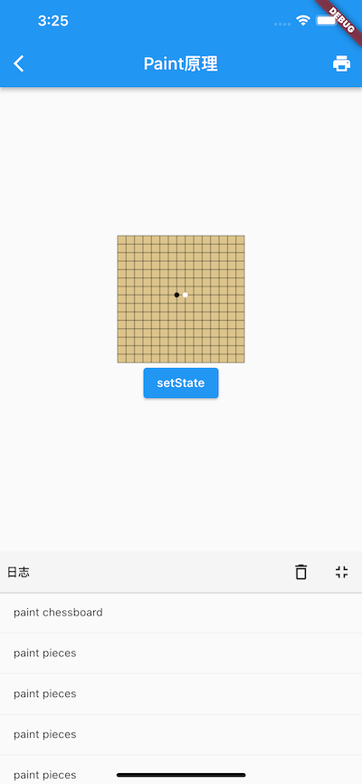
同时日志面板输出了很多"paint pieces"，并没有"paint chessboard"，可见棋盘缓存生效了。
好的，貌似我们预期的功能已经实现了，但是别高兴太早，上面的代码还有一个内存泄露的坑，我们在下面LayerHandle 部分介绍。
14.7.2 LayerHandle
上面 RenderChess 实现中，我们将棋盘绘制信息缓存到了 layer 中，因为 layer 中保存的绘制产物是需要调用dispose方法释放的，如果ChessWidget销毁时没有释放则会发生内存泄露，所以们需要在组件销毁时，手动释放一下，给RenderChess中添加如下代码：
@override
void dispose() {
_layer.dispose();
super.dispose();
}
上面的场景比较简单，实际上，在Flutter中一个layer可能会反复被添加到多个容器类Layer中，或从容器中移除，这样一来有些时候我们可能会搞不清楚一个layer是否还被使用，为了解决这个问题，Flutter中定义了一个LayerHandle 类来专门管理layer，内部是通过引用计数的方式来跟踪layer是否还有使用者，一旦没有使用者，会自动调用layer.dispose来释放资源。为了符合Flutter规范，强烈建议读者在需要使用layer的时候通过LayerHandle来管理它。现在我们来修改一下上面的代码，RenderChess中定义一个 layerHandle，然后将_layer 全部替换为 layerHandle.layer：
// 定义一个新的 layerHandle
final layerHandle = LayerHandle<PictureLayer>();
_checkIfChessboardNeedsUpdate(Rect rect) {
...
layerHandle.layer = PictureLayer(Rect.zero)..picture = recorder.endRecording();
}
@override
void paint(PaintingContext context, Offset offset) {
...
//将缓存棋盘的layer添加到context中
context.addLayer(layerHandle.layer!);
...
}
@override
void dispose() {
//layer通过引用计数的方式来跟踪自身是否还被layerHandle持有，
//如果不被持有则会释放资源，所以我们必须手动置空，该set操作会
//解除layerHandle对layer的持有。
layerHandle.layer = null;
super.dispose();
}
OK，这样就很好了！不过先别急着庆祝，现在我们再来回想一下上一节介绍的内容，每一个 RenderObject 都有一个layer 属性，我们能否直接使用它来保存棋盘layer呢？下面我们看看 RenderObject 中关于 layer 的定义：
@protected
set layer(ContainerLayer? newLayer) {
_layerHandle.layer = newLayer;
}
final LayerHandle<ContainerLayer> _layerHandle = LayerHandle<ContainerLayer>();
可以发现，我们RenderObject 中已经定义了一个 _layerHandle了，它会去管理 layer；同时 layer 是一个setter，会自动将新 layer 赋值到 _layerHandle 上，那么我们是否可以在 RenderChess 中直接使用父类定义好的 _layerHandle，这样的话我们就无需再自定义一个 layerHandle 了。读者可以先结合上一节的内容思考一分钟，然后我们再往下看。
答案是：取决于当前节点的 isRepaintBoundary 属性是否为 true（即当前节点是否为绘制边界节点） ，如果为 true 则不可以，如果不为 true，则可以。上一节中讲过，Flutter在执行 flushPaint 重绘时遇到绘制边界节点：
- 先检查其
layer是否为空，如果不为空，则会先清空该layer的孩子节点，然后会使用该layer创建一个 PaintingContext，传递给 paint 方法。 - 如果其
layer为空，会创建一个 OffsetLayer 给它。
如果我们要将棋盘layer保存到预定义的 layer变量中的话，得先创建一个ContainerLayer，然后将绘制棋盘的PictureLayer作为子节点添加到新创建的ContainerLayer中，然后赋值给 layer变量。这样一来：
- 如果我们设置 RenderChess 的 isRepaintBoundary 为
true，那么在每次重绘时，flutter 框架都会将 layer 子节点清空，这样的话，我们的棋盘Picturelayer就会被移除，接下来就会触发异常。 - 如果 RenderChess 的 isRepaintBoundary 为
false（默认值），则在重绘过程中 flutter 框架不会使用到layer属性，这中情况没有问题。
虽然，本例中 RenderChess 的 isRepaintBoundary 为 false，直接使用 layer是可以的，但我不建议这么做，原因有二：
- RenderObject 中的 layer 字段在 Flutter 框架中是专门为绘制流程而设计的，按照职责分离原则，我们也不应该去蹭它。即使现在能蹭成功，万一哪天Flutter的绘制流发生变化，比如也开始使用非绘制边界节点的layer字段，那么我们的代码将会出问题。
- 如果要使用Layer，我们也需要先创建一个ContainerLayer，既然如此，我们还不如直接创建一个LayerHandle，这更方便。
现在考虑最后一个问题，在上面示例中，我们点击按钮后，虽然棋盘不会重绘了，但棋子还是会重绘，这并不合理，我们希望棋盘区域不受外界干扰，只有新的落子行为时（点击在棋盘区域）时再重绘棋子。相信看到着，解决方案就呼之欲出了，我们有两种选择：
- RenderChess 的 isRepaintBoundary 返回 true；将当前节点变为一个绘制边界，这样 ChessWidget 就会和按钮分别在不同的 layer 上绘制，也就不会相互影响。
- 在使用 ChessWidget 时，给它套一个RepaintBoundary组件，和1的原理差不多的，只不过这种方式是将ChessWidget的父节点（RepaintBoundary）变为了绘制边界（而不是自身），这样也会创建一个新的 layer 来隔离按钮的绘制。
具体应该选哪种应该根据情况而定，第二种方案会更灵活，但第一种方案的实际效果往往会比较好，因为如果我们封装的复杂自绘控件中没有设置 isRepaintBoundary 为 true，我们很难保证使用者在使用时会给我们的空间添加RepaintBoundary，所以这种细节还是对使用者屏蔽掉会比较好。
14.8 绘制（四）Compositing
本节我们来介绍一下 flushCompositingBits()。现在，我们再来回顾一下Flutter的渲染管线：
void drawFrame(){
pipelineOwner.flushLayout();
pipelineOwner.flushCompositingBits();
pipelineOwner.flushPaint();
renderView.compositeFrame()
...//省略
}
其中只有 flushCompositingBits() 还没有介绍过，这是因为要理解flushCompositingBits()，就必须的了解Layer是什么，以及 Layer 树构建的过程。为了更容易理解它，我们先看一个demo。
14.8.1 CustomRotatedBox
我们实现一个CustomRotatedBox，它的功能是将其子元素放倒（顺时针旋转 90 度），要实现个效果我们可以直接使用 canvas 的变换功能，下面是核心代码：
class CustomRotatedBox extends SingleChildRenderObjectWidget {
CustomRotatedBox({Key? key, Widget? child}) : super(key: key, child: child);
@override
RenderObject createRenderObject(BuildContext context) {
return CustomRenderRotatedBox();
}
}
class CustomRenderRotatedBox extends RenderBox
with RenderObjectWithChildMixin<RenderBox> {
@override
void performLayout() {
_paintTransform = null;
if (child != null) {
child!.layout(constraints, parentUsesSize: true);
size = child!.size;
//根据子组件大小计算出旋转矩阵
_paintTransform = Matrix4.identity()
..translate(size.width / 2.0, size.height / 2.0)
..rotateZ(math.pi / 2) // 旋转90度
..translate(-child!.size.width / 2.0, -child!.size.height / 2.0);
} else {
size = constraints.smallest;
}
}
@override
void paint(PaintingContext context, Offset offset) {
if(child!=null){
// 根据偏移，需要调整一下旋转矩阵
final Matrix4 transform =
Matrix4.translationValues(offset.dx, offset.dy, 0.0)
..multiply(_paintTransform!)
..translate(-offset.dx, -offset.dy);
_paint(context, offset, transform);
} else {
//...
}
}
void _paint(PaintingContext context,Offset offset,Matrix4 transform ){
// 为了不干扰其他和自己在同一个layer上绘制的节点，所以需要先调用save然后在子元素绘制完后
// 再调用restore显示，关于save/restore有兴趣可以查看Canvas API doc
context.canvas
..save()
..transform(transform.storage);
context.paintChild(child!, offset);
context.canvas.restore();
}
... //省略无关代码
}
下面我们写个demo测试一下：
class CustomRotatedBoxTest extends StatelessWidget {
const CustomRotatedBoxTest({Key? key}) : super(key: key);
@override
Widget build(BuildContext context) {
return Center(
child: CustomRotatedBox(
child: Text(
"A",
textScaleFactor: 5,
),
),
);
}
}
运行效果如图14-17，A被成功放倒了：

现在我们给 CustomRotatedBox 添加一个 RepaintBoundary 再试试：
@override
Widget build(BuildContext context) {
return Center(
child: CustomRotatedBox(
child: RepaintBoundary( // 添加一个 RepaintBoundary
child: Text(
"A",
textScaleFactor: 5,
),
),
),
);
}
运行后如图14-18。咦，A怎么又站起来了！

结合图说明！
我们来分析一下原因：根据上一节的知识，我们可以很容易画出添加 RepaintBoundary 前和后的 Layer 树结构，如图14-19：
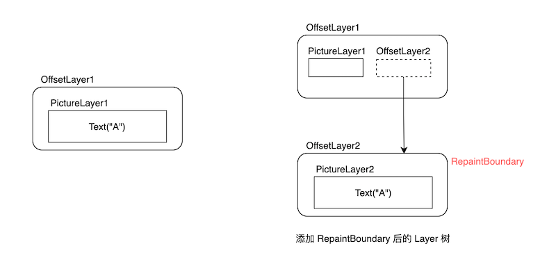
添加 RepaintBoundary 后，CustomRotatedBox 中的持有的还是 OffsetLayer1 ：
void _paint(PaintingContext context,Offset offset,Matrix4 transform ){
context.canvas // 该 canvas 对应的是 PictureLayer1
..save()
..transform(transform.storage);
// 子节点是绘制边界节点，会在新的 OffsetLayer2中的 PictureLayer2 上绘制
context.paintChild(child!, offset);
context.canvas.restore();
}
... //省略无关代码
}
很显然，CustomRotatedBox 中进行旋转变换的 canvas 对应的是 PictureLayer1，而 Text("A") 的绘制是使用的PictureLayer2 对应的 canvas ，他们属于不同的 Layer。可以发现父子的 PictureLayer "分离了"，所以CustomRotatedBox 也就不会对 Text("A") 起作用。那么如何解决这个问题的思路呢？
我们在前面的小节介绍过，有很多容器类组件都附带变换效果，拥有旋转变换的容器类Layer是 TransformLayer，那么我们就可以在 CustomRotatedBox 中绘制子节点之前：
- 创建一个TransformLayer（记为 TransformLayer1） 添加到 Layer树中，接着创建一个新的 PaintingContext 和 TransformLayer1绑定。
- 子节点通过这个新的 PaintingContext 去绘制。
完成上述操作之后，后代节点绘制所在的 PictureLayer 都会是 TransformLayer 的子节点，因此我们可以通过 TransformLayer 对所有子节点整体做变换。图14-20是添加是 TransformLayer1前、后的 Layer 树结构。

这其实就是一个重新 Layer 合成（layer compositing） 的过程：创建一个新的 ContainerLayer，然后将该ContainerLayer 传递给子节点，这样后代节点的Layer必然属于ContainerLayer ，那么给这个 ContainerLayer 做变换就会对其全部的子孙节点生效。因为 “Layer 合成” 在不同的语境会有不同的指代，为了便于描述，本节中 “layer 合成” 或 “合成 layer” 就特指上述过程。
“Layer 合成” 在不同的语境会有不同的指代，比如 skia 最终渲染时也是将一个个 layer 渲染出来，这个过程也可以认为是多个 layer 上的绘制信息合成为最终的位图信息；另外 canvas 中也有 layer 的概念（canvas.save 方法生成新的layer），对应的将所有layer 绘制结果最后叠加在一起的过程也可以成为 layer 合成。
下面我们看看具体代码实现。由于 Layer 的组合是一个标准的过程（唯一的不同是使用哪种ContainerLayer来作为父容器），PantingContext 中提供了一个 pushLayer 方法来执行组合过程，我们看看其实现源码：
void pushLayer(ContainerLayer childLayer, PaintingContextCallback painter, Offset offset, { Rect? childPaintBounds }) {
if (childLayer.hasChildren) {
childLayer.removeAllChildren();
}
//下面两行是向Layer树中添加新Layer的标准操作，在之前小节中详细介绍过，忘记的话可以去查阅。
stopRecordingIfNeeded();
appendLayer(childLayer);
//通过新layer创建一个新的childContext对象
final PaintingContext childContext =
createChildContext(childLayer, childPaintBounds ?? estimatedBounds);
//painter是绘制子节点的回调，我们需要将新的childContext对象传给它
painter(childContext, offset);
//子节点绘制完成后获取绘制产物，将其保存到PictureLayer.picture中
childContext.stopRecordingIfNeeded();
}
那么，我们只需要创建一个 TransformLayer 然后指定我们需要的旋转变换，然后直接调用 pushLayer 可以：
// 创建一个持有 TransformLayer 的 handle.
final LayerHandle<TransformLayer> _transformLayer = LayerHandle<TransformLayer>();
void _paintWithNewLayer(PaintingContext context, Offset offset, Matrix4 transform) {
//创建一个 TransformLayer，保存在handle中
_transformLayer.layer = _transformLayer.layer ?? TransformLayer();
_transformLayer.layer!.transform = transform;
context.pushLayer(
_transformLayer.layer!,
_paintChild, // 子节点绘制回调；添加完layer后，子节点会在新的layer上绘制
offset,
childPaintBounds: MatrixUtils.inverseTransformRect(
transform,
offset & size,
),
);
}
// 子节点绘制回调
void _paintChild(PaintingContext context, Offset offset) {
context.paintChild(child!, offset);
}
然后我们需要在 paint 方法中判断一下子节点是否是绘制边界节点，如果是则需要走layer组合，如果不是则需要 走 layer 合成：
@override
void paint(PaintingContext context, Offset offset) {
if (child != null) {
final Matrix4 transform =
Matrix4.translationValues(offset.dx, offset.dy, 0.0)
..multiply(_paintTransform!)
..translate(-offset.dx, -offset.dy);
if (child!.isRepaintBoundary) { // 添加判断
_paintWithNewLayer(context, offset, transform);
} else {
_paint(context, offset, transform);
}
} else {
_transformLayer.layer = null;
}
}
为了让代码看起看更清晰，我们将child不为空时的绘制逻辑逻辑封装一个 pushTransform 函数里：
TransformLayer? pushTransform(
PaintingContext context,
bool needsCompositing,
Offset offset,
Matrix4 transform,
PaintingContextCallback painter, {
TransformLayer? oldLayer,
}) {
final Matrix4 effectiveTransform =
Matrix4.translationValues(offset.dx, offset.dy, 0.0)
..multiply(transform)
..translate(-offset.dx, -offset.dy);
if (needsCompositing) {
final TransformLayer layer = oldLayer ?? TransformLayer();
layer.transform = effectiveTransform;
context.pushLayer(
layer,
painter,
offset,
childPaintBounds: MatrixUtils.inverseTransformRect(
effectiveTransform,
context.estimatedBounds,
),
);
return layer;
} else {
context.canvas
..save()
..transform(effectiveTransform.storage);
painter(context, offset);
context.canvas.restore();
return null;
}
}
然后修改一下 paint 实现，直接调用 pushTransform 方法即可：
@override
void paint(PaintingContext context, Offset offset) {
if (child != null) {
pushTransform(
context,
child!.isRepaintBoundary,
offset,
_paintTransform!,
_paintChild,
oldLayer: _transformLayer.layer,
);
} else {
_transformLayer.layer = null;
}
}
是不是清晰多了，现在我们重新运行一下示例，效果和图14-17一样，A被成功放倒了！
需要说明的是，其实 PaintingContext 已经帮我们封装好了 pushTransform 方法，我们可以直接使用它：
@override
void paint(PaintingContext context, Offset offset) {
if (child != null) {
context.pushTransform(
child!.isRepaintBoundary,
offset,
_paintTransform!,
_paintChild,
oldLayer: _transformLayer.layer,
);
} else {
_transformLayer.layer = null;
}
}
实际上，PaintingContext 针对常见的拥有变换功能的容器类Layer的组合都封装好了相应的方法，同时Flutter中已经预定了拥有相应变换功能的组件，下面是一个对应表：
| Layer的名称 | PaintingContext对应的方法 | Widget |
|---|---|---|
| ClipPathLayer | pushClipPath | ClipPath |
| OpacityLayer | pushOpacity | Opacity |
| ClipRRectLayer | pushClipRRect | ClipRRect |
| ClipRectLayer | pushClipRect | ClipRect |
| TransformLayer | pushTransform | RotatedBox、Transform |
14.8.2 什么时候需要合成 Layer ？
1. 合成 Layer 的原则
通过上面的例子我们知道 CustomRotatedBox 的直接子节点是绘制边界节点时 CustomRotatedBox 中就需要合成 layer。实际上这只是一种特例，还有一些其他情况也需要 CustomRotatedBox 进行 Layer 合成，那什么时候需要 Layer 合成有没有一个一般性的普适原则？答案是：有！ 我们思考一下 CustomRotatedBox 中需要 Layer 合成的根本原因是什么？如果 CustomRotatedBox 的所有后代节点都共享的是同一个PictureLayer，但是，一旦有后代节点创建了新的PictureLayer，则绘制就会脱离了之前PictureLayer，因为不同的PictureLayer上的绘制是相互隔离的，是不能相互影响，所以为了使变换对所有后代节点对应的 PictureLayer 都生效，则我们就需要将所有后代节点的添加到同一个 ContainerLayer 中，所以就需要在 CustomRotatedBox 中先进行 Layer 合成。
综上，一个普适的原则就呼之欲出了：当后代节点会向 layer 树中添加新的绘制类Layer时，则父级的变换类组件中就需要合成 Layer。下面我们验证一下：
现在我们修改一下上面的示例，给 RepaintBoundary 添加一个 Center 父组件：
@override
Widget build(BuildContext context) {
return Center(
child: CustomRotatedBox(
child: Center( // 新添加
child: RepaintBoundary(
child: Text(
"A",
textScaleFactor: 5,
),
),
),
),
);
}
因为 CustomRotatedBox 中只判断了其直接子节点的child!.isRepaintBoundary 为 true时，才会进行 layer 合成，而现在它的直接子节点是Center，所以该判断会是false，则不会进行 layer 合成。但是根据我们上面得出的结论，RepaintBoundary 作为CustomRotatedBox 的后代节点且会向 layer 树中添加新 layer 时就需要进行 layer合成，而本例中是应该合成layer但实际上却没有合成，所以预期是不能将 "A" 放倒的，运行后发现效果和之前的图14-18相同：
果然 ”A“ 并没有被放倒！看来我们的 CustomRotatedBox 还是需要继续修改。解决这个问题并不难，我们在判断是否需要进行 Layer 合成时，要去遍历整个子树，看看否存在绘制边界节点，如果是则合成，反之则否。为此，我们新定义一个在子树上查找是否存在绘制边界节点的 needCompositing() 方法：
//子树中递归查找是否存在绘制边界
needCompositing() {
bool result = false;
_visit(RenderObject child) {
if (child.isRepaintBoundary) {
result = true;
return ;
} else {
//递归查找
child.visitChildren(_visit);
}
}
//遍历子节点
visitChildren(_visit);
return result;
}
然后需要修改一下 paint 实现：
@override
void paint(PaintingContext context, Offset offset) {
if (child != null) {
context.pushTransform(
needCompositing(), //子树是否存在绘制边界节点
offset,
_paintTransform!,
_paintChild,
oldLayer: _transformLayer.layer,
);
} else {
_transformLayer.layer = null;
}
}
现在，我们再来运行一下demo，运行后效果和图14-17相同：
又成功放倒了！但还有问题，我们继续往下看。
2. alwaysNeedsCompositing
我们考虑一下这种情况：如果 CustomRotatedBox 的后代节点中没有绘制边界节点，但是有后代节点向 layer 树中添加了新的 layer。这种情况下，按照我们之前得出的结论 CustomRotatedBox 中也是需要进行 layer 合成的，但 CustomRotatedBox 实际上并没有。问题知道了，但是这个问题却不好解决，原因是我们在 CustomRotatedBox 中遍历后代节点时，是无法知道非绘制边界节点是否往 layer树中添加了新的 layer。怎么办呢？Flutter是通过约定来解决这个问题的：
-
RenderObject 中定义了一个布尔类型
alwaysNeedsCompositing属性。 -
约定：自定义组件中，如果组件
isRepaintBoundary为false时，在绘制时要会向 layer 树中添加新的 layer的话，要将alwaysNeedsCompositing置为true。
开发者在自定义组件时应该遵守这个规范。根据此规范，CustomRotatedBox 中我们在子树中递归查找时的判断条件就可以改为：
child.isRepaintBoundary || child.alwaysNeedsCompositing
最终 我们的needCompositing 实现如下：
//子树中递归查找是否存在绘制边界
needCompositing() {
bool result = false;
_visit(RenderObject child) {
// 修改判断条件改为
if (child.isRepaintBoundary || child.alwaysNeedsCompositing) {
result = true;
return ;
} else {
child.visitChildren(_visit);
}
}
visitChildren(_visit);
return result;
}
注意：这要求非绘制节点组件在向 layer 树中添加 layer 时必须的让自身的
alwaysNeedsCompositing值为ture.
下面我们看一下 flutter 中 Opacity 组件的实现。
3. Opacity 解析
Opacity 可以对子树进行透明度控制，这个效果通过 canvas 是很难实现的，所以 flutter 中直接使用了 OffsetLayer 合成的方式来实现：
class RenderOpacity extends RenderProxyBox {
// 本组件是非绘制边界节点，但会在部分透明的情况下向layer树中添加新的Layer，所以部分透明时要返回 true
@override
bool get alwaysNeedsCompositing => child != null && (_alpha != 0 && _alpha != 255);
@override
void paint(PaintingContext context, Offset offset) {
if (child != null) {
if (_alpha == 0) {
// 完全透明，则没必要再绘制子节点了
layer = null;
return;
}
if (_alpha == 255) {
// 完全不透明，则不需要变换处理，直接绘制子节点即可
layer = null;
context.paintChild(child!, offset);
return;
}
// 部分透明，需要通过OffsetLayer来处理，会向layer树中添加新 layer
layer = context.pushOpacity(offset, _alpha, super.paint, oldLayer: layer as OpacityLayer?);
}
}
}
4. 优化
注意，上面我们通过 CustomRotatedBox 演示了变换类组件的核心原理，不过还有一些优化的地方，比如：
- 变换类组件中，遍历子树以确定是否需要 layer 合成是变换类组件的通用逻辑，不需要在每个组件里都实现一遍。
- 不是每一次重绘都需要去遍历子树，比如可以在初始化时遍历一次，然后将结果缓存，如果后续有变化，再重新遍历更新即可，此时直接使用缓存的结果。
Flutter 也考虑到了这个问题，于是便有了flushCompositingBits 方法，我们下面来正式介绍它。
14.8.3 flushCompositingBits
每一个节点（RenderObject中）都有一个_needsCompositing 字段，该字段用于缓存当前节点在绘制子节点时是否需要合成 layer。flushCompositingBits 的功能就是在节点树初始化和子树中合成信息发生变化时来重新遍历节点树，更新每一个节点的_needsCompositing 值。可以发现：
- 递归遍历子树的逻辑抽到了 flushCompositingBits 中，不需要组件单独实现。
- 不需要每一次重绘都遍历子树了，只需要在初始化和发生变化时重新遍历。
完美的解决了我们之前提出的问题，下面我们看一下具体实现：
void flushCompositingBits() {
// 对需要更新合成信息的节点按照节点在节点树中的深度排序
_nodesNeedingCompositingBitsUpdate.sort((a,b) => a.depth - b.depth);
for (final RenderObject node in _nodesNeedingCompositingBitsUpdate) {
if (node._needsCompositingBitsUpdate && node.owner == this)
node._updateCompositingBits(); //更新合成信息
}
_nodesNeedingCompositingBitsUpdate.clear();
}
RenderObject 的 _updateCompositingBits 方法的功能就是递归遍历子树确定如果每一个节点的_needsCompositing 值：
void _updateCompositingBits() {
if (!_needsCompositingBitsUpdate)
return;
final bool oldNeedsCompositing = _needsCompositing;
_needsCompositing = false;
// 递归遍历查找子树, 如果有孩子节点 needsCompositing 为true，则更新 _needsCompositing 值
visitChildren((RenderObject child) {
child._updateCompositingBits(); //递归执行
if (child.needsCompositing)
_needsCompositing = true;
});
// 这行我们上面讲过
if (isRepaintBoundary || alwaysNeedsCompositing)
_needsCompositing = true;
if (oldNeedsCompositing != _needsCompositing)
markNeedsPaint();
_needsCompositingBitsUpdate = false;
}
执行完毕后，每一个节点的 _needsCompositing 就确定了，我们在绘制时只需要判断一下当前的 needsCompositing（一个getter，会直接返回 _needsCompositing ） 就能知道子树是否存在剥离layer了。这样的话，我们可以再优化一下 CustomRenderRotatedBox 的实现，最终的实现如下：
class CustomRenderRotatedBox extends RenderBox
with RenderObjectWithChildMixin<RenderBox> {
Matrix4? _paintTransform;
@override
void performLayout() {
_paintTransform = null;
if (child != null) {
child!.layout(constraints, parentUsesSize: true);
size = child!.size;
//根据子组件大小计算出旋转矩阵
_paintTransform = Matrix4.identity()
..translate(size.width / 2.0, size.height / 2.0)
..rotateZ(math.pi / 2)
..translate(-child!.size.width / 2.0, -child!.size.height / 2.0);
} else {
size = constraints.smallest;
}
}
final LayerHandle<TransformLayer> _transformLayer =
LayerHandle<TransformLayer>();
void _paintChild(PaintingContext context, Offset offset) {
print("paint child");
context.paintChild(child!, offset);
}
@override
void paint(PaintingContext context, Offset offset) {
if (child != null) {
_transformLayer.layer = context.pushTransform(
needsCompositing, // pipelineOwner.flushCompositingBits(); 执行后这个值就能确定
offset,
_paintTransform!,
_paintChild,
oldLayer: _transformLayer.layer,
);
} else {
_transformLayer.layer = null;
}
}
@override
void dispose() {
_transformLayer.layer = null;
super.dispose();
}
@override
void applyPaintTransform(RenderBox child, Matrix4 transform) {
if (_paintTransform != null) transform.multiply(_paintTransform!);
super.applyPaintTransform(child, transform);
}
}
是不是简洁清晰了很多！
再论 flushCompositingBits
现在，我们思考一下引入 flushCompositingBits 的根本原因是什么？假如我们在变换类容器中始终采用合成 layer 的方式来对子树应用变换效果，也就是说不再使用 canvas 进行变换，这样的话 flushCompositingBits 也就没必要存在了，为什么一定要 flushCompositingBits 呢？根本原因就是：如果在变换类组件中一刀切的使用合成 layer 方式的话，每遇到一个变换类组件则至少会再创建一个 layer，这样的话，最终 layer 树上的layer数量就会变多。我们之前说过对子树应用的变换效果既能通过 Canvas 实现也能通过容器类Layer实现时，建议使用Canvas 。这是因为每新建一个 layer 都会有额外的开销，所以我们只应该在无法通过 Canvas 来实现子树变化效果时再通过Layer 合成的方式来实现。综上，我们可以发现引入 flushCompositingBits 的根本原因其实是为了减少 layer的数量。
另外，flushCompositingBits 的执行过程只是做标记，并没有进行层的合成，真正的合成是在绘制时（组件的 paint 方法中）。
14.8.4 总结
-
只有组件树中有变换类容器时，才有可能需要重新合成 layer；如果没有变换类组件，则不需要。
-
当变换类容器的后代节点会向 layer 树中添加新的绘制类 layer 时，则变换类组件中就需要合成 layer。
-
引入 flushCompositingBits 的根本原因是为了减少 layer 的数量。
本章目录
15.1 Github客户端示例
本章新建一个Flutter工程，实现一个简单的Github客户端。这个实例的主要目标有两个：
- 带领读者了解如何使用Flutter来开发一个完整APP，了解Flutter应用开发流程及工程结构等。
- 对前面章节所学内容的一个应用及总结。
需要注意的是，由于Github本身功能非常多，我们的焦点并不是去实现Github的所有业务功能。因此，我们只需要实现一个APP的骨架，能达到上面这两点即可。下面对我们要实现的功能如下：
- 实现Github账号登录、退出登录功能
- 登录后可以查看自己的项目主页
- 支持换肤
- 支持多语言
- 登录状态可以持久化；
要实现上面这些功能会涉及到如下技术点：
- 网络请求；需要请求Github API。
- Json转Dart Model类；
- 全局状态管理；语言、主题、登录态等都需要全局共享。
- 持久化存储；保存登录信息，用户信息等。
- 支持国际化、Intl包的使用
现在，目标已经确定，在接下来章节中，我们将分模块一步一步实现上述功能。
15.2 Flutter APP代码结构
我们先来创建一个全新的Flutter工程，命名为"github_client_app"；创建新工程的步骤视读者使用的编辑器而定，都比较简单，在此不再赘述。创建完成后，工程结构如下：
github_client_app
├── android
├── ios
├── lib
└── test
由于我们需要使用外部图片和Icon资源，所以我们在项目根目录下分别创建“imgs”和“fonts”文件夹，前者用于保存图片，后者用于保存Icon文件。关于图片和Icon，读者可以参考第三章中相应的内容。
由于在网络数据传输和持久化时，我们需要通过Json来传输、保存数据；但是在应用开发时我们又需要将Json转成Dart Model类，现在我们使用在第十一章中“Json转Model”小节中介绍的方案，所以，我们需要在根目录下再创建一个用于保存Json文件的“jsons”文件夹。
多语言支持我们使用第十三章“国际化”中介绍的方案，所以还需要在根目录下创建一个“l10n”文件夹，用于保存各国语言对应的arb文件。
现在工程目录变为：
github_client_app
├── android
├── fonts
├── l10n-arb
├── imgs
├── ios
├── jsons
├── lib
└── test
由于我们的Dart代码都在“lib”文件夹下，笔者根据技术选型和经验在lib文件下创建了如下目录：
lib
├── common
├── l10n
├── models
├── states
├── routes
└── widgets
| 文件夹 | 作用 |
|---|---|
| common | 一些工具类，如通用方法类、网络接口类、保存全局变量的静态类等 |
| l10n | 国际化相关的类都在此目录下 |
| models | Json文件对应的Dart Model类会在此目录下 |
| states | 保存APP中需要跨组件共享的状态类 |
| routes | 存放所有路由页面类 |
| widgets | APP内封装的一些Widget组件都在该目录下 |
注意，使用不同的框架或技术选型会对代码有不同的组织方式，因此，本节介绍的代码组织结构并不是固定或者“最佳”的，在实战中，读者可以自己根据情况调整源码结构。但是无论采取何种源码组织结构，清晰和解耦都是一个通用原则，我们应该让自己的代码结构清晰，以便交流和维护。
15.3 Model类定义
本节我们先梳理一下APP中将用到的数据，然后生成相应的Dart Model类。Json文件转Dart Model的方案采用前面介绍过的 json_model 包方案，因此在生成Model类之前，会修改部分json字段，比如添加“?”表示该字段可空，关于 json_model 更多信息请参考其文档。
15.3.1 Github账号信息
登录Github后，我们需要获取当前登录者的Github账号信息，Github API接口返回Json结构如下：
{
"login": "octocat", //用户登录名
"avatar_url": "https://github.com/images/error/octocat_happy.gif", //用户头像地址
"type": "User", //用户类型，可能是组织
"name?": "monalisa octocat", //用户名字
"company?": "GitHub", //公司
"blog?": "https://github.com/blog", //博客地址
"location?": "San Francisco", // 用户所处地理位置
"email?": "octocat@github.com", // 邮箱
"hireable?": false,
"bio?": "There once was...", // 用户简介
"public_repos": 2, // 公开项目数
"followers": 20, //关注该用户的人数
"following": 0, // 该用户关注的人数
"created_at": "2008-01-14T04:33:35Z", // 账号创建时间
"updated_at": "2008-01-14T04:33:35Z", // 账号信息更新时间
"total_private_repos": 100, //该用户总的私有项目数(包括参与的其他组织的私有项目)
"owned_private_repos": 100 //该用户自己的私有项目数
... //省略其他字段
}
我们在“jsons”目录下创建一个“user.json”文件保存上述信息。
15.3.2 API缓存策略信息
由于Github服务器在国内访问速度较慢，我们对Github API应用一些简单的缓存策略。我们在“jsons”目录下创建一个“cacheConfig.json”文件缓存策略信息，定义如下：
{
"enable":true, // 是否启用缓存
"maxAge":1000, // 缓存的最长时间，单位（秒）
"maxCount":100 // 最大缓存数
}
15.3.3 用户信息
用户信息(Profile)应包括如下信息：
- Github账号信息；由于我们的APP可以切换账号登录，且登录后再次打开则不需要登录，所以我们需要对用户账号信息和登录状态进行持久化。
- 应用使用配置信息；每一个用户都应有自己的APP配置信息，如主题、语言、以及数据缓存策略等。
- 用户注销登录后，为了便于用户在退出APP前再次登录，我们需要记住上次登录的用户名。
需要注意的是，目前Github有三种登录方式，分别是账号密码登录、oauth授权登录、二次认证登录；这三种登录方式的安全性依次加强，但是在本示例中，为了简单起见，我们使用账号密码登录，因此我们需要保存用户的密码。
注意：在这里需要提醒读者，在登录场景中，保护用户账号安全是一个非常重要且永恒的话题，在实际开发中应严格杜绝直接明文存储用户账密的行为。
我们在“jsons”目录下创建一个“profile.json”文件，结构如下：
{
"user?":"$user", //Github账号信息，结构见"user.json"
"token?":"", // 登录用户的token(oauth)或密码
"theme":0, //主题索引
"cache?":"$cacheConfig", // 缓存策略信息，结构见"cacheConfig.json"
"lastLogin?":"", //最近一次的注销登录的用户名
"locale?":"" // APP语言信息
}
15.3.3 项目信息
由于APP主页要显示其所有项目信息，我们在“jsons”目录下创建一个“repo.json”文件保存项目信息。通过参考Github 获取项目信息的API文档，定义出最终的“repo.json”文件结构，如下：
{
"id": 1296269,
"name": "Hello-World", //项目名称
"full_name": "octocat/Hello-World", //项目完整名称
"owner": "$user", // 项目拥有者，结构见"user.json"
"parent?":"$repo", // 如果是fork的项目，则此字段表示fork的父项目信息
"private": false, // 是否私有项目
"description": "This your first repo!", //项目描述
"fork": false, // 该项目是否为fork的项目
"language?": "JavaScript",//该项目的主要编程语言
"forks_count": 9, // fork了该项目的数量
"stargazers_count": 80, //该项目的star数量
"size": 108, // 项目占用的存储大小
"default_branch": "master", //项目的默认分支
"open_issues_count": 2, //该项目当前打开的issue数量
"pushed_at": "2011-01-26T19:06:43Z",
"created_at": "2011-01-26T19:01:12Z",
"updated_at": "2011-01-26T19:14:43Z",
"subscribers_count?": 42, //订阅（关注）该项目的人数
"license?": { // 该项目的开源许可证
"key": "mit",
"name": "MIT License",
"spdx_id": "MIT",
"url": "https://api.github.com/licenses/mit",
"node_id": "MDc6TGljZW5zZW1pdA=="
}
...//省略其他字段
}
15.3.4 生成Dart Model类
现在，我们需要的Json数据已经定义完毕，现在只需要运行json_model package提供的命令来通过json文件生成相应的Dart类：
flutter packages pub run json_model
命令执行成功后，可以看到lib/models文件夹下会生成相应的Dart Model类：
├── models
│ ├── cacheConfig.dart
│ ├── cacheConfig.g.dart
│ ├── index.dart
│ ├── profile.dart
│ ├── profile.g.dart
│ ├── repo.dart
│ ├── repo.g.dart
│ ├── user.dart
│ └── user.g.dart
15.3.5 数据持久化
我们使用shared_preferences包来对登录用户的Profile信息进行持久化。shared_preferences是一个Flutter插件，它通过Android和iOS平台提供的机制来实现数据持久化。由于shared_preferences的使用非常简单，读者可以自行查看其文档，在此不再赘述。
15.4 全局变量及共享状态
应用程序中通常会包含一些贯穿APP生命周期的变量信息，这些信息在APP大多数地方可能都会被用到，比如当前用户信息、Local信息等。在Flutter中我们把需要全局共享的信息分为两类：全局变量和共享状态。全局变量就是单纯指会贯穿整个APP生命周期的变量，用于单纯的保存一些信息，或者封装一些全局工具和方法的对象。而共享状态则是指哪些需要跨组件或跨路由共享的信息，这些信息通常也是全局变量，而共享状态和全局变量的不同在于前者发生改变时需要通知所有使用该状态的组件，而后者不需要。为此，我们将全局变量和共享状态分开单独管理。
15.4.1 全局变量-Global类
我们在“lib/common”目录下创建一个Global类，它主要管理APP的全局变量，定义如下：
// 提供五套可选主题色
const _themes = <MaterialColor>[
Colors.blue,
Colors.cyan,
Colors.teal,
Colors.green,
Colors.red,
];
class Global {
static late SharedPreferences _prefs;
static Profile profile = Profile();
// 网络缓存对象
static NetCache netCache = NetCache();
// 可选的主题列表
static List<MaterialColor> get themes => _themes;
// 是否为release版
static bool get isRelease => bool.fromEnvironment("dart.vm.product");
//初始化全局信息，会在APP启动时执行
static Future init() async {
WidgetsFlutterBinding.ensureInitialized();
_prefs = await SharedPreferences.getInstance();
var _profile = _prefs.getString("profile");
if (_profile != null) {
try {
profile = Profile.fromJson(jsonDecode(_profile));
} catch (e) {
print(e);
}
}else{
// 默认主题索引为0，代表蓝色
profile= Profile()..theme=0;
}
// 如果没有缓存策略，设置默认缓存策略
profile.cache = profile.cache ?? CacheConfig()
..enable = true
..maxAge = 3600
..maxCount = 100;
//初始化网络请求相关配置
Git.init();
}
// 持久化Profile信息
static saveProfile() =>
_prefs.setString("profile", jsonEncode(profile.toJson()));
}
Global类的各个字段的意义都有注释，在此不再赘述，需要注意的是init()需要在App启动时就要执行，所以应用的main方法如下：
void main() => Global.init().then((e) => runApp(MyApp()));
在此，一定要确保Global.init()方法不能抛出异常，否则 runApp(MyApp())根本执行不到。
15.4.2 共享状态
有了全局变量，我们还需要考虑如何跨组件共享状态。当然，如果我们将要共享的状态全部用全局变量替代也是可以的，但是这在Flutter开发中并不是一个好主意，因为组件的状态是和UI相关，而在状态改变时我们会期望依赖该状态的UI组件会自动更新，如果使用全局变量，那么我们必须得去手动处理状态变动通知、接收机制以及变量和组件依赖关系。因此，本实例中，我们使用前面介绍过的Provider包来实现跨组件状态共享，因此我们需要定义相关的Provider。在本实例中，需要共享的状态有登录用户信息、APP主题信息、APP语言信息。由于这些信息改变后都要立即通知其他依赖的该信息的Widget更新，所以我们应该使用ChangeNotifierProvider，另外，这些信息改变后都是需要更新Profile信息并进行持久化的。综上所述，我们可以定义一个ProfileChangeNotifier基类，然后让需要共享的Model继承自该类即可，ProfileChangeNotifier定义如下：
class ProfileChangeNotifier extends ChangeNotifier {
Profile get _profile => Global.profile;
@override
void notifyListeners() {
Global.saveProfile(); //保存Profile变更
super.notifyListeners(); //通知依赖的Widget更新
}
}
1. 用户状态
用户状态在登录状态发生变化时更新、通知其依赖项，我们定义如下：
class UserModel extends ProfileChangeNotifier {
User get user => _profile.user;
// APP是否登录(如果有用户信息，则证明登录过)
bool get isLogin => user != null;
//用户信息发生变化，更新用户信息并通知依赖它的子孙Widgets更新
set user(User user) {
if (user?.login != _profile.user?.login) {
_profile.lastLogin = _profile.user?.login;
_profile.user = user;
notifyListeners();
}
}
}
2. APP主题状态
主题状态在用户更换APP主题时更新、通知其依赖项，定义如下：
class ThemeModel extends ProfileChangeNotifier {
// 获取当前主题，如果为设置主题，则默认使用蓝色主题
ColorSwatch get theme => Global.themes
.firstWhere((e) => e.value == _profile.theme, orElse: () => Colors.blue);
// 主题改变后，通知其依赖项，新主题会立即生效
set theme(ColorSwatch color) {
if (color != theme) {
_profile.theme = color[500].value;
notifyListeners();
}
}
}
3. APP语言状态
当APP语言选为跟随系统（Auto）时，在系通语言改变时，APP语言会更新；当用户在APP中选定了具体语言时（美国英语或中文简体），则APP便会一直使用用户选定的语言，不会再随系统语言而变。语言状态类定义如下：
class LocaleModel extends ProfileChangeNotifier {
// 获取当前用户的APP语言配置Locale类，如果为null，则语言跟随系统语言
Locale getLocale() {
if (_profile.locale == null) return null;
var t = _profile.locale.split("_");
return Locale(t[0], t[1]);
}
// 获取当前Locale的字符串表示
String get locale => _profile.locale;
// 用户改变APP语言后，通知依赖项更新，新语言会立即生效
set locale(String locale) {
if (locale != _profile.locale) {
_profile.locale = locale;
notifyListeners();
}
}
}
15.5 网络请求封装
本节我们会基于前面介绍过的dio网络库，封装我们APP中用到的网络请求接口，并同时应用一个简单的网络请求缓存策略。下面我们先介绍一下网络请求缓存原理，然后再封装APP的业务请求接口。
15.5.1 网络接口缓存
由于在国内访问Github服务器速度较慢，所以我们应用一些简单的缓存策略：将请求的url作为key，对请求的返回值在一个指定时间段类进行缓存，另外设置一个最大缓存数，当超过最大缓存数后移除最早的一条缓存。但是也得提供一种针对特定接口或请求决定是否启用缓存的机制，这种机制可以指定哪些接口或那次请求不应用缓存，这种机制是很有必要的，比如登录接口就不应该缓存，又比如用户在下拉刷新时就不应该再应用缓存。在实现缓存之前我们先定义保存缓存信息的CacheObject类：
class CacheObject {
CacheObject(this.response)
: timeStamp = DateTime.now().millisecondsSinceEpoch;
Response response;
int timeStamp; // 缓存创建时间
@override
bool operator ==(other) {
return response.hashCode == other.hashCode;
}
//将请求uri作为缓存的key
@override
int get hashCode => response.realUri.hashCode;
}
接下来我们需要实现具体的缓存策略，由于我们使用的是dio package，所以我们可以直接通过拦截器来实现缓存策略：
import 'dart:collection';
import 'package:dio/dio.dart';
import '../index.dart';
class CacheObject {
CacheObject(this.response)
: timeStamp = DateTime.now().millisecondsSinceEpoch;
Response response;
int timeStamp;
@override
bool operator ==(other) {
return response.hashCode == other.hashCode;
}
@override
int get hashCode => response.realUri.hashCode;
}
class NetCache extends Interceptor {
// 为确保迭代器顺序和对象插入时间一致顺序一致，我们使用LinkedHashMap
var cache = LinkedHashMap<String, CacheObject>();
@override
onRequest(RequestOptions options, RequestInterceptorHandler handler) async {
if (!Global.profile.cache!.enable) {
return handler.next(options);
}
// refresh标记是否是"下拉刷新"
bool refresh = options.extra["refresh"] == true;
//如果是下拉刷新，先删除相关缓存
if (refresh) {
if (options.extra["list"] == true) {
//若是列表，则只要url中包含当前path的缓存全部删除（简单实现，并不精准）
cache.removeWhere((key, v) => key.contains(options.path));
} else {
// 如果不是列表，则只删除uri相同的缓存
delete(options.uri.toString());
}
return handler.next(options);
}
if (options.extra["noCache"] != true &&
options.method.toLowerCase() == 'get') {
String key = options.extra["cacheKey"] ?? options.uri.toString();
var ob = cache[key];
if (ob != null) {
//若缓存未过期，则返回缓存内容
if ((DateTime.now().millisecondsSinceEpoch - ob.timeStamp) / 1000 <
Global.profile.cache!.maxAge) {
return handler.resolve(ob.response);
} else {
//若已过期则删除缓存，继续向服务器请求
cache.remove(key);
}
}
}
handler.next(options);
}
@override
onResponse(Response response, ResponseInterceptorHandler handler) async {
// 如果启用缓存，将返回结果保存到缓存
if (Global.profile.cache!.enable) {
_saveCache(response);
}
handler.next(response);
}
_saveCache(Response object) {
RequestOptions options = object.requestOptions;
if (options.extra["noCache"] != true &&
options.method.toLowerCase() == "get") {
// 如果缓存数量超过最大数量限制，则先移除最早的一条记录
if (cache.length == Global.profile.cache!.maxCount) {
cache.remove(cache[cache.keys.first]);
}
String key = options.extra["cacheKey"] ?? options.uri.toString();
cache[key] = CacheObject(object);
}
}
void delete(String key) {
cache.remove(key);
}
}
关于代码的解释都在注释中了，在此需要说明的是dio包的option.extra是专门用于扩展请求参数的，我们通过定义了“refresh”和“noCache”两个参数实现了“针对特定接口或请求决定是否启用缓存的机制”，这两个参数含义如下：
| 参数名 | 类型 | 解释 |
|---|---|---|
| refresh | bool | 如果为true，则本次请求不使用缓存，但新的请求结果依然会被缓存 |
| noCache | bool | 本次请求禁用缓存，请求结果也不会被缓存。 |
15.5.2 封装网络请求
一个完整的APP，可能会涉及很多网络请求，为了便于管理、收敛请求入口，工程上最好的作法就是将所有网络请求放到同一个源码文件中。由于我们的接口都是请求的Github 开发平台提供的API，所以我们定义一个Git类，专门用于Github API接口调用。另外，在调试过程中，我们通常需要一些工具来查看网络请求、响应报文，使用网络代理工具来调试网络数据问题是主流方式。配置代理需要在应用中指定代理服务器的地址和端口，另外Github API是HTTPS协议，所以在配置完代理后还应该禁用证书校验，这些配置我们在Git类初始化时执行（init()方法）。下面是Git类的源码：
import 'dart:async';
import 'dart:convert';
import 'dart:io';
import 'package:dio/adapter.dart';
import 'package:dio/dio.dart';
import '../index.dart';
export 'package:dio/dio.dart' show DioError;
class Git {
// 在网络请求过程中可能会需要使用当前的context信息，比如在请求失败时
// 打开一个新路由，而打开新路由需要context信息。
Git([this.context]) {
_options = Options(extra: {"context": context});
}
BuildContext? context;
late Options _options;
static Dio dio = new Dio(BaseOptions(
baseUrl: 'https://api.github.com/',
headers: {
HttpHeaders.acceptHeader: "application/vnd.github.squirrel-girl-preview,"
"application/vnd.github.symmetra-preview+json",
},
));
static void init() {
// 添加缓存插件
dio.interceptors.add(Global.netCache);
// 设置用户token（可能为null，代表未登录）
dio.options.headers[HttpHeaders.authorizationHeader] = Global.profile.token;
// 在调试模式下需要抓包调试，所以我们使用代理，并禁用HTTPS证书校验
if (!Global.isRelease) {
(dio.httpClientAdapter as DefaultHttpClientAdapter).onHttpClientCreate =
(client) {
// client.findProxy = (uri) {
// return 'PROXY 192.168.50.154:8888';
// };
//代理工具会提供一个抓包的自签名证书，会通不过证书校验，所以我们禁用证书校验
client.badCertificateCallback =
(X509Certificate cert, String host, int port) => true;
};
}
}
// 登录接口，登录成功后返回用户信息
Future<User> login(String login, String pwd) async {
String basic = 'Basic ' + base64.encode(utf8.encode('$login:$pwd'));
var r = await dio.get(
"/user",
options: _options.copyWith(headers: {
HttpHeaders.authorizationHeader: basic
}, extra: {
"noCache": true, //本接口禁用缓存
}),
);
//登录成功后更新公共头（authorization），此后的所有请求都会带上用户身份信息
dio.options.headers[HttpHeaders.authorizationHeader] = basic;
//清空所有缓存
Global.netCache.cache.clear();
//更新profile中的token信息
Global.profile.token = basic;
return User.fromJson(r.data);
}
//获取用户项目列表
Future<List<Repo>> getRepos({
Map<String, dynamic>? queryParameters, //query参数，用于接收分页信息
refresh = false,
}) async {
if (refresh) {
// 列表下拉刷新，需要删除缓存（拦截器中会读取这些信息）
_options.extra!.addAll({"refresh": true, "list": true});
}
var r = await dio.get<List>(
"user/repos",
queryParameters: queryParameters,
options: _options,
);
return r.data!.map((e) => Repo.fromJson(e)).toList();
}
}
可以看到我们在init()方法中，我们判断了是否是调试环境，然后做了一些针对调试环境的网络配置（设置代理和禁用证书校验）。而Git.init()方法是应用启动时被调用的（Global.init()方法中会调用Git.init()）。
另外需要注意，我们所有的网络请求是通过同一个dio实例（静态变量）发出的，在创建该dio实例时我们将Github API的基地址和API支持的Header进行了全局配置，这样所有通过该dio实例发出的请求都会默认使用者些配置。
在本实例中，我们只用到了登录接口和获取用户项目的接口，所以在Git类中只定义了login(…)和getRepos(…)方法，如果读者要在本实例的基础上扩充功能，读者可以将其他的接口请求方法添加到Git类中，这样便实现了网络请求接口在代码层面的集中管理和维护。
15.6 APP入口及主页
本节来介绍一下APP入口及首页。
15.6.1 APP入口
main函数为APP入口函数，实现如下：
void main() => Global.init().then((e) => runApp(MyApp()));
初始化完成后才会加载UI(MyApp)，MyApp 是应用的入口Widget，实现如下：
class MyApp extends StatelessWidget {
@override
Widget build(BuildContext context) {
return MultiProvider(
providers: [
ChangeNotifierProvider(create: (_) => ThemeModel()),
ChangeNotifierProvider(create: (_) => UserModel()),
ChangeNotifierProvider(create: (_) => LocaleModel()),
],
child: Consumer2<ThemeModel, LocaleModel>(
builder: (BuildContext context, themeModel, localeModel, child) {
return MaterialApp(
theme: ThemeData(
primarySwatch: themeModel.theme,
),
onGenerateTitle: (context){
return GmLocalizations.of(context).title;
},
home: HomeRoute(),
locale: localeModel.getLocale(),
//我们只支持美国英语和中文简体
supportedLocales: [
const Locale('en', 'US'), // 美国英语
const Locale('zh', 'CN'), // 中文简体
//其他Locales
],
localizationsDelegates: [
// 本地化的代理类
GlobalMaterialLocalizations.delegate,
GlobalWidgetsLocalizations.delegate,
GmLocalizationsDelegate()
],
localeResolutionCallback: (_locale, supportedLocales) {
if (localeModel.getLocale() != null) {
//如果已经选定语言，则不跟随系统
return localeModel.getLocale();
} else {
//跟随系统
Locale locale;
if (supportedLocales.contains(_locale)) {
locale= _locale!;
} else {
//如果系统语言不是中文简体或美国英语，则默认使用美国英语
locale= Locale('en', 'US');
}
return locale;
}
},
// 注册路由表
routes: <String, WidgetBuilder>{
"login": (context) => LoginRoute(),
"themes": (context) => ThemeChangeRoute(),
"language": (context) => LanguageRoute(),
},
);
},
),
);
}
}
在上面的代码中：
- 我们的根widget是
MultiProvider，它将主题、用户、语言三种状态绑定到了应用的根上，如此一来，任何路由中都可以通过Provider.of()来获取这些状态，也就是说这三种状态是全局共享的！ HomeRoute是应用的主页。- 在构建
MaterialApp时，我们配置了APP支持的语言列表，以及监听了系统语言改变事件；另外MaterialApp消费（依赖）了ThemeModel和LocaleModel，所以当APP主题或语言改变时MaterialApp会重新构建 - 我们注册了命名路由表，以便在APP中可以直接通过路由名跳转。
- 为了支持多语言（本APP中我们支持美国英语和中文简体两种语言）我们实现了一个
GmLocalizationsDelegate，子Widget中都可以通过GmLocalizations来动态获取APP当前语言对应的文案。关于GmLocalizationsDelegate和GmLocalizations的实现方式读者可以参考“国际化”一章中的介绍，此处不再赘述。
15.6.2 主页
为了简单起见，当APP启动后，如果之前已登录了APP，则显示该用户项目列表；如果之前未登录，则显示一个登录按钮，点击后跳转到登录页。另外，我们实现一个抽屉菜单，里面包含当前用户头像及APP的菜单。下面我们先看看要实现的效果，如图15-1、15-2所示：
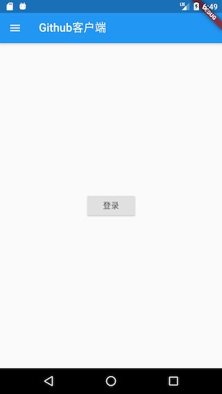
我们在“lib/routes”下创建一个“home_page.dart”文件，实现如下：
class HomeRoute extends StatefulWidget {
@override
_HomeRouteState createState() => _HomeRouteState();
}
class _HomeRouteState extends State<HomeRoute> {
static const loadingTag = "##loading##"; //表尾标记
var _items = <Repo>[Repo()..name = loadingTag];
bool hasMore = true; //是否还有数据
int page = 1; //当前请求的是第几页
@override
Widget build(BuildContext context) {
return Scaffold(
appBar: AppBar(
title: Text(GmLocalizations.of(context).home),
),
body: _buildBody(), // 构建主页面
drawer: MyDrawer(), //抽屉菜单
);
}
...// 省略
}
上面代码中，主页的标题（title）我们是通过GmLocalizations.of(context).home来获得，GmLocalizations是我们提供的一个Localizations类，用于支持多语言，因此当APP语言改变时，凡是使用GmLocalizations动态获取的文案都会是相应语言的文案，这在前面“国际化”一章中已经介绍过，读者可以前翻查阅。
我们通过 _buildBody()方法来构建主页内容，_buildBody()方法实现代码如下：
Widget _buildBody() {
UserModel userModel = Provider.of<UserModel>(context);
if (!userModel.isLogin) {
//用户未登录，显示登录按钮
return Center(
child: ElevatedButton(
child: Text(GmLocalizations.of(context).login),
onPressed: () => Navigator.of(context).pushNamed("login"),
),
);
} else {
//已登录，则显示项目列表
return ListView.separated(
itemCount: _items.length,
itemBuilder: (context, index) {
//如果到了表尾
if (_items[index].name == loadingTag) {
//不足100条，继续获取数据
if (hasMore) {
//获取数据
_retrieveData();
//加载时显示loading
return Container(
padding: const EdgeInsets.all(16.0),
alignment: Alignment.center,
child: SizedBox(
width: 24.0,
height: 24.0,
child: CircularProgressIndicator(strokeWidth: 2.0),
),
);
} else {
//已经加载了100条数据，不再获取数据。
return Container(
alignment: Alignment.center,
padding: EdgeInsets.all(16.0),
child: Text(
"没有更多了",
style: TextStyle(color: Colors.grey),
),
);
}
}
//显示单词列表项
return RepoItem(_items[index]);
},
separatorBuilder: (context, index) => Divider(height: .0),
);
}
}
上面代码注释很清楚：如果用户未登录，显示登录按钮；如果用户已登录，则展示项目列表。
_retrieveData() 方法用于获取项目列表，具体逻辑是：每次请求获取20条，当获取成功时，先判断是否还有数据（根据本次请求的项目条数是否等于期望的20条来判断还有没有更多的数据），然后将新获取的数据添加到_items中，然后更新状态，具体代码如下：
//请求数据
void _retrieveData() async {
var data = await Git(context).getRepos(
queryParameters: {
'page': page,
'page_size': 20,
},
);
//如果返回的数据小于指定的条数，则表示没有更多数据，反之则否
hasMore = data.length > 0 && data.length % 20 == 0;
//把请求到的新数据添加到items中
setState(() {
_items.insertAll(_items.length - 1, data);
page++;
});
}
在此需要注意，Git(context).getRepos(…)方法中需要refresh参数来判断是否使用缓存。
itemBuilder为列表项的构建器（builder），我们需要在该回调中构建每一个列表项Widget。由于列表项构建逻辑较复杂，我们单独封装一个RepoItem Widget 专门用于构建列表项UI。RepoItem 实现如下：
import '../index.dart';
class RepoItem extends StatefulWidget {
// 将`repo.id`作为RepoItem的默认key
RepoItem(this.repo) : super(key: ValueKey(repo.id));
final Repo repo;
@override
_RepoItemState createState() => _RepoItemState();
}
class _RepoItemState extends State<RepoItem> {
@override
Widget build(BuildContext context) {
var subtitle;
return Padding(
padding: const EdgeInsets.only(top: 8.0),
child: Material(
color: Colors.white,
shape: BorderDirectional(
bottom: BorderSide(
color: Theme.of(context).dividerColor,
width: .5,
),
),
child: Padding(
padding: const EdgeInsets.only(top: 0.0, bottom: 16),
child: Column(
crossAxisAlignment: CrossAxisAlignment.start,
children: <Widget>[
ListTile(
dense: true,
leading: gmAvatar(
//项目owner头像
widget.repo.owner.avatar_url,
width: 24.0,
borderRadius: BorderRadius.circular(12),
),
title: Text(
widget.repo.owner.login,
textScaleFactor: .9,
),
subtitle: subtitle,
trailing: Text(widget.repo.language??'--'),
),
// 构建项目标题和简介
Padding(
padding: const EdgeInsets.symmetric(horizontal: 16.0),
child: Column(
crossAxisAlignment: CrossAxisAlignment.start,
children: <Widget>[
Text(
widget.repo.fork
? widget.repo.full_name
: widget.repo.name,
style: TextStyle(
fontSize: 15,
fontWeight: FontWeight.bold,
fontStyle: widget.repo.fork
? FontStyle.italic
: FontStyle.normal,
),
),
Padding(
padding: const EdgeInsets.only(top: 8, bottom: 12),
child: widget.repo.description == null
? Text(
GmLocalizations.of(context).noDescription,
style: TextStyle(
fontStyle: FontStyle.italic,
color: Colors.grey[700]),
)
: Text(
widget.repo.description!,
maxLines: 3,
style: TextStyle(
height: 1.15,
color: Colors.blueGrey[700],
fontSize: 13,
),
),
),
],
),
),
// 构建卡片底部信息
_buildBottom()
],
),
),
),
);
}
// 构建卡片底部信息
Widget _buildBottom() {
const paddingWidth = 10;
return IconTheme(
data: IconThemeData(
color: Colors.grey,
size: 15,
),
child: DefaultTextStyle(
style: TextStyle(color: Colors.grey, fontSize: 12),
child: Padding(
padding: const EdgeInsets.symmetric(horizontal: 16),
child: Builder(builder: (context) {
var children = <Widget>[
Icon(Icons.star),
Text(" " +
widget.repo.stargazers_count
.toString()
.padRight(paddingWidth)),
Icon(Icons.info_outline),
Text(" " +
widget.repo.open_issues_count
.toString()
.padRight(paddingWidth)),
Icon(MyIcons.fork), //我们的自定义图标
Text(widget.repo.forks_count.toString().padRight(paddingWidth)),
];
if (widget.repo.fork) {
children.add(Text("Forked".padRight(paddingWidth)));
}
if (widget.repo.private == true) {
children.addAll(<Widget>[
Icon(Icons.lock),
Text(" private".padRight(paddingWidth))
]);
}
return Row(children: children);
}),
),
),
);
}
}
上面代码有两点需要注意：
-
在构建项目拥有者头像时调用了
gmAvatar(…)方法，该方法是是一个全局工具函数，专门用于获取头像图片，实现如下：Widget gmAvatar(String url, { double width = 30, double? height, BoxFit? fit, BorderRadius? borderRadius, }) { var placeholder = Image.asset( "imgs/avatar-default.png", //头像占位图 width: width, height: height ); return ClipRRect( borderRadius: borderRadius ?? BorderRadius.circular(2), child: CachedNetworkImage( imageUrl: url, width: width, height: height, fit: fit, placeholder: (context, url) =>placeholder, errorWidget: (context, url, error) =>placeholder, ), ); }代码中调用了
CachedNetworkImage是cached_network_image包中提供的一个Widget，它不仅可以在图片加载过程中指定一个占位图，而且还可以对网络请求的图片进行缓存，更多详情读者可以自行查阅其文档。 -
由于Flutter 的Material 图标库中没有fork图标，所以我们在iconfont.cn上找了一个fork图标，然后根据“3.3 图片及Icon”一节中介绍的使用自定义字体图标的方法集成到了我们的项目中。
15.6.3 抽屉菜单
抽屉菜单分为两部分：顶部头像和底部功能菜单项。当用户未登录，则抽屉菜单顶部会显示一个默认的灰色占位图，若用户已登录，则会显示用户的头像。抽屉菜单底部有“换肤”和“语言”两个固定菜单，若用户已登录，则会多一个“注销”菜单。用户点击“换肤”和“语言”两个菜单项，会进入相应的设置页面。我们的抽屉菜单效果如图15-3、15-4所示：
 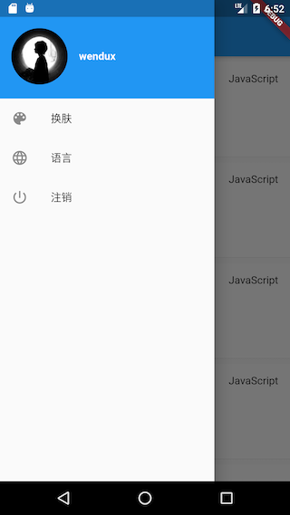
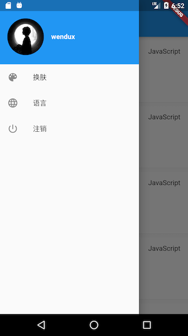
实现代码如下：
class MyDrawer extends StatelessWidget {
const MyDrawer({
Key? key,
}) : super(key: key);
@override
Widget build(BuildContext context) {
return Drawer(
child: MediaQuery.removePadding(
context: context,
// 移除顶部 padding.
removeTop: true,
child: Column(
crossAxisAlignment: CrossAxisAlignment.start,
children: <Widget>[
_buildHeader(), //构建抽屉菜单头部
Expanded(child: _buildMenus()), //构建功能菜单
],
),
),
);
}
Widget _buildHeader() {
return Consumer<UserModel>(
builder: (BuildContext context, UserModel value, Widget? child) {
return GestureDetector(
child: Container(
color: Theme.of(context).primaryColor,
padding: EdgeInsets.only(top: 40, bottom: 20),
child: Row(
children: <Widget>[
Padding(
padding: const EdgeInsets.symmetric(horizontal: 16.0),
child: ClipOval(
// 如果已登录，则显示用户头像；若未登录，则显示默认头像
child: value.isLogin
? gmAvatar(value.user!.avatar_url, width: 80)
: Image.asset(
"imgs/avatar-default.png",
width: 80,
),
),
),
Text(
value.isLogin
? value.user!.login
: GmLocalizations.of(context).login,
style: TextStyle(
fontWeight: FontWeight.bold,
color: Colors.white,
),
)
],
),
),
onTap: () {
if (!value.isLogin) Navigator.of(context).pushNamed("login");
},
);
},
);
}
// 构建菜单项
Widget _buildMenus() {
return Consumer<UserModel>(
builder: (BuildContext context, UserModel userModel, Widget? child) {
var gm = GmLocalizations.of(context);
return ListView(
children: <Widget>[
ListTile(
leading: const Icon(Icons.color_lens),
title: Text(gm.theme),
onTap: () => Navigator.pushNamed(context, "themes"),
),
ListTile(
leading: const Icon(Icons.language),
title: Text(gm.language),
onTap: () => Navigator.pushNamed(context, "language"),
),
if (userModel.isLogin)
ListTile(
leading: const Icon(Icons.power_settings_new),
title: Text(gm.logout),
onTap: () {
showDialog(
context: context,
builder: (ctx) {
//退出账号前先弹二次确认窗
return AlertDialog(
content: Text(gm.logoutTip),
actions: <Widget>[
TextButton(
child: Text(gm.cancel),
onPressed: () => Navigator.pop(context),
),
TextButton(
child: Text(gm.yes),
onPressed: () {
//该赋值语句会触发MaterialApp rebuild
userModel.user = null;
Navigator.pop(context);
},
),
],
);
},
);
},
),
],
);
},
);
}
}
用户点击“注销”，userModel.user 会被置空，此时所有依赖userModel的组件都会被rebuild，如主页会恢复成未登录的状态。
本小节我们介绍了APP入口MaterialApp的一些配置，然后实现了APP的首页。后面我们将展示登录页、换肤页、语言切换页。
15.7 登录页
我们说过Github有多种登录方式，为了简单起见，我们只实现通过用户名和密码登录。在实现登录页时有四点需要注意：
- 可以自动填充上次登录的用户名（如果有）。
- 为了防止密码输入错误，密码框应该有开关可以看明文。
- 用户名或密码字段在调用登录接口前有本地合法性校验（比如不能为空）。
- 登录成功后需更新用户信息。
注意：Github 官方为了保证安全，现在已经不允许直接使用密码登录，取而代之的是用户需要去Github上生成一个登录token，然后通过账号+token登录，如何创建token请参考Github官方指南。为了便于描述，本实例中的文案“密码”一次特指用户token。
实现代码如下：
import '../index.dart';
class LoginRoute extends StatefulWidget {
@override
_LoginRouteState createState() => _LoginRouteState();
}
class _LoginRouteState extends State<LoginRoute> {
TextEditingController _unameController = TextEditingController();
TextEditingController _pwdController = TextEditingController();
bool pwdShow = false;
GlobalKey _formKey = GlobalKey<FormState>();
bool _nameAutoFocus = true;
@override
void initState() {
// 自动填充上次登录的用户名，填充后将焦点定位到密码输入框
_unameController.text = Global.profile.lastLogin ?? "";
if (_unameController.text.isNotEmpty) {
_nameAutoFocus = false;
}
super.initState();
}
@override
Widget build(BuildContext context) {
var gm = GmLocalizations.of(context);
return Scaffold(
appBar: AppBar(title: Text(gm.login)),
body: Padding(
padding: const EdgeInsets.all(16.0),
child: Form(
key: _formKey,
autovalidateMode: AutovalidateMode.onUserInteraction,
child: Column(
children: <Widget>[
TextFormField(
autofocus: _nameAutoFocus,
controller: _unameController,
decoration: InputDecoration(
labelText: gm.userName,
hintText: gm.userName,
prefixIcon: Icon(Icons.person),
),
// 校验用户名（不能为空）
validator: (v) {
return v==null||v.trim().isNotEmpty ? null : gm.userNameRequired;
}),
TextFormField(
controller: _pwdController,
autofocus: !_nameAutoFocus,
decoration: InputDecoration(
labelText: gm.password,
hintText: gm.password,
prefixIcon: Icon(Icons.lock),
suffixIcon: IconButton(
icon: Icon(
pwdShow ? Icons.visibility_off : Icons.visibility),
onPressed: () {
setState(() {
pwdShow = !pwdShow;
});
},
)),
obscureText: !pwdShow,
//校验密码（不能为空）
validator: (v) {
return v==null||v.trim().isNotEmpty ? null : gm.passwordRequired;
},
),
Padding(
padding: const EdgeInsets.only(top: 25),
child: ConstrainedBox(
constraints: BoxConstraints.expand(height: 55.0),
child: ElevatedButton(
// color: Theme.of(context).primaryColor,
onPressed: _onLogin,
// textColor: Colors.white,
child: Text(gm.login),
),
),
),
],
),
),
),
);
}
void _onLogin() async {
// 先验证各个表单字段是否合法
if ((_formKey.currentState as FormState).validate()) {
showLoading(context);
User? user;
try {
user = await Git(context)
.login(_unameController.text, _pwdController.text);
// 因为登录页返回后，首页会build，所以我们传入false，这样更新user后便不触发更新。
Provider.of<UserModel>(context, listen: false).user = user;
} on DioError catch( e) {
//登录失败则提示
if (e.response?.statusCode == 401) {
showToast(GmLocalizations.of(context).userNameOrPasswordWrong);
} else {
showToast(e.toString());
}
} finally {
// 隐藏loading框
Navigator.of(context).pop();
}
//登录成功则返回
if (user != null) {
Navigator.of(context).pop();
}
}
}
}
代码很简单，关键地方都有注释，不再赘述，下面我们看一下运行效果，如图15-5所示。

15.8 多语言和多主题
本实例APP中语言和主题都是可以设置的，而两者都是通过ChangeNotifierProvider来实现的：我们在main函数中使用了Consumer2，依赖了ThemeModel和LocaleModel，因此，当我们在语言和主题设置页更该当前的配置后，Consumer2的builder都会重新执行，构建一个新的MaterialApp，所以修改会立即生效。下面看一下语言和主题设置页的实现。
15.8.1 语言选择页
APP语言选择页提供三个选项：中文简体、美国英语、跟随系统。我们将当前APP使用的语言高亮显示，并且在后面添加一个“对号”图标，实现如下：
import '../index.dart';
class LanguageRoute extends StatelessWidget {
@override
Widget build(BuildContext context) {
var color = Theme.of(context).primaryColor;
var localeModel = Provider.of<LocaleModel>(context);
var gm = GmLocalizations.of(context);
Widget _buildLanguageItem(String lan, value) {
return ListTile(
title: Text(
lan,
// 对APP当前语言进行高亮显示
style: TextStyle(color: localeModel.locale == value ? color : null),
),
trailing:
localeModel.locale == value ? Icon(Icons.done, color: color) : null,
onTap: () {
// 此行代码会通知MaterialApp重新build
localeModel.locale = value;
},
);
}
return Scaffold(
appBar: AppBar(
title: Text(gm.language),
),
body: ListView(
children: <Widget>[
_buildLanguageItem("中文简体", "zh_CN"),
_buildLanguageItem("English", "en_US"),
_buildLanguageItem(gm.auto, null),
],
),
);
}
}
上面代码逻辑很简单，唯一需要注意的是我们在build(…)方法里面定义了_buildLanguageItem(…)方法，它和在LanguageRoute类中定义该方法的区别就在于：在build(…)内定义的方法可以共享build(...)方法上下文中的变量，本例中是共享了localeModel。当然，如果_buildLanguageItem(…)的实现复杂一些的话不建议这样做，此时最好是将其作为LanguageRoute类的方法。该页面运行效果如图15-6、15-7所示：
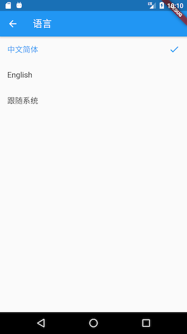
切换语言后立即生效。
15.8.2 主题选择页
一个完整的主题Theme包括很多选项，这些选项在ThemeData中定义。本实例为了简单起见，我们只配置主题颜色。我们提供几种默认预定义的主题色供用户选择，用户点击一种色块后则更新主题。主题选择页的实现代码如下：
class ThemeChangeRoute extends StatelessWidget{
@override
Widget build(BuildContext context) {
return Scaffold(
appBar: AppBar(
title: Text(GmLocalizations.of(context).theme),
),
body: ListView( //显示主题色块
children: Global.themes.map<Widget>((e) {
return GestureDetector(
child: Padding(
padding: const EdgeInsets.symmetric(vertical: 5, horizontal: 16),
child: Container(
color: e,
height: 40,
),
),
onTap: () {
//主题更新后，MaterialApp会重新build
Provider.of<ThemeModel>(context, listen: false).theme = e;
},
);
}).toList(),
),
);
}
}
运行效果如图15-8所示：
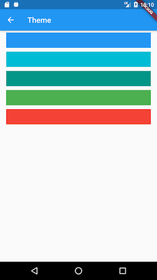
点击其他主题色块后，APP主题色立马切换生效。